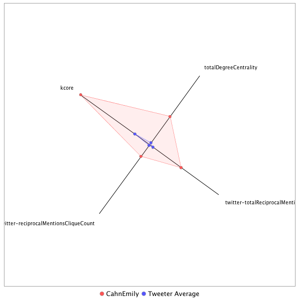

This tweeter has been identified as a super friend. Its target audience and hashtag and word usage are analyzed below.
Basic Statistics
Number of direct followers 16187 The peak number of followers that the tweeter had during any time period. Number of retweeters 86 Number of agents that retweeted the key influencer. Number of secondary followers 5024722 The sum of the followers of those who retweeted the key influencer.
Measure Values of Super Friends node versus Tweeter Average
This compares the measure values of the key influencer with the average values across all tweeters. For each measure line, the center-point means zero and the end-point means the maximum score across all tweeters.

Where was the influencer?
The agent is not recorded as being in any locations. Either he tweeted without geo-tags or we have no information about the tweets he sent.
The agent and retweeters were in 10 different locations.

What hashtags did the influencer use?
This displays the top ranked hashtags that the influencer and its retweeters used.
Rank hashtag Count 1 BREAKING 222 2 AHCA 220 3 adopt 220 4 mtal 214 5 GA06 210 6 AdoptDontShop 170 7 Comey 169 8 dog 169 9 VAGov 158 10 netneutrality 140 11 Trump 120 12 ParisAgreement 113 13 cat 102 14 Russia 93 15 rescue 88 16 NYC 83 17 TheBachelorette 82 18 foster 79 19 ge2017 76 20 SCOTUS 74 21 ksleg 71 22 potusabroad 70 23 ComeyHearing 67 24 ComeyFiring 63 25 RiyadhSummit 61 26 txlege 60 27 CATS 58 28 Hardball 52 29 covfefe 51 30 MTpol 49 31 ComeyTestimony 48 32 Manchester 48 33 ComeyDay 47 34 dogs 47 35 FBIDirector 45 36 FF 44 37 NJGOV 44 38 Obamacare 43 39 MOLeg 42 40 Qatar 41 41 Nats 40 42 CA 39 43 FOIA 39 44 travelban 39 45 TrumpCare 36 46 Syria 34 47 utpol 33 48 AFP 32 49 DoctorWho 32 50 SC05 32 51 dogsoftwitter 31 52 trumprussia 31 53 bbcelection 30 54 snl 30 55 TBT 29 56 Da 28 57 Iran 28 58 PLEDGE 28 59 CongressionalBaseballGame 27 60 LondonBridge 26 61 Florida 25 62 Kitty 25 63 autchat 25 64 climatechange 25 65 presidentielle2017 25 66 CAPIdeas 24 67 China 24 68 SethRich 24 69 Tillerson 24 70 US 24 71 bdcnews 24 72 sallyyates 24 73 ISIS 23 74 NorthKorea 23 75 ParisAccord 22 76 RexTillerson 22 77 climate 22 78 ACA 21 79 LOVE 21 80 OTD 21 81 POTUS 21 82 PPLSummit 21 83 ParisClimateDeal 21 84 Tonys2017 21 85 Caps 20 86 DefendtheLand 20 87 SaudiArabia 20 88 fy17 20 89 MemorialDay 19 90 caturday 19 91 gapol 19 92 Alexandria 18 93 Tampa 18 94 TrumpBudget 18 95 TwinPeaks 18 96 odd 18 97 JamesComey 17 98 MetGala 17 99 NATO 17 100 OHSEN 17
Tweet List
This displays all of the tweets of the influencer ordered from earliest to latest. Click on a tweet to see its status in Twitter.
Number Tweet ID Date Message 1 862065684322406400 2017-05-09 18:04:10-04 The confirmation hearings are going to be insane https://t.co/SgAQEqhxrT 2 861552280272809986 2017-05-08 08:04:05-04 Attack ads hit Republicans who voted for #Trumpcare: "How could you do this do us?" https://t.co/TZEGwByvFP 3 860926318652915712 2017-05-06 14:36:44-04 The version that passed was not scored and out for a few hours before it was voted on. This is misleading bordering on false. https://t.co/B77LHjgcLD 4 862038345060319232 2017-05-09 16:15:32-04 Here we go. This is gunna be blasted over every airwave https://t.co/NBjIZ868fs 5 864608856965599232 2017-05-16 18:29:49-04 Sounds like spirits are high and GOP members of Congress are super excited to be there https://t.co/MdGTqVZXMH 6 864601080432406535 2017-05-16 17:58:55-04 We're at the point where it hurts Republicans MORE to have Trump in office, which makes their reluctance to punish/remove him strange 7 864263125994024963 2017-05-15 19:36:01-04 welp https://t.co/ruCy0M0KLE 8 866975762020257792 2017-05-23 07:15:03-04 .@realDonaldTrump vs. @BarackObama at Yad Vashem. Starkly different. https://t.co/DqvI7t7Ed0 9 866622489983627266 2017-05-22 07:51:17-04 Maybe someone should have reminded Wilbur that unlike the U.S., protesting isn't looked favorably upon in Saudi Arabia https://t.co/N9EWQNxQaT 10 865583736124874753 2017-05-19 11:03:39-04 !!!!!!! https://t.co/ymS8UYOAko 11 869519665650860032 2017-05-30 07:43:37-04 Politico says he resigned May 18. Shocking it didn't leak for almost two weeks. https://t.co/NuieSUJjts 12 867481626657345537 2017-05-24 16:45:11-04 .@SpeakerRyan's office comment on @USCBO score that says 23 million would lose insurance, and would have plans that don't cover their needs https://t.co/q4XMFSJHcs 13 867469349816291328 2017-05-24 15:56:24-04 RELEASE THE CRACKEN https://t.co/ukdBc78psV 14 872836772501258241 2017-06-08 11:24:37-04 Woah, Comey just said he told a friend he had memos of their conversations to force a special counsel 15 872827817511313409 2017-06-08 10:49:02-04 .@SenatorRisch gets out there that while Comey was director, Trump wasn't under investigation personally 16 874622077617287168 2017-06-13 09:38:47-04 The rent is too damn high. https://t.co/yO0Eu2kmfc 17 874999139670654977 2017-06-14 10:37:06-04 This picture https://t.co/28bzz24pgN 18 874695893727006721 2017-06-13 14:32:06-04 Before the thing even starts ---> https://t.co/fMgh2scduJ 19 874614271728078848 2017-06-13 09:07:46-04 So Lynch called it a "matter" so as not to confirm the Clinton investigation, which Trump cited as a reason 4 firing Comey, & now she's bad https://t.co/hMzwpTfLTf 20 874609157772587008 2017-06-13 08:47:27-04 We'll never escape 2016 https://t.co/hMzwpTfLTf 21 874586872449830912 2017-06-13 07:18:54-04 https://t.co/NNw0AhlnCt 22 874415303194812416 2017-06-12 19:57:08-04 Unlikely doesn't sound like they're so sure https://t.co/1puRQnNmdY 23 874962307750744064 2017-06-14 08:10:44-04 ----> https://t.co/0JntzCdmFP 24 872848241779503104 2017-06-08 12:10:12-04 .@KamalaHarris says when a criminal has a gun to your head and says "I hope you give me your money" that "hope" doesnt mean much 25 872950428090216451 2017-06-08 18:56:15-04 This is great https://t.co/STmFvLw8dr 26 872409033034092546 2017-06-07 07:04:56-04 The Trump defense that Comey isn't trustworthy has a big hurdle, which is that no one believes Trump fired Comey with good intentions https://t.co/cOzpK34S0c 27 872064958774870016 2017-06-06 08:17:43-04 He's never gunna stop tweeting self-destructive things. He's a 70-year-old man who will never, ever change. https://t.co/wKd2DZL8Xe 28 872045175018848256 2017-06-06 06:59:06-04 .@realDonaldTrump just tweeted this. @POTUS (not run by him) tweeted about Portland. And nothing about Orlando workplace shooting https://t.co/fgcOuKtQ7i 29 871782209769877506 2017-06-05 13:34:10-04 .@Kellyannepolls' husband clarifies his comments after shading @realDonaldTrump. https://t.co/7nFRrBztWT 30 871723413152444416 2017-06-05 09:40:32-04 Trump's party controls who gets voted on. No Democrats are needed to pass his nominees. He doesn't understand anything. https://t.co/4PGoNmCUEm 31 870703458181038082 2017-06-02 14:07:35-04 It was a Breitbart reporter https://t.co/dIaEgIgJoq 32 871061398222237696 2017-06-03 13:49:55-04 Thread https://t.co/E5uCoPK1RC 33 870369641562087425 2017-06-01 16:01:07-04 CEO of General Electric ---> https://t.co/S6e8PHpnkF 34 870321005864079360 2017-06-01 12:47:52-04 The @NewYorker with a perfectly timed and executed cartoon https://t.co/2iruFKLKi1 35 859112099880083456 2017-05-01 14:27:40-04 "the chief of staff made it very clear that it's something being looked into" @seanspicer says of a constitutional amendment on 1st amendmt 36 870005547185053697 2017-05-31 15:54:21-04 "I'm as angry about what's going on as anybody" @HillaryClinton says, while saying women in politics can't show anger like men 37 866720024832200706 2017-05-22 14:18:51-04 So what your saying is, an Info Wars reporter created yet another hoax? https://t.co/HeMVpp5aEP 38 866664562061430785 2017-05-22 10:38:28-04 America First! https://t.co/F5WIPQnSOs 39 864819987776720896 2017-05-17 08:28:47-04 The 2nd time in 2 days that the admin's defense of @realDonaldTrump is that he's not intelligent enough to have done what he's accused of https://t.co/s2817arIYd 40 864535035881431041 2017-05-16 13:36:29-04 This foreign trip is gunna be fun https://t.co/XPdiWnQY4C 41 864256777277378560 2017-05-15 19:10:47-04 WaPo didn't say sources or methods of getting info were shared. They said INFO was shared. Not the same thing. https://t.co/ghjPn8eHGU 42 864078183548825600 2017-05-15 07:21:07-04 Trump doesn't like to read, gets his news from internet trolls & needs doses of positive coverage to keep him happy https://t.co/Aa2mrhf0I8 43 862686614073561088 2017-05-11 11:11:31-04 Blunt said he'd be mad to hear that the review of immigration policy didn't take place because WH was waiting on the courts to rule on EO https://t.co/grO3V3cAse 44 862308390944616448 2017-05-10 10:08:35-04 Comey got fired, and the Senate is voting on farts. Welcome to 2017. https://t.co/mMpSY16tPJ 45 861665222108622848 2017-05-08 15:32:52-04 Now @ChuckGrassley is now trying to claim that Russians releasing the @DNC's oppo files on Republican is an attack on the GOP. 46 860546958674579459 2017-05-05 13:29:17-04 So the Senate GOP is basically going to re-pass Obamacare? Can someone please explain how this is any different? https://t.co/g4qizjmRn2 https://t.co/CcndTFoEwW 47 860100252648566787 2017-05-04 07:54:14-04 ::Insert This is Fine GIF:: https://t.co/mLCLPzcflc 48 859919399691718656 2017-05-03 19:55:36-04 Since House leadership assures us #AHCA will pass tomorrow, can someone advise on what the Senate's plan entails? So far, crickets 49 859130815795613697 2017-05-01 15:42:03-04 If AHCA passes by 1 vote, then every vulnerable member who voted for it is gunna get hit with the ad saying they were the 'decisive' vote https://t.co/qVvBKwtv7T 50 859102109375115269 2017-05-01 13:47:58-04 Trumpcare 2.0 (3.0?) is dead. https://t.co/lc6WJfjzln 51 865184290782490624 2017-05-18 08:36:23-04 Roger Ailes is dead, @DRUDGE_REPORT announced with statement from his wife https://t.co/TGeMZQD0xA 52 867802698275364864 2017-05-25 14:01:00-04 WOW. 4th Circuit says @realDonaldTrump's travel ban "drips with religious intolerance, animus, and discrimination." 53 860190593229651968 2017-05-04 13:53:13-04 The first vote is not on the AHCA. It's a vote to nix the member of congress exemption from pre-existing condition waivers 54 875407258187964417 2017-06-15 13:38:49-04 Today's briefing is off camera and audio is banned https://t.co/5sUDolURi0 55 875773378308829185 2017-06-16 13:53:39-04 #TBT to when Wilbur Ross was praising the lack of protest in Saudi Arabia, where protesters are beheaded by the repressive government https://t.co/YXncDbmKvm 56 876601599589744640 2017-06-18 20:44:42-04 People were mowed down leaving a Mosque in London https://t.co/VAQkTAkSSg 57 876775391956013056 2017-06-19 08:15:17-04 No comment on the murder of a Muslim teen in VA, nor an attack on Muslims in London. https://t.co/7QlSJG0jmP 58 867752927661871104 2017-05-25 10:43:14-04 .@realDonaldTrump is calling out world leaders at NATO who he claims are not paying their fair share. 59 867820292307124224 2017-05-25 15:10:55-04 .@IngrahamAngle lives in a constant delusional fever dream -- yet people follow/trust her https://t.co/4bS4i920xt 60 867793497881014272 2017-05-25 13:24:27-04 the perils of early voting https://t.co/bTh85RxrZy 61 867773413682802688 2017-05-25 12:04:38-04 Watch @realDonaldTrump push a world leader at the NATO summit https://t.co/u7IFhs9SSB 62 867539037950705664 2017-05-24 20:33:19-04 The audio does not back this up. https://t.co/FXzMBwzF4i 63 867535290633728001 2017-05-24 20:18:25-04 The audio is REALLY bad https://t.co/vFGCBZ4821 64 867526316681310209 2017-05-24 19:42:46-04 The republican in #MTAL caused this the night before the election. Jesus https://t.co/abhmfJP6lp 65 869961596608684033 2017-05-31 12:59:42-04 RT @RachelBkr: Washington Post just killed it on @reddit. #covfefe https://t.co/laGgR1Oq9X 66 869960138714742784 2017-05-31 12:53:54-04 RT @mmcassella: Mocking the president of the United States' tweets is now a business opportunity https://t.co/pn6JYMNbYQ 67 869959498261299200 2017-05-31 12:51:22-04 @LaurenZelt But, where will girls go for inappropriate clothes to wear to bar mitzvahs?! I feel like my childhood is being attacked here 68 869959160485613570 2017-05-31 12:50:01-04 #TBT to when @spaydl publicly asked why @nytimes doesn't get sued for libel more. Maybe it's bc they don't libel ppl https://t.co/codzwtoHwC https://t.co/q0IUSnrVpe 69 869956139533860864 2017-05-31 12:38:01-04 RT @ClydeHaberman: Um, if you want to change an organization, not to mention lead it, is it too much to ask of you to belong to it? https:/… 70 869949942537879559 2017-05-31 12:13:23-04 RT @christinawilkie: So public opinion is the opposite of what Spicer said yesterday: "The best messenger is the president himself. He’s al… 71 869949872497188864 2017-05-31 12:13:07-04 This is as cringe-worthy as Miss South Carolina's "the Iraq and such as" blunder. But this guy is getting paid to do this. https://t.co/J5cTNJ2d6i 72 869948631411019780 2017-05-31 12:08:11-04 awful https://t.co/qdoZZsT9va 73 869948375835213826 2017-05-31 12:07:10-04 .@GOP is raising money by saying @realDonaldTrump is being attacked "from within." https://t.co/t0lU1HI9La 74 869946794226196481 2017-05-31 12:00:53-04 RT @thomaswright08: I spent four days in Beijing last week meeting senior Chinese FP experts and can confirm this is true. They're thrilled… 75 869946676450136065 2017-05-31 12:00:25-04 RT @DylanByers: MONMOUTH: % who say person *hurts* Trump when they speak on his behalf SPICER - 42% CONWAY - 40% SANDERS - 22% PENCE - 29%… 76 869945805578399745 2017-05-31 11:56:57-04 RT @ArthurDelaneyHP: earth control https://t.co/jeNlHqZaTz 77 869945173895196674 2017-05-31 11:54:26-04 Me, this week https://t.co/IaXgNxZyd3 78 869943108473151489 2017-05-31 11:46:14-04 RT @betsy_klein: omg @TheView has some gifts for guest @ChelseaClinton, who says, "I think we're going to stick with the original." https:/… 79 869938266845392897 2017-05-31 11:27:00-04 I seriously am doing everything wrong https://t.co/SsPDDdtb4p 80 869937518778732548 2017-05-31 11:24:01-04 RT @jackfitzdc: Gonna be a tough primary. #NE02 https://t.co/WSMNchPvyW 81 869936410836574208 2017-05-31 11:19:37-04 RT @PoliticoKevin: :yells into void: THE #VAGOV DEM PRIMARY IS NOT A REPLAY OF HILLARY VS. BERNIE. 82 869936202262171648 2017-05-31 11:18:47-04 RT @afreedma: Exxon CEO just reiterated support for Paris Agreement at annual shareholders mtg in Dallas. Via @bradnews 83 869934272295165952 2017-05-31 11:11:07-04 RT @kylegriffin1: Many more Americans have an unfavorable view of AHCA (55%) than a favorable one (31%) https://t.co/UPpdIavsrF https://t.c… 84 869933337128861696 2017-05-31 11:07:24-04 RT @NickRiccardi: Greatest city in the world https://t.co/zg4yIokrNh 85 869932612575522816 2017-05-31 11:04:32-04 Just what we need, more internet comments with people using words like libtard and demorats https://t.co/Da3mhCNYQu 86 869931914232287232 2017-05-31 11:01:45-04 This is the only #covfefe story worth reading https://t.co/hcagQrWJeY 87 869930614996307968 2017-05-31 10:56:35-04 RT @daveweigel: Dana Rohrabacher's challenger https://t.co/NpX0L1j91z 88 869929444726775809 2017-05-31 10:51:56-04 RT @NickBaumann: So this story suggests that the @nytimes will essentially merge copy editing and story editing functions. https://t.co/jVq… 89 869927541380984833 2017-05-31 10:44:22-04 wow https://t.co/1MdyJzYL4V 90 869918519974133762 2017-05-31 10:08:32-04 So @realDonaldTrump is hurting his party by mobilizing Democrats against the GOP for symbolic actions that don't accomplish much. https://t.co/OtjyYlJ58G 91 869916674174144512 2017-05-31 10:01:12-04 RT @sahilkapur: Paris accord is a pattern. Trump tends to put off big decisions, then lean one way, then find himself conflicted at the mom… 92 869914164956979200 2017-05-31 09:51:13-04 RT @JaredRizzi: --> https://t.co/qzOyeRwAC2 93 869914120769986563 2017-05-31 09:51:03-04 RT @moneyries: Philly police! https://t.co/lbkeixfp1X 94 869914015178395648 2017-05-31 09:50:38-04 RT @ericgeller: It's not true that the U.S. will stand alone in rejecting the Paris agreement. We'll be joining Syria and Nicaragua. 95 869913021275090944 2017-05-31 09:46:41-04 The smiley face really gives it that extra touch https://t.co/hvj3mjXbxg 96 869911055497142272 2017-05-31 09:38:52-04 RT @AaronBlake: Clearly what this White House needs is more Corey https://t.co/SBCNzohfzt 97 869910466050629634 2017-05-31 09:36:31-04 RT @kelseymsutton: jfc https://t.co/7ItLJ5iHbL https://t.co/RmkFrhTUUY 98 869910115545223168 2017-05-31 09:35:08-04 RT @TomNamako: Trump/climate reading from @BuzzFeedNews Sea levels https://t.co/B3VqCn2N87 Paris https://t.co/NqXx1VBCdA Deniers https:/… 99 869909351200436224 2017-05-31 09:32:06-04 RT @JamesPindell: Inbox: MSNBC's Morning Joe Hosts Joe Scarborough and Mika Brzezinski Named Fellows at @HarvardIOP 100 869908719164956672 2017-05-31 09:29:35-04 RT @sarahkliff: State-level birth control mandates — like this one in New York — about to become a lot more important. https://t.co/ffshC6d… 101 869908406248894464 2017-05-31 09:28:20-04 RT @DavidMDrucker: => https://t.co/squgxqLLD0 102 869908261826424832 2017-05-31 09:27:46-04 RT @sahilkapur: In two and a half days, Trump's "add more dollars" becomes "add saved" dollars re: health care. https://t.co/sWRnEge2SP 103 869907873891069952 2017-05-31 09:26:13-04 I could see a situation where insurance companies spend $ on a fight to keep the rule https://t.co/oxqDvmxONy 104 869907729388883969 2017-05-31 09:25:39-04 I find it odd that insurance companies would want this exemption. Paying for pills is much cheaper than a pregnancy. https://t.co/awXx1fJggJ 105 869906145552596995 2017-05-31 09:19:21-04 RT @racheleklein: What's incredible about Kayleigh is how eager & willing she is to die on a hill where there's not even a battle going on.… 106 869905516071235587 2017-05-31 09:16:51-04 RT @_cingraham: Apparently the only person who didn't see the Paris news coming was @elonmusk https://t.co/aWEcKCxRKv 107 869905442809540608 2017-05-31 09:16:34-04 RT @AmandaBecker: Your aides already told everyone. https://t.co/93GFsQDhkU 108 869905018492776448 2017-05-31 09:14:53-04 RT @KThomasDC: Former top Obama adviser on climate --> https://t.co/ZNgZsKeoku 109 869904331503538178 2017-05-31 09:12:09-04 https://t.co/7b2v5llmpu 110 869903726944890880 2017-05-31 09:09:45-04 https://t.co/z1WFvBQW1z 111 869899622549999616 2017-05-31 08:53:26-04 RT @amandacarpenter: Putting character issues aside, what communications crisis has Corey Lewandowski actually managed well? In all serious… 112 869896870423867392 2017-05-31 08:42:30-04 Guess he didn't listen https://t.co/OlZuEg8iDH 113 869896271779287040 2017-05-31 08:40:07-04 RT @igorbobic: Some men just want to watch the world burn. Literally. https://t.co/k67hzi532M 114 869894574533115905 2017-05-31 08:33:23-04 Can someone find @SusanSarandon? I think I heard her rocking back and forth in her mansion muttering that Clinton is still worse than Trump 115 869893447234334721 2017-05-31 08:28:54-04 You mean those countries aren't beacons of democracy and progress? https://t.co/OW5ylHHFvT 116 869891853746876416 2017-05-31 08:22:34-04 She gets paid for this. ::cries self to sleep:: https://t.co/GWGoY2USWe 117 869890680793034753 2017-05-31 08:17:54-04 RT @matthewjdowd: Seriously Mr. President, yes Griffin was wrong, but she apologized quickly. You invited Ted Nugent into WH and have neve… 118 869890605920505856 2017-05-31 08:17:36-04 RT @SopanDeb: It's dead. It was Ingraham in the kitchen with a candlestick. https://t.co/B07ivHIXFa 119 869890543530237952 2017-05-31 08:17:22-04 RT @BenjySarlin: Are lawyers vetting his tweets yet or.... https://t.co/p80UNUwnwX 120 869890502119895042 2017-05-31 08:17:12-04 RT @DanEggenWPost: That's 10x the number of coal industry employees in the US https://t.co/B1ms7akfep 121 869875075499118592 2017-05-31 07:15:54-04 Was wondering when this one would come. https://t.co/eJK4m7UoVa 122 869872751586267136 2017-05-31 07:06:40-04 RT @GlennThrush: 2017, folks https://t.co/aD0B2SkPqn 123 869872343996411904 2017-05-31 07:05:02-04 .@SavannahGuthrie: President Donald Trump is lighting up @twitter with a bizarre tweet. a.k.a..... a day that ends in Y 124 869871895587500032 2017-05-31 07:03:16-04 Can't imagine being this reporter. The tennis player had his hand around her neck & forced kisses on her. Awful. https://t.co/pDfpqOVYfT 125 869868390923591681 2017-05-31 06:49:20-04 RT @colincampbell: the president appears to be watching "Fox & Friends" this morning https://t.co/mjtlqNOHw4 126 869868193933910016 2017-05-31 06:48:33-04 RT @mic: Good morning, and welcome to #covfefe's America: https://t.co/pkFGdLZOVv 127 869866922749329409 2017-05-31 06:43:30-04 He's over #Covfefe. Back to rage tweeting. https://t.co/4YxfPdOEQA 128 869866768239656964 2017-05-31 06:42:53-04 RT @alterego_rob: Now THAT'S funny, I don't care what side you're on #covefefe https://t.co/NgyLqKm0Pm 129 869865231811567616 2017-05-31 06:36:47-04 RT @offthegrounduk: Come get your #covfefe fix this morning https://t.co/ygopQosyCs 130 869862698753851393 2017-05-31 06:26:43-04 Staff tweeted this, no? https://t.co/xxu4L9k5u0 131 869857028306546690 2017-05-31 06:04:11-04 RT @TheRealDratch: It's 5:50 am & his tweet is gone. The sun rises &we all walk home in our party clothes.Was it all just a dream? The wind… 132 869856910798934016 2017-05-31 06:03:43-04 RT @mattyglesias: To come back from a NATO summit and conclude that America is locked in a zero-sum struggle with Canada, Italy, Greece, et… 133 869856765801902080 2017-05-31 06:03:08-04 RT @dog_rates: This is Dewey (pronounced "covfefe"). He's having a good walk. Arguably the best walk. 13/10 would snug softly https://t.co/… 134 869854838611468288 2017-05-31 05:55:29-04 "#covfefe, have you heard that expression used before? Because I haven't heard it. I came up with it a couple of days ago." https://t.co/RpP4NTcXKm 135 869854532557262848 2017-05-31 05:54:16-04 RT @NBCNews: UPDATE: "Covfefe" tweet has now been deleted from Trump's Twitter account. 136 869854309961412608 2017-05-31 05:53:23-04 #NeverForget #covfefe https://t.co/BOpKtJeGjF 137 869853872675840001 2017-05-31 05:51:39-04 RT @yashar: #COVFEFE is gone!!!!!!! :( 138 869853827213688832 2017-05-31 05:51:28-04 RT @wilw: deSpitE tHe NegATiVe PreSs cOvFeFe https://t.co/hJsI09C09A 139 869853534501699584 2017-05-31 05:50:18-04 RT @superdeluxe: TRUMP: Despite the constant negative press ME: COVFEFE https://t.co/PfA6xrwL4W 140 869853501748367360 2017-05-31 05:50:10-04 RT @aaronlinde: A scene from the inevitable feature film adaptation of tonight's events. We'll probably call it #covfefe, with the hashtag,… 141 869853409553391616 2017-05-31 05:49:48-04 RT @MikeGormanHFX: Ask not what covfefe can do for you, but what you can do for #covfefe https://t.co/pXD950PtXj 142 869853258726219776 2017-05-31 05:49:12-04 RT @realDougWitt: Moderator: Your word is #covfefe Arvind: Use it in sentence Moderator: Despite the constant negative press covfefe Arv… 143 869853218959970304 2017-05-31 05:49:03-04 RT @jessesingal: Don't normalize covfefe 144 869853174714089472 2017-05-31 05:48:52-04 RT @Steverocks35: Life covfefes at you fast https://t.co/CkeDhC9IO8 145 869853136760053761 2017-05-31 05:48:43-04 RT @alt_kellyanne_: Stop trying to make #covfefe happen, Donald. https://t.co/X5NtOeyvnF 146 869852781628280833 2017-05-31 05:47:18-04 Same https://t.co/QIpXV6ZMhp 147 869852582214336512 2017-05-31 05:46:31-04 RT @peterbakernyt: In op-ed, McMaster and Cohn assert that Trump committed to NATO Article 5, though Trump never actually said that. https:… 148 869852517659803649 2017-05-31 05:46:15-04 He doesn't drink, but this sounds like a classic drunk text https://t.co/o83FzsfbHc 149 869728939375300611 2017-05-30 21:35:12-04 RT @NoahCRothman: This reads like the preliminary stages of a mental breakdown. https://t.co/J7klPsCIFG https://t.co/bzs2pXMFhs 150 869728726656974848 2017-05-30 21:34:21-04 RT @davidshepardson: At least part of @AP story has been out there https://t.co/YhpFz3sjW7 151 869728556863062016 2017-05-30 21:33:41-04 RT @mikefreemanNFL: Yeah but Hillary used the wrong email serv...never mind. https://t.co/hoHLjnweZ9 152 869728281251196928 2017-05-30 21:32:35-04 https://t.co/qUtUXh5d8b 153 869727738881560576 2017-05-30 21:30:26-04 https://t.co/yhHN7cttR8 154 869713684351913984 2017-05-30 20:34:35-04 Surprising, cause TMZ usually gets things right (because they pay their sources) https://t.co/UcUYGfJK4g 155 869713098311168000 2017-05-30 20:32:15-04 RT @davecatanese: Tomorrow's SPICER briefing is OFF camera. 156 869712980388270081 2017-05-30 20:31:47-04 RT @ClydeHaberman: That is for sure. https://t.co/OI57yXKs7m 157 869700821650460674 2017-05-30 19:43:28-04 RT @KateNocera: @alexis_levinson Also idk maybe don't let interns go on TV for you as a comms strat. 158 869700807398215685 2017-05-30 19:43:25-04 RT @KateNocera: This interview is ridiculous. It's @alexis_levinson, not Levinsky and she was doing her job reporting what she saw. https:… 159 869700480926191617 2017-05-30 19:42:07-04 RT @AshleyAlese: In the last 6 months, there have been four major attacks by white supremacists in the US via @mic https://t.co/RBqkRNDyYW 160 869684968968122369 2017-05-30 18:40:29-04 RT @StuPolitics: I'm with him. https://t.co/49GJv7bpP0 161 869684931991138304 2017-05-30 18:40:20-04 RT @_cingraham: I for one am shocked that the conservative media fever swamp spent the bulk of last week tweeting nonsense https://t.co/gcs… 162 869684892216557572 2017-05-30 18:40:10-04 RT @ericgeller: Wonder if certain people whose content is linked to here https://t.co/9oiq4yiWqg will issue corrections. 163 869683050552205318 2017-05-30 18:32:51-04 @mattmfm Jersey City is where it's at! 164 869677516239327235 2017-05-30 18:10:52-04 https://t.co/OBAeGzOWeR 165 869673638148091904 2017-05-30 17:55:27-04 RT @JohnJHarwood: +1 https://t.co/U21qXUyxEo 166 869673119245643776 2017-05-30 17:53:24-04 The main event https://t.co/fvZQRPzpml 167 869666267325747202 2017-05-30 17:26:10-04 Not great weather, but first grill night of the year https://t.co/rGXQ3FzKKy 168 869658237896978432 2017-05-30 16:54:16-04 !! https://t.co/HM6c7wTGLv 169 869655757561753600 2017-05-30 16:44:24-04 "I concur as a judge, but as a citizen I do not" https://t.co/Cabf4x1ZuG 170 869644013384716288 2017-05-30 15:57:44-04 Putin parrots Trump https://t.co/xkhy0f5cup 171 869636273392279553 2017-05-30 15:26:59-04 RT @flasportsbuzz: Jeb Bush, who repeatedly told Marlins he had enough money to buy team and was negotiating purchase agreement, has ended… 172 869635097485602818 2017-05-30 15:22:18-04 RT @ConnorFinnegan: lazy millennials strike again https://t.co/aNMtfjXUvc 173 869624994632011781 2017-05-30 14:42:10-04 RT @reidepstein: MSNBC: "Sean Spicer, leaving the White House briefing room at the first sign of trouble..." 174 869624649147195392 2017-05-30 14:40:47-04 RT @yashar: Same https://t.co/P7EX5t2dH0 175 869624601201999872 2017-05-30 14:40:36-04 RT @StuPolitics: The angry Sean is back. 176 869624091774509059 2017-05-30 14:38:34-04 He said it with such gusto and joy. (Jokes, he looks like he'd rather be anywhere but that podium) https://t.co/9DUk73EWtH 177 869623803369979905 2017-05-30 14:37:26-04 RT @samsteinhp: Sean won't comment on Jared. Can't answer about Trump's health care tweet. Hasn't asked POTUS about climate change. and so… 178 869623701553258497 2017-05-30 14:37:01-04 RT @GlennThrush: Sean who has worked for Trump for many many many months says he never talked to him about whether humans are responsible f… 179 869623656825196546 2017-05-30 14:36:51-04 RT @davidfolkenflik: in response to reporter query, Spicer says unsure whether President Trump believes whether human activity has contribu… 180 869623031265726466 2017-05-30 14:34:22-04 barely https://t.co/GV8CbBn9fd 181 869622961808003072 2017-05-30 14:34:05-04 "We'll take a stand against violence against any individual" @seanspicer says in regards to violence against reporters 182 869622790827192321 2017-05-30 14:33:24-04 RT @lachlan: Spicer calls this "great" Merkel statement "a good thing for NATO and a good thing for America." https://t.co/CeLyTIahWP 183 869622548065136642 2017-05-30 14:32:26-04 RT @SteveKopack: Spicer says Merkel & Trump's relationship is "fairly unbelievable" Is that unbelievable in a good or bad way? 184 869621670587355137 2017-05-30 14:28:57-04 RT @HallieJackson: Was quite clear pre-briefing that Spicer would get Qs on Kushner. Might've expected to see an outlined rebuttal from WH.… 185 869621471890612225 2017-05-30 14:28:10-04 .@seanspicer does not want to be at that podium right now. That oozes from him. 186 869621346359226369 2017-05-30 14:27:40-04 RT @swin24: Are all the questions about tweets lol 187 869620875800301568 2017-05-30 14:25:48-04 .@seanspicer just cited delays in @realDonaldTrump's cabinet nominees as reason to end the filibuster. There IS NO FILIBUSTER for those noms 188 869620650918502400 2017-05-30 14:24:54-04 RT @NoahCRothman: The White House hasn't done much denying of these anonymously sourced reports on Russia recently 189 869620547826712580 2017-05-30 14:24:30-04 RT @DomenicoNPR: Basic interaction with WH: SPICER: Your question assumes a lot of facts REPORTER: Did those facts happen? SPICER: I won't… 190 869620501852946433 2017-05-30 14:24:19-04 .@seanspicer dodges Q about why an anonymous source to Fox is acceptable, but anonymous sources elsewhere are not 191 869620356075704320 2017-05-30 14:23:44-04 The first "speaks for itself" has been uttered by @seanspicer 192 869620211758092289 2017-05-30 14:23:09-04 "Back-channels are an appropriate part of" foreign policy @seanspicer 193 869620075116077057 2017-05-30 14:22:37-04 RT @SteveKopack: 1st Q in briefing on Russia. Spicer reads Kushner lawyer statement. 194 869620053766963201 2017-05-30 14:22:32-04 RT @jbouie: By this standard, literally anything is historic. *makes a turkey sandwich* "This is a historic turning point in turkey sand… 195 869619962251554817 2017-05-30 14:22:10-04 First question is on Russia. Here we go... 196 869619729736101889 2017-05-30 14:21:14-04 RT @kathrynw5: Spicer recapping President Trump's foreign trip stop by stop, giving a slight delay to uncomfortable, inevitable questions f… 197 869618736768192512 2017-05-30 14:17:18-04 RT @mviser: Sean Spicer on President Trump’s foreign trip: It was historic. Historic! HISTORIC! 198 869618512632958977 2017-05-30 14:16:24-04 How many times has @seanspicer said "praise" in this opener? 199 869618384836493312 2017-05-30 14:15:54-04 RT @justinsink: what will take longer: the trip itself, or this topper? 200 869618266775449600 2017-05-30 14:15:26-04 RT @DomenicoNPR: If Trump's trip was so great, why does the press secretary sound so defensive? 201 869617902068084736 2017-05-30 14:13:59-04 .@seanspicer is now quoting Newt to show praise of Trump's speech in Saudi Arabia 202 869617654964924416 2017-05-30 14:13:00-04 lol https://t.co/VQPJddUJRs 203 869617281852219392 2017-05-30 14:11:31-04 Hereeeeeeeees @seanspicer 204 869614129484632065 2017-05-30 13:58:59-04 same!! https://t.co/v2xkpyk5Kj 205 869612451867840514 2017-05-30 13:52:19-04 Is that Darrell Issa, or Michael Scott? https://t.co/cKhQfUuvSx 206 869608356117393408 2017-05-30 13:36:03-04 RT @DoreyScheimer: This is a heartbreaking timeline of the Portland MAX killings and the heroes who stepped up https://t.co/VrJWn8rD9r http… 207 869607279678676992 2017-05-30 13:31:46-04 Health care costs going up? Blame Donald Trump, insurance executives say https://t.co/Bu1vbGeMjw 208 869603903117176832 2017-05-30 13:18:21-04 RT @JesseRodriguez: Wishing @cindymccain a speedy recovery. https://t.co/0zqOgbFkpQ 209 869603287141625857 2017-05-30 13:15:54-04 Oh man, the germaphobe in me uses scalding water to try and kill the germs. Guess I've been needlessly causing myself pain https://t.co/5zwLViiLLw 210 869602690266955778 2017-05-30 13:13:32-04 This is a shocking concept, I know, but not everything is about politics. Some things are just right or wrong. https://t.co/xrGGoS4lAY 211 869599068846272512 2017-05-30 12:59:09-04 Will Trump plead the fifth like Flynn? https://t.co/1oTGNYDjtM 212 869597530585264128 2017-05-30 12:53:02-04 :( https://t.co/SqFsA7DYHx 213 869596967139147777 2017-05-30 12:50:47-04 travelers rejoice https://t.co/UWrolezOD8 214 869595948955127808 2017-05-30 12:46:45-04 https://t.co/gdNm7V2Ur8 215 869595787499642880 2017-05-30 12:46:06-04 RT @pbump: https://t.co/06C6wFkwnf 216 869583439472844800 2017-05-30 11:57:02-04 https://t.co/LhOQ78Di5G 217 869575845391872000 2017-05-30 11:26:52-04 RT @AJentleson: Insurance CEO: I’m raising Obamacare premiums because of Trump https://t.co/Qu8AqzVAP3 via @voxdotcom 218 869575347284709377 2017-05-30 11:24:53-04 RT @mattkatz00: Bernards Township, NJ, must pay $3.25M in damages & atty fees to Muslims whose mosque proposal was denied,according to (Tru… 219 869568793428754432 2017-05-30 10:58:50-04 RT @daveweigel: My dude spent the entire Clinton presidency trying to impeach the guy. https://t.co/ydYTbagzXa 220 869566754296606720 2017-05-30 10:50:44-04 So the leaks and knifing each other works. Might be like the Red Wedding in the White House soon. https://t.co/7VkwngXv6C 221 869566170084646912 2017-05-30 10:48:25-04 Eh, I'm on Bryce's side here. If some dude threw at me like that, I would've wanted words. He didn't throw the first punch. https://t.co/grJ7Kf3UIQ 222 869564904881213441 2017-05-30 10:43:23-04 dead https://t.co/2RjMvewN3t 223 869562059205332992 2017-05-30 10:32:05-04 Tiger was telling the truth, he hadn't drank. https://t.co/44G4L1SVqi 224 869560374277832705 2017-05-30 10:25:23-04 RT @ericbradner: McConnell in April: "The core of the Senate is the legislative filibuster." https://t.co/OhQaKFrzjB https://t.co/dKW4CrSV2k 225 869556756803981312 2017-05-30 10:11:01-04 RT @SteveKopack: Trump: "Anytime you see a story about me or my campaign saying "sources said," DO NOT believe it" Trump just RT'd Fox ci… 226 869556608954761219 2017-05-30 10:10:25-04 RT @Atrios: i think it shows his advisers lie to him a lot https://t.co/ye81h38ABh 227 869555557128179712 2017-05-30 10:06:15-04 RT @seungminkim: Remember that on health care and tax reform, senators are already planning on using reconciliation which can't be filibust… 228 869555200415195136 2017-05-30 10:04:49-04 RT @JakeSherman: This shows how Trump simply does not understand governing. Health care and tax cuts were both proceeding on 51-vote thresh… 229 869554786244472832 2017-05-30 10:03:11-04 RT @mattyglesias: This would definitely make Medicare for All a lot easier. https://t.co/mmYNtnGoSM 230 869554695819468801 2017-05-30 10:02:49-04 The way Republicans are pushing health care right now, it only needs 50 votes (plus Pence). https://t.co/xH70yLte0s 231 869554577292627968 2017-05-30 10:02:21-04 RT @toddzwillich: Feels like someone briefed the president on reconciliation and he tuned out a third of the way through. https://t.co/3O0j… 232 869554339194470401 2017-05-30 10:01:24-04 McConnell said he'd never do this. But Republicans listen to Trump now so... https://t.co/xH70yLte0s 233 869553930312835074 2017-05-30 09:59:47-04 He was the mayor of Cincinnati at one time https://t.co/QJDsZSLf4m 234 869553460466855936 2017-05-30 09:57:55-04 RT @dorseyshaw: "How's 2017 treating you?" Me: https://t.co/FnKgc2dSKD 235 869551952635580416 2017-05-30 09:51:55-04 My mother-in-law is on one of the delayed @LIRR trains. Over an hour delayed so far. Feel so bad for her https://t.co/sNduZ1dAn0 236 869551324546961411 2017-05-30 09:49:25-04 I can't tell if she's laughing at @TheOnion, or doesn't realize it's a parody site. https://t.co/2307qcTs6S 237 869550616334528515 2017-05-30 09:46:37-04 RT @sahilkapur: Where to begin? AHCA—which POTUS celebrated upon House passage—cuts $1.11 trillion from US health spending. His budget call… 238 869548068148047872 2017-05-30 09:36:29-04 RT @kailanikm: Early voting begins today in #GA6 https://t.co/NAUbZ1nvcX 239 869546896527937538 2017-05-30 09:31:50-04 RT @JesseRodriguez: Remembering Dr. Zbigniew Brzezinski with Fmr. Pres. Jimmy Carter on @Morning_Joe today https://t.co/leiRdenxlW 240 869546545540206594 2017-05-30 09:30:26-04 RT @JeffreyToobin: Why doesn't Jared Kushner hold a news conference? Is there some law that says he never has to speak in public or give an… 241 869541545044848640 2017-05-30 09:10:34-04 If Trump is tweeting insane things & demanding he be defended for said crazy things, no comms director can fix. Again: You can't shine https://t.co/pPHz2NVP2j 242 869536893960167424 2017-05-30 08:52:05-04 RT @RichardHaass: Potus doubling down w anti-German rhetoric. Short-sighted politically, wrong economically. Ironic how trade has gone from… 243 869536516690915328 2017-05-30 08:50:35-04 RT @newschambers: Remarkable attack on Trump's treatment of Merkel by her chief rival Martin Schulz. https://t.co/IvK1AVf9Nq 244 869536459602239488 2017-05-30 08:50:21-04 RT @colincampbell: isn't this one of the signs of the apocalypse? https://t.co/M8g1Mx6bem https://t.co/lATDNtCB5P 245 869532418511974400 2017-05-30 08:34:18-04 Me, constantly reminding myself all day that today is TUESDAY and not MONDAY https://t.co/aZFs9xCt7q 246 869531382103650304 2017-05-30 08:30:11-04 RT @tamaraholder: OMG! I just saw Trump's newly resigned communications director (he had one?) Mike Dubke outside on the street! https://t.… 247 869525043050577920 2017-05-30 08:04:59-04 RT @jonathanvswan: Can I choose death? https://t.co/zQRKoN2Io6 248 869524134971285504 2017-05-30 08:01:23-04 RT @BraddJaffy: "Maybe they should build a peace room first," @GlennThrush says of the WH war room (he's just as dryly funny on a tiny plan… 249 869523792820928512 2017-05-30 08:00:01-04 RT @StevenTDennis: So many WH leaks these days seem to be people HOPING certain things will happen. No need to leak about a guy already le… 250 869523299172306944 2017-05-30 07:58:04-04 RT @DanEggenWPost: And all 17 intelligence agencies https://t.co/1c4mMJWBHL 251 869523223611879424 2017-05-30 07:57:46-04 RT @NoahCRothman: "...it is not possible for my surrogates to stand at [the] podium with perfect accuracy!” - Trump https://t.co/xHRkfJDo9b 252 869520095357349890 2017-05-30 07:45:20-04 RT @MichaelCBender: "The reasons for my departure are personal," Dubke writes in an email to associates this morning https://t.co/W22wbfpJ4y 253 869517514044211200 2017-05-30 07:35:04-04 RT @CillizzaCNN: The FBI, a special counsel and several congressional committees would disagree https://t.co/2AVBeKUIef 254 869517380594126848 2017-05-30 07:34:33-04 @WillCaskey you can't polish a turd 255 869517268102860800 2017-05-30 07:34:06-04 If anyone thinks Lewandowski is going to be a force for good to Trump....... well, I have a bridge to sell them https://t.co/wfSe6uIK0L 256 869516511978848256 2017-05-30 07:31:05-04 RT @TheBudgetGuy: And the new comms team is certain to encourage Trump to watch more cable tv and tweet more frequently. Fasten your seatbe… 257 869514979103453184 2017-05-30 07:25:00-04 This is why it doesn't matter who Trump brings in for his comms team. His own actions and inane tweets will step on their work. https://t.co/b3kYXXdpOy 258 869507845649256448 2017-05-30 06:56:39-04 RT @kaitlancollins: This tweet comes after Angela Merkel said: "The times when we could completely rely on others are, to an extent, over."… 259 869507661733273601 2017-05-30 06:55:55-04 RT @NKingofDC: Starts the day going after Germany, where criticism of him was rampant over the weekend. https://t.co/EcYLqYVn89 260 869507110429757441 2017-05-30 06:53:44-04 Not sure what anyone can do to make the steady drip of Russia news look better. https://t.co/iCThX9j0Xq 261 869506849552388096 2017-05-30 06:52:42-04 Trump is changing his comms team to help w messaging. But at the end of the day it comes down to a saying my dad taught me: You cant shine 262 869506410278772740 2017-05-30 06:50:57-04 RT @NoahCRothman: Guess his 100 day "rebranding" campaign didn't go so well. https://t.co/fHKnoqUrz6 https://t.co/LYsl5fum6z 263 869504637543616512 2017-05-30 06:43:54-04 Man, the other #NJGov Dem candidates are really going after Phil Murphy. Just saw an attack ad trying to tie him to Trump. 264 869500617466707968 2017-05-30 06:27:56-04 RT @natemcdermott: The White House said Kushner's meeting with a Russian banker came at the request of Russia's ambassador. That is looking… 265 869500320975663104 2017-05-30 06:26:45-04 RT @yashar: NEW: Chairman of Trump's Inaugural Committee, also his close friend, is under investigation for tax evasion in Italy https://t.… 266 869497828380463105 2017-05-30 06:16:51-04 What many feared https://t.co/soFXNN4MiR 267 869463938043445248 2017-05-30 04:02:11-04 RT @davecatanese: This reader wants reporters "regulated" -- can't wait for constitutional conservatives to stand up for our 1st amend http… 268 869371272916066305 2017-05-29 21:53:58-04 .@Possessionista, help us out, where is @TheRachLindsay's incredible rose ceremony dress from?! 269 869369485052059648 2017-05-29 21:46:51-04 @jordynhtaylor @heyerinevans they make me gag 270 869368367811002369 2017-05-29 21:42:25-04 Me, when I hear kissing noises on #TheBachelorette https://t.co/V915hZmO9x 271 869367930139619329 2017-05-29 21:40:41-04 RT @jdawsey1: Spicer is returning to the podium tomorrow. First on-camera briefing in quite a while. 272 869366495427657730 2017-05-29 21:34:59-04 RT @AshleyAlese: DeMario's ex girlfriend rn #TheBachelorette https://t.co/qIZnO6RmNq 273 869366051179552769 2017-05-29 21:33:13-04 RT @AshleyAlese: The face of a man who is about to lie to you #TheBachelorette https://t.co/u6ItnjmUVI 274 869365712166555648 2017-05-29 21:31:52-04 DeMario's scorned ex-GF #TheBachelorette https://t.co/XVwOhOynNP 275 869364276355629057 2017-05-29 21:26:10-04 RT @jordynhtaylor: Tfw you're about to f*** s*** up #TheBachelorette https://t.co/YU2u6xkalT 276 869363999808380929 2017-05-29 21:25:04-04 @heyerinevans My husband just screamed at the tv when he saw that hahaha 277 869363466771083264 2017-05-29 21:22:57-04 @heyerinevans I think it was @jordynhtaylor or @AshleyAlese! 278 869362630472998913 2017-05-29 21:19:37-04 RT @davelevinthal: Trump: reporters are "enemies" Texas gov: shoot 'em? Congressman-elect: choke slam one @heraldleader HQ shot at Back… 279 869360939652534272 2017-05-29 21:12:54-04 RT @mollyjasinski: @CahnEmily @kaj33 But he wrote this and I'm confused now https://t.co/kHsOTHeA0q 280 869360569547096065 2017-05-29 21:11:26-04 @toreyvanoot @jakesinger also we never learned what happened to Copper's leg! 281 869360427876196353 2017-05-29 21:10:52-04 @kaj33 is on #TheBachelorette 282 869358648765685760 2017-05-29 21:03:48-04 A dog pool party that ends with a fireworks show? I love @jakesinger, but none of his dates have ever lived up to this #TheBachelorette 283 869358188986068994 2017-05-29 21:01:58-04 RT @emmaladyrose: Peter and Rachel both just endorsed therapy as a great thing on national TV. This is fantastic and important. #TheBachelo… 284 869355554958921728 2017-05-29 20:51:30-04 RT @RebeccaShabad: I'm dying. This is actually Emily's dream. https://t.co/ZhW1tGGmEP 285 869355414076477440 2017-05-29 20:50:57-04 RT @jordynhtaylor: "how did I get here" #Copper #TheBachelorette https://t.co/LRg5hNatA2 286 869355333629739008 2017-05-29 20:50:38-04 The best date in #TheBachelorette history: A bunch of dogs at a pool party!!!! 287 869353685104701441 2017-05-29 20:44:04-04 It's even more embarrassing in slow-mo https://t.co/IGSAmN37Kn 288 869352825972719616 2017-05-29 20:40:40-04 People are now shooting at newspaper offices. This is scary & disturbing & needs to be condemned by @POTUS who is stoking anger at reporters https://t.co/tEolik8XBU 289 869352430017945600 2017-05-29 20:39:05-04 RT @emmaladyrose: "I know all about white dudes acting crazy" Kenny FTW #TheBachelorette https://t.co/hbnKOxMO9k 290 869351867612057603 2017-05-29 20:36:51-04 RT @NumbersMuncher: Oof. https://t.co/sPtBfEsVxi 291 869350885608083456 2017-05-29 20:32:57-04 RT @emmaladyrose: "You're here to further your whaboom": a sentence that should not exist #TheBachelorette 292 869350290788691970 2017-05-29 20:30:35-04 Blake is committing the cardinal sin of talking smack about another contestant #TheBachelorette 293 869349343781847042 2017-05-29 20:26:49-04 .@TheRachLindsay , do not fall for Whaboom guy's poems. Stop! #TheBachelorette https://t.co/5EVfNstKxy 294 869348291783348224 2017-05-29 20:22:39-04 RT @samhighfill: First-time father vs. second-time father #TheBachelorette https://t.co/zTJI1j9SPq 295 869347906511392769 2017-05-29 20:21:07-04 RT @KristenGBaldwin: “Does everyone here have a job?” Umm…. #TheBachelorette https://t.co/8PnqMevSae 296 869347491283644416 2017-05-29 20:19:28-04 @heyerinevans Lucas deserves a punch in the face 297 869347226736263169 2017-05-29 20:18:25-04 RT @jordynhtaylor: Nightmare fuel #TheBachelorette https://t.co/50N5kgUYW4 298 869347161057763329 2017-05-29 20:18:09-04 No one is sadder that Waboom idiot guy won than Rachel #TheBachelorette 299 869345144339877889 2017-05-29 20:10:08-04 RT @saba_h: Mila Kunis+Ashton Kutcher said they loved Rachel so much they called #TheBachlorette producers to ask if they could help her fi… 300 869345065902235648 2017-05-29 20:09:50-04 RT @jordynhtaylor: "Everybody here have a job?!" Mila asked the men. "Whaaaabooom," Lucas whispered quietly into the wind. #TheBacheloret… 301 869343398502727680 2017-05-29 20:03:12-04 RT @alykeves: What happened to Copper, @TheRachLindsay?? #TheBachelorette https://t.co/WpMqCT7G1T 302 869343200179355648 2017-05-29 20:02:25-04 #TheBachelorette time!! What happened to Rachel's poor dog?! 303 869338670729490432 2017-05-29 19:44:25-04 RT @yashar: Clinton in patriotic kicks at the Chappequa Memorial Day parade. Unlike most politicians, she actually enjoys participating in… 304 869336185059016704 2017-05-29 19:34:32-04 Sounds like a banner day in Texas https://t.co/xiAKAZ9D6J 305 869334610307670017 2017-05-29 19:28:17-04 There's nothing like getting back to your home/apartment after a long day of travel https://t.co/zS5Q2pTBEQ 306 869333804250521600 2017-05-29 19:25:05-04 RT @PavlovicNBCS: Strickland drilled Harper and then they traded punches: https://t.co/dQLq9YDz3j 307 869328072826290177 2017-05-29 19:02:18-04 @NathanWurtzel @Amtrak @PATHTrain I've never seen a more crowded train 308 869327616960065536 2017-05-29 19:00:29-04 So, we somehow had two seamless @Amtrak trips (a true miracle), and then the @PATHTrain delayed us. Go figure. 309 869300979472240640 2017-05-29 17:14:38-04 RT @TVietor08: Hope Hicks does a hilarious impression of North Korean propaganda in this quote to @AshleyRParker https://t.co/rngJjcSev4 310 869267465636904961 2017-05-29 15:01:28-04 RT @kylegriffin1: The hits keep coming—Germany's FM says anyone w/ foreign policy like Trump's "is putting peace in Europe at risk". https:… 311 869265672072814593 2017-05-29 14:54:21-04 https://t.co/0TkZ3rXSe2 312 869244494989996032 2017-05-29 13:30:12-04 RT @JohnJHarwood: making TV on a holiday https://t.co/LLs12ayLFi 313 869230920632590336 2017-05-29 12:36:15-04 What a depressing fall this guy had. https://t.co/WncLMPR1KH 314 869230712951590912 2017-05-29 12:35:26-04 RT @BraddJaffy: Macron said this today while standing literally right next to Putin. Damn. https://t.co/4G6SoaMYGh https://t.co/1246Od0bRS 315 869230587437084672 2017-05-29 12:34:56-04 RT @nycsouthpaw: The significance of the choice to post this one from @potus but not from @realdonaldtrump won't be lost on the fanatics. h… 316 869230576150224897 2017-05-29 12:34:53-04 RT @JakeSherman: VERSAILLES, France (AP) - French leader Macron accuses 2 Russian media - Russia Today and Sputnik - of being "propaganda"… 317 869160697615106048 2017-05-29 07:57:13-04 RT @morningmoneyben: This is very much not the case. And even @realDonaldTrump doesn't know if they are doing reform or just cuts. https://… 318 869160245397934081 2017-05-29 07:55:25-04 RT @CillizzaCNN: For people who mock analysis of Trump handshakes, Macron apparently didn't think it was a joke https://t.co/aufa9EBKIv 319 868994909230989312 2017-05-28 20:58:26-04 Flower porn https://t.co/WRrcOKGiET 320 868993960148172801 2017-05-28 20:54:39-04 The most beautiful wedding I've ever seen (besides mine of course ) https://t.co/wa117RIuEJ 321 868983343093874689 2017-05-28 20:12:28-04 ❤️ https://t.co/vK5AVF4mFm 322 868965400368861184 2017-05-28 19:01:10-04 Gorgeous chuppah at my husband's cousin's wedding https://t.co/C3zXcGw06N 323 868954222347288582 2017-05-28 18:16:45-04 RT @mattdpearce: the writing is on the wall https://t.co/TWeU6RC7L8 324 868930981213982721 2017-05-28 16:44:24-04 Wedding ready! https://t.co/pmbF0O8wD1 325 868914985845575681 2017-05-28 15:40:50-04 RT @BraddJaffy: “His heroic actions represent the best of what we all hope to be.” Amen. RIP Taliesin Myrddin Namkai-Meche. https://t.co/Hf… 326 868914956657467393 2017-05-28 15:40:43-04 RT @BraddJaffy: Rick Best was an Army veteran, father of 4. He died defending teens from a racist tirade. Hero of the highest order. https:… 327 868914607796219904 2017-05-28 15:39:20-04 When your dad is a menswear manufacturer and you don't know how to tie a bow tie, he gives you two just in case https://t.co/jkHL7UDUs4 328 868909786435399686 2017-05-28 15:20:11-04 @kkondik Sorry for your loss, Kyle 329 868876984448843776 2017-05-28 13:09:50-04 Rooftop pooling it https://t.co/wHMjhRHJUk 330 868831293030764544 2017-05-28 10:08:17-04 RT @JaredRizzi: He's back, folks https://t.co/ckuv3sK0FA 331 868830593093644288 2017-05-28 10:05:30-04 RT @KateAronoff: So is the new ((())) now? https://t.co/Gq8MZUYsdO 332 868830528706928640 2017-05-28 10:05:14-04 RT @adamnagourney: Can we ban stories on aides saying Trump will stop tweeting? It's like the evergreen campaigns stories about a new more… 333 868824896582934528 2017-05-28 09:42:51-04 @ChloeMorello I would've cried too! How does that hairdresser have a license?! 334 868822135212560384 2017-05-28 09:31:53-04 RT @AmandaBecker: V disheartening to see lawmakers embrace "fake news" theme & apply to CBO - nonpartisan institution. Won't even retweet s… 335 868821993059225600 2017-05-28 09:31:19-04 RT @TheRickWilson: Never forget; your President literally called reporters using fake names to spin about his sex life. 336 868821822942347265 2017-05-28 09:30:39-04 RT @BraddJaffy: A Twitter play in 4 acts. Surprise ending! https://t.co/nhrkYhoU8k 337 868818595341578240 2017-05-28 09:17:49-04 RT @kylegriffin1: Reminder: Just 12 days ago Trump said that he'd asked Comey and other to find "leakers", now says the leaks are "fabricat… 338 868815764421267456 2017-05-28 09:06:34-04 RT @AlexParkerDC: So people leaking isn't really a problem? https://t.co/NIbdvCTVzU 339 868815541049458688 2017-05-28 09:05:41-04 RT @nycjim: If they are leaks “coming out of the White House,” how can they be fabricated by the media? Confused. https://t.co/0t7rKk6U1W 340 868815432702197760 2017-05-28 09:05:15-04 RT @DavidCornDC: Easy to prove. Release your Comey tape! https://t.co/UpcbGBEORF 341 868815379698782208 2017-05-28 09:05:02-04 RT @HeerJeet: The interesting thing about a reputation is you can spend decades acquiring one and destroy it almost instantly. https://t.co… 342 868815335562113024 2017-05-28 09:04:52-04 RT @DavidCornDC: Did you fire Flynn because of fabricated leaks? https://t.co/UpcbGBEORF 343 868814840302899201 2017-05-28 09:02:54-04 RT @GlennThrush: 3 correctives 1) @potus created false identities to leak in the 90s 2) he loved anti-Clinton leaks/Wikileaks 3) he's been… 344 868814597276536832 2017-05-28 09:01:56-04 RT @kyledcheney: I think @POTUS accidentally published his twitter drafts https://t.co/rkEwZ9Ct9v 345 868814444226281474 2017-05-28 09:01:19-04 RT @JaredRizzi: That's not how this works at all https://t.co/LE1oVX6jqD 346 868814367676141572 2017-05-28 09:01:01-04 RT @MoElleithee: Two different perspectives for you this Sunday morning. https://t.co/91ADONIyEg 347 868814097458110465 2017-05-28 08:59:57-04 RT @blakehounshell: So the "senior administration official” who briefed the press on Air Force One yesterday—fake news? https://t.co/VmnjqF… 348 868813992273342465 2017-05-28 08:59:32-04 Nope nope nope https://t.co/j01eEIen98 349 868813790393053184 2017-05-28 08:58:44-04 RT @BillKristol: Trump's panicked tweets this morning suggest that things are really bad. 350 868813767009857536 2017-05-28 08:58:38-04 RT @markberman: @realDonaldTrump The president's Memorial Day message to the country (and his first statement after an overseas trip) is an… 351 868813687489953794 2017-05-28 08:58:19-04 RT @markberman: guess the lawyers haven't gotten ahold of @realDonaldTrump yet https://t.co/rVoK022MJb 352 868813613364125696 2017-05-28 08:58:01-04 RT @markberman: look who's back https://t.co/4MXSbdVWHw 353 868670809635774465 2017-05-27 23:30:34-04 RT @_cingraham: And just look at everything he has to show for it https://t.co/krq3qHy5aM 354 868637920713998336 2017-05-27 21:19:53-04 So excited to welcome @ziv_shahar into our wild & crazy extended family. (Also, you haven't lived until you've celebrated w an Israeli fam) 355 868602521794772992 2017-05-27 18:59:13-04 @mslandingham 356 868601094024384513 2017-05-27 18:53:33-04 Rehearsal dinner ready for my husband's cousin https://t.co/6lwhrxeWgh 357 868550872850206721 2017-05-27 15:33:59-04 RT @Susan_Hennessey: Kushner laying the ground work for a face-saving exit? https://t.co/MV0BB6YhcR https://t.co/vw1bMSq5os 358 868548946465095680 2017-05-27 15:26:20-04 RT @daveweigel: It's almost as if people are shouting "lock him up" even before there's a case against him. https://t.co/S5YkRRl6w5 359 868545399660969984 2017-05-27 15:12:14-04 You know you're in Boston when... hi @MittRomney! https://t.co/cBDkEZvvNk 360 868501364510535681 2017-05-27 12:17:15-04 RT @ShaneGoldmacher: Trump to Duterte in recent call: "What a great job you are doing and I just wanted to call and tell you that" per tran… 361 868501312559775744 2017-05-27 12:17:03-04 RT @samsteinhp: Trump obviously speaks fluent Italian so there is no need for headphones for translation https://t.co/CTq0N5iJu2 362 868500052418998272 2017-05-27 12:12:03-04 Who radicalized him? https://t.co/mStzWXGsV5 363 868485951714189312 2017-05-27 11:16:01-04 RT @nycsouthpaw: This is terrorism. https://t.co/UPeSMUTqNY 364 868485771182964736 2017-05-27 11:15:18-04 Awful. https://t.co/SZLFfQwTbl 365 868485597916221440 2017-05-27 11:14:36-04 RT @DanielSchulman: On NPR this a.m., Rep. Adrian Smith (R-Neb.) was asked if every American is entitled to eat. He dodged the question. Wo… 366 868480376863412224 2017-05-27 10:53:52-04 RT @nycjim: McMaster lets his reputation disintegrate. https://t.co/YKR6Fab9Du 367 868467808409092096 2017-05-27 10:03:55-04 RT @jdawsey1: Friend notes that tweet seems similar to a college or pro athlete picking their sports team. https://t.co/ev9FCMTOdY 368 868452021757759488 2017-05-27 09:01:11-04 RT @ereguly: #DonaldTrump disengaging from #G7. No press meet today and didn't bother putting on headphones in #Africa session to listen to… 369 868443197491605504 2017-05-27 08:26:07-04 Boston bound for a #memorialdayweekend2017 wedding! https://t.co/NoyrYJKAyX 370 868407140733636608 2017-05-27 06:02:51-04 Why is the trump admin appealing the travel ban ruling if they're doing this? Also isn't this what Trump attacked Clinton for? https://t.co/AfkWyH7iFl 371 868292160805896193 2017-05-26 22:25:57-04 RT @dbernstein: A giant of international relations. https://t.co/PStkJMfjdt 372 868288284295876608 2017-05-26 22:10:33-04 I don't understand why this needed a sketchy secretive back channel https://t.co/2UhVON6zWK 373 868285738810519553 2017-05-26 22:00:26-04 RT @kylegriffin1: Democratic Senator from Illinois. https://t.co/pTITyreBkV 374 868285691377188864 2017-05-26 22:00:15-04 RT @NoahCRothman: Pence said this re: Trump campaign contacts and Russian officials on Jan 15. The president kept him out of the loop on Fl… 375 868284917460979713 2017-05-26 21:57:10-04 RT @anniekarni: RIP Kushner's post Shabbat inbox. 376 868281881661452288 2017-05-26 21:45:07-04 RT @chrislhayes: Wait, is this a joke? You failed to condemn a guy assaulting a reporter for asking a question. https://t.co/R7Lh7aq0LX 377 868281731736121344 2017-05-26 21:44:31-04 RT @mattdpearce: bizarre media developments in 2017: the news cycle is driven by evening print deadlines and the biggest tips are coming in… 378 868279960385052672 2017-05-26 21:37:29-04 RT @StevenTDennis: "No recollection" https://t.co/BLcEIIbLO2 379 868269826938220544 2017-05-26 20:57:13-04 RT @SteveKopack: Tonite -Sen Intel wants Trump campaign docs -Kislyak: Kushner wanted secret comms w/Moscow -Kushner didn't disclose 3 othe… 380 868243601528115200 2017-05-26 19:13:00-04 RT @AriMelber: What's notable here is a bipartisan request aimed directly at the formal Trump Campaign Organization (not simply individual… 381 868242866874851331 2017-05-26 19:10:05-04 How's Trump gunna distance himself from his own son in law, who he's made a key part of his admin? https://t.co/Z5Ifh0BaXp 382 868242518680510464 2017-05-26 19:08:42-04 RT @jbarro: In addition to being a super shady idea, this was also a really stupid idea. Classic Trump! https://t.co/HlcomAtxFx 383 868242106577555458 2017-05-26 19:07:04-04 Guess Kushner won't be leading that war room https://t.co/BoGfeBU4XX 384 868241696982749185 2017-05-26 19:05:26-04 This @Jeopardy contestant is not taking any cues from @realDonaldTrump with his tie choice. Dude's tie is WAY too short. https://t.co/KVYLy5syfg 385 868226332114788352 2017-05-26 18:04:23-04 RT @maggieNYT: No puppet https://t.co/59bkV6vETj 386 868222259294609408 2017-05-26 17:48:12-04 RT @yashar: Meanwhile..... https://t.co/BrwHjc72jo 387 868208957957046273 2017-05-26 16:55:20-04 Kind of thing ISIS could use as a recruiting tool https://t.co/QHbhGicayL 388 868206322680045568 2017-05-26 16:44:52-04 Breitbart’s Numbers Are Cratering; Down 53% from November to April https://t.co/jynuk1pnfI 389 868205479629139968 2017-05-26 16:41:31-04 Gunna be a summer of misery for Congress https://t.co/tTS0L0sbSz 390 868200998640263169 2017-05-26 16:23:43-04 This is not funny. Someone will eventually get hurt. Texas Gov. Greg Abbott makes joke about targeting journalists https://t.co/nObXImJDnX 391 868194210071154689 2017-05-26 15:56:44-04 Today in the stupidest thing you'll read: Ex-Ukip politician calls for death penalty for suicide bombers #FacePalm https://t.co/UqW2pw2EvE 392 868193484192264192 2017-05-26 15:53:51-04 This is straight up embarrassing. https://t.co/XQ6IJPm7Rq 393 868188228226043904 2017-05-26 15:32:58-04 RT @_cingraham: If I created a bot that just replied with "nice" every time someone tweeted 420 or 69, I bet it would have more followers t… 394 868188153282211840 2017-05-26 15:32:40-04 RT @Conflicts: BREAKING 44-year-old man arrested in Manchester over bombing: police - AFP 395 868176963680313345 2017-05-26 14:48:12-04 The "Office-Chopped" slack room where @mic employees critique each others' sad desk lunches gives me life https://t.co/1mmbUz9Yur 396 868174388356681728 2017-05-26 14:37:58-04 RT @dylanlscott: Cow Breaks Into Her Family’s House To Wait For Them To Get Home https://t.co/JhpCIKdBA9 397 868174260556234752 2017-05-26 14:37:28-04 Pre Memorial Day weekend views. #AreWeThereYet https://t.co/D6c65UzYXw 398 868172646629986304 2017-05-26 14:31:03-04 @Scarpinato lol I can't even imagine pitching my extremely average/conventional life for a memoir. 399 868171926186975232 2017-05-26 14:28:11-04 The title of my upcoming memoir is going to be "Chardonnay help a little too" 400 868167084320194562 2017-05-26 14:08:57-04 RT @ArianaGrande: https://t.co/c03xrX3iIv 401 868164960039440385 2017-05-26 14:00:30-04 RT @ThePlumLineGS: News: The CEO of Blue Cross NC tells me flat out that Trump and GOP Congress are why premiums will soar: https://t.co… 402 868163743246680065 2017-05-26 13:55:40-04 Trump's impeachment chances rise from low to moderate, Economist Intelligence Unit says https://t.co/SpwHlDW5fw 403 868161925636657152 2017-05-26 13:48:27-04 @toreyvanoot @TaylorLorenz Yeah, I mean everyone should do what they want. It's really not difficult to take a pre-stamped letter and put it in the work mailroom. 404 868160711129804802 2017-05-26 13:43:37-04 @TaylorLorenz that sounds like they went over the top with wedding events then, paper doesn't have anything to do with that! 405 868160478534565889 2017-05-26 13:42:42-04 @TaylorLorenz we sent 1 paper invite, the rest of the details were online on a website. And sending things digitally doesn't actually make people respond 406 868160019895812097 2017-05-26 13:40:53-04 Also, LOL to the fact that people would RSVP on time if it was all digital. (::whispers:: they still don't RSVP) https://t.co/43YBrrj20a 407 868159739355701249 2017-05-26 13:39:46-04 I have a lot of thoughts on this. But mostly, whining about how 5 invites is SO MUCH PAPER, is infantile https://t.co/nrDr3eaQzQ 408 868158528644689920 2017-05-26 13:34:57-04 All of this just seems so far-fetched and bizarre. https://t.co/pSAjRmJGL6 409 868157249247731712 2017-05-26 13:29:52-04 RT @jdelreal: *laughs uproariously* *abruptly starts weeping* https://t.co/jYcBg1dyHH 410 868157113360580608 2017-05-26 13:29:20-04 no. https://t.co/bnO9X697Eo 411 868156484634411008 2017-05-26 13:26:50-04 RT @aedwardslevy: Lines I've put in basically every story this year: "Views were divided along partisan lines" "The poll was fielded before… 412 868140860772364288 2017-05-26 12:24:45-04 RT @BrendanNyhan: There is an entire Free Beacon news item about Hillary Clinton coughing. That's the whole story. (cc: @PulitzerPrize) htt… 413 868138951047032832 2017-05-26 12:17:09-04 RT @yashar: Trump's social media director threatened to release video of Trump taking Clinton's concession call. Wouldn't be surprised if t… 414 868138782117310464 2017-05-26 12:16:29-04 At this point? We've been there a while. https://t.co/eADQ9mss9U 415 868138405351366656 2017-05-26 12:14:59-04 RT @louisjnelson: This whole Hillary commencement speech at Wellesley is a really spicy meatball https://t.co/wHhCWyZe2J 416 868138031567572994 2017-05-26 12:13:30-04 RT @brikeilarcnn: It has been 8 days since @realDonaldTrump tweeted anything reactively. It's like @HillaryClinton is daring him with this… 417 868137905864282113 2017-05-26 12:13:00-04 RT @CNN: Clinton to graduates: “Don’t let anyone tell you your voice doesn’t matter… they may even call you a nasty woman.” https://t.co/Nd… 418 868137285509943296 2017-05-26 12:10:32-04 RT @mviser: “They may even call you a nasty woman.” — Hillary Clinton 419 868137025295314944 2017-05-26 12:09:30-04 RT @AnnieLinskey: Clinton at Wellesley: "When people in power invent their own facts ... it can mark the beginning of the end of a free soc… 420 868136583781912577 2017-05-26 12:07:45-04 .@HillaryClinton in this commencement speech https://t.co/xnbb1co1td 421 868136192990208001 2017-05-26 12:06:12-04 RT @IsaacDovere: Hillary Clinton on Trump's budget: "Let's call it what it is: it's a con." 422 868135983669227520 2017-05-26 12:05:22-04 You can feel the rage burning in Trump's belly https://t.co/pm9vaMK8RL 423 868135810561921026 2017-05-26 12:04:41-04 This is the shadiest commencement speech OF ALL TIME 424 868135540037734401 2017-05-26 12:03:36-04 RT @DavidChalian: Clinton: "You are graduating at a time when there is a full-fledged assault on truth and reason." 425 868135173145210880 2017-05-26 12:02:09-04 RT @peterbakernyt: Hillary Clinton trolling Trump during Wellesley commencement, implicitly comparing him to Nixon amid Watergate. 426 868134274314186753 2017-05-26 11:58:34-04 RT @jeneps: Clinton: "You may have heard that things didn't go exactly as I planned but, you know what, I'm doing OK" 427 868132893658423298 2017-05-26 11:53:05-04 RT @StevenTDennis: CBO says women could pay *$1K a month* for maternity coverage under AHCA. These are the House GOP talking points: https:… 428 868131053952790528 2017-05-26 11:45:47-04 RT @BraddJaffy: Trump, in statement wishing “all Muslims a joyful Ramadan,” repeatedly references violence and terrorism https://t.co/paSWg… 429 868129885067370497 2017-05-26 11:41:08-04 You know what's not funny, the Texas Gov. joking about shooting reporters the week one was physically assaulted by a House candidate https://t.co/a4pdQJLW4f 430 868124786744070144 2017-05-26 11:20:52-04 RT @mj_lee: “Or, like me: the daughter of two Syrian immigrants who worked and worked and worked so that I could stand on this stage." http… 431 868124508661723136 2017-05-26 11:19:46-04 RT @cimarcos: I for one am really looking forward to seeing the huge groups of reporters that will now surround Gianforte wherever he goes… 432 868124490202570755 2017-05-26 11:19:42-04 RT @kylegriffin1: Former U.S. Ambassador to NATO. https://t.co/Edx5XsyGim 433 868119245556731904 2017-05-26 10:58:51-04 same but for real, whattttttt. https://t.co/AtGNE1QHYw 434 868117523811749888 2017-05-26 10:52:01-04 RT @NateSilver538: Special elections so far are consistent with an environment that leans Democratic by 14 points (that's a *lot* -- more t… 435 868116290308902912 2017-05-26 10:47:07-04 Me, looking forward to the end of the day https://t.co/oP4hkA1ouV 436 868115263279034368 2017-05-26 10:43:02-04 Boehner saying everything Ryan isn't. Also living his best life. https://t.co/1zRefwOwf3 437 868114437911261184 2017-05-26 10:39:45-04 RT @jimsciutto: Where in God's name do these views come from? https://t.co/sgK43M1VCQ 438 868112861939281921 2017-05-26 10:33:29-04 RT @AmandaWills: Honestly, John Boehner, this is why I don't want to be president either. https://t.co/hMfV0WYyQt https://t.co/3JHOLys9jL 439 868107241592934400 2017-05-26 10:11:09-04 @mcampbellSD I think that was his goal. But he also didn't like Mexican or Thai food, so boy BYE 440 868107004325367808 2017-05-26 10:10:13-04 RT @NateSilver538: @ForecasterEnten But also, Quist lost by 6 points when Clinton lost by 20. So maybe his strategy (of *not* focusing on G… 441 868106991553654784 2017-05-26 10:10:10-04 RT @ForecasterEnten: Not sure I concur. Quist made very little of Gianforte's personal flaws from what I saw. He stayed on Bernie-like popu… 442 868106839350808576 2017-05-26 10:09:33-04 When a co-worker tells you she went on a first date to Hamilton. https://t.co/FA3rHfzXbA 443 868104045336068103 2017-05-26 09:58:27-04 RT @NoahCRothman: Eventually, a new ice age will cover the entire Korean peninsula in glacier. So this is a safe bet. https://t.co/Z7ToQFPX… 444 868103056637952000 2017-05-26 09:54:31-04 Assault doesn't matter to Pence https://t.co/S9LH4wBIcV 445 868101017082241025 2017-05-26 09:46:25-04 RT @ForecasterEnten: In a a statewide poll from Hickman Analytics in WV, Donald Trump sports a +20 net favorable rating. Joe Manchin? +39.… 446 868100889973846017 2017-05-26 09:45:55-04 Millions of jobs? What is he talking about? https://t.co/D9P4KnrcGy 447 868098386502746112 2017-05-26 09:35:58-04 What is this, Big Little Lies? https://t.co/NZz5GaKbNt 448 868096743438725120 2017-05-26 09:29:26-04 RT @mattyglesias: Hypocritical of Gianforte to apologize today for something he said didn't happen 36 hours ago, but it's way better than n… 449 868096557001977858 2017-05-26 09:28:42-04 RT @TPCarney: I've seen people call Jacobs a ❄️. That's a new definition. By the 2006 meaning, the ❄️ is the guy who melts down if you ask… 450 868096129094885376 2017-05-26 09:27:00-04 It me. https://t.co/dSkXlAeG2m 451 868091829459333121 2017-05-26 09:09:55-04 RT @DecisionDeskHQ: The SOS will probably update the absentee count again this morning, but as it stands, ABS accounted for 73% of the vote… 452 868091469416026112 2017-05-26 09:08:29-04 RT @ElectProject: This is amazing turnout for a House special election Total votes in 2017 #MTAL: 379,763 Total votes in 2014 general elec… 453 868091265346408448 2017-05-26 09:07:40-04 Montana Special Election: Why Greg Gianforte's win isn't all good news for Republicans #mtal https://t.co/hVMqwHkQKs 454 868090873195749376 2017-05-26 09:06:07-04 RT @stuartpstevens: Obviously positive that @GregForMontana apologized. But his campaign lied & blamed the victim. Should acknowledge & tak… 455 868085736305774593 2017-05-26 08:45:42-04 @tjbasalla right?! they were all the rage 456 868085174436757505 2017-05-26 08:43:28-04 My husband told me he has no idea what pogs were. Fellow #Millennials, please help me shame him. 457 868082440337805313 2017-05-26 08:32:36-04 Heading into Memorial Day Weekend like https://t.co/mqb0oMj6gv 458 868075844501213186 2017-05-26 08:06:24-04 Huge emergency response happening near the waterfront in Jersey City. Sirens blaring... wonder what's up. 459 868067461521866754 2017-05-26 07:33:05-04 RT @NateSilver538: Some final thoughts about the Montana outcome. Basically, the race shouldn't change your priors much. https://t.co/fLC8P… 460 868065492048773120 2017-05-26 07:25:15-04 RT @keithboykin: Greg Gianforte apologizes for the thing he and his supporters previously claimed he didn't do. https://t.co/DuiGJZCP8f 461 868064660628656128 2017-05-26 07:21:57-04 RT @CarrieNBCNews: Total MT turnout looks to be a tad more than 379k, per MT SOS. As of Weds at 430pm MT, about 259k absentees were alrea… 462 868064474640642050 2017-05-26 07:21:13-04 He'll be asked about it on Capitol Hill now. Better hope he doesn't assault anyone https://t.co/kYcKR28p4o 463 868063786791469056 2017-05-26 07:18:29-04 RT @jimsciutto: I tell my boys the guys who call this kind of stuff "studly and manly" are generally the exact opposite. https://t.co/Bzasb… 464 868059365567320064 2017-05-26 07:00:55-04 He better learn how not to explode violently on people when they ask him a question. https://t.co/88vNpKrNog 465 868056899404668928 2017-05-26 06:51:07-04 RT @AymanM: Breaking: #Egypt Health Ministry confirms 24 people killed, 27 injured in attack on bus carrying Coptic Christians visiting a m… 466 868045501584863232 2017-05-26 06:05:49-04 He's gunna have a lot of recorders in his face on Capitol Hill. Let's hope he can control his anger management problems https://t.co/ueE8WcRMiD 467 867933360416374784 2017-05-25 22:40:13-04 I'm not actually working tonight, just following because I am a nerd who loves elections. But alas, I'm too tired to stay up #MTAL 468 867932668268339202 2017-05-25 22:37:28-04 RT @kkondik: 191k votes in, 368k cast in last midterm House race. In all likelihood about half of total votes are in, give or take a bit 469 867932036983656448 2017-05-25 22:34:57-04 RT @hollykmichels: Hearing there's about 400k votes expected. We're at 176,640 now. Total registered is 700,415 #mtpol #mtal 470 867930537909866496 2017-05-25 22:29:00-04 Me, pretending like I know what any of the vote returns in #MAL mean https://t.co/2HrQcT8Zpg 471 867930054084489216 2017-05-25 22:27:04-04 OK so are we getting Election Day totals here? Or just early vote. So confused. #MTAL 472 867929643281764353 2017-05-25 22:25:26-04 ----> https://t.co/FfMh2K3w4w 473 867928761945161729 2017-05-25 22:21:56-04 RT @kkondik: yup https://t.co/R4wq4uxswE 474 867928733558222848 2017-05-25 22:21:50-04 RT @Redistrict: So far, Quist isn't running close to where he needs to be to beat Gianforte, but he'd better hope E-Day votes more favorabl… 475 867928392540323840 2017-05-25 22:20:28-04 @NathanWurtzel imagine in 2014 though, this thing would've been foregone conclusion 476 867928110225735680 2017-05-25 22:19:21-04 Real talk: The fact that we're even watching #MTAL as a competitive race in the first place is shocking 477 867927318630498304 2017-05-25 22:16:12-04 #analysis #MTAL https://t.co/T9KwP92Lsp 478 867927096340787200 2017-05-25 22:15:19-04 Me trying to read and understand everyone's fast analysis #MTAL https://t.co/J77Grk45YL 479 867926509406883840 2017-05-25 22:12:59-04 RT @MEPFuller: Nothing matters and stuff. https://t.co/Etx6jjCugf 480 867925971395108864 2017-05-25 22:10:51-04 RT @DavMicRot: We just ran a quick poll from 2 PM to 7 PM in MT. We have Gianforte going from +12 on 5/19 to +5 on 5/25. Still winning, but… 481 867925673599434757 2017-05-25 22:09:40-04 RT @Nate_Cohn: We already have some early resultsfrom Montana, and they're good for Gianforte. He's running ahead of what he needs in Helen… 482 867925617148407808 2017-05-25 22:09:27-04 RT @kkondik: So, Quist up 27 pts in Missoula so far. HRC won county by 15, lost state by 20. Bullock won it by 34, won statewide by 4. So..… 483 867925308820910081 2017-05-25 22:08:13-04 #FF https://t.co/DCXemOnVLJ 484 867925238490828800 2017-05-25 22:07:56-04 RT @hollykmichels: This is with 95/681 precincts, all absentee ballots #mtpol #mtal https://t.co/uiWnYWtw1N 485 867924845757173760 2017-05-25 22:06:23-04 But if you want some in-depth results with analysis, go to @DecisionDeskHQ #MTAL https://t.co/TXbEHcTLDl 486 867924648905687041 2017-05-25 22:05:36-04 Because everyone still uses the @AP to call races, here's their results link #MTAL https://t.co/QnzovXNq7S 487 867924315592773632 2017-05-25 22:04:16-04 @SnowtoriousCSL dying 488 867924225855803392 2017-05-25 22:03:55-04 RT @yashar: On Hannity, @kimguilfoyle (who is filling in for Sean) mentions the reports of Jared Kushner being the focus of the FBI. 489 867924074537897984 2017-05-25 22:03:19-04 RT @ryanstruyk: Key bellwether tonight: Lake County. It's matched the statewide result in all but one federal or gubernatorial election sin… 490 867924015888859137 2017-05-25 22:03:05-04 RT @JessicaTaylor: Sooner, rather than later, so I can bodyslam into my bed. https://t.co/4LJ8i6vjIT 491 867923496256520192 2017-05-25 22:01:01-04 @jgumbel that's amazing/hilarious 492 867923414610313216 2017-05-25 22:00:41-04 RT @jgumbel: Nope, because I grew up in South Dakota, seeing signs for "Bear Butte". #desensitized https://t.co/AOXXn1kKM7 493 867923243465756672 2017-05-25 22:00:01-04 Polls are now CLOSED in #MTAL. Let the body-slamming/vote counting begin! https://t.co/ywu1A9oiLO 494 867923111953530880 2017-05-25 21:59:29-04 RT @Nate_Cohn: Polls are about to close in Montana, but I have bad news: we might not know for a long time. It took 4 hrs to call a 7 pt ra… 495 867922196483653632 2017-05-25 21:55:51-04 @NickRiccardi https://t.co/URUeDIVYfm 496 867922036651417600 2017-05-25 21:55:13-04 Is it just me, or does everyone giggle when they see "Butte" Montana 497 867921649823227904 2017-05-25 21:53:41-04 become? it's been there a long while my anonymous twitter friend https://t.co/3rCpm7mXdM 498 867921104261627904 2017-05-25 21:51:31-04 it never ends https://t.co/4iM72yS1lb 499 867918210439421953 2017-05-25 21:40:01-04 yup https://t.co/lvyyyVAOX6 500 867917881912242176 2017-05-25 21:38:42-04 must follow tonight https://t.co/DmYCdfvWNZ 501 867916921169104896 2017-05-25 21:34:53-04 not me https://t.co/pQdEDrn6tM 502 867916280317325312 2017-05-25 21:32:20-04 RT @JakeSherman: Then why did he spend 2.7m in the race? https://t.co/3R6St4SgLp 503 867914861501722624 2017-05-25 21:26:42-04 RT @StuPolitics: I came to watch a fight but an election broke out. 504 867914789128777729 2017-05-25 21:26:25-04 Awkwardddddd https://t.co/xE5WNk6eWL 505 867912354306174976 2017-05-25 21:16:44-04 West Coast/Mountain Time Zone elections really cramp my early-to-bed lifestyle 506 867910468983304192 2017-05-25 21:09:15-04 https://t.co/xtVMO6TMYe 507 867908979413929984 2017-05-25 21:03:20-04 A Republican House candidate literally just assaulted someone, and this is Carlson's take. https://t.co/51U3qp3BtC 508 867908208542744576 2017-05-25 21:00:16-04 RT @gdebenedetti: Missed this from Rubio earlier. He sent a $ email for "my friend Greg" Gianforte yesterday morning. https://t.co/nSHBx3Yp… 509 867907152949784576 2017-05-25 20:56:04-04 Why does Tucker always look like he saw a ghost/smelled a fart? https://t.co/Id1yWgaLx0 510 867901618091692033 2017-05-25 20:34:05-04 RT @stuartpstevens: These Fox vacations are becoming like the slasher films when everybody in audience yells, "Don't leave the house!" http… 511 867900936978653184 2017-05-25 20:31:22-04 @mattyglesias #fakenews 512 867896192230969344 2017-05-25 20:12:31-04 Gianforte, accused of assault, denies BuzzFeed reporter entry to event. Sounds like @realDonaldTrump https://t.co/VeAouXdrLK 513 867896061481934850 2017-05-25 20:12:00-04 Buying a TV station to suppress actual news https://t.co/PVPHIZ8ZVX 514 867891860743835648 2017-05-25 19:55:18-04 RT @kylegriffin1: Tweetstorm from the former U.S. Ambassador NATO on Trump's visit to Brussels. Worth a read. https://t.co/0WN0Vz6HhM 515 867890778625978368 2017-05-25 19:51:00-04 RT @JessicaTaylor: Bets on whether I'm actually able to take a nap before #MTAL results start rolling in? I'm doubtful. 516 867889990579220480 2017-05-25 19:47:53-04 RT @nowthisnews: .@ChrisMurphyCT explains how Obamacare isn't dying — Trump is purposefully killing it https://t.co/e6vh5fsf5a 517 867879782926647296 2017-05-25 19:07:19-04 https://t.co/4wzmRzeMYg 518 867879427505606656 2017-05-25 19:05:54-04 RT @gbrockell: @EmmanuelMacron @NATO .@OHnewsroom: "Macron gives his rose." https://t.co/BKcPQ8upv6 519 867879260056375296 2017-05-25 19:05:14-04 RT @wabermes: Thanks @Missoulian! You sure know the way to the @bozchron crew's heart! ❤️ https://t.co/bFHzYBSEeH 520 867879008784064512 2017-05-25 19:04:14-04 RT @billscher: And to think we were thisclose to Middle East peace https://t.co/EKYtcuFOlb 521 867878855176056837 2017-05-25 19:03:38-04 RT @kylegriffin1: "Probably the single most destructive act that the western alliance, in the history of the alliance." —Bob Kerrey on Tru… 522 867878727841193984 2017-05-25 19:03:07-04 RT @EliStokols: Such exercises, source continues, "are often covers for offensive ops. "This is how wars get started." 523 867878688716619776 2017-05-25 19:02:58-04 RT @EliStokols: Per same source, European counterparts are "not in a forgiving mood." Especially w/ Russia set for a massive "exercise" in… 524 867878670500859904 2017-05-25 19:02:54-04 RT @EliStokols: Just got this text from GOP natsec official: "Had to apologize to a European defense attaché just now. 'I'm sorry. He's an… 525 867878393676746756 2017-05-25 19:01:48-04 RT @chrisgeidner: [NOTE: One was promoted b/c the Republican governor had to resign; a second got promoted b/c the gov got a job in the Tru… 526 867876168787263489 2017-05-25 18:52:57-04 RT @oureric: In retrospect it should have been obvious that Jared was the GOB Bluth in this situation. https://t.co/SpHDgdKwRa 527 867872847573725185 2017-05-25 18:39:45-04 Did @ChrisChristie's bat signal go up when he heard a Kushner was under @FBI investigation? https://t.co/SGBLPT1icI 528 867872147389251585 2017-05-25 18:36:58-04 A+ https://t.co/uSeWy115dr 529 867872074231971840 2017-05-25 18:36:41-04 The Kushners have experience with FBI investigations https://t.co/1sFIddvITq 530 867871745516204033 2017-05-25 18:35:23-04 WELP. https://t.co/PWAEJuQYKO 531 867869200307638272 2017-05-25 18:25:16-04 RT @EliStokols: Sounds like the adults in the GOP national security world are really in cleanup mode tonight after Trump's performance toda… 532 867865556157968384 2017-05-25 18:10:47-04 RT @SopanDeb: Whoever first came up with "snowflake" as an insult should actually be exiled to a frozen tundra. https://t.co/eGkQ0qWTYZ 533 867862605238587393 2017-05-25 17:59:03-04 RT @ClydeHaberman: Trump, who routinely stiffed contractors, lectures European leaders for "chronic underpaymenst" to NATO. https://t.co/gT… 534 867861489385971712 2017-05-25 17:54:37-04 RT @BuzzFeedBen: .@alexis_levinson reflects on her front row seat to the madness in Montana https://t.co/x9TwdE824m 535 867855854791528450 2017-05-25 17:32:14-04 RT @marcusgilmer: welp https://t.co/hA7J2Cx3DK 536 867855788345262080 2017-05-25 17:31:58-04 Imagine if Trump drops them amid a Russian collusion inquiry? https://t.co/RXmONe9vZ5 537 867854935874043904 2017-05-25 17:28:35-04 Calling the first world democracies that could come to our aid if we're attacked "deadbeats" is an interesting strategy https://t.co/xHJjk0gHMX 538 867850613169762304 2017-05-25 17:11:24-04 Court of appeals is as high as the judiciary goes aside from SCOTUS. We going there next? https://t.co/FOCjlLhju2 539 867841344156389377 2017-05-25 16:34:34-04 RT @wabermes: Gootkin done with statement, won't answer specific ?s about incident. #mtal 540 867841286736408576 2017-05-25 16:34:21-04 RT @gdebenedetti: "I respectfully disagree" that another agency should handle the investigation, Gootkin says re his donations. 541 867841223243038720 2017-05-25 16:34:05-04 RT @wabermes: Gootkin: Apologizes for not mentioning his campaign contribution to Gianforte. Says didn't think to mention it b/c they were… 542 867841096373719040 2017-05-25 16:33:35-04 RT @wabermes: Gootkin: Case has been turned over to Gallatin County ATtorney's OFfice for procsecution. #mtal 543 867840958649577472 2017-05-25 16:33:02-04 https://t.co/ta7Xw6GDzl 544 867840845394956288 2017-05-25 16:32:35-04 RT @wabermes: Gootkin defining serious bodily injury, as defined in state law. Gootkin says Jacobs did not have serious bodily injury. #mtal 545 867840752834887680 2017-05-25 16:32:13-04 Hmmmmm https://t.co/GjjmCrG2nl 546 867838421099847680 2017-05-25 16:22:57-04 RT @joshtpm: We've got our collusion story folks >> https://t.co/udEGzTC4t0 547 867836075527610368 2017-05-25 16:13:38-04 Bro is celebrating an approval in the high 40% range. Embarrassing. https://t.co/cqW5pNaSi8 548 867835801949929472 2017-05-25 16:12:33-04 I wonder if Gianforte voted by mail. If not, and he's hiding out all day, he might not even vote for himself. 549 867835143825879040 2017-05-25 16:09:56-04 RT @Philip_Elliott: "I'm done with the stupidity defense!" says @NicolleDWallace. 550 867833335724347392 2017-05-25 16:02:45-04 RT @KFILE: Didn't Dianes tweet he should apologize at like noon? https://t.co/I8o4sUgkmR 551 867831975746441217 2017-05-25 15:57:21-04 RT @gdebenedetti: Did not expect this once-sleepy two-month race to end here. https://t.co/uKJsgIpAmt 552 867831811371548672 2017-05-25 15:56:42-04 Presser now at 4:30 Eastern https://t.co/Q2MaihJjTd 553 867831718081945601 2017-05-25 15:56:19-04 RT @wabermes: Just a portion of the media here today. I take back my tweet from last night's presser. THIS is the biggest I've seen in #Boz… 554 867831636808880130 2017-05-25 15:56:00-04 RT @tedlieu: Dear Press: We have created a safe zone in our office. Reporters will (1) get the truth and (2) not get body slammed. #Thursda… 555 867830777219883010 2017-05-25 15:52:35-04 Debate: Would a President Pence be even worse for the left than President Trump has been? https://t.co/QNReG1F9rq 556 867829133014970368 2017-05-25 15:46:03-04 RT @j_fuller: the Senate once kept a reporter locked in a committee room, forcing him to use the dateline "Custody of the Sergeant at Arms.… 557 867828233974292481 2017-05-25 15:42:29-04 RT @DannyEFreeman: So... https://t.co/dYN9XJM2jq 558 867825614362771456 2017-05-25 15:32:04-04 ---> https://t.co/hF6fovFux0 559 867824696494096384 2017-05-25 15:28:25-04 RT @AASchapiro: Free Beacon ran a story saying Quist didn't register for the draft—the real story: the Free Beacon didn't know how to file… 560 867823217833984000 2017-05-25 15:22:33-04 GOP: Hey Turkey, get your anti 1st-amendment thugs out of our country Also GOP: Welcome Greg Gianforte to our ranks! https://t.co/2Go7JQ6GJk 561 867822236346056704 2017-05-25 15:18:39-04 RT @calvinstowell: Macron blows off Trump, Trump responds by trying to rip his arm off? This is insane. https://t.co/cPlPg7N72X 562 867821962097303552 2017-05-25 15:17:33-04 RT @mlcalderone: "Trump has left American journalists in the dark during key moments of his nine-day foreign trip" https://t.co/XRrkbzzzPJ 563 867821923442593792 2017-05-25 15:17:24-04 RT @ditzkoff: Countdown to Jeff Sessions dismissing Virginia as a "an island sitting in the Pacific" ... https://t.co/PG244uGS4M 564 867821884536213504 2017-05-25 15:17:15-04 RT @JakeSherman: not involving myself w you, because you went to prison for bilking people! https://t.co/c09wD7wJsR 565 867821793431756801 2017-05-25 15:16:53-04 RT @MeetThePress: Update: @GregForMontana's campaign has cancelled his appearance on @MSNBC's #MTPDaily this evening. https://t.co/vOZE8uUR… 566 867819099228864513 2017-05-25 15:06:11-04 RT @kylegriffin1: Pelosi on Greg Gianforte: “How do you explain that to children? You ask a question and I'll strangle you? I mean, really.… 567 867817465107107840 2017-05-25 14:59:41-04 RT @NathanWurtzel: If you note the bottom line, this is a scam. Gianforte does not need and will never see the money. https://t.co/Iv2eSjEm… 568 867814457145253888 2017-05-25 14:47:44-04 RT @CNNPR: No, @RepJeffDuncan. We did not retract or backtrack on our story. We stand by our reporting. Those are the facts. https://t.co/3… 569 867813956907413504 2017-05-25 14:45:45-04 Live look at my mood today https://t.co/G9Im7vz1kX 570 867813612345282560 2017-05-25 14:44:23-04 RT @Redistrict: In 11 years covering House races I've never witnessed a) anything like this b) this level of radio silence from a party com… 571 867810965974392832 2017-05-25 14:33:52-04 Travel ban blocked again, this time by the 4th Circuit Court of Appeals https://t.co/93NRcdUJYl 572 867810020104253441 2017-05-25 14:30:06-04 RT @farhip: Gianforte's campaign is standing by its account of his encounter with @Bencjacobs. Amazing, considering what eyewitnesses descr… 573 867802379038715904 2017-05-25 13:59:44-04 Travel ban is still banned https://t.co/TTcX1IG3FE 574 867800382659022848 2017-05-25 13:51:48-04 RT @stuartpstevens: This is pretty much the attitude of drug cartels. https://t.co/TVCHiedgYm 575 867800202853462017 2017-05-25 13:51:05-04 RT @kwcollins: Also, by interviewing voters at the polling place you're sampling on the dependent variable and missing people who now aren'… 576 867799874355556352 2017-05-25 13:49:47-04 RT @tripgabriel: Reporters in MT describing a fair amount of this today. Last year, Trump encouraged "CNN sucks" chants, made media the bad… 577 867799135122055169 2017-05-25 13:46:51-04 This is the exact opposite from what the CBO said. Hard to believe this tweet was written. https://t.co/gemBSK9IZJ 578 867791307443322880 2017-05-25 13:15:45-04 Question becomes who didn't vote because of it https://t.co/Z07zGPCBgX 579 867790653719289857 2017-05-25 13:13:09-04 RT @JoeNBC: I was thinking of blaming it on Obama's tan suit but decided to go with the guy who called the press "the enemies of the people… 580 867785154605060099 2017-05-25 12:51:18-04 RT @Evan_McMullin: Awesome. @WarbyParker to honor @Bencjacobs and the free press with new glasses. https://t.co/jVixS2cnRn 581 867785047004327936 2017-05-25 12:50:52-04 RT @samsteinhp: There's a gofundme to buy @Bencjacobs new glasses https://t.co/pph4gQM38n 582 867782775474196481 2017-05-25 12:41:50-04 Kind of rings hollow to criticize Turkey when he said he'd allow Gianforte, who also assaulted someone, into his caucus. https://t.co/SsaTMSqApx 583 867782144642473984 2017-05-25 12:39:20-04 RT @elianayjohnson: Also, how is the WH response to this to say that Trump's done it many times before? https://t.co/DSWnMpdkz1 584 867780790335229952 2017-05-25 12:33:57-04 RT @nielslesniewski: Apologies are nice and all, but I'll stand by this. https://t.co/1fnDpmawbb 585 867780755610636288 2017-05-25 12:33:49-04 RT @BenSmithDC: Not literally, though. https://t.co/ufGjW2UZ0y 586 867777270437556224 2017-05-25 12:19:58-04 That's asking for the bare minimum from a dude who in a rage assaulted someone. https://t.co/edQNKqxph8 587 867776802122604545 2017-05-25 12:18:06-04 RT @davesund: See the results of the November election. https://t.co/MO3aPZ0jPC 588 867774589627228160 2017-05-25 12:09:19-04 RT @kylegriffin1: 44% of Americans say they're health care costs would go *up* under the GOP health plan. Just 12% say they would go down.… 589 867774531678687232 2017-05-25 12:09:05-04 RT @kylegriffin1: Ouch. New @QuinnipiacPoll finds just 20% of Americans approve of the GOP health plan. Approve 20 Disapprove 57 https://t… 590 867772341937426432 2017-05-25 12:00:23-04 What have we become as a country where party ID is more important than condemning a dude who assaulted someone? 591 867771599893573637 2017-05-25 11:57:26-04 (that was sarcasm) 592 867771539776786433 2017-05-25 11:57:12-04 Strong stance against assault https://t.co/Jzd521XBnP 593 867771216148430848 2017-05-25 11:55:54-04 RT @betsy_klein: .@jontester (D-MT) calls Gianforte's actions "unacceptable."Tells @SunlenSerfaty MT law enforcement "are going to hold him… 594 867771128034590721 2017-05-25 11:55:33-04 RT @RyanLizza: The GOP's response so far to a candidate assaulting a reporter is essentially a collective shrug https://t.co/GS92ezRnFf 595 867771068538290176 2017-05-25 11:55:19-04 The degradation of American values. https://t.co/H1kwg8CMKh 596 867770937005015040 2017-05-25 11:54:48-04 RT @MikeDelMoro: New: WH spokesperson says "no comment" when asked if the President stands by his endorsement of Gianforte 597 867766503713767424 2017-05-25 11:37:11-04 RT @AshleyRParker: Paul Ryan says Gianforte should apologize. But does not call on him to withdraw. Adds: "There is never a call for physic… 598 867766384134062081 2017-05-25 11:36:42-04 RT @gdebenedetti: The super PAC aligned with Paul Ryan has been one of the single biggest spenders for Gianforte in the race https://t.co/U… 599 867766303993495553 2017-05-25 11:36:23-04 "I do not believe this is acceptable behavior, but the choice will be made by the people of Montana" @SpeakerRyan says. Brave. 600 867766169377415169 2017-05-25 11:35:51-04 .@SpeakerRyan will seat Gianforte if he wins: If he wins he has been chosen by the people of Montana 601 867766021611978753 2017-05-25 11:35:16-04 .@SpeakerRyan on Gianforte: Physical altercations there's never a call for physical altercations. 602 867765744091762690 2017-05-25 11:34:10-04 .@SpeakerRyan is now saying Obamacare premiums have gone up, takes no responsibility for GOP sabotaging it with CSR payment uncertainty 603 867765548297408513 2017-05-25 11:33:23-04 RT @TheDailyEdge: Where does Republican Greg Gianforte get the idea he can just shove people around like some kind of massive asshole? http… 604 867765198781906945 2017-05-25 11:32:00-04 RT @ziwe: me when there's free food at work https://t.co/hqdXqPU5hi 605 867761650664968192 2017-05-25 11:17:54-04 oh my god https://t.co/a5hNcfJd0a 606 867755328993193987 2017-05-25 10:52:47-04 RT @SteveKopack: Just look at the reaction of NATO members as Trump said directly to their faces that 23 out of 28 nations aren't contribut… 607 867754715563651073 2017-05-25 10:50:20-04 Thread https://t.co/o6WIteKCrA 608 867754304576344064 2017-05-25 10:48:42-04 RT @BraddJaffy: *Look at their faces* and the whispering as Trump admonishes leaders over NATO financial obligations. https://t.co/gLCYgKTd… 609 867753620510474240 2017-05-25 10:45:59-04 RT @mviser: European leaders look befuddled as President Trump tells them they need to start contributing their fair share to NATO. 610 867753492034838530 2017-05-25 10:45:29-04 RT @mikememoli: .@POTUS: I never once asked what the new NATO headquarters cost. "But it is beautiful." 611 867753398904475648 2017-05-25 10:45:07-04 RT @BowTiePolitics: Can imagine the response to the lecture https://t.co/tWVcw0JNPw 612 867753009954140161 2017-05-25 10:43:34-04 .@theresa_may looks like she literally wants to punch Trump in the face. Macron is laughing. https://t.co/egQ6ucqdTg 613 867752335031885824 2017-05-25 10:40:53-04 RT @BenjySarlin: News like this is popping up every day. The WH is directly increasing Americans' premiums as part of a political negotiati… 614 867752193457258497 2017-05-25 10:40:19-04 RT @NotThatRKelly: .@MTDems & @RobQuistforMT should've said: "This sort of thuggish intimidation might fly in Gianforte's home state of NJ,… 615 867752162650202112 2017-05-25 10:40:12-04 RT @abbydphillip: Trump statement on law enforcement leaks: Calls for a "complete review of this matter" and prosecution of the culprit htt… 616 867751909482004481 2017-05-25 10:39:11-04 .@theresa_may does not look pleased as @realDonaldTrump speaks at NATO 617 867751563506442240 2017-05-25 10:37:49-04 Bad take, Duncan. https://t.co/jNVvC8kXQ6 618 867748508304101377 2017-05-25 10:25:41-04 It's not like no one knew the impacts on pre-existing conditions. The CBO just confirmed them. https://t.co/j1RKkV7AtS 619 867748388967776256 2017-05-25 10:25:12-04 Mark Meadows cried when he read the CBO score. Where has he been when the bill was being debated? https://t.co/VZwn0uyQIw 620 867746914023899136 2017-05-25 10:19:20-04 RT @scottwongDC: .@SpeakerRyan will address Gianforte assault at 11:30 news conference, spox says https://t.co/E15jhNHvpZ 621 867746830020423680 2017-05-25 10:19:00-04 https://t.co/KfZtb0jNpy 622 867746156939542528 2017-05-25 10:16:20-04 RT @BraddJaffy: Including to the Russians in the Oval Office? https://t.co/4JtoddzUSn 623 867745922305884160 2017-05-25 10:15:24-04 So I guess no apology... https://t.co/HyyJ6ErlgO 624 867745660468178945 2017-05-25 10:14:22-04 LOL assault, so funny! https://t.co/BYbZ4dlVPT 625 867744652631445506 2017-05-25 10:10:21-04 RT @haroldpollack: CBO staff are nonpartisan experts whose director was appointed by Republican majority. https://t.co/SCLVkdj7Y1 626 867744139965857792 2017-05-25 10:08:19-04 Man, hearing the @FoxNews reporter who witnessed the assault say it out loud is even more chilling https://t.co/AvekNY2BXJ 627 867743596639858688 2017-05-25 10:06:09-04 RT @mikedebonis: Oh my, @RepCummings had heart surgery yesterday in Baltimore. https://t.co/2B1Akd5wxY 628 867743459116974080 2017-05-25 10:05:37-04 RT @daveweigel: IMO it’s incredibly patronizing to suggest that “the heartland” maybe likes it when someone body-slams a guy. 629 867743067180347392 2017-05-25 10:04:03-04 RT @davecatanese: Gianforte's road to recovery: Call Ben Jacobs, apologize with contrition. Call Paul Ryan, apologize. Hold presser, apolog… 630 867742981763346434 2017-05-25 10:03:43-04 RT @EsotericCD: sickest burn. https://t.co/ODjoDjqHcB 631 867740514736537600 2017-05-25 09:53:55-04 RT @daveweigel: Rs handling Gianforte differently than how they handled a Coakley aide who knocked over (then helped up) a reporter https:/… 632 867734330830987264 2017-05-25 09:29:20-04 Brent Bozell is a bad person who condones assault https://t.co/71mGdV0z2F 633 867734008851042307 2017-05-25 09:28:04-04 Greg Gianforte allegedly assaulted a reporter. Here's why he's still the favorite to win. #MTAL https://t.co/9drv7IzTH8 634 867732771212587012 2017-05-25 09:23:09-04 RT @DylanByers: Fox News did a good thing by providing eye-witness account of Gianforte incident... but they've given it extremely scant me… 635 867732751893581825 2017-05-25 09:23:04-04 RT @maggieNYT: Silence of the Lambs patina to that pronoun switch https://t.co/WbOYoc0WWN 636 867731756652351488 2017-05-25 09:19:07-04 I guess we'll soon hear the party consensus for how to respond https://t.co/MwyyQLgXNH 637 867731690684383232 2017-05-25 09:18:51-04 ---> https://t.co/MwyyQLgXNH 638 867730880990760961 2017-05-25 09:15:38-04 What will House Republicans want to talk more about today 639 867730736165646336 2017-05-25 09:15:03-04 RT @politicoalex: No joke: Gianforte out with a fundraising appeal tonight with subject line, "Double your impact." 640 867724180523032576 2017-05-25 08:49:00-04 RT @rob_bennett: "This is the sound of GOP Congressional candidate Greg Gianforte violently assaulting a journalist." - @DCCC digi ad https… 641 867723803618680836 2017-05-25 08:47:30-04 Republicans standing up for decency and freedom of the pr......... wait..... https://t.co/YjnOYgn7KR 642 867723661263986688 2017-05-25 08:46:57-04 RT @yashar: This editorial by the @billingsgazette rescinding their endorsement is something else. https://t.co/2vwiCqjyCp https://t.co/VGd… 643 867723435027427328 2017-05-25 08:46:03-04 @SopanDeb @Bencjacobs Too soon, Sopan. Too. Soon. 644 867723366626717696 2017-05-25 08:45:46-04 RT @Bencjacobs: Just want to thank everyone for all your kind messages, texts, emails & tweets. My apologies if I haven't responded yet. Wi… 645 867720290066993152 2017-05-25 08:33:33-04 RT @GlennKesslerWP: Yikes--these are the oldest and closest allies of the United States. https://t.co/Au3C3UiJz6 646 867720151227092992 2017-05-25 08:33:00-04 RT @davidfrum: We're there https://t.co/0MNERKXUiY 647 867719976685359104 2017-05-25 08:32:18-04 RT @allahpundit: This is the moment Greg Gianforte became president 648 867719806291783680 2017-05-25 08:31:37-04 RT @ellencarmichael: As a longtime Republican operative and friend of @Bencjacobs, I assure y'all he is one of the most fair, least antagon… 649 867706824274960384 2017-05-25 07:40:02-04 RT @stuartpstevens: Running for Congress is voluntary. https://t.co/y4xQDEf6FB 650 867706655491928065 2017-05-25 07:39:22-04 In #MTAL, voters have a choice between a pot-smoking musician who performs at nudist resorts, and a man who assaults others in an angry rage 651 867704092797304834 2017-05-25 07:29:11-04 RT @NoahCRothman: Imagine thinking your team demanded of you moral compromises including the suggestion an inquisitive reporter deserved to… 652 867703489400631296 2017-05-25 07:26:47-04 Greg Gianforte, GOP candidate in Montana election, charged with assaulting reporter https://t.co/FI3pijJXi7 653 867702940605263872 2017-05-25 07:24:36-04 RT @StevenTDennis: Some lawmakers don't like to be asked tough questions in hallways. I can't remember any ever laying a hand on me in ange… 654 867702796971364352 2017-05-25 07:24:02-04 RT @JonLemire: Spotted in the NATO cafeteria https://t.co/7z5lOJw72L 655 867702752083939328 2017-05-25 07:23:51-04 He cannot help himself. Unbelievable. https://t.co/14Bx8dqikv 656 867702417743368192 2017-05-25 07:22:32-04 don't wanna get body slammed https://t.co/6MpbXZ39cU 657 867699570016485376 2017-05-25 07:11:13-04 RT @karoun: Gianforte wants job in Congress. Congress reporting is primarily catching lawmakers in person to ask q's. Bodyslamming isn't no… 658 867672119538323457 2017-05-25 05:22:08-04 RT @dianabhenriques: And it all started at the @gwhatchet -- so let's support campus journalism! Now, more than ever! https://t.co/Pp4p41M… 659 867668384506417152 2017-05-25 05:07:18-04 RT @jbarro: Well, I think we'd all like to know why Gianforte wasn't arrested https://t.co/jZEw36LvI6 660 867584495507181568 2017-05-24 23:33:57-04 RT @mollycrabapple: Body slam guy believes that dinosaurs were heterosexually married in Noah's ark https://t.co/tqHu6UfoVt 661 867584181953597440 2017-05-24 23:32:42-04 RT @jpodhoretz: Rep. Michael Grimm threatened to throw a reporter off a balcony for daring to ask him about the investigation that landed h… 662 867583609401737216 2017-05-24 23:30:26-04 RT @stevenjay: Great thing is this will just make more reporters ask more completely legitimate questions until the public gets the answers… 663 867583208484986880 2017-05-24 23:28:50-04 RT @marincogan: @Bencjacobs In Gianforte's case, he deserves more than to lose. He deserves criminal charges. 664 867582613703282689 2017-05-24 23:26:28-04 Hard to know. Montana doesn't give detailed voter registration data along with ballot returns https://t.co/sZwoO6h6gr 665 867582375588495360 2017-05-24 23:25:31-04 RT @maggieNYT: .@Bencjacobs appears to have substantially downplayed what happened in his initial tweets, based on the audio and witness ac… 666 867582090115788800 2017-05-24 23:24:23-04 RT @yashar: Everyone is doing this tweet https://t.co/mmFgQ1VRVz 667 867581955965104131 2017-05-24 23:23:51-04 This tweet should be pinned. #2017 https://t.co/0v5mUXTvOY 668 867581792869650432 2017-05-24 23:23:12-04 RT @mjs_DC: If the sheriff doesn't arrest Gianforte soon he'll lose credibility. Any non-famous suspect would be in jail by now. 669 867581707255517184 2017-05-24 23:22:52-04 RT @toddzwillich: Anatomy tip for all you non-audio techies: The recorder generally goes near the face, where the mouth, which generates th… 670 867581558236094464 2017-05-24 23:22:17-04 RT @JohnDingell: Hell, I spent 60 years in Congress without bodyslamming a single reporter. This guy in Montana won't last long if he man… 671 867581531459604480 2017-05-24 23:22:10-04 RT @ForecasterEnten: Looks at model... Nope. We don't have a variable for body slam by candidate of a reporter. 672 867580842423537665 2017-05-24 23:19:26-04 RT @ktumulty: Is being body-slammed a pre-existing condition? Asking for a friend. 673 867580765743218688 2017-05-24 23:19:08-04 RT @StevenTDennis: Video of sheriff presser on @Bencjacobs / Gianforte at this link https://t.co/GVxtWUn8Gj https://t.co/k368CsPtjM 674 867580596482170880 2017-05-24 23:18:27-04 RT @ReutersZengerle: Question for @SpeakerRyan at tomorrow's press conference. If Gianforte wins, and is guilty of assault, would you seat… 675 867580529851367424 2017-05-24 23:18:11-04 RT @aterkel: Look at these lawmakers who are all able to avoid punching reporters who put recorders in their faces and ask them Qs https://… 676 867580471135350785 2017-05-24 23:17:57-04 RT @BuzzFeedNews: National Republicans were mostly silent after their candidate, Greg Gianforte, was accused of assaulting a reporter https… 677 867580265933279233 2017-05-24 23:17:08-04 RT @NormOrnstein: No but Sean Spicer and Sarah Huckabee Sanders have clearly been advising his spokesman https://t.co/I02Bmobsbq 678 867580158290661377 2017-05-24 23:16:43-04 RT @benshapiro: In a civilized society, call the police, we would hope. https://t.co/cF0yw6uzdP 679 867580076480745472 2017-05-24 23:16:23-04 This is a regular occurrence on the Hill. If that's Gianforte's response, then he'll be an occupational hazard if he's a congressman https://t.co/DNYAYdslXP 680 867579704420728832 2017-05-24 23:14:55-04 RT @MerriamWebster: Lookups for 'body slam' are up 136,900%;GOP candidate in Montana special election accused of attacking a reporter. ht… 681 867579639677542400 2017-05-24 23:14:39-04 https://t.co/h91NvZSw1R 682 867579526901100544 2017-05-24 23:14:12-04 RT @moneyries: Anyways whoever had "GOP candidate body-slams a reporter on the eve of a special election" on their bingo card -- congrats y… 683 867579478331019264 2017-05-24 23:14:01-04 RT @laurenegambino: They took his phone as evidence https://t.co/pUh3BHVFlT 684 867579359170834432 2017-05-24 23:13:32-04 RT @mj_lee: Some alternatives to body-slamming: - "I'm still studying the CBO score" - "Obamacare is not working" - "Health care is complic… 685 867579326077820928 2017-05-24 23:13:24-04 RT @tudormatt: @dabeard @FoxNews @Bencjacobs @GregForMontana @GuardianUS @guardian @pressfreedom I was asking a question https://t.co/QBDVm… 686 867577135631921152 2017-05-24 23:04:42-04 RT @mlcalderone: A sickening response https://t.co/VK8NfPSXZ2 687 867576960473542656 2017-05-24 23:04:00-04 So, if Gianforte wins, does that mean there's gunna be another special election if he has to resign? 688 867576843158867968 2017-05-24 23:03:32-04 .@FoxNews account of the incident makes Gianforte's spox look reaaaaaalllllly bad https://t.co/vJ7EDiEAdj 689 867576437544505344 2017-05-24 23:01:56-04 RT @RebeccaShabad: FEC records show Gallatin County, MT Sheriff Brian Gootkin donated $250 to Greg Gianforte in March https://t.co/As4UBVY6… 690 867555441106198528 2017-05-24 21:38:30-04 RT @Fahrenthold: Whitney is the cops reporter for the very good newspaper in Bozeman. A good follow for tonight! https://t.co/8PsNWtLRhs 691 867539243131961344 2017-05-24 20:34:08-04 If Gianforte can't handle a reporter asking questions, he's gunna HATE Capitol Hill https://t.co/FXzMBwzF4i 692 867536676977037313 2017-05-24 20:23:56-04 RT @alexis_levinson: Gallatin County Sherriffs now taking witness statements 693 867535394845462528 2017-05-24 20:18:50-04 RT @HeerJeet: Amid the drama, just want to note I hope @Bencjacobs is fine and there are no serious injuries. This incident is not a joke 694 867532464427806720 2017-05-24 20:07:12-04 RT @justinjm1: .@Bencjacobs caught Gianforte investing $250,000 in Gazprom and Rosneft. Gianforte bodyslammed him https://t.co/NuOzzZbSeP 695 867532329195118592 2017-05-24 20:06:39-04 RT @JessicaTaylor: The internet, man. https://t.co/O9MzToYUnX 696 867532153374089216 2017-05-24 20:05:57-04 RT @bluestein: An unreal sequence of events unfolded tonight in #MTAL race https://t.co/YshuftL7GG 697 867532117034586113 2017-05-24 20:05:49-04 RT @chrislhayes: Yup! Right now https://t.co/wbCeFNeJRt 698 867529156929650688 2017-05-24 19:54:03-04 RT @alexis_levinson: Here's the photo from my colleague. https://t.co/tyeK0VLMBq 699 867529129679347713 2017-05-24 19:53:57-04 RT @wabermes: Jeep with Gianforte just drove away from the area. #bdcnews #mtal 700 867529033998884864 2017-05-24 19:53:34-04 RT @daveweigel: This was supposed to be the final rally of the campaign, in his adopted hometown -- in a swing county https://t.co/eZcRe8jS… 701 867528968362229760 2017-05-24 19:53:18-04 RT @Ali_Gharib: SCOOPLET from @kelseymsutton on Casper joining this rapidly growing list. https://t.co/nGdh8I0tlN 702 867528948497993729 2017-05-24 19:53:13-04 RT @daveweigel: Rob Quist on the trail, not punching any Guardian reporters (that I can see) https://t.co/2d7R8JMoDx 703 867528861424250880 2017-05-24 19:52:53-04 RT @alexis_levinson: He is leaving the event without speaking. I asked his aide what we going on and wouldn't answer 704 867528815765069824 2017-05-24 19:52:42-04 RT @BenjySarlin: I guess not arrested on scene? https://t.co/d3gYGUSGGP 705 867528788044894209 2017-05-24 19:52:35-04 RT @TreyYingst: Assaulting a journalist is illegal, unconstitutional and unacceptable. Period. @Bencjacobs we stand behind you. 706 867528654506602496 2017-05-24 19:52:03-04 RT @JoshDorner: in re: @Bencjacobs https://t.co/6Ht8rlaD6S 707 867528583643897856 2017-05-24 19:51:46-04 RT @wabermes: Jacobs reported this to #Bozeman police. Just heard it come over the scanner. https://t.co/7vLsf3YvXU 708 867527296122540032 2017-05-24 19:46:39-04 RT @wabermes: Gallatin Co Sheriff's Office on scene after @Bencjacobs reported being assaulted by Greg Gianforte. Medics on scene as well.… 709 867527111870906368 2017-05-24 19:45:56-04 RT @ForecasterEnten: (Note lots of votes already cast in MT... Gianforte is the favorite... but recruiting is impt in close races. This = n… 710 867527093428551680 2017-05-24 19:45:51-04 RT @alexis_levinson: And Gianforte's aides have been behind closed doors in and out since then 711 867526667815747586 2017-05-24 19:44:10-04 RT @EsotericCD: So @alexis_levinson of Buzzfeed was there with @Bencjacobs (both covering GOP side of MT-AL) and saw it go down. Must-read… 712 867526603219369985 2017-05-24 19:43:54-04 RT @ForecasterEnten: Nice work NRCC. https://t.co/zhXzoy5HSv 713 867526381919494145 2017-05-24 19:43:01-04 RT @alexis_levinson: there are cops here too - and the fire fighters told me they were talking to someone inside, but I don't know who 714 867526178231525377 2017-05-24 19:42:13-04 RT @KatyTurNBC: Follow @alexis_levinson for more: https://t.co/ABLPqL0vOA 715 867526124313735168 2017-05-24 19:42:00-04 RT @alexis_levinson: Then they walked out and only the aide came back in 716 867526027941212160 2017-05-24 19:41:37-04 RT @alexis_levinson: Stayed there for about ten minutes 717 867526013047197697 2017-05-24 19:41:34-04 RT @alexis_levinson: Ben left, Gianforte and his aide went into a room and closed the door 718 867526001131180032 2017-05-24 19:41:31-04 RT @alexis_levinson: The aide came over and told him he had to leave 719 867525990523822080 2017-05-24 19:41:28-04 RT @alexis_levinson: Ben walked out holding his broken glasses in his hand and said "he just bodyslammed me" 720 867525974056980482 2017-05-24 19:41:24-04 RT @alexis_levinson: I can't quite remember the order but the next few things were someone slamming the door, Gianforte's Spox walking into… 721 867525245695131648 2017-05-24 19:38:31-04 RT @nycsouthpaw: Sounds like the Republican candidate for the Montana at-large seat may spend at least part of election day in jail. https:… 722 867524625252704257 2017-05-24 19:36:03-04 RT @FrankLuntz: @TheRock @Bencjacobs Not just unacceptable… This conduct now sounds criminal. https://t.co/CNrK4CVnGt 723 867524611059142656 2017-05-24 19:35:59-04 RT @FrankLuntz: @TheRock .@BenCJacobs and I joke around with each other a lot, but I just learned that police are now involved with this.… 724 867524508487479297 2017-05-24 19:35:35-04 RT @TGIFreddy: On scene now where Gianforte flags are posted outside a building. Looks like @Bencjacobs is in a ambulance getting checked o… 725 867524106555707393 2017-05-24 19:33:59-04 RT @alexis_levinson: Heard very angry yelling (as did all the volunteers in the room) - sounded like Gianforte 726 867523884265984001 2017-05-24 19:33:06-04 RT @alexis_levinson: All of a sudden I heard a giant crash and saw Ben's feet fly in the air as he hit the floor 727 867523873532764160 2017-05-24 19:33:03-04 RT @alexis_levinson: Ben walked into a room where a local tv crew was set up for an interview with Gianforte 728 867523692405956609 2017-05-24 19:32:20-04 RT @jpodhoretz: So does getting violent with a reporter on the eve of an election hurt the GOP candidate in the Montana special? Serious qu… 729 867523523643944960 2017-05-24 19:31:40-04 RT @alexis_levinson: This happened behind a half closed door, so I didn't see it all, but here's what it looked like from the outside - 730 867523514563260416 2017-05-24 19:31:38-04 RT @alexis_levinson: Wanted to wait a bit to tweet cause I'm not sure I've seen anything like this before 731 867523503217676288 2017-05-24 19:31:35-04 RT @alexis_levinson: So I was there for this - still am https://t.co/tgjOCYErFi 732 867521084400259072 2017-05-24 19:21:58-04 RT @KatyTurNBC: Just FYI: Ben is not an aggressive guy. He is a superb and respectful journalist. https://t.co/wjGhrglJrt 733 867520937058598912 2017-05-24 19:21:23-04 What the hell is happening in Montana?! https://t.co/6eYKAIwqGX 734 867520849733189636 2017-05-24 19:21:02-04 Wait, what?!?!? https://t.co/HabBSArob7 735 867517892039979008 2017-05-24 19:09:17-04 Happy Wednesday, from @Yankees stadium https://t.co/6lB5U62NAe 736 867508954749906944 2017-05-24 18:33:47-04 RT @kylegriffin1: Politico: AARP is spending $1MIL on ads urging 5 Republicans Senators to vote NO on the Obamacare repeal. https://t.co/Zv… 737 867507922355589120 2017-05-24 18:29:40-04 RT @dylanmatt: The current AHCA costs $218 billion more than the original, covers 1 million more. That's $218,000 per new person insured. L… 738 867503525135306753 2017-05-24 18:12:12-04 RT @sangerkatz: CBO not-so-subtly says that Trump administration actions could bring about ACA market collapses that are otherwise not inev… 739 867500780064059392 2017-05-24 18:01:18-04 RT @ezraklein: Together, Trump's budget and healthcare bill should be treated as a scandal. https://t.co/bfN5oZ8eBS https://t.co/KyrGTREL2e 740 867497960317349888 2017-05-24 17:50:05-04 RT @sarahnferris: Ouch. From the AMA -- "Last-minute changes to the AHCA made by the House offered no real improvements" 741 867497906395381760 2017-05-24 17:49:52-04 How you know it's summer in NYC: you spot summer associates in bad suits doing scavenger hunts 742 867492468178247682 2017-05-24 17:28:16-04 RT @sangerkatz: Another thought: CBO barely mentions high-risk pools; does not seem to think they will solve the pre-existing conditions pr… 743 867492200384540672 2017-05-24 17:27:12-04 RT @sarahkliff: Um I guess that is one way to frame it but what. https://t.co/D8EuyVnT6o 744 867492064237375489 2017-05-24 17:26:39-04 This on pre-existing conditions is the most devastating part of the #AHCA. https://t.co/OEG5vyp1Os 745 867489064517332992 2017-05-24 17:14:44-04 RT @BBGVisualData: New: The GOP's health plan would send the uninsured rate back to pre-ACA highs https://t.co/R4sB1WXAn0 https://t.co/Xla4… 746 867488465197334528 2017-05-24 17:12:21-04 RT @EricLiptonNYT: 23 million=7.4 percent of US population https://t.co/O7Zb4JQ8Jt 747 867487589560971264 2017-05-24 17:08:53-04 RT @dylanlscott: CBO projects insurance would be unaffordable for people with high medical costs in states that seek AHCA waivers: https:/… 748 867482812995301377 2017-05-24 16:49:54-04 #AHCA would cause 23 million people to lose insurance, CBO says https://t.co/Jy9v5NXDgn 749 867482344046956544 2017-05-24 16:48:02-04 RT @igorbobic: $119B in savings is… not that much given 23 million losing coverage 750 867482126442168320 2017-05-24 16:47:10-04 .@USCBO says that people with pre-existing conditions in states that take the waivers would see "substantially higher" premiums 751 867481345437642753 2017-05-24 16:44:04-04 .@USCBO says AHCA will hurt poor, older Americans more https://t.co/zcJYSt0D7N 752 867478969427382272 2017-05-24 16:34:37-04 So no revoting https://t.co/du7hPhh9bP 753 867478512806088705 2017-05-24 16:32:49-04 RT @BenjySarlin: Here's the CBO report (for real, not a link to a dumb video) https://t.co/CMKASw2th3 754 867478380614230016 2017-05-24 16:32:17-04 RT @7im: C B https://t.co/kFvFw1IqYz 755 867478118780555264 2017-05-24 16:31:15-04 It's 4:31, do you know where your CBO score is? 756 867477427819343873 2017-05-24 16:28:30-04 @iswanTheHill jinx 757 867477296332124160 2017-05-24 16:27:59-04 riot https://t.co/9a7wPY64IZ 758 867476936741838848 2017-05-24 16:26:33-04 RT @cam_joseph: 5 minutes until the CBO website crashes 759 867475950015000577 2017-05-24 16:22:38-04 RT @AshleyRParker: Call me a Spicer apologist, but this makes me feel v sad... https://t.co/wCp51Ggb00 https://t.co/SpkxeUPYlx 760 867475903009476608 2017-05-24 16:22:26-04 RT @BenjySarlin: Any minute now https://t.co/qrcIWEMcHp 761 867475146638061571 2017-05-24 16:19:26-04 RT @PoliticoKevin: .@AARP is spending $1M on TV ads urging Heller, Flake, Gardner, Murkowski & Sullivan to vote no on Obamacare repeal. htt… 762 867475041046466561 2017-05-24 16:19:01-04 RT @ddiamond: Timely reminder: The perils of being first … but wrong. https://t.co/oMGYEJ1OTP 763 867472709562888193 2017-05-24 16:09:45-04 ----> https://t.co/C2P1y4jL8l 764 867472606777225216 2017-05-24 16:09:20-04 RT @BenjySarlin: NOT the CBO score. Separate JCT report finds AHCA reduces tax revenue by $663 billion over a decade. https://t.co/PeCnIU3z… 765 867470292259659777 2017-05-24 16:00:09-04 https://t.co/lpFPoHWWFM 766 867470208398655488 2017-05-24 15:59:49-04 RT @samsteinhp: THIS --> https://t.co/Ln8gsvKHF1 767 867470081462333441 2017-05-24 15:59:18-04 Ben Carson calls poverty "a state of mind" during interview https://t.co/LT0kxFp7GY https://t.co/EwlppFI69K 768 867469710430003200 2017-05-24 15:57:50-04 So... 5:30. Thanks CBO! https://t.co/kwjJHZKrKU 769 867469653228105728 2017-05-24 15:57:36-04 RT @rebeccagberg: President Obama included Gibbs in 2009 meeting with Pope Benedict XVI, Pfeiffer and Carney in 2014 Pope Francis meeting.… 770 867468531444666368 2017-05-24 15:53:09-04 This story is unbelievable in so many ways, including that the @FBI wouldn't verify the contents of this fake document? https://t.co/h0rV2bUKWD 771 867462813199085569 2017-05-24 15:30:26-04 RT @BraddJaffy: This is wild. Even after the FBI determined it was unreliable—they continued to use it as justification for how they were h… 772 867462143251275777 2017-05-24 15:27:46-04 It's like the Trumps are intentionally torturing him https://t.co/6xQQdlKgap 773 867461221972402176 2017-05-24 15:24:06-04 I want to go there. Hey @alexis_levinson, glamping trip soon? https://t.co/74MWv4kRB6 774 867460777036455936 2017-05-24 15:22:20-04 @reillyadam BRB, throwing up 775 867460437822103552 2017-05-24 15:20:59-04 RT @JNicholsonInDC: Not Tweeting "wow - that new CBO score!" = the new not shouting "fire" in a crowded theater. 776 867460349372616704 2017-05-24 15:20:38-04 Bet he gets a lot of dates with those face tats https://t.co/lYuQerOsNi 777 867459899411890176 2017-05-24 15:18:51-04 @USCBO Still waiting for the @USCBO score like https://t.co/LvKBtIsGiG 778 867459594674745347 2017-05-24 15:17:38-04 RT @mattmfm: Acceptable to Ted Cruz: - insulting his wife - saying his dad helped kill JFK Not acceptable to Ted Cruz: - a harmless joke th… 779 867455456641462272 2017-05-24 15:01:12-04 RT @Phil_Mattingly: you will not slip your FARA filing past @lachlan. just ain't gonna happen. https://t.co/FBdk3Yrwkx 780 867449556132392964 2017-05-24 14:37:45-04 RT @marygeorgant: .@carsdotcom is suspending its advertising on Sean Hannity's Fox show https://t.co/jmmeoa1Jxq 781 867444593813590016 2017-05-24 14:18:02-04 RT @RepMcSally: The #PRIVATEAct passes the House 418-0! The House swiftly & decisively passed my bill to clarify non-consensual porn is a m… 782 867443937413394436 2017-05-24 14:15:25-04 RT @JoePerticone: I think @AP_Planner is making these up and has a problem https://t.co/8oTuzD49pK 783 867438404207865856 2017-05-24 13:53:26-04 ---> https://t.co/1RVrES7b15 784 867435130499072001 2017-05-24 13:40:25-04 And yet... it's as if she was coached to evade any tough question -- even when there was an easy answer to it. https://t.co/prN7mZSNHq 785 867435032016809989 2017-05-24 13:40:02-04 It was so easy to just say "of course we won't give $ to schools that discriminate" while also touting choice https://t.co/lcV5C5FJQS 786 866623550173663236 2017-05-22 07:55:30-04 This AM we have: Tillerson saying Tel Aviv (most secular city in Israel) is the home of Judaism & Ross celebrating authoritarian control 787 865725608663404544 2017-05-19 20:27:24-04 Anderson!!!!!!!!!!!! This is one for the history books. https://t.co/W6E06McHd9 788 865169748182564865 2017-05-18 07:38:36-04 This took 2 minutes and multiple asks of the question to get Chaffetz to finally admit that Flynn never should've been hired https://t.co/HKG6WbjM2g 789 867367049076641793 2017-05-24 09:09:54-04 Pro-tip: Don't invoke Hitler's plan to exterminate the Jews after Manchester. https://t.co/e1p9sKf1qu 790 866707321321402369 2017-05-22 13:28:22-04 An we just ended with an awkward handshake/arm grab 791 865646880738336768 2017-05-19 15:14:33-04 A+ tweet https://t.co/AhdEYmnYBm 792 865587503545237504 2017-05-19 11:18:37-04 A hazy, almost summer Friday in NYC. Class outside today? https://t.co/1h3tbg7T8J 793 865315165948006400 2017-05-18 17:16:26-04 What the hell is going on? https://t.co/dZWRVJMz0G 794 864923731256332290 2017-05-17 15:21:01-04 What if @Beyonce called for a special prosecutor... https://t.co/boSuYW71vI 795 864923177327132672 2017-05-17 15:18:49-04 .@realDonaldTrump is considering Joe Lieberman for @FBI Director. Lieberman's law firm has made $$$$$ from Trump. https://t.co/PZf50ikcmi 796 867422471556927489 2017-05-24 12:50:07-04 When there's been a days-long spat in your twitter mentions https://t.co/OiqVnw91Jf 797 867422006844809216 2017-05-24 12:48:17-04 RT @alexqarbuckle: twitter's "in case you missed it" feature is very helpful https://t.co/Pcp0OERYWd 798 867421449203724289 2017-05-24 12:46:04-04 I just have a trillion laying around, actually. https://t.co/QUBhjnbmrq 799 867421096651476993 2017-05-24 12:44:40-04 Waiting for the @USCBO score like https://t.co/4y9Zcfm6Tn 800 867419389573967872 2017-05-24 12:37:53-04 RT @NateSilver538: Kind of a myth that Trump's voters will never abandon him. His strong approval rating has fallen from 30% to 21%. https:… 801 867418540948803585 2017-05-24 12:34:30-04 RT @pashulman: Okay. *Deep breath*. I need to yell. THIS WOULD DESTROY AMERICAN RESEARCH UNIVERSITIES. https://t.co/oeXVBp1Iwp 802 867417812519833600 2017-05-24 12:31:37-04 RT @CuteBabyAnimals: warning: graphic footage of a vicious fight https://t.co/GcsyO64iPW 803 867417752520314881 2017-05-24 12:31:22-04 RT @GingerGibson: Mark Sanford also just said what no one in Congress wants to admit - the US economy is due for a recession. 804 867416634423640064 2017-05-24 12:26:56-04 RT @Emma_Dumain: Not a myth, but "a lie," he says. https://t.co/3wCc5RcKY2 805 867415168057257984 2017-05-24 12:21:06-04 RT @AriMelber: Scoop: Trump Org Not Tracking All Foreign Payments, Despite Pledge. Our report: https://t.co/zTSbc5Z5ju https://t.co/kfG3PfH… 806 867414783204745216 2017-05-24 12:19:34-04 ----> https://t.co/L7Kv1QRRfI 807 867413651224973313 2017-05-24 12:15:04-04 Ari, you're killing us here! https://t.co/cEjtSDSrT2 808 867411941081452544 2017-05-24 12:08:17-04 RT @JaredRizzi: this guy seems so organized https://t.co/wpw5DDAk7T 809 867409365678120961 2017-05-24 11:58:03-04 RT @ByronTau: What's amazing about this story is that the child of such a coupling was born 50-odd years ago and was elected president twic… 810 867408613316468736 2017-05-24 11:55:03-04 RT @JesseRodriguez: Reuters: Hashem Abedi, younger brother of Manchester attacker, arrested in Tripoli on suspicion of Islamic State links 811 867407836908843009 2017-05-24 11:51:58-04 https://t.co/cEjtSDSrT2 812 867406751481647105 2017-05-24 11:47:39-04 RT @jasonnobleDMR: BREAKING: @KimReynoldsIA has taken the oath of office and is now Iowa's 43rd governor. The first woman to hold that offi… 813 867405361980076034 2017-05-24 11:42:08-04 @jgrovum loled 814 867405338189996033 2017-05-24 11:42:02-04 RT @jgrovum: I can't believe people are using an unrepresentative photo of something to create memes. This has never happened before. 815 867404998036123648 2017-05-24 11:40:41-04 RT @BCAppelbaum: Mulvaney is asked directly about double counting. His answer makes clear that he does not understand the numbers in his ow… 816 867401246487056384 2017-05-24 11:25:47-04 RT @becket: .@CBSNews: Source familiar says Joe Lieberman is no longer under consideration for FBI director 817 867399920470327296 2017-05-24 11:20:31-04 Damnit https://t.co/BQ0JcnryEU 818 867395537129148421 2017-05-24 11:03:06-04 RT @Yair_Rosenberg: This is true of so many Trump "gaffe" photos--whenever someone is photographed so many times from different angles, you… 819 867391468515753984 2017-05-24 10:46:56-04 @NoahCRothman this is real, this is the only way I'll ever be able to see him 820 867391379974103040 2017-05-24 10:46:34-04 @Wear_a_helmet This is Blake Farenthold. You're welcome. https://t.co/rPrJgnkG6H 821 867391187665256448 2017-05-24 10:45:49-04 @NoahCRothman https://t.co/7wBxBrXu7B 822 867389832598880258 2017-05-24 10:40:26-04 RT @rickklein: good point by Schiff - Mueller reports to Rosenstein. So expect him to say nada re what he learns outside of potential indic… 823 867389183396020224 2017-05-24 10:37:51-04 RT @CillizzaCNN: People. Please. Stop. This is a family who has lost theirs son. Don't make it worse. https://t.co/HcV9nXN5GX 824 867387196780810241 2017-05-24 10:29:57-04 thing that happened https://t.co/sYeyTkCILI 825 867386944707325955 2017-05-24 10:28:57-04 no hand hold attempt https://t.co/fCKxo1CHcP 826 867384974948925442 2017-05-24 10:21:07-04 The Trumps are arriving in Brussels. Will there be a @FLOTUS hand-smack? 827 867384675278499845 2017-05-24 10:19:56-04 That's quite the spin. https://t.co/BYSySFaYY6 828 867384476715929605 2017-05-24 10:19:09-04 RT @NBCNightlyNews: JUST IN: “Very clear that" Manchester bomber was part of a "network," Manchester police say. https://t.co/FA4IaqRfTL 829 867383687020761089 2017-05-24 10:16:00-04 RT @GingerGibson: Rokita (a Republican) is pushing back against Trump administration backing of effort to privatize air traffic control. 830 867383495248793603 2017-05-24 10:15:15-04 Mulvaney is getting hard Qs from both sides of the aisle at his budget hearing. 831 867379108677918720 2017-05-24 09:57:49-04 Souza is the shadiest! https://t.co/FIhRLkuMZG 832 867378233469259777 2017-05-24 09:54:20-04 It's fleet week! Watching the parade of ships sail in from my office #fleetweek https://t.co/aPCjxN873z 833 867377099589509120 2017-05-24 09:49:50-04 Not sure how close the race really is, but GOP would not be spending this much if they thought the seat was safe, that's for sure https://t.co/Og2If1z5fM 834 867375765196812290 2017-05-24 09:44:32-04 RT @StevenTDennis: CRFB: If Trump used CBO's growth assumptions, deficit would be *$625B* in 2027, not -$16B. https://t.co/h57uEuq23J 835 867375699304304641 2017-05-24 09:44:16-04 https://t.co/qwVSg88t2A 836 867375158717288448 2017-05-24 09:42:07-04 Cut to the @USCBO score in a few hours... https://t.co/BL1atl4Zq9 837 867374942505062401 2017-05-24 09:41:15-04 RT @DavidCornDC: If @seanhannity really believed what he was saying about this story, then he shouldn't retreat. https://t.co/leyON2h7md 838 867366453254787073 2017-05-24 09:07:32-04 Ummmmmmmmmmmmm https://t.co/e1p9sKf1qu 839 867358995530612736 2017-05-24 08:37:53-04 RT @ezraklein: You should really read @sarahkliff on autoenrollment for health insurance: https://t.co/Aj7tlTzXKa 840 867357344275079169 2017-05-24 08:31:20-04 Six months later, I'm still getting used to the name change too! https://t.co/XNkB3lc9N3 841 867353856463839232 2017-05-24 08:17:28-04 Waiting on the @USCBO score like https://t.co/0BqNVfQjnX 842 867352611216912384 2017-05-24 08:12:31-04 RT @yashar: WATCH: Obama Scandals vs Trump Scandals https://t.co/nUFmZ09Ap9 Credit: @AlexanderTrow 843 867345261105905664 2017-05-24 07:43:19-04 ---> https://t.co/lmpwWl8pqk 844 867345080201486336 2017-05-24 07:42:36-04 This needs the curb your enthusiasm music behind it https://t.co/DE70ls1GIj 845 867344503061053440 2017-05-24 07:40:18-04 RT @Jessicajohn911: @CahnEmily @ComfortablySmug they all do. It's Vatican protocol. https://t.co/gCfMLVcUpP 846 867344414401810432 2017-05-24 07:39:57-04 robocalls are already like burning money in a pile in the floor. Making them go to VMs that no one listens to... https://t.co/6j12YjQ7Gi 847 867343925291438080 2017-05-24 07:38:00-04 My question has been answered https://t.co/ULfHBjr9GQ 848 867343465104986112 2017-05-24 07:36:11-04 RT @markknoller: As a gift, Pres Trump presented @Pontifex with a 1st-edition boxed-set of the writings of Dr Martin Luther King Jr. The Po… 849 867343408041480192 2017-05-24 07:35:57-04 RT @TomKludt: Hannity has spent the morning tweeting out links showing that Media Matters behaves like a liberal organization. Think he's o… 850 867342810407735297 2017-05-24 07:33:35-04 Why did they cover their heads to see the pope, but not in Saudi? I'm confused. (disclosure, I'm not Catholic so I dunno) https://t.co/aJW50Jkbmb 851 867335905207623681 2017-05-24 07:06:08-04 This is the most bizarre picture I've seen in a while https://t.co/N6ghRxxylJ 852 867318341404413952 2017-05-24 05:56:21-04 The US is becoming the blabbermouth of the world https://t.co/gkquhcHDU4 853 867317719791697920 2017-05-24 05:53:53-04 RT @HallieJackson: Convo included "international affairs" & promoting peace globally - a theme @POTUS has pushed vis-a-vis the fight agains… 854 867317331973820416 2017-05-24 05:52:20-04 Me when I get home from work https://t.co/I12MfMurTu 855 867317096165847041 2017-05-24 05:51:24-04 RT @yashar: You need to read this story about #RogerMoore -- Trust Me. https://t.co/LKHD5RgHU0 856 867316533596389376 2017-05-24 05:49:10-04 RT @NickBaumann: Eagerly awaiting Peter Thiel's decision to fund Rich family's lawsuits against Fox News, Fox 5, and Sean Hannity. 857 867316443754487808 2017-05-24 05:48:48-04 RT @BenjySarlin: Trump has been wholly consistent on this. He admires authoritarian leaders with a reputation for violence. https://t.co/RY… 858 867316330294378496 2017-05-24 05:48:21-04 RT @CelesteKatzNYC: Pool from the #Vatican: "The pope asked Melania Trump, referring to POTUS: 'What do you give him to eat, pizza?' She re… 859 867314848526471169 2017-05-24 05:42:28-04 RT @kylegriffin1: Democrat Christine Pellegrino just pulled off a big upset victory in NY's 9th Assembly District special election. https:/… 860 867314141710647296 2017-05-24 05:39:39-04 Management finally got to him https://t.co/OWrxTwaSUq 861 867183712571727872 2017-05-23 21:01:23-04 and yet.... he still pushes the story https://t.co/gMaEf5EaBm 862 867181085200977921 2017-05-23 20:50:56-04 @RebeccaShabad i was thinking the same thing 863 867180206821437441 2017-05-23 20:47:27-04 RT @CuteBabyAnimals: returning this beanie baby immediately https://t.co/YwlPwy8nF5 864 867178386623430656 2017-05-23 20:40:13-04 RT @annecronin: The Empire State won't be lit tonight, because of #ManchesterBombing https://t.co/oKu1c0sDd7 865 867170946247012353 2017-05-23 20:10:39-04 Trump praising a dictator who murders his own people. Cool. https://t.co/xq0hpLGy7F 866 867164605885407233 2017-05-23 19:45:27-04 Hannity is a sick, sick man. https://t.co/QH01QAX8wI 867 867152368768626689 2017-05-23 18:56:50-04 RT @mattdpearce: they say it's by "policy" they don't confirm deceased sources, but they could... change their policy 868 867152353836888065 2017-05-23 18:56:46-04 RT @mattdpearce: keep thinking back to this: either their source was murdered, or he wasn't their source and they inserted themselves https… 869 867152219556196352 2017-05-23 18:56:14-04 RT @oliverdarcy: Seth Rich’s parents in the Washington Post: "Imagine living in a nightmare that you can never wake up from” https://t.co/t… 870 867146124699762688 2017-05-23 18:32:01-04 RT @maggieNYT: The and/but is that the best part happened first. He still has G7/Rome, and those could be tougher https://t.co/tJlYxdVe2K 871 867123986773286912 2017-05-23 17:04:03-04 RT @joshledermanAP: WASHINGTON (AP) - Senate intelligence committee to subpoena two of former national security adviser Mike Flynn's busine… 872 867123916573159424 2017-05-23 17:03:46-04 oy https://t.co/BeKBBbwo8m 873 867115958086885377 2017-05-23 16:32:09-04 RT @NYTnickc: You missed the @KFILE running feature of Romney selfies for the better part of 2013 https://t.co/GVnkRzHXzr https://t.co/cOhF… 874 867115041534902276 2017-05-23 16:28:30-04 The autoplay videos on certain news sites is getting out of control 875 867108937442656257 2017-05-23 16:04:15-04 It's apparently #WorldTurtleDay, which makes sense because this day is moving slower than a tortoise. https://t.co/KWPT7rL5tw 876 867108045725343745 2017-05-23 16:00:42-04 RT @NickBaumann: Sean Hannity is an anagram for A Ninny Hates 877 867107069442351104 2017-05-23 15:56:50-04 RT @davidjoachim: Lede: "Fox News is losing its mojo" https://t.co/dRgdLxo0zj @gerryfsmith @anoushasakoui https://t.co/svhTdndSTZ 878 867106805750657026 2017-05-23 15:55:47-04 RT @aseitzwald: This isn't post-truth this is anti-truth. https://t.co/uQQ3NQq7oD 879 867106323669942273 2017-05-23 15:53:52-04 The delusional behavior continues. Fox JUST retracted the story. https://t.co/sbjS9CtmbL 880 867105209528586241 2017-05-23 15:49:26-04 RT @POLITICO_Steve: Certainly more damaging than the last dispute between Fox and Hannity: the argument over whether to report online click… 881 867097851482042370 2017-05-23 15:20:12-04 RT @aedwardslevy: Individual pollsters' trends are fairly consistent: Trump's net approval dropped about 7-8 points this month. https://t.c… 882 867097751154286592 2017-05-23 15:19:48-04 RT @scottwongDC: Mean Girls https://t.co/Pl191s6gW5 883 867093767194652672 2017-05-23 15:03:58-04 https://t.co/5AnHxQZe39 884 867093580078358529 2017-05-23 15:03:13-04 RT @pbump: The entire point is that it isn’t an honest question. https://t.co/Ja14euH34q 885 867093547782164482 2017-05-23 15:03:06-04 RT @redsteeze: Maybe read your network's statement. Then go find a gutter to lay in. https://t.co/bpWqNzCz5o 886 867090404033921027 2017-05-23 14:50:36-04 Everything @FoxNews did today will be crushed when @seanhannity continues to peddle the conspiracy on his show tonight https://t.co/gvYCFwdENv 887 867090261687631874 2017-05-23 14:50:02-04 RT @aseitzwald: BUT as @daveweigel wrote re: Seth Rich, you can't put genie back in the bottle on these things. It's too late. https://t.co… 888 867089437032951809 2017-05-23 14:46:46-04 RT @igorbobic: “read Kim Dotcom” is the new “check out sex tape" 889 867088665989849088 2017-05-23 14:43:42-04 RT @MargieOmero: Good luck retracting the pain inflicted on his poor family. https://t.co/MZjk9C28IA 890 867087662481641473 2017-05-23 14:39:43-04 RT @juliettekayyem: Former Senior Advisor to Brennan. https://t.co/e9URnPJLcV 891 867085101712257024 2017-05-23 14:29:32-04 RT @igorbobic: 7 days later https://t.co/1oiUvcQBuz 892 867084132106547200 2017-05-23 14:25:41-04 RT @timothypmurphy: But why? https://t.co/bZieNNY2av https://t.co/enqKUCvGWp 893 867083473147711488 2017-05-23 14:23:04-04 .@FoxNews retracts #SethRich story, yet @SeanHannity keeps pushing it. https://t.co/s9ch7xJ3hW 894 867082197123072001 2017-05-23 14:18:00-04 RT @MEPFuller: Mo Brooks just told me he liked this video we did on him touting the "war on whites." "They're my greatest hits!" https://… 895 867079294660608002 2017-05-23 14:06:28-04 RT @DavidCornDC: GOPers pushed Brennan to say no evidence of collusion. In response, he bolstered justification for FBI probe. Oops. https:… 896 867077876843261953 2017-05-23 14:00:50-04 @LPDonovan what an embarrassment 897 867077346934829060 2017-05-23 13:58:43-04 RT @NBCNightlyNews: WATCH: New Orleans Mayor Landrieu on removing Confederate monuments: "There are also other truths about our city that w… 898 867076213008977922 2017-05-23 13:54:13-04 RT @davidfrum: We’re driving beyond credibility gap, beyond credibility canyon, to credibility post-apocalyptic hellscape. https://t.co/SLS… 899 867075754026315778 2017-05-23 13:52:23-04 RT @aseitzwald: Kim Dotcom has been fighting extradition to U.S. for years, lost appeal in Feb. Clearly has interest in trying to find som… 900 867074481034055682 2017-05-23 13:47:20-04 RT @henrycjjackson: This is not a news alert, it's like the first line of a political novel https://t.co/3rJyvGxy0S 901 867074124631420930 2017-05-23 13:45:55-04 Killing people by dehydration: totally cool Plagiarism: unacceptable https://t.co/Dvdrd930u7 902 867073744476483585 2017-05-23 13:44:24-04 RT @TomKludt: https://t.co/zgOmsc6jfL 903 867072820639145984 2017-05-23 13:40:44-04 Whoa, Garth Brooks just came on my Pandora. Is he easing up on his copyright stronghold????? 904 867071723719544832 2017-05-23 13:36:23-04 RT @dwallbank: Dear politics twitter: BOTH THESE THINGS ARE TRUE AT THE SAME TIME https://t.co/5Wi85KcCsQ 905 867071380986228738 2017-05-23 13:35:01-04 awful awful awful https://t.co/GpyhuoiSCd 906 867070784791097345 2017-05-23 13:32:39-04 https://t.co/6FLevtuWjT 907 867070453847908352 2017-05-23 13:31:20-04 RT @DylanByers: 21st Century Fox, which has endured a year from hell at Fox News, now has to consider what it’s willing to tolerate from @S… 908 867070369190031361 2017-05-23 13:31:00-04 It's a good thing Larry David is reprising Curb. This needs to be a ripped from the headlines plot line. https://t.co/BmOAagGszz 909 867069706280337408 2017-05-23 13:28:22-04 There's a special place for people in power who exploit the grieving by falsely accusing them of baseless conspiracies https://t.co/FHWd21VPqP 910 867069100299870208 2017-05-23 13:25:57-04 Seth Rich's family asked Hannity to stop spreading lies. Hannity responds by spreading more. Shameless. https://t.co/FHWd21VPqP 911 867068687328698368 2017-05-23 13:24:19-04 RT @elisefoley: Sean Hannity is very pleased with himself about hurting the family of a murder victim. What a guy! https://t.co/MSVWJsJvpV 912 867068627316617217 2017-05-23 13:24:04-04 RT @maloneyfiles: I requested public records from @VirginiaABC on Trump Vineyard Estates. They sent me an invoice for $12,928.84. Cc: @Fahr… 913 867068399989534720 2017-05-23 13:23:10-04 heartbreaking letter. https://t.co/KJYFkIgaNh 914 867067090460708864 2017-05-23 13:17:58-04 RT @daveweigel: I keep pointing out that a very "simple" tax code would be 10% on income under $50k and 90% on income above it. https://t.c… 915 867066981677232129 2017-05-23 13:17:32-04 Pete Souza may be the shadiest photographer of all time https://t.co/iUzQpM5Fob 916 867063666490912772 2017-05-23 13:04:22-04 RT @CelesteKatzNYC: "A stunned but composed Judy O’Conner blew a kiss to the crowd giving her a standing ovation." https://t.co/Jz6ozhb03i 917 867063317331836929 2017-05-23 13:02:58-04 .@MelaniaTrump pulled away from yet another @realDonaldTrump hand-hold https://t.co/fWldM3PSrJ 918 867061298487599107 2017-05-23 12:54:57-04 McArthur leaves moderate GOP Group after his amendment saved the #AHCA and imperiled others' seats https://t.co/68iGQvCdDE 919 867057836412596224 2017-05-23 12:41:12-04 She did it again! https://t.co/7OMpcnKiov 920 867051761248370689 2017-05-23 12:17:03-04 Despite $7-million tax break from Trump, Carrier is still laying off more than 600 workers https://t.co/enaOMtotg5 921 867047140618629120 2017-05-23 11:58:41-04 of course he is https://t.co/aMR0epNKtl 922 867045369477296130 2017-05-23 11:51:39-04 RT @SarahMMimms: Mulvaney, on food stamps: "I'm not familiar with the details of how we phase" work requirements in "over time." 923 867044563562704896 2017-05-23 11:48:27-04 RT @RebeccaShabad: Israel and Saudi Arabia are in the Middle East. https://t.co/WHTOWPbf4T 924 867044313338925056 2017-05-23 11:47:27-04 RT @alexis_levinson: "This race is closer than it should be," says Greg Gianforte, 2 days before Election Day #MTAL 925 867044084929761281 2017-05-23 11:46:33-04 RT @evanmcmurry: Mulvaney: Are many "EPA reductions aimed at reducing the focus on climate science? Yes. Does it mean we are anti-science?… 926 867042407325585408 2017-05-23 11:39:53-04 RT @mic: Let's compare Trump's guestbook signature at Israel's Holocaust memorial with Obama's https://t.co/G7Ysv0v0sP https://t.co/dbC4q5t… 927 867042184586985472 2017-05-23 11:39:00-04 He goes on to clarify that some people are abusing the program https://t.co/avkR5Owp6n 928 867042110310146048 2017-05-23 11:38:42-04 "I hope so" Mulvaney says of if people will get less Social Security Disability Insurance 929 867042007830732802 2017-05-23 11:38:18-04 ... https://t.co/xV69QbW80s 930 867040699786686466 2017-05-23 11:33:06-04 "We are absolutely dead serious about the wall" Mulvaney says 931 867040499089145857 2017-05-23 11:32:18-04 In which Brennan owns Gowdy https://t.co/nj1a7AzZW1 932 867039785407348738 2017-05-23 11:29:28-04 RT @Hadas_Gold: and the video that goes along with this is full of inaccuracies and doesn’t mention family distancing themselves with Wheel… 933 867039413796302850 2017-05-23 11:27:59-04 RT @kylegriffin1: GOWDY: Did you see evidence of collusion? BRENNAN: 'I saw information intel that was worthy of investigation by the bure… 934 867039070215602177 2017-05-23 11:26:37-04 RT @DavidMDrucker: Bulletin board material. https://t.co/RR1ius7AYF 935 867039011793195008 2017-05-23 11:26:23-04 RT @benyc: Mulvaney: Budget keeps promise not 2 touch “Social Security retirement + Medicare.”(It cuts Medicaid + Social Security disabilit… 936 867038876552089601 2017-05-23 11:25:51-04 In regards to Mulvaney's currently attempt in the WH briefing room to say there are no cuts to Medicaid in the budget https://t.co/XacEcRnzEr 937 867038674546044928 2017-05-23 11:25:03-04 RT @DavidMDrucker: => https://t.co/IAwdnEsXaC 938 867038585735847936 2017-05-23 11:24:42-04 This is empty rhetoric that makes no sense https://t.co/hBjWN4rMsM 939 867026911578468352 2017-05-23 10:38:18-04 RT @chrislhayes: Good piece. Core fact is that the GOP domestic policy agenda simply is not popular. Trump's genius was to understand that.… 940 867026521248190465 2017-05-23 10:36:45-04 https://t.co/8DqMq640VU 941 867025192798867457 2017-05-23 10:31:29-04 @MEPFuller you're gunna get some delusional responses to this tweet. buckle up 942 867025104039010304 2017-05-23 10:31:08-04 RT @MEPFuller: The line of the day from House Republican leaders is that it's nice to have a President who wants to grow our economy. Obam… 943 867024954214289408 2017-05-23 10:30:32-04 RT @ericgeller: Brennan: If Trump did share ISIS intel with Russia, "he would have basically violated two protocols": proper venue & scrub… 944 867021759089971201 2017-05-23 10:17:50-04 RT @MEPFuller: Paul Ryan is asked about the "wildly optimistic" assumptions on economic growth. He just says he hasn't seen the budget yet… 945 867021657818505216 2017-05-23 10:17:26-04 https://t.co/7inTlgvMaa https://t.co/cdT1t67Eiu 946 867021192011681793 2017-05-23 10:15:35-04 .@realDonaldTrump at Israel’s Holocaust memorial: “It is a great honor to be here with all of my friends!" https://t.co/5KUAPspamE 947 867017969783758853 2017-05-23 10:02:47-04 RT @NBCNews: BREAKING: Suspected Manchester bomber identified as 22-year-old Salmon Ramadan Abedi, according to official, @PeteWilliamsNBC… 948 867013697264386050 2017-05-23 09:45:48-04 That thing where you're in a crappy mood and forget to put mascara on and look like an alien. 949 867001866533695489 2017-05-23 08:58:47-04 Maybe conservatives should explore why young ppl arent identifying as conservative, instead of attacking the next generation as "snowflakes" https://t.co/ybJpkTH1zV 950 866999461087776772 2017-05-23 08:49:14-04 They really need a copy editor https://t.co/MdGyMRPfzM 951 866999215834222592 2017-05-23 08:48:15-04 @SethAMandel What do you think of Congressional Rs who demanded he get approval for Syrian strikes, and then didn't give him said approval? 952 866998725780090884 2017-05-23 08:46:18-04 Important point: The budget doesn't do anything besides lay out a president's priorities. Nevertheless, these are Trump's priorities https://t.co/oMn24XnuuN 953 866997274324459525 2017-05-23 08:40:32-04 RT @mmurraypolitics: Trump unveils budget that represents Tea Party/Ayn Rand values more than what Trump campaigned on in '16 https://t.co/… 954 866997233463459841 2017-05-23 08:40:23-04 RT @JakeSherman: MANCHESTER, England (AP) - UK ambulance official: 12 children under age of 16 were among 59 injured in concert attack 955 866993731253272576 2017-05-23 08:26:28-04 RT @Susan_Hennessey: To emerge from Yad Vashem, literally by climbing out of the darkness, and write this just speak volumes and volumes. h… 956 866992886428172290 2017-05-23 08:23:06-04 .@realDonaldTrump spoke with @theresa_may https://t.co/XB8SKiJEfF 957 866990326854148096 2017-05-23 08:12:56-04 awful https://t.co/ZimBMQ3lvi 958 866990002965807104 2017-05-23 08:11:39-04 @AlexSchriver Results aside, those are some odd poll metrics. Seems like a lot of people surveyed for the city's population, and a low margin of error. 959 866988053604298752 2017-05-23 08:03:54-04 RT @StevenTDennis: Need to compile list of winners, aka, people who DIDN'T get cut in Trump's budget. Here's one: https://t.co/2qGIOyJ3LL 960 866985132632289280 2017-05-23 07:52:18-04 RT @DanielBShapiro: Happy to have him embrace positive Obama-era developments in the US-Israel security partnership. https://t.co/pHN7xSst5M 961 866984840415125504 2017-05-23 07:51:08-04 RT @glcarlstrom: And that's the end of Trump's speech. He made it through an entire visit to Israel without saying the words "two-state sol… 962 866984806382436353 2017-05-23 07:51:00-04 RT @KThomasDC: BEIRUT (AP) _ Islamic State group says one of its members carried out the Manchester attack that killed 22 people. 963 866984291783380992 2017-05-23 07:48:57-04 RT @blakehounshell: Netanyahu disagreed with him just now https://t.co/NM054bccxe 964 866983752131641344 2017-05-23 07:46:48-04 I say this with complete sincerity and no hyperbole: Sean Hannity needs help. https://t.co/OIXTLHktqU 965 866982982535524352 2017-05-23 07:43:45-04 RT @IsaacDovere: In fact, b/c there is a tweet for everything, here's Trump criticizing Obama for speaking in Cuba after Brussels https://t… 966 866981714224173056 2017-05-23 07:38:43-04 RT @blakehounshell: Those criticisms were always dumb https://t.co/8cGBDlsYn1 967 866980607175389185 2017-05-23 07:34:19-04 https://t.co/phbZS9K70O 968 866979891220238336 2017-05-23 07:31:28-04 This is really brazen from a guy who obstructed almost everything for the past 8 years https://t.co/eZVqqvEJ8x 969 866979468006629378 2017-05-23 07:29:47-04 Sounds like a peace agreement is imminent. #sarcasm https://t.co/9yIGO041U5 970 866974421680091138 2017-05-23 07:09:44-04 It's always. about. him. https://t.co/upM0IdC4Io 971 866972189484077056 2017-05-23 07:00:52-04 Ah yes, every election they don't win is rigged and someone else's fault. https://t.co/j8dzoRtHWp 972 866971648645357568 2017-05-23 06:58:43-04 So, so, so sad. Ugh. https://t.co/qHV7Bh3ll9 973 866971359586521089 2017-05-23 06:57:34-04 RT @JoeNBC: The Medicaid cuts would gut health care for the poorest among us. It is a heartless and destructive budget approach that hurts… 974 866970770421014529 2017-05-23 06:55:13-04 An arrest made after the #manchesterattack https://t.co/h2LOgdJjtC 975 866969822386630656 2017-05-23 06:51:27-04 Donald Trump says those responsible for the Manchester explosion are "evil losers" https://t.co/d3XvFjUpp4 976 866965900997652480 2017-05-23 06:35:52-04 RT @mathewrodriguez: We won! @mic just took home the Deadline Award for our project, Unerased: Counting Transgender Lives!! https://t.co/dy… 977 866965684462505985 2017-05-23 06:35:01-04 RT @ABC: POTUS at Yad Vashem Holocaust memorial: “It was the most savage crime against God and his children and it is our solemn duty to re… 978 866946715353481216 2017-05-23 05:19:38-04 Let's make it a good day https://t.co/SnapDszO5K 979 866943274652749824 2017-05-23 05:05:58-04 RT @mitchellreports: Trust fact checker extraordinaire @GlennKesslerWP to get it right and show we were all wrong to cite White House "fak… 980 866852075057156097 2017-05-22 23:03:34-04 it's not her fault. Can't imagine how awful she feels. https://t.co/WnadVfg6Vt 981 866848215957721088 2017-05-22 22:48:14-04 Of course she kept Whaboom guy around. They probably told her to. #TheBachlorette 982 866845823761620994 2017-05-22 22:38:44-04 RT @SethHanlon: The Trump team proposed a $5.5 trillion tax cut just four weeks ago AND COMPLETELY LEFT IT OUT OF THEIR BUDGET. 3/ 983 866844245164003328 2017-05-22 22:32:27-04 RT @emmaladyrose: "If she chooses whaboom we all need to reevaluate what we think is fly." Kenny is a winner. #TheBachelorette https://t.co… 984 866844216277839873 2017-05-22 22:32:21-04 RT @arappeport: Although Trump promised tax reform by end of year, Mulvaney says plan is in "very early stages." https://t.co/3OEzDxnX6k 985 866841782499373056 2017-05-22 22:22:40-04 RT @davidfrum: So heartbreakingly terrible https://t.co/bAIi3nSC7D 986 866841555180691456 2017-05-22 22:21:46-04 .@theyearofelan is totally gunna make Rachel keep Whaboom guy around for a while, making us all miserable #TheBachelorette 987 866841352746749952 2017-05-22 22:20:58-04 RT @AmeenaRasheed: Josiah hyping up Mohit to talk to Rachel. #TheBachelorette https://t.co/gsxeYiJAg8 988 866841300993269760 2017-05-22 22:20:45-04 RT @oliverdarcy: Worth noting many of your own colleagues at Fox News are “disgusted” by you pushing this conspiracy theory https://t.co/ad… 989 866840981550837760 2017-05-22 22:19:29-04 RT @emmaladyrose: ban whaboom #TheBachelorette 990 866840857609154560 2017-05-22 22:19:00-04 RT @JohnJHarwood: at briefing today, Mulvaney told me Trump promise not to touch Medicaid had been overridden by Trump promise to repeal/re… 991 866839982157307904 2017-05-22 22:15:31-04 RT @emmaladyrose: It's such an odd feeling to actually like a large portion of the men on night 1 of #TheBachelorette 992 866837380279545858 2017-05-22 22:05:11-04 RT @oliverdarcy: I spoke to Fox News staffers about network’s continued promotion of Seth Rich conspiracy theory (hint: many upset) https:/… 993 866837132471566338 2017-05-22 22:04:12-04 RT @JoeNBC: Agreed. Stop with the damn loops on cable news. You'd do less harm just writing a check to the terrorist organization of your c… 994 866835440904568832 2017-05-22 21:57:28-04 hehehe https://t.co/lDGAlVb273 995 866834893468315649 2017-05-22 21:55:18-04 Waboom guy = the new Chad #TheBachelorette 996 866833816664592384 2017-05-22 21:51:01-04 lol https://t.co/P76L3HXWWM 997 866833440464932866 2017-05-22 21:49:31-04 Jonathan the "tickle monster" is a serial killer. ABORT ABORT, RACHEL #TheBachelorette 998 866831713296670720 2017-05-22 21:42:40-04 RT @BCAppelbaum: President Trump's first budget is an exercise in wishful thinking. My analysis with @arappeport : https://t.co/WUufBNeINf 999 866831619914686464 2017-05-22 21:42:17-04 RT @emmaladyrose: Blake talks about his penis excessively and shows up with a marching band. I think he might be overcompensating. #TheBach… 1000 866831515380043776 2017-05-22 21:41:52-04 The little drummer boy, Blake, is awful. he's got to go. #TheBachelorette 1001 866831111338561537 2017-05-22 21:40:16-04 hahaha https://t.co/7D6byq4hqd 1002 866830403268747264 2017-05-22 21:37:27-04 RT @emmaladyrose: Diggy has a truly excellent bowtie. I APPROVE. #TheBachelorette 1003 866828314702487553 2017-05-22 21:29:09-04 RT @AP_Politics: Plan makes politically perilous cuts to Medicaid, college loans, food stamps and federal employee pension benefits. https:… 1004 866827354282356736 2017-05-22 21:25:20-04 RT @daveweigel: It's what you do if you're confident the base won't hear and will blame Dems if it bites them. https://t.co/Riqpy7rfso 1005 866825795725131777 2017-05-22 21:19:09-04 I'm for this https://t.co/pJXaGg08GD 1006 866825494905450497 2017-05-22 21:17:57-04 OK so far Josiah is my favorite, I'm rooting for him #TheBachelorette 1007 866825287027367936 2017-05-22 21:17:07-04 Josiah's story is tragic. I like him. He's a sleeper #TheBachelorette 1008 866824799607193600 2017-05-22 21:15:11-04 @heyerinevans your bachelorette tweets are going to be my new favorite thing! 1009 866824459310817281 2017-05-22 21:13:50-04 Lucas, aka Waboom guy, will 100% be on Paradise -- or an institution #TheBachelorette 1010 866823585024942080 2017-05-22 21:10:22-04 First guy is a professional wrestler. AVOID LIKE THE PLAGUE, RACHEL! #TheBachelorette 1011 866822540303495169 2017-05-22 21:06:13-04 RT @POPSUGAR: PUPPY! Of course Rachel has an adorable dog. Why is she so perfect?! #TheBachelorette https://t.co/8zBTx7pznx 1012 866822036324331520 2017-05-22 21:04:12-04 @heyerinevans Welcome to the club! I'll invite you to the slack room :D 1013 866821909115277314 2017-05-22 21:03:42-04 RT @Possessionista: I love the faux lawyer scenes from #TheBachelorette which are ripped straight from Legally Blonde. https://t.co/4VWJFLr… 1014 866821725568237568 2017-05-22 21:02:58-04 RT @alykeves: It's time! #TheBachelorette https://t.co/QMu0H2Yn9P 1015 866821056966930434 2017-05-22 21:00:19-04 Time for #TheBachelorette! 1016 866819211523493890 2017-05-22 20:52:59-04 RT @gmpolice: Officers carrying out a precautionary controlled explosion in Cathedral Garden confirm that it was abandoned clothing, not a… 1017 866818167229886468 2017-05-22 20:48:50-04 RT @Glenn_Kitson: Manchester Muslim doctors working through the night, Manchester Muslim taxi drivers taking people home for free. You don'… 1018 866817708540735488 2017-05-22 20:47:01-04 RT @ForecasterEnten: This is flat out conspiracy theory talk. Fox News has some fantastic anchors. Hannity, on the other hand, is peddling… 1019 866816543681900544 2017-05-22 20:42:23-04 omg https://t.co/S8z7TdEgj9 1020 866815253941800961 2017-05-22 20:37:15-04 omg they found more bombs? https://t.co/IaAS5B5c0n 1021 866814707939848192 2017-05-22 20:35:05-04 It just gets more and more horrifying https://t.co/01HW4nK4Qs 1022 866813520729579520 2017-05-22 20:30:22-04 Well, this is DOA in Congress https://t.co/WkHpL5pe4T 1023 866811798032449536 2017-05-22 20:23:31-04 RT @shomaristone: U.S. officials briefed on investigation: Authorities suspect Manchester incident was done by a suicide bomber. https:/… 1024 866811499876110336 2017-05-22 20:22:20-04 RT @joshrogin: Because the campaign ran so smoothly and scandal free when Lewandowski was in charge #SMH https://t.co/tC4pwge5Mf 1025 866810789298135041 2017-05-22 20:19:31-04 RT @ABC: MORE: Manchester Arena tweets incident took place outside venue "in a public space" as people were leaving concert https://t.co/zE… 1026 866809371258441728 2017-05-22 20:13:53-04 Oh my god. https://t.co/X05zDmOTqx 1027 866809098175737859 2017-05-22 20:12:48-04 RT @JDiamond1: Saudi Arabia denied visas to 2 Jewish Israeli reporters who are also US citizens & were approved for WH press plane https://… 1028 866808847658360832 2017-05-22 20:11:48-04 Horrific. No words for how sick it is that someone would do this -- especially at a place with children https://t.co/jiODhdJgu0 1029 866805630782365696 2017-05-22 19:59:01-04 RT @Carrasquillo: You were a clown when I worked at Fox & you're a clown now. You should be ashamed of yourself for peddling conspiracy but… 1030 866803171162808322 2017-05-22 19:49:15-04 RT @EricMGarcia: @SopanDeb Looks like @vincentharris deleted his tweet. https://t.co/YrzP2Gl591 1031 866793305794912261 2017-05-22 19:10:02-04 RT @AliABCNews: White House just edited daily guidance - originally said Trump meeting with president of *Palestine*, then resent with Pale… 1032 866789935935873024 2017-05-22 18:56:39-04 Panic erupts at Ariana Grande concert after a 'loud bang' reported at Manchester Arena https://t.co/UhGx7ymdXI 1033 866789099092549632 2017-05-22 18:53:20-04 RT @MaxBoot: Short of having Trump say on TV, "Yes I tried to obstruct justice," what more evidence does Mueller need? Case seems overwhelm… 1034 866787947445706752 2017-05-22 18:48:45-04 RT @danmericaCNN: A CNN analysis found that of the top 10 states w/ the largest percentage of residents who use SNAP, seven voted for Trump… 1035 866787769481404421 2017-05-22 18:48:03-04 Oh gosh... https://t.co/dNLGjBvwNz 1036 866786741012897796 2017-05-22 18:43:57-04 RT @ohhijackie: "Who paid for you?" he whispered. But the old wall keeps her secrets. https://t.co/xplQhXvzQ3 1037 866786641607831552 2017-05-22 18:43:34-04 RT @StevenTDennis: Takes something for an anonymous WH source to slam anonymous Intel sources anonymously. But, 2017. https://t.co/aBd1Y3q8… 1038 866786597878075393 2017-05-22 18:43:23-04 RT @JaredRizzi: POTUS/WH is desperate to make the leap to "no collusion" https://t.co/fSh7ks6Nkm 1039 866785968468226050 2017-05-22 18:40:53-04 RT @Yair_Rosenberg: Oh man, watch Israeli ambassador Ron Dermer (on right couch) react when Trump says—in Israel—"We just got back from the… 1040 866785492800593921 2017-05-22 18:39:00-04 That study that said reporter drink too much clearly didnt occur over the past 2 weeks of dreaded 5 pm happy hour bombshells 1041 866783146108387329 2017-05-22 18:29:40-04 RT @POLITICO_Steve: It must be happy hour. https://t.co/VXPpqGwSyf 1042 866783024368766976 2017-05-22 18:29:11-04 RT @kylegriffin1: Trump appealed to DNI Coats, NSA Dir. Rogers "urging them to publicly deny the existence of any evidence of collusion dur… 1043 866782909511991297 2017-05-22 18:28:44-04 RT @LoopEmma: Just overheard @JohnCornyn & @BenSasse talking about these pics lol https://t.co/ilpq0IgaDG 1044 866774659206971392 2017-05-22 17:55:57-04 RT @mattdpearce: oh my god InfoWars is complaining that the orb is being taken out of context https://t.co/yK1bu0tIno 1045 866773042973859841 2017-05-22 17:49:31-04 RT @MichaelRWarren: This doesn’t really make sense. Leaks aren’t under OGE’s purview... https://t.co/7d3N2NO6Km 1046 866772262002851844 2017-05-22 17:46:25-04 RT @kylegriffin1: Reminder: Flynn chanted 'lock her up' at the RNC, said "If I did a tenth, a tenth of what she did, I would be in jail." h… 1047 866771811811414020 2017-05-22 17:44:38-04 RT @jdawsey1: MSNBC chyron is about Flynn. CNN chyron is about Flynn. Fox News chyron: "Gallup: View of U.S. Moral Values Slip to Seven Yea… 1048 866771390355181570 2017-05-22 17:42:57-04 https://t.co/VElRczkMFU 1049 866768532939444225 2017-05-22 17:31:36-04 RT @byrdinator: "Mr. President we found 3 staffers who leaked classified info. Should we fire them immediately?" Trump: No. Let's leak tha… 1050 866763225869819904 2017-05-22 17:10:31-04 RT @costareports: SCOOP w/ @AshleyRParker: TRUMP close to choosing outside counsel for Russia investigation https://t.co/eFmpmSgjGt 1051 866754511150436352 2017-05-22 16:35:53-04 RT @LPDonovan: Triumphant commute home from the WH press briefing I presume https://t.co/72DkbVr1ki 1052 866754440254160898 2017-05-22 16:35:36-04 Live look at my productivity, from 7 a.m. until 5 p.m. https://t.co/1HB8eboq0a 1053 866753810496147456 2017-05-22 16:33:06-04 RT @TheLeadCNN: Rex Tillerson is supposed to demonstrate importance of a free press, but held a news conference in Riyadh without alerting… 1054 866751813202083840 2017-05-22 16:25:10-04 ugh https://t.co/l5j1wqAB8X 1055 866749727609679876 2017-05-22 16:16:53-04 Would his death have been less horrific if he weren't intelligent? https://t.co/5qyC1DmqpU 1056 866749548533878789 2017-05-22 16:16:10-04 RT @jgrovum: has Haaretz' Twitter account always been like this https://t.co/BkLws30Chk 1057 866749019472769025 2017-05-22 16:14:04-04 Also this caption likely won't do Trump's Israeli-Palestinian peace talks any favors https://t.co/4OSHbMvV8v 1058 866748842162651136 2017-05-22 16:13:22-04 This looks incredibly awkward, TBH https://t.co/4OSHbMvV8v 1059 866747066902601728 2017-05-22 16:06:18-04 RT @ryanbeckwith: It shall be called the Fidgyt Spynner https://t.co/H2kGcLG0S7 1060 866745579233304576 2017-05-22 16:00:24-04 RT @dorseyshaw: The thrill of victory! https://t.co/8rzp6e58Xd 1061 866745412530700288 2017-05-22 15:59:44-04 https://t.co/N7xM8dwDjI 1062 866745156892065793 2017-05-22 15:58:43-04 THEY GOT THE HAT ON THE OBELISK!!!!! 1063 866741222089424896 2017-05-22 15:43:05-04 RT @DKElections: Why do Republicans keep claiming seekrit polls show #MTAL close? Is it expectation-setting? 1064 866740985358897152 2017-05-22 15:42:08-04 I'm riveted to the naval cadets scaling the obelisk 1065 866739825545760768 2017-05-22 15:37:32-04 RT @CuteEmergency: A double amputation may have slowed Blossom down for a bit, but now she’s unstoppable https://t.co/tHPOsmGHOQ 1066 866738755331383296 2017-05-22 15:33:17-04 @JSwiftTWS https://t.co/RlMrLgkih1 1067 866738284164255746 2017-05-22 15:31:24-04 It's blowing my mind that this weekend is Memorial Day Weekend. https://t.co/qSs8S7WAmL 1068 866737948758351872 2017-05-22 15:30:04-04 RT @NateSilver538: There are roughly 120 GOP-held districts where Trump did worse than in Montana. So if D's are coming close here, points… 1069 866737665575723008 2017-05-22 15:28:57-04 RT @NateSilver538: If Gianforte wins the Montana special election by like 4 points, that's a scary result for the GOP that pundits might mi… 1070 866737227082104833 2017-05-22 15:27:12-04 Yet another reason Republicans will have issues in #VAGOV https://t.co/CYwRIr2oQY 1071 866729831916072960 2017-05-22 14:57:49-04 holy crap https://t.co/JKkRZ1EilW 1072 866727431885004800 2017-05-22 14:48:17-04 RT @bjmartino: @jordynhtaylor @CahnEmily C'mon: https://t.co/d4QGSRWZAb 1073 866726623806201857 2017-05-22 14:45:04-04 RT @jordynhtaylor: What could possibly be so interesting inside this drawer? https://t.co/bmv4H2PDPr 1074 866725194358022144 2017-05-22 14:39:23-04 RT @ReaganBattalion: .@SeanHannity's source that folks in DC are in "complete panic" over the Seth Rich case: An anonymous reddit troll. Lo… 1075 866724548531675137 2017-05-22 14:36:49-04 RT @jbendery: Trump before: MidEast peace "not as difficult as ppl have thought." Trump now, via pool: "I've heard it's 1 of the toughest… 1076 866723822648602625 2017-05-22 14:33:56-04 RT @KFoleyFL: This tweet aged well https://t.co/RHJBMPz6Mi 1077 866722191118921730 2017-05-22 14:27:27-04 @RiegerReport they don't usually have to drive themselves around, so when they do, this shit happens 1078 866721891406548993 2017-05-22 14:26:16-04 Conspiracy theorist applies for day pass to WH when literally no one is at the WH. https://t.co/HeMVpp5aEP 1079 866718134228598784 2017-05-22 14:11:20-04 RT @ChrisMurphyCT: I want to throw up. @POTUS has granted legitimacy to a group that believes Sandy Hook was a hoax carried out by paid act… 1080 866718003169243137 2017-05-22 14:10:49-04 @BillKristol i loled 1081 866717979001708545 2017-05-22 14:10:43-04 RT @BillKristol: That's orbvious. https://t.co/wg2TQRQAUb 1082 866717520321015808 2017-05-22 14:08:54-04 RT @AP_Politics: BREAKING: Flynn’s letter to Senate committee cites ‘escalating public frenzy’ in refusing to turn over records in Russia p… 1083 866716703568408578 2017-05-22 14:05:39-04 I'm way too excited for #TheBachelorette tonight. https://t.co/KEKbW4CTF2 1084 866716378002325505 2017-05-22 14:04:21-04 RT @BresPolitico: Racist Islamophobe & notorious birther gets credentialed by White House. Sad day https://t.co/7UmmhIFPOM 1085 866714887363239936 2017-05-22 13:58:26-04 Oh lord https://t.co/wM6tB4JeWt 1086 866713375564337155 2017-05-22 13:52:26-04 RT @bterris: A highly-functioning Capitol Hill https://t.co/ol1UagOZlc 1087 866712680060653569 2017-05-22 13:49:40-04 RT @mckaycoppins: I'm told @Evan_McMullin will *not* run in the special election for Chafftez's seat. Here was his response to my Q just no… 1088 866707484983136257 2017-05-22 13:29:01-04 .@realDonaldTrump honestly looks exhausted 1089 866707197006413827 2017-05-22 13:27:53-04 RT @JakeSherman: TRUMP: “There’s a lot of love out there.” 1090 866707039048826881 2017-05-22 13:27:15-04 "I've heard it's one of the toughest deals of all" @realDonaldTrump says of Israeli-Palestinian peace deal 1091 866706874372173824 2017-05-22 13:26:36-04 Conservative elitism I guess is the new thing. https://t.co/B8NeSRX3Ly 1092 866706677885698048 2017-05-22 13:25:49-04 RT @KellyO: Uniting @realDonaldTrump first 2 stops, Saudi Arabia & now Israel, is Trump's tough talk on Iran. 1093 866706308409503744 2017-05-22 13:24:21-04 RT @JDiamond1: Trump: "I was deeply moved today by my visit to the Western wall,” Trump said. “It will leave an impression on me forever.” 1094 866705686201290752 2017-05-22 13:21:52-04 RT @KellyO: Subtext of @netanyahu remarks is implicit criticism of the Obama years. 1095 866705584401375232 2017-05-22 13:21:28-04 .@netanyahu is heaping praise on @realDonaldTrump. Wonder what Bibi's intelligence officials think 1096 866705342406832129 2017-05-22 13:20:30-04 RT @Carrasquillo: Shorter Netanyahu: I love Donald Trump, we quote each other, we finish each other's sentences. 1097 866705311079567362 2017-05-22 13:20:23-04 .@netanyahu thanks Trump for the change in policy towards Iran 1098 866705218645495808 2017-05-22 13:20:01-04 .@netanyahu tells @realDonaldTrump "I want to thank you for your deep commitment to Israel's well being" 1099 866705116774191104 2017-05-22 13:19:37-04 .@netanyahu says he's "absolutely delighted" to have @realDonaldTrump in Israel. Cut to earlier when he looked like he wanted to vomit https://t.co/OT1fAuc3bn 1100 866704545921069057 2017-05-22 13:17:20-04 Here we go, finally we have @realDonaldTrump and @netanyahu at their remarks, more than 50 mins late. 1101 866704060740755457 2017-05-22 13:15:25-04 RT @RebeccaShabad: Almost an hour late. https://t.co/SxGhMpTvcs 1102 866701313027043328 2017-05-22 13:04:30-04 RT @GlennThrush: For the second time in three days poolers are excluded from an event because they are women. https://t.co/9hNvkiM031 1103 866699560302903297 2017-05-22 12:57:32-04 Now they're 35 minutes late. 1104 866699350830964737 2017-05-22 12:56:42-04 RT @AndrewPaulJoyce: Worst apology tour ever https://t.co/6hV52W4sxv 1105 866697451566231557 2017-05-22 12:49:09-04 RT @LoganDobson: because they put a colon and the word "report" there, and the clicks keep comin' https://t.co/Q0fWpLC2gw 1106 866697325523197952 2017-05-22 12:48:39-04 Trump/Netanyahu are now 25 minutes late to their news conference 1107 866695895974334466 2017-05-22 12:42:58-04 This could be an outlier, or the worst decision Theresa May ever made https://t.co/nEyfuxcY44 1108 866694720138997760 2017-05-22 12:38:18-04 RT @IsaacDovere: Trump aides started by denying intel sharing. Since then, he confirmed it, and now details of source WH aides asked report… 1109 866694535128244226 2017-05-22 12:37:34-04 So much stuff would be left behind in those things https://t.co/50ex0By8yN 1110 866694391846629376 2017-05-22 12:37:00-04 @nycsouthpaw I cannot believe they ran that story 1111 866692223777337348 2017-05-22 12:28:23-04 RT @kelseymsutton: two complainants say they were fired after they told management they were pregnant. another says Fox did nothing when sh… 1112 866692211609567232 2017-05-22 12:28:20-04 RT @kelseymsutton: three additional complaints alleging sex discrimination and racial discrimination at Fox News have just been filed 1113 866691593679622144 2017-05-22 12:25:52-04 RT @alanblinder: Georgia was on someone's mind. https://t.co/vRUeqv8tVN 1114 866690939250716675 2017-05-22 12:23:16-04 RT @aaronlmorrison: 3 more Fox News employees are suing for sexual harassment and racial discrimination (via @mic’s @kelseymsutton) https:… 1115 866689716506300416 2017-05-22 12:18:25-04 #BREAKING https://t.co/tbqY33T7jj 1116 866688862583738368 2017-05-22 12:15:01-04 How late are these Netanyahu-Trump comments gunna be now that the clean-up crew had to be called in? 1117 866688745868808192 2017-05-22 12:14:33-04 RT @maggieNYT: his comment now brings back a story that had died down, as he protests a specific he wasn't accused of https://t.co/ljJjTX4K… 1118 866688668504903681 2017-05-22 12:14:15-04 Uhh... I don't think this was ever in question https://t.co/ncF3egasgX 1119 866685517278175233 2017-05-22 12:01:44-04 RT @pbump: I will Venmo someone $5 who shows me an example of where the press reported Trump saying the word “Israel” in the Lavrov convers… 1120 866682610159931392 2017-05-22 11:50:11-04 Um, did @thehill actually aggregate an unknown conspiracy? What in the ever loving hell is this? https://t.co/M1pG6XzH1B 1121 866681321694867458 2017-05-22 11:45:03-04 RT @abbydphillip: This is what prompted Trump's comment. Question wasn't even aimed at him. https://t.co/DD2rZYPlbL 1122 866681150865125377 2017-05-22 11:44:23-04 RT @PeterAlexander: Trump again denies something that was never alleged -- his comments appear to confirm Israel as source, which no US off… 1123 866680027404005377 2017-05-22 11:39:55-04 RT @igorbobic: watch staff & Bibi try to usher press out before Trump speaks https://t.co/apSoBQucNA 1124 866679635098173444 2017-05-22 11:38:21-04 RT @abbydphillip: Two observations: 1) Look at Netanyahu's face 2) There was no reason for Trump to comment in this setting, but he wanted… 1125 866678835265376257 2017-05-22 11:35:11-04 The leaks about what Israeli intelligence officials thought of that @realDonaldTrump outburst are gunna be 1126 866678516468920320 2017-05-22 11:33:55-04 RT @redsteeze: It's working. Orb is working. https://t.co/D0bdAUMARI 1127 866677707823861761 2017-05-22 11:30:42-04 RT @JamilSmith: This is akin to a person giving a burglar your address and house keys, then saying that, well, at least he didn't mention w… 1128 866677556631801857 2017-05-22 11:30:06-04 RT @mhess4: sometimes twitter is good https://t.co/kiTJTgNuCI 1129 866677503695441922 2017-05-22 11:29:53-04 What I would give to hear Netanyahu's internal monologue in this moment... https://t.co/wVSXbFFlnG 1130 866677187994415104 2017-05-22 11:28:38-04 RT @BenjySarlin: Insurers are already hiking next year's premiums based on Trump-induced uncertainty. Keeping this threat up means raising… 1131 866677071661150208 2017-05-22 11:28:10-04 RT @kylegriffin1: Unreal. Trump seems to have just accidentally confirmed Israel was the source of the intel with this admission. https://t… 1132 866676807000629248 2017-05-22 11:27:07-04 RT @justinjm1: Trump is literally the kid in middle school who says "what?" when you say "dumbass says what?" 1133 866676655540121600 2017-05-22 11:26:31-04 RT @CNNPolitics: President Trump says he “never mentioned the word Israel” in his Oval Office meeting with Russian officials https://t.co/8… 1134 866676199283724288 2017-05-22 11:24:42-04 This must have some deeper metaphorical meaning https://t.co/DWSLmGdKrD 1135 866676047072436224 2017-05-22 11:24:06-04 Alt-hed: @realDonaldTrump says something that no one said happened never happened https://t.co/8NAzkjGIWj 1136 866675810194919426 2017-05-22 11:23:09-04 RT @GarrettHaake: New: @dccc expands their list of GOP house seats to target. Bold-faced names now in Dem crosshairs: Nunes, Hunter, Brat h… 1137 866675598818717696 2017-05-22 11:22:19-04 Leave it to @realDonaldTrump to create a crisis of his own doing on his first foreign trip 1138 866675487187382272 2017-05-22 11:21:52-04 RT @sheeraf: 1) no one said he did. 2) he just confirmed it for any remaining skeptics. https://t.co/W2qjkTzA1O 1139 866675436968964096 2017-05-22 11:21:40-04 No one said he mentioned Israel. They said you gave up intel that you GOT from the Israelis. Man, he's rubbing salt in some wounds https://t.co/OdWV6tyS3O 1140 866671522995482624 2017-05-22 11:06:07-04 RT @billscher: Trump still can't make up his mind whether or not to sabotage Obamacare https://t.co/2WGLS5wtZC 1141 866669303340380160 2017-05-22 10:57:18-04 .@realDonaldTrump, @seanspicer and @kellyannepolls have all said pleading the 5th amounts to guilt https://t.co/Oc8jiCqlbY 1142 866669105801297921 2017-05-22 10:56:31-04 RT @haaretzcom: Well this is embarassing https://t.co/XaPL1AbCm5 https://t.co/mumhuQHDFz 1143 866665197590761472 2017-05-22 10:40:59-04 At some point they're gunna need a fix for this. If subsidies don't continue, people are gunna lose their insurance. https://t.co/RrrqR88opw 1144 866664423699730434 2017-05-22 10:37:55-04 same https://t.co/8kIHmqAitr 1145 866663848056586240 2017-05-22 10:35:37-04 It's days like today, when a state like North Carolina is forced to redraw their map, that I miss House race reporting. 1146 866658361210793985 2017-05-22 10:13:49-04 RT @kkondik: Could be very important to Ds' 2018 House efforts - new maps in FL and VA arguably responsible for half of their 6-seat gain i… 1147 866653487974821888 2017-05-22 09:54:27-04 RT @rickhasen: #ELB: Breaking: #SCOTUS Declines Soft Money Case; Thomas and Gorsuch Would Vote to Hear https://t.co/T09gm1tXGJ 1148 866652769570234368 2017-05-22 09:51:36-04 Turkey, who beat up peaceful protesters on US soil, now summons the US ambassador over what they said is action against their own bodyguards https://t.co/k1TT1Gz2q4 1149 866651215601553408 2017-05-22 09:45:26-04 Wilbur Ross brags that no one protested @realDonaldTrump in a country where protesters get beheaded https://t.co/vZBgXOXN2f 1150 866649255523622912 2017-05-22 09:37:38-04 RT @jpaceDC: And FLOTUS and Ivanka on the women's side of the Western Wall https://t.co/UzNUkv61MT 1151 866648916644823040 2017-05-22 09:36:17-04 Flynn trampling on Trump's trip to Israel https://t.co/5sEQgiMWnY 1152 866631896742203392 2017-05-22 08:28:40-04 Omg the video is even worse. https://t.co/aW27dU4CEp 1153 866626198620778496 2017-05-22 08:06:01-04 We don't deserve this incredible meme https://t.co/hclHI9YQf9 1154 866623588551598080 2017-05-22 07:55:39-04 Off to a great start, I'd say! https://t.co/JNUTyamuRJ 1155 866622906645843968 2017-05-22 07:52:56-04 And that's putting it mildly. 1156 866613461060644867 2017-05-22 07:15:24-04 RT @DavidMDrucker: I've figured it out: The #Orb tells us when to take POTUS literally and when to take him seriously. 1157 866611520935014400 2017-05-22 07:07:42-04 RT @Acosta: Steve Bannon left the POTUS foreign trip last night so he could be back at WH Monday morning, we are told. 1158 866611444363743232 2017-05-22 07:07:23-04 RT @jestei: Good morning! The president's budget is routinely rejected by congress & his own party; only the cong. budget matters. If they… 1159 866610198911348737 2017-05-22 07:02:26-04 wow https://t.co/q4bBUhoECq 1160 866608750722809856 2017-05-22 06:56:41-04 ::covering my face out of second-hand embarrassment:: https://t.co/APcz1oWvw1 1161 866608331481378816 2017-05-22 06:55:01-04 This makes me want to move back... https://t.co/aZAzI2UGq3 1162 866476486559244288 2017-05-21 22:11:07-04 RT @MonkovicNYT: "Lynched" wasn't enough. He had to put it in upper case. https://t.co/NIC8q1i1Oh 1163 866468306773045248 2017-05-21 21:38:37-04 And this right here is why Congressional Republicans haven't abandoned @realDonaldTrump trump yet https://t.co/tdkXApzSwq 1164 866467699202961410 2017-05-21 21:36:12-04 If I could have one superpower, it would be being able to fall asleep as soon as my head hit the pillow. 1165 866466733305069568 2017-05-21 21:32:22-04 RT @yashar: Secretary of Commerce Wilbur Ross taking a nap during President Trump's speech. https://t.co/X8syV6c8BW 1166 866466233763471362 2017-05-21 21:30:22-04 RT @ananavarro: This is fake news. Everyone must stop & condemn this insanity. Humanity & empathy towards grieving parents matter more than… 1167 866460969765134337 2017-05-21 21:09:27-04 RT @JonahNRO: You talk with the president by phone all the time and you're calling on Congress? Shame on you, you grifter. https://t.co/uHR… 1168 866460893407784961 2017-05-21 21:09:09-04 RT @ReformedBroker: Worst. Freaky Friday reboot. Ever. https://t.co/g1SK7vHnqP 1169 866459300964835329 2017-05-21 21:02:50-04 RT @WadeLives: @kumailn https://t.co/cTkdxcc0Iz 1170 866458483184586752 2017-05-21 20:59:35-04 In case you were wondering... https://t.co/UVIYJ0KAtn 1171 866454977950220288 2017-05-21 20:45:39-04 This is honestly despicable. https://t.co/Vq945GevDt 1172 866440864352141312 2017-05-21 19:49:34-04 Next up: The Keepers on @netflix 1173 866439586481917952 2017-05-21 19:44:29-04 Wizard of Lies was incredible. And so awesome that @dianabhenriques played herself! She was great. 1174 866436255353118722 2017-05-21 19:31:15-04 RT @CuteBabyAnimals: my pug plants are finally starting to bloom https://t.co/EuCrn34BB5 1175 866433333840007172 2017-05-21 19:19:38-04 RT @ezraklein: Excellent @Daveweigel piece on the Seth Rich conspiracy, and the way fake news actually works: https://t.co/IPwzJI3w5i 1176 866430673325838341 2017-05-21 19:09:04-04 Holy crap https://t.co/AMKWAZXkdJ 1177 866418306932232192 2017-05-21 18:19:56-04 Low energy trump couldn't complete his schedule? https://t.co/tRDtvOZbIh 1178 866405783650660355 2017-05-21 17:30:10-04 Getting ready to watch the Wizard of Lies, based off the novel of none other than GWU/@gwhatchet alumna @dianabhenriques 1179 866399917559951361 2017-05-21 17:06:51-04 RT @jamesrbuk: "If, together, we hold the orb, it will tell us our greatest foe… "It's speaking! I hear it! "It's…it's the aide who allo… 1180 866396378632769540 2017-05-21 16:52:48-04 The situation truly is intolerable, and it's going to be a problem for NJ property values and the tax base when people flee in droves https://t.co/JCoB8Lam6H 1181 866395204458250242 2017-05-21 16:48:08-04 Trump, muttering hexes to James Comey under his breath Saudi official: Mr. president, this is just a globe... https://t.co/wuEmktOnJo 1182 866394447730364418 2017-05-21 16:45:07-04 RT @ShaneGoldmacher: Folks, the trip JUST started https://t.co/Gr8w7Fwq5E 1183 866393086334775296 2017-05-21 16:39:43-04 RT @GregJKrieg: This seems like a close cousin of the "madman theory." You can name it. https://t.co/NHZrgK8NVK 1184 866390731228884994 2017-05-21 16:30:21-04 RT @maggieNYT: The Trump administration has tried this a few times, sir. We actually vet these things. https://t.co/CNdET1sRbY 1185 866387044309905409 2017-05-21 16:15:42-04 RT @ggreeneva: You first, Ron. https://t.co/Ot91YpaNaI 1186 866386860020559873 2017-05-21 16:14:58-04 RT @maggieNYT: He'll dig reading that someone on his staff said that https://t.co/KdazTXst1b 1187 866386383354679296 2017-05-21 16:13:05-04 .@realDonaldTrump's internal monologue: "magic 8 ball, am I under @FBI investigation?" https://t.co/AakURdv7XH 1188 866385634243555328 2017-05-21 16:10:06-04 What the hell is going on here? https://t.co/2GsF53jke7 1189 866367672275136512 2017-05-21 14:58:44-04 RT @jpodhoretz: Do people actually buy it when ferociously ambitious men speak this kind of drivel? https://t.co/XqOFsv5Jrq 1190 866365547847581701 2017-05-21 14:50:17-04 RT @JuddLegum: Weird. A few days ago he remembered fine and said everything was "wholly appropriate" https://t.co/hPex9JolRe 1191 866364008491876356 2017-05-21 14:44:10-04 I just can't even!!!! https://t.co/36NKlgZfcC 1192 866356199809265664 2017-05-21 14:13:08-04 RT @KFILE: For accuracy purposes: I actually only dropped out of college once. The first time I just transferred schools. https://t.co/Esp6… 1193 866345858194968576 2017-05-21 13:32:03-04 https://t.co/zVTFenCJ4L 1194 866344709291159552 2017-05-21 13:27:29-04 Obsessed with this one https://t.co/vfagE8eRli 1195 866344281841315840 2017-05-21 13:25:47-04 Sounds like a great way to get your message out. https://t.co/M8oGokYNqi 1196 866344153906589697 2017-05-21 13:25:16-04 RT @ddale8: Montana is amazing https://t.co/s9j6cR2gVW https://t.co/sxCyyGryf3 1197 866343691358797824 2017-05-21 13:23:26-04 RT @PaulBegala: Shame. Shame on you, @newtgingrich Gingrich spreads conspiracy theory about slain DNC staffer - The Washington Post https:… 1198 866343450869993472 2017-05-21 13:22:29-04 RT @jbouie: Shot, chaser, etc. https://t.co/NcujFDfHcL 1199 866330518249451521 2017-05-21 12:31:05-04 RT @ananavarro: Trump attacked: 1. BO for bowing, so did Trump; 2. MO not wearing veil, neither did Melania; 3. Clinton Fndtn getting Saudi… 1200 866325732997439489 2017-05-21 12:12:04-04 RT @NickRiccardi: This is very much John Burton's style. You may note he has never been quoted in a full sentence in a family newspaper. ht… 1201 866325209867051010 2017-05-21 12:10:00-04 Notre Dame isn't known for being a liberal enclave. https://t.co/s7Q0J4aheb 1202 866324688515063809 2017-05-21 12:07:55-04 @NoahCRothman lol I just looked him up, hilarious 1203 866321422091780096 2017-05-21 11:54:57-04 Sitting on a bench in Hoboken overlooking Manhattan and all of a sudden a dude in a batman costume rides by on a bike. https://t.co/TzLxlYMgSC 1204 866279965356109825 2017-05-21 09:10:13-04 RT @blakehounshell: Andrew is going to find every embarrassing thing you've ever said. https://t.co/t0y7zyGN0I 1205 866279871860887553 2017-05-21 09:09:50-04 RT @mattmfm: This is the actual Fox News headline from this morning, LITERALLY an hour before this photo was taken. https://t.co/HWlzFdVZvY 1206 866267729162113024 2017-05-21 08:21:35-04 RT @ElectProject: 6 of 9 fraudulent voters convicted by Kris Kobach are older confused registered Republicans https://t.co/AM7dJtJshG 1207 866262178994769920 2017-05-21 07:59:32-04 RT @jaketapper: Russians continue to find this all terribly amusing https://t.co/OrYQyT0uig 1208 866257477389647877 2017-05-21 07:40:51-04 RT @haaretzcom: Well, this is embarrassing for Trump https://t.co/1Gm2G5nbbJ 1209 866257279078866945 2017-05-21 07:40:04-04 RT @daveweigel: Nobody has self-owned quite like the "Trump will save us from the hawks" people https://t.co/K1JVg93HMd 1210 866256993539022848 2017-05-21 07:38:56-04 RT @NathanWurtzel: If plagiarizing ends up sinking Clarke instead of the fact his office let prisoners die of thirst, we might be irredeema… 1211 866254239638663168 2017-05-21 07:27:59-04 RT @ThePlumLineGS: Intense moment: Frightened man w/ immune disease confronts GOP Rep James Comer of KY about GOP health bill: https://t.… 1212 866254055395524608 2017-05-21 07:27:15-04 RT @HallieJackson: Presidential press conf. in 2 weeks? That's what @POTUS hints at in Saudi. Wants to talk ISIS. (And I could think of a f… 1213 866227785551015936 2017-05-21 05:42:52-04 RT @pbump: Of all places, Sheriff Clarke plagiarized from the ACLU. https://t.co/WFscOoWrlY 1214 866227419660914689 2017-05-21 05:41:25-04 RT @aseitzwald: 26-year-old high school band director unseats Dem mayor in Western PA who became famous for backing Trump. https://t.co/maL… 1215 866225477220003840 2017-05-21 05:33:42-04 RT @EricLiptonNYT: Wait a minute.... doesn't this sound like the Clinton Foundation and foreign government donations? https://t.co/j3ceHv68… 1216 866225457280299008 2017-05-21 05:33:37-04 RT @ReaganBattalion: If you criticized the Clinton Foundation you should criticize this too. https://t.co/jDHqLJZuSW 1217 866127704210509825 2017-05-20 23:05:11-04 RT @darth: "what about the muslim ban steve" "yeah steve whose idea was the muslim ban" "who came up with the muslim ban steve" https://t.c… 1218 866101482688581637 2017-05-20 21:20:59-04 RT @MarcACaputo: "One of these guys has the shariah and he's gonna use it on me..." https://t.co/FHf3nDUO55 1219 866100184761208832 2017-05-20 21:15:50-04 RT @GlennThrush: FIRST image of Trump as president abroad: in palace with royal family that beheads, imposes religious law and denies basic… 1220 866079049877159936 2017-05-20 19:51:51-04 Magic hour in our apartment https://t.co/z1bPDv3cj0 1221 866043782923526144 2017-05-20 17:31:42-04 RT @tripgabriel: Sheriff: Plagiarism is mostly black and white, not something you're "accused" of with ambiguous evidence. Did you copy som… 1222 866041997240434689 2017-05-20 17:24:37-04 RT @GlennThrush: The pooler is a woman https://t.co/Gnj9E9WAuq 1223 866039541257449474 2017-05-20 17:14:51-04 RT @alexburnsNYT: Did he say it in Fred Armisen's David Paterson voice? https://t.co/wiVrSfZuzK 1224 866038833753804800 2017-05-20 17:12:02-04 Did he courtesy? https://t.co/v5Ky7KQqUR 1225 866029021137698816 2017-05-20 16:33:03-04 RT @AshleyRParker: Feels like "Courtesy of the Red, White and Blue" is all but mandatory. And yet, potentially awkward... https://t.co/nuFc… 1226 866028942192500743 2017-05-20 16:32:44-04 RT @DonteStallworth: In today's edition of blank stare news... https://t.co/NqEGginzW5 1227 866017017777836033 2017-05-20 15:45:21-04 BRB, catching my breath from laughter https://t.co/HYI1SX1ixa 1228 866014542459002880 2017-05-20 15:35:31-04 RT @DavidMDrucker: They don't make 'em like this anymore => https://t.co/jU02AG1Ynd 1229 866012780532518913 2017-05-20 15:28:31-04 .@realDonaldTrump awkwardly dancing with rock music dubbed over it is the greatest thing you'll ever see https://t.co/kBpoT0jxgp 1230 866012258370977797 2017-05-20 15:26:26-04 RT @lizzieohreally: First you have to find the 8th horcrux. https://t.co/c5oGxNPNwm 1231 866011318649802752 2017-05-20 15:22:42-04 RT @chrisgeidner: This is so removed from reality that I actually encourage everyone to read it ... and then never pay attention to Louise… 1232 866011040592560128 2017-05-20 15:21:36-04 RT @david_j_roth: I made a bunch of Trump In A Museum jokes years ago, back when he was still funny. This is still funnier. https://t.co/fj… 1233 866010942575869957 2017-05-20 15:21:13-04 RT @sam_baker: Sources tell Louise the Impeachment Czar has posed to thee his riddles three, and if ye answers do be true, the president sh… 1234 866009849825554434 2017-05-20 15:16:52-04 RT @mattdpearce: a special counsel has been appointed and his lawyers are reviewing impeachment procedures. how positively would you say th… 1235 866009786378268672 2017-05-20 15:16:37-04 Fake news plagues both sides of the aisle. https://t.co/wSM27Q0HJ4 1236 866008350202482688 2017-05-20 15:10:55-04 RT @Acosta: Another look at sand storm that swept through press hotel live locations in Saudi via Josh Gross of CBS https://t.co/d71m6kUB70 1237 866008234242584580 2017-05-20 15:10:27-04 @jpodhoretz The House only needs a majority 1238 865984650862374913 2017-05-20 13:36:44-04 RT @yashar: There were House Republicans saying they would work to impeach Hillary Clinton before the election. https://t.co/DzRHVjjrcw 1239 865931153957695491 2017-05-20 10:04:09-04 RT @mathewrodriguez: Melania Trump forgoes headscarf on Saudi trip. Her husband ripped Michelle Obama for that. via @mic https://t.co/Pvl8Y… 1240 865930990342070272 2017-05-20 10:03:30-04 RT @7yhy: This is Steve Bannon sitting next to a Saudi Islamic scholar at the Royal Court reception for Donald Trump. https://t.co/s5EY51Bi… 1241 865892942866677760 2017-05-20 07:32:19-04 RT @NoahCRothman: If there was a warning label on the nuclear football that read "don't press this button," we'd all be dead by now. https:… 1242 865846363682217985 2017-05-20 04:27:14-04 RT @jbarro: Apology not accepted. That was great. https://t.co/Mtl4HbSye7 1243 865747048414539777 2017-05-19 21:52:35-04 RT @MikeMadden: So the White House argument here would be Mueller would go too EASY on former client Kushner and can’t be trusted? https://… 1244 865745006304387072 2017-05-19 21:44:28-04 RT @Phil_Lewis_: I can already see the BOSTON MASSACRE headlines 1245 865744574685339648 2017-05-19 21:42:46-04 RT @nickconfessore: "Even the conservative U.S. Chamber of Commerce..." https://t.co/OhHu6I995W 1246 865744475250978816 2017-05-19 21:42:22-04 Omg https://t.co/S5YC13y2P7 1247 865741429070495744 2017-05-19 21:30:16-04 https://t.co/WjxXS5adZQ 1248 865731416126099457 2017-05-19 20:50:28-04 I'm done with this week. See ya later! https://t.co/QFYLUkqz8Y 1249 865731327919878144 2017-05-19 20:50:07-04 Stand by for news 1250 865731124638691330 2017-05-19 20:49:19-04 RT @brianstelter: Another @CNN news break on the air now: "Sources: Russians believed they would be able to use Flynn to influence Trump an… 1251 865730204618158081 2017-05-19 20:45:39-04 So what youre saying is, if Trump took a dump on his desk, you definitely wouldn't defend it. https://t.co/BpzNGRZAPg 1252 865729907673923584 2017-05-19 20:44:29-04 Oh god. I can't take anymore. https://t.co/S27IoU5IaJ 1253 865729099851026432 2017-05-19 20:41:16-04 RT @Ali_Gharib: Anderson Cooper is living my dream of talking about shit on live national cable news. 1254 865728871957770240 2017-05-19 20:40:22-04 @jbarro Dying 1255 865724652878008320 2017-05-19 20:23:36-04 I NEED A VIDEO RIGHT NKW https://t.co/Uuo6e2irxV 1256 865724520958767104 2017-05-19 20:23:04-04 !!!!!!!!!!!!!!!! https://t.co/Uuo6e2irxV 1257 865723897844568065 2017-05-19 20:20:36-04 The mental gymnastics in this thread... only thing missing is some comment about Wisconsin or Michigan. https://t.co/DRalZEgBY2 1258 865716531568807936 2017-05-19 19:51:20-04 Live look at my yacht. #iwish https://t.co/oRf0URrPZy 1259 865714577211879424 2017-05-19 19:43:34-04 Poll: who should @mike_pence's VP be? 1260 865711376005816321 2017-05-19 19:30:50-04 RT @saba_h: #Comey is only testifying before Senate intel, not Judiciary. Sen.Grassley and Sen.Feinstein 'disappointed' by this. Joint stat… 1261 865702181370036226 2017-05-19 18:54:18-04 It's summer in Jersey City again https://t.co/ht4H6j9qB7 1262 865695608719519745 2017-05-19 18:28:11-04 !!!!! https://t.co/OEVS165P0a 1263 865695466872287233 2017-05-19 18:27:37-04 Also, this was one of the best @nbcsnl skits of all time. 1264 865695043784511489 2017-05-19 18:25:56-04 Impeachment is the new Contested Convention. Discuss. https://t.co/fKNIASfh82 1265 865694206114902016 2017-05-19 18:22:37-04 Update: Still waiting. https://t.co/coLVuvxbzX 1266 865694057686863873 2017-05-19 18:22:01-04 But I thought those three magic words would solve every problem? Trump told us that many times. https://t.co/zfFfDvcotV 1267 865693645139304448 2017-05-19 18:20:23-04 Completely agree with this. Also idiotic that they'd leak it. https://t.co/Pqs7gYVYXa 1268 865693411185184774 2017-05-19 18:19:27-04 RT @jeneps: Jake Sullivan, on CNN, says that when talking to HRC this week he recalled "she warned the country that Donald Trump was Putin'… 1269 865693203349073922 2017-05-19 18:18:38-04 This story is thin IMO. Impeachment isn't happening anytime soon. https://t.co/fqtDcukECX 1270 865692184561025024 2017-05-19 18:14:35-04 out of precaution, or because they think it will happen? https://t.co/kdPTkn2MoT 1271 865683781063024640 2017-05-19 17:41:11-04 RT @WillDrabold: While You Weren't Looking: Trump flew these 4 bits of policy way under the radar this week via @mic https://t.co/hckQq0wJgH 1272 865683198092599296 2017-05-19 17:38:52-04 RT @MerriamWebster: 'Nutjob' is our number 2 lookup right now. https://t.co/bpGxeCtpSr 1273 865682925907435520 2017-05-19 17:37:47-04 When you just wanna get to the bar, but your husband's stuck at work https://t.co/HxXFDTsVcr 1274 865680938088267776 2017-05-19 17:29:53-04 #FridayFeeling https://t.co/jutrMlPhYI 1275 865675829480697858 2017-05-19 17:09:35-04 Celebrating or... https://t.co/r2UHt3GABH 1276 865675563800854533 2017-05-19 17:08:32-04 RT @EmmyA2: HOW IS THERE ALWAYS A TWEET https://t.co/oQJ1lmk1Ad 1277 865674168653807616 2017-05-19 17:02:59-04 RT @DennisPerkins5: We take you live to Air Force One: https://t.co/dFAgGqqkEZ 1278 865674081772949507 2017-05-19 17:02:39-04 RT @GlennKesslerWP: Worst spin ever--> "Trump was using a negotiating tactic when he told Lavrov about the 'pressure' he was under." https… 1279 865671233177882626 2017-05-19 16:51:20-04 When @HillaryClinton email developments happened, @MSNBC covered them as breaking news. @FoxNews is ignoring this Russia stuff RN https://t.co/HLUP0aFOOz 1280 865669497889411072 2017-05-19 16:44:26-04 @jpodhoretz Yeah, it's older and needs a big face lift, but it's directly above the best PATH stop in JC, so it commands high rent. 1281 865669303185670148 2017-05-19 16:43:39-04 .@FoxNews's alternative reality this afternoon does not include any of the bombshell scoops about Trump/Russia. 1282 865669112101572609 2017-05-19 16:42:54-04 @jpodhoretz The main building he has in JC is a shit hole, despite the expensive rent. 1283 865668885730734085 2017-05-19 16:42:00-04 RT @davidjoachim: Rewind just a few weeks: "Why is President Obama afraid to say the words RADICAL ISLAMIC TERRORISM?!?!?!?!" https://t.co… 1284 865668758098018308 2017-05-19 16:41:29-04 The apartments he rents in Jersey City alone average ~$2,700 a month https://t.co/ZLimS7hzDD 1285 865668525808955393 2017-05-19 16:40:34-04 RT @amandacarpenter: Think about this: Trump gave the Russians the straight story about Comey's firing but not us Americans. 1286 865667845400797185 2017-05-19 16:37:52-04 RT @JaredRizzi: "both sides" would like to find oxygen for policy it seems https://t.co/BsfAdHT770 1287 865665878792093698 2017-05-19 16:30:03-04 RT @davidjoachim: McClatchy follows suit: Russia probe now looking into potential White House cover-up, members of Congress are told https… 1288 865664972457521152 2017-05-19 16:26:27-04 RT @KevinMKruse: Meanwhile, on Air Force One: https://t.co/DKSc5zEj30 1289 865664769105068032 2017-05-19 16:25:38-04 Pence, internally laughing in maniacal fashion as Trump flies away in Marine One: Soon, this will all be mine! https://t.co/9sO4fT1cGI 1290 865664224307040257 2017-05-19 16:23:28-04 .@mike_pence watching @realDonaldTrump leave for Saudi Arabia as more Russia scandals broke is the new Biden in the window meme https://t.co/WeqIlu6IxJ 1291 865663552601952256 2017-05-19 16:20:48-04 RT @daveweigel: Please, more bellyaching about leaks from a POTUS who gleefully read hacked emails from his opponent’s campaign at his rall… 1292 865663503960489985 2017-05-19 16:20:37-04 RT @AaronBlake: This photo, shot by none other than the Russians, is looking like one of the most iconic of Trump's presidency https://t.co… 1293 865661916257042432 2017-05-19 16:14:18-04 RT @kylegriffin1: FP: Israeli intel officers were shouting at US officials in mtgs, furious Trump may have compromised a vital source https… 1294 865661814373314562 2017-05-19 16:13:54-04 RT @felixsalmon: Act 1: Donald Trump finds himself on a plane for 14 hours with a senior aide under FBI investigation and a bunch of journa… 1295 865661424978100225 2017-05-19 16:12:21-04 Time is a flat circle. https://t.co/YvmoPJMH8C 1296 865661076154613762 2017-05-19 16:10:58-04 RT @SamWangPhD: Examples of modern jargon... "Deep State" = "the rule of law" "I am troubled" = "I will do nothing" "fake news" = "I dislik… 1297 865649339145699328 2017-05-19 15:24:20-04 Me, as I go in to film a segment on a weekly wrap of the news. https://t.co/fSse5CMOwJ 1298 865648974962634752 2017-05-19 15:22:53-04 RT @DavidMDrucker: By Spicer's logic, Trump shouldn't have fired Comey. The other source in the story defending Trump had a better explanat… 1299 865648765251723265 2017-05-19 15:22:03-04 RT @JamilSmith: Trump is still trying to sabotage Obamacare to force Democrats to the table. This move would screw millions. https://t.co/N… 1300 865648721660334080 2017-05-19 15:21:52-04 RT @Olivianuzzi: Not yet 5pm: NYT: Trump told Russians Comey axe related to investigation WaPo: WH adviser FBI person of interest Reuters:… 1301 865647317767946247 2017-05-19 15:16:18-04 RT @mirikramer: THIS IS A GOOD POINT. https://t.co/MNFPSJN2kn 1302 865645832879484930 2017-05-19 15:10:24-04 RT @TimAlberta: soooo about that worst-case scenario we discussed, @HallieJackson and @karoun.... https://t.co/ToB25E9JMS 1303 865645762167808000 2017-05-19 15:10:07-04 Live look at me https://t.co/MEm8QZM25l 1304 865645556239958016 2017-05-19 15:09:18-04 RT @ericgeller: A senior White House adviser close to the president is a "significant person of interest" in the Russia probe: https://t.co… 1305 865643091629297665 2017-05-19 14:59:30-04 Oh. My. God. https://t.co/62oBFGnHjp 1306 865638937448009729 2017-05-19 14:43:00-04 RT @morningmoneyben: Goldman Sachs exec Jim Donovan is pulling out as Trump's nominee to serve as Deputy Treasury Secretary, number two to… 1307 865637102452592645 2017-05-19 14:35:42-04 Congrats! https://t.co/G0kpLUEPcu 1308 865632483471052800 2017-05-19 14:17:21-04 RT @billwasik: ... spending a lot of time with its babysitter these days https://t.co/RlkuUtbKPn 1309 865631196234919936 2017-05-19 14:12:14-04 RT @yashar: I have known Huma Abedin for almost 15 years and this is heartbreaking for her, especially as a mom. I hope decent people leave… 1310 865627362116878339 2017-05-19 13:57:00-04 RT @cameron_easley: "Threaten to throw everyone off a balcony." https://t.co/uX7Fp7YFvx 1311 865627047686569985 2017-05-19 13:55:45-04 Funny, his law license suspension was just extended today https://t.co/TSOl9Z2x12 https://t.co/uKJ1yIImGn 1312 865624058364280834 2017-05-19 13:43:52-04 MATT https://t.co/7OaH37kjJ1 1313 865623825282617345 2017-05-19 13:42:57-04 RT @jameshohmann: This seems dangerous: Nearly 700 vacancies at CDC because of Trump administration’s hiring freeze. https://t.co/T5Z36BYs81 1314 865622593583292416 2017-05-19 13:38:03-04 RT @KyleTrygstad: Oof #UT03 https://t.co/r5xWIyWqMT 1315 865616405793787904 2017-05-19 13:13:28-04 My building listserv is extremely, extremely weird. Weirdest part: Someone actually bought them. https://t.co/mfX5HvD69z 1316 865615180763418625 2017-05-19 13:08:36-04 So I'm justified in literally never ever carrying cash? https://t.co/LqImgefUZh 1317 865613601385709568 2017-05-19 13:02:19-04 I wish there was a FF button for Friday workdays. https://t.co/dNSXT79zug 1318 865612294436380674 2017-05-19 12:57:07-04 Oh gosh, this is so so sad. https://t.co/vOZQ260NJP 1319 865612148776607745 2017-05-19 12:56:33-04 RT @CNN: This is the moment a teenage Mark Zuckerberg found out that he'd got into Harvard University https://t.co/42mNbr2tVQ https://t.co/… 1320 865606654049386497 2017-05-19 12:34:43-04 RT @DomenicoNPR: Will Melania? https://t.co/ME92PEXQps 1321 865606527901511680 2017-05-19 12:34:13-04 RT @TimAlberta: Remember Kevin McCarthy's "joke" about Rohrabacher being on the Russian payroll? What a knee-slapper. https://t.co/xwGaDOfX… 1322 865605783748096001 2017-05-19 12:31:15-04 RT @BenjySarlin: Not really a good outcome for GOP on CBO. If it projects more insured, cost could violate reconciliation. If not, it's ano… 1323 865605355543384064 2017-05-19 12:29:33-04 Same: Thailand's chunky monkey on diet after gorging on junk food https://t.co/D9xlQboMHw 1324 865603097682354181 2017-05-19 12:20:35-04 RT @RebeccaShabad: As news outlets report there won't be an FBI director announcement today, we're all like https://t.co/yFFB2JQ4lj 1325 865602304979894272 2017-05-19 12:17:26-04 Get ready... https://t.co/LWw0JyQkKJ 1326 865600262018412544 2017-05-19 12:09:19-04 Well, that won't be our news dump then? https://t.co/Usc3jB0869 1327 865599872845570048 2017-05-19 12:07:46-04 Watch Hillary Clinton practice how to duck a Donald Trump hug in debate prep https://t.co/BPegQWK7ka 1328 865598993153220608 2017-05-19 12:04:16-04 RT @ddale8: Weiner cries in court, apologizes, says "I have a sickness, but I do not have an excuse." https://t.co/hDvrX0z6Z8 1329 865598518173417473 2017-05-19 12:02:23-04 RT @jmartNYT: Good indication about what's safe now on right. Cruz usual go-to on such Qs is to bash "our friends in the media" https://t… 1330 865598410593783808 2017-05-19 12:01:57-04 RT @Phil_Mattingly: Key passage from Rosenstein briefing statement: https://t.co/T2uqmIENSA 1331 865597366778318848 2017-05-19 11:57:48-04 RT @BraddJaffy: Here's what Rosenstein told House and Senate members in closed-door briefings. These are his prepared remarks, obtained by… 1332 865595257479729153 2017-05-19 11:49:26-04 This will forever be the best gif https://t.co/HqkXRRtd5Z 1333 865592048916848640 2017-05-19 11:36:41-04 Hmmmmmmm https://t.co/6iy600F7cT 1334 865591430319935488 2017-05-19 11:34:13-04 RT @NiallStanage: Trump lawyers, basically: "How about a financial disclosure that he won't sign as true?" Govt. Ethics: "Um, no." https://… 1335 865589204813836289 2017-05-19 11:25:22-04 Fox's troubles continue https://t.co/FuulrdMmxs 1336 865582904688218119 2017-05-19 11:00:20-04 RT @yashar: Interesting - didn't you just say last week that it was the Democrats that couldn't get over the election? https://t.co/C87tiTS… 1337 865582159184011268 2017-05-19 10:57:23-04 anti #AHCA is the closing argument for the Dem candidate in #MTAL https://t.co/bTbvmSboNV 1338 865579838945374209 2017-05-19 10:48:09-04 This is true for all politicians. Every single politician of all time is more popular when they aren't running. Every. Single. One. https://t.co/vdJuReQkdy 1339 865579635903483904 2017-05-19 10:47:21-04 RT @byamberphillips: "I dont personally believe in witches" @DarrellIssa tells reporters, which is the new ....? 1340 865578000531808258 2017-05-19 10:40:51-04 RT @NoahCRothman: There it is. Take note, conservatives who are pushing this line. https://t.co/Y60k2LUaTn 1341 865577390965223424 2017-05-19 10:38:26-04 Rude. https://t.co/Zfg3N0b8FU 1342 865574435583127552 2017-05-19 10:26:41-04 Trump does not speak this way. https://t.co/d2pdtN8sAg 1343 865572427316826113 2017-05-19 10:18:42-04 RT @USATODAY: Anthony Weiner could face up to 10 years in prison. https://t.co/LJxZ6mNNp6 1344 865571345853186048 2017-05-19 10:14:25-04 Oh god, you're gunna jinx us. My bet is either 4th/9th circuit travel ban rulings come down https://t.co/9jblOOzNxi 1345 865571245538115584 2017-05-19 10:14:01-04 RT @alykeves: We are so close to the weekend! https://t.co/ZLhfI5HWmt https://t.co/Wdt6wA02mc 1346 865562966053314560 2017-05-19 09:41:07-04 So... a choice between a dude who smoked a substance legal in some form in 26 states, and a guy who gave to a white supremacist. https://t.co/ld8h4f3D5c 1347 865562524854472704 2017-05-19 09:39:21-04 Live look at me when @Twitter went down https://t.co/glBkCRjQNr 1348 865549772828033024 2017-05-19 08:48:41-04 RT @meredithshiner: Imagine for a moment, it's your job to answer these questions and this is how you handled yourself at work. https://t.c… 1349 865549626975281154 2017-05-19 08:48:06-04 https://t.co/RO3pCUD5Zj 1350 865549522406998017 2017-05-19 08:47:41-04 https://t.co/tgHrV8FD18 1351 865547998616408065 2017-05-19 08:41:38-04 https://t.co/bX5zmTL8E5 1352 865542920497111040 2017-05-19 08:21:27-04 RT @brianstelter: How do Roger Ailes' victims feel when they hear @GeraldoRivera ON FOX calling their allegations "crap?" The Murdochs know… 1353 865536598560997376 2017-05-19 07:56:20-04 RT @DavidMDrucker: Probably because he went to the House floor to defend Vladimir Putin (also not a joke) => https://t.co/2tx3VZGC0y 1354 865536556479660032 2017-05-19 07:56:10-04 RT @frankrichny: Pence has gone overnight from being Trump’s key utility player to innocent bystander. Whom does he think he’s fooling? #L… 1355 865535965611175938 2017-05-19 07:53:49-04 Basically: Treat him like a child https://t.co/KhXomwsCzj 1356 865531589421187074 2017-05-19 07:36:26-04 RT @ddale8: There is a concerted worldwide effort to treat the president of the United States like a toddler. https://t.co/CFn8FETdTg https… 1357 865530913710407680 2017-05-19 07:33:45-04 https://t.co/2u5IoZD65a 1358 865526880815861761 2017-05-19 07:17:43-04 RT @zboah: https://t.co/wJ4tagU6fO 1359 865524876521594881 2017-05-19 07:09:45-04 RT @raju: "allegations of sexual harassment" A total of 4 words on the issue in last para of an entire @wsj editorial https://t.co/a5Hoh2o3… 1360 865524241743073282 2017-05-19 07:07:14-04 If Trump doesn't want this trip, I volunteer as tribute! https://t.co/yNpCfSxTQA 1361 865523976839155712 2017-05-19 07:06:11-04 Trump is scared to go on a 5-star trip on a private jet to some of the most amazing places in the world https://t.co/pcfAlIBL9n 1362 865523616376537089 2017-05-19 07:04:45-04 RT @SeanTrende: Trump's job approval hits a new alltime low in the RCP Average of 39.7%. https://t.co/sr5CSDpJZa 1363 865522474842075136 2017-05-19 07:00:13-04 Alt headline: WH staff creates safe space abroad for snowflake Trump https://t.co/pcfAlIBL9n 1364 865522037627920384 2017-05-19 06:58:29-04 .@GOPLeader Kevin McCarthy: “There’s two people I think Putin pays: Rohrabacher and Trump." https://t.co/EP4D3khlML 1365 865519740147580929 2017-05-19 06:49:21-04 But was it the Trump caterpillar? https://t.co/wmjSFjFs8o 1366 865518987119022080 2017-05-19 06:46:21-04 But seriously, Pence's attempt to distance himself from Trump is an admission that what Trump did was bad https://t.co/Kh4V1YWDMb 1367 865518311450099712 2017-05-19 06:43:40-04 RT @KFILE: It's tough to go "will of the people" route when he got 3 million fewer votes than Clinton. https://t.co/CmoQlKCFtt 1368 865516841359204353 2017-05-19 06:37:50-04 FCC security guards manhandled a reporter for asking questions — then threw him out https://t.co/zOMS0qotT3 1369 865516508167811073 2017-05-19 06:36:30-04 .@mike_pence on @realDonaldTrump/@GenFlynn https://t.co/PlRTyrUPtY https://t.co/Ro6NJyMsvu 1370 865508309167611904 2017-05-19 06:03:55-04 Who's the sucker who spent that much on a skull painting? https://t.co/AvlZjMKZX4 1371 865503322517626880 2017-05-19 05:44:07-04 I guess hiding out in the Ecuadorian embassy worked out https://t.co/nRSFAvlxYx 1372 865407533103538180 2017-05-18 23:23:29-04 RT @maggieNYT: Happening on US soil https://t.co/rEpbxn7XGf 1373 865406717479100418 2017-05-18 23:20:14-04 RT @ElaheIzadi: These are the lives being lost in DC https://t.co/8mUq7MxUzZ 1374 865406222735888390 2017-05-18 23:18:16-04 RT @kelseymsutton: .@johnmdonnelly tells me: "I've never been in a situation where simply asking a question was treated as a crime." https:… 1375 865401032737607680 2017-05-18 22:57:39-04 https://t.co/rM09ZS7y3A 1376 865400891767087105 2017-05-18 22:57:05-04 RT @jpodhoretz: The other day I said you were a nice guy & appealed to your better nature on this. Now I'm just going to call you a repugna… 1377 865398786738331648 2017-05-18 22:48:43-04 RT @ParkerMolloy: HANNITY: Let this man's family grieve in peace, media! ALSO HANNITY: Seth Rich Seth Rich Seth Rich Seth Rich Seth Rich S… 1378 865398579585626117 2017-05-18 22:47:54-04 RT @StevenTDennis: Hannity slams Trump-hating "conspiracy theorists" / Immediately segues into his theory Seth Rich murder "wasn't a robber… 1379 865396468475211776 2017-05-18 22:39:31-04 RT @BenjySarlin: Perhaps if this person gets a tax cut, he'll spend it all on creating jobs and raising wages https://t.co/UPv6Qedue6 1380 865389609274007554 2017-05-18 22:12:15-04 The lack of self-awareness is unbelievable https://t.co/Ig5bGwHwsG 1381 865386708950536192 2017-05-18 22:00:44-04 #mood https://t.co/6h4sdgBrh0 1382 865382024529498113 2017-05-18 21:42:07-04 RT @tedcruz: "So anyway, it’s a romper for guys and it’s called the RompHim and I just ordered two." https://t.co/6BNDNZRqrb 1383 865381943969546240 2017-05-18 21:41:48-04 RT @darth: "isnt comey supposed to be here tonight has any body seen james comey" https://t.co/x2GLNK5w74 1384 865381103460376577 2017-05-18 21:38:27-04 RT @NickRiccardi: So it's not completely safe to start drinking yet https://t.co/6EdW8MzorR 1385 865380787163672578 2017-05-18 21:37:12-04 Pence allies trying to keep him free of the stench of the White House scandals. https://t.co/TYfdMazGad 1386 865359469554917376 2017-05-18 20:12:29-04 RT @BCAppelbaum: Congratulations to everyone who quoted anonymous White House sources describing the president's reaction as 'measured.' ht… 1387 865357042059444224 2017-05-18 20:02:51-04 RT @DaviSusan: This chyron tho: https://t.co/36H3U29Jj8 1388 865355454154760193 2017-05-18 19:56:32-04 RT @benjaminwittes: Boom https://t.co/SEGx3m6jzI 1389 865346553678057473 2017-05-18 19:21:10-04 RT @RebeccaShabad: https://t.co/WE15NoAelX 1390 865344653977169920 2017-05-18 19:13:37-04 RT @RepAdamSchiff: Struck by how often @realDonaldTrump portrays himself as a victim. He's not. He's the President and he needs to start ac… 1391 865339034503139328 2017-05-18 18:51:17-04 RT @EliStokols: Trump not making any statement about this (WH referred yesterday to Tillerson's comment instead) is a statement of its own.… 1392 865338964043083782 2017-05-18 18:51:00-04 RT @BH_Friedman: Where would Erdogan get the idea it's kosher to sick his security goons on people exercising their 1st Amendment rights? h… 1393 865331960440385536 2017-05-18 18:23:11-04 This smells like a bribe to me: Offering money in exchange for support of a bill? https://t.co/e0W6OznxOw 1394 865331027849486337 2017-05-18 18:19:28-04 RT @hillhulse: Outrageous and offensive. John is an accomplished veteran reporter and knows how to do his job in DC. This and WV arrest are… 1395 865330939051769856 2017-05-18 18:19:07-04 wtf! First @StateDept, now @FCC mistreating reporters. https://t.co/19SlPJzxkl 1396 865312921030623232 2017-05-18 17:07:31-04 RT @LoganDobson: snape snape severous snape https://t.co/Ei4j3SEYld 1397 865310153092075524 2017-05-18 16:56:31-04 RT @oliverdarcy: APNEWSALERT: Palm Beach County Medical Examiner’s Office: Roger Ailes died of bleeding on the brain caused by fall at home. 1398 865309349148807170 2017-05-18 16:53:20-04 Omg! The House hasnt even sent the Senate their Obamacare repeal bill because it may not adhere to Senate rules & they'll have to vote again https://t.co/nDnsGQvH2H 1399 865308447100870657 2017-05-18 16:49:45-04 It's incredible how much @SlackHQ being down paralyzes our workflow 1400 865304417087696896 2017-05-18 16:33:44-04 RT @DanEggenWPost: Apparently the president has not been briefed on the mass cutbacks recently announced at Ford 1401 865304302050570241 2017-05-18 16:33:16-04 RT @ZekeJMiller: ... https://t.co/adfROqnsjA 1402 865304275790041089 2017-05-18 16:33:10-04 RT @SteveKopack: Trump just falsely claimed that "even my enemies have said there's no collusion" That is 100% wrong. 1403 865304034026160128 2017-05-18 16:32:12-04 "there was no collusion, even my enemies say there was no collusion" @realDonaldTrump says. Huh? 1404 865303878992105472 2017-05-18 16:31:35-04 RT @AmandaBecker: Things Trump cherishes: women, the FBI. WELCOME TO THE PARTY, FBI! 1405 865303850793787392 2017-05-18 16:31:29-04 RT @Jordanfabian: --> https://t.co/i671nXl8oc 1406 865303724377468928 2017-05-18 16:30:59-04 Somehow Trump went from Comey to Obamacare 1407 865303563597205506 2017-05-18 16:30:20-04 "I cherish the FBI, it's special" says @realDonaldTrump, who called the intelligence community Nazis 1408 865303455442849792 2017-05-18 16:29:54-04 RT @davidjoachim: It wasn't a "performance." It was testimony to Congress. 1409 865303281945497600 2017-05-18 16:29:13-04 "I thought that would be a bipartisan decision" @realDonaldTrump said of Comey. 1410 865303125615419392 2017-05-18 16:28:36-04 Trump flatly denies that he asked Comey to end the Flynn investigation. 1411 865303002088865792 2017-05-18 16:28:06-04 Did you urge Comey to close or back down on Flynn @realDonaldTrump: No 1412 865302940260683776 2017-05-18 16:27:52-04 .@realDonaldTrump seems pissed that Santos didn't say the wall was the answer: "Walls work just ask Israel" 1413 865302813798268928 2017-05-18 16:27:22-04 he def said cocoa instead of coca https://t.co/IHAExFbMBa 1414 865302473149468673 2017-05-18 16:26:00-04 "We must be more effective and more efficient" Santos says of the drug problem, adding that the war on drugs hasn't worked 1415 865302380702826497 2017-05-18 16:25:38-04 Santos on whether he thinks the wall will stop the drug problem: The best way to fight the drug trafficking is collaborating. (!!) 1416 865301863947784192 2017-05-18 16:23:35-04 RT @HayesBrown: Trump basically giving the SparkNotes of the Venezuela Crisis, so this is fun 1417 865301657562775552 2017-05-18 16:22:46-04 RT @JFKucinich: In fairness, it never really a question whether Russia was fine - pretty sure Russia is great w/ all this https://t.co/URCh… 1418 865301264611102720 2017-05-18 16:21:12-04 "believe me, there's no collusion" @realDonaldTrump 1419 865301220461879296 2017-05-18 16:21:02-04 "we have to get back to running this country" @realDonaldTrump says after getting asked a Q about his thoughts on a special counsel 1420 865300857038008320 2017-05-18 16:19:35-04 Aaaaaand the first question! https://t.co/79C3ZEcFgP 1421 865300783721570307 2017-05-18 16:19:18-04 "Does anybody have any questions" @realDonaldTrump asks as the audience laughs 1422 865300718831509507 2017-05-18 16:19:02-04 What are the odds someone throws away a question about what Trump thinks of a special counsel, given that he's answered that already 1423 865300180706439170 2017-05-18 16:16:54-04 RT @Bencjacobs: Angus King said he wouldn't support any politician for FBI director. He said that includes Lieberman and Thomas Jefferson 1424 865299844361060352 2017-05-18 16:15:34-04 RT @Seaghbough: My sister's dog Riley is getting laser treatment for his arthritis, so they put doggles on him. May this picture guide you… 1425 865299628232781825 2017-05-18 16:14:42-04 RT @NBCNightlyNews: @NBCNews Venezuela "is really in a bad state," Pres. Trump says; adds that he discussed issue at the White House today… 1426 865299414226788352 2017-05-18 16:13:51-04 west wing jokes! https://t.co/GBC5ARlRXq 1427 865299190221549568 2017-05-18 16:12:58-04 RT @rebeccagberg: I've asked multiple Dem senators about Lieberman as FBI director. All so far say they want a non-politician, career law e… 1428 865299106893377537 2017-05-18 16:12:38-04 RT @SalHernandez: just a quick fact check that MS 13 was not “brought in” to our country. It started in LA. https://t.co/1gr34ZVFk4 1429 865298993324208129 2017-05-18 16:12:11-04 RT @ddale8: Trump also says the MS-13 gang has been let into the US over a "fairly short" period, though it's been around in the US since t… 1430 865298948227039232 2017-05-18 16:12:00-04 RT @NickRiccardi: This is known as hyperbole https://t.co/nFT0x12iBw 1431 865298639396143104 2017-05-18 16:10:46-04 RT @ddale8: Trump claims MS-13 has "literally taken over towns - and cities - in the United States." 1432 865298466238599171 2017-05-18 16:10:05-04 RT @jbarro: Trump pledges to end cocoa production. No more chocolate! Bad! 1433 865298371594125316 2017-05-18 16:09:42-04 I heard that! https://t.co/mQYCAvIkTY 1434 865298319823732737 2017-05-18 16:09:30-04 RT @saba_h: Trump--who sounds a bit wary--brings up wall, says administration "is committed from keeping drugs and gangs from pouring into… 1435 865298257395810304 2017-05-18 16:09:15-04 "One of the ways is going to be the wall" Trump says of the drug influx problem, so I guess the wall is still a thing 1436 865297521089937408 2017-05-18 16:06:20-04 RT @rachaelmbade: SCOOPS: Ex-Benghazi inquisitor @TGowdySC expected to replace @jasoninthehouse as Oversight Chairman. On @politico https:/… 1437 865296896625172480 2017-05-18 16:03:51-04 .@SlackHQ is down and everyone's tweeting "tick tick tick" and it's all just too much 1438 865289460845617152 2017-05-18 15:34:18-04 RT @chrisgeidner: I had the impression that we knew this since we learned of the May 8 Oval Office meeting, but maybe I was just extrapolat… 1439 865289011891404801 2017-05-18 15:32:31-04 RT @LissandraVilla: Booker, asked if Rosenstein talked about who asked him to write memo: "He would not answer that q," adding R. didn't an… 1440 865288758010183680 2017-05-18 15:31:30-04 Exactly five years ago, as Trump tweets today about being the target of a witch hunt. Cannot make it up. https://t.co/kCBZFU8HFx 1441 865288582789042176 2017-05-18 15:30:49-04 That's tailor made for an ad. Not sure if there's time to make it stick in a week https://t.co/pTVojJjLzO 1442 865288267230564353 2017-05-18 15:29:33-04 RT @samsteinhp: and yet, WH used Rosenstein as justification for firing nonetheless https://t.co/lGq3ndeHGF 1443 865287812693848064 2017-05-18 15:27:45-04 RT @jimsciutto: Meanwhile, Rep Sen @LindseyGrahamSC says #Russia investigation now "seems to be criminal" 1444 865285541968973824 2017-05-18 15:18:44-04 "Among the 10,000 artifacts included is a petrified cat pulled from a 16th century English chimney, its last meow frozen in time." https://t.co/zspTa4h32I 1445 865284983992307712 2017-05-18 15:16:31-04 His own appointee picked the special counsel — and it happened because Trump made a rash decision to fire his FBI director https://t.co/wd9Yx9tKly 1446 865284654152261632 2017-05-18 15:15:12-04 RT @BenjySarlin: ..... https://t.co/9MKZagfUdC https://t.co/1EXla9GIpA 1447 865282975491125248 2017-05-18 15:08:32-04 RT @_the_blessedone: Surprise motherfucker https://t.co/LEPDW4cerR 1448 865282232272990211 2017-05-18 15:05:34-04 Creepy https://t.co/SUHf2Gyatc 1449 865281687508447233 2017-05-18 15:03:25-04 RT @ChadPergram: Colleague John Roberts rpts fmr CT Sen Lieberman is "leading candidate" to be FBI Dir. Says announcement could be soon 1450 865275939227357185 2017-05-18 14:40:34-04 Joe Lieberman endorsed McCain over Obama in 2008. So yeah, Democrats don't really like him & confirmation wouldn't be guaranteed 1451 865274135445983232 2017-05-18 14:33:24-04 RT @Hadas_Gold: pooler @GlennThrush says today’s lunch also included @GStephanopoulos @greta @ScottPelley 1452 865272924000985088 2017-05-18 14:28:35-04 Buttered popcorn gets unfair hate. It's actually good. https://t.co/aMguO9ivwv 1453 865272435872083968 2017-05-18 14:26:39-04 RT @AlexNBCNews: VP Pence departs Capitol ignores all shouted questions on Flynn https://t.co/4A0Q8ieZC5 1454 865271029001834496 2017-05-18 14:21:03-04 So, we have a pretty good idea of our 5 p.m. news dump today https://t.co/aiBEJkvc9k 1455 865270019088936960 2017-05-18 14:17:03-04 RT @nielslesniewski: Rod Rosenstein is here! 1456 865269822501916672 2017-05-18 14:16:16-04 RT @Alex_Roarty: So much special election news: House Majority PAC announces big, $700k buy in #GA6 https://t.co/71pMy4ghCI 1457 865269339028680706 2017-05-18 14:14:21-04 https://t.co/cnXRDpKVuS 1458 865267471003078656 2017-05-18 14:06:55-04 RT @dabeard: Roger Ailes was "a purveyor of conservative garbage information whose perverse impact" will long harm - @ErikWemple https://t.… 1459 865267325016186880 2017-05-18 14:06:20-04 RT @AshleyRParker: Basically every new revelation makes Mike Pence either a) irresponsible and a liar or b) out of the loop and a dupe. htt… 1460 865265879868690432 2017-05-18 14:00:36-04 dang, that's a lot https://t.co/3VOWGHThjN 1461 865264091748814848 2017-05-18 13:53:29-04 oof https://t.co/GeMW4dWrhF 1462 865260401839271937 2017-05-18 13:38:50-04 RT @MZanona: Driver in Times Square incident was U.S. citizen & former member of Armed Services, says mayor @BilldeBlasio. 1463 865260230229315584 2017-05-18 13:38:09-04 RT @Azi: Driver: Richard Rojas(sp?), 26 of the Bronx, according to @NYPDONeill 1464 865259544703881216 2017-05-18 13:35:25-04 RT @aterkel: Trump supporter praises the president for raising the minimum wage in NY. (He didn’t do that. State Dems did.) https://t.co/32… 1465 865259387044208640 2017-05-18 13:34:48-04 RT @RossBarkan: Bill de Blasio says there was one fatality in today's Times Sq crash. He says it's not an act of terrorism https://t.co/xaf… 1466 865259333357105153 2017-05-18 13:34:35-04 RT @marygeorgant: 23 injured Including one death, mayor says 1467 865258812495843329 2017-05-18 13:32:31-04 @MacFarlaneNews @MattMackowiak it costs a lot of money to host a special election 1468 865256326896791555 2017-05-18 13:22:38-04 RT @NYPDnews: #HappeningSoon: @NYCMayor & @NYPDONeill to give update regarding vehicle collision in Times Square https://t.co/0XZeZa4McF 1469 865255225581604864 2017-05-18 13:18:16-04 ---> https://t.co/vaPA6yRCBP 1470 865254108311293952 2017-05-18 13:13:49-04 Meanwhile... https://t.co/7vaRzz3bg6 1471 865251773652635648 2017-05-18 13:04:33-04 RT @xychelsea: Okay, so here I am everyone!! =P https://t.co/NuyZlcWfd9 #HelloWorld https://t.co/gKsMFTYukO 1472 865251100559118339 2017-05-18 13:01:52-04 ----> https://t.co/QCtnU11hTV 1473 865250924759044098 2017-05-18 13:01:10-04 RT @washingtonpost: What a week. https://t.co/VkzygRl5bj 1474 865250839048466436 2017-05-18 13:00:50-04 RT @ashleyfeinberg: President Trump is scared to ride the trolley up a path hiked by thousands of asthmatic jewish teens every month 1475 865250401779687425 2017-05-18 12:59:06-04 it's hot out there https://t.co/WJ03gh2laM 1476 865250076708438016 2017-05-18 12:57:48-04 That's wayyyyy different than what Burr said this AM https://t.co/6QujQ3Yt2p 1477 865249852673884160 2017-05-18 12:56:55-04 RT @MEPFuller: Just gonna point out that Trump does not have an Authorization for Use of Military Force to fight a war in Syria. Anyone—an… 1478 865247737033502720 2017-05-18 12:48:30-04 RT @mccanner: The driver appeared to have been either drunk or on drugs, and had a history of DWI arrests, police said https://t.co/QroSHo3… 1479 865247520527699968 2017-05-18 12:47:39-04 RT @byjoelanderson: Waffle House pays more and has better benefits than most newspaper jobs. https://t.co/WLpgJnDiIM 1480 865246954330181632 2017-05-18 12:45:24-04 RT @nypost: Photos from the scene in Times Square where a car fatally plowed into a crowd of pedestrians https://t.co/fPVLlZSYWt https://t.… 1481 865246820091482113 2017-05-18 12:44:52-04 RT @KFILE: Let a family grieve, unless you can fan the latest conspiracy theory. In which case put it on TV in prime time https://t.co/RF9c… 1482 865246292146040832 2017-05-18 12:42:46-04 https://t.co/iTzxZnmSEN https://t.co/o8wlCnX49x 1483 865245426655657984 2017-05-18 12:39:19-04 RT @chrislhayes: This horrible event in Times Square looks like DWI, which kills *thousands of more people a year than terrorism* so we can… 1484 865245187701968897 2017-05-18 12:38:22-04 RT @daveweigel: Oh, the countless TV segments where reporters talked to black female voters about why it was time to drop Benghazi https://… 1485 865244350585950208 2017-05-18 12:35:03-04 RT @NYGovCuomo: In Times Square getting briefed by the NYPD. https://t.co/xUR4kAPBnZ 1486 865243691753103360 2017-05-18 12:32:26-04 RT @NYCMayorsOffice: The Mayor is en route to Times Square now. https://t.co/Yrvjsnm6To 1487 865243258997362688 2017-05-18 12:30:43-04 RT @SteveKopack: NEW: President Trump briefed on situation in Times Square, per @PressSec. 1488 865242339303985153 2017-05-18 12:27:03-04 RT @jimsciutto: Eyewitness tells me area buildings put on lockdown as car rams pedestrians on Times Square. https://t.co/crlLoTwDyW 1489 865241989062823936 2017-05-18 12:25:40-04 https://t.co/DBXdQZFOdy 1490 865241388795006977 2017-05-18 12:23:17-04 RT @NYScanner: UPDATE BREAKING: 1 person has died, and at least 30 injured after car strikes pedestrians in Manhattan at Times Square. 1491 865239938882842624 2017-05-18 12:17:31-04 RT @nycjayjay: Remember when we had Obama's scandals to deal with? https://t.co/P5aA8lGniA 1492 865239858331045888 2017-05-18 12:17:12-04 RT @daveweigel: Have you apologized to Seth Rich's family yet https://t.co/rm1v4CXnj3 1493 865239528893816832 2017-05-18 12:15:53-04 Remember Katrina? https://t.co/3hDcjmxKdA 1494 865238802297704449 2017-05-18 12:13:00-04 RT @NBCNightlyNews: JUST IN: Image shows crashed vehicle involved in Times Square incident. https://t.co/2nC0D7An6G 1495 865238410956505088 2017-05-18 12:11:27-04 RT @BraddJaffy: This is the car that hit people in Times Square, via WNBC cam https://t.co/a92h9bxNEC 1496 865238086615265280 2017-05-18 12:10:09-04 RT @SteveKopack: Live images from Times Square of the car crash; unclear exactly what happened https://t.co/ZzRhQ6DMJB 1497 865237529771081728 2017-05-18 12:07:57-04 RT @gb__: What's happening in Times Square?? This car was in the sidewalk and people are on the streets https://t.co/PsepRtfrAr 1498 865236930673430529 2017-05-18 12:05:34-04 oh god....... https://t.co/pF5vAu2ZBY 1499 865236643413979136 2017-05-18 12:04:25-04 This tweet is gunna be the subject of many, many takes https://t.co/gA9PHYM1a9 1500 865235517671079936 2017-05-18 11:59:57-04 IM SCREAMING https://t.co/EXQv6FKAi7 1501 865233987513569280 2017-05-18 11:53:52-04 RT @NickRiccardi: On the President of the United States speaking at the Coast Guard graduation https://t.co/GenENizRLg 1502 865233858534486017 2017-05-18 11:53:21-04 RT @lachlan: Whatever else happens today, at least we have this https://t.co/V4UEhu9B9h 1503 865233219045777409 2017-05-18 11:50:49-04 RT @MEPFuller: Amazing how fast Paul Ryan went from saying only the Intel committees should investigate Russia to saying special counsel is… 1504 865233181401862144 2017-05-18 11:50:40-04 RT @CelesteKatzNYC: Speaker Paul Ryan: it's premature to pre-judge anything on #TrumpRussia https://t.co/97AxV99jkp 1505 865232177793048576 2017-05-18 11:46:41-04 RT @Phil_Mattingly: Ryan: "I'll defer you to HHS on CSR payments." 1506 865231791061426177 2017-05-18 11:45:08-04 RT @mikedebonis: >@SpeakerRyan doubles down on finishing tax reform in 2017. 'And I think we're making good progress.' 1507 865231584575840256 2017-05-18 11:44:19-04 that seems to be a big wrinkle there... https://t.co/EGGy0eO2sO 1508 865231484935970816 2017-05-18 11:43:55-04 "I feel very confident we can meet this goal" @SpeakerRyan says of doing tax reform this year 1509 865231138301894657 2017-05-18 11:42:33-04 RT @katieglueck: ! That is telling https://t.co/LxY4SJvtjp 1510 865230833375989761 2017-05-18 11:41:20-04 .@SpeakerRyan says @jasoninthehouse has not told him that he's leaving on June 30 1511 865230663993131008 2017-05-18 11:40:40-04 RT @Philip_Elliott: Speaker Ryan seems to suggest last night's DOJ briefing was classified. 1512 865230627884412930 2017-05-18 11:40:31-04 .@SpeakerRyan is cool with the Mueller special counsel investigation 1513 865230343623913472 2017-05-18 11:39:23-04 .@SpeakerRyan on @SenateMajLdr's statement that it would be nice to have less drama from the WH: It's always nice to have less drama 1514 865226984267415553 2017-05-18 11:26:02-04 Reminder: Trump has pardon power re Flynn (In the event he's ever charged/convicted) 1515 865226387518615553 2017-05-18 11:23:40-04 RT @NoahCRothman: Flynn's probably gonna be prosecuted. 1516 865225885464625152 2017-05-18 11:21:40-04 Flynn could be held in contempt of Congress for not complying with Senate subpoena. Penalty is max $1K fine or 1 year imprisonment https://t.co/bmJpkavhXV 1517 865225278041337856 2017-05-18 11:19:16-04 But will Congress hold him in contempt like they did @EricHolder https://t.co/hOaipxgoKo 1518 865225131312001024 2017-05-18 11:18:41-04 oh https://t.co/kGBYMW4Kex 1519 865225034645872640 2017-05-18 11:18:18-04 RT @rachaelmbade: GOP leaders don’t want a Freedom Caucus-run committee. But then again, who would want this job now that they’ll have to i… 1520 865224746220343296 2017-05-18 11:17:09-04 Live look at Don McGahn https://t.co/RFAN22hGSK 1521 865223685384392704 2017-05-18 11:12:56-04 RT @LoopEmma: mood https://t.co/Am9oEMJWKW 1522 865223470120153088 2017-05-18 11:12:05-04 RT @swin24: I for one am shocked the president wouldn't listen to legal advice https://t.co/NNZtxu9PQR 1523 865223422141444096 2017-05-18 11:11:53-04 RT @alexiskleinman: CRINGING AND DYING HELP HELP HELP https://t.co/nFmAWsxWeo 1524 865222878836535296 2017-05-18 11:09:44-04 wow. https://t.co/JGAKqLeclg 1525 865222636040851457 2017-05-18 11:08:46-04 -----> https://t.co/lTJyhObhDg 1526 865222361150353408 2017-05-18 11:07:40-04 RT @jpbrammer: can it not https://t.co/k2Sk4tQs5P 1527 865221782701309953 2017-05-18 11:05:22-04 RT @BenjySarlin: What does Don McGahn do all day exactly? https://t.co/B4rcx3vUvq 1528 865221619643551744 2017-05-18 11:04:43-04 RT @lachlan: Wow. We reported last wk that WH lawyers had to repeatedly stop Trump from contacting Flynn https://t.co/VHCwBt2mjy Guess he… 1529 865221032554188800 2017-05-18 11:02:23-04 Trump was still communicating with Flynn, at least as of April 25 https://t.co/FT0cnypECJ 1530 865219706986344448 2017-05-18 10:57:07-04 RT @BenSasse: I thought we were off the record https://t.co/GRcEX6SOQp 1531 865219189577060354 2017-05-18 10:55:04-04 RT @SenSchumer: Well that escalated quickly. https://t.co/uUzlZktBoG 1532 865218261310472193 2017-05-18 10:51:23-04 .@BenSasse, still the funniest senator https://t.co/KzdJDKui9n 1533 865218026890817536 2017-05-18 10:50:27-04 RT @aseitzwald: New: House Dems already beat their online fundraising haul for all of 2015 and it's only May. Tump = ATM for Dems. https:… 1534 865216126430699520 2017-05-18 10:42:54-04 RT @NickBaumann: This should be @BenSasse's official portrait. https://t.co/f0wmjoeFDM 1535 865214306618671105 2017-05-18 10:35:40-04 Everything about this is amazing https://t.co/WTPRQJD1DY 1536 865213938681688064 2017-05-18 10:34:12-04 Fan mail! https://t.co/rgJo1NPulv 1537 865213448841560064 2017-05-18 10:32:15-04 Monday: Leaking classified info Tuesday: Comey memo Wednesday: Special prosecutor/WH knew about Flynn Thursday: ??? (pee tape) 1538 865212688305201152 2017-05-18 10:29:14-04 RT @Isa_Chapman: WELL ACTUALLY https://t.co/Z19fNnqnzv 1539 865212476773859329 2017-05-18 10:28:23-04 RT @JaredRizzi: If the Trump Admin is serious about refocusing on policy, they'll put someone in the job whose role is to help reporters ta… 1540 865212418066182144 2017-05-18 10:28:09-04 RT @KFILE: counter take, this is his retirement job and final act and he wants to be thorough. https://t.co/9y84AwMK5S 1541 865207999874437120 2017-05-18 10:10:36-04 Staff fixed the spelling https://t.co/NsFoZBBCjZ 1542 865202119888052225 2017-05-18 09:47:14-04 I just spit out my coffee https://t.co/YpLbkWif2W 1543 865201852404707329 2017-05-18 09:46:10-04 RT @MatthewACherry: @TIME Fixed this for you. *Turn on audio* https://t.co/7soqnUZI7r 1544 865201305228378112 2017-05-18 09:44:00-04 @oureric @ELLEmagazine https://t.co/bZLz2J7t9J 1545 865200836779134976 2017-05-18 09:42:08-04 RT @BenRay: I work in politics https://t.co/0OlkjweB9G 1546 865200703815507968 2017-05-18 09:41:37-04 RT @kkondik: Excellent update that squares with our moves of MT-AL from Likely to Lean R & SC-5 from Safe to Likely R. GA-6 still toss-up h… 1547 865200606235029504 2017-05-18 09:41:13-04 Hey @oureric, can we be best friends? This is the funniest thing ever. https://t.co/Y7pF9mMGsE 1548 865198769641533440 2017-05-18 09:33:55-04 RT @VaughnHillyard: Sen. Inhofe--> "I think they got the right guy." https://t.co/hWbwA2hUOM 1549 865197769803399168 2017-05-18 09:29:57-04 RT @RosieGray: Same https://t.co/6tf0pDVtfz 1550 865197607269871616 2017-05-18 09:29:18-04 RT @maggieNYT: Two Trump officials have noted the number of aides who had no actual involvement in anything who will have to hire lawyers n… 1551 865193334956068864 2017-05-18 09:12:20-04 RT @jbarro: Roger Ailes behaved egregiously toward women in his organization and changed our culture for the worse, making people dumber an… 1552 865190934224527361 2017-05-18 09:02:47-04 Will be interesting to see how @FoxNews covers Ailes' death, given the legal woes around the sexual harassment. 1553 865187706279776257 2017-05-18 08:49:58-04 RT @Sarah_Boxer: "I've been worse treated than President Trump has" says @SenJohnMcCain, former POW, on @Morning_Joe 1554 865187484791123970 2017-05-18 08:49:05-04 ----> https://t.co/HCU9MNQRVk 1555 865186571913441280 2017-05-18 08:45:27-04 RT @FoxNews: Breaking News: Former Fox News chairman and CEO Roger Ailes has died, his family announced. https://t.co/AksPdNSZaI 1556 865183865547235328 2017-05-18 08:34:42-04 RT @infinite_scream: AAAAAAAAAAAAHHHHHHHH 1557 865183714564866048 2017-05-18 08:34:06-04 holy shit https://t.co/iXH4R03ncv 1558 865182349692194817 2017-05-18 08:28:41-04 “This is the single greatest witch hunt of a politician in American history — with few exceptions" 1559 865180902212722688 2017-05-18 08:22:56-04 RT @nktpnd: Why can't we have scandals like these? https://t.co/x4LJiwQyAr 1560 865180554374914048 2017-05-18 08:21:33-04 !!!!!!! https://t.co/3xWGLpbs1G 1561 865180299159851008 2017-05-18 08:20:32-04 @BenjySarlin Bless her heart 1562 865180155760844800 2017-05-18 08:19:58-04 RT @BenjySarlin: If the FBI publicly announced there was an investigation into it and then DOJ appointed a special counsel, yeah, probably… 1563 865180086382854146 2017-05-18 08:19:41-04 RT @eyokley: Repeal and replace? @SenJohnMcCain just said on @Morning_Joe, "reform and replace Obamacare." 1564 865179735143444480 2017-05-18 08:18:17-04 RT @NoahCRothman: This is what made last night's WSJ editorial so discordant. Ds had nothing to do with this. Admin appointee responding to… 1565 865179381488119808 2017-05-18 08:16:53-04 RT @CuteBabyAnimals: I haz it. https://t.co/3d5CLf2xCn 1566 865179307479584768 2017-05-18 08:16:35-04 This week's #ThrowbackThursday playlist on @Spotify is laden with Ja Rule hits. Some #FyreFestival trolling? 1567 865178538642731008 2017-05-18 08:13:32-04 RT @asmith83: The Trump administration right now. https://t.co/Pwt2lMoMPj 1568 865177934142865408 2017-05-18 08:11:08-04 RT @SteveKopack: Of course, the facts show otherwise. https://t.co/oVSYWTQFiW 1569 865177854518210560 2017-05-18 08:10:49-04 RT @timothypmurphy: one of my all time favorites https://t.co/x1sKP6c34N 1570 865177786050387968 2017-05-18 08:10:33-04 RT @JaredRizzi: POTUS tweets this a.m. likely reinforce WHY the DAG needed to appoint special counsel: Rosenstein was used as witness/talki… 1571 865177099220512768 2017-05-18 08:07:49-04 RT @alexburnsNYT: Fun to read this in a Bill Clinton voice https://t.co/JGYCl5I5L5 1572 865176859541200897 2017-05-18 08:06:52-04 that is quite a burn by Mr. McCain. Danggggggg https://t.co/M4wWmlYHTG 1573 865176638048391170 2017-05-18 08:05:59-04 RT @TheRickWilson: There's a whiff of desperation in the air. https://t.co/4AQ6MYtKmm 1574 865176584042446850 2017-05-18 08:05:46-04 RT @jonward11: the thing about relentless hyperbole is that even those who like you the most learn to tune you out after a while https://t.… 1575 865173946446090240 2017-05-18 07:55:17-04 RT @JenniferJJacobs: Can't tell yet which TV channel he's watching. https://t.co/FtLqlD8Iny 1576 865173379913043969 2017-05-18 07:53:02-04 He's on a roll! https://t.co/pYyaKPR8rK 1577 865172145567150082 2017-05-18 07:48:08-04 @swarheit It's screwed me up for life. 1578 865171211688583168 2017-05-18 07:44:25-04 He must have gotten the same crappy education I got in NJ where I was taught "creative spelling" in grade school. Spell it how it sounds! https://t.co/qGxionSfLW 1579 865170992771072000 2017-05-18 07:43:33-04 RT @ktumulty: So much for all those reports from the White House about how chill he is with this special counsel thing -- https://t.co/qyta… 1580 865170821651853313 2017-05-18 07:42:52-04 RT @kyledcheney: Misspelling of counsel suggests this isn't being considered all that carefully. Has anyone alleged illegal acts during Cli… 1581 865170370952933377 2017-05-18 07:41:05-04 *counsel A little closer than last time. https://t.co/qGxionSfLW 1582 865170021638713345 2017-05-18 07:39:41-04 He got his phone back! https://t.co/qGxionSfLW 1583 865168968021147648 2017-05-18 07:35:30-04 RT @DavidCornDC: Why is this classified? https://t.co/rjcXnQFWOA 1584 865167906258247680 2017-05-18 07:31:17-04 RT @stuloeser: Shorter WSJ: If tapes exist, WH should release immediately. If not /Trump’s trolling looks even dumber than usual/ https://… 1585 865167387628371968 2017-05-18 07:29:13-04 RT @BraddJaffy: Watch this entire exchange; watch how many times it took Chaffetz to get to that answer https://t.co/LC5VNCt3TJ 1586 865167049160568832 2017-05-18 07:27:53-04 eek. awful news https://t.co/yVJNJC45fN 1587 865165295459106817 2017-05-18 07:20:55-04 Live look at me drinking coffee in the AM https://t.co/5O9laeX6NC 1588 865164299395899392 2017-05-18 07:16:57-04 RT @Sifill_LDF: Once again an unarmed man is dead at the hands of an officer sworn to protect and serve, and there is no accountability. #T… 1589 865164074648305664 2017-05-18 07:16:04-04 Big questions for McGahn too? As counsel, he should've been jumping up and down and screaming to prevent Flynn's hiring. https://t.co/AAF5DKIEVW 1590 865163658548170754 2017-05-18 07:14:24-04 That's what happens when you get fired and lose your government-issued cellphone https://t.co/LPcBuDEi8e 1591 865163478335713280 2017-05-18 07:13:41-04 RT @JesseRodriguez: Who will play @GlennThrush now? https://t.co/G9g3LrXbnt 1592 865160563726438400 2017-05-18 07:02:06-04 Based on all the news this week... not sure that's ever gunna happen, either https://t.co/SHJ3yuHLiI 1593 865160057125818370 2017-05-18 07:00:06-04 RT @maggieNYT: Trump yesterday was described as subdued and fairly focused. Aides insist he is not as angry as we've all written https://t.… 1594 865159731786264576 2017-05-18 06:58:48-04 I support this https://t.co/u8JEbNWE9L 1595 865158736821747712 2017-05-18 06:54:51-04 Well if they say so... What the hell is this? https://t.co/TMppDThUIM 1596 865155892005744641 2017-05-18 06:43:33-04 RT @andrewsweiss: “It’s rare to have that many phone calls to foreign officials, esp to a country we consider an adversary or hostile power… 1597 865155372415418368 2017-05-18 06:41:29-04 He was the head of the transition! He's either a terrible leader, or lying https://t.co/ToEKNyhXnI 1598 865151238526177281 2017-05-18 06:25:03-04 RT @JohnJHarwood: among people who are demented https://t.co/ul9pgFFOLa 1599 865150569736019969 2017-05-18 06:22:24-04 RT @carlquintanilla: - @peterbakernyt's piece is a grim view of the next few months. https://t.co/Skm96bnGJH https://t.co/B9Nbm6kT3f 1600 865146234989883392 2017-05-18 06:05:10-04 RT @Sarah_Boxer: "the president’s impromptu revelation had shaken career intelligence officers’ confidence in Mr. Trump’s ability to keep s… 1601 865145692783861760 2017-05-18 06:03:01-04 RT @BraddJaffy: On 3/9, Fox asked Pence about Flynn filing w/DOJ as a foreign agent re Turkey. Pence: "hearing that story today was the fir… 1602 865144793030164481 2017-05-18 05:59:26-04 I never sleep. #insomnia https://t.co/c6ZsIG9HcS 1603 865144435230814208 2017-05-18 05:58:01-04 RT @Ali_Gharib: This man deserves a medal or some other kind of honor. https://t.co/IXKRqaMw6y 1604 865144403194728449 2017-05-18 05:57:53-04 All the republicans hoping @mike_pence is scot free are gunna be sorely disappointed. 1605 865140048282480641 2017-05-18 05:40:35-04 RT @Ali_Gharib: "The 18 calls and electronic messages..." OMG EMAILS! https://t.co/v39Qi6dwcj 1606 865139300895215617 2017-05-18 05:37:37-04 RT @ddiamond: Pence's comments to @jdickerson four months ago look worse by the day. https://t.co/omuLdkoG9h 1607 865139289268641792 2017-05-18 05:37:34-04 RT @ddiamond: !!! Trump campaign was talking to Russians on average more than 2x per month, Reuters scoops. https://t.co/oOmFPxpKyg https:/… 1608 865139105621057537 2017-05-18 05:36:50-04 RT @jimsciutto: In the category of remarkable historical coincidences. https://t.co/d6DarptnHL 1609 865024978055516160 2017-05-17 22:03:20-04 RT @davidmackau: I hope the movie they make about this week in news is historically accurate & depicts everyone wearing RompHims 1610 865024783355977728 2017-05-17 22:02:34-04 RT @alweaver22: Hate it when that happens https://t.co/BINHq3pBto 1611 865024486323736576 2017-05-17 22:01:23-04 RT @HallieJackson: Reminder: Mike Pence was head of transition when the @nytimes says the Flynn notification happened. https://t.co/gtvfL0C… 1612 865024300012765184 2017-05-17 22:00:39-04 RT @BraddJaffy: As you read this @AshleyRParker @abbydphillip joint, remember — it has only been 118 days https://t.co/7j3WmVdETJ https://t… 1613 865023830259118080 2017-05-17 21:58:47-04 There's also an embarrassing staff tweet for every moment https://t.co/caj8767WIY 1614 865023729809723393 2017-05-17 21:58:23-04 RT @kelmej: *wonders if Congress will pass a bill barring #POTUS (s) from appointing someone who's under FBI investigation for being a fore… 1615 865023549135888385 2017-05-17 21:57:40-04 How does Don McGahn still have a job? Either he's the worst lawyer out there, or he is incapable of giving advice https://t.co/idcvOQxJDh 1616 865023143538249729 2017-05-17 21:56:03-04 RT @kelmej: Campaign successfully makes the case to not hire someone under FBI investigation & then the elected hires a man under FBI inves… 1617 865021811318247425 2017-05-17 21:50:45-04 Another night, another fireworks display in Jersey City that makes me think WWIII started 1618 865019885172264960 2017-05-17 21:43:06-04 RT @ashleyfeinberg: boy it’s a good thing we’re finding all this out before election day 1619 865019815882358784 2017-05-17 21:42:50-04 RT @Nate_Cohn: But seriously: what are the possible defenses of appointing a foreign agent under FBI investigation as national security adv… 1620 865019803093880834 2017-05-17 21:42:47-04 RT @Nate_Cohn: It keeps coming. Trump knew Flynn was under FBI investigation for working for Turkey well before inauguration https://t.co/… 1621 865019728233979905 2017-05-17 21:42:29-04 RT @AnnieLowrey: It's been 117 days. Just 117 days. 1622 865019531869245443 2017-05-17 21:41:42-04 RT @Bencjacobs: So Trump knew Flynn was under investigation for being a Turkish agent when he acted to advance Turkish policy https://t.co/… 1623 865004260840230912 2017-05-17 20:41:01-04 @randomsubu It's chilly in the office! 1624 865004012159946752 2017-05-17 20:40:02-04 I wore my sweater inside out all day and had no idea. It's been that kind of week. 1625 865002671232634880 2017-05-17 20:34:42-04 RT @RachaelBL: Or if you didn’t sleep through U.S. history in middle school, it’s EXACTLY who you think https://t.co/gyu7Nac8sk 1626 865002048340631552 2017-05-17 20:32:13-04 RT @KFILE: Did Sheriff David Clarke do much actual sheriffing? It seems he does TV, radio, and appearances basically non-stop. 1627 865001155985760256 2017-05-17 20:28:41-04 RT @Phil_Lewis_: Pharrell received an honorary Doctor of Fine Arts degree from New York University earlier today. https://t.co/LMBSooz5Sn 1628 864998344111816704 2017-05-17 20:17:30-04 RT @MEPFuller: One Republican member to another as they're exiting House votes: "You just can't make this shit up. Every day it's like a re… 1629 864998170916302848 2017-05-17 20:16:49-04 huh? https://t.co/PQcVm1nYkT 1630 864995254050729984 2017-05-17 20:05:14-04 RT @igorbobic: Pretty straightforward from here. I’m going to go chug a bottle of bourbon and strap my laptop to my face. 1631 864995024949444609 2017-05-17 20:04:19-04 RT @marceelias: Watching FoxNews describe Ken Starr's investigation as too long, too expensive and too wide ranging is really too much! #Ch… 1632 864994812885426181 2017-05-17 20:03:28-04 RT @jpodhoretz: I bet they talk about the Clinton Foundation. https://t.co/Xg9JmkKTJh 1633 864992338640338944 2017-05-17 19:53:38-04 RT @joshrogin: Calling peaceful protesters terrorists. Nice. Keep it classy, @TurkishEmbassy https://t.co/U1jgnqtzLH 1634 864991608856616969 2017-05-17 19:50:44-04 RT @DavidMDrucker: => https://t.co/gH27lDqNcV 1635 864991059243401217 2017-05-17 19:48:33-04 RT @joshrogin: This foreign trip for Trump could not have come at a worse time. 1636 864987945211768832 2017-05-17 19:36:11-04 RT @ryanstruyk: Shorter McConnell: Here are some words. https://t.co/EXLfb1BOyC 1637 864987547247800320 2017-05-17 19:34:36-04 RT @AmbassadorRice: This is outrageous. The US President sitting down with a genocidaire!!! Have we totally lost our values? Crazy even by… 1638 864985647987249160 2017-05-17 19:27:03-04 RT @BenjySarlin: This was always why firing Comey was so dangerous. If you actually are innocent, you want maximum credibility behind the i… 1639 864985180578205696 2017-05-17 19:25:12-04 The Joke wouldn't have been funny if there wasn't a hint of truth that McCarthy thought Trump/Rohrabacher carried Putin's water https://t.co/uXSCNPNAbS 1640 864984329528758276 2017-05-17 19:21:49-04 RT @ZekeJMiller: NEW! Statement from President Donald J. Trump https://t.co/DTEy8ILKGF 1641 864983617717641216 2017-05-17 19:18:59-04 RT @ZekeJMiller: The WH is about to respond to special counsel news with a paper statement 1642 864983144629403648 2017-05-17 19:17:06-04 RT @Timodc: Post story is dumb, Ryan's office didn't lie but there's a hint of truth to the joke. Wouldnt be funny to say Scott Walker was… 1643 864983059988451328 2017-05-17 19:16:46-04 RT @nycsouthpaw: exactly. https://t.co/8ydbwzo6rr 1644 864982850906587140 2017-05-17 19:15:56-04 RT @iswanTheHill: Dinosaur fart sound. https://t.co/ewT7L7omGv 1645 864980657516269573 2017-05-17 19:07:13-04 RT @BuzzFeedNews: Mueller won’t be subjected to “day to day” supervision by any DOJ official https://t.co/GbYBOjhZrx https://t.co/0C6k0O9u8K 1646 864980265155866625 2017-05-17 19:05:40-04 RT @marcusgilmer: Genuine question: anyone know why the dateline on the WaPo McCarthy story is Kiev? Is @adamentous on the road? https://t.… 1647 864979518930513920 2017-05-17 19:02:42-04 RT @thegarance: Transcript of leaked GOP leader conversation via @washingtonpost shows joking about Russian DNC hack, too. https://t.co/Hi5… 1648 864977441651130368 2017-05-17 18:54:27-04 RT @mattyglesias: What Ryan is saying here, clearly not in jest, is precisely what Congressional Republicans are refusing to do anything ab… 1649 864977220682612736 2017-05-17 18:53:34-04 RT @jbarro: lol, the president and a member of our conference are compromised by a hostile power, haha lol https://t.co/A3Xsdz6HQq 1650 864976323776843776 2017-05-17 18:50:00-04 RT @TimAlberta: ...especially humor about your party's likely nominee for the presidency being on the payroll of a foreign adversary https:… 1651 864976211398848513 2017-05-17 18:49:33-04 RT @kyledcheney: Q: Do you think @GOPLeader was joking when he made June 2015 comment that Trump is on Putin payroll? House Whip @SteveSca… 1652 864976071850168324 2017-05-17 18:49:00-04 RT @AliWatkins: Wow, @KenDilanianNBC confirms Flynn and Manfort are "subjects" of a criminal investigation re Russia & the election: https:… 1653 864974096668528640 2017-05-17 18:41:09-04 RT @daveweigel: Amazing in retrospect that Clinton never tried the “it was a joke, you dum-dums” defense when Podesta’s emails were hacked. 1654 864973456164651008 2017-05-17 18:38:37-04 RT @MichaelLaRosaDC: McCarthy responds to @washingtonpost story and tells NBC NEWS: "It's a bad attempt at a joke." https://t.co/J5Z1Ts… 1655 864973308521009152 2017-05-17 18:38:01-04 RT @ngreenberg: This took a weird turn. https://t.co/tkZoLE9M6A 1656 864972929863487488 2017-05-17 18:36:31-04 RT @SchreckReports: Except when some people laughed at McCarthy's assertion, he responded, "Swear to God." https://t.co/opCi9YjVeI 1657 864972725554753548 2017-05-17 18:35:42-04 RT @AriMelber: Trump WH learned of this appointment *after* it was formally ordered by DOJ today, reports @PeterAlexander 1658 864972564099207168 2017-05-17 18:35:04-04 Whether it was a joke or not, house GOP leadership clearly thinks Trump/Rohrabacher tow the Putin line https://t.co/FF80FELr5a 1659 864970993328152577 2017-05-17 18:28:49-04 So why flat out deny it first? https://t.co/8hptHEua2S 1660 864970778835660801 2017-05-17 18:27:58-04 RT @darth: the key to a good joke is afterwards swearing every body to secrecy to never ever fucking repeat it 1661 864970738817794049 2017-05-17 18:27:49-04 RT @ryanbeckwith: It was a joke is the new seriously not literally. 1662 864968915537059840 2017-05-17 18:20:34-04 RT @maggieNYT: Old enough to remember when someone who was believed to have blessing of POTUS floated McCarthy as CoS to @axios https://t.c… 1663 864968869529694208 2017-05-17 18:20:23-04 RT @Bro_Pair: I must say. Jeffrey Toobin is very good at explaining this shit on TV. weird seeing a pundit that actually informs you 1664 864968592667938818 2017-05-17 18:19:17-04 RT @curtishubbard: @NickRiccardi And why would you swear people to secrecy saying “this is how we know we’re a real family here.” ? 1665 864968584954601477 2017-05-17 18:19:15-04 RT @NickRiccardi: ---> https://t.co/a4dEqsnj46 1666 864968337184489472 2017-05-17 18:18:16-04 RT @jimrutenberg: CREDIBILITY WATCH: Ryan and McCarthy spokesmen both flatly denied, then were told @washingtonpost had a recording, change… 1667 864968265684090881 2017-05-17 18:17:59-04 RT @NoahCRothman: First try was "this didn't happen." https://t.co/v1nDeqF09m 1668 864967613079842816 2017-05-17 18:15:23-04 "It's fake!" ::hears the recording:: "WE WERE JUST JOKING!" https://t.co/Qow5HlVs2R https://t.co/poQtrI7T2U 1669 864966602512642048 2017-05-17 18:11:22-04 Ho Lee Shit. https://t.co/Pv7ukBrrMP 1670 864963791901118464 2017-05-17 18:00:12-04 RT @SteveKopack: BREAKING: Justice Dept. appointing former FBI director Mueller as special counsel to take over Russia probe https://t.co/J… 1671 864961368184815618 2017-05-17 17:50:35-04 Hmmmmm https://t.co/eMrRUDqCt5 1672 864954978074492929 2017-05-17 17:25:11-04 So extremely @_FloridaMan https://t.co/OkCG2RQfA1 1673 864954789590904832 2017-05-17 17:24:26-04 RT @IsaacDovere: $200k is not a sum of money thrown into a race that Republicans think they're going to run away with https://t.co/nRP1uF9j… 1674 864954679578546177 2017-05-17 17:24:00-04 RT @mkhammer: Well, this is so very not good. https://t.co/38C36JQRwv 1675 864954593297534980 2017-05-17 17:23:39-04 RT @abeaujon: She says he told her, "WE don’t think you’re smart enough to HANDLE OUR information!!!!" https://t.co/PHBK9XOebU 1676 864954399642308609 2017-05-17 17:22:53-04 RT @IsaacDovere: one face is missing on the cover, can't quite figure out who https://t.co/bhwIdXUdEO 1677 864954265214824450 2017-05-17 17:22:21-04 RT @DavidMDrucker: Spin. https://t.co/LOhTO7Lnl1 1678 864954167462330372 2017-05-17 17:21:58-04 RT @NickRiccardi: So say we all https://t.co/LQAzjmt7p8 1679 864952492324466690 2017-05-17 17:15:18-04 RT @alexjjac: Did not know @VP was going on The Bachelorette this season https://t.co/5RUmtTP6hV 1680 864952213776609280 2017-05-17 17:14:12-04 RT @Acosta: Usually not a good sign when the Dept feels compelled to do this... https://t.co/QCRlnz6vsB 1681 864952169312784389 2017-05-17 17:14:01-04 RT @PoliticoKevin: does every politician in alabama have a great name? https://t.co/lmOeRQ3YB1 1682 864951252630859778 2017-05-17 17:10:23-04 Omg did @SheriffClarke lie?! https://t.co/agWvRdCgBk 1683 864950476516839424 2017-05-17 17:07:18-04 When you've lost Staten Island... https://t.co/sXodCZN9KZ 1684 864949436157448194 2017-05-17 17:03:10-04 I'm pretty sure this #TheBachelorette contestant has never had sex https://t.co/EswaoOVGZE 1685 864947339307384836 2017-05-17 16:54:50-04 The best part of the day! The Bachelorette cast bios are here! https://t.co/qsk9lNz8E1 1686 864945948673417217 2017-05-17 16:49:18-04 RT @NoahCRothman: Here's a piece by @ryanjreilly with primary docs outlining the abuses committed in @SheriffClarke's jail. Must read https… 1687 864945914376531972 2017-05-17 16:49:10-04 RT @EsotericCD: Let's be clear on this: David Clarke is egregious, with a serious prisoner abuse scandal in bckgrnd + a nasty authoritarian… 1688 864945625611337728 2017-05-17 16:48:01-04 .@Twitter trying to tailor ads to me now https://t.co/AuFBw3Z8LY 1689 864940560288804874 2017-05-17 16:27:54-04 Fox News' conspiratorial entry in a Washington murder mystery is rapidly falling apart https://t.co/jdDpLAT1xN 1690 864940413072941056 2017-05-17 16:27:18-04 RT @kelseymsutton: alex jones has retracted a story in which he said chobani was “importing migrant rapists.” he had said he would “never b… 1691 864940286346227712 2017-05-17 16:26:48-04 RT @ASimendinger: @POTUS job disapproval in RCP average has grown to 55% (was 44% the week after inauguration). https://t.co/7rz8gIWS8R 1692 864940122718040065 2017-05-17 16:26:09-04 Sounds like they have a good marriage https://t.co/rC30tv20zM 1693 864939836876222465 2017-05-17 16:25:01-04 RT @RadioFreeTom: Well, that's not crazy at all. https://t.co/B5Ixiizpz1 1694 864939714050232322 2017-05-17 16:24:32-04 RT @jonswaine: Underrated Clarke scandal: framing a woman for drunk-driving when one of his deputies broke her neck in a car crash https://… 1695 864939578934910977 2017-05-17 16:24:00-04 https://t.co/rC30tv20zM 1696 864938834890457089 2017-05-17 16:21:02-04 Sheriff David Clarke, opponent of Black Lives Matter, lands job with Trump administration https://t.co/pqP7AtCUzu 1697 864938643445698560 2017-05-17 16:20:17-04 RT @BraddJaffy: Clarke’s jail: water kept from mentally ill inmate for 7 days before he died of dehydration https://t.co/ilVh0Nkp3c https:/… 1698 864938409617444866 2017-05-17 16:19:21-04 RT @mattdpearce: Sheriff David Clarke won't talk about deaths in his jail and has threatened a medical examiner for releasing info. https:/… 1699 864936985630212100 2017-05-17 16:13:41-04 RT @NBCNews: BREAKING: Dow Jones closes at lowest point of the year as market loses confidence in President Trump https://t.co/eYwgXvaKF5 h… 1700 864936928533258241 2017-05-17 16:13:28-04 RT @dcbigjohn: Legit forgot he was alive https://t.co/QHiyxuMW1e 1701 864935514356502530 2017-05-17 16:07:51-04 The official transcript of the end of the off-camera briefing with @seanspicer. https://t.co/ZRaX8GPxxr 1702 864934518536503296 2017-05-17 16:03:53-04 RT @NoahCRothman: "BUT GORSUCH!!" 1703 864934244883329024 2017-05-17 16:02:48-04 RT @GarrettVentry: Reminder, Sheriff Clarke's jail kept water from a mentally ill inmate for 7 days, causing them to die. https://t.co/1K9E… 1704 864934141443407872 2017-05-17 16:02:23-04 RT @yashar: The new Assistant Secretary of Homeland Security, David Clarke. https://t.co/xteEjbAWIO 1705 864929540379947008 2017-05-17 15:44:06-04 RT @davidmackau: holy crap — sheriff david clarke says he's joining the department of homeland security https://t.co/bcFruTvu0B 1706 864929292928602112 2017-05-17 15:43:07-04 Netanyahu's gunna be so excited to see this. https://t.co/TimZv4sNEv 1707 864926563938308098 2017-05-17 15:32:17-04 This is how we do meetings @mic. #faraway https://t.co/qA6raeMiOB 1708 864924479008493568 2017-05-17 15:23:59-04 RT @GlennThrush: Good afternoon @HillaryClinton. @realDonaldTrump says he's been treated worse than any politician 'in history?' Do you ag… 1709 864924351266684928 2017-05-17 15:23:29-04 RT @NickBaumann: Trump supposedly thought Dems would like him for firing Comey; he probably thinks Democrats will like him for hiring Joe L… 1710 864923945006510080 2017-05-17 15:21:52-04 RT @Bencjacobs: John Edwards is only 63 . . . https://t.co/GZIYDmqari 1711 864923630769242112 2017-05-17 15:20:37-04 Oh god, someone please end this week https://t.co/boSuYW71vI 1712 864921552856502273 2017-05-17 15:12:22-04 RT @jim_newell: yesterday was a madhouse. here comes the crackdown https://t.co/pQ1S5cm8d2 1713 864921329459490816 2017-05-17 15:11:29-04 RT @mlcalderone: Fox News downplaying/dismissing Comey news in primetime Tues apparently didn't work with viewers. CNN first in demo; MSNBC… 1714 864920529580560384 2017-05-17 15:08:18-04 But does the tweet speak for itself? That's the question https://t.co/QustbCnOu4 1715 864920264236306432 2017-05-17 15:07:15-04 RT @AaronBlake: Defending Trump is just so all-consuming. Hard to keep it up if you don't see any legislative payoff. Starting to see fatig… 1716 864920111089692672 2017-05-17 15:06:38-04 RT @seungminkim: .@SenThomTillis is currently in the well of the Senate chamber, looking healthy, laughing and talking with Senate floor st… 1717 864918296482762752 2017-05-17 14:59:25-04 RT @JessicaTaylor: Ducks are the only good thing about Washington this week. https://t.co/AjjiS2rKK8 1718 864918102747860992 2017-05-17 14:58:39-04 RT @rebeccagberg: Russian cameras could've contained "a listening device or other surveillance equipment" but weren't fully screened https:… 1719 864917893061980163 2017-05-17 14:57:49-04 RT @WillDrabold: After they passed the #AHCA, only 7% of the @HouseGOP held town halls: https://t.co/OCSrM8UVp7. (via @Mic) 1720 864917285391265794 2017-05-17 14:55:24-04 How did freaking Joe Lieberman become an FBI nominee candidate? I am so confused. Someone please explain. Help me. 1721 864916779499495424 2017-05-17 14:53:24-04 As in... former Sen. Joe Lieberman? https://t.co/ALcljjV9fp 1722 864916567053787137 2017-05-17 14:52:33-04 RT @jdawsey1: Spicer says Trump has "been very clear" about Comey memo not being accurate. Trump hasn't said a word about it publicly. 1723 864916482223988736 2017-05-17 14:52:13-04 RT @ShaneGoldmacher: Spicer now taking Qs on Air Force One but just reiterating printed statement https://t.co/dFHv4kvmR9 1724 864915078365274112 2017-05-17 14:46:38-04 RT @daveweigel: Yeah, not looking great for the "maybe Trump's cabinet will invoke the 25th Amendment" theory. https://t.co/eEVjvXJStc 1725 864915041509937153 2017-05-17 14:46:29-04 RT @fmanjoo: This headline https://t.co/9LD2XIfC74 https://t.co/6SF3qBID9g 1726 864914250610995200 2017-05-17 14:43:21-04 RT @ddiamond: Job approval at this point in presidency Reagan: 68% Bush: 63% Clinton: 44% W Bush: 56% Obama: 64% Trump: 38% https://t.co/… 1727 864914085909078017 2017-05-17 14:42:42-04 RT @swin24: amazing that Trump asking Comey to consider jailing more journalists was relegated to B-copy & shrugs yesterday https://t.co/Vm… 1728 864913596970651648 2017-05-17 14:40:45-04 RT @juliehdavis: While Trump is abroad, meeting the Pope & attending NATO summit ---> https://t.co/6Y7OBbII0r 1729 864913142761082880 2017-05-17 14:38:57-04 RT @Philip_Elliott: When the @dcexaminer joins the chorus saying the latest #sethrich theories are garbage, can we take a pause? https://t.… 1730 864912420950560769 2017-05-17 14:36:05-04 lol funny, joking about murdering the media https://t.co/75tRgqJHaK 1731 864912176426995712 2017-05-17 14:35:06-04 This is what happens when constant political scandal diminishes the hope for corporate tax cuts https://t.co/Kax353jxOQ 1732 864911065502679040 2017-05-17 14:30:41-04 RT @nytpolitics: With the White House consumed with constant upheaval, the hope to rewrite the tax code by summer's end has faded https://t… 1733 864910430665187328 2017-05-17 14:28:10-04 RT @cimarcos: .@RepWalterJones signed the Democrats' discharge petition to start independent commission on Russia today. Had cosponsored or… 1734 864909711434551297 2017-05-17 14:25:19-04 RT @BraddJaffy: You used to Comey on my cell phone [I'll show myself out.] https://t.co/SjgldriVEJ 1735 864907428525158400 2017-05-17 14:16:14-04 RT @jasoninthehouse: Officially noticed a hearing for next Wed at 9:30am ET with former FBI Dir Comey. But I still need to speak with him..… 1736 864906842136334341 2017-05-17 14:13:55-04 RT @daveweigel: How, how, how has @fox5dc not retracted that shoddy, slanderous story? https://t.co/e6iJTxbGLZ 1737 864906160314470400 2017-05-17 14:11:12-04 RT @SarahMMimms: "Including all *audio recordings*, transcripts, notes, summaries, or memoranda." https://t.co/9eppyF5Z44 1738 864905797972754432 2017-05-17 14:09:46-04 https://t.co/zgEkyYgltp 1739 864905341942857728 2017-05-17 14:07:57-04 RT @sethmoulton: Trump just boasted to @USCG cadets about how much he’s ‘saved them’ on the F-35 and Ford class carriers. The Coast Guard o… 1740 864905244630765571 2017-05-17 14:07:34-04 RT @NoahCRothman: In the distance, the bellowing wail "FAKE NEWS" echoed across the landscape... dissipating into tragic silence. https://t… 1741 864905168869044225 2017-05-17 14:07:16-04 RT @markmobility: .@realDonaldTrump at Coast Guard Commencement: "No politician in history…has been treated worse or more unfairly" https:/… 1742 864905000014819329 2017-05-17 14:06:35-04 RT @Popehat: "No politician in history has been treated worse or more unfairly" https://t.co/Vbrp2uYJGX 1743 864902242360545281 2017-05-17 13:55:38-04 RT @teddyschleifer: Per @rebeccaballhaus, this is a legal move to move Pence assets -- donor files, email lists -- from Indiana to the fede… 1744 864895030263246849 2017-05-17 13:26:58-04 RT @swin24: well i'm glad i can't afford to be a member then https://t.co/vyzhb55bqt 1745 864894855994015744 2017-05-17 13:26:17-04 RT @frankthorp: NEWS: Sen Warner says he and Intel Cmte Chair Burr have put out a new invite to Comey to appear before the Senate Intel Cmte 1746 864893688698347520 2017-05-17 13:21:38-04 No, @realDonaldTrump is not going to get impeached. At least not right now. https://t.co/EFfrypJtYR 1747 864889524546973698 2017-05-17 13:05:06-04 RT @markos: Reasonable approach, actually. But impeachment is inevitable once we win House in 2018. https://t.co/fSlMtj7WdT 1748 864889377037668356 2017-05-17 13:04:31-04 RT @ProPublica: How easy is it to hack into Mar-a-Lago? SUPER EASY. We went there and tested it. Our story, with @gizmodo. https://t.co… 1749 864846008802529280 2017-05-17 10:12:11-04 .@speakerryan: Before rushing to judgement we get all the facts 1750 862364654412201992 2017-05-10 13:52:10-04 "The president over the last several months lost confidence in director Comey" @SarahHuckabee says 1751 864511639676211201 2017-05-16 12:03:31-04 I'm confused, how can national security be at risk from this being leaked, but what Trump told the Russians not risk national security? 1752 864609152202571781 2017-05-16 18:31:00-04 But seriously, this is a disgusting display of behavior unbecoming of anyone, especially a member of Congress. https://t.co/MdGTqVZXMH 1753 862368618104979460 2017-05-10 14:07:55-04 Lot can change, but this is literal wipeout territory for Rs if it holds. Will hurt recruiting for sure. Probs lead to retirements. https://t.co/Qta7747VJb 1754 864206542597476353 2017-05-15 15:51:10-04 Big plume of smoke in NJ. Reports of a small plane crash. https://t.co/ZVFxyQYbsp 1755 863741729962430464 2017-05-14 09:04:10-04 Oof https://t.co/O9KulErWQ3 1756 863089184411701248 2017-05-12 13:51:11-04 Asked whether "anyone in the WH" has a recording of Comey, @seanspicer says "I am not aware of that" 1757 863088148217200641 2017-05-12 13:47:04-04 .@realDonaldTrump giving the commencement address at @LibertyU tomorrow 1758 863085578992091136 2017-05-12 13:36:52-04 'Murica https://t.co/SmaESfWpyX 1759 863055018257199104 2017-05-12 11:35:25-04 Is today over yet? https://t.co/3tu17QLxik 1760 863035228562104320 2017-05-12 10:16:47-04 "We've never destroyed our bed, with few exceptions" https://t.co/6LAbUaQIEt 1761 863032747895529472 2017-05-12 10:06:56-04 1. this is like me saying I didn't have any snacks yesterday, aside from that handful of pretzels 2. prove it https://t.co/OucsDFwrdr 1762 863000919096647680 2017-05-12 08:00:27-04 Trump is excusing his spokespeople's lies https://t.co/Ftmd1SYJVo 1763 862830091201646592 2017-05-11 20:41:39-04 An @FBI director should never be forced to pledge loyalty to a president. That's insane. https://t.co/tLJNfRVUEU 1764 862699372131254273 2017-05-11 12:02:13-04 Rosenstein seeks meeting with Senate Intelligence leaders https://t.co/v1Cizt3Tj0 https://t.co/FVZ4M3MHkc 1765 864882844253990912 2017-05-17 12:38:33-04 My mom just texted me this. File under, "How you know you have a @Twitter problem" https://t.co/P0iB3RLbL9 1766 864872091128082432 2017-05-17 11:55:49-04 RT @SteveKopack: "Tell the truth" https://t.co/s2s3cw5epx 1767 864872068583751680 2017-05-17 11:55:44-04 RT @CNBCnow: Dow and S&P 500 have biggest drops since September; Dow falls as much as 290 points https://t.co/Rf5cRbGOrH https://t.co/R2biN… 1768 864870388039331841 2017-05-17 11:49:03-04 RT @BenjySarlin: When you see "GOP CONGRESSMAN" plastered over quotes criticizing Trump, remember there is a hierarchy to how big a deal it… 1769 864854666231894017 2017-05-17 10:46:35-04 RT @dylanlscott: So I’ve seen: 1. Can’t trust the media 2. He mighta been joking 3. He’s allowed to do it 4. Let’s wait for facts 5. Might… 1770 864848387849560064 2017-05-17 10:21:38-04 RT @TimAlberta: Ryan, McCarthy, CMR look like they're attending a wake https://t.co/k5eNiAcloK 1771 864848201748230144 2017-05-17 10:20:54-04 RT @jmartNYT: CBC leading charge on impeachment calls >> https://t.co/i9stk1S1c7 1772 864848059343220736 2017-05-17 10:20:20-04 RT @mic: Republican congressman gives reporters the finger instead of commenting on Trump and Comey https://t.co/ETUiwbT1u7 https://t.co/NA… 1773 864847395376562177 2017-05-17 10:17:41-04 RT @AP_Politics: BREAKING: Speaker Paul Ryan argues against rush to judgment on Trump revelations, says 'we need the facts' 1774 864847380771897344 2017-05-17 10:17:38-04 RT @kyledcheney: Q: Do you still have confidence in President Trump? @SpeakerRyan: "I do." 1775 864847180301045762 2017-05-17 10:16:50-04 RT @jgrovum: "lock her up" https://t.co/y0DKKUze35 1776 864847045848428544 2017-05-17 10:16:18-04 #FacePalm: @DonaldJTrumpJr confirms the Comey memo https://t.co/RZn4Q8uFdM 1777 864846570315014146 2017-05-17 10:14:25-04 "We're going to walk and chew gum at the same time" @SpeakerRyan says, as he faces questions on Trump's distractions & fate of GOP agenda 1778 864846323169861632 2017-05-17 10:13:26-04 .@SpeakerRyan on whether he's worried about political impact in 2018: I don't worry about things that are outside my control 1779 864845940007604225 2017-05-17 10:11:54-04 .@SpeakerRyan: We need the facts 1780 864845489069543424 2017-05-17 10:10:07-04 Trump told Comey not to investigate Flynn, and @cathymcmorris is talking about... tax reform 1781 864844953486319616 2017-05-17 10:07:59-04 RT @AlexNBCNews: Speaker Ryan in closed GOP mtg--> https://t.co/zAVRtGbGQp 1782 864842831571058692 2017-05-17 09:59:33-04 RT @BenjySarlin: We kinda gloss over the underlying story where Trump picked someone for NSA with a million red flags who instantly fell in… 1783 864842601387761664 2017-05-17 09:58:38-04 RT @TheStalwart: Dow Jones now down over 200 https://t.co/TjAt3H9xd5 https://t.co/js7KYbAXrY 1784 864842489890566144 2017-05-17 09:58:12-04 RT @KevinFranck: “Would everyone please leave the room so I can tell the FBI director a joke" https://t.co/q3INf7K6dn 1785 864842360097828865 2017-05-17 09:57:41-04 RT @CNN: Blissfully oblivious to the political storm around them, a couple got engaged at the White House Tuesday https://t.co/ggGuJzuIh6 h… 1786 864842219597045760 2017-05-17 09:57:07-04 RT @kyledcheney: Someone hung up "missing" posters of Rep. Comstock outside RNC and aides were ripping them down this AM. https://t.co/Jqjx… 1787 864842097400180739 2017-05-17 09:56:38-04 RT @JonEHecht: Was he also joking about the FBI prosecuting journalists? https://t.co/Mb7rIAoL7g 1788 864841334502432769 2017-05-17 09:53:36-04 RT @scottwongDC: Wow https://t.co/3RBhzGaTdM 1789 864841115459100672 2017-05-17 09:52:44-04 RT @igorbobic: maybe he was also just kidding when he fired Comey on paper https://t.co/eflalfwwWl 1790 864840721437687809 2017-05-17 09:51:10-04 RT @nickconfessore: Bill Clinton was impeached (but not convicted) on two charges: Obstructing justice and lying--about an underlying act t… 1791 864840526490718208 2017-05-17 09:50:24-04 RT @BTolisonWSOC9: UPDATE @wsoctv @TV64 @SenThomTillis was conscious, no CPR performed. He is one of two runners who collapsed. Other runne… 1792 864840458861772800 2017-05-17 09:50:08-04 RT @scottwongDC: NEW: @SpeakerRyan just told rank-and-file Rs that Congress needs to stick with ongoing committee process and use it to get… 1793 864840235708014593 2017-05-17 09:49:14-04 This is... not a good argument https://t.co/xP8NLMqIbr 1794 864840108599652357 2017-05-17 09:48:44-04 @cimarcos autocorrect strikes! 1795 864839986910294021 2017-05-17 09:48:15-04 Drink water everyone! https://t.co/MQ8AmZEmjz 1796 864839758295576576 2017-05-17 09:47:20-04 Whew! So glad to see this! https://t.co/6ySecvjAEQ 1797 864839467844194305 2017-05-17 09:46:11-04 RT @jpodhoretz: Zing https://t.co/hGbGnf8qwg 1798 864838761124909056 2017-05-17 09:43:23-04 RT @aseitzwald: Meanwhile, Fox 5 story makes no mention of Wheeler's recanting, eventhough it says it was updated this morning. https://t.c… 1799 864837704097419264 2017-05-17 09:39:11-04 RT @lachlan: It's getting bad https://t.co/z2JqsjIYXB 1800 864836753101860864 2017-05-17 09:35:24-04 RT @edatpost: On walk to Senate floor, Majority Leader Mitch McConnell ignores questions about the specter of impeachment and status of Sen… 1801 864836720247926785 2017-05-17 09:35:16-04 RT @RobbieGramer: Everyone in DC right now: https://t.co/L7fZoIp4sB 1802 864836429167423489 2017-05-17 09:34:07-04 @zhunterDC Any study on a bill that hasn't become law yet has "coulds" in it. Even when it becomes law there are "coulds." 1803 864835209602240513 2017-05-17 09:29:16-04 https://t.co/JR6ssL8PHB 1804 864834875437850624 2017-05-17 09:27:56-04 Why even pass a bill that allows for waivers then? https://t.co/7OiXemUpor 1805 864833920478720000 2017-05-17 09:24:09-04 RT @kyledcheney: Rep. @DarrellIssa walks by @rachaelmbade. No incident to report. https://t.co/DjKmp3x4P7 1806 864831111813357568 2017-05-17 09:12:59-04 RT @rachaelmbade: Lots of members "on the phone" walking into conference, from Rep. Tim Murphy to Doug Collins. 1807 864829178214047748 2017-05-17 09:05:18-04 RT @DoreyScheimer: WUSA anchor was there when Sen. Thom Tillis collapsed during a race this morning https://t.co/LWRospUrTK 1808 864827932203724801 2017-05-17 09:00:21-04 RT @DebraAlfarone: At today's ACLI race, 3 men saved the life of Senator Thom Tillis of NC #bravery @wusa9 https://t.co/gp56mXRvkz 1809 864827297613975553 2017-05-17 08:57:50-04 RT @MikevWUSA: As we crossed finish line, you could hear on loudspeaker urgent announcement asking anyone from @SenThomTillis staff to come… 1810 864824879157305346 2017-05-17 08:48:13-04 RT @marcorubio: Please pray for my Senate colleague @ThomTillis https://t.co/fLBMJ11l5m 1811 864824445524901888 2017-05-17 08:46:30-04 RT @Ali_Gharib: .@mathewrodriguez talked to Manning's inner circle about why leaving prison life will be especially tough for her. https://… 1812 864823840236609536 2017-05-17 08:44:05-04 RT @HotlineJosh: Photo taken right before the senator collapsed https://t.co/gNgeaQZGcr 1813 864823289486725122 2017-05-17 08:41:54-04 omg, hoping he's ok... https://t.co/8XkXZvu1WH 1814 864823234939813889 2017-05-17 08:41:41-04 RT @RosieGray: This email is the closest thing to a poem I've read in a while https://t.co/Ou8ltlRVjX 1815 864820804550307840 2017-05-17 08:32:02-04 The @realDonaldTrump administration's defense of mens rea is "he's too stupid to know right from wrong" https://t.co/lu3pIU5n4b 1816 864819294567366656 2017-05-17 08:26:02-04 @jbarro https://t.co/VRCw6RnPAf 1817 864819126765846528 2017-05-17 08:25:22-04 RT @kyledcheney: Just noticed, these happened exactly a year apart. https://t.co/j3UqlyewDt 1818 864818592658927616 2017-05-17 08:23:14-04 Looking through "mood" playlists on @Spotify. Unfortunately they don't have one for "exhaustion from constant political scandal" 1819 864817321340260352 2017-05-17 08:18:11-04 RT @NickBaumann: I wonder what reasons Jared Kushner might have to hate and distrust federal law enforcement officials. https://t.co/sEr3oR… 1820 864811293055885312 2017-05-17 07:54:14-04 @louiseroug Congrats, Louise!!!! 1821 864811062847307776 2017-05-17 07:53:19-04 RT @jeneps: Impeachment? "That's not something we should be rushing into or rushing to suggest," @RepAdamSchiff says on CNN. 1822 864810593559224320 2017-05-17 07:51:27-04 Awful news that will negatively impact the #MAGA crowd https://t.co/dXRaMncVno 1823 864809355115409408 2017-05-17 07:46:32-04 RT @JohnJHarwood: GOP Rep Tom Cole (OK) to me: "While I'm no Comey fan, I won't defend anyone who obstructs justice. time for Comey to appe… 1824 864807890841993216 2017-05-17 07:40:43-04 Hooo boy this is not a flattering take on @mike_pence https://t.co/5gaEf7mY4q https://t.co/CQ9uUO5beJ 1825 864807427136520192 2017-05-17 07:38:52-04 RT @NoahCRothman: Not the first time Erdogan thugs attacked Americans in the US. In March 2016, their targets were reporters. https://t.co/… 1826 864806656437366784 2017-05-17 07:35:48-04 RT @SykesCharlie: You left out "Trump Himself" and "enabling shills" https://t.co/8WWDvzAVeh 1827 864806613261201409 2017-05-17 07:35:38-04 RT @mkraju: Susan Collins and Kinzinger among the Rs now open to special prosecutor. https://t.co/kj7zst1I4z 1828 864806553232322560 2017-05-17 07:35:24-04 RT @daveweigel: ALL IS WELL https://t.co/4SoNURe0cK 1829 864806402090557440 2017-05-17 07:34:48-04 RT @mic: BREAKING: Chelsea Manning has been freed from military prison https://t.co/xN0vP1P8e7 https://t.co/Hwm1gjoRnq 1830 864806296058564608 2017-05-17 07:34:22-04 RT @AaronBlake: Sasse on @hughhewitt's show: "It’s obviously inappropriate for any president to be trying to interfere with an investigatio… 1831 864806025009954817 2017-05-17 07:33:18-04 RT @Alex_Roarty: MEANWHILE: Philly's new incoming DA (assuming wins the general, which, c'mon) sounds like a new liberal hero https://t.co/… 1832 864805943414071297 2017-05-17 07:32:58-04 Putin is trolling. He's getting the last laugh. https://t.co/awxxPMwkRD 1833 864803703114657793 2017-05-17 07:24:04-04 https://t.co/KimGhuPAsu 1834 864801983517130752 2017-05-17 07:17:14-04 RT @mic: BREAKING (via @BBC): Chelsea Manning, who was convicted of espionage after leaking intelligence to WikiLeaks, has been released fr… 1835 864800176921354240 2017-05-17 07:10:04-04 .@realDonaldTrump invited a strongman to the White House. You'll never believe what happened next! https://t.co/PLy0h8kop3 1836 864797870750408705 2017-05-17 07:00:54-04 That feeling where you're waiting for the MOAT (mother of all tweets) https://t.co/C7ymE01Hgi 1837 864796773063303169 2017-05-17 06:56:32-04 RT @BraddJaffy: No mention of this call or readout from the White House yesterday https://t.co/8OIYVWEE6k 1838 864796239438729216 2017-05-17 06:54:25-04 .@FoxNews' alternate reality is hurting their ratings. https://t.co/4WpqSmk8hR 1839 864795317912424448 2017-05-17 06:50:45-04 RT @DavidMDrucker: "You have this White House that is lurching from crisis to crisis, the image is of disarray..." => https://t.co/YYZkzieZ… 1840 864794762687242240 2017-05-17 06:48:33-04 The Comey memo threatens to unravel @realDonaldTrump's already unraveling presidency, and @FoxNews is focused on... draining the swamp 1841 864793963735207938 2017-05-17 06:45:22-04 RT @DavidMDrucker: This is getting tired. Trump's errors are self-inflicted. https://t.co/9hRQcVqLRN 1842 864792034628050945 2017-05-17 06:37:42-04 I don't know whether to laugh or cry https://t.co/rpKBSxZ3Qb 1843 864785130950414338 2017-05-17 06:10:16-04 RT @Phil_Mattingly: a real thing that happened yesterday: https://t.co/HBqzNCdtH2 https://t.co/tSJoz9vOrD 1844 864783070519590917 2017-05-17 06:02:05-04 RT @ddiamond: Darrell Issa — who was only too eager to investigate Benghazi attack — seemingly less interested in potential Trump wrongdoin… 1845 864782995697348608 2017-05-17 06:01:47-04 RT @swin24: jim comey, my dude, just start tweeting out screenshots of all your memos now on your Egg twitter account plz 1846 864781571626237952 2017-05-17 05:56:08-04 Misery among White House staff as they seek to help their self destructive boss https://t.co/nhGsiKGagk 1847 864654891222016000 2017-05-16 21:32:45-04 RT @yashar: Source very close to reality tells me this isn't about another election...it's about the law. https://t.co/3HGTWCRgvd 1848 864654673852190721 2017-05-16 21:31:53-04 RT @DavidCornDC: Lock them up? https://t.co/ZwpXr8kp6y 1849 864654646794756097 2017-05-16 21:31:46-04 RT @IChotiner: Lol https://t.co/MHmxtIGQYa 1850 864654279226925060 2017-05-16 21:30:19-04 RT @DavidCornDC: Drip, drop, drip. https://t.co/W2ke5ayNt1 1851 864652447356211200 2017-05-16 21:23:02-04 RT @JeffFlake: Congress needs to see the Comey memo. 1852 864652277713448960 2017-05-16 21:22:22-04 RT @jbendery: @ericawerner @rachaelmbade #IBelieveRachaelBade 1853 864652229353123841 2017-05-16 21:22:10-04 RT @ericawerner: I was there. Not in position to see the gesture but saw Issa turn to Rachael, her react. I believe @rachaelmbade https:/… 1854 864650374808031232 2017-05-16 21:14:48-04 https://t.co/fBJuiCtcMC 1855 864648513115881472 2017-05-16 21:07:24-04 RT @ShaneGoldmacher: We are less than 10% through his first term https://t.co/7W3Bwf2YLk 1856 864632567936548864 2017-05-16 20:04:02-04 Civility: Republican congressman gives reporters the finger instead of commenting on Trump and Comey https://t.co/nOaHIexr9a 1857 864629980059365376 2017-05-16 19:53:45-04 yup https://t.co/V0MpOkWV7E 1858 864626995476516868 2017-05-16 19:41:54-04 RT @cam_joseph: Nice moment on a chaotic day: a couple just got engaged on the White House driveway. 1859 864626851934851072 2017-05-16 19:41:20-04 Celebrating our one-year anniversary of living in Jersey City ❤ https://t.co/LtuDA6XLxA 1860 864621473729843200 2017-05-16 19:19:57-04 RT @RebeccaShabad: The RNC just put this press release out post-@nytimes reporting that Trump asked for Comey to halt probe. https://t.co/6… 1861 864619231660429316 2017-05-16 19:11:03-04 RT @MEPFuller: Currently the best thing in government: https://t.co/0IWYcL2lfy 1862 864617047669567488 2017-05-16 19:02:22-04 RT @betsy_klein: Does this seem familiar? "Oh boy does it," says John Dean, who was Nixon counsel, says it draws a "parallel" to smoking gu… 1863 864616927251058691 2017-05-16 19:01:53-04 RT @AlexNBCNews: CHAFFETZ: "On the surface that seems like an extraordinary use of influence to try to shutdown an investigation being done… 1864 864616722485182464 2017-05-16 19:01:05-04 RT @mpventura: most bratty 3yo ever on G train told nanny she was dumb, walked off train as doors closed. I held door as other dude hauled… 1865 864616653719568390 2017-05-16 19:00:48-04 RT @frankthorp: CHAFFETZ threatens a subpoena if needed to get the Comey memo ---> https://t.co/XNOfJ1cveJ 1866 864616333652221953 2017-05-16 18:59:32-04 RT @CelesteKatzNYC: https://t.co/gMzIJkvLB3 1867 864616199023456257 2017-05-16 18:59:00-04 Ah yes, now it's comey's fault https://t.co/CBHjCXX3PQ 1868 864614275821826048 2017-05-16 18:51:21-04 https://t.co/kx4bbgXYhP 1869 864614150747639809 2017-05-16 18:50:51-04 Time to self medicate https://t.co/mV4wxSCmgr 1870 864609807306813441 2017-05-16 18:33:36-04 At this rate, tomorrow at 5 p.m. the pee tape will drop 1871 864608568959533056 2017-05-16 18:28:41-04 "Please put country over party" @RepCummings says on @CNN 1872 864608149881462784 2017-05-16 18:27:01-04 RT @EWErickson: Mr. President, if you dispute the Comey memo, just release the tapes of your conversations you said you recorded. 1873 864608108173250561 2017-05-16 18:26:51-04 RT @BraddJaffy: Schumer moments ago: “The country is being tested in unprecedented ways. I say to all of my colleagues in the Senate – hist… 1874 864607264921006081 2017-05-16 18:23:30-04 There is literally a Trump tweet from the archives for EVERYTHING https://t.co/Fb2orUWRPT 1875 864607133811257344 2017-05-16 18:22:58-04 https://t.co/DuT0YWXec8 1876 864607016261742592 2017-05-16 18:22:30-04 RT @chrislhayes: They should retract the story and there should be consquences what they are doing to this family. https://t.co/30JleMW4TY 1877 864606879103807489 2017-05-16 18:21:58-04 The irony https://t.co/LOUeWy8UwC 1878 864606802314506240 2017-05-16 18:21:39-04 RT @TheRickWilson: Hahahaha. GOP Member in swing seat: "Should I run again?" Me: "From what?" 1879 864606679526146048 2017-05-16 18:21:10-04 RT @jimsciutto: On CNN, Independent Sen @SenAngusKing now carefully discussing conditions necessary to impeach a president for obstruction… 1880 864606507895336960 2017-05-16 18:20:29-04 RT @abuaardvark: Erdogan congratulates Trump on his "legendary triumph", Trump says not a word about Erdogan's legendary destruction of Tur… 1881 864605781441884160 2017-05-16 18:17:36-04 lol Alan Dershowitz is on @MSNBC and has called Sally Yates both "Sally Quinn" and "Sally Flynn" 1882 864604961379954688 2017-05-16 18:14:21-04 RT @BillKristol: GOP members & donors are in grip of quiet desperation. Task of anti-Trump Republicans isn't to say I told you so, but char… 1883 864604733524324356 2017-05-16 18:13:26-04 RT @rachaelmbade: House Republicans are ducking right now. BIG time. 1884 864603306081095681 2017-05-16 18:07:46-04 RT @BresPolitico: .@AdamSchiffCA says the Judiciary Cmte may want to talk to Comey. 1885 864603195917582336 2017-05-16 18:07:20-04 @JaredRizzi are WH jobs NDA-able? 1886 864602938462932992 2017-05-16 18:06:18-04 !! https://t.co/OT7EZBq8uC 1887 864602847740080128 2017-05-16 18:05:57-04 How does this impact #GA06? 1888 864602493178851331 2017-05-16 18:04:32-04 "Enough is enough, Congress really needs to get to the bottom of this" @RepAdamSchiff says of Comey memo 1889 864602398072999937 2017-05-16 18:04:09-04 RT @TexasTribAbby: Schiff: We ought to ask for (Comey) notes taken after those meetings...might subpoena them. 1890 864602037081837568 2017-05-16 18:02:43-04 Let's play the "What if @HillaryClinton had done this" game... 1891 864601324687687686 2017-05-16 17:59:53-04 RT @gdebenedetti: For what it's worth, there are two lawmakers left on Capitol Hill who were serving during Watergate. Conyers (D-MI) and Y… 1892 864600812877750273 2017-05-16 17:57:51-04 RT @NickRiccardi: Hey remember how the Russia leak knocked the Comey firing from the news? 1893 864600744783228928 2017-05-16 17:57:35-04 Republicans don't seem willing to subpoena Comey's notes, which was clearly why this was leaked https://t.co/ln8jO7TKuP 1894 864600665431191552 2017-05-16 17:57:16-04 RT @yashar: That's not how it works. https://t.co/sLUDxOyTTz 1895 864600468147908612 2017-05-16 17:56:29-04 @JamesPindell https://t.co/niEZLqttLX 1896 864600234894209024 2017-05-16 17:55:34-04 Just today, Trump hosted Turkish strongman and journalist jailer Erdogan https://t.co/i2DIl9dCZq 1897 864599661503553537 2017-05-16 17:53:17-04 RT @mckaycoppins: So, it looks like the NYT doesn't have the actual memo(s). Were these leaks an effort to get congress to subpoena them? 1898 864599514916823040 2017-05-16 17:52:42-04 RT @rickhasen: Serious question: is there a betting market on whether Trump leaves office this year? If so, is it tracked over time like pr… 1899 864599335841017856 2017-05-16 17:51:59-04 !!! Republican former member of Congress https://t.co/Bd4U33HiQk 1900 864599057842438148 2017-05-16 17:50:53-04 https://t.co/7q4rM1hxCZ 1901 864596609920897024 2017-05-16 17:41:09-04 ----> https://t.co/TZYFqsX8JV 1902 864596206655340544 2017-05-16 17:39:33-04 RT @learyreports: WH: "The president has never asked Mr. Comey or anyone else to end any investigation." Given changing stories, why shd an… 1903 864596158408257536 2017-05-16 17:39:22-04 Live look at the GOP's legislative agenda https://t.co/TalwmPJ0RB 1904 864595934843473921 2017-05-16 17:38:28-04 RT @MsPackyetti: @nytimes Comey be like: https://t.co/OCVy0jaR8F 1905 864595777443778560 2017-05-16 17:37:51-04 I'm not sure how this isn't obstruction of justice 1906 864595744023556096 2017-05-16 17:37:43-04 RT @gdebenedetti: Happy seven day anniversary of Comey's firing. 1907 864595532949454848 2017-05-16 17:36:53-04 hm https://t.co/twH0PgIAvv 1908 864595336685400064 2017-05-16 17:36:06-04 RT @NickRiccardi: Also in this NYT blockbuster is allegation that Trump urged Comey to jail reporters who publish classified info https://t… 1909 864595235082563584 2017-05-16 17:35:42-04 RT @karoun: Graham reacts to NYT story about Comey memo on Flynn: "If he felt confident enough to write it down he should come in and tell… 1910 864595130459860992 2017-05-16 17:35:17-04 RT @matthewamiller: One thing I learned at DOJ about Comey: he leaves a protective paper trail whenever he deems something inappropriate ha… 1911 864594417126170624 2017-05-16 17:32:27-04 RT @samsteinhp: Comey leaves a protective paper trail, as @matthewamiller noted 1912 864594279250919427 2017-05-16 17:31:54-04 Unreal https://t.co/lMTYg1rvTH 1913 864593788232138755 2017-05-16 17:29:57-04 Holy crap https://t.co/kqmxzdiPir 1914 864593489115439104 2017-05-16 17:28:45-04 "Happy graduation-a-versary! Now give us more cash" https://t.co/3BLXjU9cUu 1915 864593079680073728 2017-05-16 17:27:08-04 My husband graduated a year ago today. They didn't miss a beat with the fundraising letter. https://t.co/tuoCzqtbyF 1916 864590320280973312 2017-05-16 17:16:10-04 RT @DylanByers: Kimberly Guilfoyle, via spox: "“As I stated in the interview, I really love what I do and my job co-hosting The Five is tou… 1917 864584621840846848 2017-05-16 16:53:31-04 RT @Olivianuzzi: This is dangerous https://t.co/x9nsyiyx2e 1918 864583588263714816 2017-05-16 16:49:25-04 https://t.co/fayJyArVIw 1919 864580076955992065 2017-05-16 16:35:28-04 RT @jmpalmieri: Remember the days when this was a big scandal for a WH to deal with? https://t.co/El4usNGNYH 1920 864575726053412865 2017-05-16 16:18:10-04 RT @TyroneGayle: From one cancer fighter to another, wishing you immeasurable strength in the fight ahead. Clear eyes, full heart, can't lo… 1921 864573230111240192 2017-05-16 16:08:15-04 oh gosh, wishing the Senator a speedy recovery... https://t.co/TsRxcS8w1y 1922 864573014528208896 2017-05-16 16:07:24-04 @JSwiftTWS https://t.co/qKgsdZApTC 1923 864571193340424193 2017-05-16 16:00:10-04 https://t.co/5pBJuCAxrM 1924 864569575697985538 2017-05-16 15:53:44-04 @_cingraham 1925 864569239562321921 2017-05-16 15:52:24-04 @_cingraham 1926 864568978261364736 2017-05-16 15:51:21-04 @NickRiccardi 1927 864568738732965888 2017-05-16 15:50:24-04 There can never be enough farmer's markets https://t.co/n0grpieYmy 1928 864556487703764993 2017-05-16 15:01:44-04 RT @_cingraham: Wow: Trump admin officials's off-the-record defense: He's not smart enough to know what he's doing. https://t.co/xm1pblY5pb… 1929 864556420666097665 2017-05-16 15:01:28-04 RT @businessinsider: Seth Rich family criticizes right-wing media: 'There is a special place in hell for people like that' https://t.co/L16… 1930 864553421231316992 2017-05-16 14:49:32-04 RT @Alankota: Casino mogul Sheldon Adelson heads to McConnell's office. @CQnow https://t.co/rmoM4b39n1 1931 864552802831519744 2017-05-16 14:47:05-04 The common theme is that @realDonaldTrump takes 0 responsibility for his actions, and is seeking to blame staff https://t.co/bKQpOuh9fX 1932 864552491245023232 2017-05-16 14:45:51-04 Teddy is channeling how I feel about this day https://t.co/Vtw9Xt1Jkt 1933 864550114563633152 2017-05-16 14:36:24-04 RT @SteveKopack: Did Trump divulge classified information? Spicer says he won't discuss, but POTUS can share info if he wants 1934 864549377934856192 2017-05-16 14:33:28-04 RT @jdawsey1: Spicer pauses for seconds when asked if there is ever a scenario where a public official should lie to the public. Eventually… 1935 864548470568488960 2017-05-16 14:29:52-04 RT @SarahMMimms: Q: "Is the president doing his homework?" Is he getting best possible info? Spicer: "Yes on both." 1936 864547752587427840 2017-05-16 14:27:01-04 RT @JakeSherman: it’s not really up for question whether the Western Wall is in J’lem or not. https://t.co/gPMwkvwaVg 1937 864547703300268032 2017-05-16 14:26:49-04 RT @maxasteele: .@PressSec says "I don't know" when asked of the President reads his daily briefing. 1938 864546840120840192 2017-05-16 14:23:23-04 This is not the issue https://t.co/R9k4eP5BjI 1939 864546597761363968 2017-05-16 14:22:26-04 RT @SarahMMimms: Q to Spicer: Can you comment on reports that Seth Rich was in touch with Wikileaks? Spicer won't. Family says that story i… 1940 864546348795875331 2017-05-16 14:21:26-04 RT @tarapalmeri: Hearing a lot of "I don't knows" from Spicer when he would normally be feisty and push back, even if he didn't have answer 1941 864546278902030336 2017-05-16 14:21:10-04 RT @ZekeJMiller: .@PressSec essentially confirming: "We appreciate the strong relationship that we have with Israel when it comes to intell… 1942 864546129437962243 2017-05-16 14:20:34-04 This storyline cannot die soon enough. It's ridiculous, Garland is not leaving the bench, as much as McConnell wants him to. https://t.co/L7SQGzV8mi 1943 864545946964807681 2017-05-16 14:19:50-04 Yet divulging classified info given to him from an important ally to the Russians — who aren't our friends — is AOK https://t.co/xQnmq3uFLT 1944 864545676499324929 2017-05-16 14:18:46-04 RT @AP_Politics: BREAKING: Texas Sen. John Cornyn tells Trump administration he'll stay in Senate, is not interested in FBI director job. 1945 864545659818565632 2017-05-16 14:18:42-04 RT @MEPFuller: So McConnell got off the hook on Trump sharing classified info with the Russians with one word: "No," he's not losing confid… 1946 864545567518666757 2017-05-16 14:18:20-04 RT @Sarah_Boxer: .@MSNBC playing live audio of @PressSec's off-camera gaggle in the briefing room 1947 864536056879869952 2017-05-16 13:40:32-04 nbd, just trump sharing info from the israelis that could help the iranians https://t.co/WfnucziQFD 1948 864534301106475010 2017-05-16 13:33:34-04 awful https://t.co/pLd58WCigo 1949 864533469099151364 2017-05-16 13:30:15-04 RT @yashar: I've asked Fox News if Guilfoyle is going to be pulled off air until this gets resolved. SOP for networks....including Fox. htt… 1950 864531141478535169 2017-05-16 13:21:00-04 Trump left without clearing up/answering Qs on the classified information scandal https://t.co/BjMv07TE2f 1951 864531042035785728 2017-05-16 13:20:37-04 .@realDonaldTrump says of Russia classified info: We want to get as many to help fight terrorism as possible 1952 864530955658305540 2017-05-16 13:20:16-04 .@realDonaldTrump: Gen. McMaster said I thought he said ... we had a great meeting 1953 864530763244597248 2017-05-16 13:19:30-04 RT @maggieNYT: This is quickest way to end a negotiation with Trumpland, to talk about it https://t.co/lLEYoNw0A2 1954 864530699902222340 2017-05-16 13:19:15-04 RT @blakehounshell: Erdogan sure can talk. 1955 864530587440336896 2017-05-16 13:18:48-04 RT @HashtagGriswold: What if Trump just caaaasually recognized the Armenian genocide, right now. 1956 864530258892120064 2017-05-16 13:17:30-04 RT @peteschroeder: Good message discipline. https://t.co/sGfzIJQsyS 1957 864530064649707522 2017-05-16 13:16:44-04 RT @BenjySarlin: Job search as reality show again https://t.co/NRMLREb8W1 1958 864529697484529665 2017-05-16 13:15:16-04 Reassuring https://t.co/4WwgG3Azo8 1959 864529521327919104 2017-05-16 13:14:34-04 RT @igorbobic: Erdogan acknowledging the "distinguished members of the press” is… something 1960 864528556185071617 2017-05-16 13:10:44-04 "It is a great honor to have you with us" Trump tells strongman Erdogan 1961 864528074209193984 2017-05-16 13:08:49-04 Trump now speaking about the "fight against terrorism." 1962 864527947453124609 2017-05-16 13:08:19-04 .@realDonaldTrump now hosting a joint stmt with Erdogan. Notes it's his first time at the White House in a while. There's a reason for that 1963 864522861670805504 2017-05-16 12:48:06-04 RT @justinsink: Trump and Erdogan meet in the Oval; @potus doesn't take questions on Russia disclosure https://t.co/F5EpngmXzF 1964 864522832755216388 2017-05-16 12:48:00-04 RT @sfpathe: That was fast...@dccc up with 5-figure digital ad against @USRepRodney that links to @WNYC story #NJ11 1965 864522659018809346 2017-05-16 12:47:18-04 RT @politico: As Trump meets Turkey's Erdogan, critics say he gives ammunition to repressive leaders worldwide https://t.co/deJHKqz1Lh http… 1966 864522305791287296 2017-05-16 12:45:54-04 Is @realDonaldTrump gunna take questions at this joint statement with Erdogan? Cause if so... https://t.co/Alq3OHkSCz 1967 864517796503453697 2017-05-16 12:27:59-04 This is gunna be... something https://t.co/u3JDCe6kbV 1968 864512831995219968 2017-05-16 12:08:15-04 RT @carlzimmer: Note: McMaster said this, and then walked out. Quite the mic drop. https://t.co/4pZbPnQbAx 1969 864512191524999168 2017-05-16 12:05:42-04 And with that, McMaster left, and there are more questions than answers TBH 1970 864512118351122433 2017-05-16 12:05:25-04 McMaster on what Trump talked about: "The president wasn't even aware of where this information came from" Huh????? 1971 864511932283441152 2017-05-16 12:04:41-04 RT @lachlan: Worth noting that Spicer, not McMaster, is deciding who gets questions at this briefing 1972 864511667610066946 2017-05-16 12:03:38-04 RT @AaronBlake: BIG claim from McMaster: "The president in no way compromised any sources or methods." 1973 864511487414554624 2017-05-16 12:02:55-04 McMaster is confirming with his non-answers https://t.co/glhvzdan89 1974 864511396637282304 2017-05-16 12:02:33-04 Did the president share classified information with the Russians McMaster: We don't say what's classified and what's not classified 1975 864511321383075840 2017-05-16 12:02:15-04 "Why were you denying things that were not even reported?" McMaster is asked. 1976 864511094823505921 2017-05-16 12:01:21-04 McMaster: Information on this topic of the threat to aviation was shared with multiple allies 1977 864510985738047489 2017-05-16 12:00:55-04 RT @philipaklein: McMaster refuses to say Western Wall is part of Israel, several times. 1978 864510955555835907 2017-05-16 12:00:48-04 McMaster on what Trump talked about to Russians: It was nothing that you would not know from open-source reporting 1979 864510678698274816 2017-05-16 11:59:42-04 RT @GrahamDavidA: If you drink every time McMaster says "wholly appropriate" you will be drunk before noon 1980 864510496128585728 2017-05-16 11:58:58-04 RT @JaredRizzi: !!! McMaster re @EamonJavers Q: "he made the decision in the context of the conversation" with the Russians to share the in… 1981 864510473856851968 2017-05-16 11:58:53-04 RT @RosieGray: McMaster keeps insisting that Trump's conversation with the Russians was "wholly appropriate." Wow 1982 864510293552095232 2017-05-16 11:58:10-04 ----> https://t.co/o2xIR72Z2h 1983 864510233238011904 2017-05-16 11:57:56-04 RT @DavidMDrucker: McMaster is doing an admirable job of spinning. But he's spinning. "That conversation was wholly appropriate to the conv… 1984 864510196068036609 2017-05-16 11:57:47-04 McMaster: I was in the room ... none of us felt in any way that that conversation was inappropriate 1985 864510006514810880 2017-05-16 11:57:02-04 McMaster asked if he's reached out to other foreign leaders. Says he hasn't 1986 864509957441499136 2017-05-16 11:56:50-04 McMaster is "not concerned at all" that US partners won't reveal intelligence now 1987 864509839245967361 2017-05-16 11:56:22-04 McMaster is parsing words 1988 864509794824192001 2017-05-16 11:56:11-04 Question to McMaster: Are you denying that he revealed information? McMaster: we don't discuss what is and what isn't classified. 1989 864509634605985792 2017-05-16 11:55:33-04 RT @EvanMcS: McMaster is looking at notes for his "the real story is leakers" stuff 1990 864509594323865600 2017-05-16 11:55:23-04 McMaster asked if classified information was released. Question isn't answered, and another reporter now goes back to Q about his trip 1991 864509410613366785 2017-05-16 11:54:39-04 McMaster asked if "every element" of wapo story is "false." McMaster: The premise of the article was false 1992 864509086511058944 2017-05-16 11:53:22-04 RT @PhilipRucker: McMaster is giving a very detailed preview of Trump's itinerary, day by day, on his upcoming foreign trip. 1993 864508561669402630 2017-05-16 11:51:17-04 RT @maggieNYT: "The president also looks forward to participating in a Twitter forum." 1994 864508102309281792 2017-05-16 11:49:28-04 RT @BennettJohnT: Is joking about this the best look? 1995 864508000546979840 2017-05-16 11:49:03-04 McMaster, kicking off the briefing on Trump's first foreign trip: "Sean tells me there's another topic you might want to ask me about" 1996 864507809991405568 2017-05-16 11:48:18-04 Here's @seanspicer & McMaster 1997 864507351151280130 2017-05-16 11:46:28-04 RT @alivitali: 2 minute warning to McMaster briefing just announced over WH speaker. 1998 864505481057980416 2017-05-16 11:39:03-04 RT @alexis_levinson: "Vodka and Gelato Tycoon" sounds like about the greatest gig of all time. https://t.co/9KKFBh0Z6Y 1999 864505166564909056 2017-05-16 11:37:48-04 You mean, among the bushes? https://t.co/sbKxgDwaoR 2000 864503769920397315 2017-05-16 11:32:15-04 RT @shiracenter: We wonder why America is failing? People have pledged $50K on @kickstarter for the "RompHim." They're PJs for "adult" men." 2001 864502987586248711 2017-05-16 11:29:08-04 I'm not sure if @JustinBarasky screamed louder at this or when the Cavs won https://t.co/WPDVzZqDBY 2002 864499570377715713 2017-05-16 11:15:33-04 RT @kyledcheney: That's a rebuke of a bunch of Democrats who are way out front on the I-word already. https://t.co/jU5NddsJqj 2003 864498509982167042 2017-05-16 11:11:21-04 RT @daveweigel: Clinton’s state department emails were not the DNC emails, but enjoy your tinfoil hat. https://t.co/4cVFclDV2D 2004 864496322711367680 2017-05-16 11:02:39-04 Of course, this was never actually a thing. Now, let's all stop reporting it. https://t.co/Ku2N2RhQtz 2005 864492643975409665 2017-05-16 10:48:02-04 RT @abbydphillip: This from @EWErickson raises another scenario: Are Trump's aides trying to get a message to him? https://t.co/gmC9qyscH6… 2006 864491896546234372 2017-05-16 10:45:04-04 @NathanWurtzel seems like you are overreacting to a question. 2007 864491087305560065 2017-05-16 10:41:51-04 @NathanWurtzel huh? what is partisan about this question? It literally asks about the two bills 2008 864490871768702976 2017-05-16 10:40:59-04 RT @maggieNYT: During the campaign, several advisers privately called Trump "leaker-in-chief," bc of his tendency to be blurt stuff 2 frien… 2009 864490750628810752 2017-05-16 10:40:31-04 RT @daveweigel: This would lead to a future 51-vote Dem majority pushing through Medicare-for-All, and senior Rs know it. https://t.co/TzM0… 2010 864489309981822976 2017-05-16 10:34:47-04 ----> https://t.co/G703k8jKFs 2011 864488870209081344 2017-05-16 10:33:02-04 hmmmmmm https://t.co/wIP4ZFESJ2 2012 864487355360698368 2017-05-16 10:27:01-04 @SeanFine27 @ppppolls not even remotely correct 2013 864486778555772928 2017-05-16 10:24:44-04 SIREN: @ppppolls finds Dems with an 11-point congressional generic ballot lead https://t.co/sbkUKhOvky 2014 864485531098509312 2017-05-16 10:19:46-04 RT @mkraju: WARNER tells me he has not yet been briefed on Russian conversion w Trump; says if there are tapes or transcripts, WH should tu… 2015 864483062968717312 2017-05-16 10:09:58-04 RT @philipaklein: Typical liberal media. Oh, wait... https://t.co/dHZMbufFXH 2016 864482876573798400 2017-05-16 10:09:13-04 RT @TheRickWilson: "The only thing that could be more risky is an overseas trip where President Trump can blow up more shit." TRUMP: Hold… 2017 864481932456984576 2017-05-16 10:05:28-04 So the new corporate speak for layoffs is "people efficiency actions" https://t.co/0WiPfkDliv 2018 864480900070944768 2017-05-16 10:01:22-04 RT @daveweigel: More Rs arguing for Trump to use the Comey firing to swipe a court seat than arguing for a special prosecutor https://t.co/… 2019 864480824170827777 2017-05-16 10:01:04-04 RT @NickRiccardi: From troll to policy position in less than a week https://t.co/EIagkEPUSM 2020 864477705026379783 2017-05-16 09:48:40-04 RT @davidjoachim: "People don’t care about the truth anymore," Rich's father says https://t.co/UzjEsEUCzX 2021 864476840970399744 2017-05-16 09:45:14-04 So far the GOP MO on Trump scandal has been: 1 Statement saying situation is bad w/o ever condemning Trump 2 do nothing 3 hope it goes away 2022 864476381215948800 2017-05-16 09:43:25-04 .@FoxNews putting the Rich family through the ringer https://t.co/Qfvwvh3u8r 2023 864476136482508801 2017-05-16 09:42:26-04 RT @mikememoli: This is McConnell's standard answer on unwelcome Trump stories. Little changes until this answer changes https://t.co/rre9M… 2024 864476045248012288 2017-05-16 09:42:05-04 RT @willsommer: Seth Rich's family now says they've seen "no evidence" he was in contact with WikiLeaks before his murder https://t.co/4xKd… 2025 864474706933690368 2017-05-16 09:36:45-04 RT @kylegriffin1: AP: European official said sharing Intel with U.S. "could be a risk for our sources." https://t.co/FN9EVu269E https://t.c… 2026 864472321767211009 2017-05-16 09:27:17-04 So giving classified info to the Russians is now "drama" https://t.co/7n6qC7ZEZJ 2027 864471898331254785 2017-05-16 09:25:36-04 RT @ReaganBattalion: How evil you have be to put a family who lost a loved one trough this, just to score political points! Shame on you @F… 2028 864471315260088320 2017-05-16 09:23:17-04 RT @fordm: Found these a while back, seems relevant now: Trump once called for Snowden to be executed for treason for "giving serious info"… 2029 864470734130876418 2017-05-16 09:20:58-04 So the entire story is debunked then https://t.co/mX43OuLM8U 2030 864465823938883586 2017-05-16 09:01:28-04 RT @katherinemiller: Just Wait A Couple Days, There's Like An 80% Chance That's Exactly What You Think It Is: A Memoir Of The Trump Years 2031 864465128447725568 2017-05-16 08:58:42-04 This was tweeted 47 mins ago. It's as if he had the "oh shit, I was the leaker" moment and let the thought hang out there https://t.co/4ncIWXU8rA 2032 864464802030202882 2017-05-16 08:57:24-04 RT @anniekarni: Republican Senator who supports Trump but doesn't want to be named, jokes: "Why speculate, let's just go to the tapes." 2033 864458974300708864 2017-05-16 08:34:15-04 RT @EWErickson: Can someone please take a time machine to 1787 and ask the founders to insert "gross incompetence" next to "high crimes and… 2034 864458075641712640 2017-05-16 08:30:40-04 RT @tripgabriel: Why few trust the WH now in a crisis: 'They've engaged in serial lying since the size of crowd at inauguration' https://t.… 2035 864457590385786881 2017-05-16 08:28:45-04 RT @snapchatandrew: A simpler time https://t.co/TiR90HIuL9 2036 864457462979727361 2017-05-16 08:28:14-04 RT @seungminkim: .@SenatorCollins calls for a Senate Intel committee briefing on Trump's disclosures of highly classified intel "immediatel… 2037 864456711893078016 2017-05-16 08:25:15-04 RT @Emma_Dumain: Just saw a toddler rip his dad's sunglasses off his face, throw them on the bus floor + laugh, which is kind of how I feel… 2038 864456393453076480 2017-05-16 08:23:59-04 Everyone waiting for the second tweet in a @realDonaldTrump thread https://t.co/NpfdtdTB69 2039 864455918989299712 2017-05-16 08:22:06-04 "look over here!" https://t.co/SiXQZaleOr 2040 864455643176087552 2017-05-16 08:21:00-04 meanwhile... (this is actually really funny) https://t.co/4GBHblu93y 2041 864455422912204801 2017-05-16 08:20:08-04 RT @NickBaumann: IF I DID IT, the new book by Donald J. Trump 2042 864455364502315008 2017-05-16 08:19:54-04 RT @SykesCharlie: Today is going to be remarkably revealing day for the Alt Reality media; eg. Fox, talk radio, pro-Trump sites. Bookmark i… 2043 864453594921279489 2017-05-16 08:12:52-04 Brah, you fired Comey https://t.co/9llKXguGSM 2044 864453219765944321 2017-05-16 08:11:23-04 Me trying to get ready this morning https://t.co/OGJXbwxwC1 2045 864452374101995520 2017-05-16 08:08:01-04 RT @RossBarkan: Can't fathom Twitter existing during 9/11 or start of Iraq War. Trump does something dumb and it's like Armageddon everyday… 2046 864451415271518212 2017-05-16 08:04:12-04 RT @DavidCornDC: Don't forget: Trump has yet to publicly criticize or warn Putin for covertly meddling in election & waging political warfa… 2047 864450836574990340 2017-05-16 08:01:54-04 RT @NickRiccardi: ---> https://t.co/xLbQHkFnJU 2048 864450407267020800 2017-05-16 08:00:12-04 @ShaneGoldmacher embarrassment of riches 2049 864449753899294720 2017-05-16 07:57:36-04 Is there a word that means the opposite of a Midas touch? Cause that's what happens to people's credibility when they go work for Trump 2050 864449512840024065 2017-05-16 07:56:39-04 RT @daveweigel: Wouldn't be the first time Fox ran a fake story based on anon law enforcement sources. https://t.co/hHFDZa3FKm 2051 864447440921001985 2017-05-16 07:48:25-04 Got my first @KimGuadagnoNJ for gov ad. She might as well light people's money on fire given that a GOP winning #NJGov has about 0 chance 2052 864447051198758912 2017-05-16 07:46:52-04 Trump appears to contradict his top aides' denials that he gave Russia classified information https://t.co/IXRZv7LMvN 2053 864446736110059520 2017-05-16 07:45:37-04 There's gunna be a lot of fake cellphone conversations this afternoon on Capitol Hill https://t.co/2aZA4Bou3v 2054 864446095254048768 2017-05-16 07:43:04-04 There's literally zero evidence in this story that confirms anything https://t.co/QM9yFPgKZy 2055 864445620840538112 2017-05-16 07:41:11-04 RT @MarcACaputo: @MZHemingway Yesterday: "no need for name calling" Today: journos are "too stupid" https://t.co/0XmDQgAsKo 2056 864445420809986048 2017-05-16 07:40:23-04 RT @jimgeraghty: Missing from the president’s tweets: “I did not share any location of any source or any other sensitive intelligence from… 2057 864444817442578432 2017-05-16 07:37:59-04 RT @NoceraBV: Sean Spicer makes an appearance in the bushes in front of my apt building in NYC. https://t.co/56q8hyqexl 2058 864444789961478145 2017-05-16 07:37:53-04 RT @LPDonovan: You'll note also that WaPo and the outlets that confirmed their story took care to acknowledge his legal authority. Not real… 2059 864442354429829121 2017-05-16 07:28:12-04 I will repeat this again today: @seanspicer should be begging to be fired at this point given Trump's lack of respect for his staff 2060 864442187584593920 2017-05-16 07:27:32-04 RT @yashar: Alternative Tweet: President Trump confirms Washington Post story https://t.co/bwezBw4TDi 2061 864441901113634816 2017-05-16 07:26:24-04 RT @JohnJHarwood: Trump justifying breach to Russians for "humanitarian reasons" is this week's because-of-what-Comey-did-to-Hillary 2062 864441129873412097 2017-05-16 07:23:20-04 RT @rickklein: The I-meant-to-do-that defense. A classic of the genre. 2063 864440952718589952 2017-05-16 07:22:38-04 RT @byrdinator: so the White House narrative just went from "the WaPo story is false" to "I did it because I can and I wanted to" https://t… 2064 864440742810447872 2017-05-16 07:21:48-04 HAHAHAHAHAHAHAHA https://t.co/fSLolXIOCg 2065 864439123758772224 2017-05-16 07:15:22-04 RT @Bencjacobs: Congratulations to HR McMaster's credibility on its new job at Fusion 2066 864438781432168448 2017-05-16 07:14:00-04 So is he admitting he gave them classified info? https://t.co/Dy77lqCjMO 2067 864437926796591104 2017-05-16 07:10:36-04 RT @amandacarpenter: Trump's Twitter account is a weapon of mass self-destruction. 2068 864436831915560966 2017-05-16 07:06:15-04 It's like when it gets windy right before it rains, you could feel this tweet was coming https://t.co/G9RATQXeZh 2069 864436620614881281 2017-05-16 07:05:25-04 Here we go... https://t.co/G9RATQXeZh 2070 864436460656762880 2017-05-16 07:04:47-04 RT @JamieStelter: while the sun and the clouds fight for your attention, know this: it is downright glorious outside today https://t.co… 2071 864434792208662531 2017-05-16 06:58:09-04 RT @sullivanamy: This is just embarrassing. 27 other heads of state should not have to keep their remarks to two minutes because ours can't… 2072 864434644669825026 2017-05-16 06:57:34-04 RT @juliehdavis: WaPo reports Trump's team wanted "full transcript" of mtg w Russians ltd to small grp to contain intel leak. Sure sounds l… 2073 864432205212332032 2017-05-16 06:47:52-04 RT @JohnJHarwood: Clinton State Dept and Podesta emails didn't reveal much of anything either https://t.co/o7bqj0kDBk 2074 864431328808361984 2017-05-16 06:44:23-04 RT @JenniferJJacobs: Did you leak story about Mike Flynn? "Absolutely not," Sally Yates on CNN. "I did not and I would not leak classified… 2075 864430786669404160 2017-05-16 06:42:14-04 RT @yashar: The Russian Foreign Ministry is not in the position to determine what is classified and not. https://t.co/d03VhUJi6M 2076 864430752125116417 2017-05-16 06:42:06-04 RT @yashar: I've heard a few people who know Trump say this recently https://t.co/7zhfss2iOD 2077 864429130862997505 2017-05-16 06:35:39-04 everyone's on the edge of their seats https://t.co/bbYwngqzdT 2078 864419102131179521 2017-05-16 05:55:48-04 RT @BuzzFeedNews: This man and his piano playing cat deserve a number one album https://t.co/0HVBEPs79u https://t.co/93TzxbtUyX 2079 864418470578008065 2017-05-16 05:53:18-04 https://t.co/s2mo3T09NO 2080 864417518210961408 2017-05-16 05:49:31-04 RT @brianstelter: This screen grab will not age well. https://t.co/GKlIrEOt4t 2081 864417276614914048 2017-05-16 05:48:33-04 The "evidence" here is a guy who says the cops still have Rich's computer. @FoxNews is becoming @infowars https://t.co/ZxlCmjis4C 2082 864416765643808768 2017-05-16 05:46:31-04 Maybe Jared should speak to his father in law instead of yelling at staff who aren't to blame https://t.co/ODjFjyP3DD 2083 864384232109559808 2017-05-16 03:37:15-04 Pete Souza's shade is SAVAGE https://t.co/1f9ciimZZA 2084 864382178787983360 2017-05-16 03:29:05-04 TIL: it's really hard to sleep when your ankle is sprained and hurts like a MF 2085 864303665380823041 2017-05-15 22:17:06-04 RT @StevenTDennis: I covered the Obama WH for years. Don't recall anything like this. At all. https://t.co/JxAiXf7kih 2086 864301713511116800 2017-05-15 22:09:21-04 RT @kylegriffin1: Reminder: WSJ reported back in Feb. that spies were reportedly keeping intel from Trump on concerns of leaks. https://t.c… 2087 864301232470601728 2017-05-15 22:07:26-04 RT @mattyglesias: It's not a real Trump news cycle until someone finds a retired electrician in Altoona who doesn't care. 2088 864299431562280960 2017-05-15 22:00:17-04 #neverforget https://t.co/l1ix9wRyY2 2089 864299319352057856 2017-05-15 21:59:50-04 RT @NickBaumann: This is the moment Donald Trump became president. 2090 864297202847555584 2017-05-15 21:51:25-04 It's only f*#%*$) Monday. https://t.co/60hI4KfVZG 2091 864296530328604674 2017-05-15 21:48:45-04 RT @jbendery: Guys. There's a Senate GOP bill to strip fed officials of security clearance who've shown "extreme carelessness" w/ classifie… 2092 864296415702519812 2017-05-15 21:48:18-04 Read this thread https://t.co/0FwsW6VqUc 2093 864295943973347328 2017-05-15 21:46:25-04 RT @sahilkapur: Well that's something. https://t.co/XGDu6GICvV https://t.co/W6Ih4PxHfw 2094 864295744836182021 2017-05-15 21:45:38-04 RT @jaketapper: Her son is on the autism spectrum. He's also 10. https://t.co/4dmFsv5zuT 2095 864295481438081025 2017-05-15 21:44:35-04 RT @EsotericCD: Sad to see ppl saying "admin just said WaPo report is false!" No. Learn to parse a carefully worded statement. They basica… 2096 864295443169202176 2017-05-15 21:44:26-04 RT @ddiamond: LAST WEEK: Wow, nothing could be more alarming than decision to fire FBI director over Russia investigation. THIS WEEK: Hol… 2097 864295426295566336 2017-05-15 21:44:22-04 RT @NickRiccardi: CNN hinting pretty strongly that this info POTUS allegedly shared traces back to why laptops are being banned on US-bound… 2098 864292934476234752 2017-05-15 21:34:28-04 RT @lrozen: right. sources and methods https://t.co/i6liNUCdoU 2099 864292716112486400 2017-05-15 21:33:35-04 Now @FoxNews is making fun of autistic children, because sexual harassment wasn't bad enough. https://t.co/D6jMAaDIVn 2100 864292005949603841 2017-05-15 21:30:46-04 RT @justinsink: BTW: The White House has still not called a travel-photo lid for the night, meaning an unlikely appearance by @potus still… 2101 864291826047569921 2017-05-15 21:30:03-04 RT @AlexLazarNBC: A member of Congress saying he/she is troubled or disturbed by something is also fairly meaningless. Does he/she let it s… 2102 864283301078609922 2017-05-15 20:56:11-04 RT @NateSilver538: So far, Trump has lost about 1 point off his approval rating per month. Doesn't sound like much, but it could add up to… 2103 864283290357948416 2017-05-15 20:56:08-04 RT @NateSilver538: Another pet peeve is when people expect huge, sudden swings in Trump's approval numbers, instead of looking toward the l… 2104 864283075282440192 2017-05-15 20:55:17-04 RT @NoahGrayCNN: 2 sources confirm to @jaketapper & @jimsciutto main points of @washingtonpost reporting accurate/ POTUS shared classified… 2105 864283006940393473 2017-05-15 20:55:01-04 RT @natemcdermott: lol https://t.co/FHSwXpSZpL 2106 864281892492898307 2017-05-15 20:50:35-04 RT @Bourdain: Whatever trancs Jeffery Lord is taking, I want some 2107 864281875178827776 2017-05-15 20:50:31-04 RT @JamilSmith: The people who work for Trump are even bigger marks than he is. https://t.co/cwY15I3kRh https://t.co/uXttGYB1Z4 2108 864281579480395777 2017-05-15 20:49:20-04 RT @KFILE: On the bright side, the White House has found a way to move on from the Comey story. 2109 864281054722523140 2017-05-15 20:47:15-04 RT @kylegriffin1: "Do not ask me about how this looks, we all know how this looks,” said one senior aide. https://t.co/j5yfGisejW 2110 864280783988695040 2017-05-15 20:46:11-04 RT @StuPolitics: I'd watch this but I have to watch Better Call Saul. https://t.co/yY3ItACeyW 2111 864275668095422465 2017-05-15 20:25:51-04 oh my god https://t.co/yCbvBeudWU 2112 864275575975923712 2017-05-15 20:25:29-04 RT @Carrasquillo: Oh My Goodness, What's Happened? The 2017 Story. https://t.co/IGaMCUfHPR 2113 864274818572726272 2017-05-15 20:22:28-04 RT @ditzkoff: I tweeted this in July 2015, btw https://t.co/9bS9SKyocP 2114 864274695406977024 2017-05-15 20:21:59-04 I have no words. https://t.co/PHN4yUOxQI 2115 864274480088186880 2017-05-15 20:21:08-04 RT @stuartpstevens: My advice would be to feed that phone into the old wood chipper tonight. https://t.co/pCYCzuxwOk 2116 864274068421455872 2017-05-15 20:19:30-04 RT @danpfeiffer: Trump has the authority to leak classified info is as dumb a defense as Trump has the authority to fire the FBI Director i… 2117 864273857456287744 2017-05-15 20:18:39-04 Congressional Republicans attempting to accomplish their agenda https://t.co/62BymRzHjf 2118 864273691307376644 2017-05-15 20:18:00-04 RT @KatieS: Congressional Repubicans rn https://t.co/VOmBnXUY0N 2119 864273467746787330 2017-05-15 20:17:06-04 RT @redsteeze: If WH isn't sure about what Trump said or didn't say to Russian Ambassador maybe they can just play the tape back. 2120 864273304902938624 2017-05-15 20:16:27-04 RT @jmartNYT: Gillespie's challenge: 52% (!) of Virginians strongly disapprove of Trump, 20% strongly approve of him https://t.co/LPfjBhI… 2121 864272665141547009 2017-05-15 20:13:55-04 https://t.co/TOTbU0BRXR 2122 864272027821232128 2017-05-15 20:11:23-04 RT @jslovegrove: A Fox News panel is currently dinging WaPo for not reaching out to WH ahead of time, apparently unaware that McMaster is q… 2123 864271560491896832 2017-05-15 20:09:32-04 RT @RebeccaShabad: Retiring House Republican --> https://t.co/i9FqlfP56u 2124 864271527759552517 2017-05-15 20:09:24-04 RT @samsteinhp: and yet, we still have not seen Trump dealt a crisis not of his own making 2125 864271418044928000 2017-05-15 20:08:58-04 RT @Phil_Lewis_: When memes cross over into reality https://t.co/nOZuubVAnt 2126 864270955866189824 2017-05-15 20:07:07-04 #TBT https://t.co/DgQ3qSyGJJ 2127 864270371217911809 2017-05-15 20:04:48-04 https://t.co/LFapBTaINd 2128 864269096648495104 2017-05-15 19:59:44-04 RT @BenjySarlin: The CBO report also likely drops next week, making it a big story again https://t.co/dzA4sCF57i 2129 864268852938649600 2017-05-15 19:58:46-04 https://t.co/LJvKmpbKaG 2130 864268606661697536 2017-05-15 19:57:47-04 RT @eliotnelson: Breitbart has offered its take and whoooooooooooo doggie... https://t.co/juy4V0O6Il 2131 864268175936016386 2017-05-15 19:56:05-04 RT @CarolCNN: This quote from Senator Susan Collins tonight to reporters: “"Can we have a crisis-free day? That’s all I'm asking." 2132 864267734204416000 2017-05-15 19:54:19-04 RT @bartongellman: How to tell @gregpmiller and @GregJaffe have it right: They know *which* details Trump told Lavrov. Officials asked WP n… 2133 864267260336189440 2017-05-15 19:52:26-04 RT @KarenAttiah: The @washingtonpost National politics editor addresses McMaster's denials https://t.co/8UQSrbc8i9 2134 864267128446308352 2017-05-15 19:51:55-04 https://t.co/XARenl9khD 2135 864267018106810368 2017-05-15 19:51:29-04 RT @crampell: “no way any of us can excuse what president did yesterday,” said GOP congressman in '14 abt a tan suit #goodolddays https://… 2136 864266860921049088 2017-05-15 19:50:51-04 RT @KFILE: GOP congressman https://t.co/Np4vFn8jiW 2137 864266489821626370 2017-05-15 19:49:23-04 RT @michaeldweiss: Ex-CIA officer to me on WaPo bombshell: "Whoever gave us the intel won't next time." 2138 864266176255455232 2017-05-15 19:48:08-04 RT @scottwongDC: .@SpeakerRyan spox on WaPo story: "The speaker hopes for a full explanation of the facts from the administration." https:/… 2139 864266124552282112 2017-05-15 19:47:56-04 RT @tomlobianco: Speaker Paul Ryan and Minority Leader Nancy Pelosi have both asked for answers on what Trump revealed in mtg w Russia FM/A… 2140 864265567951364096 2017-05-15 19:45:43-04 RT @LissandraVilla: Inbox: Pelosi statement, calling for a briefing. https://t.co/dNOm0nUSAN 2141 864264967872294912 2017-05-15 19:43:20-04 #NeverForget https://t.co/1Px6OwTNlf 2142 864264801102557185 2017-05-15 19:42:40-04 RT @BraddJaffy: Evergreen tweet. https://t.co/y3YzUW81Hr 2143 864264295256870913 2017-05-15 19:40:39-04 @Acosta is this a joke? 2144 864263845728198661 2017-05-15 19:38:52-04 RT @JohnDingell: Oh hell what now. 2145 864263720423313411 2017-05-15 19:38:22-04 RT @BraddJaffy: We've heard that before when a big story breaks. White House says no further statements. Till the presidential tweets begin… 2146 864263557248163840 2017-05-15 19:37:43-04 RT @GlennKesslerWP: The classic BS denial is to deny what's not in the story. Just wait a day and Trump will probably confirm in an intervi… 2147 864263095337832449 2017-05-15 19:35:53-04 RT @JDiamond1: Here's why the White House denials don't quite hit the mark --> https://t.co/wVPPgjyeeQ 2148 864262926953320449 2017-05-15 19:35:13-04 RT @igorbobic: 115 days. 2149 864262829960024065 2017-05-15 19:34:50-04 RT @ananavarro: If Hillary Clinton leaked classified info to a Russian spook/diplomat, Republicans would rightly be drafting Articles of Im… 2150 864262622325166081 2017-05-15 19:34:01-04 RT @BraddJaffy: Sally Yates testified a week ago today. Feels like 3 lifetimes ago. 2151 864262197513515008 2017-05-15 19:32:19-04 !!!! https://t.co/l4V4RN6BEE 2152 864261717588619268 2017-05-15 19:30:25-04 There are no checks on the president. https://t.co/GFqpcI7Dzv 2153 864261539355918336 2017-05-15 19:29:42-04 RT @Carrasquillo: Can now hear yelling coming from room where officials are. https://t.co/xh8LQ0paPM 2154 864261298351165446 2017-05-15 19:28:45-04 #NothingMatters https://t.co/C37oLUe3Rw 2155 864261121255059458 2017-05-15 19:28:03-04 RT @MSNBC: During the campaign, Pres. Trump said he would enforce all laws concerning the protection of classified information https://t.co… 2156 864260350740451328 2017-05-15 19:24:59-04 meanwhile... https://t.co/eECo70RChL 2157 864259904919531521 2017-05-15 19:23:13-04 Imagine if what @realDonaldTrump revealed gets a source or intelligence official killed. That's what's at stake here. 2158 864259715932581888 2017-05-15 19:22:28-04 https://t.co/jAGuL4IfSf 2159 864258602374234113 2017-05-15 19:18:02-04 RT @toddzwillich: Greg Miller on CNN calls WH denial "a classic ploy," denying claims on sources and methods the WaPo didn't make in the f… 2160 864257962071732225 2017-05-15 19:15:29-04 Live look at Republicans https://t.co/9PetnFzotj 2161 864257841619709952 2017-05-15 19:15:01-04 yup https://t.co/W8nlQ3kIqy 2162 864257422017388546 2017-05-15 19:13:21-04 RT @maggieNYT: Why make a one-day story out of something you can turn into days of this, says this WH, always https://t.co/9vSaaNer0H 2163 864256519638044673 2017-05-15 19:09:46-04 welp https://t.co/laHYpAT2sw 2164 864256241664761856 2017-05-15 19:08:39-04 RT @ABCPolitics: NEW: @SenatorLeahy warns against "diminishing" checks and balances, says GOP leadership "has stood silent" in response to… 2165 864255780664614914 2017-05-15 19:06:49-04 It begins. https://t.co/CIPL4lMiRU 2166 864254783313596416 2017-05-15 19:02:52-04 RT @Reuters: JUST IN: Two U.S. officials confirm Washington Post report that Trump revealed highly classified information in meeting with R… 2167 864253443829092353 2017-05-15 18:57:32-04 RT @igorbobic: what decibel level do we think McMaster is going to deliver this press conference in 2168 864253411323244544 2017-05-15 18:57:24-04 RT @maggieNYT: Trump likes to show off his office toys.This is the intel equivalent of Trump showing ppl Shaq's shoe at Trump Tower https:/… 2169 864250427063316480 2017-05-15 18:45:33-04 RT @tripgabriel: NYT confirms WaPo scoop. 'Could jeopardize crucial Intel sharing relationship' https://t.co/BVVyVex0kO 2170 864250387594973184 2017-05-15 18:45:24-04 RT @AshleyRParker: Worth noting that if just about anyone else in the government had done what Trump did, it would be illegal. https://t.co… 2171 864250110401818624 2017-05-15 18:44:17-04 RT @akarl_smith: Laura Ingraham is on Fox News saying WaPo didn't speak to Powell, Tillerson, or McMaster beforehand...except they did. McM… 2172 864245595246080000 2017-05-15 18:26:21-04 Translation: nothing to see here https://t.co/bARyNKpy2Z 2173 864245473430962176 2017-05-15 18:25:52-04 RT @KamalaHarris: If true, this is a serious threat to national security. https://t.co/ms8vE52PhK 2174 864245458717356032 2017-05-15 18:25:48-04 RT @RonWyden: These reports, if true, are of the gravest possible concern https://t.co/VzEprQgGwI 2175 864244137901645827 2017-05-15 18:20:34-04 RT @karoun: From the top Democrat on the Senate Intelligence Committee https://t.co/TlcJLwQjwT 2176 864241923640446977 2017-05-15 18:11:46-04 .@realDonaldTrump revealed highly classified info to the Russians, and @FoxNews is talking about... unmasking of Flynn. Unreal. 2177 864240742121836544 2017-05-15 18:07:04-04 At this point, why isn't @seanspicer begging to be fired? 2178 864238690712866816 2017-05-15 17:58:55-04 RT @_cingraham: GOP will evidently close ranks around this, as they have with everything else. Republican voters deserve better. https://t.… 2179 864238673520361472 2017-05-15 17:58:51-04 RT @mattdpearce: might as well write this down as the defining quote of Congress 2017-2018 https://t.co/oAzsasjjam 2180 864238509623824388 2017-05-15 17:58:12-04 RT @abbydphillip: This is the response to Trump's actions in that meeting with the Russians from a CURRENT U.S. official https://t.co/VT3WB… 2181 864238294581772288 2017-05-15 17:57:20-04 RT @jbarro: If this is doing this kind of traffic, and thus generating this kind of mass interest, I think it's more damaging to Trump than… 2182 864238212851675136 2017-05-15 17:57:01-04 RT @MEPFuller: Folks, is your economic anxiety flaring up again? 2183 864238027731849221 2017-05-15 17:56:17-04 RT @ethanklapper: Like when Bill Clinton and Loretta Lynch met on the plane https://t.co/qcEhaO3rlB 2184 864237969733038080 2017-05-15 17:56:03-04 RT @sahilkapur: BOB CORKER: "The White House has got to do something soon to bring itself under control and in order. It's got to happen." 2185 864235353154125825 2017-05-15 17:45:39-04 RT @kaitlancollins: After WaPo story breaks, McMaster sees a line of reporters in the hall outside Spicer's office. "This is the last place… 2186 864235042259832833 2017-05-15 17:44:25-04 RT @passantino: Sr US intel officl confirms Trump disclosure to Russians, says “it’s far worse than what has already been reported” https:/… 2187 864234993329065984 2017-05-15 17:44:13-04 RT @willsommer: Right-wing media will lay low on Trump classified info story for a few hours, then it's fake news, then say it's exaggerate… 2188 864234474653069313 2017-05-15 17:42:10-04 If this isn't the last straw for Republicans, then I mean this: Literally nothing will be 2189 864234330406748161 2017-05-15 17:41:35-04 RT @gdebenedetti: The number of texts/messages I've gotten from ex-Clinton staffers in the last 20 mins that include "but her emails" is...… 2190 864234271183187968 2017-05-15 17:41:21-04 RT @davidfrum: Think how dismayed the intelligence professionals must be to have leaked this story 2191 864233822598123521 2017-05-15 17:39:34-04 RT @TimAlberta: If you're an elected official with something damaging to dump, now's your chance 2192 864233425280040962 2017-05-15 17:37:59-04 https://t.co/LVCzcnICxo 2193 864231826939949056 2017-05-15 17:31:38-04 If only there were recordings from the Oval Office... https://t.co/NoBf926uAm 2194 864231677366853634 2017-05-15 17:31:03-04 RT @EliStokols: "It's all kind of shocking." Except that pretty much every one of Trump's opponents warned about exactly this. https://t… 2195 864230647677759489 2017-05-15 17:26:57-04 RT @ddkochel: John McCain probably revealed less to the KGB in 5+ years of torture at the Hanoi Hilton than Trump did in 5 minutes in the O… 2196 864230505658626049 2017-05-15 17:26:23-04 Prediction: Ryan will claim not to have read the WAPO report, will say he's focused on house agenda. Mark it. https://t.co/W91o959tCe 2197 864230255866900484 2017-05-15 17:25:24-04 RT @NickRiccardi: The "what if Hillary did it" meter is also in bad shape https://t.co/Mw8skqyIMh 2198 864230181472522240 2017-05-15 17:25:06-04 #tbt https://t.co/GTIzBb0jcQ 2199 864229195181957121 2017-05-15 17:21:11-04 RT @RosieGray: hmm https://t.co/DqWofCGUmT 2200 864227320642580481 2017-05-15 17:13:44-04 RT @byamberphillips: "For most anyone in government discussing such matters with an adversary would be illegal." https://t.co/CWpwMMrvsG 2201 864227107844521985 2017-05-15 17:12:53-04 RT @daveweigel: Gillespie might've been the first beneficiary of President Hillary backlash. Instead he has to run w a Trump anchor https:/… 2202 864226447212335104 2017-05-15 17:10:16-04 Grounds for losing security clearance right here. How can anyone trust that he won't share classified info again? https://t.co/I65tgh4h8s 2203 864225894675689474 2017-05-15 17:08:04-04 But seriously, this is so bad. Let's see how the GOP defends this. https://t.co/Q5WOZlRScK 2204 864225577762529280 2017-05-15 17:06:48-04 Just when you thought today was a slow, quiet Monday https://t.co/Q5WOZlRScK 2205 864221765676957697 2017-05-15 16:51:40-04 RT @ThePlumLineGS: Must-read from @GlennKesslerWP: Calculates that under GOP health bill, older people could see premiums skyrocket: https… 2206 864219348864577538 2017-05-15 16:42:03-04 Overheard @mic: I don't understand what's wrong with cargo shorts. I've reported him to HR. 2207 864219245034573825 2017-05-15 16:41:39-04 Cargo shorts are better than these. https://t.co/oBglCj4vbA 2208 864214185181417472 2017-05-15 16:21:32-04 @burgessev @daveweigel https://t.co/4xohSYfga2 2209 864212639647399936 2017-05-15 16:15:24-04 RT @danmericaCNN: Hillary Clinton makes her post-Election plans official: https://t.co/F1w9eE4DoL https://t.co/6kOXMgVfF6 2210 864211937361633281 2017-05-15 16:12:36-04 RT @AlexGangitano: the struggle is so real for that little guy- shout out to AOC for improving his duck life! https://t.co/GlzqP7XL2F 2211 864209892609060864 2017-05-15 16:04:29-04 RT @Bogs4NY: BREAKING: FAA says Learjet 35 crashed on approach to Teterboro Airport...flight departed Philly..aircraft down 1/4 mile from a… 2212 864208595113713665 2017-05-15 15:59:19-04 Smoke has mostly died down, or at least from what I can see from the WTC https://t.co/cGhQbrUNQQ 2213 864207020953665537 2017-05-15 15:53:04-04 @WCBSTV Go for it 2214 864204387220107264 2017-05-15 15:42:36-04 It's too bad that on tests in college I couldn't put "I've made my position known" on yes or no questions. 2215 864204132378431488 2017-05-15 15:41:35-04 @nycsouthpaw @BraddJaffy props for this one 2216 864197457231527937 2017-05-15 15:15:04-04 .@mic gives me free avocados at work. Why can't I afford a $1 million+ 2 bedroom apartment? 2217 864195358439636994 2017-05-15 15:06:44-04 RT @JaredRizzi: Spicer just argued that POTUS positions on: -Tapes/Comey -Syria/Assad are CLEAR. ...So I guess I'm just confused. 2218 864193616264269824 2017-05-15 14:59:48-04 RT @nickconfessore: That is enough for a down payment in most parts of the country! Just not the parts where millennials buy avocado toast… 2219 864193544931684352 2017-05-15 14:59:31-04 Irony is dead https://t.co/l28TnOxi55 2220 864191634069737477 2017-05-15 14:51:56-04 I interrupt this briefing to report that Ben Higgins and Lauren Bushnell have split. No one is surprised https://t.co/8J6cgNKAFv 2221 864191285590200320 2017-05-15 14:50:33-04 RT @jdawsey1: If a reporter asked Spicer about K. Conway allegedly saying she needed to shower after defending Trump on Morning Joe, Twitte… 2222 864190667265896448 2017-05-15 14:48:05-04 .@seanspicer just screwed @realDonaldTrump by not saying he disavows the Muslim ban statement. That was crux of 9th circuit hearing 2day 2223 864190093514473473 2017-05-15 14:45:48-04 Seems like @seanspicer is doing Trump a disservice here. This was a big topic at the 9th circuit hearing today. https://t.co/Cy8fnvNdEE 2224 864189995262910465 2017-05-15 14:45:25-04 .@seanspicer refuses to say whether Trump will disavow his past 'muslim ban' comments --- which is exactly why his EO was blocked 2225 864189908583317504 2017-05-15 14:45:04-04 "The measures that he took in that EO are fully lawful and fully compliant. That's it." @seanspicer says of travel ban 2226 864189826744111104 2017-05-15 14:44:45-04 .@seanspicer says he believes the travel ban EO will be reinstated. 2227 864189666576265217 2017-05-15 14:44:07-04 .@seanspicer refuses to answer @HallieJackson's question about if Trump is taping people in the Oval Office. 2228 864189278854795265 2017-05-15 14:42:34-04 RT @mikememoli: He'll see @JustinTrudeau next week https://t.co/Yx39vE1dLX 2229 864189039708164097 2017-05-15 14:41:37-04 RT @jimsciutto: So AG Sessions, who was forced to recuse himself from #Russia probe, is overseeing the search for person who will lead #Rus… 2230 864188760283652096 2017-05-15 14:40:30-04 RT @alexnazaryan: .@hunterw asks Spicer re Russia: "if there is nothing to hide, why not back a special prosecutor?" 2231 864188504917594112 2017-05-15 14:39:30-04 "I dont know why you need additional resources" @seanspicer says of a special prosecutor, when Congress & FBI are investigating 2232 864188209592496128 2017-05-15 14:38:19-04 Ah yes, this is why I can't afford a $1 million+ 2 bedroom apartment in Hoboken. https://t.co/tnqoGfBwlK 2233 864187838656634880 2017-05-15 14:36:51-04 RT @markknoller: Spicer says Admin stressing "prevention" as defense against cyber attack, using available software upgrades. 2234 864186983131877376 2017-05-15 14:33:27-04 RT @JaredRizzi: "I think I've made very clear what our policy is" - Spicer when asked about regime change in Syria narrator: "He hadn't" 2235 864186679124512768 2017-05-15 14:32:14-04 RT @StewSays: There is a 21-Gun Salute scheduled for 2:55 pm as part of the National Peace Officers' Memorial Service. Don't be alarmed. #P… 2236 864186010770558980 2017-05-15 14:29:35-04 RT @TonyRomm: aaaaand scene https://t.co/5vJnT0ZIic 2237 864185626454839301 2017-05-15 14:28:03-04 Why are people talking about avocado toast? 2238 864185363866189825 2017-05-15 14:27:01-04 RT @JDiamond1: Trump is mulling recognizing Jerusalem as Israel's capital next week. Foreign policy establishment warning against: https://… 2239 864185116280713216 2017-05-15 14:26:02-04 @Emilylgoodin but did it speak for itself? that is the question 2240 864184953772396546 2017-05-15 14:25:23-04 RT @AndrewPaulJoyce: dot com https://t.co/6ODeMNhkIE 2241 864184495024558082 2017-05-15 14:23:34-04 RT @kaitlancollins: Homeland security adviser Tom Bossert tells reporters that no federal systems were affected by the ransomware attack. 2242 864184335351545856 2017-05-15 14:22:55-04 RT @markknoller: Bossert says US bringing all its capabilities to bear against the cyber attack worm. 2243 864184079335522305 2017-05-15 14:21:54-04 RT @blakehounshell: Tom Bossert is super boring, which is very reassuring. 2244 864183300105138176 2017-05-15 14:18:49-04 RT @EamonJavers: Homeland security adviser Tom Bossert says global malware attack has reached 150 countries + infected 300k machines. https… 2245 864183258648596482 2017-05-15 14:18:39-04 RT @Bencjacobs: Homeland Security advisor Tom Bossert says ransomware attack "caused extremely minimal disruption" to NHS's patient care 2246 864183037344583680 2017-05-15 14:17:46-04 RT @Jordanfabian: With Tom Bossert on ransomware attack. https://t.co/LlaNflMELS 2247 864182546640318465 2017-05-15 14:15:49-04 RT @Bencjacobs: Just got the two minute warning for the White House press briefing which was scheduled to start at 1:30 2248 864182219350446080 2017-05-15 14:14:31-04 How late is @seanspicer? Answer: 45 minutes and counting 2249 864178549250568192 2017-05-15 13:59:56-04 RT @KFILE: Kinda amazing, @ChuckGrassley on Iowa local radio sticking to explanation Trump fired Comey on deputy AG recommendation. 2250 864171708806307840 2017-05-15 13:32:45-04 RT @jonward11: Irony is how roundly Trump condemned those who blame others for problems in his speech Saturday. But his solution is always… 2251 864169343122321410 2017-05-15 13:23:21-04 RT @KerryLauerman: Big welcome to @Mic's new food, travel site, Out of Office -- by @bystephwu + @Kbratskeir, @_aorlov, @samantha_kook http… 2252 864169065337810944 2017-05-15 13:22:15-04 RT @CBSNews: Katyal says Congress changed immigration system in 1965 and said "we are not going to engage in nationality-based discriminati… 2253 864169020861427716 2017-05-15 13:22:04-04 RT @stevenportnoy: JUST IN: McConnell announces Rosenstein will address all senators on Comey's removal at 2:30pm Thursday. 2254 864167396973715457 2017-05-15 13:15:37-04 Just gunna throw this out there: it's great that the 9th circuit allows this stuff to be live streamed. All courts should. 2255 864167046287904769 2017-05-15 13:14:13-04 RT @NBCNightlyNews: https://t.co/H69JCXoJT0 2256 864166040560963584 2017-05-15 13:10:14-04 "context matters" lawyer for Hawaii argues on @realDonaldTrump's travel ban 2257 864165682350608385 2017-05-15 13:08:48-04 RT @RebeccaShabad: He's speaking way too fast https://t.co/KId2ntyLcw 2258 864165353999519744 2017-05-15 13:07:30-04 RT @scotusreporter: Katyal in travel ban case: you don't have to be Freud to psychoanalyze Trump's actions 2259 864165007042510850 2017-05-15 13:06:07-04 This is basically what happened https://t.co/UVIaDAtBlg 2260 864164653072515072 2017-05-15 13:04:43-04 Lawyer for Hawaii said Trump has never disavowed the Muslim ban language. 2261 864164160690679813 2017-05-15 13:02:45-04 RT @AriMelber: Hawaii arguing basically, we won last time - 1st travel ban - and the game ain't changed so we should win today. #9thCircuit 2262 864164056722178049 2017-05-15 13:02:21-04 RT @AriMelber: Lawyer against travel ban takes lectern 2263 864164027609612288 2017-05-15 13:02:14-04 RT @chrisgeidner: Next up: Neal Katyal, for Hawaii. 2264 864163499957682178 2017-05-15 13:00:08-04 @EsotericCD Wall was asked if it would "pass muster" under the Trump DOJ's standard. Wall said no. 2265 864162544189136897 2017-05-15 12:56:20-04 Oh my, 9th circuit judge brings up Korematsu v. United States — regarding US Japanese internment camps — in Muslim ban hearing 2266 864161874497220609 2017-05-15 12:53:40-04 RT @chrisgeidner: Hawkins follows up: Has Trump ever walked back his Muslim ban comments? / Wall says, over time, Trump clarified the state… 2267 864161773288660992 2017-05-15 12:53:16-04 "over time, the president clarified" that he meant he was focused on ISIS and al Qaeda, Trump's solicitor general said 2268 864161576269565952 2017-05-15 12:52:29-04 "has the president ever disavowed his campaign statements" on the Muslim ban, a 9th Circuit judge asks Trump's solicitor general 2269 864160616780529664 2017-05-15 12:48:41-04 RT @NickRiccardi: When in doubt, always blame #Millenials https://t.co/YPVyvoMeZp 2270 864159736845017088 2017-05-15 12:45:11-04 @NathanWurtzel You mean like Medicare? 2271 864158512242462720 2017-05-15 12:40:19-04 RT @B_M_Finnigan: Define "survive". If you mean win re-election, well, 78% of D incumbents "survived" 2010. Even in waves, most make it. ht… 2272 864157472965230592 2017-05-15 12:36:11-04 RT @AndrewPaulJoyce: He means on the phone, doing a local news hit. https://t.co/qzPJdpdIhy https://t.co/NPPklqY3Uz 2273 864155341931421696 2017-05-15 12:27:43-04 Do we think he meant in NYC, or at the WTC? https://t.co/sbvD0nmzaH 2274 864152551331168256 2017-05-15 12:16:38-04 .@realDonaldTrump just tossed a white hat that said USA into the crowd 2275 864152387312922624 2017-05-15 12:15:58-04 "The attacks on our police must end, and they must end right now" @realDonaldTrump says 2276 864152161810362369 2017-05-15 12:15:05-04 RT @willrahn: @CahnEmily In fairness, I think it’s rather common for NYers to feel they were there if they were in the city 2277 864151932436393984 2017-05-15 12:14:10-04 RT @Dgood73: @CahnEmily @realDonaldTrump He was in NYC, bragging about the size of his tower https://t.co/TqeI7UTl42 2278 864151702043230212 2017-05-15 12:13:15-04 Pretty sure Trump was not "there" on 9/11 2279 864151496639885312 2017-05-15 12:12:26-04 "When they gave their lives on 9/11, I was there" @realDonaldTrump said. Hm... 2280 864150534458150913 2017-05-15 12:08:37-04 "You do not grieve alone" @realDonaldTrump tells families of fallen police officers 2281 864149888434663424 2017-05-15 12:06:03-04 RT @UrbanAchievr: this is revealing https://t.co/ZOw4Hc1IVV 2282 864149727163674624 2017-05-15 12:05:24-04 RT @ryanstruyk: "As long as I'm President, you will always find an open door to the White House," Trump tells law enforcement officers. 2283 864149609198870529 2017-05-15 12:04:56-04 This woman spoke out against her powerful congressman. He ratted her out to her boss. https://t.co/BrZBphliic 2284 864149277668462592 2017-05-15 12:03:37-04 .@realDonaldTrump now up at the National Peace Officers’ Memorial Service, gave a super awkward hug to FOP prez 2285 864147838267162624 2017-05-15 11:57:54-04 RT @THRMattBelloni: Another @THR cover first: Jeff Sessions was digitally added (for obvious reason). We don't do "composite" covers. https… 2286 864147459253129221 2017-05-15 11:56:24-04 RT @Charles_Lister: .@StateDept WOW: @StateDept’s Stu Jones: - ‘We now believe the #Assad regime has installed a crematorium at Sednaya pr… 2287 864147073473622016 2017-05-15 11:54:52-04 .@kelliepickler is now performing at the National Peace Officers’ Memorial Service 2288 864145750296539137 2017-05-15 11:49:36-04 RT @MattFriedmanNJ: Was it worth it, @USRepRodney? https://t.co/hr9RuXsgFt 2289 864145588979470337 2017-05-15 11:48:58-04 RT @IsaacDovere: remember Syria? https://t.co/rG7pWjn3ic 2290 864145432133472256 2017-05-15 11:48:20-04 RT @MegKinnardAP: BREAKING: WASHINGTON (AP) — US accuses Syria of killing thousands of prisoners and burning the bodies in large crematoriu… 2291 864143718156206081 2017-05-15 11:41:32-04 RT @dabeard: Former White House deputy chief calls #Trump hurry-up hiring process for new FBI chief "insane" https://t.co/z92TVjgy1t 2292 864142730078892033 2017-05-15 11:37:36-04 https://t.co/A3aJOKxyo6 2293 864139678253023232 2017-05-15 11:25:28-04 RT @daveweigel: In 2002-2003, Bush was at 70% approval and MSNBC swung to the right. In 2017, Trump is at 39% approval and MSNBC is… swing… 2294 864139563719176211 2017-05-15 11:25:01-04 @oliverdarcy @evansiegfried @ElizLanders @maxwelltani all the kids now think she's the coolest kid ever that Drake is her cousin! 2295 864138045762801665 2017-05-15 11:18:59-04 @evansiegfried @ElizLanders @oliverdarcy @maxwelltani I'm sure the kids think she's so uncool that Drake is her cousin 2296 864136630919102464 2017-05-15 11:13:22-04 RT @jimsciutto: Where a conservative columnist describes Trump as "sub-rational & self-sabotaging..whose grievances constantly override the… 2297 864136582319792129 2017-05-15 11:13:10-04 RT @maggieNYT: Every word of this @ShaneGoldmacher piece is a) true b) a service c) belies the notion of some grand plan by Trump https://t… 2298 864135224447336448 2017-05-15 11:07:47-04 RT @SteveKopack: Wow - the disastrous Fyre Festival that never was because it was a such a disaster has over $7,000,000 in debt. https://t.… 2299 864127205646970882 2017-05-15 10:35:55-04 .@KellyannePolls, a purveyor of "alternative-facts," thinks @realDonaldTrump is gross. https://t.co/oEhMpgSkJA https://t.co/hWdyVPaIds 2300 864126500399874048 2017-05-15 10:33:07-04 RT @CNN: The GOP's Senate health care working group encounters the same hurdles that hindered the House's efforts https://t.co/z2m3N666bj h… 2301 864125835938320386 2017-05-15 10:30:28-04 RT @UrbanAchievr: what in the actual fuck is wrong with you people @NatEnquirer https://t.co/bhTCyoYB4X 2302 864123898065014784 2017-05-15 10:22:46-04 RT @will_doran: That was a woman who impersonated her dead mother to cast an extra vote for Donald Trump. Not charged with a crime. https:/… 2303 864123882185383937 2017-05-15 10:22:42-04 RT @will_doran: Reminder: NC Board of Elections found 1 case of 2016 fraud (out of 4.8 million votes) that voter ID would've stopped https:… 2304 864121458578137090 2017-05-15 10:13:04-04 hold on to your hats! https://t.co/qbvl1AmPG8 2305 864117039673335809 2017-05-15 09:55:31-04 Welcome to our hyper-partisan landscape. 39% is extremely bad though. https://t.co/r9b0L4gkvO 2306 864114585556725760 2017-05-15 09:45:46-04 @JSwiftTWS my new favorite internet dog 2307 864112753568567296 2017-05-15 09:38:29-04 Win for voting rights advocates https://t.co/YPXf7gIC7f 2308 864112423585886210 2017-05-15 09:37:10-04 The clown car in #ALSEN gets more crowded https://t.co/FBcY2eYMvd 2309 864105093720834050 2017-05-15 09:08:03-04 Donald Trump's staff feeds him fake news from internet trolls https://t.co/RDlFHx86pl 2310 864099566450290688 2017-05-15 08:46:05-04 RT @lachlan: There's still some room for common ground in our politics https://t.co/SIbesnTb4i https://t.co/8r220CB3X1 2311 864099476876800001 2017-05-15 08:45:44-04 RT @swin24: Of course Trump got that tax plan by reading a Moore op-ed. Did you see the "plan" when it was released? It was like 19 words t… 2312 864098914265427968 2017-05-15 08:43:29-04 RT @geoffreyvs: Hilarious: MSNBC head thinks his programming decisions have more to do with MSNBC's ratings surge than Trump. https://t.co/… 2313 864090631190327296 2017-05-15 08:10:35-04 heartbreaking https://t.co/jJq0raDWvJ 2314 864088191330111489 2017-05-15 08:00:53-04 Free speech!* *except for the kind that embarrasses me as a powerful congressman https://t.co/QRdpy8Y17U 2315 864083505965404160 2017-05-15 07:42:16-04 evergreen tweet https://t.co/oMLTAlA4LV 2316 864083052997292033 2017-05-15 07:40:28-04 RT @HallieJackson: Unbelievably harrowing interview on @TODAYshow with @MLauer. Matt says they conducted it yesterday - Mother's Day. https… 2317 864076690967990272 2017-05-15 07:15:11-04 Our president is reading news from one of the worst internet trolls https://t.co/vmIJdwuKtW 2318 864076490903867392 2017-05-15 07:14:23-04 omfg, a staffer gave @realDonaldTrump a fake story from Chuck Johnson to get him to fire another staffer https://t.co/Aa2mrhf0I8 2319 864075711807672320 2017-05-15 07:11:18-04 https://t.co/M7VHMIDpIq 2320 864072339323064320 2017-05-15 06:57:54-04 My new excuse for why I won't go to the gym https://t.co/GgY5pg3KxY 2321 864071897067257861 2017-05-15 06:56:08-04 Just give up your damn seats, people. https://t.co/5aNlNAKtQ7 2322 864070891260563457 2017-05-15 06:52:08-04 Life comes at @hughhewitt fast https://t.co/ZV7f2ESXY5 2323 864068073556512768 2017-05-15 06:40:57-04 .@JetBlue wanted to get in on the airline backlash, kicking a family off a plane who wanted to bring a cake for their young son. 2324 864065470747594753 2017-05-15 06:30:36-04 RT @PoliticsReid: Trump admin has hidden or taken offline 40,000 data sets that used to be public. https://t.co/EEtJ9gHo2Y 2325 864064909469986816 2017-05-15 06:28:22-04 RT @Sara_Walsh: We never said anything publicly about being pregnant. We told almost no one it was twins. Here's why..... https://t.co/3Qfx… 2326 863942345397547009 2017-05-14 22:21:21-04 RT @nedoliver: Things are getting dark at Washington Post Magazine https://t.co/9mNZj2t3jr 2327 863939214098001920 2017-05-14 22:08:54-04 RT @Phil_Lewis_: Miss District of Columbia, Kára McCullough, wins the 2017 #MissUSA contest. https://t.co/gJQyz8ITgJ 2328 863935046692024320 2017-05-14 21:52:20-04 RT @BrendanNyhan: Friends don't let friends RT the anti-Trump conspiracy brigade (Mensch, Taylor, Palmer Report, et al.) without correction… 2329 863923548158668800 2017-05-14 21:06:39-04 RT @jimsciutto: So today the nation's former most senior intel official said the president is a danger to the country https://t.co/138Rs4iQ… 2330 863922822225285120 2017-05-14 21:03:46-04 RT @Naseeoh: Facebook Page owners can now have 'Contact Your Representative' on each post https://t.co/xb4MyqMYbJ https://t.co/JHc8SYWh4m 2331 863921536188764160 2017-05-14 20:58:39-04 They're now showing #MissUSA contestants trashing @realDonaldTrump's Muslim Ban. 2332 863921327933202433 2017-05-14 20:57:50-04 Trump celebrates his wife by ditching her on #MothersDay. https://t.co/XEo6O4ND6K 2333 863921191328894976 2017-05-14 20:57:17-04 RT @AaronBlake: The White House still won't even disclose whether Trump is playing golf. https://t.co/Lksj0xUtpU 2334 863920488782999552 2017-05-14 20:54:30-04 @AnthonyBLSmith @realDonaldTrump sportz 2335 863920034825072640 2017-05-14 20:52:41-04 Gregg Popovich calls @realDonaldTrump "embarrassing," absolutely lays into him after Game 1 https://t.co/cq2tc3d4Kc 2336 863916672930983936 2017-05-14 20:39:20-04 You can sense it, a Trump burn is coming https://t.co/wmHEXBt7Lo 2337 863911792652804097 2017-05-14 20:19:56-04 What #MissUsa contestant is gunna trash @realDonaldTrump first? That's what everyone's waiting for 2338 863910454636273664 2017-05-14 20:14:37-04 #missusa2017 subtly makes a message of diversity with Michael Jackson's "black or white" 2339 863897127650562053 2017-05-14 19:21:40-04 WHOEVER DID THIS IS A HERO! And so is the driver!!!! https://t.co/TF4ZIfvDqc 2340 863893153568485377 2017-05-14 19:05:52-04 Jeter' nephew may be one of the cutest kids I've ever seen 2341 863892776211107840 2017-05-14 19:04:22-04 This Jeter ceremony makes me feel old. 2342 863890795597791232 2017-05-14 18:56:30-04 RT @mattkatz00: Seen in Brookline, Mass... https://t.co/VvbqqR8g33 2343 863888101650960384 2017-05-14 18:45:48-04 Update: my husband may be smiling bigger as Jeter's number is retired than he did on our wedding day https://t.co/FAPBSo1TqW 2344 863887036155138048 2017-05-14 18:41:34-04 My husband watching this #DerekJeter ceremony https://t.co/WOd3b4WtL2 2345 863880977826840576 2017-05-14 18:17:29-04 @NathanWurtzel Amtrak is a for-profit private company that gets government funding. 2346 863880246327726081 2017-05-14 18:14:35-04 It also breaks down and doesn't even get you where you need to go. It's a literal trash fire gif. https://t.co/WMoi1Oombg 2347 863879723268616192 2017-05-14 18:12:30-04 For 3.5 years I commuted to Philly on @Amtrak when I was dating my now husband. It took years off my life. Godspeed, sir. #amtraksucks https://t.co/uEIYBC131J 2348 863868351562600448 2017-05-14 17:27:19-04 RT @ethanklapper: Scoop from @yashar: Lawrence O’Donnell’s Future At MSNBC Is Unclear https://t.co/XfpBmRxei5 2349 863837230422515712 2017-05-14 15:23:39-04 RT @markknoller: Pres Trump back at the WH after 4 hrs at his Sterling, VA golf club. 2350 863836439884255232 2017-05-14 15:20:31-04 RT @RyanLizza: Just four years ago https://t.co/ui7SysI6IE 2351 863836334217146368 2017-05-14 15:20:06-04 RT @gregstevens: Why should you pay? Barbara gets it: https://t.co/CYBYfKSqhM 2352 863828779860467718 2017-05-14 14:50:04-04 Well, that trip to the beer garden was short lived. #rain https://t.co/PdBTgSIouH 2353 863820048032575488 2017-05-14 14:15:23-04 Is it summer yet? https://t.co/IcaxwGNG7X 2354 863814968390676480 2017-05-14 13:55:12-04 RT @whpatterson: we're gonna have three years of people pitching Merrick Garland for every position, aren't we? 2355 863805155694825472 2017-05-14 13:16:12-04 McConnell wants an appeals court nominee. Garland would also never go for it. https://t.co/QOtUBQlVFU 2356 863805048882683906 2017-05-14 13:15:47-04 RT @daveweigel: IMO Dems should promise instead to confirm Neil Gorsuch as FBI director https://t.co/XDH5aE2UGN 2357 863801940681142272 2017-05-14 13:03:25-04 RT @AshleyAlese: I'll be live tweeting the #MissUSA pageant from the @mic account tonight! Be sure to follow along - I give killer commenta… 2358 863773132611624962 2017-05-14 11:08:57-04 "The U.S. has the worst rate of maternal deaths in the developed world" https://t.co/QRwYkoYODI 2359 863772803912347679 2017-05-14 11:07:39-04 Comey is the new Clinton, where it's news every time he goes out and does something a normal human would do https://t.co/BcBhVEvh24 2360 863771922026438656 2017-05-14 11:04:08-04 RT @DavidCornDC: Clapper was saying this all week long, and still Trump and the White House kept falsely citing him. Sad! https://t.co/ooHR… 2361 863729746722664448 2017-05-14 08:16:33-04 RT @samsteinhp: The most vicious portrayal on SNL last night wasn’t of Spicer or Trump. It was of Paul Ryan. 2362 863724559605870592 2017-05-14 07:55:56-04 RT @nycsouthpaw: "the president cannot imagine that Russia is pleased." Never seen a statement like this before. https://t.co/UeVtSZBHLR 2363 863705846668242944 2017-05-14 06:41:35-04 RT @ddiamond: SNL's Lester Holt: "Nothing matters." SNL's Trump: "Nothing's going to stop me because I've got the Republicans in the palm… 2364 863705432858263552 2017-05-14 06:39:56-04 @bloodless_coup Thank you 2365 863704832326152193 2017-05-14 06:37:33-04 Calm after the storm yesterday https://t.co/J6eZnfgaET 2366 863703337451106304 2017-05-14 06:31:37-04 Happy Mother's Day to the best mom a girl could ask for! https://t.co/WaU4TkKPWq 2367 863701108157448192 2017-05-14 06:22:45-04 @bloodless_coup That wasn't my first reaction to people spitefully taking away resources from poor black kids 2368 863695041025503232 2017-05-14 05:58:39-04 RT @PhilipRucker: Trump talks Spicer’s ratings 3 (!) separate times in Fox intv: “These press conferences are like the biggest thing on day… 2369 863694972092076032 2017-05-14 05:58:22-04 RT @sbg1: A sharp departure in practice from previous Secretaries of State https://t.co/WG4gmQeNTW 2370 863690290871271424 2017-05-14 05:39:46-04 What kind of people does this to kids? Sick. https://t.co/UVWrRyKEBn 2371 863579166305865733 2017-05-13 22:18:12-04 RT @yashar: A+ https://t.co/SOwRpCHb8G 2372 863573898000031744 2017-05-13 21:57:16-04 RT @RyanLizza: The equivalent of Obama firing Comey in the middle of Clinton email investigation and nominating Schumer or Pelosi as the ne… 2373 863556705258483713 2017-05-13 20:48:57-04 Hard pass on reading this one https://t.co/kTQL7Sjjw4 2374 863550393606959104 2017-05-13 20:23:52-04 RT @StevenTDennis: Preet v Gowdy/Cornyn https://t.co/vftQx4HsLw 2375 863543984362278912 2017-05-13 19:58:24-04 RT @SteveKopack: https://t.co/MFSSmz3bQj 2376 863543176732307456 2017-05-13 19:55:11-04 Reporters are increasingly getting screwed by these, too https://t.co/30RGzfu0gZ 2377 863542265439977473 2017-05-13 19:51:34-04 Comforting https://t.co/QAZfenQIPD 2378 863542123215417345 2017-05-13 19:51:00-04 RT @LibyaLiberty: "According to 2015 FBI data, the majority of religiously-motivated hate crimes in the U.S. ― roughly 52 percent ― are ant… 2379 863538240460140544 2017-05-13 19:35:34-04 RT @maggieNYT: Horrendous https://t.co/SCfC3PyBBb 2380 863535689488633857 2017-05-13 19:25:26-04 RT @UpshotNYT: Trump has set up an election fraud commission to look for those millions of 'illegal' votes. It's a waste of time. https://… 2381 863519391044042753 2017-05-13 18:20:40-04 Trump's staff is now throwing him under the bus. https://t.co/Wuab4UltAD 2382 863484361898954753 2017-05-13 16:01:29-04 @SabrinaSiddiqui Yup, my dad is a Type I diabetic. Diagnosed after advanced stage colon cancer. He didn't choose his diagnosis. 2383 863480619489259521 2017-05-13 15:46:37-04 RT @ABC: Oregon man who made threats to kill former Pres. Obama over social media will serve five years in federal prison https://t.co/biqd… 2384 863443216959406081 2017-05-13 13:17:59-04 RT @jonfavs: No obstruction of justice to see here https://t.co/IVMgFEixtd 2385 863440415009251328 2017-05-13 13:06:51-04 This is the back of a dog who's yearning to go outside, but can't cause it's raining https://t.co/T12LooiGQS 2386 863439989866201089 2017-05-13 13:05:10-04 RT @yashar: Fabulous story by @maggieNYT @peterbakernyt "Election Is Over, but Trump Still Can’t Seem to Get Past It" https://t.co/DTOjtYD… 2387 863434435752062976 2017-05-13 12:43:05-04 This is real life. https://t.co/qF7gCt5SaB 2388 863420600584372225 2017-05-13 11:48:07-04 This is the face of a happy dog. https://t.co/myJr26iM7u 2389 863411910355693573 2017-05-13 11:13:35-04 RT @jkelly3rd: Trump pick for USDA's top scientist is not one. He's an Iowa talk radio host & campaign aide who gave us Carter Page https:/… 2390 863405408580501504 2017-05-13 10:47:45-04 Trump made a career of calling people losers and firing them on television. But cool. https://t.co/4dJVAkcD3x 2391 863405328326688768 2017-05-13 10:47:26-04 RT @mikememoli: "Nothing is easier or more pathetic than being a critic," says @POTUS, who regularly attacked President Obama during his te… 2392 863405260089548801 2017-05-13 10:47:09-04 RT @ddale8: Trump claims he "used to love" watching Jerry Falwell preach on television. That can't possibly be true. 2393 863403526579507200 2017-05-13 10:40:16-04 RT @KevinMKruse: Now he can send certified letters all by himself! https://t.co/7vOHfZDYJi 2394 863402536304300032 2017-05-13 10:36:20-04 RT @jonward11: Trump: "When i say something, I mean it." At the moment, anyway. 2395 863402366921474053 2017-05-13 10:35:40-04 It all of a sudden decided it wanted to be winter again in New York 2396 863397814621130755 2017-05-13 10:17:34-04 RT @costareports: Do FBI insiders think Comey was fired b/c he wouldn't end Russia probe? "Oh, yes, absolutely," says @PeteWilliamsNBC http… 2397 863391843383463940 2017-05-13 09:53:51-04 RT @emptywheel: Trump wants a pick before Comey testifies. To normalize that he should get to pick. https://t.co/ZXqRM8Gwt1 2398 863391641054449664 2017-05-13 09:53:02-04 RT @pbump: Since Trump loves his map of how much land area he won, I made a version that's to scale. https://t.co/ssT2Emjipf 2399 863365603683422208 2017-05-13 08:09:35-04 RT @CitizenCohn: You've heard of the undeserving poor? Get ready for the undeserving sick https://t.co/5i3elmCljt 2400 863362726403477505 2017-05-13 07:58:09-04 Today, in a nutshell https://t.co/0Mp1AFxvI3 2401 863292543546646528 2017-05-13 03:19:16-04 RT @ddiamond: Spicer: New policy on drug crimes restores “flexibility to prosecutors.” Advocates: Will restore unnecessary punishments + r… 2402 863292082097729536 2017-05-13 03:17:26-04 RT @NickRiccardi: Fwiw a lot of kids are born with diabetes. It doesn't just come from poor eating habits. https://t.co/Zkxh9N8Rff 2403 863225839181234176 2017-05-12 22:54:12-04 This is what happens when even the Trump sycophants can't defend their guy https://t.co/nKT9z7bpnc 2404 863225529020895236 2017-05-12 22:52:58-04 RT @kylegriffin1: Michelle Obama on fire over school lunches: "Why don't you want our kids to have good food at school? What is wrong with… 2405 863224104853360641 2017-05-12 22:47:19-04 Perhaps the only thing this country can cheer D.C. for is when they defeat a sports team from Boston. 2406 863223637519806466 2017-05-12 22:45:27-04 RT @JerryBrewer: Wizards win, 92-91. John Wall is yelling, "This is our home! This is my house!" 2407 863223101521367041 2017-05-12 22:43:19-04 Me, anytime a Boston team loses https://t.co/N7dNQGzUu4 2408 863222893316124672 2017-05-12 22:42:30-04 Wizard win!!!!! 2409 863217113137328128 2017-05-12 22:19:32-04 RT @evanperez: The week when disbelief died. https://t.co/JeoG2363ST 2410 863213864523005952 2017-05-12 22:06:37-04 @RosLehtinen @MiamiLawSchool Congrats to your daughter in law! Law school is quite an achievement 2411 863212509981020163 2017-05-12 22:01:14-04 @sunshinejames Rhetorical questions don't come through on twitter. Everyone knows why. 2412 863212056002035716 2017-05-12 21:59:26-04 RT @nycsouthpaw: What a year this week has been. 2413 863211982211735552 2017-05-12 21:59:08-04 RT @nielslesniewski: Conservative senators really concerned about mandatory minimums didn't have to let Senator Sessions become Attorney Ge… 2414 863211466232549377 2017-05-12 21:57:05-04 Of course Cornyn has raised approx 0 concerns about Trump asking Comey 3 times if he's under investigation. Why? https://t.co/QOxR3hLRUw 2415 863211247860412417 2017-05-12 21:56:13-04 RT @kyledcheney: Interviewing to be FBI director tomorrow--> https://t.co/N6h3C21Z0v 2416 863210913574342656 2017-05-12 21:54:54-04 RT @MEPFuller: Extremely convenient to just decide you don't need to comment on unhinged statements from the President, but Paul Ryan is en… 2417 863140815455047680 2017-05-12 17:16:21-04 I think every person in lower Manhattan has left the office for the week at the same exact time 2418 863140633480921088 2017-05-12 17:15:38-04 RT @jameshohmann: The Germans appear to be trolling Trump. Even our allies don't respect us right now. White House dysfunction projects wea… 2419 863123291795595264 2017-05-12 16:06:43-04 RT @politiCOHEN_: BREAKING: sen. warner says on @MSNBC that Comey rejected invitation to appear before the senate intel committee on tuesday 2420 863120423063564290 2017-05-12 15:55:19-04 RT @cimarcos: At some point, isn't it in partisan interviewers' (like this one) interest to try to make news? https://t.co/DPvq3N2LTD 2421 863115149443567616 2017-05-12 15:34:22-04 https://t.co/KtEbC9I2MB 2422 863114080445489152 2017-05-12 15:30:07-04 RT @juliaioffe: Here's what Breitbart thought was newsworthy about the Lester Holt interview. https://t.co/UuHzdscc79 2423 863112769582845952 2017-05-12 15:24:54-04 RT @brian4NY: NEW EXCLUSIVE PHOTO NJ Legislators see how bad tunnel to NYC Penn are @andrewsiff4NY and my stories tonight @NBCNewYork https… 2424 863111908467060737 2017-05-12 15:21:29-04 From 2009 https://t.co/LJEVtT15GK 2425 863110271082123266 2017-05-12 15:14:59-04 RT @CarrieNBCNews: Trump, in clip w/ Judge Jeanine just aired on FOX, again appears to float no briefings "unless I have them every 2 wks &… 2426 863108945807904768 2017-05-12 15:09:43-04 Spicey is here to stay, as @melissamccarthy breathes a sigh of relief https://t.co/Op0Nu9Twkz 2427 863108834021306369 2017-05-12 15:09:16-04 Jessica. No. Stop. ::weeps:: https://t.co/R2knW1Ro8c 2428 863107257529184258 2017-05-12 15:03:00-04 RT @SteveKopack: Perhaps the most undercovered story of the day. Big deal affecting lots of important technology systems --> https://t.co/z… 2429 863106911213932544 2017-05-12 15:01:38-04 RT @christinawilkie: Can the current president please help you make a crossword puzzle too, @nytimes? Please? Because that would be epic. h… 2430 863106190934507520 2017-05-12 14:58:46-04 RT @nytimes: Former President Bill Clinton helped make today's New York Times crossword puzzle. He didn't want it to be easy. https://t.co/… 2431 863104361148403712 2017-05-12 14:51:30-04 RT @lynnsweet: Per #Schumer office: DAG Rosenstein to brief the full Senate next week. 2432 863104334237753344 2017-05-12 14:51:23-04 Standing at the window, wishing it was the weekend https://t.co/RafsB5REsl 2433 863101743634280448 2017-05-12 14:41:05-04 RT @sahilkapur: Somehow I doubt the president is chastened by GOP aides griping about him anonymously while their bosses defend his actions… 2434 863101292058750976 2017-05-12 14:39:18-04 RT @dnvolz: Slow news week so time for massive international ransomware attack possibly linked to NSA exploits dumped online by Shadow Brok… 2435 863100544218533890 2017-05-12 14:36:20-04 RT @SteveRattner: The other "REAL news" is that this was initiated by the Obama Administration in September. https://t.co/QO7ENK0wf9 2436 863100419383472129 2017-05-12 14:35:50-04 https://t.co/8eJvVXWHSU 2437 863099430274203650 2017-05-12 14:31:54-04 RT @KFILE: Still unexplained, why was "tapes" put in quotes. 2438 863098389596172288 2017-05-12 14:27:46-04 RT @jbendery: Why would any senator want this job? Could be fired in a heartbeat by Trump. https://t.co/8s0vxVE7p9 2439 863098244037058560 2017-05-12 14:27:11-04 With any other president, you'd think putting him out to answer questions would clear the air. With Trump, it would make things worse. 2440 863097239744520193 2017-05-12 14:23:12-04 RT @KatyTurNBC: Source close to Comey: "He hopes there are tapes. That would be perfect." - @KenDilanianNBC reporting https://t.co/GAyV908C… 2441 863096130812469248 2017-05-12 14:18:47-04 RT @ryanstruyk: .@jonkarl says it's "quite significant" that "Sean did not rule out, did not deny, that the president has been recording hi… 2442 863096093487312896 2017-05-12 14:18:38-04 ewwwwwwwwwwwwwwwww https://t.co/P3l1EDwCRZ 2443 863095144651907073 2017-05-12 14:14:52-04 And with that, the briefing has ended https://t.co/q2So1qTYYQ 2444 863095094584504320 2017-05-12 14:14:40-04 "I pledged my loyalty to the Constitution" @seanspicer says 2445 863094844486549504 2017-05-12 14:13:41-04 RT @DavidMDrucker: #TerrifiCare update => https://t.co/T3jIfHR21U 2446 863094725968097281 2017-05-12 14:13:12-04 Today, in alternative universes https://t.co/NxPnr1pLgY 2447 863094529502720001 2017-05-12 14:12:26-04 RT @nicktheandersen: raise your hand if you've ever felt personally victimized by sean spicer https://t.co/FxckRaoN6a 2448 863094482635509761 2017-05-12 14:12:14-04 RT @DanEggenWPost: So now Sean Spicer is accusing the former DNI Clapper of "changing his story" 2449 863094331934113792 2017-05-12 14:11:38-04 RT @jmartNYT: Trump clearly wants to rattle Comey (others?) w suggestion that there's a WH taping system. But leaving this q open = kerose… 2450 863093963284197376 2017-05-12 14:10:11-04 I'm so tired. So, so tired. 2451 863093510970462208 2017-05-12 14:08:23-04 RT @KThomasDC: Spicer on Trump: "He's the decider." 2452 863092736810987520 2017-05-12 14:05:18-04 RT @mkraju: Spicer says Russia-Trump issue has been debunked "over and over" by lawmakers. But Intel members on both sides say collusion st… 2453 863092285969489920 2017-05-12 14:03:31-04 A real question that was asked at the briefing, and it's not out of order https://t.co/7WymuAT6cd 2454 863092189609570305 2017-05-12 14:03:08-04 RT @nielslesniewski: ICYMI: Sounds like Grassley won't let home-state Democrats block @realDonaldTrump from getting appeals court judges ht… 2455 863091965382057986 2017-05-12 14:02:14-04 RT @StuPolitics: You would think the American people -- and Oval Office visitors -- would have the right to know. https://t.co/27l1ezq4i0 2456 863091702038507520 2017-05-12 14:01:11-04 RT @jdawsey1: "I have not asked him," Sean Spicer says, when asked if president has confidence in new FBI director. Laughs break out in bri… 2457 863091665665486855 2017-05-12 14:01:03-04 RT @IsaacDovere: So now every foreign leader & everyone else will now assume that everything they might have said in confidence in White Ho… 2458 863091608304189440 2017-05-12 14:00:49-04 RT @AaronBlake: Spicer on Tuesday: "This was a DOJ decision." Spicer today: "It was always [Trump's] decision." 2459 863091571465621504 2017-05-12 14:00:40-04 RT @maggieNYT: Remarkable - Spicer repeatedly refuses to answer whether Trump is taping Oval Office conversations. 2460 863091264895496194 2017-05-12 13:59:27-04 RT @ErikWemple: Spicer now denying that incorrect information was given to public on Tuesday night in re: rationale for the firing of James… 2461 863090917393256450 2017-05-12 13:58:04-04 RT @BenjySarlin: Spicer AGAIN asked whether Trump is taping people: "The president has no further comment on this." 2462 863090640279744512 2017-05-12 13:56:58-04 Spicer's not combative today. He's more subdued, seems sad even. 2463 863090343763464192 2017-05-12 13:55:48-04 RT @maggieNYT: Spicer indicates he feels personally victimized in this job. 2464 863090230366269440 2017-05-12 13:55:21-04 Remember, we're supposed to take them seriously but not literally https://t.co/gekfeEbnP0 2465 863090131753996290 2017-05-12 13:54:57-04 RT @rebeccagberg: So, the White House is not denying that the president taped a conversation with the FBI director... 2466 863090035435986950 2017-05-12 13:54:34-04 RT @cdiersing: "A robust public schedule," with a few exceptions. 2467 863089835644506112 2017-05-12 13:53:46-04 RT @abbydphillip: Spicer on accuracy from the podium: "I think sometimes we don’t have an opportunity to get into see him and get his full… 2468 863089712134840320 2017-05-12 13:53:17-04 RT @RebeccaShabad: Spicer is asked if the president will cancel press briefings, and he doesn't answer the question. 2469 863089385419530244 2017-05-12 13:51:59-04 RT @betsy_klein: "We get here early, we work late, we do what we can." 2470 863089292113039360 2017-05-12 13:51:37-04 RT @ethanklapper: Even Trey Yingst from conservative OANN is asking about the tapes. 2471 863089081290547205 2017-05-12 13:50:47-04 RT @mikememoli: .@PressSec offers a flat "no" when asked if POTUS asked Comey to pledge loyalty. 2472 863089000701145088 2017-05-12 13:50:27-04 RT @AaronBlake: ***** The White House press secretary will not deny that the president is recording Oval Office guests ****** 2473 863088835080671232 2017-05-12 13:49:48-04 If @realDonaldTrump didn't record people in his office, why not just say? 2474 863088729111625734 2017-05-12 13:49:23-04 The tweet speaks for itself guys! https://t.co/rbOVVqf5lX 2475 863088691224485893 2017-05-12 13:49:14-04 Does he think it's appropriate to threaten someone? @seanspicer: I dont think it's a threat. The tweet speaks for itself. 2476 863088595497877505 2017-05-12 13:48:51-04 Did Trump record his conversations with Comey. @seanspicer: The president has nothing further to add on that 2477 863087971423178752 2017-05-12 13:46:22-04 RT @StuPolitics: The is the political equivalent of the four corners offense. 2478 863087797359566850 2017-05-12 13:45:40-04 RT @LPDonovan: One good way to feature your victories is to avoid concurrent self-immolation. https://t.co/XxLG3G4Wnr 2479 863087605700857856 2017-05-12 13:44:55-04 @JSwiftTWS Westie!!!! 2480 863087524931129352 2017-05-12 13:44:35-04 https://t.co/0HCDnhH9jE 2481 863087320215453696 2017-05-12 13:43:47-04 We are now talking about beef at the WH press briefing. https://t.co/MeijLckPom 2482 863086988827688960 2017-05-12 13:42:28-04 .@seanspicer is up now 2483 863086388635471872 2017-05-12 13:40:05-04 RT @jimsciutto: WH misdirection is working here. The more the topic is ISIS, the less it is POTUS threatening his fired FBI director. 2484 863086367634534401 2017-05-12 13:40:00-04 RT @davidaxelrod: Admin wisely puts ramrod straight McMaster out at today's briefing to say as many times as he can that @POTUS is in charg… 2485 863085823520108544 2017-05-12 13:37:50-04 RT @NoahCRothman: Hear, hear, @ChrisStirewalt! https://t.co/OKa63Ha9np https://t.co/R9KLwozhOM 2486 863085457571237888 2017-05-12 13:36:23-04 RT @abbydphillip: McMaster on Afghanistan troop levels: "The president has not made a decision yet on a course of action." 2487 863085115278323712 2017-05-12 13:35:01-04 RT @burgessev: McMaster says that Spicer "will be happy to answer" all your Comey questions. 2488 863084974987259905 2017-05-12 13:34:28-04 RT @mmurraypolitics: McMaster is unwilling to answer any questions on Comey -- says Spicer will answer them 2489 863084857861316608 2017-05-12 13:34:00-04 RT @AaronBlake: And was announced last week. https://t.co/GO3NYlwR2S 2490 863084591111954432 2017-05-12 13:32:56-04 https://t.co/AWvWtr9rNh 2491 863084385549111297 2017-05-12 13:32:07-04 RT @JDiamond1: 'Murica. 2492 863084276526481409 2017-05-12 13:31:41-04 RT @Subject2DVision: @chrisgeidner McMaster speaks his words as if he wants to beat them up as they leave his mouth. 2493 863083967813230592 2017-05-12 13:30:27-04 RT @MEPFuller: H.R. McMaster's speaking rhythm: Drop... . . . And give me... . . . 20. 2494 863083592259391488 2017-05-12 13:28:58-04 This is stunning to watch from an admin that condemns Islam often https://t.co/xCofcMCzLO 2495 863083471681576960 2017-05-12 13:28:29-04 RT @BraddJaffy: McMaster: 1 purpose of Trump's trip is to send unity msg “to the faithful of 3 of the world’s greatest religions” (that wou… 2496 863083239031832577 2017-05-12 13:27:34-04 RT @StuPolitics: Blah, blah, blah. 2497 863083202847657986 2017-05-12 13:27:25-04 RT @AndrewBeatty: When not even the AFP guy cares about the National Security Advisor previewing a Presidential foreign trip you're in trou… 2498 863083073306595332 2017-05-12 13:26:54-04 RT @OKnox: National Security Adviser McMaster's emphasis on Trump building relationships w/leaders on this trip - Schultz called it "garden… 2499 863083030495326209 2017-05-12 13:26:44-04 RT @LPDonovan: Almost don't recognize McMaster in a suit. 2500 863082840833089536 2017-05-12 13:25:59-04 RT @Carrasquillo: Spicer in a good mood. Sarah Sanders here too. 2501 863082723921068032 2017-05-12 13:25:31-04 Whenever @seanspicer has another admin official start the briefing, it's like when you have to watch 30 mins of previews before Harry Potter 2502 863082478923284480 2017-05-12 13:24:32-04 Spicer is out, but we're gunna hear from McMaster on Trump's first foreign trip. 2503 863082471881138177 2017-05-12 13:24:31-04 RT @sahilkapur: Spicer is up. “Apparently I was a little missed.” 2504 863081065048625152 2017-05-12 13:18:55-04 RT @ZekeJMiller: 2 min warning to the press briefing 2505 863078003320008707 2017-05-12 13:06:45-04 RT @ZekeJMiller: .@jeffzeleny reporting that morale at White House is low (echoing Trump rationale w Comey) 2506 863077236655742976 2017-05-12 13:03:43-04 RT @MattNegrin: Sean Spicer may not be around for long. So please enjoy this video of Wolf Blitzer teasing Spicer's briefing for an hour an… 2507 863076534738976769 2017-05-12 13:00:55-04 Everyone awaiting this press briefing like https://t.co/mJKilws2Hy 2508 863075908009308160 2017-05-12 12:58:26-04 Troll. So. Hard. https://t.co/M94FAaX4jy 2509 863075629587214336 2017-05-12 12:57:19-04 RT @jbendery: Says the guy who refused to give a hearing to Obama's Supreme Court nominee for a year. https://t.co/nBBvQrrPD1 2510 863075518165528576 2017-05-12 12:56:53-04 Trump's threats not landing https://t.co/NsgGX5G2ec 2511 863074869537366017 2017-05-12 12:54:18-04 .@FoxNews is doing a segment on how town halls are now "dangerous" 2512 863074565391609856 2017-05-12 12:53:06-04 oy https://t.co/hUiaqABOhg 2513 863074251250774016 2017-05-12 12:51:51-04 RT @adamnagourney: No way Trump's cancelling that daily press briefing. What would he watch during lunch? 2514 863073175751589889 2017-05-12 12:47:34-04 RT @kkondik: Stewart really is running an identity politics campaign! https://t.co/zAMF9OiM4x 2515 863070491917115393 2017-05-12 12:36:55-04 RT @jonathanvswan: Kredo, you're missing the real news: Dan Scavino solves Arab-Israeli conflict by creating a new country. https://t.co/FE… 2516 863069848896778240 2017-05-12 12:34:21-04 RT @maggieNYT: Sessions planning to reinstate "War on Drugs" measures, after campaign in which Trump criticized Clinton crime bill/pledged… 2517 863069841510592512 2017-05-12 12:34:19-04 RT @maggieNYT: A good q for Spicer today does not involve bushes, but involves inherent contradiction in the administration drug policy. 2518 863067393744138242 2017-05-12 12:24:36-04 RT @brianstelter: The White House Correspondents Association responds to Trump's tweet: "Doing away with briefings would reduce accountabil… 2519 863066948262916096 2017-05-12 12:22:50-04 RT @aseitzwald: Dems already trolling Trump tax lawyer stmt by purchasing https://t.co/sPYewa0pCd. Redirects to @American_Bridge site on… 2520 863066645807456257 2017-05-12 12:21:38-04 RT @mckaycoppins: [heavy sigh] https://t.co/To4gJTe2sk 2521 863066484217704448 2017-05-12 12:20:59-04 RT @fordm: Eric Holder isn't a fan of Sessions' new sentencing policy for drug crimes https://t.co/AMqihXUL5d https://t.co/YuuTaJaGS5 2522 863065048008228864 2017-05-12 12:15:17-04 RT @ddale8: Clapper says he would "find it very inconsistent with what I know about Jim Comey" for Comey to tell Trump he wasn't under inve… 2523 863065017608015874 2017-05-12 12:15:09-04 RT @ddale8: Clapper says it would be very unlike Comey to be asking Trump if he could keep his job. Clapper says the FBI has high regard fo… 2524 863064520205402113 2017-05-12 12:13:11-04 RT @frankthorp: .@mitchellreports @MSNBC Clapper tells @mitchellreports RE: Comey's dinner at the WH with Pres Trump: "I do know he was une… 2525 863064443797868544 2017-05-12 12:12:53-04 RT @AndrewNBCNews: Clapper tells @mitchellreports Comey was 'uneasy' to accept White House dinner invite 2526 863063992977289218 2017-05-12 12:11:05-04 RT @NickRiccardi: cc @realDonaldTrump https://t.co/62mkFKsWTh 2527 863063480265519106 2017-05-12 12:09:03-04 https://t.co/fDAfnr2HOy 2528 863061005315829760 2017-05-12 11:59:13-04 If Trump had just accepted, as every intelligence official in the US has, that Russia hacked the election, he wouldn't be in this position. 2529 863059676136693761 2017-05-12 11:53:56-04 https://t.co/tbc6PdkURH 2530 863059207226093570 2017-05-12 11:52:04-04 File under: Words you never thought would've been strung together in a sentence in 2017 https://t.co/pKZAGtqsDe 2531 863058973372579840 2017-05-12 11:51:08-04 https://t.co/gXIHBgcF3G 2532 863056135070330881 2017-05-12 11:39:52-04 RT @TaylorMaycan: when life gives you a video of Melissa McCarthy/Sean Spicer cruising down the street on a podium, add "Ridin' Dirty" to i… 2533 863054417385463808 2017-05-12 11:33:02-04 RT @DColtonNow: This cannot be happening again? Can it? https://t.co/G5DUV7laGJ 2534 863053411230547970 2017-05-12 11:29:02-04 RT @CelesteKatzNYC: And be made public https://t.co/pFZA1nsasF 2535 863053200999501824 2017-05-12 11:28:12-04 RT @SeanTrende: Right? I was just e-mailing a friend about this. This is like Watergate, with the added twist that there's a good chance th… 2536 863052078331170816 2017-05-12 11:23:44-04 I have no words https://t.co/lHQ61fn2Uu 2537 863050617966743554 2017-05-12 11:17:56-04 yup https://t.co/9mTWlHmtVV 2538 863046300945797123 2017-05-12 11:00:47-04 this meme is SAVAGE https://t.co/DwnNjs6yqw 2539 863045732189732864 2017-05-12 10:58:31-04 #micdrop https://t.co/A3FVoLyZrx 2540 863042810634805251 2017-05-12 10:46:55-04 RT @maggieNYT: Periodic reminder of @AshleyRParker and I reporting that Trump aides feared their offices in Trump Tower were bugged by high… 2541 863042786039406592 2017-05-12 10:46:49-04 RT @SteveKopack: Seems worthwhile remembering this story today: "Sources: Donald Trump Listened In On Phone Lines At Mar-A-Lago" https://t.… 2542 863042489950908417 2017-05-12 10:45:38-04 RT @reidepstein: Here we go: Rep. Krishnamoorthi Calls Upon White House Counsel to Turn Trump White House Tapes Over to House Oversight Com… 2543 863042025595301888 2017-05-12 10:43:48-04 !! https://t.co/fn9Y7IabFW 2544 863041672338427904 2017-05-12 10:42:23-04 RT @pbump: https://t.co/YNGn6Q2oOq 2545 863041467635335173 2017-05-12 10:41:35-04 Here, I fixed the headline: Trump's tax returns show some income from Russia in past 10 years https://t.co/QGYP3I0xy0 2546 863041179188854784 2017-05-12 10:40:26-04 @POLITICO_Steve The crazy thing is that they DO show income from Russia. So why pub their quote? 2547 863040053945262080 2017-05-12 10:35:58-04 This begs the question, why are we even reporting it then? https://t.co/JPauabSC2a 2548 863039804803567616 2017-05-12 10:34:58-04 If Republicans admit can't win when everyone votes, maybe they should re-evaluate things https://t.co/6LkFLxG1oh https://t.co/aVgsFlfsDr 2549 863038906673049601 2017-05-12 10:31:24-04 They're not even trying to hide it. https://t.co/6LkFLxG1oh https://t.co/A6fr4iN3Ee 2550 863038020005613570 2017-05-12 10:27:53-04 "I never chewed things from the trash, with few exceptions" https://t.co/e7fbvjwmMK 2551 863037758197166081 2017-05-12 10:26:50-04 "I never destroyed a coffee table book, with few exceptions" https://t.co/0uWOVCiYz3 2552 863036587550146560 2017-05-12 10:22:11-04 RT @PoliticsReid: Marijuana decriminalization passes NH state Senate, likely to pass House too - https://t.co/oMksaZeTwX 2553 863035803542454273 2017-05-12 10:19:04-04 Edward-Isaac Dovere swoops in to terrify the country https://t.co/LFU6RS1fwj 2554 863034872637644802 2017-05-12 10:15:22-04 RT @JaredRizzi: I have never eaten a whole pizza in one sitting, with few exceptions https://t.co/qgZWIn7WEi 2555 863034844250611712 2017-05-12 10:15:15-04 In serious news: There could be loans, there could be income more than 10 years ago, "few exceptions" is vague -- and they gave 0 proof https://t.co/OucsDFwrdr 2556 863034588972625920 2017-05-12 10:14:15-04 RT @JFKucinich: This is like a master class in the wrong way to change the subject. https://t.co/pWmRX6CJyr 2557 863034322034577408 2017-05-12 10:13:11-04 Me, when the dentist asks if I floss every day: yes, with few exceptions 2558 863033835553923073 2017-05-12 10:11:15-04 RT @Bencjacobs: My tweets are good with few exceptions 2559 863032554659696640 2017-05-12 10:06:10-04 It's the two-week anniversary of #fyrefestival. #neverforget 2560 863031938503909376 2017-05-12 10:03:43-04 RT @amandacarpenter: On days like this I'm not even mad at Trump. We knew what he was. I am furious at everyone in the GOP who enabled this… 2561 863026997106233344 2017-05-12 09:44:05-04 Mitch McConnell used his comments yesterday as gospel for why Obamacare has failed. Care to comment on this? https://t.co/e1iaqe2Gt9 2562 863026409018621953 2017-05-12 09:41:44-04 !!!!!!!!!!!!!! https://t.co/e1iaqe2Gt9 2563 863025910261444608 2017-05-12 09:39:45-04 RT @BenjySarlin: Has the attorney general informed the White House counsel that the FBI director may be exposed to blackmail by a hostile w… 2564 863020960601042945 2017-05-12 09:20:05-04 Comey was invited to testify before the Senate. Trump's tweet could be intimidating a witness. https://t.co/QX4Y3F2Yhw https://t.co/gszaeJPaLz 2565 863018646863585281 2017-05-12 09:10:54-04 RT @nicoleperlroth: This is false. https://t.co/ND5Kh3HLOf 2566 863018585819631616 2017-05-12 09:10:39-04 https://t.co/J7n3p2D9qn 2567 863018408497033217 2017-05-12 09:09:57-04 RT @ddale8: What's the over/under on how many days it'll take Trump to say "what the Fake Media doesn't report is that 'tapes' was in quota… 2568 863018072298455042 2017-05-12 09:08:37-04 RT @JillFilipovic: Sometimes I read Trump's twitter & recall that for most of American history people were like, "women are too emotional t… 2569 863017810146054146 2017-05-12 09:07:34-04 They backed a man who talked about grabbing pussy. That ship long sailed, my friend. https://t.co/LjHourML7n 2570 863017335669620738 2017-05-12 09:05:41-04 RT @mviser: Somehow, since press briefings began in Woodrow Wilson in 1910, administrations for the past century have been able to do this.… 2571 863017119016996864 2017-05-12 09:04:49-04 @swin24 Good thing it's Friday then 2572 863016905589870595 2017-05-12 09:03:59-04 This is accurate, and all the more puzzling as to why Republicans aren't doing this. https://t.co/4BjeIJsSfp 2573 863015994691858432 2017-05-12 09:00:21-04 RT @abbydphillip: Just a reminder: WH officials + Pence spent the week insisting that Comey's firing had nothing to do w/ the Russia invest… 2574 863014491130396672 2017-05-12 08:54:23-04 The President of the United States just threatened the former @FBI director, but at least we'll get @melissamccarthy as @seanspicer tomorrow 2575 863014197436788736 2017-05-12 08:53:13-04 SIREN!!!!! https://t.co/Ejhw9F68cX 2576 863009221805297664 2017-05-12 08:33:27-04 Donald Trump floats canceling White House press briefings after spate of inaccuracies https://t.co/uYBOnQyPWf 2577 863008609726341120 2017-05-12 08:31:01-04 RT @AaronBlake: For a guy currently fending off Nixon comparisons... https://t.co/aw4HbcU3Cp 2578 863008360911831044 2017-05-12 08:30:01-04 RT @swin24: TBH tho doesn't the president have a twitter meltdown biweekly https://t.co/Ywv2ceq6hW 2579 863007768718036992 2017-05-12 08:27:40-04 RT @DoreyScheimer: Paging ANY west wing staffer who can take his phone away https://t.co/7rIWLti8bq 2580 863007660194582528 2017-05-12 08:27:14-04 Trump is now threatening the former @FBI Director. HAPPY FRIDAY! https://t.co/3ENzjHvhJh 2581 863007343499522048 2017-05-12 08:25:59-04 @lachlan Yeah, I mean I'll go out to dinner in NYC and hear the next table over talking about the latest Trump story. It's wild. 2582 863006882050564098 2017-05-12 08:24:09-04 @lachlan I dunno, the amount of texts/questions I get from friends about things they normally wouldn't have paid attention to is stunning 2583 863006618849603584 2017-05-12 08:23:06-04 RT @davidjoachim: Somehow this is a completely accurate headline https://t.co/jr8tdbuJPj 2584 863006278628634624 2017-05-12 08:21:45-04 When an administration lies as much as this one, not having his admin on video giving on the record statements is a loss to everyone https://t.co/Bvy406DYuI 2585 863006031659585536 2017-05-12 08:20:46-04 @lachlan we're all exhausted, but the public pays attention to everything, and his approval rating is 2586 863005737999638528 2017-05-12 08:19:36-04 Seems that has backfired. https://t.co/GjWw3y9tvw 2587 863004857845903366 2017-05-12 08:16:06-04 RT @karentravers: Tues night "written response"-> Trump "acted based on the clear recommendations" of Deputy AG & Attorney General https://… 2588 863003927188566017 2017-05-12 08:12:24-04 RT @maggieNYT: There's a reason this tweet exists. Changes are coming. https://t.co/UZXNnhs2wg 2589 863002953837424641 2017-05-12 08:08:32-04 hooooo boy https://t.co/abh2elzb9o 2590 863002493097308160 2017-05-12 08:06:42-04 RT @BraddJaffy: Sarah Huckabee Sanders gives WH staffers a stern lecture about leaking. News of her lecture immediately … leaks. https://t.… 2591 863002153077571585 2017-05-12 08:05:21-04 Translation: I'm erratic and do things without the advice and consent of others, so it's OK that my spokespeople get it wrong https://t.co/Ftmd1SYJVo 2592 863001930829885441 2017-05-12 08:04:28-04 RT @JamesPindell: How will he contradict this later? https://t.co/r10hizLOL7 2593 863000285211480064 2017-05-12 07:57:56-04 ::taps microphone:: ::looks around:: ::leans in:: wrong https://t.co/5ZWjMNoecJ 2594 862999947217702912 2017-05-12 07:56:35-04 #FridayFeeling https://t.co/dZWkXsuGRt 2595 862996707222728705 2017-05-12 07:43:43-04 Senate Republicans have come up with a great plan! They're gunna re-pass Obamacare! https://t.co/BT32BxBOhp 2596 862996345271058433 2017-05-12 07:42:17-04 Watch the Comey lie unravel in this handy timeline https://t.co/etwBVWq6Pc 2597 862995565092720641 2017-05-12 07:39:11-04 Winners and Losers of the Recent Nuclear Holocaust https://t.co/PL6vPpeAKg 2598 862994757806682113 2017-05-12 07:35:58-04 You must be new here https://t.co/crO0rN3eYg 2599 862991617258663936 2017-05-12 07:23:29-04 #TBT https://t.co/Su51ggudKo 2600 862991431388069888 2017-05-12 07:22:45-04 **Until Trump personally asked the FBI director 3 times whether he was under investigation https://t.co/Affas8CzyU 2601 862990443180642304 2017-05-12 07:18:49-04 This is from July. Wonder what the Senator thinks now that Trump directly asked Comey three times if he were under investigation. https://t.co/EoCXbOQWcw 2602 862989677334286337 2017-05-12 07:15:47-04 RT @jpodhoretz: BREAKING: I have a head count of the "countless" agents to whom Sarah Huckabee Sanders has spoken. The number is.... . . .… 2603 862989629976453122 2017-05-12 07:15:36-04 This is what happens when even they can't defend their guy https://t.co/PKpHIZpIBd 2604 862989039221317632 2017-05-12 07:13:15-04 RT @aaronlmorrison: Here's the AG's memo to federal prosecutors re: drug offense sentencing. #massincarceration https://t.co/ABNPS9ARLH 2605 862986407454879744 2017-05-12 07:02:47-04 RT @amyewalter: Yep. Even before Comey Ds already had enthusiasm advantage - https://t.co/5qi4q05wCx 2606 862985810051780608 2017-05-12 07:00:25-04 RT @BraddJaffy: This is like an SNL skit but real life https://t.co/UsDqK3Av1i https://t.co/00rYnuDooj 2607 862984745126436867 2017-05-12 06:56:11-04 Making a dinner reservation. This is one of the fields it asks to fill in. #proofreading https://t.co/fcfdg6IT3X 2608 862969527084232704 2017-05-12 05:55:43-04 The leaks have begun, and they make trump look awful https://t.co/D96jiP9Tbs 2609 862969085650513921 2017-05-12 05:53:57-04 RT @NBCNewYork: Derek Jeter scribes an emotional love letter to New York City days before the #Yankees permanently retire his jersey https:… 2610 862968786256789504 2017-05-12 05:52:46-04 He has no idea how the other 99% lives https://t.co/9JlaYM9B8O 2611 862918450813030400 2017-05-12 02:32:45-04 RT @NotThatRKelly: ICYMI: Bondi is Florida AG who dropped Trump fraud case after he illegally gave her $25k from his charity. https://t.co/… 2612 862847888430444544 2017-05-11 21:52:22-04 RT @mirasaysno: why is this the funniest gif i've ever seen https://t.co/WcckEZI3Ek 2613 862841649172541440 2017-05-11 21:27:34-04 Just put a certified letter in the mail saying I'm a 5'9" 120-lb super model. 2614 862833594024198144 2017-05-11 20:55:34-04 RT @kylegriffin1: Interesting: This Comey dinner reportedly happened Jan. 27—puts it on the same day Sally Yates had her follow-up convo w/… 2615 862832068333645824 2017-05-11 20:49:30-04 RT @yashar: . @seanhannity going after GOP Senator Richard Burr who is the Chairman of the Senate Intelligence Committee. https://t.co/QXNG… 2616 862829901564563456 2017-05-11 20:40:53-04 RT @BraddJaffy: NYT: Trump summoned Comey to the WH for dinner & pressed him to pledge his loyalty; Comey would only promise honesty https:… 2617 862829723688345600 2017-05-11 20:40:11-04 The @nrcc is mad about the # of special elections. But these seats never should have been competitive. Wouldn't have mattered in past years https://t.co/xb4ZUzni0R 2618 862822138708979713 2017-05-11 20:10:02-04 Trump still doesn't believe the Russian hacking, and admitted he had Russia on the brain when firing Comey https://t.co/2GCSn2ZCJ5 2619 862819639327371269 2017-05-11 20:00:07-04 Yep, if you reveal a privileged conversation, that waives the privilege for the rest of the conversation https://t.co/qaQEGpUS3E 2620 862801768471830528 2017-05-11 18:49:06-04 Live look at the communications staff at the White House after that @LesterHoltNBC interview https://t.co/BQOrJZmR1X 2621 862800637486125056 2017-05-11 18:44:36-04 I wish I could see the comms staff as he said this. https://t.co/zwOjueSjkb 2622 862800336079265792 2017-05-11 18:43:24-04 RT @ShaneGoldmacher: It was about Russia, the president says. https://t.co/qvs7STeYHq 2623 862799744149712897 2017-05-11 18:41:03-04 Can you imagine someone telling you your national security adviser is compromised by the Russians and you don't think it's an emergency? https://t.co/V6jc25QYGr 2624 862799633164193792 2017-05-11 18:40:37-04 .@realDonaldTrump says Don McGahn "didn't make it sound like an emergency" when telling him Flynn was compromised by the Russians 2625 862799182922485762 2017-05-11 18:38:49-04 "If Russia... is trying to interfere in our elections it's a horrible thing" @realDonaldTrump says, seeming like he doesnt yet believe it. 2626 862798871898075153 2017-05-11 18:37:35-04 RT @ryanstruyk: TRUMP to NBC: "There's no collusion between me and my campaign and the Russians." 2627 862798847654989825 2017-05-11 18:37:29-04 "This was set up by the Democrats" @realDonaldTrump says of the Russian election meddling. What? 2628 862798503185141760 2017-05-11 18:36:07-04 I honestly can't believe @realDonaldTrump asked Comey if he was under investigation. It's unbelievable. 2629 862797750420766724 2017-05-11 18:33:08-04 I like @LesterHoltNBC, but he interrupted @realDonaldTrump too much in asking about the Comey thing. Made for weird quotes. 2630 862797545176805376 2017-05-11 18:32:19-04 RT @ddale8: The president says "I don't watch CNN," then provides a 132-word rant review of various CNN shows. https://t.co/rcjZh5bCik http… 2631 862790530257887233 2017-05-11 18:04:26-04 RT @joshrogin: One of these countries invaded the other one and still occupies it. https://t.co/9LxsgNitty 2632 862790072327950336 2017-05-11 18:02:37-04 RT @MaxBoot: Someone's cheering Comey ouster! Guess who: the head of what CIA Director called a "hostile intelligence service." https://t.c… 2633 862789904064958464 2017-05-11 18:01:57-04 RT @ryanhutchins: Amtrak chief calls for joint control of Penn Station, plots concourse upgrades https://t.co/WiVYrtA4iA 2634 862787521817792512 2017-05-11 17:52:29-04 RT @jpodhoretz: All the WH had to say was "Comey lost pres's confidence and he decided he needed a new FBI director" but they didn't b/c th… 2635 862785872944660482 2017-05-11 17:45:56-04 RT @markknoller: There was no WH press coverage of the Exec Order signing. (Watching if Russian photog posts.) https://t.co/nmC6U6iQJn 2636 862783485702025216 2017-05-11 17:36:27-04 RT @StuPolitics: 38% approve. Looks like a good indication of the size of the Trump base. https://t.co/8yskBMe6sb 2637 862777125471956992 2017-05-11 17:11:10-04 RT @Timodc: Imagine conservative media hysteria if the pic was laughing Obama/Lavrov in Oval and the "Russia tricked us" quote was Ben Rho… 2638 862777053141139458 2017-05-11 17:10:53-04 RT @DavidMDrucker: => https://t.co/DNHB4IerWQ 2639 862770730194227200 2017-05-11 16:45:46-04 I didn't even know there was a Rep. David Kustoff https://t.co/rFVK2uO7zh 2640 862770172968521728 2017-05-11 16:43:33-04 actually lmso-ing https://t.co/Fg3WHG7NRu 2641 862769882299080704 2017-05-11 16:42:24-04 RT @ryanbeckwith: I swear this is not a subtweet. I just happened to remember this phrase from reading the book. https://t.co/NHI164QAVA 2642 862769742834266119 2017-05-11 16:41:50-04 RT @JesseRodriguez: .@Rosie just texted @NicolleDWallace and told her "It's a clear indication of his seriously declining mental health.. t… 2643 862769597707149312 2017-05-11 16:41:16-04 I had to look it up https://t.co/0DCerJnG09 2644 862769574730706946 2017-05-11 16:41:10-04 RT @willrahn: Tweeting for Trump today https://t.co/tl7WVnaHmU 2645 862768999058333702 2017-05-11 16:38:53-04 @nycsouthpaw I confess, I had to look it up 2646 862768734397747200 2017-05-11 16:37:50-04 Trump thinks Russia's meddling in the election is funny. https://t.co/FUmpCOMQix 2647 862766170428100608 2017-05-11 16:27:39-04 But I thought @SHSanders45 said "countless" @FBI officials called her to tell her this was the right move an they wanted Comey gone https://t.co/2qv9pww63B 2648 862764502747668480 2017-05-11 16:21:01-04 At least it's Friday! 2649 862761093005017094 2017-05-11 16:07:28-04 WH Staff: Mr. President, our health care bill is on thin ice & the Comey scandal is escalating Trump: Wait, wait, lemme send this tweet. https://t.co/g09wPaxl2n 2650 862760510210674690 2017-05-11 16:05:09-04 RT @leighmunsil: Coincidence? https://t.co/afxHq35lG7 2651 862760168009977856 2017-05-11 16:03:48-04 In pundit voice: Today was the day Trump became president https://t.co/EXHFbyRbTj 2652 862759765239357440 2017-05-11 16:02:11-04 RT @MEPFuller: I, for one, appreciate that we have a President spending time in his busy day trolling fading celebrities. https://t.co/YiLT… 2653 862759244264857600 2017-05-11 16:00:07-04 I'm dead inside. Someone please help me. 2654 862759073753837570 2017-05-11 15:59:27-04 https://t.co/Oxx3WFnEG5 2655 862758657469054976 2017-05-11 15:57:47-04 BRB. And by BRB I mean I'm running away and never coming back https://t.co/uZheBNQy1N 2656 862753053895778304 2017-05-11 15:35:31-04 RT @burgessev: I don't see how Cassidy can vote for a bill that contains anything like the pre-existing condition language passed by the Ho… 2657 862751916975063042 2017-05-11 15:31:00-04 RT @HowardMortman: Via @BillCassidy -- #KimmelTest ... cc: @jimmykimmel https://t.co/VOq5h4r6Zt 2658 862750457059577856 2017-05-11 15:25:12-04 Steve Harvey does not sound like a nice dude https://t.co/nDIoOEvWWd 2659 862750337433841668 2017-05-11 15:24:44-04 NRCC is now attacking Democrats for not paying his bills, when @realDonaldTrump — who stiffs people out of millions — is president https://t.co/DGmHNX9tDh 2660 862749307501502464 2017-05-11 15:20:38-04 RT @adamgoldmanNYT: The @mattapuzzo has a thought: https://t.co/U1LGuBk5cy 2661 862749139846791169 2017-05-11 15:19:58-04 RT @ryanstruyk: Lowest turnout rates in 2016 via Census: Hawaii 48% West Virginia 51% Tennessee 54% New Mexico 55% Texas 55% Oklahoma 57%… 2662 862748212842639366 2017-05-11 15:16:17-04 RT @KFILE: Trump campaign tweets aging like a fine wine. https://t.co/l4EbRSxF9X 2663 862747537580724224 2017-05-11 15:13:36-04 RT @Kredo0: INBOX: Former Dem Congresswoman found guilty by DOJ in a "conspiracy & fraud scheme" using fake charity https://t.co/TLrYZlMb6A 2664 862745111121326081 2017-05-11 15:03:58-04 RT @MattMackowiak: Not a fair description of Comey at all https://t.co/8mPuCxLWI4 2665 862741940441370624 2017-05-11 14:51:22-04 RT @ErickFernandez: The idea of this guy calling anyone a showboat without irony is very, very funny to me. https://t.co/7EIvoELLeN 2666 862741759666921474 2017-05-11 14:50:39-04 RT @NoahCRothman: I don't get why White House Press Secretaries see derision and snark as an effective tool. It's off putting. 2667 862741564099002369 2017-05-11 14:49:52-04 RT @ChuckRossDC: The image on this report shows Strategic Campaign Group is Annapolis firm. FEC records show they work w/ scam PACs. https:… 2668 862740722486829056 2017-05-11 14:46:31-04 A+ tweet https://t.co/JUGedSoQBb 2669 862739801224732672 2017-05-11 14:42:52-04 We just enjoy not being lied to, it's not that much to ask, tbh https://t.co/dwpMnxDDYh 2670 862739649156001796 2017-05-11 14:42:15-04 RT @PolitiFact: President signs order to investigate voter fraud. He once said millions of illegal votes cost him the popular vote. https:/… 2671 862738626530201600 2017-05-11 14:38:12-04 RT @TheRickWilson: Hahahahah https://t.co/9xsMuYVz1T 2672 862737808968077315 2017-05-11 14:34:57-04 RT @ashleyfeinberg: i’ve said this before but i’ve never meant it more than I do right now: seems like a good day for a pee tape 2673 862737363931471872 2017-05-11 14:33:11-04 @AnthonyBLSmith the daily briefing, which was a complete and utter shit show 2674 862737093046435842 2017-05-11 14:32:06-04 RT @kylegriffin1: Briefing ends with more questions than answers. 2675 862737050612707328 2017-05-11 14:31:56-04 What did I just watch? https://t.co/ajBJfNfVmo 2676 862736491851730944 2017-05-11 14:29:43-04 RT @TheRickWilson: Because the actual number is a giant goose egg https://t.co/qVbVm7Q4Mn 2677 862736348691693569 2017-05-11 14:29:09-04 RT @NiallStanage: Trump White House has not provided any clear rationale for why Dep AG was asked for a memo when a decision had already be… 2678 862736063521067008 2017-05-11 14:28:01-04 .@SHSanders45 won't quantify what a "large number" of FBI agents that she's spoken to entails. Won't give a ballpark. 2679 862735906159169539 2017-05-11 14:27:23-04 Like I honestly think she's lied more times in this one briefing than Spicer has https://t.co/W9AWcOeT1g 2680 862735812034736128 2017-05-11 14:27:01-04 .@SHSanders45 said Trump wants the investigation to go forward to completion, except Trump himself calls it fake news and a hoax. So no. 2681 862735638050877440 2017-05-11 14:26:19-04 RT @jpodhoretz: "I gave you the best information I had at the moment," Sanders says about lying through her bullshitter teeth. 2682 862735511735218177 2017-05-11 14:25:49-04 RT @JaredRizzi: Sarah is handed a note 2683 862735362686418944 2017-05-11 14:25:13-04 .@SHSanders45 clearly learned from @seanspicer with her condescending rude tone. It's like the same person up here. 2684 862735220092665857 2017-05-11 14:24:39-04 RT @jpodhoretz: By "countless," she means, "I am a lying bullshitting full of shit bullshitter." https://t.co/p8I7a0ZcPk 2685 862734941469249536 2017-05-11 14:23:33-04 ♀️♀️ https://t.co/ZHxCCpVwTz 2686 862734664934592512 2017-05-11 14:22:27-04 RT @joshgerstein: Rosenstein's 3-page memo contains no explicit recommendation https://t.co/RMuD8n8YCS 2687 862734518838546432 2017-05-11 14:21:52-04 RT @GlennThrush: .@SarahHuckabee refusing 2 answer why she gave misleading/factually untrue answer on Comey yesterday. Now accusing press o… 2688 862734219096752128 2017-05-11 14:20:41-04 They lie about how they lie https://t.co/sNuW6Vrxke 2689 862733706930376705 2017-05-11 14:18:39-04 RT @EliStokols: White House that has been changing its own narrative on Comey for 48 hours complains press is making it too complicated. 2690 862733628912128000 2017-05-11 14:18:20-04 RT @KatiePavlich: The White House constantly citing anonymous sources while slamming media using anonymous sources is getting old 2691 862733426935443458 2017-05-11 14:17:32-04 RT @kylegriffin1: Sanders said she 'went off of the information that I had' yesterday, hadn’t spoken w/ Trump. Seems she briefed the press… 2692 862733309608153089 2017-05-11 14:17:04-04 RT @IsaacDovere: Sarah Sanders says it's "semantics" to say that Trump couldn't have both accepted Rosenstein's recommendation & made the d… 2693 862733009312768003 2017-05-11 14:15:52-04 This is like when my brother used to say "I'm getting a little starving." It's a ridiculous statement. https://t.co/xiDFRrDlHn 2694 862732440279941120 2017-05-11 14:13:37-04 RT @BresPolitico: Sanders says she's heard "from countless members" of the FBI who are grateful that Comey was fired. "Countless." 2695 862732224566882306 2017-05-11 14:12:45-04 RT @CarrieNBCNews: Huckabee Sanders now says she hadn't yet had a chance to speak with the president when she said this yesterday --> https… 2696 862732106904072192 2017-05-11 14:12:17-04 she even lies about this. wow. https://t.co/4NKRVTKWuX 2697 862731981985021952 2017-05-11 14:11:47-04 RT @yashar: Sarah Sanders is going full Spicer right now....defensively reading statements from House/Senate Dems. 2698 862731899789357056 2017-05-11 14:11:28-04 RT @SabrinaSiddiqui: Huckabee Sanders on Trump contradicting WH Comey timeline: "I hadn’t had the chance to have the conversation directly… 2699 862731851315765249 2017-05-11 14:11:16-04 RT @CHueyBurns: White House talks of Comey doing too many "appearances." But "appearances" are Congressional hearings to which he was invit… 2700 862731627444809729 2017-05-11 14:10:23-04 So @SHSanders45 is just as rude and condescending as @seanspicer 2701 862731292823232512 2017-05-11 14:09:03-04 I'll wait for their freakout. https://t.co/Py2rITkHS9 2702 862731245205237760 2017-05-11 14:08:52-04 Where are all the Republicans who wigged out about Lynch's meeting with @billclinton on Trump's asking Comey about the investigation? 2703 862729517898629121 2017-05-11 14:02:00-04 Chances high that we get 0 questions in about Comey/voter fraud sham EO https://t.co/JQpMU8Di7F 2704 862729181079244800 2017-05-11 14:00:40-04 RT @Bencjacobs: The "election integrity" executive order by WH just released does not contain a single mention of voter suppression 2705 862729146102947840 2017-05-11 14:00:31-04 With Kobach, a man who willfully disenfranchises voters, helping lead it https://t.co/IXkoiyPsIF 2706 862728930079514624 2017-05-11 13:59:40-04 What are the chances Bossert is going to filibuster this whole thing so Sanders gets off w/o answering questions on Comey? 2707 862728339425021952 2017-05-11 13:57:19-04 when the Russians take things too far ---> https://t.co/oydOnCypsN 2708 862726035871330304 2017-05-11 13:48:10-04 RT @BresPolitico: Corruption trial involving former House Democratic lawmaker ---> https://t.co/76hnNI1wKb 2709 862725768354385921 2017-05-11 13:47:06-04 RT @BrendanNyhan: As @JoeNBC notes, worse than WJC/Lynch tarmac meeting, which was reportedly about grandkids & other chitchat. Trump confi… 2710 862725596610166785 2017-05-11 13:46:25-04 RT @ZekeJMiller: Tom Bossert says Trump signed a cybersecurity EO about an hour ago 2711 862724622151815169 2017-05-11 13:42:33-04 RT @ElizLanders: .@VP said 7 times yesterday during presser on the hill that @POTUS fired Comey b/c of "recommendation of deputy attorney g… 2712 862724325773910016 2017-05-11 13:41:22-04 Trump contradicts his own White House for why he fired Comey https://t.co/oMcrmcjRLR 2713 862723932226498561 2017-05-11 13:39:48-04 RT @daveweigel: We jest, but that’s why the bad faith is so obvious. Lee wouldn’t even meet w Garland when he did Senate tours. https://t.c… 2714 862723782888353796 2017-05-11 13:39:13-04 RT @ryanstruyk: .@SHSanders45 yesterday on Rosenstein memo: "That was, I think, the final piece that moved the President to make that ... a… 2715 862721239181381632 2017-05-11 13:29:06-04 Maryland... who could this be? https://t.co/M8xzs6nNU7 2716 862719872123404289 2017-05-11 13:23:40-04 RT @AaronBlake: The GOP health-care bill is a complete political dud — the likes of which we’ve rarely seen https://t.co/anec6YYdYi 2717 862713985568829441 2017-05-11 13:00:17-04 RT @Olivianuzzi: This would seem to confirm the majority of reporting on the matter, which the WH denied. https://t.co/nchBvCOGCO 2718 862713319454646272 2017-05-11 12:57:38-04 unbelievable, you cannot trust anything any member of the Trump WH says. https://t.co/mTdcDEKI11 2719 862712778032852992 2017-05-11 12:55:29-04 RT @CapehartJ: Trump tells Lester Holt that Comey told him over dinner that he was not under investigation. 2720 862712429045846016 2017-05-11 12:54:06-04 I think the president is mirroring https://t.co/bPuisMiaGB 2721 862711785014611977 2017-05-11 12:51:32-04 we're waiiiiiiting https://t.co/TtEtQG1nMZ 2722 862710833448706048 2017-05-11 12:47:45-04 @jeremyart that's old, and looked like he had on a medical boot 2723 862709754338181120 2017-05-11 12:43:28-04 RT @_Cooper: https://t.co/cAT8OeN1ZD 2724 862706675286978560 2017-05-11 12:31:14-04 RT @JesseRodriguez: Awaiting first sound bite from @LesterHoltNBC interview with Pres Trump any minute now; will be live on @MSNBC & your l… 2725 862706311758217217 2017-05-11 12:29:47-04 hmmmmm https://t.co/HMllC7jt8j 2726 862705502073081856 2017-05-11 12:26:34-04 oh boy....... https://t.co/5LREDV8p0O 2727 862704967223791616 2017-05-11 12:24:27-04 RT @mic: Acting FBI director says White House is wrong, Comey had "broad support" within the FBI https://t.co/EXg7So6Y3r https://t.co/O2jhn… 2728 862704636188393472 2017-05-11 12:23:08-04 RT @jhseher: New @QuinnipiacPoll on Trump agenda = very not good: AHCA: 21% approval Tax plan: 30% approval Tax plan, if deficit goes up:… 2729 862704585382797312 2017-05-11 12:22:56-04 RT @AmandaWills: https://t.co/Cbi7OOgid5 2730 862703622165069824 2017-05-11 12:19:06-04 He was testifying under oath, so he's gunna tell the truth https://t.co/yRjyVFiG3Q 2731 862702588000702466 2017-05-11 12:14:59-04 Only 21% approve of the #AHCA, the health care bill Republicans say won't sink their 2018 hopes https://t.co/cLIuuCbd5B 2732 862701588854472704 2017-05-11 12:11:01-04 RT @desiderioDC: McCabe says morale has “always been good,” but “folks within our agency were frustrated with the outcome of the Hillary Cl… 2733 862701537180524546 2017-05-11 12:10:49-04 RT @AliABCNews: McCabe: "I do not believe there is a crisis of confidence with the leadership within the FBI" 2734 862699267890270209 2017-05-11 12:01:48-04 RT @JohnJHarwood: this is why Burr and Warner just stepped out of their hearing https://t.co/f5LENfepjm 2735 862699230024085506 2017-05-11 12:01:39-04 RT @burgessev: Weird. Republicans have moved their healthcare meetings to a place where the press can't lurk 2736 862698634126782464 2017-05-11 11:59:17-04 Hmm is this why @SenatorBurr just said he had to go at the hearing going on RN? https://t.co/smWv15G3m8 2737 862693043312447488 2017-05-11 11:37:04-04 RT @jhseher: So about that key WH talking point... https://t.co/kR25t5sRJQ 2738 862692994222358528 2017-05-11 11:36:52-04 RT @Phil_Mattingly: McCabe: "I strongly believe the Russia investigation is adequately resourced." 2739 862692703930339328 2017-05-11 11:35:43-04 This refers to Mike Flynn, who was allowed to keep working even after WH was alerted that he was compromised by the Russians https://t.co/Qa80XOLbs0 2740 862692508916232194 2017-05-11 11:34:56-04 Heinrich is now asking DNI coats whether he'd allow someone to hear classified info if he heard they were compromised by the Russians 2741 862691993746583552 2017-05-11 11:32:54-04 "DIrector Comey enjoyed broad support within the FBI, and still does to this day" Acting Director McCabe says, contradicting @SHSanders45 2742 862691850641133570 2017-05-11 11:32:19-04 This contradicts @SHSanders45' comments yesterday. "I can tell you that I hold Dir. Comey in the absolute highest regard" https://t.co/QAjmF6a1z8 2743 862691534839451648 2017-05-11 11:31:04-04 RT @betsy_klein: Russia "did not" come up in McCabe's most recent meeting with POTUS, he says. 2744 862691420372688900 2017-05-11 11:30:37-04 Martin Heinrich asks if someone who is innocent would need to keep asking if they are the subject of FBI investigation. #trollsohard 2745 862690995162537984 2017-05-11 11:28:55-04 Amidst many dumb storylines in DC, this one is one of the dumbest to catch fire. Garland would never give up his lifetime appointment https://t.co/oKUbxssfi9 2746 862690281354924036 2017-05-11 11:26:05-04 RT @timkmak: What Pompeo is saying here is that he wasn't in the room. But we already knew that. https://t.co/dKZQDJOzrz 2747 862689112532422657 2017-05-11 11:21:27-04 RT @tomlobianco: Big: McCabe says he will not update Trump, White House, on the status of the #TrumpRussia investigation 2748 862688917744750592 2017-05-11 11:20:40-04 RT @eyokley: Will McCabe "refrain from these kinds of updates," like telling @realDonaldTrump he is not under investigation? "I will," he t… 2749 862688811956023299 2017-05-11 11:20:15-04 McCabe is still refusing to comment on whether Comey told Trump he was not under investigation 2750 862688693471109125 2017-05-11 11:19:47-04 RT @tomlobianco: Wyden asks if it would be wrong for Comey to say Trump was not a subject of investigation 2751 862688637061931008 2017-05-11 11:19:33-04 RT @timkmak: Sen. Wyden reminds the panel that the president praised wikileaks and openly asked Russia to hack during the election 2752 862688422749712384 2017-05-11 11:18:42-04 RT @betsy_klein: Wyden: "Director Comey should be here testifying... on where the investigation stands." 2753 862687782493466626 2017-05-11 11:16:09-04 @Phil_Mattingly Garland has to accept a nomination. Why would he ever leave a lifetime appointment to serve under an erratic prez? He wouldn't. 2754 862687469963227136 2017-05-11 11:14:55-04 @hillhulse Garland would be an idiot to accept that nomination. Wouldn't even get that far. 2755 862687204627427329 2017-05-11 11:13:52-04 RT @CNN: Sen. Warner: Did Russia hack the election? Panel at Senate Intel hearing: Yes https://t.co/4WssQUYzvt https://t.co/Mlo8d7Z67K 2756 862687167780450305 2017-05-11 11:13:43-04 RT @tomlobianco: When officials forget to mention they met with Kislyak ... https://t.co/2ZS4EIaDEu 2757 862686884757221376 2017-05-11 11:12:35-04 RT @ericgeller: Quick pause from hearing tweets to note this. Will be interesting to see if Trump/Sessions push back. https://t.co/9L5utgJt… 2758 862686385626599425 2017-05-11 11:10:36-04 Blunt asks where things stand with the travel ban. Says the initial order called for a 90-day review, & we're past that. 2759 862685691574145026 2017-05-11 11:07:51-04 RT @JohnJHarwood: Henry Blodget on @cnbc as Dow drops amid Trump/Comey mess: "the market wants to know that law-and-order is still solid in… 2760 862684000414035968 2017-05-11 11:01:08-04 RT @kylegriffin1: RUBIO: Has Comey's dismissal negatively impacted any FBI probe? ... McCABE: "You cannot stop the men and women of the FBI… 2761 862683179295141888 2017-05-11 10:57:52-04 Trump voters chanted "lock her up," screamed racist obscenities and wore vulgar, sexist and offensive shirts. Didn't seem to hurt Trump. https://t.co/9p9ujZfcN6 2762 862681887000727553 2017-05-11 10:52:44-04 RT @Taniel: How are some Dems supporting this too? that DC circuit is majority Dem is one of Obama's big judicial legacies. A reason filibu… 2763 862681588630421504 2017-05-11 10:51:33-04 RT @toddzwillich: Warner asks acting FBI Dir McCabe to commit to informing of any effort to interfere with Russia investigation. "I certain… 2764 862681332949946368 2017-05-11 10:50:32-04 RT @woodruffbets: Adm. Rogers says much of what we now about Russia's intervention in the 2016 election was thanks to 702 2765 862681303103279104 2017-05-11 10:50:25-04 Adm. Michael Rogers is now warning against losing the 702 program (unmasking) because of Trump's attacks on it 2766 862680263675047936 2017-05-11 10:46:17-04 RT @NatashaBertrand: Burr to McCabe: Did you ever hear Dir. Comey tell the president he was not the subject of an investigation? McCabe say… 2767 862679904407756801 2017-05-11 10:44:51-04 RT @DavidMDrucker: "I can't comment on Amy conversations the director may have had with the president." Acting FBI Dir McCabe 2768 862679835717644290 2017-05-11 10:44:35-04 .@SenatorBurr asks McCabe if he ever heard Comey tell Trump he was NOT the subject of an investigation. McCabe declines to comment 2769 862679153161768961 2017-05-11 10:41:52-04 RT @AndrewPaulJoyce: HE WENT TO BUSINESS SCHOOL. https://t.co/N7zpsni3HL 2770 862678227004915714 2017-05-11 10:38:11-04 Not sure a guy who was a partisan Republican member of Congress as of two years ago will fly in this climate https://t.co/CVvdAWLaKp 2771 862676603947683841 2017-05-11 10:31:44-04 If only this were me https://t.co/VNj6bS6Q5D 2772 862676314746224640 2017-05-11 10:30:35-04 RT @tomlobianco: Coats, Trump's own DNI: The 2016 election hacks came directly from the top in Russia https://t.co/YabMdMq986 2773 862675832854241280 2017-05-11 10:28:40-04 Why anyone would give up a lifetime appointment on an important federal appeals court to lead the FBI under an erratic prez is beyond me https://t.co/0LmbatfMcg 2774 862674308715433984 2017-05-11 10:22:37-04 RT @_cingraham: -> No legend -> No source cited -> No creator credited -> 0/10, crappy dataviz https://t.co/Duwu6wpbIW 2775 862674043878731777 2017-05-11 10:21:34-04 RT @Phil_Lewis_: This would be hilarious if it wasn't so sad https://t.co/yMhGKSkH8J 2776 862673642085330949 2017-05-11 10:19:58-04 Warner wants Acting FBI Director McCabe to assure the country he won't be moved by partisan pressure to drop Russia investigation 2777 862673358844026881 2017-05-11 10:18:51-04 .@MarkWarner calls for an "independent special counsel" over the Trump campaign's alleged Russia ties 2778 862673190253932546 2017-05-11 10:18:10-04 RT @NPRKelly: New from @SenFeinstein: call for Sessions & Rosenstein to recuse themselves from any move towards a special counsel. https://… 2779 862672936112730112 2017-05-11 10:17:10-04 "its hard to avoid the conclusion that the president's decision to remove Dir Comey was related" to the Russia investigation Warner says 2780 862672720336756736 2017-05-11 10:16:18-04 And already @MarkWarner is bringing up Comey. https://t.co/TG3QHE9lpL 2781 862671223091802112 2017-05-11 10:10:21-04 RT @morningmoneyben: Trump asked by The Economist what is bad about NAFTA and what he would change... has no answer. https://t.co/fFu6U57gGR 2782 862671171329941504 2017-05-11 10:10:09-04 Acting FBI Director McCabe is testifying in the Senate. @SenatorBurr says hearing should stay on track. Likelihood of that = 0 post Comey 2783 862668131701010433 2017-05-11 09:58:04-04 If anyone views this as anything other than a distraction from Comey... and I say that as a critic of other distraction claims https://t.co/m84weIU2mi 2784 862662914653683713 2017-05-11 09:37:21-04 lol https://t.co/B8FkTNm3Gh 2785 862662163701301248 2017-05-11 09:34:21-04 Trying to change the conversation with another toothless commission based on a lie https://t.co/VEpDQZ4w0Z 2786 862661043587297280 2017-05-11 09:29:54-04 Putin's getting just what he wanted https://t.co/4B1KlMCYaI 2787 862652330524725248 2017-05-11 08:55:17-04 RT @aseitzwald: Subtweet (v.): What Merriam-Webster Dictionary Is Doing to the President. https://t.co/hPXYR22WxK https://t.co/V5XqS3dV0I 2788 862648281318469632 2017-05-11 08:39:12-04 The White House is only now learning maybe Russia isn't trustworthy. https://t.co/4zaUWQCZae 2789 862636441221959681 2017-05-11 07:52:09-04 RT @jaketapper: Former prosecutor posits that POTUS citing Comey private conversations in letter undermines any future claims of executive… 2790 862636151391363073 2017-05-11 07:51:00-04 Hugh Hewitt went from "#NeverTrump" to defending the indefensible https://t.co/y0U2ZMOE3o 2791 862635120624381952 2017-05-11 07:46:54-04 fascinating insight into Trump https://t.co/Zh36Yl2Bap 2792 862631313395810304 2017-05-11 07:31:46-04 RT @mkraju: Roger Stone, under investigation in several probes, tells @ChrisCuomo he talks to Trump on "occasion" 2793 862631106792894465 2017-05-11 07:30:57-04 RT @BuzzFeedNews: Donald Trump’s sacking of FBI Director James Comey ruins Paul Ryan’s big tax policy day https://t.co/sNmVQAA5Al https://t… 2794 862630584581070849 2017-05-11 07:28:52-04 This is so, so bizarre https://t.co/QqlwELa07S 2795 862629070294720513 2017-05-11 07:22:51-04 RT @ananavarro: GOP leaders will 1 day have to answer, did u unconditionally stand with: 1) President u knew in ur heart was unfit; 2) sear… 2796 862627877703036928 2017-05-11 07:18:07-04 RT @jeneps: Proof Comey told POTUS 3x:"I spoke directly to the president. I think that's a pretty good source, to go directly to the source… 2797 862627761986392064 2017-05-11 07:17:39-04 https://t.co/iYjDPryV1Z 2798 862627142089265153 2017-05-11 07:15:12-04 .@SHSanders45 is again lying saying the @FBI says they "found nothing" in their Russia investigation. What? There were just Flynn subpoenas 2799 862626683211460608 2017-05-11 07:13:22-04 RT @dabeard: GOP's worst nightmare: At this point, widening #Trumprussia probe could last to 2018 midterm elections https://t.co/WEUC9jz2Gl… 2800 862626264099819520 2017-05-11 07:11:42-04 RT @justinjm1: Trump is angry Comey went around Lynch? Trump demanded Lynch quit after meeting Bill Clinton 2801 862625880291647488 2017-05-11 07:10:11-04 RT @justinjm1: Yesterday she said Trump told Rosenstein to put it in writing https://t.co/avvW24Y2PT 2802 862625590142283776 2017-05-11 07:09:02-04 This might come as a shock to you, but Trump lied, he definitely did not come up with the term "priming the pump" https://t.co/dLfTOxKryC 2803 862621017533030400 2017-05-11 06:50:51-04 RT @davidfrum: A *certified* letter! Costing fully $5.98 more than ordinary mail! https://t.co/2GB6jXP0Zm 2804 862620157910425600 2017-05-11 06:47:27-04 They cite uncertainty with the marketplace, because after 7 years Republicans had no plan for health care & still don't https://t.co/KzY1t6IcMm 2805 862619078451703808 2017-05-11 06:43:09-04 RT @JohnJHarwood: even for Trump, this is over the top https://t.co/ewURBNTjMK 2806 862616124260745217 2017-05-11 06:31:25-04 I hope the case is Cellino v. Barnes. It wouldn't work if it were Barnes v. Cellino https://t.co/F2ofDxYSBL 2807 862609466868604928 2017-05-11 06:04:58-04 RT @ddiamond: Jimmy Kimmel: “When we said Trump should act more president, we probably should’ve specified: We didn’t mean Nixon.” 2808 862607891014045696 2017-05-11 05:58:42-04 How is this real life? https://t.co/1kVjR5YeG0 2809 862607646662295552 2017-05-11 05:57:44-04 This is the best story you'll read today. These high schoolers are hilarious. https://t.co/615cRY55hE 2810 862606765757747201 2017-05-11 05:54:14-04 RT @JesseFFerguson: GOP= OUTRAGED HRC's husband met w/ AGLynch while FBI investigated HRC GOP= SILENT that Trump FIRED FBI Dir while FBI i… 2811 862606517153013761 2017-05-11 05:53:14-04 RT @marcambinder: In the middle of everything today, someone at the White House had the good judgment (and the time) to argue about an irre… 2812 862605751478562816 2017-05-11 05:50:12-04 RT @ThePlumLineGS: Trump may have fired Comey in part b/c Comey allowed he *might* have influenced election, diminishing victory: https://… 2813 862605628451237890 2017-05-11 05:49:42-04 RT @HotlineJosh: Shameful. https://t.co/jKKPtfmgTC 2814 862605453691199488 2017-05-11 05:49:01-04 RT @brianstelter: What @JakeTapper asked Wednesday night: "How many times can they just lie?" https://t.co/GNZhQvVvdp 2815 862481850786344961 2017-05-10 21:37:52-04 RT @kylegriffin1: McClatchy: Comey sought to expand Trump-Russia probe to former campaign officials—including Paul Manafort https://t.co/cB… 2816 862479834383089665 2017-05-10 21:29:51-04 Well, it's been another FUBAR day covering politics in America. I'm out for the day. https://t.co/PFnkXpT5Qm 2817 862478881479151617 2017-05-10 21:26:04-04 RT @ddale8: It's somehow getting lost that the president was mad at the FBI director for not publicly endorsing his lie. https://t.co/Owfv0… 2818 862478249464614912 2017-05-10 21:23:33-04 This is disgusting. https://t.co/WuySHmrOw3 2819 862478017930645504 2017-05-10 21:22:38-04 RT @mattyglesias: One key difference is the death panels were fake whereas the reduction in preexisting condition protections are real. htt… 2820 862477793891889152 2017-05-10 21:21:44-04 RT @daveweigel: Constituent raging at MacArthur: "You have been the single greatest threat to my family in the entire world." https://t.co/… 2821 862477223495905281 2017-05-10 21:19:28-04 RT @dnvolz: Former senior FBI official tells me Trump's reported short list of Comey replacements is "catastrophic" 2822 862476549383127041 2017-05-10 21:16:48-04 Ray Kelly is the only one on this list with any chance of confirmation. It's laughable Giuliani's name is anywhere near a short list. https://t.co/B7vHj0HoKm 2823 862475404266942464 2017-05-10 21:12:15-04 Interesting that they think comey is worse than healthcare https://t.co/BSQpDaspP8 2824 862474651259334657 2017-05-10 21:09:15-04 RT @JakeSherman: This is in reference to presidential appointees. McCarthy was asked about comey. Not members of congress. https://t.co/Fjd… 2825 862474601674289152 2017-05-10 21:09:03-04 RT @davidfrum: 28 hours after the Comey firing, every aspect of Trump admin explanation has collapsed into rubble. 2826 862474051268349953 2017-05-10 21:06:52-04 This is extremely odd. Members of congress aren't accountable to the prez, but to their constituents. https://t.co/kqAS4cftFU 2827 862473693968183296 2017-05-10 21:05:27-04 RT @dbernstein: Wow https://t.co/ZyzdPchZZD 2828 862473146959581185 2017-05-10 21:03:16-04 RT @MEPFuller: You should genuinely appreciate that Tom MacArthur held a town hall this week. (And definitely note that >200 House Republi… 2829 862473051291746305 2017-05-10 21:02:54-04 RT @NateSilver538: Quite a few Senate Republicans have "concerns" about Comey firing (though "concerns" are a long way from doing something… 2830 862473000817491968 2017-05-10 21:02:42-04 RT @markberman: For anyone keeping track: 30+ sources for this gem of a story explaining why Trump fired Comey https://t.co/1Rt4s70krB http… 2831 862472775549812736 2017-05-10 21:01:48-04 RT @scottdetrow: MacArthur: "members of Congress don't vote for then bill they wish ...they vote for the bill in front of them" Crowd: "you… 2832 862472478748286976 2017-05-10 21:00:37-04 RT @BraddJaffy: A message from the U.S. Ambassador to Qatar: https://t.co/MqsBdZMLFa 2833 862472223323508737 2017-05-10 20:59:36-04 RT @thetomzone: .@mic's own @AndrewPaulJoyce with a live dispatch from the MacArthur town hall. https://t.co/D1QmlKfLpp 2834 862471918234062848 2017-05-10 20:58:23-04 RT @SenBennetCO: Honored that I could cast the 51st vote instead of the @VP. Next time call ahead...could have saved you the trip. #winning… 2835 862471735928598534 2017-05-10 20:57:40-04 RT @thedailybeast: Comey farewell letter to staff: "I will be fine" https://t.co/jFgQbCo0An https://t.co/MX8IjNrZFI 2836 862456383270256640 2017-05-10 19:56:40-04 RT @MEPFuller: The headline says it all. https://t.co/nTxQHMh0bs 2837 862455283725078528 2017-05-10 19:52:17-04 RT @timothypmurphy: one difference between 2010 and 2017 town halls is you can watch most of them on FB Live now 2838 862453577989726210 2017-05-10 19:45:31-04 RT @igorbobic: Actually, it would lower taxes on corporations and wealthy Americans to the tune of $594 billion over 10 years https://t.co/… 2839 862453431570767872 2017-05-10 19:44:56-04 Enjoying the sunset from the couch. It's gunna be hard to give up this view if/when we move https://t.co/TJ6iVGd25g 2840 862452223984488448 2017-05-10 19:40:08-04 RT @igorbobic: MacArthur town hall so far: A couple of questions about Russia, but most on health care 2841 862452187842179072 2017-05-10 19:39:59-04 RT @Lynda_Tran: .@CHueyBurns with an amazing readout on MacArthur's town hall https://t.co/CZIHgK2W5M 2842 862449882778537984 2017-05-10 19:30:50-04 RT @ryanhutchins: He was asked that question over and over again and responded in the same way before moving on https://t.co/3DAlndHYlk 2843 862449827061387265 2017-05-10 19:30:36-04 RT @igorbobic: Man to MacArthur on bill: "It was dead in the water until you revived it. This is my life. Without health care coverage I’m… 2844 862447473742237700 2017-05-10 19:21:15-04 RT @HeerJeet: Obama: Stay away from Flynn Yates: Stay away from Flynn White House Lawyers; Stay away from Flynn Trump: Let's make Flynn the… 2845 862446774165942273 2017-05-10 19:18:29-04 RT @DavidMDrucker: "All I saw was that there was a party in the Rose Garden. The optics looked really bad." voter tells @RepTomMacArthur =>… 2846 862446543323975680 2017-05-10 19:17:34-04 RT @NiallStanage: At WH briefing, @HallieJackson asked if Dep AG decided "on his own" to review Comey. Reply: "Absolutely." New WH timeline… 2847 862446444892049411 2017-05-10 19:17:10-04 RT @jbendery: Do you ever get the feeling that things just get worse every time the WH/Trump tries to explain his messes? https://t.co/LSf5… 2848 862444952831262721 2017-05-10 19:11:14-04 RT @emmarieNYT: "Donald Trump is the greatest threat to our democracy in our lifetime,” one man angrily shouts at Rep. MacArthur. "Open you… 2849 862444137152434176 2017-05-10 19:08:00-04 RT @DavidMDrucker: "Donald Trump is not a Republican, Donald Trump is an authoritarian." voter tells @RepTomMacArthur (he gets a standing o… 2850 862443318080401409 2017-05-10 19:04:45-04 RT @BillKristol: Sasse and McCain should start a group within the GOP conference, the "We're Not Rubber Stamps for Trump" caucus. https://t… 2851 862443281090834432 2017-05-10 19:04:36-04 RT @lachlan: .@KimDozier @swin24 Trump feels bad abt how Flynn left the WH and wants to reach out to him. But that could amount to witness… 2852 862441367645159424 2017-05-10 18:57:00-04 RT @jbendery: This town hall is going well. https://t.co/gcWtWSODpH 2853 862440912550596608 2017-05-10 18:55:11-04 RT @sfpathe: .@RepTomMacArthur Shouts of "LIAR" when MacArthur says nobody with pre-existing conditions will be declined coverage or priced… 2854 862440284990443521 2017-05-10 18:52:41-04 Sounds like Comey has a story to tell, and it won't look good for Trump and his admin https://t.co/zUNBpIFTMz 2855 862440087929409536 2017-05-10 18:51:54-04 RT @MichaelLaRosaDC: wow --> "He regretted what he did to Hillary but not what he did to Trump," the former Trump adviser said of Comey. h… 2856 862439849789411328 2017-05-10 18:50:58-04 RT @nycjim: That would translate to … obstruction of justice. https://t.co/JQG9EdqPAU 2857 862439342840705030 2017-05-10 18:48:57-04 welcome to jersey https://t.co/GG5qPZV9gq 2858 862438595315060736 2017-05-10 18:45:59-04 RT @CHueyBurns: Wow: MacArthur talks about his daughter born with special needs who passed, and some in crowd yell "Shame" & "you're politi… 2859 862436712068284416 2017-05-10 18:38:30-04 RT @Tom_Winter: NBC News: Multiple FBI insiders say they believe James Comey was fired because he would not end Russia investigation, Pete… 2860 862436249587658752 2017-05-10 18:36:39-04 RT @CHueyBurns: MacArthur townhall under way here in Willingboro NJ, a Democratic area of his district https://t.co/hsFBYstQcF 2861 862433009013862400 2017-05-10 18:23:47-04 RT @daveweigel: Outside and inside the MacArthur town hall https://t.co/WcEBuxtKCF 2862 862417128598712320 2017-05-10 17:20:41-04 I've worked in the WTC since August, and I still can't believe it. The commute home is pretty sweet too. #jerseycityforever https://t.co/m0BahlE2Cf 2863 862412656933818369 2017-05-10 17:02:54-04 This town hall is gunna be lit https://t.co/vYb4VFzmju 2864 862412557658836993 2017-05-10 17:02:31-04 Welp. https://t.co/iLSXwVxZCx 2865 862403018704265218 2017-05-10 16:24:36-04 “Idiot” is the first word that comes to minds when people think of Trump, poll finds https://t.co/AZi5Liy30c 2866 862402332834836480 2017-05-10 16:21:53-04 File under, intrusive and not news. Where's he supposed to be? https://t.co/DGVG5j0Fow 2867 862400937704513536 2017-05-10 16:16:20-04 RT @AaronBlake: If the FBI director EVER promises a guy he's investigating his "loyalty," then we've got big, big problems https://t.co/6U9… 2868 862397124213977090 2017-05-10 16:01:11-04 RT @ShaneGoldmacher: On the WH's Comey firing rollout https://t.co/XNWqvdYwVq https://t.co/Y6CDgq9hy1 2869 862395406940065792 2017-05-10 15:54:22-04 This is crazy. Business travelers are going to be furious https://t.co/LG5JMMdgVP 2870 862394187509112834 2017-05-10 15:49:31-04 This website has now crashed https://t.co/jjYabPHi6E 2871 862393297293246464 2017-05-10 15:45:59-04 Trump's twitter account shows he's "well-adjusted." https://t.co/jjYabPHi6E 2872 862391907732926464 2017-05-10 15:40:27-04 My twitter account tells me I'm a workaholic, neurotic and disagreeable person. Pretty spot on. https://t.co/rmTlbqngMM https://t.co/UQrtZpnOyQ 2873 862391551321878528 2017-05-10 15:39:02-04 @NickRiccardi @ByronTau this is amazing 2874 862391351073280005 2017-05-10 15:38:15-04 @NathanWurtzel https://t.co/546hPMQBiO 2875 862390663786225664 2017-05-10 15:35:31-04 what is this app and where can i find it https://t.co/tLTv7yjgti 2876 862390465475293185 2017-05-10 15:34:44-04 RT @pbump: I have some thoughts about the political moment which will align with your prejudices and which I share mostly to get attention.… 2877 862389980051714048 2017-05-10 15:32:48-04 Guess he's still watching tv https://t.co/l2K1CruP6Y 2878 862383361351983105 2017-05-10 15:06:30-04 "Idiot" "Incompetent" and "liar" are the top 3 words voters gave when asked what they thought of @realDonaldTrump in new @QuinnipiacPoll https://t.co/44idF8xmm1 2879 862376485742620673 2017-05-10 14:39:11-04 RT @ericgeller: Very telling. https://t.co/EWV4GxNOmd 2880 862374928330489861 2017-05-10 14:32:59-04 RT @kkondik: However, at this early point, the Dems have led basically every generic ballot poll, so there's that, too https://t.co/l0XIXek… 2881 862373540162666507 2017-05-10 14:27:28-04 It won't matter. In a midterm, the only way to voice discontent with Trump is to vote out members of his party. https://t.co/ndg0ZbuCxH 2882 862371494256660484 2017-05-10 14:19:20-04 .@SarahHuckabee abruptly ends presser when pushed to answer why Trump included that Comey told him 3 times he wasnt under investigation 2883 862371335577759744 2017-05-10 14:18:43-04 RT @jbarro: This is why favorability polls understate GOP electoral trouble, I think. Lopsidedness of strong disapprove means a turnout adv… 2884 862371074364891136 2017-05-10 14:17:40-04 RT @mviser: The White House is asking to end an investigation that — given subpoenas and request for more resources — was just gathering st… 2885 862370629353451520 2017-05-10 14:15:54-04 RT @EricLiptonNYT: Thought of historic context going through my head today:It's always the cover up. Hope Trump folks smart enough not to f… 2886 862370350608384006 2017-05-10 14:14:48-04 RT @TimAlberta: Imagine any other scenario a WH press secretary saying "thank God" their opponent wasn't elected POTUS. Week-long video loo… 2887 862370088787292160 2017-05-10 14:13:45-04 RT @JoshDorner: Sanders says "thank God" Hillary didn't win, and then claims Hillary would've fired Comey immediately. GOP would've moved t… 2888 862369881764892672 2017-05-10 14:12:56-04 RT @keithboykin: Sarah Huckabee Sanders thinks Democrats should be "celebrating" Trump firing the man who is investigating him. https://… 2889 862369820972638208 2017-05-10 14:12:42-04 RT @jdawsey1: Sarah Sanders says Hillary Clinton "would have fired Comey immediately." How does she know that? 2890 862369073749000207 2017-05-10 14:09:43-04 So, what @SarahHuckabee is suggesting is that we shouldn't believe anything candidate Trump says. 2891 862368966848720898 2017-05-10 14:09:18-04 RT @Bencjacobs: To be fair, candidate Trump was different from President Trump on China, NATO, NAFTA, US embassy in Israel as well as Comey 2892 862368740503158790 2017-05-10 14:08:24-04 RT @chucktodd: This spin that Comey broke protocol last July was the final straw, strains credibility given how much praise they heaped on… 2893 862368681116008464 2017-05-10 14:08:10-04 RT @justinjm1: Why does the White House want an investigation into what Trump calls "fake news" to continue? 2894 862368367705022464 2017-05-10 14:06:55-04 RT @Carrasquillo: Sanders asked why Comey couldn't get a phone call about being fired. She said proper protocol was followed. 2895 862368069573902339 2017-05-10 14:05:44-04 RT @JesseCharlesLee: Everything that Comey was supposedly fired for, and which helped Trump get elected, happened before this in January. h… 2896 862367508627685376 2017-05-10 14:03:30-04 RT @justinjm1: Huckabee said Trump didn't order letter, then said he did order it https://t.co/NIFgaTCXkH 2897 862367446497452032 2017-05-10 14:03:15-04 RT @ChrisMegerian: Last night she said it was time to move on from the Russia investigation https://t.co/UhLQdksZaD 2898 862367148173295616 2017-05-10 14:02:04-04 "He wants them to continue with whatever they see appropriate" @SarahHuckabee says of Russia investigation (Trump has called Russia a hoax) 2899 862366847223693319 2017-05-10 14:00:53-04 .@SarahHuckabee won't discuss the 3 times Comey allegedly told him he wasn't under investigation 2900 862366718429147136 2017-05-10 14:00:22-04 Though @seanspicer told everyone YESTERDAY that Trump had full confidence in him. Again making it impossible to trust the WH. https://t.co/wVVW9tblGV 2901 862366501831147526 2017-05-10 13:59:30-04 RT @JonathanTamari: Because we all know this president is a stickler for norms, chain of command and protocol https://t.co/JeTutEQAf0 2902 862366218275225602 2017-05-10 13:58:23-04 .@SarahHuckabee basically saying it's OK to celebrate something bad when you're a candidate, but not OK once prez. 2903 862366034950488068 2017-05-10 13:57:39-04 Now @SarahHuckabee saying it was OK that Trump praised Comey because he was a candidate, not a president. This is ridiculous. 2904 862365626265993226 2017-05-10 13:56:01-04 .@SarahHuckabee is saying Comey was fired over something he did in JULY -- Something Trump lauded at the time. Unbelievable. 2905 862365385366142976 2017-05-10 13:55:04-04 Why did it take him SIX MONTHS to make the decision then? https://t.co/betgGkvIN0 2906 862365178066870272 2017-05-10 13:54:15-04 RT @JaredRizzi: .@SHSanders45 says POTUS was considering firing Comey "since the day he was elected" 2907 862365088338116610 2017-05-10 13:53:53-04 .@SarahHuckabee says Trump had a convo with Rosenstein on Monday about Comey. 2908 862364786071351296 2017-05-10 13:52:41-04 "Most importantly, the rank and file of the FBI lost confidence in their director" @SarahHuckabee says. I expect there'll leaks denying this https://t.co/jBJ1Lj7cfo 2909 862364321929723906 2017-05-10 13:50:50-04 RT @rachaelmbade: Abt 20 hours later, we STILL haven't heard from @SpeakerRyan on the Comey drama. He'll have to chime in at 6, when he app… 2910 862364225829818368 2017-05-10 13:50:28-04 RT @DylanByers: Sarah Sanders confirms she will be briefing press for remainder of week bc Spicer is on Reserve duty… https://t.co/6cOTfnxN… 2911 862363806990839809 2017-05-10 13:48:48-04 Look out today for the Streisand Effect. The most @SarahHuckabee claims the Russia stuff is a nothingburger, the more intrigue will arise 2912 862363454811897861 2017-05-10 13:47:24-04 Buckle up folks https://t.co/JhISo7yl89 2913 862363352718336000 2017-05-10 13:46:59-04 Make it all stop. https://t.co/UHrL2dzQ43 2914 862362929735368705 2017-05-10 13:45:19-04 RT @JohnJHarwood: 1st Gallup on Trump job performance incorporating interviews post-Comey firing is unchanged from previous day - 40% appro… 2915 862358820537995264 2017-05-10 13:28:59-04 RT @mollyhc: "You don't know her and you don't know her story," the speaker says. That induces even louder boos. https://t.co/z2M85SdLtF 2916 862357161569116164 2017-05-10 13:22:23-04 Who could've guessed being president was so hard https://t.co/vHtzSpP7fX 2917 862355896109862913 2017-05-10 13:17:22-04 Oh. My. God. https://t.co/iSMgXBsGoc 2918 862355782481956864 2017-05-10 13:16:54-04 Sounds like he was in a GREAT frame of mind to be firing the FBI director https://t.co/qr7rJ5Z069 2919 862353095174615041 2017-05-10 13:06:14-04 RT @jbarro: This could explain why Burr was more publicly alarmed than most Rs about the Comey firing. https://t.co/rcXHYMKirZ 2920 862352613764980737 2017-05-10 13:04:19-04 Betsy DeVos getting savagely booed at her commencement address at Bethune-Cookman https://t.co/RFBnfX5jwF 2921 862351290080391169 2017-05-10 12:59:03-04 @NickRiccardi The House impeaches, the Senate removes. The House can impeach without the Senate removing, see Clinton, Bill 2922 862349818055843841 2017-05-10 12:53:12-04 RT @asmith83: Spotted at White House protest. https://t.co/a70TOiLV2W 2923 860674436634116096 2017-05-05 21:55:50-04 This is suspect, to say the least. https://t.co/VpDBHBK6Qi 2924 862010558136164353 2017-05-09 14:25:07-04 Answer: He's resting up before an 8-day trip https://t.co/KyFhcjwAeH 2925 862090376441626629 2017-05-09 19:42:17-04 Wow https://t.co/ZqtiU91NQY 2926 861682862524952576 2017-05-08 16:42:58-04 Sen. John Kennedy after that attempted line of questioning https://t.co/kwjxvsAo8R 2927 861682004269649920 2017-05-08 16:39:33-04 I don't even think he knows. He's just "waxing metaphysical." https://t.co/ddNn51GOpz 2928 860212418907181056 2017-05-04 15:19:57-04 If the #AHCA fails, this will be @realDonaldTrump's "Mission Accomplished" moment https://t.co/EX5t3hbnnO 2929 861665787450466304 2017-05-08 15:35:07-04 .@ChuckGrassley heard Flynn was interviewed by the @FBI and compromised by the Russians, but asked 0 questions about it. 2930 861216891049783296 2017-05-07 09:51:22-04 Susan Collins blowing a hole in @SpeakerRyan's talking points https://t.co/TEH8kQwV0V 2931 860177243452133376 2017-05-04 13:00:10-04 Bookmark! @nytgraphics are seriously the best. Magicians over there https://t.co/mwLIlbhJie 2932 859914480138031104 2017-05-03 19:36:03-04 Because it would torpedo the bill https://t.co/oPn99OObHW 2933 859912483720527872 2017-05-03 19:28:07-04 Again, if this thing is really close, every vulnerable member who votes for it is gunna be the "deciding vote" in some brutal attack ads 2934 862341675653500928 2017-05-10 12:20:51-04 We go now, live, to @FBI HQ, where agents have just learned McConnell et al don't want an independent investigation into Comey's firing https://t.co/mFe5PPfnxB 2935 862341351538667520 2017-05-10 12:19:34-04 RT @markfollman: Home page of the New York Times right now is astounding https://t.co/GhCZacPimd 2936 862341034751270912 2017-05-10 12:18:18-04 RT @adamconner: Someday in the not too distant future Rod Rosenstein is going to have to go before Congress under oath. THIS WILL BE THE FI… 2937 862340459636674560 2017-05-10 12:16:01-04 McCain is on https://t.co/xFyPIxkdpf 2938 862340130534719488 2017-05-10 12:14:43-04 RT @EliStokols: Nixon & Trump "underestimated public reaction when they took desperate measures to remain in power" @ElizabethDrewOH https:… 2939 862339335546384386 2017-05-10 12:11:33-04 RT @TimAlberta: Extraordinary irony: If Trump WAS trying to end Russia probes, firing Comey was the worst move he could've made. Net now ca… 2940 862339217283788800 2017-05-10 12:11:05-04 RT @VeraMBergen: Every reporter today trying to focus on non-Comey, non-Russia related stories on their beats https://t.co/WWatpd66ZP 2941 862338016580382720 2017-05-10 12:06:19-04 RT @TimAlberta: aaand now you've got grounds for more congressional hearings -- just what the White House did not want. https://t.co/ePFZ8c… 2942 862337614887743488 2017-05-10 12:04:43-04 She will 100% say that. https://t.co/dFqlhjacBI 2943 862335364408717312 2017-05-10 11:55:46-04 It just gets worse and worse https://t.co/s9uE32iQMX 2944 862329473626247169 2017-05-10 11:32:22-04 Things are getting more Nixonian by the minute. It's almost like they're trolling. I just can't comprehend what's going on. https://t.co/aT9GY1UMYZ 2945 862329248585048064 2017-05-10 11:31:28-04 uh.......... what? https://t.co/A08CF1WNX5 2946 862327767798566912 2017-05-10 11:25:35-04 RT @SarahMMimms: GOP Sen. Murkowski statement: "The timing" of Comey firing "in the middle" of Russia investigation "is serious cause for c… 2947 862327677478371328 2017-05-10 11:25:14-04 Looks like @JohnCornyn pissed him off https://t.co/ZEWfJebaeZ 2948 862325952096940033 2017-05-10 11:18:22-04 @dylanlscott wow that was a tease 2949 862324038613565441 2017-05-10 11:10:46-04 5 years ago. Simpler times. https://t.co/mEzYZqFCCN 2950 862323670651457541 2017-05-10 11:09:18-04 Did anyone expect him to say otherwise? https://t.co/HeXEilDnZw 2951 862323602011684864 2017-05-10 11:09:02-04 RT @ggreenwald: It's perfectly rational to have previously objected to Comey's handling of this investigation & now find Trump's firing dis… 2952 862314237586276352 2017-05-10 10:31:49-04 ya think https://t.co/fRuBosGIg0 2953 862314015791435776 2017-05-10 10:30:57-04 .@SenateMajLdr miscounted the votes. GOP failed to repeal an Obama-era regulation 2954 862313752951234562 2017-05-10 10:29:54-04 GOP fails to repeal a reg that curbs oil and gas companies from releasing greenhouse gas emissions on fed lands. Final reg GOP can repeal 2955 862312971757858816 2017-05-10 10:26:48-04 Republicans want to allow oil and gas companies to release more greenhouse gas emissions on federal lands. https://t.co/woRqSrtRUh 2956 862311086598631426 2017-05-10 10:19:18-04 His vote won't matter on this methane rule. There's 51 No votes. Unless he flips someone. https://t.co/7KbwHkiOta 2957 862310329392517120 2017-05-10 10:16:18-04 Senate still keeping this methane regulation vote open, despite the fact there's 51 no votes. Trying to flip someone? 2958 862309410110152704 2017-05-10 10:12:38-04 Wowzas, Senate fails to repeal a methane emission regulation. 51 no votes. 2959 862309290295664640 2017-05-10 10:12:10-04 RT @JonahNRO: The president has said some of the best things about James Comey, including the fact he should stay on, but now he plays so a… 2960 862309158590263296 2017-05-10 10:11:38-04 RT @JessicaHuseman: Excellent that sessions recused himself from Russia investigation but gets to pick the person that does it. https://t.c… 2961 862307897480536064 2017-05-10 10:06:38-04 RT @ethanklapper: TV rule no. 1: Beware the hot mic TV rule no. 2: Don't hold up white sheets of paper https://t.co/KaVpqI5PgP 2962 862307063636140033 2017-05-10 10:03:19-04 RT @amandacarpenter: Hm. Also why is the deputy AG who has only been on the job two weeks calling all the shots anyway? https://t.co/TFzaa9… 2963 862306853820272640 2017-05-10 10:02:29-04 RT @KDbyProxy: WH spox: "I've gotten messages just tonight from multiple members of the FBI praising this decision." FBI agents sending ms… 2964 862306463808716800 2017-05-10 10:00:56-04 RT @darth: does firing the guy conducting the current investigations impede current investigations mitch https://t.co/SFq1VVr84F 2965 862305331447296000 2017-05-10 09:56:26-04 RT @pbump: One year ago right now. https://t.co/3Q9uRFQQpz 2966 862305064274321411 2017-05-10 09:55:22-04 RT @RiegerReport: TRUMP: I had a bone spur. REPORTER: Which foot? TRUMP: Uh, you'll look it up in the records, I don't know... https://t… 2967 862304482608259072 2017-05-10 09:53:04-04 RT @ericawerner: While criticizing Dems and dismissing calls for a special prosecutor, McConnell did not give his own views on Comey's firi… 2968 862304204588806145 2017-05-10 09:51:57-04 RT @jessicaschulb: ---> Former Attorney General, appointed by Bush II https://t.co/rDbClrv0H6 2969 862304175207710720 2017-05-10 09:51:50-04 RT @pbump: Why the broad assumption that Comey was fired over Russia? Because nearly everything Trump has done suggests it. https://t.co/bW… 2970 862304052461395968 2017-05-10 09:51:21-04 RT @dfriedman33: Schumer says McConnell should call a classified all Senate briefing where they can question Attorney General and Deputy AG… 2971 862303740879151105 2017-05-10 09:50:07-04 RT @cam_joseph: .@SenSchumer calls for "all-senators briefing” with AG & deputy AG 2972 862303619080650753 2017-05-10 09:49:38-04 RT @LOLGOP: McConnell covered up the Trump campaign's embrace of Russian interference for most of a year. Why would that change? https://t.… 2973 862303412091838464 2017-05-10 09:48:48-04 RT @AriMelber: Now: Schumer requesting McConnell call closed & "if necessary" classified briefing for entire Senate w Sessions & Rosenstein… 2974 862302993093451778 2017-05-10 09:47:09-04 RT @karoun: Remember: no one in Senate has jumped on the independent commission/counsel bandwagon since last night. All who want it wanted… 2975 862302305584111617 2017-05-10 09:44:25-04 Cool, it's not up to him https://t.co/G922W4jWvh 2976 862302255583817728 2017-05-10 09:44:13-04 RT @KellyO: .@SenSchumer "The question is why did it happen last night?" on Comey firing 2977 862302207340937216 2017-05-10 09:44:01-04 RT @cameron_easley: "There is little reason to think" Rosenstein's letter is why Trump fired Comey, @SenSchumer says on the floor. 2978 862302042047557632 2017-05-10 09:43:22-04 RT @amandacarpenter: What is your argument defending the timing? Quit hiding behind Democrats! https://t.co/YL91Y8Crbd 2979 862301882315923456 2017-05-10 09:42:44-04 Mitch McConnell has taken up the @realDonaldTrump administration line, in case anyone thought Republicans wouldn't approve an FBI stooge 2980 862301532796137472 2017-05-10 09:41:20-04 Re-upping this for @SenateMajLdr https://t.co/AX79I8XGiq 2981 862301444300566529 2017-05-10 09:40:59-04 RT @joshtpm: .@SenateMajLdr signing on to Comey firing 100% on Senate floor. 2982 862300750550110208 2017-05-10 09:38:14-04 If anyone buys that Republicans have worked so hard to fix Obamacare for the past 7 years, come see me. I have a bridge to sell you 2983 862300515052507136 2017-05-10 09:37:18-04 Wow, @SenateMajLdr, whose party has obstructed and voted for repeal and no fixes for 7 years, now says he's happy Dems want to fix it. 2984 862300308826988544 2017-05-10 09:36:29-04 .@SenateMajLdr of course has not said anything yet about Comey. Talking about Obamacare 2985 862296960899919872 2017-05-10 09:23:10-04 RT @fordm: Incredible to see the Senate's top libertarian adopt the official WH line. https://t.co/5lQWzqY2OA 2986 862293051540156416 2017-05-10 09:07:38-04 GET HIM AWAY FROM THE TELEVISION. Are there no adults over there? https://t.co/iqmaak2aXo 2987 862293051515031552 2017-05-10 09:07:38-04 RT @jdawsey1: Trump has said repeatedly he doesn't watch CNN anymore (and people around him have said otherwise.) https://t.co/yJlLIkMCzF 2988 862292623192707072 2017-05-10 09:05:56-04 RT @mikememoli: Spiking football moment https://t.co/y4Pq1Fswy0 2989 862289564286824450 2017-05-10 08:53:47-04 This guy's daughter will be giving the daily White House briefing today, because we live in a meritocracy here in the US of A https://t.co/uuOMGlO8wE 2990 862287637218037760 2017-05-10 08:46:07-04 The Russians are openly mocking us. https://t.co/nNXPYvXtms 2991 862286305593622528 2017-05-10 08:40:50-04 RT @jonathanvswan: I don't know how the White House concluded it could speak for the rank and file of the FBI. No basis for such a sweeping… 2992 862286050965827585 2017-05-10 08:39:49-04 At least it's Friday! 2993 862284202628329474 2017-05-10 08:32:29-04 Does anyone read this and think, "Wow, our president is of sound mind" https://t.co/qOemVB7hn1 2994 862284112819826688 2017-05-10 08:32:07-04 RT @samsteinhp: Having fired the FBI director, Trump now seems eager to mock senators on twitter for criticizing him. Totally normal behavi… 2995 862281398530568193 2017-05-10 08:21:20-04 In tone-deaf tweet, @realDonaldTrump says everyone "will be thanking" him for firing Comey https://t.co/8A70ruRscL 2996 862280950918631424 2017-05-10 08:19:33-04 RT @GlennKesslerWP: I am very curious to hear Comey's side of the story about the alleged three discussions re the investigation of Trump c… 2997 862280898150113284 2017-05-10 08:19:21-04 RT @davidfrum: So how does the slim Republican majority in the Senate possibly now settle to work rewriting a huge health care law? 2998 862280519064662016 2017-05-10 08:17:50-04 RT @1312Sam: No, @KellyannePolls, actually it's our job. https://t.co/ILutS1BUxC 2999 862280409983447040 2017-05-10 08:17:24-04 RT @thegarance: From "Between Two Ferns" to "between two tall hedges" https://t.co/GxZFjIKdg8 https://t.co/76W1ckZGo5 3000 862279546854309888 2017-05-10 08:13:59-04 This is not how American democracy works. https://t.co/w2DyimMupS 3001 862273033150582784 2017-05-10 07:48:06-04 RT @Sarah_Boxer: Has not issued a statement about #Comey yet https://t.co/EV7DqXGo8q 3002 862269729741864960 2017-05-10 07:34:58-04 RT @MattGertz: Fox News: Trump was right to fire Comey for being too mean to Hillary. Also Fox News: The new FBI director should lock Hill… 3003 862269511076126720 2017-05-10 07:34:06-04 RT @RobbyMook: This is the headline Trump wants. It's inaccurate. We're not defending Comey. We're calling out Trump for trying to block Ru… 3004 862268234707472385 2017-05-10 07:29:01-04 He's still going https://t.co/I03eBQsJhf 3005 862267725254709249 2017-05-10 07:27:00-04 RT @GlennThrush: No doubt now GOP will ultimately have to accept independent investigation-even folks who thought Russia was overplayed can… 3006 862267657604747264 2017-05-10 07:26:44-04 RT @DavidMDrucker: "spirit" & "prestige" aren't how you reassure Senate Rs who will vote to confirm. "Rule of law," unimpeachable law enfor… 3007 862267602445488129 2017-05-10 07:26:31-04 omg Giuliani was in DC when Comey was fired. https://t.co/8OvvtdQ8sQ 3008 862267253190012930 2017-05-10 07:25:07-04 RT @ThePlumLineGS: Apparently a lot of people are unable to hold both these ideas in their heads at the same time. https://t.co/o8OFzmCQnw 3009 862266797004922881 2017-05-10 07:23:19-04 RT @jmeacham: No president has ever dismissed an FBI director under such circumstances. Not hyperbolic to say fundamental balance of power… 3010 862266559573745664 2017-05-10 07:22:22-04 If Trump nominates Giuliani, then we actually live in a banana republic. https://t.co/OuAOB21jEC 3011 862266374504275969 2017-05-10 07:21:38-04 RT @HotlineJosh: Worst suspicions confirmed https://t.co/WxjmVcbHCA 3012 862265761926172672 2017-05-10 07:19:12-04 RT @JaredRizzi: Saying he shouldn't keep his job and firing him while under investigation by him are not quite the same thing https://t.co/… 3013 862265673212465152 2017-05-10 07:18:51-04 While we all focus on Comey, a reminder that a U.S. Senator actually said this about people who want health care https://t.co/T1C0l0oA0Y 3014 862265284220116992 2017-05-10 07:17:18-04 RT @MaxBoot: We will find out soon who in Congress believes in the Republican Party and who believes in the Republic. 3015 862265046386319360 2017-05-10 07:16:21-04 RT @soledadobrien: A good question for CNN would be: is there a point at which you stop allowing people on your air when they lie constantl… 3016 862263187420434432 2017-05-10 07:08:58-04 Unbelievably stupid optics. Just hard to fathom. https://t.co/EX0oqZn8po 3017 862262937205002240 2017-05-10 07:07:58-04 RT @EricHolder: To the career men and women at DOJ/FBI: you know what the job entails and how to do it. Be strong and unafraid. Duty. Honor… 3018 862260877357133824 2017-05-10 06:59:47-04 RT @eyokley: .@SHSanders45 struggling to answer @JoeNBC/ @morningmika's Q on why Comey was fired immediately but Flynn stayed on for 18 day… 3019 862260166359740416 2017-05-10 06:56:58-04 I know this is a novel concept, but you can both think Comey did a bad job, AND think his firing was the wrong thing to do. 3020 862259354053079040 2017-05-10 06:53:44-04 He really knows the tone to take at a serious time. https://t.co/KfePyCgZLD 3021 862258638580330497 2017-05-10 06:50:54-04 RT @maggieNYT: .@RogerJStoneJr, who is under scrutiny re Russia, was among ppl who publicly and privately urged Trump to can Comey https://… 3022 862252902664032256 2017-05-10 06:28:06-04 RT @edatpost: NEW: After Comey’s ouster, Democrats press harder for independent probe of Russia’s meddling in election https://t.co/WBowm6n… 3023 862239389962862592 2017-05-10 05:34:24-04 RT @justinamash: My staff and I are reviewing legislation to establish an independent commission on Russia. The second paragraph of this le… 3024 862237250444251136 2017-05-10 05:25:54-04 Comstock calls for independent investigation https://t.co/TRuEi0VwXf 3025 862237048115261440 2017-05-10 05:25:06-04 RT @yashar: President Trump has been screaming at the television @jdawsey1 reports https://t.co/GsLrFyCs8G https://t.co/Ez5mBz7kZp 3026 862236897220997120 2017-05-10 05:24:30-04 The House is out, so the members won't get bombarded with questions. The senate is in. True colors will show today based on how they react 3027 862236106770845698 2017-05-10 05:21:22-04 RT @RyanLizza: This is part of the first article of impeachment drawn up during Watergate... https://t.co/Fjtdgtn8l3 3028 862235848510779392 2017-05-10 05:20:20-04 Read this. https://t.co/1JPD3w0lE9 3029 862234562004484097 2017-05-10 05:15:13-04 RT @dabeard: Democracy dies in darkness: Spicer hides in hedges, orders lights off before talking about #ComeyFiring https://t.co/nqhL2mM39… 3030 862234431289004032 2017-05-10 05:14:42-04 RT @DavidCornDC: Trump helped by Putin. Won't acknowledge it. Dismisses the guy investigating it. This is not smoke. This is fire. 3031 862232236644585473 2017-05-10 05:05:59-04 Impulsive president makes move that further undermines his ability to accomplish anything and risks his future in the WH https://t.co/40PY3yjK3c 3032 862132438348201984 2017-05-09 22:29:25-04 RT @AdamSerwer: Sessions told Fox Biz in Oct 2016 that Comey had an "absolute duty" to make Oct announcement, "had" to make July one. h/t @… 3033 862132121405722624 2017-05-09 22:28:10-04 RT @BraddJaffy: House Judiciary Committee Democrats call on DOJ and FBI to preserve all Trump/Russia investigation docs after Trump fired C… 3034 862131695461519360 2017-05-09 22:26:28-04 RT @BillKristol: The Rosenstein memo is dated...today. So there was no real recommendation from DOJ. Trump wanted to do it, and they create… 3035 862128280778010625 2017-05-09 22:12:54-04 RT @BenjySarlin: So America is going to have to track the Comey story while also deciding whether to completely overhaul health care and ta… 3036 862128157029224448 2017-05-09 22:12:24-04 RT @MikeGrunwald: It's weird. We had a special prosecutor in the 90s over a 70s real estate deal. Now we're like "oh, the NSA being comprom… 3037 862127584729067522 2017-05-09 22:10:08-04 RT @BraddJaffy: Sessions recused himself from Trump campaign investigation… …but pushed to fire the guy leading that investigation https:… 3038 862127366352580608 2017-05-09 22:09:16-04 Key point https://t.co/Fr9MklIENQ 3039 862126960218181636 2017-05-09 22:07:39-04 RT @ha_nah_nah: At FBI HQ, one senior official said bureau was essentially in lockdown “We were caught totally off guard.” https://t.co/Rrv… 3040 862125362028957698 2017-05-09 22:01:18-04 And with that, I'm completely done with this FUBAR day. What a mess. That's all I've got. What. A. Mess. https://t.co/k5IwSsAel2 3041 862125217669369858 2017-05-09 22:00:44-04 Live look at @realDonaldTrump after firing @FBI director James Comey https://t.co/0FrCnLa6jx 3042 862124886977851392 2017-05-09 21:59:25-04 wow https://t.co/7HFyux0Uu6 3043 862123066142404608 2017-05-09 21:52:11-04 RT @tomlobianco: Wow: Trump, Sessions were pressing FBI to investigate leaks more than Russia, per @evanperez @PamelaBrownCNN 3044 862121613273247744 2017-05-09 21:46:24-04 RT @christinawilkie: Interesting to watch GOP talking points wind their way around cable news from one talking head to the next. 3045 862121024497868801 2017-05-09 21:44:04-04 "Look at the body count of people who have been investigating Trump" @JeffreyToobin says 3046 862120856742481920 2017-05-09 21:43:24-04 RT @cameron_easley: .@SenSasse calls timing of Comey firing "very troubling." https://t.co/l5Q1JfS7kv 3047 862120443251183618 2017-05-09 21:41:45-04 RT @PreetBharara: EVERYONE who cares about independence & rule of law in America should be "troubled by the timing and reasoning" of Comey… 3048 862119998516588544 2017-05-09 21:39:59-04 It's truly disturbing that Trump comms officials can come out and say there's nothing on Russia, when there's f*cking GRAND JURY SUBPOENAS 3049 862119794748870656 2017-05-09 21:39:11-04 RT @BillKristol: Trump may well regret writing, "I greatly appreciate you informing me, on three separate occasions, that I am not under in… 3050 862119421325737984 2017-05-09 21:37:42-04 .@KellyannePolls spewing more of her alternative facts https://t.co/xqojwNIFKc 3051 862119163799764992 2017-05-09 21:36:40-04 RT @PoliticsWolf: Wow, this Oklahoma state House seat voted roughly 73-23 for Trump. GOP won it 67-33 in 2016. GOP won just 50-48 in today'… 3052 862119044891201536 2017-05-09 21:36:12-04 RT @BraddJaffy: !!! Comey thought it was a prank and laughed when news of his firing flashed on the TV https://t.co/QPtJkpPx3P https://t.co… 3053 862118842453159937 2017-05-09 21:35:24-04 RT @nora_kelly: It's really hard to see how they could possibly be caught off-guard--and hard to see what they have to gain by feigning lik… 3054 862118180814299136 2017-05-09 21:32:46-04 And they wonder why people are freaking out that he fired the FBI director investigating him. https://t.co/3gwpUF06s6 3055 862117845395795968 2017-05-09 21:31:26-04 RT @ethanklapper: So was your cover story Clinton? Or was it this? https://t.co/KoFiLOI7dg 3056 862116733037006848 2017-05-09 21:27:01-04 Rosenstein raises questions about the Clinton email scandal randomly 6 months after the election? Suspect. https://t.co/H2nsGaebTt 3057 862116563163521025 2017-05-09 21:26:20-04 RT @pkcapitol: Statement from McConnell is full of words. But no substance on firing, nothing: https://t.co/YzPw6NAcCU 3058 862116147084361728 2017-05-09 21:24:41-04 Live look at what's happening to @KenCuccinelli on @CNN https://t.co/ByvS66v1lH 3059 862115622108397569 2017-05-09 21:22:36-04 .@davidgregory is on on @CNN tonight 3060 862115251256426497 2017-05-09 21:21:07-04 .@KenCuccinelli getting smacked down on @CNN right now. 3061 862114061181476866 2017-05-09 21:16:24-04 This suggests that the Flynn investigation is in advanced stages. The fact there's a grand jury at all is terrible for Trump admin https://t.co/fcxKgQqdkB 3062 862113679910866944 2017-05-09 21:14:53-04 RT @AdamWollner: Here come the leaks https://t.co/GUzxIWoaDq 3063 862112825774415877 2017-05-09 21:11:29-04 RT @EricLiptonNYT: How does attorney general who has recused himself re Russian investigation recommend firing guy running investigation? S… 3064 862112784372420608 2017-05-09 21:11:19-04 The appearance of a cover up grows https://t.co/HUDudQWmmb 3065 862112565152944129 2017-05-09 21:10:27-04 Holy. #%#*%. https://t.co/HUDudQWmmb 3066 862112093520187392 2017-05-09 21:08:35-04 RT @mhess4: the question remains: did they book her just for the opportunity to get this gif https://t.co/j2XTmyOs7u 3067 862101526394884096 2017-05-09 20:26:35-04 RT @morningmoneyben: It simply can't be true that the WH didn't think firing the guy investigating them would be a cataclysmic political ex… 3068 862101488826556417 2017-05-09 20:26:26-04 RT @ChrisMegerian: The news of Comey's firing gets a unique LA spin, with a helicopter tracking his vehicle down the freeway https://t.co/2… 3069 862101414327320576 2017-05-09 20:26:08-04 RT @daveweigel: Look, if the response to Trump doing this is "lol owned," we're going to get a lot more decisions like this. https://t.co/… 3070 862101134739165185 2017-05-09 20:25:02-04 RT @creynoldsnc: We're not for Comey. We're for not firing the guy conducting an investigation on the President. https://t.co/KY9xCi6qf6 3071 862101041684389892 2017-05-09 20:24:40-04 RT @johnbisognano: GOP Yesterday: Hillary shouldn't have blamed #Comey!! Who is she kidding! GOP Today: Kill him... https://t.co/hGOF6bAp2S 3072 862100926181584896 2017-05-09 20:24:12-04 RT @DavidMDrucker: The issue isn't the reason the DOJ is giving for recommending Comey's removal - it's that no one believes that's why the… 3073 862097479499735046 2017-05-09 20:10:30-04 This is the most incompetent White House of all time. I mean really??! https://t.co/KIOpl1p2nr 3074 862097278068305920 2017-05-09 20:09:42-04 RT @EliStokols: Stunning, self-justifying misread, as revealed by WH readiness w/ oppo hits of Dems criticizing Comey. https://t.co/ACtbZ5g… 3075 862097181439864832 2017-05-09 20:09:19-04 RT @ComfortablySmug: I love Tomi so much. Only other person who read it and realized that actually, Nixon was the good guy. https://t.co/uh… 3076 862097078234886146 2017-05-09 20:08:55-04 RT @BresPolitico: Yeah, no https://t.co/x7z3oo0PRu 3077 862096867450114048 2017-05-09 20:08:04-04 RT @nycsouthpaw: Again, everyone pitched a huge fit about Lynch and Clinton talking about their grandkids. Trump and Comey talked turkey 3… 3078 862096826484350976 2017-05-09 20:07:55-04 RT @JaredRizzi: If @SenatorBurr is troubled by the Comey timing, I hope he keeps the former FBI director as a witness for Thursday's hearin… 3079 862096629863731200 2017-05-09 20:07:08-04 RT @ForecasterEnten: Looking good. Looking good. https://t.co/CjWZWSuKqv 3080 862096597303398400 2017-05-09 20:07:00-04 RT @DylanByers: "This is a dark day in American history" - @JeffreyToobin 3081 862093204044337153 2017-05-09 19:53:31-04 RT @nytmike: Legitimate question about how Comey will get home from LA. He's there with FBI plane. Does Trump allow him to fly home on it? 3082 862091519481835520 2017-05-09 19:46:49-04 RT @rickhasen: @jbarro @Yousefzadeh Will Trump's firing of Comey finally lead to bipartisan investigation? If so, start with joint select c… 3083 862091367132143616 2017-05-09 19:46:13-04 The political instincts of this WH alone suggest 2018 is gunna be a bloodbath for Trump https://t.co/SeDzxMMnPN 3084 862090807913984001 2017-05-09 19:44:00-04 RT @jamiedupree: Sen James Lankford R-OK says the American people "deserve an explanation" for Comey's firing https://t.co/yEuxDG5yC5 3085 862088865124929538 2017-05-09 19:36:16-04 Can't imagine what was so pressing that they had to do it this way. Makes it all the more suspicious. https://t.co/wwjt8zk1om 3086 862088154354003968 2017-05-09 19:33:27-04 RT @DannyEFreeman: Wow. https://t.co/2cVv2piyCl 3087 862087554916634624 2017-05-09 19:31:04-04 This is the guy who fired the FBI director leading the investigation into his campaign's alleged collusion w/ Russia. Extremely concerning https://t.co/nabTNH1TNC 3088 862087324183785472 2017-05-09 19:30:09-04 RT @RebeccaShabad: Trump tweet from yesterday --> https://t.co/m8htzbtTBv 3089 862087285998747651 2017-05-09 19:30:00-04 Why did Donald Trump fire James Comey? These Democrats think they know. https://t.co/JcV2dsdFZt 3090 862086718572417024 2017-05-09 19:27:45-04 RT @davidgregory: Disagree - you can't fire the guy when he's investigating you that's never going to be appropriate. https://t.co/muyNLZoP… 3091 862086200722677761 2017-05-09 19:25:41-04 RT @eosnos: Serious question: Where are Comey’s files right now? Who controls them? After Nixon fired special prosecutor, office was sealed… 3092 862085256891031553 2017-05-09 19:21:56-04 yup https://t.co/VTQjChNPCh 3093 862084490839064576 2017-05-09 19:18:54-04 RT @mmurraypolitics: There are no certainties in life, but without that July 5 presser -- and Comey's subsequent Oct 28 letter -- Trump unl… 3094 862084433318424576 2017-05-09 19:18:40-04 RT @jeneps: Have any serious, confirmable names for FBI directors been floated yet? 3095 862084103755235328 2017-05-09 19:17:21-04 RT @JoeNBC: It is critical Republicans call for the appointment of an independent prosecutor. Not just for the good of the party but for th… 3096 862083263816491008 2017-05-09 19:14:01-04 RT @davidfrum: Anybody who believes that these thugs fired Comey to do justice to Hillary Clinton is a sucker & a fool https://t.co/TVdl9JI… 3097 862083024426500096 2017-05-09 19:13:04-04 RT @seungminkim: Schumer on Trump's firings of Sally Yates, @PreetBharara, Comey: "This does not seem to be a coincidence." 3098 862082960639619072 2017-05-09 19:12:49-04 RT @chrislhayes: I'm sure if a)Comey had confirmed he was investigating President Hillary Clinton's campaign b) she then fired him, everyo… 3099 862082822554746880 2017-05-09 19:12:16-04 RT @ShaneGoldmacher: RARE split with Graham https://t.co/2qOBe6pt68 3100 862082148152610816 2017-05-09 19:09:35-04 RT @RebeccaShabad: Just in: @SenJohnMcCain says he's "disappointed" in Trump's decision to fire Comey. https://t.co/epYUP9KhGd 3101 862081871311761409 2017-05-09 19:08:29-04 The behavior of Senate Republicans in yesterday's Judiciary Committee hearing does not suggest they'll be good vetters of an FBI nominee 3102 862081477953155072 2017-05-09 19:06:55-04 RT @JohnJHarwood: no question. and chances of Trump term being cut short higher https://t.co/Ns80UeTEb2 3103 862081403831414786 2017-05-09 19:06:38-04 .@EsotericCD already did https://t.co/VYCWXFf0mW 3104 862081229507743746 2017-05-09 19:05:56-04 RT @AmandaBecker: Laugh? Cry? Run? Can't decide. https://t.co/QzRP0zJTX6 3105 862081041959354369 2017-05-09 19:05:11-04 RT @MEPFuller: I'm still waiting on just one compelling reason why the Trump-Russia investigation shouldn't be a special independent invest… 3106 862080756377677824 2017-05-09 19:04:03-04 RT @timkmak: Corker skeptical on Comey firing: "his removal at this particular time will raise questions" https://t.co/lbrzgqS0yI 3107 862080558012215297 2017-05-09 19:03:16-04 @NoahCRothman we must have watched different hearings yesterday 3108 862080070080503808 2017-05-09 19:01:20-04 ------> https://t.co/RH1ZBFDHL7 3109 862079649848995840 2017-05-09 18:59:39-04 RT @AriBerman: Sessions said he recused himself from Trump Russia probe, except for recommending firing of the person leading the investiga… 3110 862078474143641606 2017-05-09 18:54:59-04 RT @CNNSitRoom: Trump praises James Comey in video from October 31st: "What he did was the right thing" https://t.co/W5F3OFUkWg https://t.c… 3111 862078389024436225 2017-05-09 18:54:39-04 RT @Bencjacobs: Leahy is one of the last remaining Watergate Babies in Congress https://t.co/5Xm7HLbgIl 3112 862078366027055108 2017-05-09 18:54:33-04 RT @JoeNBC: The blowback is going to be massive. https://t.co/VyryvnaZAk 3113 862075537623273472 2017-05-09 18:43:19-04 If Trump nominates, and the Senate confirms, a stooge to close the Russia investigation, the leaking from FBI employees is going to be LIT. 3114 862075325110464512 2017-05-09 18:42:28-04 -----> https://t.co/FPBuJIBWCM 3115 862075283054055424 2017-05-09 18:42:18-04 RT @michaelhayes: From former FBI special agent @Ali_H_Soufan: https://t.co/VzgJ2vzXc8 3116 862074897354379264 2017-05-09 18:40:46-04 RT @StuPolitics: FOX talking about how Democrats seem to be using Comey's firing to call for an independent investigation. Little criticis… 3117 862073151261487104 2017-05-09 18:33:50-04 RT @IsaacDovere: Sessions recused himself from the Russia ties inquiry, but recommended the firing of Comey, who was overseeing Russia ties… 3118 862073058022109184 2017-05-09 18:33:28-04 .@seanspicer's bumbling answer today when asked if Trump still had confidence in Comey seems to be the giveaway of a lie 3119 862072103931138049 2017-05-09 18:29:40-04 So, so, so bad. https://t.co/KySeV8YQ5w 3120 862071703765225472 2017-05-09 18:28:05-04 @BresPolitico Senate Republicans were more concerned with leaks than possible Russian collusion. So I respectfully disagree 3121 862070474834153472 2017-05-09 18:23:12-04 This is going to keep Trump Russia ties in the news through a super ugly confirmation process. Can't see how this doesn't hurt Trump 3122 862069903595114496 2017-05-09 18:20:56-04 RT @rickklein: Very curious about these three assurances Comey appears to have given to the president, assuring him that he's not under inv… 3123 862069805809098754 2017-05-09 18:20:32-04 RT @JasonAbbruzzese: Everybody wave hi to the kids reading history books in some distant future! 3124 862069559280492544 2017-05-09 18:19:34-04 RT @RepUnderwoodSC: If I fired the guy investigating me but had also helped me win, it would be considered unbelievable. Welcome to the @… 3125 862069135072788480 2017-05-09 18:17:52-04 RT @danpfeiffer: Let's not forget that the man who recommended Comey's firing had to recuse himself from Comey's Russia investigation bc he… 3126 862068758961115136 2017-05-09 18:16:23-04 There's now zero excuse to not have a special prosecutor 3127 862068243577614336 2017-05-09 18:14:20-04 RT @ShaneGoldmacher: Very measured statement from Feinstein --> https://t.co/e2nB0KnXp5 3128 862067642265415680 2017-05-09 18:11:57-04 This this this https://t.co/OUX8nLdHMV 3129 862067358524899330 2017-05-09 18:10:49-04 RT @SarahMMimms: Sen. Manchin, member of Intel, says he just heard about Comey: “I will just tell you it’s not going to impede our [Russia]… 3130 862066727651291141 2017-05-09 18:08:18-04 RT @NickMiroff: So basically Trump fired Comey for mishandling Clinton email investigation, the very thing that helped Trump win. Dang http… 3131 862066319071596544 2017-05-09 18:06:41-04 RT @matthewamiller: Trump came up with the most convenient excuse possible to fire the person investigating him, but it's just that: an exc… 3132 862066195285016583 2017-05-09 18:06:12-04 RT @danmericaCNN: There are few people who despised Comey more than those in Brooklyn during the 2016 campaign. But here's a snapshot of wh… 3133 862066126418739200 2017-05-09 18:05:55-04 RT @mindyfinn: "The cover up is always worse than the crime." Sincerely, America https://t.co/QngnHrmQGN 3134 862066012564410372 2017-05-09 18:05:28-04 RT @csmcdaniel: I just cannot believe this is a real letter from the President https://t.co/CPc7X7E0jq 3135 862065964636098560 2017-05-09 18:05:17-04 RT @jrud: Right now on CNN: Jeff Toobin calls Comey firing a "grotesque" abuse of power. "This is the kind of thing that goes on in non-dem… 3136 862065866057428992 2017-05-09 18:04:53-04 RT @AmandaBecker: Put another way, prez will be hiring FBI director to investigate own Russia ties, can be confirmed by own party w/ no Dem… 3137 862065826446356481 2017-05-09 18:04:44-04 RT @NateSilver538: So…one of the reasons the White House is giving for firing Comey is the Comey letter, which probably put Trump in the Wh… 3138 862064496428371968 2017-05-09 17:59:26-04 RT @mattmfm: WOW. Comey's unacceptable handling of the Clinton email situation is the reason provided by the deputy AG for getting rid of C… 3139 862063530106900481 2017-05-09 17:55:36-04 This is gunna make for quite a confirmation process https://t.co/fFrAbyOTVj 3140 862063429900697602 2017-05-09 17:55:12-04 RT @RalstonReports: He costs one candidate the election and gets fired by the other. That's talent. 3141 862062263829757952 2017-05-09 17:50:34-04 A president under @fbi investigation is now going to nominate a director to lead the @fbi. That's not gunna be a controversy or anything 3142 862061741156556800 2017-05-09 17:48:30-04 Omg https://t.co/yznp7lWmyn 3143 862057334197149696 2017-05-09 17:30:59-04 RT @bradheath: Three Clinton appointees. https://t.co/kM8Qk38GZP 3144 862056940532322304 2017-05-09 17:29:25-04 RT @sahilkapur: James Comey told Congress that Huma "forwarded hundreds and thousands" of emails to Weiner's laptop. The FBI says it's act… 3145 862048367836311552 2017-05-09 16:55:21-04 Did... did they mean moron? https://t.co/dsNELygN7o 3146 862036468079919105 2017-05-09 16:08:04-04 RT @HotlineJosh: No shock, but a sign that the political environment unfavorable for Rs... https://t.co/ffTKJe7yOW 3147 862036401600294912 2017-05-09 16:07:48-04 !!!! https://t.co/K0oFZB1yca 3148 862036106803544066 2017-05-09 16:06:38-04 @mattpetronzio Why https://t.co/AA6khDDq79 3149 862035485211983872 2017-05-09 16:04:10-04 #MAGA https://t.co/ZRSNTvU5yz 3150 862015839574179840 2017-05-09 14:46:06-04 .@seanspicer won't say if the WH believes Flynn was compromised by the Russians 3151 862015425411940356 2017-05-09 14:44:27-04 Voters have news for Republicans who think their Trumpcare vote won't haunt them https://t.co/G1atcIVaVl 3152 862014661742530562 2017-05-09 14:41:25-04 RT @joshrogin: Spicer says Al Qaeda and ISIS is the mission in Afghanistan, not the Taliban. Differs from what the Afghan government thinks. 3153 862014247332663298 2017-05-09 14:39:46-04 People being mad that women — who make up more than half the US population — are not included in drafting health care bill is "bogus" https://t.co/9lfhRdte4q 3154 862013389618413569 2017-05-09 14:36:22-04 RT @PhilipRucker: Re @wpjenna’s question on those 11 days, it would’ve been 12 or 13 or 14 days (you get the idea) had WaPo not reported Fl… 3155 862013031156514818 2017-05-09 14:34:56-04 RT @PhilipRucker: Spicer won’t detail why Trump kept Flynn on the job for 11 days between WH seeing Yates evidence & Flynn axing but "we di… 3156 862012885777698818 2017-05-09 14:34:22-04 RT @MatthewNussbaum: Another thing to remember: Pence learned Flynn lied to him from the Washington Post. White House already knew. They j… 3157 862012821634265088 2017-05-09 14:34:06-04 such judgement https://t.co/MKhG9h8uZt 3158 862012508684660739 2017-05-09 14:32:52-04 .@seanspicer says @realDonaldTrump stands by decision to allow Flynn to continue to do his job after knowing he was compromised by Russians 3159 862012123597217794 2017-05-09 14:31:20-04 RT @CillizzaCNN: Spicer arguing that Yates was a partisan because she refused to enforce the travel ban. But that was AFTER the Yates-McGa… 3160 862011912787288064 2017-05-09 14:30:30-04 .@seanspicer isn't yelling today, but he's lying through his teeth 3161 862010934688194560 2017-05-09 14:26:36-04 That was a totally BS answer BTW https://t.co/oB9p9KVg5Y 3162 862010898403250178 2017-05-09 14:26:28-04 .@seanspicer, when asked directly about how he knew who Sally Yates supported, he said it was "widely rumored" she'd be in a Clinton WH 3163 862010454847172609 2017-05-09 14:24:42-04 RT @JesseRodriguez: She was hired by Bob Barr and later promoted by Pres George W. Bush https://t.co/yyniyN1UI7 3164 862010186516529153 2017-05-09 14:23:38-04 .@seanspicer asked what Trump's been doing over the past few days, given that his schedule has been pretty bare 3165 862009912511135745 2017-05-09 14:22:33-04 RT @SabrinaSiddiqui: "We’re not going to re-litigate the past,” Spicer says of Flynn. The Russia investigation is ongoing... 3166 862009838204833792 2017-05-09 14:22:15-04 "we're not going to re-litigate the past" says @seanspicer. Reminder: His boss re-litigates the election every chance he gets. 3167 862009621824888832 2017-05-09 14:21:23-04 Yeah did Spicer just lie about this? https://t.co/QDKEs155rP 3168 862009561598898176 2017-05-09 14:21:09-04 RT @POLITICO_Steve: And if her supposed political posture concerned the new administration so much, why was she kept on as acting AG? https… 3169 862009472729927680 2017-05-09 14:20:48-04 .@seanspicer now being asked why Flynn was allowed to carry on his job after being informed he was under FBI investigation. Spicer wont say 3170 862009152163524609 2017-05-09 14:19:31-04 RT @mikememoli: Afghan review/ISIS review done by @POTUS trip to Saudi? @PressSec defers to nat'l security team in response to @OKnox quest… 3171 862008561974509568 2017-05-09 14:17:11-04 RT @SteveKopack: What's winning to Trump in Afghanistan? "Reducing the threat" says Spicer. Trump, previously: "We have to get rid of IS… 3172 862008266343280640 2017-05-09 14:16:00-04 RT @HallieJackson: At least four times in the last five minutes Sean Spicer again described Sally Yates meetings at White House as a "heads… 3173 862008150337212417 2017-05-09 14:15:33-04 RT @JessicaTaylor: Spicer essentially saying they didn't trust Yates's warning re: Flynn because she was appointed by a Democrat 3174 862007794676969472 2017-05-09 14:14:08-04 .@seanspicer is now saying Yates — a 25-year professional — wasn't trustworthy and that's why Flynn wasn't fired right away 3175 862007599864197121 2017-05-09 14:13:21-04 .@seanspicer: "he did have an honorable career he served with distinction and the president does not want to smear a good man" https://t.co/yjZkfxMdDs 3176 862007513511841792 2017-05-09 14:13:01-04 Now @seanspicer asked why Trump is defending Flynn, despite the fact that Flynn could be blackmailed by the Russians 3177 862007433450971137 2017-05-09 14:12:42-04 .@seanspicer says it was a 'process' to determine whether to fire Flynn. "The process worked" 3178 862007309840650240 2017-05-09 14:12:12-04 RT @peterbakernyt: White House @PressSec says Trump won’t make a decision on whether to withdraw from Paris climate change pact until after… 3179 862007181566201856 2017-05-09 14:11:42-04 First Q out the gate is why Trump didn't fire Flynn for 18 days after being warned of blackmail. 3180 862006529108697090 2017-05-09 14:09:06-04 RT @sfiegerman: It's been 6 months since the election? Doesn't feel a day over 6 years. 3181 862006399206928386 2017-05-09 14:08:35-04 welp, there goes that https://t.co/Y8VlJw2Rhb 3182 862006281535717376 2017-05-09 14:08:07-04 RT @brianstelter: Spicer briefing starting now... it was scheduled to start at 1:30 ET https://t.co/4NLh8PHywQ 3183 862003787774517248 2017-05-09 13:58:12-04 almost 30 now https://t.co/K2WlfUL0Up 3184 861998573512216578 2017-05-09 13:37:29-04 @SopanDeb In 4th grade we also went to the metropolitan opera to see Carmen. I can definitively say I did not appreciate that enough 3185 861998304711909377 2017-05-09 13:36:25-04 @SopanDeb We went all the time with the South Orange-Maplewood school district in NJ. 3186 861998087946088449 2017-05-09 13:35:33-04 RT @AndrewSeidman: Philly DA won't file charges against Amtrak engineer in train derailment that killed 8 https://t.co/oRaayLE1pa 3187 861997748152827906 2017-05-09 13:34:12-04 RT @ByronTau: Pretty sure the Senate decides who is in the Senate working group. https://t.co/rSPTrx6nOe 3188 861997575892815873 2017-05-09 13:33:31-04 RT @sung_minkim: I'm 99% sure the Korean TV networks asked the presidential candidates to dab so they can create this piece of masterpiece.… 3189 861997228910682112 2017-05-09 13:32:09-04 I agree nothing is simple. The world is gray, not black and white. But GOP has used the "simple" argument to their benefit. Now it's bad? 3190 861997070558924803 2017-05-09 13:31:31-04 GOP, which pushed a "repeal and replace" narrative for 7 years with 0 specifics, now on the attack against the simplification of health care https://t.co/wyCJuwm6No 3191 861993256250474496 2017-05-09 13:16:22-04 TIL: There's a North Pole in Alaska https://t.co/j41xNFZBYU 3192 861992704485593089 2017-05-09 13:14:10-04 After decrying "identity politics," Senate is set to add women. So, I guess it was a problem. https://t.co/FDa4QWteVw 3193 861992355829882884 2017-05-09 13:12:47-04 I can't wait to read the responses to this: https://t.co/kGLnEEEGEQ 3194 861991943101980672 2017-05-09 13:11:08-04 To which the Senate laughs and laughs https://t.co/N1Lg71TjV5 3195 861989653297201152 2017-05-09 13:02:02-04 It sounds great! I want that. But guess what, it doesn't exist. https://t.co/BXpEHwTVJC 3196 861989546799583232 2017-05-09 13:01:37-04 Asking abt a generic Obamacare replacement is like asking if ppl want a weight-loss solution where ur never hungry https://t.co/dcV5K0puv8 3197 861986356859457536 2017-05-09 12:48:57-04 @KatMcKinley if all people got was a fine and probation, people would evade taxes more. gotta be a deterrent for breaking the law 3198 861984267857006593 2017-05-09 12:40:39-04 The guy that said people don't die from not having health insurance https://t.co/LjgUrxD1Ro 3199 861984013526978562 2017-05-09 12:39:38-04 But we do live in a world where people base their votes off of the bills congress voted on, and not generic ones https://t.co/rUDBls7tCo 3200 861983303678787584 2017-05-09 12:36:49-04 Even the queen dance mom can't avoid the tax man. https://t.co/vkNFUQQLjZ 3201 861971377729003521 2017-05-09 11:49:25-04 RT @kenvogel: The 1st 100 days are such a "ridiculous standard" that Trump's new campaign website has a whole page dedicted to it. https://… 3202 861970225167818752 2017-05-09 11:44:50-04 This might be the biggest lie yet. https://t.co/Pn7AInfW5d 3203 861966970341687296 2017-05-09 11:31:54-04 RT @SteveKopack: It's now been more than 65 days since this. And still no evidence -- not even a little about this, unmasking, or the other… 3204 861966298074533888 2017-05-09 11:29:14-04 @Naseeoh 3205 861964131687161856 2017-05-09 11:20:38-04 @Naseeoh hahaha. it's such a bizarre attack. I guess hairless men are betas in North Korea? 3206 861955830379421698 2017-05-09 10:47:38-04 My husband is torturing me by showing me pictures of mini poodle puppies that he won't get me until August. https://t.co/biZHJrZ4co 3207 861950779883741184 2017-05-09 10:27:34-04 That's it, I'm done with today. See ya later everyone! https://t.co/Q0sJe9jYmu 3208 861944043802157057 2017-05-09 10:00:48-04 .@BenSasse is refreshingly honest and funny. Don't even need to caveat that with "for a Senator" https://t.co/Su3DWmmlUI 3209 861943783969222657 2017-05-09 09:59:46-04 RT @abbydphillip: Needless to say, when Comey makes basic mistakes like this, it undermines his lofty ethical talk https://t.co/40IgjsXhkr 3210 861936617069662211 2017-05-09 09:31:18-04 Honestly, the Kushner's Jersey City problem only has room to grow. All buildings in the area have to do is remind ppl of Trump ties and 3211 861933520117264384 2017-05-09 09:18:59-04 There's also two other massive Trump towers in Jersey City that are struggling to find tenants, aside from the Journal Square one https://t.co/RpdXyylEfW 3212 861929528926588928 2017-05-09 09:03:08-04 GOP says a generic Obamacare repeal would help them. Guess what: That doesn't exist. Every plan has consequences https://t.co/vOTYZJDwdJ https://t.co/jS24x1JmSd 3213 861927685169303552 2017-05-09 08:55:48-04 RT @SydneyEngle: My sister was so happy to eat her burger and then.... Make this go viral https://t.co/ZH2BHrdB5i 3214 861927503174283264 2017-05-09 08:55:05-04 Me attempting to get ready today https://t.co/CoqGCkYj5k 3215 861927175750078465 2017-05-09 08:53:47-04 RT @BraddJaffy: If this isn't a sign of GOP concern over how AHCA is playing, I'm not sure what is. This is a Freedom Caucus member. https:… 3216 861927077771182080 2017-05-09 08:53:23-04 Yo @liz_pierson, why are you not there RN https://t.co/M2N9raVrCm 3217 861923895917543425 2017-05-09 08:40:45-04 RT @daveweigel: In #SC05 — which Trump won by 19 points — the Dem is running against AHCA. The Rs haven’t taken a position. https://t.co/i5… 3218 861920578596466689 2017-05-09 08:27:34-04 RT @ddale8: Politician says he was ambushed by politics. https://t.co/rLkwdt8cVK 3219 861919856182140929 2017-05-09 08:24:42-04 RT @tamarakeithNPR: It's not just the Muslim ban that disappeared from the Trump campaign website. It's all content. Here's the Trump's opi… 3220 861919798770507776 2017-05-09 08:24:28-04 Just saw this promoted on @TODAYshow. I need it. https://t.co/Hffm2aOC5b 3221 861910968015650816 2017-05-09 07:49:22-04 Iowa Rep. Rod Blum storms out of interview after simple question about donors https://t.co/qRK4bBGQID 3222 861910811836641280 2017-05-09 07:48:45-04 RT @blakehounshell: Trump has met more than 1,200 people. 80 percent are white. And almost 63 percent are white men. https://t.co/nCaRFtuPSe 3223 861908948550643713 2017-05-09 07:41:21-04 lol https://t.co/ka3uuYLOL0 3224 861908625467559937 2017-05-09 07:40:04-04 @jpodhoretz I can't imagine seeing someone clearly in need of medical attention and just leaving them there. Sociopathic behavior by those frat guys 3225 861908339730657280 2017-05-09 07:38:56-04 RT @Hadas_Gold: No White House visitor logs? Ok, politico created our own version https://t.co/fdPE8RPJ8L via @AndrewRestuccia @QuigleyAidan 3226 861903285757906944 2017-05-09 07:18:51-04 To anyone who's ever asked whether it's worth it to fly @SpiritAirlines... https://t.co/nfu81Ty9sX 3227 861900418946879488 2017-05-09 07:07:27-04 RT @ryangrim: Iowa GOP congressman pre-screens his town hall audience. They yell at him anyway. https://t.co/NcMoA5RM9U 3228 861900139060973569 2017-05-09 07:06:21-04 Group funded by out-of-state donors hits Ossoff for being funded by out of state donors #GA06 https://t.co/UAofF6Ewkx 3229 861899579318562817 2017-05-09 07:04:07-04 The anti-interventionist is going to increase troops in Afghanistan, because, say it with me now, #lolnothingmatters https://t.co/1HJkvOcJkY 3230 861896249309630465 2017-05-09 06:50:53-04 Sabato Jr. will lose in a landslide in this district. https://t.co/lzJfTIVLWw 3231 861894091394740224 2017-05-09 06:42:19-04 As opposed to Republicans saying an $800b AHCA cut to Medicaid won't lead to coverage losses, or that pre-existing conditions won't pay more https://t.co/X6Z9LQvFqa 3232 861889880313540608 2017-05-09 06:25:35-04 Sure, it's early. But this is also an extremely rosy assumption by Republicans given how unpopular the AHCA already is, pre ad blitz https://t.co/ujJuuuP7mo 3233 861884202828083201 2017-05-09 06:03:01-04 Cassidy said people should call democratic sens to get involved. That's all fine and dandy, but GOP already excluded them. https://t.co/sYbdO9rbb2 3234 861834369002070017 2017-05-09 02:45:00-04 RT @Taniel: Imagine telling someone that the reason a bill she's fearful of bc of pre-ex conditions won't affect her is that she "looks res… 3235 861759810299191298 2017-05-08 21:48:44-04 RT @darth: https://t.co/571Qaq0I9R 3236 861758689056874497 2017-05-08 21:44:16-04 RT @brianbeutler: This tactic is clever, and catching on. https://t.co/1BtWugu8X1 3237 861758634035949569 2017-05-08 21:44:03-04 RT @benshapiro: Does @realDonaldTrump know about the Streisand effect? That header isn't going to help. 3238 861756074906587136 2017-05-08 21:33:53-04 RT @chrismohney: Folks, tonight, with this move, mr trump has truly become The President https://t.co/urs6dHzgZc 3239 861754315685453824 2017-05-08 21:26:54-04 This was my state of being all day today. https://t.co/bzj5EUXNm8 3240 861753466309488640 2017-05-08 21:23:31-04 RT @ForecasterEnten: My upcoming banner image on Twitter... https://t.co/DlwWB8iwh2 3241 861753124821901313 2017-05-08 21:22:10-04 RT @pattymo: This feels like the right place to stop these https://t.co/QBChU9GFNm 3242 861752670519996416 2017-05-08 21:20:21-04 RT @ParkerMolloy: Since real life doesn't have a dream sequence/flashback feature, I made this. #SallyYates https://t.co/0mr0JLrGUe 3243 861749451735670786 2017-05-08 21:07:34-04 RT @mikememoli: He's all-in on ACA repeal https://t.co/qj0hiwL7wf 3244 861749016626941952 2017-05-08 21:05:50-04 RT @rebeccagberg: It would have been a lot easier to just pin the tweet https://t.co/RcUmX5IwCL 3245 861748843066658816 2017-05-08 21:05:09-04 RT @ethanklapper: Not only is that Trump's Twitter header, that is absolutely not what Clapper said! https://t.co/fO1cUdQ6uh 3246 861746467748417538 2017-05-08 20:55:43-04 RT @pattymo: "Getting a staffer to Photoshop your tweet denying collusion with Russia into your banner image" is untold levels of Not Mad h… 3247 861741709314719749 2017-05-08 20:36:48-04 https://t.co/okz64tmk85 3248 861741584404148230 2017-05-08 20:36:18-04 RT @edatpost: On EPA, Blum says, "I don’t think the new secretary there wants to cut the department in half." Some in the crowd boo in disb… 3249 861739158552936448 2017-05-08 20:26:40-04 RT @igorbobic: GOP health care bill would cut Medicaid by an estimated $839 billion: https://t.co/te1inKfPCa https://t.co/uKdfWT1Aeh 3250 861738894764777472 2017-05-08 20:25:37-04 RT @edatpost: 1st question to Blum: If you restrict your town halls only to CD1 residents, will you only accept campaign $ from people in t… 3251 861738768902086656 2017-05-08 20:25:07-04 RT @ddiamond: Democracy in action: Man in American flag suit pulling numbers out of hat for questioners to line up at town hall for Rod Blu… 3252 861738479994241025 2017-05-08 20:23:58-04 This is bizarre behavior. I'm confused what he was so pissed about https://t.co/LffychiOYz 3253 861732494219128833 2017-05-08 20:00:11-04 RT @kaitlancollins: James Clapper said the opposite of this today: "To me, the transcendent issue here is Russian interference in our elect… 3254 861732465735598082 2017-05-08 20:00:04-04 RT @ddiamond: Andy Slavitt — who ran ACA for Obama — may be coming to your congressional district to talk GOP effort to repeal it. https://… 3255 861716655734390789 2017-05-08 18:57:15-04 RT @kylegriffin1: Sally Yates said that she warned the W.H. that Flynn could be compromised. Then it took 18 days to fire him. That seems… 3256 861716486506913792 2017-05-08 18:56:34-04 RT @ryanqnorth: I've never seen an update to a book's cover executed so perfectly: https://t.co/WD7dtBELpF https://t.co/hh3zAJnmfW 3257 861716275168518145 2017-05-08 18:55:44-04 @JesseFFerguson https://t.co/qn5nljWlqD 3258 861714696902238208 2017-05-08 18:49:28-04 He takes "Russia had compromising info on Flynn" and gets "total hoax." https://t.co/nabTNH1TNC 3259 861714517021122563 2017-05-08 18:48:45-04 Umm... no https://t.co/PFwqRQqrcW 3260 861712080671526913 2017-05-08 18:39:04-04 This @penn_state frat death story is disgusting. How sick do you have to be to worry about yourself when someone is dying on the floor? 3261 861709945678508034 2017-05-08 18:30:35-04 RT @sahilkapur: Asked Chuck Grassley if he’d vote for the House-passed AHCA. He paused, grabbed my arm, and said the Senate is going to wri… 3262 861697560980983808 2017-05-08 17:41:22-04 RT @MarkMellman: true ...and truly sad https://t.co/dkNzKR8hwP 3263 861697473693310978 2017-05-08 17:41:01-04 RT @aedwardslevy: Among registered voters, just for fun: 33% favor, 49% oppose 9% strongly favor, 40% strongly oppose https://t.co/59iVM5e… 3264 861696098393567232 2017-05-08 17:35:34-04 Looks are deceiving. It's cold and not nice out https://t.co/xAglYBzA2j 3265 861695927349891072 2017-05-08 17:34:53-04 RT @ChrisCotillo: Pirates pitcher Jameson Taillon was treated this morning for suspected testicular cancer, according to the team. 3266 861692835195756545 2017-05-08 17:22:36-04 .@washingtonpost I mean it's not out of the realm of possibility that the leaking sieve that is the WH needed to leak to mount pressure for Flynn's ouster. 3267 861692685383593985 2017-05-08 17:22:00-04 Has anyone raised possibility that it was a Trump WH official who leaked to @washingtonpost on Flynn. Trump clearly didn't want to fire him 3268 861691215439376384 2017-05-08 17:16:09-04 RT @AndyKroll: Eye-popping allegation in complaint filed against Robert Mercer by employee critical of Mercer and later fired: https://t.co… 3269 861690904054292480 2017-05-08 17:14:55-04 After this hearing today, I predict you're gunna hear a lot of Dems pushing Yates to run for #GAGOV 3270 861690518937493507 2017-05-08 17:13:23-04 Was anyone? (Besides Trump) https://t.co/cZ9w1JF23r 3271 861689816899096576 2017-05-08 17:10:36-04 RT @kylegriffin1: This hearing summed up in one gif. https://t.co/NuubQJhdlr 3272 861688054204989446 2017-05-08 17:03:36-04 Blumenthal now asking if Flynn lied to the @FBI. Yates won't answer, but admits that if Flynn lied, he could face legal trouble 3273 861687854325534721 2017-05-08 17:02:48-04 RT @joshrogin: Did Flynn lie to the FBI? Yates: "I can't reveal" what's going on inside the investigation. 3274 861687795219353601 2017-05-08 17:02:34-04 ::in donald trump voice:: wrong https://t.co/VNWka1FIcY 3275 861687362019000320 2017-05-08 17:00:51-04 The People's Court https://t.co/goWhDMpxiE 3276 861685970957213696 2017-05-08 16:55:19-04 RT @woodruffbets: NEW: the 2nd-in-command at ICE is leaving, expected to take a job at a private prison company that contracts w ICE https:… 3277 861685033781874689 2017-05-08 16:51:36-04 James Clapper really wants to go back to the retirement he's rightfully earned and get out of this witness chair 3278 861684704864555009 2017-05-08 16:50:17-04 RT @ericgeller: Yep, seems clear that's what he's doing https://t.co/vM80BQajN0 3279 861683781459202049 2017-05-08 16:46:37-04 We've reached the point where there's no more questions to ask and Leahy is making statements phrased as questions 3280 861683336233746433 2017-05-08 16:44:51-04 RT @jbarro: 100 White House officials who have leaked office politics about other White House officials breathe a collective sigh of relief… 3281 861682669104627717 2017-05-08 16:42:12-04 RT @karoun: Clapper: "Unclassified is not leaking." Laughs suggest this is the best joke yet of the #russiahearings 3282 861682596648013824 2017-05-08 16:41:54-04 "Unclassified is not leaking" Clapper says to a question from John Kennedy. The hearing room laughs. 3283 861682375041978370 2017-05-08 16:41:02-04 Based on this line of questioning, you'd never guess that https://t.co/XxlRjd9zPW 3284 861682268867350530 2017-05-08 16:40:36-04 RT @DomenicoNPR: At what pt does a statute become constitutional, Sen. Kennedy asks. Yates: Depends on what it is. Kennedy doesn't seem t… 3285 861681878465728517 2017-05-08 16:39:03-04 RT @davecatanese: But he's CLAM happy. https://t.co/8vmrU6D8l5 3286 861681796404174849 2017-05-08 16:38:44-04 Oh man this is embarrassing for Kennedy https://t.co/nrTFQ6mwpZ 3287 861681730574577665 2017-05-08 16:38:28-04 Sen. John Kennedy (not the one you are thinking of, a new one from Louisiana) is getting totally flummoxed here while questioning Yates. 3288 861681116218105857 2017-05-08 16:36:02-04 Live look at Sally Yates after this hearing https://t.co/I2VGkqHIfe 3289 861680297791901696 2017-05-08 16:32:46-04 Someone needs to start a Kim Jong Un insults twitter account. This one is the funniest/dumbest insult I've ever seen. https://t.co/UeP81NEyOG 3290 861680140748828672 2017-05-08 16:32:09-04 RT @BraddJaffy: Ted Cruz tries “I know statutes” with Yates on the travel ban. Yates claps back and whips out a statute of her own. https:/… 3291 861679823755911168 2017-05-08 16:30:53-04 So much WTF about this. But the body hair thing is really just totally off the wall. https://t.co/UeP81NEyOG 3292 861679668491059200 2017-05-08 16:30:16-04 North Korea says Cory Gardner is "human dirt" who "has lost basic judgment and body hair" WTF!! https://t.co/Vgstq51Vvg 3293 861679007418519556 2017-05-08 16:27:39-04 RT @DanJGross: Not so subtle message to his @GOP colleagues, IT CAN HAPPEN TO US! https://t.co/4TNZatj8ra 3294 861677514397282308 2017-05-08 16:21:43-04 RT @DomenicoNPR: Q for Trump: Do you not believe the evidence that Flynn was compromised by Russia? https://t.co/IJ8ccvRJEa 3295 861677475558043648 2017-05-08 16:21:34-04 .@BenSasse asks about Russian hacking, unlike his GOP colleagues 3296 861676862703095810 2017-05-08 16:19:07-04 Clapper basically smacks down the Republicans who haven't asked about Russian hacking: "the transcendent issue is the Russian interference" 3297 861676664115408897 2017-05-08 16:18:20-04 RT @kylegriffin1: Strong response from Yates on the travel ban: "I did my job." (Plus: she calls it a ban) —via @MSNBC https://t.co/xn1n… 3298 861676181850136576 2017-05-08 16:16:25-04 RT @jbarro: I think we might also find Ben Sasse is interested. https://t.co/sgQYRM6EUa 3299 861676150850035713 2017-05-08 16:16:18-04 Live look at @SenTedCruz's questioning of Yates https://t.co/kuvifX6fdq 3300 861675887938424832 2017-05-08 16:15:15-04 RT @Phil_Lewis_: Ted Cruz after he thought he had #SallyYates cornered. https://t.co/29B9WRWBTn 3301 861675506428727297 2017-05-08 16:13:44-04 RT @kylegriffin1: Yates says she met w/ W.H. Counsel on January 30th at 3PM (the same day the travel ban came out)—says she was not told ab… 3302 861675045608968193 2017-05-08 16:11:54-04 RT @RebeccaShabad: Bueller? https://t.co/0rnHFbKkZT 3303 861674971743084544 2017-05-08 16:11:37-04 RT @cathleendecker: So far, Yates has returned criticism from Grassley, Cornyn and Cruz with pointed and firm responses. Not lost ground. 3304 861674706440785922 2017-05-08 16:10:33-04 Cruz cuts Yates off because she was blasting his line of questioning. She didn't even go to a "lesser-Ivy" and she got the best of him 3305 861674206664290304 2017-05-08 16:08:34-04 RT @KenDilanianNBC: Yates: The American public was lied to. Cruz: What about this unrelated executive order you refused to enforce? 3306 861674183058743296 2017-05-08 16:08:29-04 RT @speechboy71: And Sally Yates just demolished Ted Cruz ... quite a day for her 3307 861674142017433601 2017-05-08 16:08:19-04 RT @Emma_Dumain: The title of this hearing is, literally, "Russian interference in the 2016 United States Election." https://t.co/cyzTX7IXdM 3308 861673545872617472 2017-05-08 16:05:57-04 We'll never escape the 2016 election. It's like the hedge maze in the Shining. Hopefully I don't end up like Jack Nicholson 3309 861673263675711489 2017-05-08 16:04:49-04 Yates says Flynn was compromised by the Russians and @SenTedCruz... is asking about @HillaryClinton's emails. 3310 861673013024088064 2017-05-08 16:03:50-04 RT @Rob_Flaherty: "But her emails!" - Ted Cruz, literally 3311 861672947546816512 2017-05-08 16:03:34-04 I literally can't. https://t.co/PuQC75P7D4 3312 861672881138405376 2017-05-08 16:03:18-04 RT @jeneps: Ted Cruz swoops in for a Huma question 3313 861672760468275201 2017-05-08 16:02:49-04 Yep, of course he is https://t.co/Rm02tmS478 3314 861672701030805505 2017-05-08 16:02:35-04 .@SenTedCruz is now trying to go after @HillaryClinton. 3315 861672536144302089 2017-05-08 16:01:56-04 .@SenTedCruz is up, so of course that means we're back to leaks! 3316 861672454439219200 2017-05-08 16:01:36-04 RT @emptywheel: Durbin listing all the foreign leaders Flynn had between time Yates warned and Flynn was fired. 3317 861672343093084161 2017-05-08 16:01:10-04 RT @kylegriffin1: The Ranking Member of the Intel Committee has some thoughts on today's hearing... https://t.co/tzMAfeyyX9 3318 861672194514063361 2017-05-08 16:00:34-04 RT @mkraju: Spicer has said that Trump was immediately briefed after Yates raised concerns; Yates testifies that McGahn didn't say that in… 3319 861671718577942530 2017-05-08 15:58:41-04 RT @dfriedman33: Durbin says he's troubled that the Judiciary subcommittee holding Russia hearing and Intel Committee lack adequate staff f… 3320 861671242717384705 2017-05-08 15:56:47-04 RT @JRubinBlogger: Yates just demolished Cornyn by reminding him he asked in confirmation hearing if she'd refuse to do something illegal o… 3321 861670907626041347 2017-05-08 15:55:28-04 She smacked him down there https://t.co/oTJXNZcyC2 3322 861670579509895168 2017-05-08 15:54:09-04 RT @MichaelLaRosaDC: Yates hits Cornyn's scolding of her decision on the Muslim ban out of the park 3323 861670286688694275 2017-05-08 15:53:00-04 RT @NiallStanage: Clearly, GOP senators would be equally concerned with "privacy rights" if, say, Obama was suspected of colluding with Rus… 3324 861670217511976960 2017-05-08 15:52:43-04 .@JohnCornyn now sanctimoniously says he's "disappointed" in Yates for her not defending the Muslim ban 3325 861670030760697856 2017-05-08 15:51:59-04 RT @AriMelber: Yates testifies that while career lawyers at DOJ did issue an opinion backing the travel ban text, her view went beyond the… 3326 861669687746326528 2017-05-08 15:50:37-04 Now @JohnCornyn is asking about Yates' Muslim ban decision. Still no question about Russian hacking. 3327 861669569307521029 2017-05-08 15:50:09-04 RT @Emma_Dumain: Cornyn is asking Yates about her decision not to defend Trump's executive order on travel ban...at a hearing on Russian el… 3328 861669527272247297 2017-05-08 15:49:59-04 The Q so far for @ChuckGrassley & @JohnCornyn is: Do you even care that Russia hacked out election? So far, their questioning suggests no 3329 861669269679083520 2017-05-08 15:48:57-04 RT @jimsciutto: V. hard to see this hearing as bipartisan when the 2 parties have such different focuses, neither on Russian interference,… 3330 861668860801536002 2017-05-08 15:47:20-04 In Trump's America, intelligence officials arent allowed to do their jobs, apparently. https://t.co/94dYCsFggt 3331 861668353437560832 2017-05-08 15:45:19-04 Republicans who were so concerned about the @FBI investigation into @HillaryClinton appear to give 0 s about Flynn's FBI investigation 3332 861668142115893248 2017-05-08 15:44:28-04 Now @JohnCornyn up. He also ignores Flynn's lying and being compromised by the Russians, & is bringing this back to Susan Rice. 3333 861667985865527297 2017-05-08 15:43:51-04 Yep https://t.co/jfDhse1Vjy 3334 861667692931055616 2017-05-08 15:42:41-04 Yates says "that's certainly how it appears" when asked if Flynn lied to @VP Pence 3335 861667314051284993 2017-05-08 15:41:11-04 RT @Isikoff: Clapper confirms European intel agencies passed along info about contacts between Trump campaign and Russians, says it was "qu… 3336 861667192097693699 2017-05-08 15:40:42-04 RT @julianborger: James Clapper confirmed this Guardian report as accurate https://t.co/4AuEwIf2Z9 3337 861667148317560832 2017-05-08 15:40:31-04 Clapper is clearly pissed he's been dragged back to the Hill to testify on this 3338 861667001210593280 2017-05-08 15:39:56-04 So Republicans are gunna make Hillary their foil in 2018 https://t.co/2fkRubCBBI 3339 861666814786502656 2017-05-08 15:39:12-04 RT @stevenportnoy: Flynn had this dramatic moment in the briefing room on Feb 1, days after Yates-McGahn mtgs -- https://t.co/WoxB59owRg 3340 861666222777266176 2017-05-08 15:36:51-04 ----> https://t.co/cUu4DmhQQE 3341 861665893889318913 2017-05-08 15:35:32-04 ---> https://t.co/i4sQHN99QB 3342 861665607917371392 2017-05-08 15:34:24-04 https://t.co/iUdOA54OLJ 3343 861665414396477442 2017-05-08 15:33:38-04 RT @DavidCornDC: Grassley claiming falsely that DNC did not cooperate with FBI re Russia cyber-penetration. 3344 861664833003016194 2017-05-08 15:31:19-04 RT @gregpmiller: A NatSec Adviser getting an extraordinary visit from the FBI just 4 days into the job. https://t.co/RKyNwkbLZA 3345 861664633979117568 2017-05-08 15:30:32-04 RT @timkmak: Of course, this is not evidence of any wrong-doing https://t.co/I2o2MOoR3H 3346 861664607894732801 2017-05-08 15:30:26-04 RT @mkraju: Clapper says he DID request the unmasking of Trump associates; Yates says she didn't. Both deny leaking 3347 861664568409456641 2017-05-08 15:30:16-04 RT @JesseRodriguez: Hearing turns to questioning by @ChuckGrassley of Clapper & Yates over leaks to the media & unmasking 3348 861664259901673472 2017-05-08 15:29:03-04 RT @emptywheel: Yates and Clapper both say they did not authorize anyone to be source for story. 3349 861664078808453121 2017-05-08 15:28:19-04 RT @mkraju: Reminder Spicer said Yates merely gave them a "headsup" on Flynn; but Yates testifies she had two in-person meetings and calls… 3350 861663996033814533 2017-05-08 15:28:00-04 Either way, Clapper and Yates testify under oath that they were not the leaks https://t.co/VZCLyqmucj 3351 861663939247173633 2017-05-08 15:27:46-04 Yates just said Flynn lied about his dealings with the Russians and was compromised, and yet @ChuckGrassley is asking about leaks. 3352 861663499285663748 2017-05-08 15:26:01-04 RT @ajconwashington: Per Yates, Trump counsel said he was worried taking action on Flynn might interfere with FBI's Russia investigation. Y… 3353 861662949919862785 2017-05-08 15:23:50-04 "You don't want your national security adviser compromised with the Russians" Yates says of Flynn 3354 861662795548557313 2017-05-08 15:23:14-04 This is so, so ugly for the Trump administration https://t.co/UOFcz161eI 3355 861662507534082048 2017-05-08 15:22:05-04 RT @abbydphillip: Yates met w/ McGahn 2X to discuss the concerns about Flynn. This was not a "heads up," as Spicer claimed, but rather a de… 3356 861662477137915905 2017-05-08 15:21:58-04 Yates: "We believed Gen. Flynn was compromised" 3357 861662396460478465 2017-05-08 15:21:38-04 RT @Acosta: Yates on her warning to WH on Flynn: "The National Security Adviser, essentially, could be blackmailed by the Russians." 3358 861662257561960449 2017-05-08 15:21:05-04 RT @jimsciutto: Yates: I "walked (WH Counsel) thru Gen Flynn's underlying conduct" in "fair amt. of detail". Not the casual "head's up" @Pr… 3359 861662056570916864 2017-05-08 15:20:17-04 The @washingtonpost reporters who know the source of the Flynn story are sitting here like https://t.co/vYacMnNj7e 3360 861661510875181058 2017-05-08 15:18:07-04 RT @yashar: Sally Yates' testimony is confirming stories in fake news CNN, NYT, and WAPO. 3361 861661353890766848 2017-05-08 15:17:30-04 RT @ZekeJMiller: Yates said McGahn asked her whether Flynn should be fired. 3362 861661313898033152 2017-05-08 15:17:20-04 RT @rickklein: Yates saying she told the WH that the Russians knew the truth and "likely had proof" that Flynn was lying. 3363 861661095760625664 2017-05-08 15:16:28-04 RT @mkraju: YATES warned WH counsel's office that Flynn engaged in "problematic conduct" and was interviewed by the FBI on Feb. 24. 3364 861661034720919553 2017-05-08 15:16:14-04 Yates: We weren't the only ones that knew all of this. That the Russians also knew about what Gen. Flynn had done. 3365 861660896602533889 2017-05-08 15:15:41-04 RT @Emma_Dumain: Yates: We wanted to make sure we weren't accusing Mr. Pence of misleading the American public 3366 861660828851994629 2017-05-08 15:15:25-04 Yates says she told the WH that: "The underlying conduct that Gen. Flynn had engaged in was problematic" 3367 861660728079650816 2017-05-08 15:15:01-04 Yates: "We told the WH counsel that Gen. Flynn had been interviewed by the @FBI" 3368 861660410658861056 2017-05-08 15:13:45-04 Yates & Clapper say they don't know how @washingtonpost got info that Flynn lied about his Russia dealings 3369 861660015278661632 2017-05-08 15:12:11-04 RT @RebeccaShabad: Sally Yates seems very well-prepared considering she just remembered what Clapper said at an earlier hearing. 3370 861659890112135169 2017-05-08 15:11:41-04 Yates says she met with WH counsel Don McGahn. They met at a SCIF to discuss classified info. 3371 861659766778736641 2017-05-08 15:11:11-04 Here we go. Yates: "I had two in-person meetings and one phone call" about Flynn 3372 861659434308841477 2017-05-08 15:09:52-04 .@LindseyGrahamSC now asks Clapper about the (pee pee) dossier. Clapper says he "couldn't corroborate the sourcing" 3373 861659176443027456 2017-05-08 15:08:51-04 RT @rickklein: Yates looks like she's being extra careful today https://t.co/plyPR0rtiO 3374 861657237797961728 2017-05-08 15:01:08-04 Yates: I have always tried to carry out my responsibility to seek justice in a manner that would engender the trust of the ppl whom I served 3375 861656897245650944 2017-05-08 14:59:47-04 Clapper pre-empts all the questions Republicans have on unmasking. They'll ask them anyway, but Clapper has called BS on unmasking 3376 861656642722701313 2017-05-08 14:58:47-04 "They are now emboldened to continue such activities" Clapper says of Russia and hacking 3377 861656033424441344 2017-05-08 14:56:21-04 Clapper basically blowing a hole in the unmasking brouhaha started by @DevinNunes (who has now been sidelined) https://t.co/wImaYdSG6W 3378 861655825106046977 2017-05-08 14:55:32-04 RT @tomlobianco: The focus today is clearly Sally Yates (see #sallyyates tag) ... but Clapper offering some important gems right now 3379 861655792092680193 2017-05-08 14:55:24-04 Clapper on unmasking: "At no time did I ever submit a request for personal or political purposes" Says he's unaware of any such requests 3380 861655579256901632 2017-05-08 14:54:33-04 RT @Shakestweetz: James Clapper reiterates that Putin sought to undermine faith in election process; to "demean Secretary Clinton"; and to… 3381 861654897795715076 2017-05-08 14:51:51-04 RT @tomlobianco: Clapper says that Comey did not alert him to FBI #TrumpRussia investigation at the time, in prepped remarks ... #sallyyate… 3382 861650619513417729 2017-05-08 14:34:51-04 Sally Yates' prepared testimony. Nothing bombshell in there yet. https://t.co/XizsYuu2Ir 3383 861650482049290241 2017-05-08 14:34:18-04 "Russia is up to no good when it comes to democracies around the world" @LindseyGrahamSC says 3384 861650298464501760 2017-05-08 14:33:34-04 .@LindseyGrahamSC kicks off the Sally Yates hearing 3385 861649859274735616 2017-05-08 14:31:49-04 RT @timkmak: Crowd for Yates https://t.co/cvIL0RfgFa 3386 861649659059736576 2017-05-08 14:31:02-04 RT @RebeccaShabad: Seriously? Reporters have been pointing that out for months. https://t.co/FRshCo1vfS 3387 861649314019512320 2017-05-08 14:29:39-04 Trump campaign deletes statement on a "Muslim Ban." https://t.co/01ScOznSBX 3388 861648691668692994 2017-05-08 14:27:11-04 Oof https://t.co/x4wuqJpVGs 3389 861648594356621318 2017-05-08 14:26:48-04 As Sally Yates gears up to testify, here's a look at why GOP attempts to call her a partisan hack are hypocritical https://t.co/BTC5mjOcHh 3390 861647789335433222 2017-05-08 14:23:36-04 This is the political version of a rick roll https://t.co/GY26awbFpV 3391 861647250413498368 2017-05-08 14:21:27-04 @myownpetard yes but it LOOKS like it has more, therefore my brain says 'PICK THIS ONE' 3392 861646417953255424 2017-05-08 14:18:09-04 RT @DavidCornDC: Photogs waiting for #SallyYates and Clapper. https://t.co/boGTCb9ijD 3393 861645976192339968 2017-05-08 14:16:23-04 The pear shaped one looks like it has more product, so I'd buy that one https://t.co/Ju5zjmdeVB 3394 861645188606947329 2017-05-08 14:13:16-04 RT @jbarro: Tom Hanks is going to have to donate some popcorn machines for House and Senate hearing rooms. 3395 861644631079096320 2017-05-08 14:11:03-04 RT @NoahCRothman: Someone's head is going to have to roll over this Flynn thing. It's not going away and it's a colossal judgment failure. 3396 861644607339339776 2017-05-08 14:10:57-04 RT @PhilipRucker: This seems to conflict with what Spicer asserted at today's briefing, which is that Flynn got his clearance under Obama a… 3397 861644480218312706 2017-05-08 14:10:27-04 When gimmicks go too far https://t.co/KexmoSFR4R 3398 861644189259493376 2017-05-08 14:09:17-04 https://t.co/K9JiYae4T6 3399 861642719353024512 2017-05-08 14:03:27-04 RT @jonallendc: When your sanity is the subject of a meeting between outgoing and incoming presidents, maybe you shouldn't be national secu… 3400 861639975728709632 2017-05-08 13:52:33-04 The cookies seem to have been very polarizing https://t.co/vgNkAtzFb3 3401 861639234654003200 2017-05-08 13:49:36-04 RT @Yamiche: Retweeting after Sean Spicer just said President Obama should have done more than warn Pres Trump if Flynn was an issue. https… 3402 861637388233318407 2017-05-08 13:42:16-04 House Republicans take a vote that would impact every single person in America, then doesn't hold townhalls https://t.co/c4fILKNU7w 3403 861637190220222465 2017-05-08 13:41:29-04 RT @ZekeJMiller: Worth noting: Obama cutting off Flynn clearance during/after campaign would raise all sorts of impt questions 3404 861637106304679936 2017-05-08 13:41:09-04 And with that, @seanspicer's briefing is over 3405 861636945188925441 2017-05-08 13:40:30-04 RT @JaredRizzi: Spicer on Obama/Flynn/Trump: "What did they do, and if nothing, why not?" Trying to make this about Obama-era oversight no… 3406 861636506733219840 2017-05-08 13:38:46-04 .@seanspicer won't definitively say Flynn should have had his security clearance yanked by Obama admin. 3407 861635936366579713 2017-05-08 13:36:30-04 RT @mviser: “The president has made it very clear…” is a dead giveaway that what is forthcoming is not very clear. 3408 861635895941844993 2017-05-08 13:36:20-04 Can someone ask @seanspicer whether they've come up with any additional vetting measures from travel ban. That was the goal. 3409 861635663896207361 2017-05-08 13:35:25-04 RT @bkamisar: Statement from @JasonKander criticizing @karenhandel on her comments re: #GA06 voter registration reopening https://t.co/Y2vO… 3410 861635287780401157 2017-05-08 13:33:55-04 RT @BraddJaffy: Trump Sat: It's a ban Spicer Sun: It's a ban Conway Sun: It's a ban Trump Mon: It's a ban Spicer Mon: It's a ban Spicer Tue… 3411 861635155206840320 2017-05-08 13:33:24-04 RT @aaronvandorn: Imagine a universe where Marc Mezvinsky's siblings were hawking visas to rich Chinese under President Clinton. https://t.… 3412 861635068992917507 2017-05-08 13:33:03-04 When you watch @seanspicer via @CNN's Facebook live, it's just a steady stream of emojis 3413 861634779015499776 2017-05-08 13:31:54-04 .@seanspicer says Jared has nothing to do with his sister's shady visa program offerings in China 3414 861634668915044355 2017-05-08 13:31:28-04 The good ole days https://t.co/DLZMHrXq8e 3415 861634631698972672 2017-05-08 13:31:19-04 RT @abbydphillip: Asked why Trump's call for a Muslim ban is still on his website, Spicer claims inexplicably that he's "not aware" of what… 3416 861634485586206720 2017-05-08 13:30:44-04 As appeals court hears travel ban case, reporter is pressing Spicer on why Trump is still calling it a Muslim ban on his campaign website 3417 861634068043243521 2017-05-08 13:29:04-04 I tweet, therefore I am 3418 861633966511726592 2017-05-08 13:28:40-04 RT @lachlan: My epitaph: His Tweets Spoke For Themselves 3419 861633863486976001 2017-05-08 13:28:16-04 RT @NiallStanage: The Spicer evasion of "the tweet speaks for itself" makes no sense. If it did, there'd be no need to ask questions seekin… 3420 861633485496348672 2017-05-08 13:26:45-04 RT @mviser: This tweet speaks for itself. 3421 861633307821395968 2017-05-08 13:26:03-04 "I think the tweet speaks for itself" Spicer says again of Trump's tweet. ::sigh:: 3422 861632878492479489 2017-05-08 13:24:21-04 RT @BraddJaffy: Spicer blames the Obama admin. for giving Flynn security clearance; doesn't mention Obama fired Flynn & sidesteps Qs on Tru… 3423 861632762398289920 2017-05-08 13:23:53-04 RT @AaronBlake: Spicer: "The tweet speaks for itself." It always does. And yet it never does. 3424 861632684837281792 2017-05-08 13:23:35-04 "Does the president believe Sally Yates was the leaker" Spicer is asked. He again dodges. 3425 861632587407773700 2017-05-08 13:23:11-04 Spicer also dodges question of whether Trump has definitive proof that Sally Yates leaked info on Trump administration 3426 861632364186927104 2017-05-08 13:22:18-04 "I don't think we're going to re-litigate this" @seanspicer says of Flynn, shutting down line of questioning 3427 861632190286884864 2017-05-08 13:21:37-04 .@ZekeJMiller asks if Spicer thinks Flynn's security clearance shouldn't have been granted. Spicer dodges 3428 861632077502066688 2017-05-08 13:21:10-04 RT @GlennThrush: Spicer contradicting himself: 1) says Obama 'wasn't a fan' of Flynn 2) but blames Obama for giving him security clearance 3429 861631960946552832 2017-05-08 13:20:42-04 RT @aterkel: Spicer adds, however, that Obama should’ve done more to suspend/block Flynn if he were really so concerned about him 3430 861631852263735296 2017-05-08 13:20:16-04 "He made it clear that he wasnt a fan of his, and I don't think that should come as a surprise" Spicer adds. Obama warning didn't give pause 3431 861631627427971072 2017-05-08 13:19:22-04 .@seanspicer is blaming Flynn's actions on Obama admin not policing him https://t.co/9aSUqHD8BN 3432 861631569827688451 2017-05-08 13:19:09-04 .@seanspicer says, "President Obama made it known that he wasn't a fan of Flynn's." But adds that's not surprising. 3433 861631398150643712 2017-05-08 13:18:28-04 First Q to Spicer is about Flynn. Here we go 3434 861630284218978304 2017-05-08 13:14:02-04 RT @cspan: White House Press Briefing with @PressSec Sean Spicer – LIVE on C-SPAN2 https://t.co/MES2CqykaD https://t.co/0cwsX0WU8b 3435 861626820504018946 2017-05-08 13:00:16-04 RT @joshledermanAP: No. https://t.co/qLgdJ36g0e 3436 861623554034606081 2017-05-08 12:47:18-04 RT @BenjySarlin: Cassidy among the biggest health care wonks in senate, but notably left out of working group on the issue, likely for bei… 3437 861620967143067648 2017-05-08 12:37:01-04 The inaction/Trump chest puffing on Obamacare is causing higher rate increases in 2018 https://t.co/dLA5tNPlJ4 3438 861618457430953985 2017-05-08 12:27:03-04 NYC decided to go back to winter on May 8 ❄️❄️ 3439 861610229448019969 2017-05-08 11:54:21-04 RT @kkondik: 52-39 previously. This is prolly a fair representation of reality. Gianforte should win but underperform Trump's 20-pt win, pe… 3440 861608157579292672 2017-05-08 11:46:07-04 A lot of ivy patches and flowers would get mowed down https://t.co/SFb0RQ9mFo 3441 861603830043168768 2017-05-08 11:28:55-04 This is really, really bad for @realDonaldTrump. Obama PERSONALLY warned him about Flynn https://t.co/TVRA7543zl 3442 861597415392116739 2017-05-08 11:03:26-04 Millions and millions of dollars in taxpayer money will go toward fighting eminent domain lawsuits for Trump's wall https://t.co/eGV3SdjjeK 3443 861596569019273216 2017-05-08 11:00:04-04 Even if @realDonaldTrump gets his border wall funding, that thing is never getting built. Here's why --> https://t.co/eGV3SdjjeK 3444 861595334811815936 2017-05-08 10:55:10-04 RT @NBCNightlyNews: The 39-year-old centrist is France's youngest president in history — and youngest leader overall since Napoleon. https:… 3445 861592976312725504 2017-05-08 10:45:47-04 Someone corrected his spelling https://t.co/dkNl57aESX 3446 861592414980644864 2017-05-08 10:43:34-04 Sen. Sasse is a must-follow https://t.co/xjG5Z9rw5X 3447 861589820661018624 2017-05-08 10:33:15-04 Forget health care & tax reform, the real challenge for the GOP will be avoiding default & keeping the lights on https://t.co/H01cG2SZ9H 3448 861588947557908480 2017-05-08 10:29:47-04 oof https://t.co/Txfrd8liep 3449 861587387255861248 2017-05-08 10:23:35-04 <3 https://t.co/hYnN08uZOE 3450 861586948019900417 2017-05-08 10:21:50-04 RT @landpsychology: When your neighbors are very noisy https://t.co/c0x3iFS8Oy 3451 861582450698354688 2017-05-08 10:03:58-04 RT @sahilkapur: 2017 Hill calendar leaves no time for taxes or infrastructure. —Health care —Aug. recess —Fund gov't by 9/30 —FY2018 budge… 3452 861582293957300224 2017-05-08 10:03:20-04 RT @Nate_Cohn: I'm seeing lots of people bashing this story and I don't understand what's wrong or even controversial about it. https://t.… 3453 861579580016087042 2017-05-08 09:52:33-04 RT @speechboy71: "The British government has learned that Saddam Hussein recently sought significant quantities of uranium from Africa" htt… 3454 861579503025500163 2017-05-08 09:52:15-04 RT @BenjySarlin: The real promises to voters that matter are the ones from an informal adviser they've never heard of, not the candidate th… 3455 861579081321783296 2017-05-08 09:50:35-04 wow https://t.co/xQNpGobafY 3456 861576355418394625 2017-05-08 09:39:45-04 RT @gdebenedetti: Newt—in March—told me Rs risked disaster by dragging this on: "By next spring, they have to have a health solution" https… 3457 861575329361612809 2017-05-08 09:35:40-04 The @FBI was investigating @berniesanders' wife in February during the campaign. #lolnothingmatters https://t.co/RUrL8qgM3x 3458 861574694193025025 2017-05-08 09:33:09-04 The amount of GOP lies about the health care bill on the Sunday shows yesterday was astounding https://t.co/gx4EyLeQ7B 3459 861565543341596672 2017-05-08 08:56:47-04 @tripgabriel it's more than that though, they are all the same material, shape etc. The only difference is the designer name on it 3460 861564550663073793 2017-05-08 08:52:50-04 RT @justinjm1: Can't be repeated enough: Everything White House has done (fire Yates, sic Nunes, cry "unmasking") was about protecting Flynn 3461 861562526986891264 2017-05-08 08:44:48-04 I've noticed that all the high-end brands seem to make their bags at the same factories. They all look similar (Kate Spade, Koors etc) https://t.co/xR0RWimrr9 3462 861561171169685505 2017-05-08 08:39:24-04 *counsel https://t.co/mCdEHZPtgc 3463 861560943330947073 2017-05-08 08:38:30-04 RT @dog_rates: This is Hobbes. He's never seen bubbles before. 13/10 deep breaths buddy https://t.co/QFRlbZw4Z1 3464 861551241947688960 2017-05-08 07:59:57-04 The White House will attack Sally Yates as a partisan hack. Here's why that won't work. https://t.co/B2Voq0dC1e 3465 861550815672193024 2017-05-08 07:58:15-04 It begins. The Obama admin fired Flynn. https://t.co/bZjwlV5oKp 3466 861550515540418560 2017-05-08 07:57:04-04 RT @daveweigel: Final victory margin in #France2017: Macron by 32.2 points. Polls had him up by 24. 3467 861548499569135616 2017-05-08 07:49:03-04 @NoahCRothman Yeah, damn those minorities who want to see themselves depicted in pop-culture rather than hot white men. 3468 861546850448547840 2017-05-08 07:42:30-04 RT @IsaacDovere: France will have completed two rounds of presidential voting + an inauguration in less time than the Georgia-6 congression… 3469 861545546976198656 2017-05-08 07:37:19-04 RT @AaronBlake: Marine Le Pen's landslide loss in France is an embarrassment for Trump https://t.co/SKr8jR04PZ https://t.co/RO3sq0LBlj 3470 861544970121080832 2017-05-08 07:35:02-04 Wait... as in AFTER the midterm elections? https://t.co/aYUJYKB0mo 3471 861544530155327488 2017-05-08 07:33:17-04 RT @JoeNBC: Hey President Trump, call this guy. You know. Like the autocrat you called after he stole the Turkish election. https://t.co/4g… 3472 861538172035100678 2017-05-08 07:08:01-04 Not much of a transition period in France https://t.co/o3N8ebhFu3 3473 861531210354499584 2017-05-08 06:40:21-04 ---> https://t.co/0XSsegRrny 3474 861529482473213954 2017-05-08 06:33:29-04 RT @ChristopherJM: Putin also wished Macron "good health, prosperity and success." (Wink is mine.) https://t.co/NVR6a1CQlO 3475 861412539959316480 2017-05-07 22:48:48-04 RT @DavidLauter: Final polling aggregate was 61-39, so LePen underperformed polls by about 5 points. https://t.co/VVWrYOvj1E 3476 861411820174749696 2017-05-07 22:45:56-04 RT @BraddJaffy: Macron’s entrance music: ‘Ode to Joy,’ the European anthem. Clear message: globalism victorious over nationalism. https://t… 3477 861403159624810496 2017-05-07 22:11:32-04 .@TheOnion's Tips For Not Condemning Millions Of Americans To Sickness And Death https://t.co/N6c38bg36W https://t.co/l24NYtiPxd 3478 861401597255065601 2017-05-07 22:05:19-04 "Pruitt said he would consider replacing the academic scientists w reps from industries whose pollution the agency is supposed to regulate" https://t.co/KoaNk2g40w 3479 861396200339144706 2017-05-07 21:43:52-04 Imagine if @realDonaldTrump won the Profile in Courage award (tho it will never happen): "I'm the most courageous. Believe me." 3480 861396056969547776 2017-05-07 21:43:18-04 RT @mviser: “Progress is fragile.” — Obama 3481 861395766551736320 2017-05-07 21:42:09-04 RT @IsaacDovere: Obama: "I know that the values, the progress we cherish are not inevitable, that they are fragile, in need of constant ren… 3482 861395200832405505 2017-05-07 21:39:54-04 RT @SabrinaSiddiqui: On health care, Obama calls on members of Congress "to look at the facts and speak the truth, even when it bucks party… 3483 861395125141995520 2017-05-07 21:39:36-04 RT @AriFleischer: Awful. 100% awful. https://t.co/Ffy5dVtwQM 3484 861394356284116992 2017-05-07 21:36:33-04 RT @SabrinaSiddiqui: "It does require some courage to champion the vulnerable," Obama says while expressing hope his health care law prevai… 3485 861393735615209473 2017-05-07 21:34:05-04 RT @mviser: “It actually doesn’t take a lot of courage to aid those who are already powerful” Obama says. “It does to champion the vulnerab… 3486 861393637606920194 2017-05-07 21:33:41-04 "Courage means not simply doing what is politically expedient but doing what they believe deep in their hearts is right" Obama says 3487 861393399856975875 2017-05-07 21:32:45-04 "It is my fervent hope ... that regardless of party, such courage is still possible." @BarackObama says, subtweeting current R members 3488 861392887526936576 2017-05-07 21:30:42-04 "These men and women did the right thing, the hard thing" @BarackObama says, saying they were a profile in courage https://t.co/OzVPrGpmx2 3489 861392530042228738 2017-05-07 21:29:17-04 .@BarackObama is talking about the Democrats elected in 2008 who took hard votes to save the economy & pass health care 3490 861391903878782976 2017-05-07 21:26:48-04 RT @mviser: “Courage requires something more than the absence of fear,” Obama says. “Any fool can be fearless." 3491 861391242894204928 2017-05-07 21:24:10-04 "courage is necessary" @BarackObama says, noting the "hate" that we're seeing carried out against people's faiths and what they look like 3492 861390962362384386 2017-05-07 21:23:03-04 RT @SabrinaSiddiqui: Accepting Profile in Courage award, Obama says it's worth noting the times JFK faced "were far more perilous" than tho… 3493 861389961127501824 2017-05-07 21:19:05-04 RT @IsaacDovere: Obama: "I expect to be busy, if not with a second career, at least a second act." 3494 861388774613405697 2017-05-07 21:14:22-04 RT @kylegriffin1: President Obama accepting the John F. Kennedy Profile in Courage Award. https://t.co/kuHS8MZ72N 3495 861387400068640770 2017-05-07 21:08:54-04 Alright, let's get this JFK dinner on the road here, Billions is on at 10. 3496 861386871133405184 2017-05-07 21:06:48-04 You'd think it was the greatest thing on earth if you ever experienced #WMATA service in DC on the weekends https://t.co/suttmgPOit 3497 861386581709537280 2017-05-07 21:05:39-04 RT @daveweigel: Take a bow, chemtrail boy. https://t.co/XISkvhenA0 3498 861384361505107968 2017-05-07 20:56:50-04 @tornadopuppy @QVC that's what I ordered, I'm impressed by their deals! 3499 861381350204506112 2017-05-07 20:44:52-04 I'm ordering something from @QVC. I've officially crossed over into old-personhood 3500 861380517719154690 2017-05-07 20:41:33-04 "Every major police chief in Texas opposed the bill." https://t.co/W33yzs2JVf 3501 861355820176609280 2017-05-07 19:03:25-04 Somebody was watching @NBCNightlyNews. Curious how jobs that were announced under Obama but created now are Trump successes. But this... https://t.co/fn7fnC14cc 3502 861355408849592320 2017-05-07 19:01:47-04 @SteveKopack .@NBCNightlyNews did a whole piece 3503 861342671125835777 2017-05-07 18:11:10-04 RT @joncstone: How strange, the Daily Mail made a big deal of Le Pen getting through to the run-off but doesn’t seem as interested in the f… 3504 861342388605898752 2017-05-07 18:10:03-04 RT @stuartpstevens: Bataclan theater is in 11th arrondissement. Voted overwhelmingly for Macron. 3505 861337458218340352 2017-05-07 17:50:27-04 RT @daveweigel: The meme warriors won't even get a "look how many departments Le Pen won" map. Sad! https://t.co/t6YjfkxCe5 3506 861337336398917633 2017-05-07 17:49:58-04 RT @dcbigjohn: She's the alt-right obi wan kenobi https://t.co/FSda7sDu6F 3507 861336346803228673 2017-05-07 17:46:02-04 This is hilarious https://t.co/FDu1Im6CYh 3508 861324808809844736 2017-05-07 17:00:11-04 RT @DavidMDrucker: How about: The Party Formerly Known as the National Front. https://t.co/2EQNtsXAa7 3509 861323978664812544 2017-05-07 16:56:53-04 RT @MyDaughtersArmy: The moment they announced Macron's victory in Paris. #frenchelection #Macron https://t.co/jj1gerFqp7 3510 861320678204743681 2017-05-07 16:43:46-04 RT @Nate_Cohn: Macron up 92-8 in the first votes out of Paris. He's at 80% in the burbs, 63% overall with a lot of Paris area votes left ht… 3511 861319728446492673 2017-05-07 16:40:00-04 @BraddJaffy every pundit who says she must take full responsibility for her loss and not talk about Wikileaks/Putin 3512 861319344596414464 2017-05-07 16:38:28-04 https://t.co/8M6cscMSWm 3513 861318891993223168 2017-05-07 16:36:41-04 The Senate is going to take the House bill and make it more like Obamacare, because #LOLnothingmatters https://t.co/7jXubxMI38 3514 861318036757807105 2017-05-07 16:33:17-04 shaaaaaade https://t.co/h5irPde5LU 3515 861315889395838976 2017-05-07 16:24:45-04 RT @Taniel: If you think French elections are over... they're just starting! As I explain in this thread, who gets to govern will be decide… 3516 861315652803547137 2017-05-07 16:23:48-04 RT @daveweigel: Once again, congrats to all the morons who wrote "maybe Le Pen could win because Trump" takes. 3517 861309104110829568 2017-05-07 15:57:47-04 RT @DavidMDrucker: => https://t.co/RcZ6nRaKc0 3518 861293426452692993 2017-05-07 14:55:29-04 RT @NoahCRothman: The only person to lose worse than Marine Le Pen in modern French history was Jean-Marie Le Pen. https://t.co/hMyo6hewyh 3519 861284361265704960 2017-05-07 14:19:28-04 lol https://t.co/P3e36AwHxL 3520 861284131908591617 2017-05-07 14:18:33-04 RT @NateSilver538: Macron headed for a ~31 point win, which will mean polls underestimated him by ~7 pt. A bigger error than Brexit and muc… 3521 861282794256859136 2017-05-07 14:13:14-04 .@MLP_officiel is speaking now, and what do you know, she's not being gracious at all 3522 861282555345215489 2017-05-07 14:12:17-04 RT @IChotiner: People only care about polls being wrong when racists do better than expected, and "elites" do worse than expected https://t… 3523 861282155443494914 2017-05-07 14:10:42-04 RT @blakehounshell: PARIS (AP) - French prime minister says Emmanuel Macron has won the French presidential election 3524 861281901939748867 2017-05-07 14:09:41-04 So, since @MLP_officiel tied herself to @realDonaldTrump, is her massive landslide loss going to be billed as a Trump loss now? 3525 861280053384097793 2017-05-07 14:02:21-04 Polls UNDERESTIMATED Macron. Shy voter narrative was a load of https://t.co/91Bll8BiXu 3526 861279617264603136 2017-05-07 14:00:37-04 Au revoir, Marine https://t.co/akdzQZD8Ay 3527 861278886411341825 2017-05-07 13:57:42-04 RT @CNN: First exit estimates for French election expected in about five minutes. Follow live updates: https://t.co/sFLQGiQeWh #Presidentie… 3528 861273528087302145 2017-05-07 13:36:25-04 RT @EuropeElects: France: Average of early exit polls: Macron (EM-*): 64% Le Pen (FN-ENF): 36% #AVote #Elections2017 3529 861267524440268800 2017-05-07 13:12:34-04 Maybe after today's French election we can finally kill this stupid narrative that we can't trust polls 3530 861266703984070658 2017-05-07 13:09:18-04 RT @daveweigel: Live feed from InfoWars coverage of #France2017 https://t.co/ZGGacNvma7 3531 861266624938168322 2017-05-07 13:08:59-04 RT @EuropeElects: France, Ipsos early exit poll: Macron (EM-*): 63% Le Pen (FN-ENF): 37% #AVote #Elections2017 3532 861253407474102272 2017-05-07 12:16:28-04 RT @daveweigel: Me reading reactions on 4Chan when Le Pen loses tonight https://t.co/ZcJ1RO0QgD 3533 861252499310772225 2017-05-07 12:12:51-04 RT @alexweprin: Inbox: former New York Daily News editor in chief Jim Rich has been named executive editor of HuffPost. 3534 861252365890048000 2017-05-07 12:12:19-04 RT @IsaacDovere: Also: he has so far provided no details or evidence he promised in January of divestment or money from foreigners to be do… 3535 861251153161576448 2017-05-07 12:07:30-04 This is some straight from @mitchellreports https://t.co/4l9augtnnE 3536 861250440528351232 2017-05-07 12:04:40-04 RT @daveweigel: Bad turnout in France is higher than any turnout we've had since universal suffrage (and the end of Jim Crow). https://t.co… 3537 861250316272062469 2017-05-07 12:04:11-04 That's in line with polls. Would make sense https://t.co/lv6FrFzUon 3538 861249797268942848 2017-05-07 12:02:07-04 This account is a must follow https://t.co/ZX8n8GFRlC 3539 861248232084701186 2017-05-07 11:55:54-04 RT @MattNegrin: After two years it's really not that amazing anymore https://t.co/TPHlez99Hn 3540 861248181228752896 2017-05-07 11:55:42-04 RT @joshgerstein: Hmmm. I seem to recall POLITICO being banned by another campaign some time ago. https://t.co/CwQrO3uiij 3541 861246613251129345 2017-05-07 11:49:28-04 Amazing someone can lie so blatantly to a camera https://t.co/AFJCpwDJBw 3542 861246508909441024 2017-05-07 11:49:03-04 RT @sangerkatz: This is pretty astounding. https://t.co/RULFeWioUM 3543 861244473023528960 2017-05-07 11:40:58-04 RT @ddiamond: - Trump promised not to cut Medicaid. - GOP bill cuts $880 billion, per CBO. But it's not a broken promise, Tom Price insist… 3544 861239912800165888 2017-05-07 11:22:50-04 RT @BresPolitico: This cold weather must be tough on President Trump & all the other members of the Senior PGA Tour. Brrr, bundle up before… 3545 861237752859381761 2017-05-07 11:14:15-04 RT @blathnaidhealy: Turnout at 5pm (local time) https://t.co/4hj2yhisvr 3546 861229078145359875 2017-05-07 10:39:47-04 The # of pages a bill has means nothing. I could write 1 line that says "take everyone's healthcare away." That would have a big impact. https://t.co/cLtI9ysCDq 3547 861227419914690560 2017-05-07 10:33:12-04 RT @ddiamond: "This week, Donald Trump started building his wall... a wall between millions of Americans and their health care." https://t.… 3548 861221611067887616 2017-05-07 10:10:07-04 RT @DavidKlion: I guess it's not a lie if instead of denying you coverage, they just charge more than you can possibly afford https://t.co/… 3549 861217752660553728 2017-05-07 09:54:47-04 Is that what they teach in church now-a-days? https://t.co/OrYjjh2mqI 3550 861216645984997376 2017-05-07 09:50:23-04 RT @HeerJeet: Kate McKinnon is the biggest talent to come out of SNL since Eddie Murphy or maybe even Steve Martin. Hugely gifted. https://… 3551 861216522991276032 2017-05-07 09:49:54-04 Should've played his 2009 clip and make him respond to it. https://t.co/SFRTPatUuH https://t.co/cLtI9ysCDq 3552 861198221804269568 2017-05-07 08:37:11-04 RT @camerongraham: At Toronto Pearson Airport, we spotted this little fellow checking to see who had come off the flight from Edmonton. htt… 3553 861194410096304128 2017-05-07 08:22:02-04 RT @daphnewelkin5: I was threatened, harassed and forced to delete recordings and photos of The Kushner family recruiting Chinese investors… 3554 861193873221181440 2017-05-07 08:19:54-04 RT @mattyglesias: Manufacturing job losses in the D.C. exurbs have been brutal https://t.co/cPvnQdOTnt 3555 861193230846767105 2017-05-07 08:17:21-04 RT @nycjim: .@lemondefr At the half-way point, voter turnout in #FranceElections2017 is lower then past 2 presidential runoffs. via @Place_… 3556 861043301591527424 2017-05-06 22:21:35-04 Republicans, who falsely shouted about death panels & how Obamacare would tank the economy, are now decrying "hysterical" reax to #Trumpcare 3557 861040489939841024 2017-05-06 22:10:24-04 With all due respect, this was not an issue you raised over the past 7 years of hysterical anti Obamacare rhetoric https://t.co/RtlZsVcCq8 3558 861026744295444480 2017-05-06 21:15:47-04 RT @JohnJHarwood: Buffett on GOP health bill: "huge tax cut for guys like me"; health costs, not high taxes, biggest drag on business https… 3559 861021597259444225 2017-05-06 20:55:20-04 RT @chrislhayes: He literally golfs every weekend. Which, fine. But it's super weird they keep lying about and concealing it. https://t.co/… 3560 861015399856525312 2017-05-06 20:30:42-04 It's wild that wonky congressional procedures have made it into town hall anger. https://t.co/NCS8ruhnpZ 3561 860975601196425218 2017-05-06 17:52:34-04 .@NYRangers Update update, there's an incredible amount of shouting 3562 860975096365797377 2017-05-06 17:50:33-04 .@NYRangers Update: my dad is freaking out https://t.co/gbE7cUjziI 3563 860972208319016960 2017-05-06 17:39:05-04 This is what it's like watching the @NYRangers with my dad, brother and husband https://t.co/yHrgL2OQFz 3564 860957186788388864 2017-05-06 16:39:23-04 Lovely weather in the bluegrass state for the #kentuckyderby ☔️☔️☔️☔️☔️ 3565 860956906051043329 2017-05-06 16:38:16-04 RT @BraddJaffy: Jared's sister notes his WH role as she woos rich Chinese: invest big $$$ in Kushner projects, get controversial path to ci… 3566 860949598554206209 2017-05-06 16:09:14-04 RT @Timodc: On one year anniversary of this moment wondering if the questioner received an award at the correspondents dinner. Happy Seis D… 3567 860949348405977088 2017-05-06 16:08:14-04 RT @jmartNYT: NEW: Rs voted on ACA to fulfill their repeal vow, but it was a recruiting gift to Ds w @alexburnsNYT on the HOUSE https://… 3568 860949013725663235 2017-05-06 16:06:55-04 RT @brianstelter: Sigh. Nearly 24 hours after @TheHill sensationalized this subject, new stories are still popping up. FCC isn't doing anyt… 3569 860929031709052929 2017-05-06 14:47:31-04 RT @NateSilver538: This is really dishonest (from Paul Ryan's spokeswoman). The CBO hasn't scored the (amended) bill that the House actuall… 3570 860928905997414403 2017-05-06 14:47:01-04 RT @samgadjones: Even though the Macron campaign is the only organisation in a position to actually know what is theirs or not. Amazing. ht… 3571 860927889671426048 2017-05-06 14:42:58-04 Neither of these were what republicans passed. Also the scores showed the bill is https://t.co/3tFVtteYQF 3572 860927072079937536 2017-05-06 14:39:43-04 Not to mention this means she's touting a @USCBO score that showed higher costs and 24 million losing coverage. So 3573 860925290180202496 2017-05-06 14:32:39-04 RT @brianros1: Begging for an ad w/a constituent who had a family member who did. Not only wrong, but terrible politics. https://t.co/dUg1Z… 3574 860913697530802177 2017-05-06 13:46:35-04 A bride and groom about to do their first look at the same place my husband and I got married ❤ https://t.co/vJdAlBhGwb 3575 860912840848400384 2017-05-06 13:43:10-04 Ominous clouds https://t.co/fW7ygp9mGq 3576 860902463012057089 2017-05-06 13:01:56-04 https://t.co/lWfuRZbm0N 3577 860902292219990016 2017-05-06 13:01:15-04 Allergies are slowly going to kill me. My eyes will not stop watering. 3578 860901421255987201 2017-05-06 12:57:48-04 RT @daveweigel: So how should the press handle it in October 2018, when a slew of Democratic Party campaigns get hacked? https://t.co/vSERy… 3579 860900918157602816 2017-05-06 12:55:48-04 RT @pbump: If a week after an election you publicly announce that millions voted illegally, by six months after you should be able to prove… 3580 860900203691421696 2017-05-06 12:52:57-04 RT @ec_schneider: One for the history books: #GA06 special election is the most expensive House race ever. https://t.co/DnGncuI4LE 3581 860849480207392770 2017-05-06 09:31:24-04 RT @morningmoneyben: Your monthly reminder to stay in school, kids. https://t.co/LOqvEOeR7v 3582 860844952925941761 2017-05-06 09:13:25-04 RT @StevenTDennis: .@sahilkapur If you read just the 1st talking point on new AHCA FAQ and stop, you wouldn't know MacArthur revives pre-ex… 3583 860837020079443969 2017-05-06 08:41:53-04 RT @mattyglesias: An awful lot of journalists spent an awful long time pretending to care deeply about classified information handling http… 3584 860826569534844930 2017-05-06 08:00:22-04 @NathanWurtzel @NBCFirstDates Hahahahahhahahahahahahahahaha ::cries:: 3585 860824368125018112 2017-05-06 07:51:37-04 This kid on @NBCFirstDates days he wants to be governor of Michigan. I'm sure going on this show will really help in that goal. https://t.co/oH5x5nXkNW 3586 860808087770456064 2017-05-06 06:46:55-04 Bet those HBCU presidents are kicking themselves for going along with that photo op https://t.co/Z6gDl0YvjK 3587 860690557521326081 2017-05-05 22:59:54-04 Not good https://t.co/65aG94zcAH 3588 860670905881677826 2017-05-05 21:41:49-04 RT @kylegriffin1: Politifact: This quote appears in Ivanka Trump's book. But John Quincy Adams never said it. https://t.co/j6LAA5MVMl http… 3589 860648555559739392 2017-05-05 20:13:00-04 RT @jbarro: oops https://t.co/SHDd252sbU 3590 860648436605091840 2017-05-05 20:12:32-04 RT @Max_Fisher: cool, US plans for a major crisis potentially compromised by transition whose chief national security official was foreign… 3591 860644758393368576 2017-05-05 19:57:55-04 RT @nycsouthpaw: This is the crime he condemned in every single speech. It has to matter. https://t.co/K3dtJ1f9KW 3592 860644432793792514 2017-05-05 19:56:37-04 RT @HotlineJosh: Drip, drip... https://t.co/X4en6d3aE3 3593 860639621650239489 2017-05-05 19:37:30-04 Should we rent "Fantastic Beasts and Where to Find Them" 3594 860635312820715521 2017-05-05 19:20:23-04 It happened to my dad when he got colon cancer when he was in his 40s. 3595 860634857034174464 2017-05-05 19:18:34-04 This misses the point that pre-Obamacare, insurance companies could drop you once you got sick. And then you couldn't get coverage again. https://t.co/rwzRQvx1V5 3596 860619904084586500 2017-05-05 18:19:09-04 RT @tripgabriel: 'In the last hour of official campaigning this is an attempt at destabilizing the democratic process, as seen in the Ameri… 3597 860619595065028609 2017-05-05 18:17:55-04 RT @alexburnsNYT: The 400-lb. man strikes again 3598 860618975188844546 2017-05-05 18:15:27-04 RT @emilyrs: "The files circulating were obtained several weeks ago, thanks to the hacking of ... several leaders of the movement" https://… 3599 860618555485814784 2017-05-05 18:13:47-04 welp https://t.co/TpKmX5ttij 3600 860612787101368320 2017-05-05 17:50:52-04 RT @sahilkapur: House Republicans have replaced their FAQ section on AHCA. The earlier one included this line, which wasn’t true of the bi… 3601 860607654196129792 2017-05-05 17:30:28-04 RT @JesseLehrich: unemployment rate fell from 9.9% in 2010 to 4.6% by the time Trump was elected but I guess that last 0.2% drop is what m… 3602 860604121145102337 2017-05-05 17:16:26-04 Live look at tonight's @PATHTrain commute thanks to the entire 33rd st. Line being shut down https://t.co/V0dLTAQwYN 3603 860599841986138113 2017-05-05 16:59:26-04 He was unapologetic and said his "Christian beliefs" were "mischaracterized" https://t.co/xipL1FyaKP 3604 860597927777107968 2017-05-05 16:51:49-04 RT @TalKopan: OH in the newsroom: Oh the French election is Sunday? Better start practicing sounding like I know much more than I do for ho… 3605 860594871932944385 2017-05-05 16:39:41-04 ASAP all the way. Gotta get my carryon on the plane. My husband hates traveling with me because ::shhh:: sometimes I cut the line https://t.co/hG54yKH88E 3606 860590112933130240 2017-05-05 16:20:46-04 Should it really be that hard to find an uncontroversial nominee to lead the Army? 3607 860589954199674885 2017-05-05 16:20:08-04 RT @aseitzwald: This is what donations to Dem fundraising hub @actblue looked like yesterday around healthcare vote. https://t.co/QOySrqqUzG 3608 860585270223228928 2017-05-05 16:01:31-04 Guy who said “transgender is a disease” withdraws his nomination. https://t.co/p7aa3nplw0 3609 860582659961106432 2017-05-05 15:51:09-04 Only masochists will watch this. The only person on earth who wants to relive the campaign may be @realDonaldTrump https://t.co/KNnNB1fCF4 3610 860582347363823617 2017-05-05 15:49:55-04 RT @Bencjacobs: Fun fact: Australia's universal health care system is called Medicare https://t.co/5YcGOX1nYu 3611 860580257656709120 2017-05-05 15:41:36-04 Not even Susan Collins, who not only is crucial to passing a bill, but WROTE HER OWN VERSION https://t.co/2zCF1V7HmE 3612 860578533860663298 2017-05-05 15:34:45-04 @POLITICO_Steve deleted, realized after i sent. Clearly i wouldnt pass the civics test 3613 860576960388444161 2017-05-05 15:28:30-04 Hadn't followed this, but 2nd-time GOP #OHSEN hopeful shadily spend almost $2mil of state $ to boost his name ID. https://t.co/hpkzRPY0Os 3614 860576400197255168 2017-05-05 15:26:17-04 RT @byersalex: Wow. Protester in iconic Ferguson photo found dead of self-inflicted gunshot wound: https://t.co/zifOyaGFGU 3615 860574972154138624 2017-05-05 15:20:36-04 RT @Jordanfabian: Sarah Sanders, earlier: “I think he was simply being complimentary of the prime minister and I don’t think it was anythin… 3616 860574004142370816 2017-05-05 15:16:45-04 No other first world country has a health care system like we do,. Most have universal health care, or something very similar. https://t.co/u4TZoQi7eX 3617 860571949122162688 2017-05-05 15:08:35-04 Ooof https://t.co/NS5jD1DSLg 3618 860565261803560960 2017-05-05 14:42:01-04 Does this mean 7 years of bad luck on their commutes https://t.co/iSwUsadIZk 3619 860564017974259712 2017-05-05 14:37:05-04 @mhess4 Megan. 3620 860563361796431872 2017-05-05 14:34:28-04 Oof https://t.co/cLKR6HoLNW 3621 860554817013415936 2017-05-05 14:00:31-04 RT @chrisgeidner: Lol. This is like me saying I'm saving money this weekend by having a spa day since I didn't go to Paris to do it. https:… 3622 860554496270848001 2017-05-05 13:59:14-04 Of all things to tell the pool, it seems like signing a bill that keeps the government's lights on should've been top of the list. https://t.co/nd3TIko0Vu 3623 860554243039801345 2017-05-05 13:58:14-04 RT @RebeccaShabad: .@abbydphillip tries to nail down why Trump has been working outside the WH so often each weekend, but Sarah Huckabee Sa… 3624 860554028144578560 2017-05-05 13:57:23-04 .@realDonaldTrump signed the government funding bill within the hour. The government will officially stay open 3625 860553659314262016 2017-05-05 13:55:55-04 .@SarahHuckabee cannot answer why @realDonaldTrump doesn't just go back to the White House instead of stay in NJ and cost taxpayers $$ 3626 860553225371623424 2017-05-05 13:54:11-04 RT @Hadas_Gold: last time Spicer said our rptrs had 'no sources’ she posted a story day later with direct texts from Bannon https://t.co/6O… 3627 860552133808205826 2017-05-05 13:49:51-04 ::Facepalm:: https://t.co/SeovRwNY86 3628 860552089302429696 2017-05-05 13:49:41-04 RT @RebeccaShabad: *Thinking emoji* https://t.co/TNY7yYM9g4 3629 860551983488487426 2017-05-05 13:49:15-04 RT @DavidMDrucker: Sanders on Trump complimenting Australia's health care system: 'Literally/seriously' 3630 860551684543717376 2017-05-05 13:48:04-04 RT @danmericaCNN: On the French election, Huckabee says, "I can tell you that the president will work with whoever the people of France dec… 3631 860550471324401664 2017-05-05 13:43:15-04 .@SarahHuckabee again says @realDonaldTrump doesn't want the healthcare bill to be called #Trumpcare 3632 860550316063936512 2017-05-05 13:42:38-04 @RebeccaShabad @SarahHuckabee either way, I like it. I want it 3633 860549771941040129 2017-05-05 13:40:28-04 I'm here for @SarahHuckabee's shirt. I like it 3634 860548818118619136 2017-05-05 13:36:41-04 AKA it's going to make costs go up even more. If they want to own that... https://t.co/nRYZm2wkoG 3635 860547888065196033 2017-05-05 13:32:59-04 I see what you did there https://t.co/kKNkbmXkbX 3636 860547146138910721 2017-05-05 13:30:02-04 How does the Senate GOP, after 7 years of bashing Obamacare, draw up a plan that is the same as Obamacare? Please help me figure this out https://t.co/1KlA8KssEv 3637 860544766873935874 2017-05-05 13:20:35-04 RT @daveweigel: Special snowflake alert: Fox now doing a segment on how late night comedians are too mean to the president. https://t.co/ef… 3638 860543266399424513 2017-05-05 13:14:37-04 RT @Philip_Elliott: Marsha Blackburn is having a rough go as @brikeilarcnn grills here about premiums. Paraphrasing: We hope to have you ba… 3639 860543214071230465 2017-05-05 13:14:25-04 RT @TeddyDavisCNN: .@brikeilarcnn clashes w Rep Blackburn on pre-existing conditions: "can you respect that I am asking you a question?" ht… 3640 860543103756881921 2017-05-05 13:13:58-04 RT @danmericaCNN: She can't provide an answer. Says they are "striving" for affordable healthcare. But can't answer the question. https://t… 3641 860542130837745665 2017-05-05 13:10:06-04 https://t.co/DgX3T4LEZJ 3642 860535336933273600 2017-05-05 12:43:06-04 RT @BresPolitico: This is a very, very troubling move by Hensarling. There's no justifiable reason for these records to be withheld. https… 3643 860534378098774016 2017-05-05 12:39:18-04 RT @MEPFuller: You may find the replies to this tweet interesting. https://t.co/cZOFZ3BP5A 3644 860534107817857026 2017-05-05 12:38:13-04 @POLITICO_Steve 3645 860534011646574592 2017-05-05 12:37:50-04 Hopefully the rain doesn't come up 82 floors https://t.co/Xqhxn8eFrQ 3646 860533128703725569 2017-05-05 12:34:20-04 Democrats are ensuring that Trumpcare will "haunt" House Republicans https://t.co/GTGCoui50x 3647 860532850940157952 2017-05-05 12:33:14-04 A flash-flood warning just made all of the cellphones in my office go nuts 3648 860525956653608961 2017-05-05 12:05:50-04 This weather is horrendous. https://t.co/S1WIEOjm46 3649 860520792160968706 2017-05-05 11:45:19-04 RT @cam_joseph: Pretty interesting that neither Collins nor Cassidy (a doctor/expert) not included in this group. Alexander, Portman could… 3650 860519363862024192 2017-05-05 11:39:38-04 Healthy people subsidizing the sick is literally what pooled insurance is. It's the definition of it. https://t.co/BdPssrGfHx 3651 860519165668589568 2017-05-05 11:38:51-04 .@cathymcmorris shows it's not that she doesn't like Obamacare, it's that she doesn't like the concept of insurance https://t.co/WDIT7C2IS4 3652 860518608895709184 2017-05-05 11:36:38-04 RT @SimonMaloy: that's, uh... that's how insurance works https://t.co/DSLieDJqW7 https://t.co/22q1lG1xku 3653 860518200978669568 2017-05-05 11:35:01-04 Is a very bad sense of humor a pre-existing condition? https://t.co/NXAcNS2FqI 3654 860518035177828352 2017-05-05 11:34:21-04 RT @Phil_Lewis_: Delete your account. https://t.co/Xxws4nE63F 3655 860518004823556097 2017-05-05 11:34:14-04 This is good advice https://t.co/jefSFnDl7Y 3656 860517842873184259 2017-05-05 11:33:36-04 RT @yashar: Scoop by @AshleyRParker: Trump has fired the 1st woman, + second African-American WH Chief Usher. (A lovely woman) https://t.co… 3657 860516406294695936 2017-05-05 11:27:53-04 @JSwiftTWS I loved that place 3658 860516158172278785 2017-05-05 11:26:54-04 It's raining so hard in NYC that it sounds like someone just turned over a rain stick. 3659 860515614888165376 2017-05-05 11:24:44-04 Guess it's not gunna be bipartisan then https://t.co/TJHjT8X64B 3660 860515291486445569 2017-05-05 11:23:27-04 Trump voters getting exactly what they vot..... wait... https://t.co/QebsNLeu79 3661 860494512183029760 2017-05-05 10:00:53-04 Heroes drive Escalades https://t.co/g2j4G6e0sx 3662 860491331197685761 2017-05-05 09:48:15-04 When a GOP candidate in a deep Red district won't support the AHCA... https://t.co/s1oH2UmL3x 3663 860489481996161024 2017-05-05 09:40:54-04 RT @kkondik: Two recent public Dem internals of GA-6 show Ossoff up 50-48 & 48-47. There's every reason to think it'll be very close. 3664 860488526370140161 2017-05-05 09:37:06-04 ! https://t.co/lFmbhHZc1M 3665 860486835230969856 2017-05-05 09:30:23-04 whoops! https://t.co/05u6hPKdg1 3666 860485537496543232 2017-05-05 09:25:13-04 RT @daveweigel: For all the hype and "could it happen?" takes, Macron's lead over Le pen is growing again. https://t.co/kl78NtMgeY 3667 860484041866436609 2017-05-05 09:19:17-04 !!!! https://t.co/6nboGOKmGr 3668 860482375939235841 2017-05-05 09:12:40-04 RT @BraddJaffy: That being said, there's no way he could have stayed at Trump Tower. The protests would have brought part of midtown Manhat… 3669 860482137216122882 2017-05-05 09:11:43-04 Companies who used contractors to avoid paying benefits may now struggle to find contract workers. https://t.co/jTBrg1c6Sk 3670 860481893833355264 2017-05-05 09:10:45-04 RT @ddiamond: Obamacare was signed into law in March 2010. The private sector hasn’t lost jobs since. https://t.co/fI8Y5Xzcz3 https://t.co/… 3671 860481749427654656 2017-05-05 09:10:10-04 https://t.co/cx36urxywE 3672 860481649192173571 2017-05-05 09:09:46-04 https://t.co/SYtPiY2Jmy 3673 860475497360359425 2017-05-05 08:45:20-04 Trump inherited "a mess" https://t.co/ePY3EBSYwO 3674 860473360266010624 2017-05-05 08:36:50-04 RT @SteveKopack: Lowest since May '07 -- wouldn't be surprised to see Trump use this stat --> https://t.co/mzdZCpUu4u 3675 860471577980391424 2017-05-05 08:29:45-04 @WillCaskey when they made a pledge to read the bill, and make it an issue against their opponents, then calling out happens 3676 860470796111753217 2017-05-05 08:26:39-04 Republicans didn't read the bill they just voted on. https://t.co/IuzoaRyOrN 3677 860469371206062080 2017-05-05 08:20:59-04 It's kind of like what @seanspicer says. You'll have a card, but no care. https://t.co/DJ7myE4cTc 3678 860467856701521920 2017-05-05 08:14:58-04 I feel like this would make me claustrophobic https://t.co/G6DSP7pLC3 3679 860467541176705025 2017-05-05 08:13:43-04 It's almost like they learned absolutely nothing from 2010. https://t.co/dp0AoOmYD4 3680 860462912070189057 2017-05-05 07:55:19-04 Does he also know he voted for a bill that would take away tax credits for literally everyone in his state? https://t.co/hOB6wgPzQo https://t.co/FQAGnuBmAP 3681 860456007402749952 2017-05-05 07:27:53-04 There's a criminal probe of @FoxNews looking into whether Fox defrauded investors by not disclosing settlements https://t.co/ufoVJfUogt 3682 860455493957013506 2017-05-05 07:25:50-04 Watch out for the shareholder class action that I assume is imminent https://t.co/UpWGZqIH6t 3683 860454628483268608 2017-05-05 07:22:24-04 It may be rainy, gloomy and generally gross outside, but it's FRIDAYYYYYYY https://t.co/tm8tmFBmVB 3684 860453994312982528 2017-05-05 07:19:53-04 RT @BraddJaffy: A year ago today, this happened. https://t.co/I0wRmvpEzJ 3685 860453960439787521 2017-05-05 07:19:45-04 @BraddJaffy #NeverForget 3686 860450721757626368 2017-05-05 07:06:53-04 Three Pinocchios for McCarthy's lie https://t.co/HrIaVJVIq7 3687 860449558781997057 2017-05-05 07:02:15-04 RT @kjalee: Spotted in the neighbourhood https://t.co/1C7V4otzGa 3688 860447212500897792 2017-05-05 06:52:56-04 RT @colincampbell: Mormon church vows to stay neutral in partisan politics -- despite Trump's order, via @sltrib https://t.co/OOn7JwAA3p 3689 860446629475868676 2017-05-05 06:50:37-04 RT @ABC: Children's Hospital Los Angeles received 'several hundred calls' after Jimmy Kimmel plea. https://t.co/eTSwjgTa1h https://t.co/Ymv… 3690 860444597994090497 2017-05-05 06:42:33-04 3 huge problems in the GOP's health care bill that everyone should be talking about https://t.co/ghVMT7c5zZ 3691 860443438050942976 2017-05-05 06:37:56-04 Donald Trump said Australia's universal healthcare is better the U.S.' health care system https://t.co/iIs2LCImTE 3692 860436605496160256 2017-05-05 06:10:47-04 RT @dansapienza: "...and then... and then I said I wouldn't cut Medicaid!!!" https://t.co/9kFiob5ldU 3693 860432888562683904 2017-05-05 05:56:01-04 RT @colincampbell: Good morning! https://t.co/r3qxJkjveN 3694 860426425094078464 2017-05-05 05:30:20-04 RT @joshrogin: If you like your illness, you can keep your illness! @davebriggstv https://t.co/pGJmskwJuk 3695 860426379107729408 2017-05-05 05:30:09-04 RT @ABC: Senator Schumer on AHCA: "This bill is going nowhere fast in the United States Senate." https://t.co/mbFwKWajiH https://t.co/ziTPR… 3696 860425897882656768 2017-05-05 05:28:14-04 There is not one policy specific suggestion in here to make Obamacare better. https://t.co/URCeXoNdPk 3697 860423501768949762 2017-05-05 05:18:43-04 It's not hyperbolic to say this is a reverse robinhood bill. It takes from the poor to give to the rich. https://t.co/4VJyQCWaf1 3698 860303823411326976 2017-05-04 21:23:09-04 RT @KagroX: He'll start another next week. https://t.co/bZ5bMwyQAR 3699 860303125672071169 2017-05-04 21:20:23-04 RT @polly: SCOOP: Comcast backed away from investing as much as $25 million in Fyre Media days before the chaotic festival https://t.co/dop… 3700 860302937331032065 2017-05-04 21:19:38-04 RT @ACLU: Trump’s assertion that he wished to ‘totally destroy’ the Johnson Amendment with this order has proven to be a textbook case of "… 3701 860302736448999424 2017-05-04 21:18:50-04 RT @DLeonhardt: I agree: https://t.co/c6Je6HgQnA https://t.co/U3OU78pCpD 3702 860296654834020352 2017-05-04 20:54:40-04 Always watched Jim Vance when I lived in DC. Wishing him a speedy recovery. https://t.co/0ZLN7k8g5Z 3703 860296479365312512 2017-05-04 20:53:58-04 RT @jdelreal: Trump crows about his health-care victory - even though he hasn't really won yet, by @AshleyRParker https://t.co/nkiKFdTJwH 3704 860293509223469056 2017-05-04 20:42:10-04 https://t.co/hLKeZZsCW8 3705 860293399747973121 2017-05-04 20:41:44-04 He is so clueless. Wonder what @SpeakerRyan thought of this. Making Dems argument for them https://t.co/wbZmsLLZg9 3706 860293025842556934 2017-05-04 20:40:15-04 This beer garden opening was the reason for the fireworks on the Hudson tonight. Jersey City goes big https://t.co/7MrdgPGgt3 3707 860289884740890628 2017-05-04 20:27:46-04 A beer garden opened in Jersey City and they had a fireworks show for it https://t.co/IVeMDzaq4K 3708 860289493802377216 2017-05-04 20:26:13-04 @thomasdante Looks like it's for the beer garden opening! https://t.co/eMTj95th1P 3709 860288817340833792 2017-05-04 20:23:32-04 RT @Bencjacobs: Per pooler @tarapalmeri, Trump praised Australia, which has a universal public health care system, as having better health… 3710 860288595327946752 2017-05-04 20:22:39-04 Getting a fireworks show on my couch https://t.co/NPWLGtI7QV 3711 860287876751339522 2017-05-04 20:19:47-04 Thought WWIII had started. It was just fireworks on the Hudson https://t.co/zhlgcW9YUR 3712 860276037179068416 2017-05-04 19:32:45-04 RT @jonward11: It did seemed aimed at confusing people. Will backfire if so. https://t.co/x8TWzt1XFE 3713 860274186798891009 2017-05-04 19:25:23-04 RT @MattNegrin: hey hey hey... what the f https://t.co/4VZL9tMKEx 3714 860274043861295104 2017-05-04 19:24:49-04 RT @thehill: ACLU won't sue Trump over "religious liberty" order because it was just "an elaborate photo-op": https://t.co/KFJ7KvqYxw https… 3715 860269408446541827 2017-05-04 19:06:24-04 https://t.co/N0GAxLPOFU 3716 860262015545356289 2017-05-04 18:37:02-04 RT @McCartneyWP: Well, that's telling. https://t.co/ZODfGzlVGi 3717 860253616745193476 2017-05-04 18:03:39-04 Live look at me tonight https://t.co/chWRUBZUm6 3718 860253437103091714 2017-05-04 18:02:56-04 #ThisIsFine https://t.co/MLkoDeDbEU 3719 860253381016915968 2017-05-04 18:02:43-04 RT @pbump: I feel like this photo from Carlos Barria of Reuters may pop up a lot over the next 18 months. https://t.co/NWn1IeMLZM 3720 860253327652777984 2017-05-04 18:02:30-04 RT @samsteinhp: Actually surprised that Ryan didn't have the good sense to tell House GOP to cut out the beer and celebration. Looks pretty… 3721 860253299844542465 2017-05-04 18:02:24-04 RT @samsteinhp: high risk pool https://t.co/CvaS1T9mld 3722 860233170142277633 2017-05-04 16:42:24-04 RT @frankthorp: #TrueDetectiveSeason3 https://t.co/4Q3MYXv7x1 3723 860226602566909956 2017-05-04 16:16:18-04 RT @MEPFuller: AHCA was basically an $880 billion transfer from people on Medicaid to people making more than $200K a year. Trump ran on th… 3724 860226479698968577 2017-05-04 16:15:49-04 RT @brikeilarcnn: Really missing a chance to make the GOP look like it's more than just a bunch of white guys. #optics https://t.co/sCHD4ZL… 3725 860225435573071873 2017-05-04 16:11:40-04 RT @mathewrodriguez: WHICH SIDE OF TRUMP IS PAUL RYAN STANDING ON? https://t.co/xedkcBCPc3 3726 860223275913416704 2017-05-04 16:03:05-04 OK wait wait wait, how can #AHCA pass thru reconciliation (only 50 votes) if Senate is scrapping and rewriting? https://t.co/fuJWWWYH4S 3727 860222679336595458 2017-05-04 16:00:43-04 RT @TheMattWilstein: Wow @greta is furious at Republicans for their "premature" #AHCA celebration: https://t.co/kkjqg9u2LL https://t.co/uC1… 3728 860221793457623040 2017-05-04 15:57:12-04 RT @guycecil: Man, there is nothing like the great diversity of America. https://t.co/EtDwvmaQ3I 3729 860221528276959232 2017-05-04 15:56:09-04 Still more popular than the #AHCA https://t.co/mQkkGAfgIi 3730 860221227788623872 2017-05-04 15:54:57-04 RT @NateSilver538: Rep. @DarrellIssa—whose district went for Clinton by 8 points—has voted with Trump 100% of the time so far. https://t.co… 3731 860221174877388800 2017-05-04 15:54:44-04 RT @ddiamond: Ambulance wails in the background as GOP celebration at White House wraps up. 3732 860221118900260865 2017-05-04 15:54:31-04 Welp https://t.co/KKGnE97NhA 3733 860219918343712768 2017-05-04 15:49:45-04 RT @kylegriffin1: Seems like these celebrations are prime footage for 2018 and 2020 Democratic attack ads. https://t.co/aHbADjI7Uq 3734 860218929096118277 2017-05-04 15:45:49-04 RT @BresPolitico: Trump/Ryan/McCarthy/Scalise/Black/Walden/Meadows are all making congratulatory speeches on a bill that's passed one chamb… 3735 860218753623216128 2017-05-04 15:45:07-04 RT @JakeSherman: it’s stunning. When Dems passed Obamacare, House passed two months before senate. and it was 5 mo between House passage an… 3736 860218566544687105 2017-05-04 15:44:23-04 @Slade Literally just screamed 3737 860218534894465028 2017-05-04 15:44:15-04 RT @Slade: "Wait. There's a mistake. MOONLIGHT, you guys won Best Picture." https://t.co/M6VAfTn6ti 3738 860217742141661189 2017-05-04 15:41:06-04 Is nose-picking a pre-existing condition? https://t.co/BumBxihZhr 3739 860217456740233216 2017-05-04 15:39:58-04 @sdjacksondc @MEPFuller hero 3740 860217388708634624 2017-05-04 15:39:42-04 Michigan GOP @RepPaulMitchell blatantly picked his nose on live television. GROSS https://t.co/BumBxihZhr 3741 860216857797775365 2017-05-04 15:37:35-04 Who's the nose-picker? Someone identify. cc @MEPFuller https://t.co/BumBxihZhr 3742 860216419820220416 2017-05-04 15:35:51-04 RT @NickBaumann: This is the guy who's speaking at the GOP's White House Trumpcare celebration right now: https://t.co/YmGAMkp5fd https://t… 3743 860216021675847682 2017-05-04 15:34:16-04 RT @JoePerticone: The dangers of celebrating too early https://t.co/gkzDq4XlC9 3744 860214295933718528 2017-05-04 15:27:24-04 RT @sfiegerman: There are a lot of happy white guys on TV right now https://t.co/7UOWFJFDFG 3745 860214199359860736 2017-05-04 15:27:01-04 RT @eliotnelson: But…. the Senate... https://t.co/KI85zi6S2X 3746 860213376751996928 2017-05-04 15:23:45-04 RT @cam_joseph: And there’s the brag about his election. “I’m president, can you believe it? I’m president!" 3747 860212766862442497 2017-05-04 15:21:20-04 It hasn't been signed! https://t.co/UgJzgytuHC 3748 860211969877561344 2017-05-04 15:18:10-04 RT @kylegriffin1: The Rose Garden celebration seems incredibly premature. 3749 860211654033891330 2017-05-04 15:16:54-04 RT @justinsink: Issa at the Rose Garden event and in the front row, suggesting he's not too worried about political fallout 3750 860210602450538496 2017-05-04 15:12:44-04 And that's a correct sports metaphor cc @Reince https://t.co/kfsm6iPxB2 3751 860210528781815810 2017-05-04 15:12:26-04 What's happening on the WH lawn RN would be like the Falcons celebrating their Superbowl win @ halftime. 3752 860210155526533120 2017-05-04 15:10:57-04 RT @TVietor08: Congress is drinking beers in the Capitol and celebrating at the White House. I'm getting texts like this from my family. Fu… 3753 860209955865055232 2017-05-04 15:10:10-04 RT @JohnDingell: You used to get to celebrate in the Rose Garden AFTER you did your damn job. This is embarrassing. 3754 860209773928738820 2017-05-04 15:09:26-04 RT @stuartpstevens: In my personal experience, cases of beer & regret have a funny way of finding each other. 3755 860208135675535360 2017-05-04 15:02:56-04 Live look at @Reince making sports metaphors https://t.co/7mVL7Vvxga 3756 860207952057303040 2017-05-04 15:02:12-04 It's a very good thing the @packers never hired Wisconsin native @Reince to do anything https://t.co/X5TzpiYUfn 3757 860207734851088385 2017-05-04 15:01:20-04 RT @mattdpearce: this metaphor may end up being accurate in ways I don't think he intended https://t.co/Q5ScesRReO 3758 860207712113655812 2017-05-04 15:01:15-04 RT @PhilipBrasher: So Senate Democrats have the ball on the 20? https://t.co/82VyjtCGl3 3759 860207299582939136 2017-05-04 14:59:36-04 This is not how football works friends. https://t.co/X5TzpiYUfn 3760 860207147904315392 2017-05-04 14:59:00-04 https://t.co/UrI8ObO3gv 3761 860206814478184452 2017-05-04 14:57:41-04 RT @dylanlscott: what the hell is happening in this metaphor https://t.co/vWpwtPLKqf 3762 860206119683321858 2017-05-04 14:54:55-04 RT @ezraklein: This bill is moving forward not because any Republicans like it but because none want to be blamed for killing it: https://t… 3763 860205603632930817 2017-05-04 14:52:52-04 District work periods are quite literally to allow constituents facetime with their members. And yet... https://t.co/QiKZuv6JC5 3764 860205286656790529 2017-05-04 14:51:36-04 RT @POLITICO_Steve: I guess the game was yesterday. https://t.co/MynRHmT941 3765 860205146797727744 2017-05-04 14:51:03-04 Wonder why https://t.co/QiKZuv6JC5 3766 860204068991635457 2017-05-04 14:46:46-04 RT @ChadPergram: Buses now en route, taking Hse GOPers to WH for Rose Garden Ceremony with Trump. Usually that only happens when they sign… 3767 860203433529413632 2017-05-04 14:44:15-04 When everyone finds out what House Republicans just voted for https://t.co/2EBpfPscDW 3768 860203297092849669 2017-05-04 14:43:42-04 RT @jbendery: "Shame! Shame! Shame!" Still going. https://t.co/Puq8ytd1fY 3769 860203032751026176 2017-05-04 14:42:39-04 RT @daveweigel: It's what Rs did in 1993 after Clinton's tax hike passed. Worked okay for them. https://t.co/g6xyEMTb0s 3770 860201904512663556 2017-05-04 14:38:10-04 RT @kkondik: I agree with this too -- again, assuming good conditions for Dems next year (history suggests there will be but long way to go… 3771 860201535111929856 2017-05-04 14:36:42-04 As if they weren't top targets already.... https://t.co/xefFtFSCJu 3772 860200729168019458 2017-05-04 14:33:30-04 RT @scottwongDC: "2018! 2018!" protesters chant outside Capitol after health care vote https://t.co/GjtvGztdrU 3773 860200649182642176 2017-05-04 14:33:11-04 RT @HotlineJosh: Clip n save https://t.co/yKBYr5jRAn 3774 860200293526638593 2017-05-04 14:31:46-04 RT @JSwiftTWS: Welp. https://t.co/FVtLYvesDo 3775 860200100404088832 2017-05-04 14:31:00-04 perfect tweet https://t.co/ULZUBnNryF 3776 860199975325765632 2017-05-04 14:30:30-04 Live look at town halls next week when House Republicans return home for a district work period https://t.co/eK4PVfnepx 3777 860199521183203328 2017-05-04 14:28:42-04 RT @chucktodd: How is a public celebration of a bill that is only a third of the way to passage a good idea? To say this is premature is an… 3778 860198983154765824 2017-05-04 14:26:33-04 RT @SeanTrende: This *exact* argument was made by Democrats in 2010. https://t.co/fsFcsG4JPH 3779 860198867081539585 2017-05-04 14:26:06-04 .@DarrellIssa, who wouldn't tell anyone how he was voting, voted YES. He squeaked by in 2016. In 2018... #AHCA 3780 860198601875652609 2017-05-04 14:25:03-04 RT @ddiamond: My bad - had head down writing. Dems were singing to GOP, taunting them. https://t.co/1AxbEi1xqH 3781 860198481222410240 2017-05-04 14:24:34-04 RT @alexburnsNYT: (Idiot baseball announcer voice) Doesn't get much closer than that, folks https://t.co/KbP9Yk4F5W 3782 860198300359766016 2017-05-04 14:23:51-04 Wow @RepCurbelo, whose district went to @HillaryClinton by double-digits, voted YES on #AHCA 3783 860197765338550272 2017-05-04 14:21:43-04 RT @mattyglesias: They had time to plan a beer bash but not to read the bill or get a CBO score. 3784 860197700754657281 2017-05-04 14:21:28-04 Protesters outside the Capitol are chanting "shame" as GOP members exit the House and head to the WH to celebrate 3785 860197510211674117 2017-05-04 14:20:42-04 The #AHCA just passed the House. Here's why it faces a tough path in the Senate. https://t.co/tDDccDz74J 3786 860197147265912833 2017-05-04 14:19:16-04 The #ACHA passes with 217 votes, 20 GOP defections. 3787 860196929422209024 2017-05-04 14:18:24-04 RT @TaylorLorenz: Votes hit 216. Dems now chanting "nah nah nah, hey hey hey, goodbye" 3788 860196887487557633 2017-05-04 14:18:14-04 217 yeas... 3789 860196815567810564 2017-05-04 14:17:57-04 RT @samsteinhp: They hit 216. and someone is singing nanananan, hey hey hey, goodbye 3790 860196448104845313 2017-05-04 14:16:29-04 Who are the Democratic yes votes? 3791 860196218198261761 2017-05-04 14:15:34-04 RT @TimAlberta: Names to watch who still hasn't voted -- Issa, Lamborn, Curbelo... 3792 860196161008918529 2017-05-04 14:15:21-04 RT @ddiamond: 18 NOs, less than 2 minutes to go. 22 NOs and it fails. 3793 860196013096808448 2017-05-04 14:14:45-04 17... https://t.co/2c8aXZKpzo 3794 860195765867737088 2017-05-04 14:13:46-04 We have 12 GOP No votes so far... 3795 860195524850442240 2017-05-04 14:12:49-04 And awayyyyy we gooooo https://t.co/3GPR5PSSVq 3796 860195321233768449 2017-05-04 14:12:00-04 RT @scottwongDC: Passes 429-0 https://t.co/tVYs7VnHlk 3797 860195282755223552 2017-05-04 14:11:51-04 #AHCA vote will begin shortly. They can hold this vote open as long as they want, so this could be a while. Sit tight! 3798 860195122281054208 2017-05-04 14:11:13-04 ----> https://t.co/txxa5SEVxX 3799 860195067335782400 2017-05-04 14:11:00-04 5 members didn't vote. Does this mean they aren't there? Changes the count of the #AHCA vote? 3800 860193845379780608 2017-05-04 14:06:09-04 Hurd was in people's "expected YES" column. Make of that what you will. #AHCA https://t.co/envLwKJLvV 3801 860193726878056449 2017-05-04 14:05:40-04 Not the kind of news the GOP wants as the vote is imminent https://t.co/envLwKJLvV 3802 860193662818562048 2017-05-04 14:05:25-04 Imagine if @sarahkliff hadn't exposed this waiver granting members of Congress an exemption from the waivers. Journalism works folks. 3803 860193399693082626 2017-05-04 14:04:22-04 RT @katieglueck: @gdebenedetti .@RepTedDeutch way ahead of you https://t.co/2SXS1Rdvqk 3804 860192619581898753 2017-05-04 14:01:16-04 If the #AHCA passes, members of Congress will face the consequences of pre-existing condition waivers. The change passes overwhelmingly 3805 860192442678743040 2017-05-04 14:00:34-04 RT @aseitzwald: TFW when the teacher has started handing out tests but you're still holding out hope someone pulls the fire alarm. https://… 3806 860191876783235072 2017-05-04 13:58:19-04 RT @jimgeraghty: House Republicans are on the verge of a great “it’s the Senate’s problem now” victory. 3807 860191354021969921 2017-05-04 13:56:15-04 Seriously, the optics of this are just... https://t.co/iZ86hlhSVy 3808 860191014979600385 2017-05-04 13:54:54-04 This is just 100% false. The bill literally cuts the medicaid expansion. https://t.co/qwjWl7Qcl3 3809 860190164429266946 2017-05-04 13:51:31-04 RT @TexasTribAbby: Haven't seen the chamber this restive since the sit-in last summer 3810 860190118904254465 2017-05-04 13:51:20-04 RT @RiegerReport: —> https://t.co/GYEmVeuz71 3811 860190024784105473 2017-05-04 13:50:58-04 RT @rickklein: Ryan confirms that he will be voting on this. (Speakers don't typically vote.) yeah - will be close. 3812 860189898736885760 2017-05-04 13:50:28-04 RT @sangerkatz: Right before the vote, the consensus seems to be that it will pass. https://t.co/pj81vWYxST https://t.co/IBYu9fZiAt 3813 860189723289161733 2017-05-04 13:49:46-04 .@SpeakerRyan asks the chamber "are we going to falter." Dems cheer yes. 3814 860189503507529730 2017-05-04 13:48:53-04 RT @BresPolitico: >@SpeakerRyan: "You know, a lot of us have been waiting 7 years to cast this vote." 3815 860189469575700480 2017-05-04 13:48:45-04 "let's help get people peace of mind" @SpeakerRyan says. Not sure the bill does that tbh. 3816 860189258237214721 2017-05-04 13:47:55-04 RT @ElizLanders: And @SpeakerRyan takes the floor: "This is a crisis... what protection is Obamacare if there's no plan to purchase in your… 3817 860189069145493504 2017-05-04 13:47:10-04 RT @sangerkatz: This is a big speech for Ryan. 3818 860188993526386689 2017-05-04 13:46:52-04 RT @RebeccaShabad: Democrat interrupts @SpeakerRyan in chamber yelling "Where's the score?" (CBO score) 3819 860188800806473728 2017-05-04 13:46:06-04 Optics... https://t.co/406HClAde7 3820 860188536200454146 2017-05-04 13:45:03-04 RT @cspan: .@SpeakerRyan remarks on #AHCA – LIVE on C-SPAN https://t.co/huVtcyaagy https://t.co/WZZPNxELtY 3821 860188514922770432 2017-05-04 13:44:58-04 Here comes @SpeakerRyan to make a speech 3822 860188368910635010 2017-05-04 13:44:23-04 RT @BillKristol: Great--so moderates from swing districts have to walk the plank today, then HFC pulls the rug out from under them when the… 3823 860188333867237377 2017-05-04 13:44:14-04 RT @Phil_Mattingly: Nice part about last votes before a recess is most members are already in the chamber/ready to go. So we won't have to… 3824 860188273548853252 2017-05-04 13:44:00-04 RT @cimarcos: Pelosi to Rs in House floor speech: "You have every provision of this bill tattooed on your forehead. You will glow in the da… 3825 860188216330256386 2017-05-04 13:43:46-04 RT @Acosta: POTUS is watching https://t.co/MFduHHVMG1 3826 860188131223629825 2017-05-04 13:43:26-04 "You will glow in the dark on this one" @NancyPelosi says to Republicans, saying they can't hide from this vode 3827 860188006300487680 2017-05-04 13:42:56-04 .@NancyPelosi: "you vote for this bill you have walked the plank from moderate to radical" 3828 860187853615235073 2017-05-04 13:42:20-04 RT @Phil_Mattingly: House is about to vote, so some guidance: the first vote is on a bill to remove the member/staff exemption from AHCA op… 3829 860187538279018497 2017-05-04 13:41:05-04 RT @MEPFuller: One more change: I'm moving Will Hurd into lean yes. It's possible leadership may want to give him a pass, if they have vot… 3830 860187498881986560 2017-05-04 13:40:55-04 RT @dylanlscott: Lawmakers streaming into House chamber. It’s time! 3831 860187309190369283 2017-05-04 13:40:10-04 RT @TimAlberta: I don't say that to be dramatic. But the guy hasn't been able to sit still the last 20 minutes. An enormous, defining momen… 3832 860187244925157377 2017-05-04 13:39:55-04 .@NancyPelosi calls the #AHCA "Robinhood in reverse" 3833 860186741365506049 2017-05-04 13:37:55-04 .@NancyPelosi says the GOP is "afraid of the facts" and that's why they aren't waiting for a @USCBO score 3834 860186424779341826 2017-05-04 13:36:39-04 RT @MelMcIntire: Pelosi speaking now on the AHCA. "As bad as Trumpcare was the first time around...now it's come back to life...& it's even… 3835 860186364767338497 2017-05-04 13:36:25-04 I needed this today. <3 https://t.co/19fEpAhJCY 3836 860185898805321728 2017-05-04 13:34:34-04 RT @BresPolitico: >@NancyPelosi: "Inequality and inhumanity, that is exactly what Trumpcare has in store for the American people." 3837 860185846129065985 2017-05-04 13:34:21-04 RT @AndrewPaulJoyce: But wear a jacket. It's chilly out and you might not have health insurance tomorrow. https://t.co/QbVsC3RPbl 3838 860185715463905285 2017-05-04 13:33:50-04 RT @JeffYoung: I don't get the strategy here. People will notice when their Medicaid goes away! https://t.co/xWcv2bWMrx 3839 860184508615806977 2017-05-04 13:29:02-04 5.5 Trump 100 days https://t.co/jsrV7QCTl4 3840 860184200070213634 2017-05-04 13:27:49-04 How the sausage gets made with this awesome NYT graphic https://t.co/fdIEM8ZOR2 https://t.co/ta1DAcDMNO 3841 860182980492480514 2017-05-04 13:22:58-04 RT @Jordanfabian: Gotta pass the bill to find out what's in it. https://t.co/cUCFkUUul0 3842 860182492468453377 2017-05-04 13:21:02-04 CBO's gunna release a score next week so... https://t.co/QeqTpgfcI4 3843 860182145129750528 2017-05-04 13:19:39-04 RT @sarahdwire: Calif's @JerryBrownGov targets Denham, Knight and Valadao in statement calling #AHCA a "cruel and ill-conceived bill." http… 3844 860181965240139776 2017-05-04 13:18:56-04 RT @jbarro: This would need 60 votes in the Senate, so it won't happen. But some smaller-bore changes to Dodd-Frank could. https://t.co/Otj… 3845 860181567184023554 2017-05-04 13:17:21-04 RT @daveweigel: Just in time! https://t.co/xLd3sbIM0x 3846 860181013753995264 2017-05-04 13:15:09-04 RT @ezraklein: They are about to vote for a bill that violates every single criticism they made of the process behind Obamacare. 3847 860180517815300096 2017-05-04 13:13:11-04 RT @ktumulty: MUSTREAD from @daveweigel "I don’t think any individual has read the whole bill. That’s why we have staff.” https://t.co/My3n… 3848 860180393374474240 2017-05-04 13:12:41-04 RT @BraddJaffy: 2 Trump weekend trips to Mar-a-Lago cost $1,281,420 in Air Force One costs alone. This does not include security costs and… 3849 860180051396100097 2017-05-04 13:11:20-04 Herrera Beutler goes from "No" to "lean no" https://t.co/CUWc16GS1g 3850 860179405305516032 2017-05-04 13:08:46-04 ----> https://t.co/YaCNOjsDHT 3851 860178795080413187 2017-05-04 13:06:20-04 Quick: What's the first song that popped into your head when you saw Chaffetz scoot by https://t.co/9xtaoGOlOV 3852 860173804542275590 2017-05-04 12:46:30-04 RT @kyledcheney: Rep. @davereichert explains why he's a NO on AHCA. https://t.co/W4wTfmhji6 3853 860173350827589643 2017-05-04 12:44:42-04 .@RepMcSally ran into the GOP meeting & shouted "let's get this fucking thing done," so that seems like shes a yes https://t.co/lWxq8Qa96z https://t.co/4duOPVwt6K 3854 860172434963656705 2017-05-04 12:41:04-04 RT @scottwongDC: How close will this Obamacare repeal vote be? Many reporters in Capitol pre-writing stories: One says bill passes; the oth… 3855 860172331909599232 2017-05-04 12:40:39-04 RT @JessicaTaylor: 2 more of the 23 Republicans whose districts were won by Clinton https://t.co/cTNy6jupWI 3856 860172051579064320 2017-05-04 12:39:32-04 RT @RESachs: This. Insurers are pricing for 2018 NOW. How will they know what the rules of the marketplace are? https://t.co/Nle8AzOQwj 3857 860171852521590786 2017-05-04 12:38:45-04 RT @gaywonk: Our government is run by the worst people at your college's frat party. https://t.co/RZqIKX5f3m 3858 860171513303097345 2017-05-04 12:37:24-04 @JessicaTaylor https://t.co/yFfognfPy0 3859 860171311129264128 2017-05-04 12:36:36-04 Not sure a trip will do it when he and his admin are out there bashing Islam and saying they want to ban Muslims https://t.co/X3Yoy8nvlw 3860 860171008875139073 2017-05-04 12:35:24-04 https://t.co/zsHrFXU7fX 3861 860170825080741888 2017-05-04 12:34:40-04 RT @pourmecoffee: https://t.co/rloPnDivdQ 3862 860170232161239041 2017-05-04 12:32:19-04 RT @colincampbell: Obamacare repeal bill throws $8 billion at a $200 billion problem, via @ewolffmann https://t.co/NADZhQ46o4 3863 860168892412514306 2017-05-04 12:26:59-04 RT @StevenTDennis: Says he won't vote yes without a CBO score. https://t.co/6KrCogvxTz 3864 860165172899581953 2017-05-04 12:12:12-04 RT @StuPolitics: And people ask me why I am so cynical.... https://t.co/Qakg2qkRcR 3865 860164803645632512 2017-05-04 12:10:44-04 @BrentGriffiths https://t.co/SZmIUgxRKj 3866 860164596950290432 2017-05-04 12:09:55-04 They see him rollin', they hatin' https://t.co/IsGEeqKJvW 3867 860164150567284743 2017-05-04 12:08:09-04 Lindsey not onboard with the #AHCA https://t.co/lH4zgqKqW1 3868 860162417657040896 2017-05-04 12:01:16-04 Except when he called for a total and complete shutdown of Muslims entering the United States. But ::shruggie:: https://t.co/BlCgwiaUic 3869 860162120830341121 2017-05-04 12:00:05-04 RT @BenMarter: Chaffetz is all smiles as he scoots back from a fully-insured surgery to repeal health coverage for millions. https://t.co/X… 3870 860161887710982145 2017-05-04 11:59:09-04 RT @TimAlberta: PSA: American pastors have been saying what they want since 1776. Take it from a guy who grew up in and has attended politi… 3871 860160873175928832 2017-05-04 11:55:07-04 RT @NickBaumann: This is where Catholic social teaching is these days, I guess. https://t.co/JxF1NvxhN5 3872 860160811314106368 2017-05-04 11:54:53-04 RT @rickklein: Pence: "Our president is a believer." 3873 860156484612755456 2017-05-04 11:37:41-04 RT @ddiamond: It’s almost like — despite the best-laid plans — medical emergencies can be terrifying and unpredictable. https://t.co/VZV0Gq… 3874 860156443529547776 2017-05-04 11:37:31-04 RT @morningmoneyben: So on AHCA 2.0... 1) No CBO score 2) No hearings 3) Members voting on stuff they haven't really read Am I missing a… 3875 860156418913177603 2017-05-04 11:37:25-04 RT @aseitzwald: New challenger to IL Rep. Roskam, a top D target, announces run citing health care vote and her experience w/cancer. https:… 3876 860155390545334272 2017-05-04 11:33:20-04 RT @mattyglesias: “If you have over $200,000 a year in Adjusted Gross Income you’ll pay a lower tax rate on investment earnings” https://t.… 3877 860153960975486976 2017-05-04 11:27:39-04 RT @sangerkatz: More disagreements than before, but looking less close in a few counts. https://t.co/pj81vWYxST https://t.co/YX2KOFpwuZ 3878 860152232137957376 2017-05-04 11:20:47-04 RT @MEPFuller: Currently, Rep. Dan Newhouse is not here — tending to his very sick wife — so Republicans can lose 21 and still pass. Thresh… 3879 860152144212656128 2017-05-04 11:20:26-04 Guessing Massie is a no? https://t.co/N0TLuXeOyA 3880 860151437589975041 2017-05-04 11:17:38-04 RT @igorbobic: Pelosi: "There's very little chance that this bill will be passed by the Senate. They're making a very bad move." 3881 860150262849318913 2017-05-04 11:12:58-04 RT @sahilkapur: This is correct and it sets the tone for the remainder of this Congress. https://t.co/EFQRAEPbSz 3882 860149707804463105 2017-05-04 11:10:45-04 I think this actually may break the internet https://t.co/jMGfu2XXPr 3883 860149498559049728 2017-05-04 11:09:55-04 RT @dhmontgomery: If a wave comes, voting against an unpopular bill your party passed doesn’t help you much, as many 2010 Democrats can att… 3884 860147911656689664 2017-05-04 11:03:37-04 There really is a tweet for every situation https://t.co/QH9vHlwv3O 3885 860147835924348928 2017-05-04 11:03:19-04 RT @eyokley: .@NancyPelosi thinks TrumpCare will be to Dems what Obamacare was to R's: "They have this vote tattooed on them," even if Sena… 3886 860147581258784769 2017-05-04 11:02:18-04 RT @seungminkim: Just in: Senate will vote on final passage of $1 trillion omnibus at 1:45 p.m. and then peace out D.C.!!!! 3887 860147460655779840 2017-05-04 11:01:50-04 The House is currently voting to start debate on the #AHCA, setting it up for a vote 3888 860146338054508545 2017-05-04 10:57:22-04 RT @ethanklapper: 63 days between #GA06 special and runoff. 14 days between French presidential election's 1st and 2nd rounds Take note, G… 3889 860140025664741376 2017-05-04 10:32:17-04 RT @Nate_Cohn: I'm a bit surprised they're really going to go through with this. Almost all of their vulnerable members will need to vote Y… 3890 860140003174776834 2017-05-04 10:32:12-04 ::shruggie:: https://t.co/FQPqYUrvEz 3891 860135821709647872 2017-05-04 10:15:35-04 RT @amysrosenberg: https://t.co/JtG6gylBo9 3892 860132976457338880 2017-05-04 10:04:16-04 The hypocrisy is even more glaring today than usual https://t.co/F3VlLCqDRz 3893 860132721837977600 2017-05-04 10:03:16-04 Profiles in courage in the House. Not gunna vote for the bill unless they really have to because they know it's bad. https://t.co/ud0inO7CWq 3894 860130838570250240 2017-05-04 09:55:47-04 What's the point of this tactic? His vote is gunna be recorded. You can't hide from it, folks. https://t.co/yjECkYtTqB 3895 860130722136428550 2017-05-04 09:55:19-04 RT @NateSilver538: Academic studies found that Dem. incumbents who voted for Obamacare lost 10-15 points of vote margin in the 2010 midterm… 3896 860129836848828416 2017-05-04 09:51:48-04 RT @MEPFuller: My guess now is this passes by ONE VOTE. (They won't make one more vulnerable R vote for this than they have to.) https:/… 3897 860129608456339456 2017-05-04 09:50:53-04 RT @sarahkliff: AHCA let's states bring back lifetime limits. That's bad news for this 6-year-old boy I wrote about in February. https://t.… 3898 860126371032567808 2017-05-04 09:38:01-04 RT @LakeChip: The gentleman is correct https://t.co/F8HwPQDODZ 3899 860125184094867456 2017-05-04 09:33:18-04 RT @jeneps: Or, as the next graf says, Trump offers to perform their ceremony! https://t.co/J6M7hWe17V 3900 860123374823100416 2017-05-04 09:26:07-04 RT @moorehn: Is....Mika the only one who gets notes? Isn't Mika a personality in her own right? Whoever she marries, she's not "Joe's wife.… 3901 860120558624813056 2017-05-04 09:14:56-04 RT @EsotericCD: wait see that's not good https://t.co/eat1GqCYPL 3902 860120503717158912 2017-05-04 09:14:43-04 RT @alexburnsNYT: The bill is, among other things, a potential gift to red-state Dem senators, whose leading poss. challengers are all like… 3903 860119463663939584 2017-05-04 09:10:35-04 RT @mikememoli: House health care vote queued up for 1:15pm 3904 860118639156092928 2017-05-04 09:07:18-04 https://t.co/BXxU3v36qX https://t.co/fNdZs62BmT 3905 860118537251295232 2017-05-04 09:06:54-04 RT @igorbobic: #tbt https://t.co/9swK0KmiTb 3906 860118313518718976 2017-05-04 09:06:00-04 RT @joshtpm: Agree https://t.co/bByTEDhgaO 3907 860117346467368960 2017-05-04 09:02:10-04 This is the craziest argument ever. "This bill has an awful provision in it, but don't worry, no one will make use of it" https://t.co/94fJgxSWIA 3908 860116128143638528 2017-05-04 08:57:19-04 RT @MEPFuller: Just ran into Rep. Mark Amodei on Pennsylvania Ave. He's flipped to yes on AHCA. We're now at around only 15 hard noes. 3909 860115078204579840 2017-05-04 08:53:09-04 ! https://t.co/6YNFPQEiwH 3910 860105599417241600 2017-05-04 08:15:29-04 RT @kylegriffin1: Republican Ileana Ros-Lehtinen, who just announced she's retiring, *still* won't back the health bill—says it would be a… 3911 860105283120631809 2017-05-04 08:14:14-04 hypocrisy, noun, hi-ˈpä-krə-sē | The behavior of people who do things that they tell other people not to do https://t.co/MSvZqYBfwU 3912 860104265452445696 2017-05-04 08:10:11-04 RT @MEPFuller: We're now approaching that territory where this is going to pass and Republicans may want to vote with the team. Momentum's… 3913 860103574797393920 2017-05-04 08:07:26-04 RT @blakehounshell: It is amazing to watch how insurance companies have become some of the biggest defenders of Obamacare. https://t.co/K5L… 3914 860101507789750273 2017-05-04 07:59:14-04 "The more Americans learn the details of what is being rushed through Congress, the more folks will be looking for alternatives." Prophetic https://t.co/y81wvjODkS 3915 860099767233376256 2017-05-04 07:52:19-04 RT @pbump: https://t.co/UxOY1MPCxw 3916 860099044739305472 2017-05-04 07:49:26-04 .@SpeakerRyan From @SpeakerRyan's July 2009 op-ed. Eight years later... https://t.co/64ocDEEDe0 3917 860098470056779779 2017-05-04 07:47:09-04 How quaint: @SpeakerRyan made the exact case for not voting on the #AHCA... in 2009. https://t.co/5YXrg9smYo https://t.co/kcnZ5reujb 3918 860092971525517312 2017-05-04 07:25:18-04 The front page of the @nytimes currently has this image next to the healthcare vote https://t.co/q4N6KsRDMQ 3919 860091453682458625 2017-05-04 07:19:16-04 RT @MEPFuller: Worth restating just how *insane* it is that almost every Republican is on board with this health care bill without having s… 3920 860090973128470528 2017-05-04 07:17:22-04 RT @YAppelbaum: RIP Irony (c. 1502 - 2017) https://t.co/ThwGF67pUJ 3921 860090810334838785 2017-05-04 07:16:43-04 If Trumpcare passes (if), the White House is gunna spike the football on a bill with 17% approval. https://t.co/7yPTpmf1Ab 3922 860090487348367360 2017-05-04 07:15:26-04 RT @ditzkoff: The House is voting today on a bill that could cause millions of Americans to lose their health insurance https://t.co/ooB4hj… 3923 860089994332995584 2017-05-04 07:13:29-04 RT @nytpolitics: Is $8 billion enough for states to cover pre-existing conditions? Researchers doubt it. https://t.co/COpJRO3CVt https://t.… 3924 860089233993805825 2017-05-04 07:10:27-04 https://t.co/fOgvdlqnCn 3925 860088819516887041 2017-05-04 07:08:48-04 Keeping his eye on the ball this morning. So much discipline https://t.co/Q02mCNH3jQ 3926 860085853271597057 2017-05-04 06:57:01-04 RT @singernews: Religious freedom exec order & health care vote; could be a big WIN day for Trump - if he can stay on message and not chang… 3927 860085662149750785 2017-05-04 06:56:16-04 RT @sahilkapur: No disputing that ACA had a more open and deliberative process than AHCA has had. https://t.co/pwcauuUHcl 3928 860084289114959873 2017-05-04 06:50:48-04 And, the cherry on top. members of Congress have shielded themselves from being impacted by pre-existing condition/ESB cuts. 3929 860084140036808705 2017-05-04 06:50:13-04 Raise cost for older people, allow for pre-existing condition waivers, allow for essential health benefit waivers, cut taxes for the rich /2 3930 860083876886171648 2017-05-04 06:49:10-04 So the House plans to vote on the #AHCA in just a few hours. Let's break down what it would do. It would: Kick 24 million off insurance /1 3931 860083335841800196 2017-05-04 06:47:01-04 The #AHCA the House is set to vote on today would pull money from programs that help special needs kids https://t.co/IOqnF9RV2M 3932 860081928598433792 2017-05-04 06:41:25-04 Republicans are going to try and cut Medicare & Medicaid funding. https://t.co/oIn1Jfhiix 3933 860072948866199552 2017-05-04 06:05:45-04 Going to the gym is bad enough. Being stuck next to a dude who reeks is 3934 860066174842884096 2017-05-04 05:38:49-04 https://t.co/nzRviXqUmX 3935 860065869212372992 2017-05-04 05:37:37-04 RT @AllisonW_News: Very confused why this news required a middle-of-the-night staff meeting at the palace but....ok https://t.co/aYcbNGH8HJ 3936 860065803466493952 2017-05-04 05:37:21-04 RT @matthewchampion: after all that, the story is that a 95-year-old man is retiring https://t.co/MGUQs47yOQ 3937 860065084688797696 2017-05-04 05:34:30-04 RT @toddzwillich: Scheduling a vote pre-bill text, with 1 day notice, and no CBO score is sunshine https://t.co/TLDFLgTqjJ 3938 860065032536817666 2017-05-04 05:34:17-04 RT @chrislhayes: Great question. the ACA is funded almost entirely through new taxes at the top 2% of households. This bill repeals all of… 3939 860063368530538499 2017-05-04 05:27:40-04 RT @chrislhayes: Lol. They said they were gonna fix that, and yet... https://t.co/3HCiOkD2hd 3940 859955642588639233 2017-05-03 22:19:37-04 RT @SteveRattner: Under this amendment, here are est hikes in premiums for ppl w/: Asthma: $4k Diabetes: $5.5k Pregnancy: $17k Arthritis: $… 3941 859953273167597569 2017-05-03 22:10:12-04 RT @kylegriffin1: WSJ: The top 10 states for pre-existing conditions all went for Trump. https://t.co/Uqvc5jVbQA https://t.co/3jPrQClcPi 3942 859952765099020289 2017-05-03 22:08:11-04 RT @mccarthyryanj: It would make it the single biggest policy issue everywhere in America https://t.co/f2ySZbB2qH 3943 859952621943214080 2017-05-03 22:07:36-04 RT @byrdinator: People who haven't been following AHCA closely keep asking me if the GOP will really vote without a CBO score. You sweet, i… 3944 859948034293190660 2017-05-03 21:49:23-04 RT @RebeccaShabad: I know Twitter is not a measure of anything, but does anyone find it odd that mostly Dems are tweeting about vote tomorr… 3945 859947947366264832 2017-05-03 21:49:02-04 RT @jimsciutto: And nor will the CBO https://t.co/fqrbBAUu5t 3946 859941370164916224 2017-05-03 21:22:54-04 RT @nycsouthpaw: Kate pls call your uncle and tell him we're not this stupid. https://t.co/iitohJdI4i 3947 859941101746212865 2017-05-03 21:21:50-04 RT @LizMair: I dunno. It's a pretty crap bill. Hard to make much of a case for it. https://t.co/sRTWwPMg36 3948 859940883021664256 2017-05-03 21:20:58-04 Issa routinely was the richest member of congress in the @rollcall ranking. He's worth hundreds of millions of dollars. https://t.co/AHKbXDye2G 3949 859940629715054592 2017-05-03 21:19:57-04 RT @thepubprobably: @CahnEmily Reading this: 1) who cares what administration "declares" 2) okaaaaay 3) so, enforce previously decided SCO… 3950 859937316277800960 2017-05-03 21:06:47-04 RT @justkarl: The GOP is legislating as though they had prepared for the possibility of Pres. Clinton. https://t.co/I7SZyQ4tRI 3951 859937098673131523 2017-05-03 21:05:55-04 RT @SteveDeaceShow: It's day 104 https://t.co/ywigmAKTNW 3952 859936743352565760 2017-05-03 21:04:31-04 Seems pretty tame compared to the draft EO the nation got in February https://t.co/sKAopoDFmA 3953 859934677012008962 2017-05-03 20:56:18-04 Then, once you buy the car, you find out the seller didn't actually own the title to it and you paid $ for a car you cant drive https://t.co/H6bdoQtVDq 3954 859934170868588545 2017-05-03 20:54:17-04 Voting on #AHCA before a CBO score would be like a used car salesman pressuring you to buy a used car that seems sketchy without a carfax 3955 859933884972232704 2017-05-03 20:53:09-04 He can wait for it. He has a free will and a vote https://t.co/qEWvo4yEev 3956 859933521128960000 2017-05-03 20:51:42-04 This is the same guy who refused to investigate Trump's conflicts of interest. https://t.co/MQQnaHSOga 3957 859933355642687488 2017-05-03 20:51:03-04 RT @jpodhoretz: Moron, get out of town already. https://t.co/6j5WUiEIoA 3958 859933285140615168 2017-05-03 20:50:46-04 RT @Taniel: The MacArthur amendment dramatically worsened an already terrible bill—& now they're spinning a tiny step as a giant concession… 3959 859932591033548801 2017-05-03 20:48:01-04 RT @Phil_Mattingly: we have a winner! https://t.co/YLaZkzZuU5 https://t.co/xJbDBeVqV6 3960 859931050289631233 2017-05-03 20:41:53-04 RT @MEPFuller: After all the bitching the GOP did for years on how Democrats passed healthcare, it's undeniable that the process was more c… 3961 859927787544743936 2017-05-03 20:28:55-04 This picture looks like an SNL cold open, but it's real https://t.co/Ba0Ottg8Yu 3962 859920744955957248 2017-05-03 20:00:56-04 @nielslesniewski So... they don't have a plan. Got it. 3963 859914275502129152 2017-05-03 19:35:14-04 If the House passes this, they are literally sending a giant platter over to @SenateMajLdr McConnell/Senate Rs 3964 859914069729476609 2017-05-03 19:34:25-04 RT @DavidMDrucker: If you heard a bunch of shouted expletives just now it was probably coming from the north side of the Capitol. => https:… 3965 859913655424614400 2017-05-03 19:32:46-04 Yeah, question I've been having is how does this new bill pass reconciliation muster? https://t.co/OdwaXrAMuw 3966 859913430693707776 2017-05-03 19:31:52-04 So we're now going to vote on something in less than 24 hrs that no one's seen the text of and no one knows the financial/personal impact of 3967 859913237298638848 2017-05-03 19:31:06-04 @rorycooper Also, these House members still took a vote on this stuff. Ads will still be correct 3968 859913065562869760 2017-05-03 19:30:25-04 @rorycooper If a moderated version couldn't get through the House now, how will it ever get through the House after reconciliation 3969 859911217183420416 2017-05-03 19:23:05-04 RT @ericawerner: McCarthy announces health care vote tomorrow, guarantees victory. Are you sure you have the votes?… 3970 859910508052402176 2017-05-03 19:20:16-04 RT @mj_lee: McCarthy to probing reporters on health care vote: "We're gonna pass it! We're gonna pass it! Let's be optimistic about life!"" 3971 859898269517926400 2017-05-03 18:31:38-04 .@NBCNightlyNews doesn't tease anything on health care tonight. Instead, it's Comey leading off 3972 859898121282826242 2017-05-03 18:31:02-04 RT @seungminkim: I have never seen @SenBobCasey, who is probably the calmest dude in the Senate, this angry: https://t.co/GHZxjODt3W https:… 3973 859897544373145600 2017-05-03 18:28:45-04 RT @whpatterson: "express yourself, but please respect our brand that uses your likeness and body for profit in exchange for nothing" https… 3974 859896586490572801 2017-05-03 18:24:56-04 RT @daveweigel: PUNDITS: This letter is a game-changer. HRC: Indeed, it changed the game. PUNDITS: Shut up and take responsibility. https:/… 3975 859895529471442947 2017-05-03 18:20:44-04 @NBCNewYork is doing a story on how to manage stress from @NJTRANSIT delays, talking to a behavioral therapist. This is how bad NJTransit is 3976 859891329412857858 2017-05-03 18:04:03-04 RT @TopherSpiro: Just got off the phone with an insurance lobbyist. They think Rs are still short, but Upton flipped some votes. Will be ra… 3977 859890669166489600 2017-05-03 18:01:26-04 This is fascinating https://t.co/F91LUGBHqp 3978 859889470988005377 2017-05-03 17:56:40-04 RT @mj_lee: "I'll figure out how to get to Tennessee... I'm going to my wedding Saturday." https://t.co/UvUf70LCZE 3979 859888896481648649 2017-05-03 17:54:23-04 @ComfortablySmug @BowTiePolitics Lol 3980 859888434185465860 2017-05-03 17:52:33-04 Krist backed former dem rep @BradAshford16 in 2014 cause he was embarrassed by GOP rep. @LEETERRYNE https://t.co/dioh5qnu7X 3981 859887561480650752 2017-05-03 17:49:05-04 RT @jm_bos: #mapoli Mass. has brought in $462 million, or 2.2 percent, LESS tax money than expected thru April of this fiscal year, per D… 3982 859887365292273665 2017-05-03 17:48:18-04 RT @dnewhauser: This club was entirely news to me. But this is pretty much why leaders aren't meeting on #ahca until 6:30 https://t.co/asfn… 3983 859887243456106496 2017-05-03 17:47:49-04 RT @Taniel: I don't get confidence about (some version of) AHCA not passing Senate. More relevant Q to me is whether a post-Senate AHCA wld… 3984 859887138787209216 2017-05-03 17:47:24-04 RT @TimAlberta: ...if these guys show up for an EO protecting churches' tax-exempt status-something most of them aren't worried about-it's… 3985 859886990879330307 2017-05-03 17:46:49-04 RT @AlexNBCNews: House GOP leadership meeting hasn't happened yet -- still expected later tonight. No guidance yet on path forward on healt… 3986 859886881227591680 2017-05-03 17:46:23-04 Buckle up https://t.co/23C9JAQ3Bx 3987 859885491541483521 2017-05-03 17:40:51-04 RT @daveweigel: One D rep told me the difference between this what they’d get under Obama was all the $ for Ivanka’s secret service https:/… 3988 859884605343662086 2017-05-03 17:37:20-04 "Hey guys, I'm voting for this bill that totally could hurt you, but don't worry, I've been promised our state is safe." https://t.co/QZ2TbpzKtc 3989 859877943660740609 2017-05-03 17:10:52-04 Cue the ominous instrumental music https://t.co/L0FZI0Nqxw 3990 859876165032587265 2017-05-03 17:03:48-04 https://t.co/eP2wOph5qJ 3991 859875817446309888 2017-05-03 17:02:25-04 RT @ericawerner: AARP says Upton amendment "would make a bad bill even worse." 3992 859874799635615744 2017-05-03 16:58:22-04 I actually think Republicans are damned if they do damned if they don't. They promised a great fix. They never had one. 3993 859874201699831810 2017-05-03 16:56:00-04 Maybe I'm wrong, but I don't think voters will say "hey, you at least did something!" if that something is really, really bad https://t.co/AhptdKN5Ep 3994 859873349354356741 2017-05-03 16:52:36-04 The American Cancer Society issues a warning on the AHCA https://t.co/ungZdyNvgj 3995 859872985884356608 2017-05-03 16:51:10-04 Always a good sign https://t.co/AhptdKN5Ep 3996 859872530924007425 2017-05-03 16:49:21-04 What kind of assurances? The bill is the bill, and there's not gunna be a @USCBO by tomorrow. So... https://t.co/KUt4QCaMMB 3997 859872309682765824 2017-05-03 16:48:28-04 They also have to hope that news coverage of the new amendment doesn't further spark outrage/angry calls https://t.co/cbJGECmqBo 3998 859871659074965505 2017-05-03 16:45:53-04 Will there be a taco truck on every corner of the WH grounds? https://t.co/g96mtIYk4n 3999 859865204049530881 2017-05-03 16:20:14-04 4 Republicans didn't vote on the government funding deal. Is it cause they aren't around? If so, bad for the AHCA 4000 859864602833801216 2017-05-03 16:17:51-04 That won't create any problems, or anything https://t.co/q8z0ncH02c 4001 859863570615500800 2017-05-03 16:13:45-04 For the House GOP caucus, the enemy of the perfect is the good https://t.co/eZiGS58rlV 4002 859863350590803969 2017-05-03 16:12:52-04 RT @Phil_Mattingly: And @repgregwalden stood outside the door acting as if he was a Secret Service agent (smiling, talking into an imaginar… 4003 859863230138785792 2017-05-03 16:12:24-04 @RebeccaShabad weird, no idea who that could be then 4004 859863117366525952 2017-05-03 16:11:57-04 More than 100 House Republicans voted against the government funding deal that Trump called a very good deal. 4005 859862707570397184 2017-05-03 16:10:19-04 More House Democrats than House Republicans (who have a majority) voted for the government funding bill. 4006 859862397993070592 2017-05-03 16:09:05-04 @RebeccaShabad Kansas 4? 4007 859861848937697280 2017-05-03 16:06:54-04 Build that tough guy fence! https://t.co/78oobHICtk 4008 859861497039794176 2017-05-03 16:05:31-04 Significant Republican defections from government funding deal. So far, 51 GOP nos. They're proving why Democrats won this fight 4009 859859520075563009 2017-05-03 15:57:39-04 RT @blakehounshell: Ironically, Gawker went out of business for publishing things that were true https://t.co/14VkuMsyaN 4010 859858022453174273 2017-05-03 15:51:42-04 The House is now voting on the government funding deal. (turn on @cspan if you're interested) 4011 859857188864618496 2017-05-03 15:48:23-04 RT @Clyburn: Upton amendment is a fig leaf but won't mask #Trumpcare's gutting of protections for people with preexisting conditions 4012 859857030777098240 2017-05-03 15:47:46-04 my how times have changed. https://t.co/5hGaQYI09d 4013 859855083726655488 2017-05-03 15:40:01-04 RT @samsteinhp: Tomorrow, apparently, the House will vote on a bill few have seen, with outcomes not formally scored, on a matter affecting… 4014 859855024964456449 2017-05-03 15:39:47-04 RT @BenjySarlin: Old enough to remember when not voting on bills without posting them online for days was a big House GOP cause, but that s… 4015 859854973194121218 2017-05-03 15:39:35-04 RT @BenjySarlin: Not just CBO, very little outside analysis at all of current bill's main provisions. But no biggie, it just reorganizes 1/… 4016 859852871050948608 2017-05-03 15:31:14-04 Very reliable partners, I'd say. https://t.co/7WPsTW9bIL 4017 859850642441031680 2017-05-03 15:22:23-04 RT @AliABCNews: Rep. Andy Harris: "why would we want Democrat input on a tax bill?" (Labrador quickly adds they will seek bipartisan input) 4018 859847531328659456 2017-05-03 15:10:01-04 RT @samsteinhp: this is either deliberately lying about the bill or not understanding the bill https://t.co/XL7IXm2g0d 4019 859847253837664256 2017-05-03 15:08:55-04 Interesting point https://t.co/5nwzD6IIJ2 4020 859846866011398144 2017-05-03 15:07:22-04 "Build that tough guy fence" just doesn't have the same ring to it. cc @charliespiering 4021 859846366658519040 2017-05-03 15:05:23-04 RT @daveweigel: It's easy to imagine a billion $ of super PAC ads assuring voters that congressman X did this https://t.co/hZXjQkiPT3 4022 859846125460893696 2017-05-03 15:04:26-04 RT @Carrasquillo: Did @charliespiering say "tough guy" fence or wall? It was kind of great. https://t.co/aN0v1rH1TG 4023 859846111233789953 2017-05-03 15:04:22-04 @Carrasquillo @charliespiering he did! 4024 859845864138952704 2017-05-03 15:03:23-04 yep https://t.co/NO61ypNRWA 4025 859845605513940993 2017-05-03 15:02:22-04 RT @HowardMortman: https://t.co/yZTDP5dwFm 4026 859845405848240131 2017-05-03 15:01:34-04 @alexburnsNYT @BreitbartNews @seanspicer not direct, but @charliespiering pushed Spicer to define a fence as a wall 4027 859844767068323840 2017-05-03 14:59:02-04 RT @KateNocera: ceci n'est pas une wall 4028 859844665796898816 2017-05-03 14:58:38-04 Bet you didn't wake up today thinking @BreitbartNews would piss off @seanspicer by calling Trump's wall a puny little fence 4029 859844194071740416 2017-05-03 14:56:45-04 .@seanspicer is mad at @BreitbartNews for the discussion of the walls. He's getting testy and sarcastic and condescending 4030 859843954845659136 2017-05-03 14:55:48-04 I took the morning off and I'm already done with this day. That says a lot about this day. 4031 859843792903573505 2017-05-03 14:55:10-04 RT @NickRiccardi: & all before MacArthur Amendment obv https://t.co/aiki71DUZT 4032 859843517383835649 2017-05-03 14:54:04-04 Breitbart reporter now asking about the wall, @seanspicer immediately brings up pictures 4033 859842303682383872 2017-05-03 14:49:14-04 RT @BobDohertyACP: @CahnEmily Yup. https://t.co/XlxmNcklhR 4034 859842077965897728 2017-05-03 14:48:21-04 .@seanspicer demurs when asked to guarantee people with pre-existing conditions wont pay more: "We've done everything we can to do that" 4035 859841598699581441 2017-05-03 14:46:26-04 The AHCA fundamentally weakens the healthcare markets by getting rid of the mandate. It'll make community rating extinct. 4036 859841436417699841 2017-05-03 14:45:48-04 The AHCA will push fewer healthy folks to buy care. Insurance pools will be sicker, more expensive. Insurance Cos will demand waivers https://t.co/slfqgsyUW4 4037 859841003381035010 2017-05-03 14:44:04-04 RT @DavidMDrucker: Related: Not sure I've heard a Republican offer projections for how much money AHCA will save people. => https://t.co/Gw… 4038 859840899647496196 2017-05-03 14:43:40-04 ::shruggie:: https://t.co/sO4QFk6Ej7 4039 859839977252945922 2017-05-03 14:40:00-04 "It'll never, ever be a factor" Spicer says of pre-existing condition costs raising. Bookmark the clip, folks 4040 859839256830910469 2017-05-03 14:37:08-04 RT @JaredRizzi: Q from Blade's @chrisjohnson82 https://t.co/rQPlGFuCOn 4041 859839049053478921 2017-05-03 14:36:18-04 What about his own boss bringing it up every chance he gets? https://t.co/ysJ7mrLgXn 4042 859838600397115392 2017-05-03 14:34:32-04 All this sweet talk about how the GOP bill would take better care of people with pre-existing conditions is tailor made for ads 4043 859838410323894277 2017-05-03 14:33:46-04 Spicer dodged a question about Trump's executive order on religious liberty tomorrow https://t.co/ixFVSiJgST 4044 859838048246407174 2017-05-03 14:32:20-04 "We've made this an unbelievable bill" @seanspicer says if #AHCA. Polling shows the public things the exact opposite. 4045 859837864787550208 2017-05-03 14:31:36-04 RT @EliStokols: Spicer says Trump, who has twice told reporters there'd be a vote on AHCA on a certain date, "doesn't want to dictate" timi… 4046 859837815324069888 2017-05-03 14:31:24-04 RT @rickklein: Spicer on Comey: "The president has confidence in the director." 4047 859837601263624198 2017-05-03 14:30:33-04 RT @scottwongDC: SCOOP: Tuesday Group lawmakers plot to oust Co-Chairman @RepTomMacArthur over healthcare bill https://t.co/Ai5nmbOZgT 4048 859837446271496192 2017-05-03 14:29:56-04 RT @sangerkatz: Not including the $8b in the new amendment, here’s a good summary of the policy effects of the AHCA: https://t.co/FlpHmmKaVe 4049 859836561030094856 2017-05-03 14:26:25-04 RT @swin24: Rep. Sanford: "a political reality is if we get a much softened version [from Senate] it's going to be difficult 4 conservative… 4050 859836312693743625 2017-05-03 14:25:26-04 Here's @seanspicer, 25 mins late 4051 859834978431094784 2017-05-03 14:20:08-04 .@seanspicer is 20 minutes late and counting 4052 859834902832979968 2017-05-03 14:19:50-04 RT @amysrosenberg: Republican LoBiondo of NJ-2 does not seem inclined to change from no. https://t.co/bGKGNeLpop 4053 859834356550049804 2017-05-03 14:17:40-04 Up next, Trump will proclaim curing cancer is easier than people think. https://t.co/8W3j4BYOkL 4054 859833802570571778 2017-05-03 14:15:28-04 RT @swin24: House Dems today all say same thing: don't want House to pass any Zombie Trumpcare... but if GOP wanna head into that political… 4055 859832513203773451 2017-05-03 14:10:20-04 GOP is rushing to vote on the #AHCA. Reminder: it had 17% approval rating BEFORE the pre-existing condition waivers https://t.co/1OA5dt5vDl 4056 859832304067371008 2017-05-03 14:09:30-04 RT @ddiamond: 1. Today’s big health care story is GOP momentum and possible vote on bill tomorrow. Worth remembering: This bill is deeply… 4057 859830808839954437 2017-05-03 14:03:34-04 RT @speechboy71: I'm old enough to remember when Obamacare was rammed through Congress & no one had read the bill https://t.co/FP0vvP3KmP 4058 859830689100967936 2017-05-03 14:03:05-04 RT @MattFriedmanNJ: Someone must have been like "we have to make the way we treat commuters literal" https://t.co/9neEpndEHK 4059 859830362746363904 2017-05-03 14:01:48-04 ---> https://t.co/pivGYRIyNX 4060 859829569901277184 2017-05-03 13:58:38-04 RT @MEPFuller: There's a rumor floating around that Republicans could vote as early as TONIGHT on health care. They don't want to let it h… 4061 859829464070590464 2017-05-03 13:58:13-04 https://t.co/AyZP2lQPig 4062 859828833381486592 2017-05-03 13:55:43-04 man, penn station commuters cannot catch a break https://t.co/nUkrtYkE04 4063 859822092996489216 2017-05-03 13:28:56-04 Things Trump thinks are easy: Health care Being President Preventing the Civil War An Israeli-Palestinian peace deal https://t.co/kVIKFodLqr 4064 859820901860335616 2017-05-03 13:24:12-04 RT @DavidMDrucker: Like health care. => https://t.co/U87h75i0Iq 4065 859820505590902785 2017-05-03 13:22:37-04 @NickRiccardi and if anything, any sane person knows that won't be enough cash to help with the coverage losses/cost increases. It's bad for all sides 4066 859820355808096257 2017-05-03 13:22:02-04 @NickRiccardi Does the size of the handout matter to the HFC? It's still a handout. 4067 859820137800769540 2017-05-03 13:21:10-04 RT @DaniellaMicaela: Comey: Anti-Muslim bias "makes our jobs harder" https://t.co/DOOxdbVf72 4068 859819382796627968 2017-05-03 13:18:10-04 If anything, for the Freedom Caucus, the Upton amendment just put another handout in there, which they allegedly oppose https://t.co/ftWIJEyC6X 4069 859819136914001922 2017-05-03 13:17:11-04 If members were a "no" in the first round, I don't get why they would be a "yes" even with the Upton amendment to the MacArthur amendment 4070 859819004235579392 2017-05-03 13:16:39-04 RT @mj_lee: Reps. Herrera Beutler and LoBiondo are still "no" with Upton amendment, per their aides 4071 859818554471919617 2017-05-03 13:14:52-04 RT @mattwhouse: Yesterday, even Rep. Upton said the Upton amendment wouldn't work. Via @MEPFuller https://t.co/565vJ6BAN1 4072 859818145057579010 2017-05-03 13:13:15-04 RT @pbump: Trump has mentioned the results of the election on 68 of the 176 days since November 8. https://t.co/iZqQNuAhwb 4073 859815873992851457 2017-05-03 13:04:13-04 @bloodless_coup 65. 4074 859423750995025920 2017-05-02 11:06:04-04 https://t.co/2y8cXpnDq3 4075 859814317499273216 2017-05-03 12:58:02-04 Fundamentally this bill is both questionable policy and terrible politics, MacArthur amendment included or not https://t.co/BC9zJvB5Wt 4076 859814210544570373 2017-05-03 12:57:37-04 Seems like what's gotten lost in this AHCA talk is that the amended version still would cause 24 mil to lose insurance & charge old ppl more 4077 859810738642268161 2017-05-03 12:43:49-04 RT @alexburnsNYT: 1 of the puzzling things, politically: If goal is kicking to the Senate, why force at-risk Rs to OK *this* vehicle? https… 4078 859807459791302660 2017-05-03 12:30:47-04 RT @BraddJaffy: Trump says this, mind you, as he's considering moving the U.S. Embassy from Tel Aviv to Jerusalem — which would anger the P… 4079 859807314987163648 2017-05-03 12:30:12-04 The AHCA will force community rating into extinction 4080 859807036648947714 2017-05-03 12:29:06-04 When the AHCA creates pools with only sick people and costs become astronomical for insurers, they'll demand the cuts to stay afloat https://t.co/B4gceRm5Br 4081 859806645571997697 2017-05-03 12:27:33-04 Looks like a picked quite a day to not be at the office... 4082 859806551061692416 2017-05-03 12:27:10-04 RT @mj_lee: AARP says Upton amendment is a "giveaway to insurance companies" and that it won't help most ppl w/ pre-existing conditions > h… 4083 859788821310910464 2017-05-03 11:16:43-04 Jacob G. Singer, Esq. here for all your legal needs https://t.co/2EDMU1IZ9V 4084 859788515227430912 2017-05-03 11:15:30-04 RT @onceuponA: Wait. Wait. The Upton amendment effectively builds a fund to support free-riding? https://t.co/vUoo1OiK61 https://t.co… 4085 859766107573547008 2017-05-03 09:46:28-04 Future NY lawyers https://t.co/9XXBvBYOh8 4086 859758907614531592 2017-05-03 09:17:51-04 This. Now let's all move on. https://t.co/8PRnzTJYh7 4087 859755685814448130 2017-05-03 09:05:03-04 RT @davecatanese: Last week the right was up in arms about limiting Coulter's right to free speech. This week they are up in arms about Col… 4088 859746549915693056 2017-05-03 08:28:45-04 RT @Hadas_Gold: New "We are the media" campaign launches today for World Press Freedom Day https://t.co/tqx5RTNdmf 4089 859741224839860224 2017-05-03 08:07:35-04 My handsome husband is getting sworn into the NY bar this morning, and I'm extremely proud of him. https://t.co/6kkhWkganf 4090 859738559120642049 2017-05-03 07:57:00-04 At this point, the AHCA is making changes to Obamacare that make it look more and more like Obamacare, except w more tax breaks for the rich https://t.co/Coi8ceDi1b 4091 859734859316695040 2017-05-03 07:42:18-04 RT @KevinMKruse: Finally, an accredited historian pushes back against all those morons in cable news. https://t.co/Qkla7cShyS 4092 859734444978077696 2017-05-03 07:40:39-04 Live look at me this AM. https://t.co/8eY6aVcZgr 4093 859732750131134465 2017-05-03 07:33:55-04 @RAMRANTS I was being sarcastic. 4094 859729861048446976 2017-05-03 07:22:26-04 @DoreyScheimer literally, as soon as I walk out of my apartment, my eyes and nose are a waterfall. I look like I'm crying when I get to the subway 4095 859729396869083136 2017-05-03 07:20:35-04 Yeah, only on working-class whites in the rust belt. https://t.co/dD8EnMR2Ho 4096 859728949324263424 2017-05-03 07:18:49-04 My head is spinning. Every "fix" Republicans are making to the ACA is requiring special $ pools that could run out & cause more problems https://t.co/Coi8ceDi1b 4097 859727789112557568 2017-05-03 07:14:12-04 RT @JimMerrillNH: This should help with air rage https://t.co/oY17uEeBkP 4098 859727755310772225 2017-05-03 07:14:04-04 RT @BecketAdams: you should address this on your show— oh. oh i'm so sorry. https://t.co/cVYHqr7ByD 4099 859727554751737856 2017-05-03 07:13:16-04 @RAMRANTS His son was born April 21. He immediately had surgery, recovered, and Monday was the first show back. There's nothing suspicious there. 4100 859725888593723392 2017-05-03 07:06:39-04 Ah yes, Jimmy Kimmel conspired for his son to be born with a congenital heart defect just at the right time to spite Republicans https://t.co/sLhL2bXxd4 4101 859725338045288451 2017-05-03 07:04:28-04 This is the real question not asked when reporters go out and write the millionth profile on Trump voters. https://t.co/BfHechLRic 4102 859724153968095233 2017-05-03 06:59:45-04 RT @BraddJaffy: Leave aside the Hillary part for a second. Focus on Comey. The president is accusing his own FBI Director of giving someone… 4103 859724057947906048 2017-05-03 06:59:22-04 @RAMRANTS ah yes, rich people can't have compassion for people with lesser means. I heard that was banned in the constitution. 4104 859723158600994817 2017-05-03 06:55:48-04 We all know that if Kimmel had made an emotional plea against abortion, conservatives would be celebrating him. https://t.co/UWDISxuCjU 4105 859722353651191808 2017-05-03 06:52:36-04 Free speech! Except when it makes our side look bad. Then don't say what's on your mind. https://t.co/UWDISxuCjU 4106 859718914087026688 2017-05-03 06:38:56-04 The Bride of Chuckie has returned with some stupid comments https://t.co/W8ngpq8cbo 4107 859711185029128192 2017-05-03 06:08:13-04 RT @JoeNBC: Perhaps Trump should stop tweeting in 3rd person. That is Scarborough's humble suggestion. https://t.co/zkLZHj1Y7E 4108 859710236059467777 2017-05-03 06:04:27-04 RT @NBCNews: Witness says race played role in San Diego pool party shooting https://t.co/9rh53VLXhm via @nbcsandiego https://t.co/Mg2UABadMY 4109 859584944410120196 2017-05-02 21:46:35-04 RT @AaronBlake: I think the GOP found its talking point on pre-existing conditions https://t.co/YR947hvA25 4110 859584619511001090 2017-05-02 21:45:18-04 RT @StevenTDennis: How many years did Republican sell their voters on this "pipe dream"? https://t.co/MJ8ZpV3SgO 4111 859584114596339714 2017-05-02 21:43:17-04 Let's just be honest and call a spade a spade: if Obamacare is as bad as they said it was, why the struggle to repeal it? https://t.co/WRo6I4eTRD 4112 859583689059074049 2017-05-02 21:41:36-04 People haven't made a big enough stink that republicans voted to repeal Obamacare 60 times. They're now proving it was all politics 4113 859582647756107781 2017-05-02 21:37:28-04 Also, this dude voted for a straight Obamacare repeal DOZENS OF TIMES. Now all of a sudden he's worried about repeal impact? https://t.co/CrTRvjRRBm 4114 859582236034834432 2017-05-02 21:35:49-04 The bill has been out for a week. Issa's own party wants to vote on it before a @USCBO score. Yet he doesn't have a position yet? https://t.co/CrTRvjRRBm 4115 859577431153422338 2017-05-02 21:16:44-04 RT @Fahrenthold: R candidate in the MT special election, @GregForMontana, hasn't said anything on Twitter about GOP heallth-care bill. Focu… 4116 859577029112602624 2017-05-02 21:15:08-04 RT @mattyglesias: Shot / chaser https://t.co/fOzINsZxPr 4117 859572732735967232 2017-05-02 20:58:04-04 https://t.co/JuJRch6Xat 4118 859571991686393856 2017-05-02 20:55:07-04 Left for a few hours only to come back to see we're still talking about why Clinton lost. https://t.co/Z6Pub9qPvW 4119 859565109420707840 2017-05-02 20:27:46-04 Uhhhhhhhhhhh https://t.co/FE6KLuOnbO 4120 859564064409886720 2017-05-02 20:23:37-04 RT @MBlackman37: CBS should #FireColbert and replace him with one of those hilarious conservative comedians like... Uh, nevermind. 4121 859561483059036160 2017-05-02 20:13:22-04 Sounds like they want to grab some of that bad press from united https://t.co/JjlViIwMDj 4122 859537613547601920 2017-05-02 18:38:31-04 RT @nycsouthpaw: Really good point from @joshgreenman, this bullet undermines DOJ's case in the sanctuary cities EO litigation. https://t.c… 4123 859529116512657409 2017-05-02 18:04:45-04 Should I watch 13 reasons why? 4124 859519473673523200 2017-05-02 17:26:26-04 And with that, I'm signing off of this hell hole for the night while you all snipe at each other over why you're right abt the 2016 elex 4125 859515820317310976 2017-05-02 17:11:55-04 RT @sgallman: Sources: Former Acting Attorney General Sally Yates to testify she gave forceful warning on Michael Flynn. https://t.co/3qfja… 4126 859514253069484032 2017-05-02 17:05:41-04 Currently making me happy https://t.co/TiXqo5HjWS 4127 859514089529278464 2017-05-02 17:05:02-04 RT @MEPFuller: Foreign Affairs Chairman Ed Royce initially was silent when asked about health care. When pressed, he told us to contact his… 4128 859510448525381632 2017-05-02 16:50:34-04 RT @willrahn: Heritage statement on DeMint’s ouster is totally unsentimental. No compliments, no words of appreciation. Brutal, really. htt… 4129 859510296452497408 2017-05-02 16:49:58-04 Better than the governor she's the lieutenant to? https://t.co/HYxYB0bl0k 4130 859509749871759361 2017-05-02 16:47:47-04 RT @christinawilkie: Open this tweet not to read heartless, hypocritical deadbeat dad Joe Walsh's opinion. Open it to read the responses. W… 4131 859509638303232000 2017-05-02 16:47:21-04 https://t.co/Bt5VtPVAv0 4132 859503109273513985 2017-05-02 16:21:24-04 RT @TimAlberta: Conservatives say Jared/Ivanka leaked 1st religious-liberty EO to kill it. Apparently new version isn't watered down https:… 4133 859499524393402368 2017-05-02 16:07:10-04 RT @mj_lee: Read this from GOP Rep. Tom Rooney (he is leaning yes on health care) about people who are scared they’ll literally die (via @F… 4134 859498810548027394 2017-05-02 16:04:19-04 RT @MLB: Statement from Commissioner Rob Manfred. https://t.co/lCUNbv9eyc 4135 859497661644382208 2017-05-02 15:59:45-04 While you all fight about why Clinton lost, I'm cracking up while reading this. https://t.co/ROY0HpkV0r 4136 859495813579460609 2017-05-02 15:52:25-04 @burgessev laughing at this through the despair 4137 859495614396194818 2017-05-02 15:51:37-04 ----> https://t.co/4z0j2rXd54 4138 859495540282847232 2017-05-02 15:51:20-04 Hey guys, your hatred for Boston sports teams and their fans is totally legitimate https://t.co/FIrlp5Dj7z 4139 859495032688128000 2017-05-02 15:49:19-04 Live look at me reading twitter nonsense https://t.co/tK79iSekhl 4140 859494052504449028 2017-05-02 15:45:25-04 @willrahn No one ever changes their cellphone number. 4141 859493858832519168 2017-05-02 15:44:39-04 RT @willrahn: Everyone in the city will understand that people with this area code are new in town and therefore easily tricked https://t.c… 4142 859490616916496385 2017-05-02 15:31:46-04 Don't forget, if Clinton doesn't articulate the exact reason you think she lost, then it's wrong. https://t.co/Qb8Bf2kpuL 4143 859490274086715395 2017-05-02 15:30:24-04 @NickRiccardi Literally cannot pick an answer. 4144 859490188099276800 2017-05-02 15:30:04-04 Me, when everyone fruitlessly fights over the REAL REASON why Clinton lost https://t.co/PZfqA8RyBM 4145 859489054034993156 2017-05-02 15:25:33-04 It's happening. Trump to sign religious liberty executive order setting stage for LGBTQ discrimination https://t.co/1A2hLWCucH 4146 859487053897183232 2017-05-02 15:17:36-04 You know what vulnerable Republicans really want? A Trump executive order allowing discrimination against LGBT people. That'll help in 18! 4147 859485869429968896 2017-05-02 15:12:54-04 Remember when Trump said he'd be better for the LGBT community than Hillary? https://t.co/UE4HAlSBQg 4148 859482533142171649 2017-05-02 14:59:38-04 RT @ShaneGoldmacher: Scheduled for National Day of Prayer. Ivanka Trump and Jared Kushner scuttled last push https://t.co/dCzy4n9uUI https:… 4149 859481043556020225 2017-05-02 14:53:43-04 Holy $#*& https://t.co/UE4HAlSBQg 4150 859480218507120640 2017-05-02 14:50:27-04 Things I'd enjoy more than watching people sanctimoniously explain why Clinton lost: Literally anything 4151 859479619271053312 2017-05-02 14:48:04-04 RT @MEPFuller: Patrick McHenry sits down with Mario Diaz-Balart. The first thing Balart does is shake his head no. 4152 859478734222622720 2017-05-02 14:44:33-04 Watch with sound https://t.co/6ZozanN5aS 4153 859478475580862464 2017-05-02 14:43:31-04 When you look at the clock and it's only 2:43 p.m. https://t.co/W3p3hTwMfe 4154 859478040115654656 2017-05-02 14:41:47-04 RT @mikememoli: This WH increasingly sees the briefing as a daily test of survival, rather than an opportunity to shape public image, expla… 4155 859477920397611010 2017-05-02 14:41:19-04 RT @Acosta: POTUS Putin call has happened. Readout to come shortly, official says. 4156 859474753375137793 2017-05-02 14:28:44-04 ----> https://t.co/b9yFD3sbGd 4157 859474503272980482 2017-05-02 14:27:44-04 Live look at twitter RN https://t.co/23uQyQ1USc 4158 859474008957480961 2017-05-02 14:25:46-04 RT @tamarakeithNPR: Sean Spicer left the briefing without answering question. (Mick Mulvaney took a ton). But would have been nice to learn… 4159 859473466889732096 2017-05-02 14:23:37-04 .@seanspicer leaves, doesn't take questions today at his briefing 4160 859472579689668608 2017-05-02 14:20:05-04 So Congress comes up with a bipartisan deal (which voters say they want more of) and Mulvaney is out here saying DC needs to be fixed? 4161 859472391000510470 2017-05-02 14:19:20-04 Me every time a politician has said the AHCA would protect people with pre-existing conditions https://t.co/k1xJ0R24RQ 4162 859472110015717378 2017-05-02 14:18:13-04 RT @mikememoli: "That will not happen" -- @SenateMajLdr today, on whether Senate would eliminate the legislative filibuster 4163 859471812832497664 2017-05-02 14:17:03-04 RT @christinawilkie: Fox News finally got tired of Mulvaney and cut away. 4164 859470342946992128 2017-05-02 14:11:12-04 .@realDonaldTrump is watching this briefing like https://t.co/9KczckOv4s 4165 859470206799941633 2017-05-02 14:10:40-04 RT @cspan: Reporter asks about tunneling under #borderwall. OMB Director Mick Mulvaney: "You can tunnel under anything." https://t.co/SSVWe… 4166 859469909235036164 2017-05-02 14:09:29-04 Summary from today's WH briefing: If Democrats don’t stop bragging about beating Trump, he’ll shut down the goverment 4167 859469804801056768 2017-05-02 14:09:04-04 RT @jeneps: What would be a good shutdown to the president? "I don't know," Mulvaney says 4168 859469134190575617 2017-05-02 14:06:24-04 Shorter Mulvaney: Democrats were mean to Trump and he is upset 4169 859469040426864641 2017-05-02 14:06:02-04 RT @BenjySarlin: Trump is still bragging about his electoral college win in May! https://t.co/HCH50OIxnX 4170 859467546952687616 2017-05-02 14:00:05-04 Democrat will now take a victory lap for getting under Trump's skin https://t.co/Svmq0hHEhI 4171 859467378836594688 2017-05-02 13:59:25-04 RT @rickklein: Mulvaney admitting that Dems simply got under Trump's skin by claiming wins on spending bill. 4172 859467161487716353 2017-05-02 13:58:34-04 Mulvaney on Trump calling for a shutdown: "That's a good discussion to have in September" 4173 859467057624174592 2017-05-02 13:58:09-04 RT @anniekarni: "We can build this," Mulvaney says, pointing to pics of a 20-ft high steel wall and talking up levee walls. 4174 859466554085388288 2017-05-02 13:56:09-04 Mulvaney, who voted to shut down the government & keep it shut down in 2013, crowing about Dems wanting a shutdown is something. 4175 859466274698649601 2017-05-02 13:55:02-04 RT @SusanPage: Hillary Clinton: 'I'm back to being an activist citizen and part of the resistance.' 4176 859465983890788352 2017-05-02 13:53:53-04 RT @Alex_Roarty: Clinton is basically waving a red bullfighting cape at Trump this entire interview. 4177 859465469211930624 2017-05-02 13:51:50-04 Troll level: high https://t.co/YD8zPXkMpY 4178 859465269990895617 2017-05-02 13:51:03-04 RT @rickklein: Mulvaney blasts Dems for claiming "victory." But then says the president cut a tremendous deal "for the American people." 4179 859465056844746754 2017-05-02 13:50:12-04 RT @BresPolitico: Clinton after pointing out she won the popular vote: "I feel a tweet coming." 4180 859464948208074754 2017-05-02 13:49:46-04 @aseitzwald can't it be both? 4181 859464463237492736 2017-05-02 13:47:50-04 RT @mj_lee: Hillary Clinton says she was “on the way to winning” until Comey letter happened + Wikileaks https://t.co/PLrZDZLPZa 4182 859464297608511488 2017-05-02 13:47:11-04 RT @PhilipRucker: Hillary on 2016: "I take absolute personal responsibility. I was the candidate. I was the person who was on the ballot." 4183 859464070432526337 2017-05-02 13:46:17-04 CNN/MSNBC carry Clinton. Fox carrying Spicer 4184 859463486354665472 2017-05-02 13:43:57-04 RT @ryanstruyk: Clinton says "I think we are potentially going backwards" on women's rights in the United States. 4185 859463222658822144 2017-05-02 13:42:54-04 RT @EsotericCD: It's not even remotely implausible, either. This is Boston: quite literally the most racist big city in America. https://t.… 4186 859462861378265096 2017-05-02 13:41:28-04 RT @CNNPolitics: Hillary Clinton: "Yes, I did support" the Syria strike https://t.co/KUgUmE8fcT 4187 859454727389679616 2017-05-02 13:09:09-04 @michaelshure it is indeed 4188 859453637814345729 2017-05-02 13:04:49-04 RT @sarahdwire: .@NancyPelosi calls for CBO score on GOP health care bill before the House votes. Score isn't likely this week, and House i… 4189 859452871460388864 2017-05-02 13:01:47-04 Betsy DeVos giving a commencement address at an HBCU. https://t.co/PkdOOUpBr1 4190 859451662775332865 2017-05-02 12:56:58-04 RT @ZekeJMiller: QOTD: "This is going to be a disaster" —Mick Mulvaney on conference call with reporters where lines were unmuted/playing h… 4191 859450714271223809 2017-05-02 12:53:12-04 AOL/Hotmail for sure are the worst https://t.co/aQUjUaqB9d 4192 859450406769971205 2017-05-02 12:51:59-04 It's really embarrassing when you can't find ONE outside expert to corroborate your assertion. https://t.co/gemBSK9IZJ 4193 859448661679497221 2017-05-02 12:45:03-04 When the only person asserting this the bill's author... https://t.co/eRpCqJEOMO 4194 859447123854708736 2017-05-02 12:38:56-04 RT @burgessev: That was fast: GOP rejects Trump's call to kill filibuster on legislation https://t.co/oM1K1ij26a @seungminkim @louisjnelson 4195 859447008205164545 2017-05-02 12:38:29-04 RT @NBCNightlyNews: WATCH: @NBCNews Archives: May 1, 2011: 6 years ago Monday night, Pres. Obama announced that US special forces had kill… 4196 859446326202970113 2017-05-02 12:35:46-04 RT @alexis_levinson: NRCC announced round 2 of Patriot Program, Rs who get extra help in 2018. All but 3 are nos/lean nos/undecided on heal… 4197 859444880648675329 2017-05-02 12:30:01-04 RT @evanrosskatz: .@Mic teamed up with fashion illustrator @JimmySkarbek to live-paint all the best looks from the 2017 #MetGala https://t.… 4198 859444655506804738 2017-05-02 12:29:08-04 RT @BraddJaffy: Though not any more norm-breaking than riffing on crowd size, magazine covers and the media while standing in front of the… 4199 859443668201156609 2017-05-02 12:25:12-04 @NathanWurtzel @SpeakerBoehner living his best MF life 4200 859443230810755072 2017-05-02 12:23:28-04 Evergreen tweet: Live look at @SpeakerBoehner https://t.co/iukAIdnD8F 4201 859441656604499969 2017-05-02 12:17:13-04 RT @MEPFuller: The ideal situation for Democrats, by the way, is for the House to pass this *very* conservative bill and watch it go nowher… 4202 859440983280418817 2017-05-02 12:14:32-04 RT @GlennThrush: This Rose Garden event...Trump's presence is so overbearing. Should be a big day for these kids-he just blankets everythin… 4203 859440436657704960 2017-05-02 12:12:22-04 RT @SenatorLeahy: To be clear, there is NO funding in this bill for ANY kind of down payment on construction of a new border wall. https://… 4204 859440045027184640 2017-05-02 12:10:49-04 RT @MEPFuller: Latest whip list as of noon Tuesday. It's clear Republicans are still short many votes. https://t.co/raZ29yE3tz https://t.co… 4205 859439736141873152 2017-05-02 12:09:35-04 RT @GlennThrush: I'd give up beer for a year to have thought bubbles for the Air Force players grinning queasily behind Trump as he rambles… 4206 859437969207328769 2017-05-02 12:02:34-04 As Upton says no to AHCA Q remains: why lead dozens of repeal votes that also wouldve hurt pre-existing conditions https://t.co/5rUXzriggF 4207 859435967802900481 2017-05-02 11:54:36-04 RT @maxjrosenthal: So @lisabonos caused havoc in our newsroom yesterday, but it was worth it for this post https://t.co/to3LlBVoZ6 4208 859435822139015169 2017-05-02 11:54:02-04 RT @ktumulty: Oh, Caroline. Tell us who did this to you... https://t.co/LfkAYIbGLu 4209 859435322853216260 2017-05-02 11:52:03-04 RT @mic: Historian says Trump told him once that he believed he could have prevented the Civil War. https://t.co/JC07TfzPeA https://t.co/9W… 4210 859434757712695296 2017-05-02 11:49:48-04 What's funny about this is this is EXACTLY why Republicans lost the funding fight. Not enough R votes led to D wins since Ds voted needed https://t.co/jlUAvn6wQE 4211 859434479202574336 2017-05-02 11:48:42-04 Yep. And this was all avoidable if politicians were honest in what they promised on the campaign trail. They were warned of this & yet... https://t.co/nLZJQlP7SB 4212 859434140118253569 2017-05-02 11:47:21-04 CNN refuses to air Donald Trump campaign ad calling the media "fake news" https://t.co/hCYNLhOaAD 4213 859433919862759425 2017-05-02 11:46:28-04 RT @nataliewsj: On whether GOP will pass healthcare this week, @RepMikeCoffman says "he's not optimistic." #wsjmidmarket 4214 859433262720090113 2017-05-02 11:43:51-04 RT @JonathanTamari: not on board with the "wins" message https://t.co/bSrvCRwljT 4215 859431617902903297 2017-05-02 11:37:19-04 This @BarackObama quote from Nov. 3 got a lot of pushback. But as Trumpcare looks to be dead for the 2nd (3rd?) time... https://t.co/ZiVUF7ZQLY 4216 859429795226169344 2017-05-02 11:30:05-04 https://t.co/0lIie2Sd9d 4217 859429633330225152 2017-05-02 11:29:26-04 RT @eyokley: Not too far off of Whip @MEPFuller https://t.co/zADGMPh9gf https://t.co/F985Cyu0MK 4218 859426242315120640 2017-05-02 11:15:58-04 RT @CNNPR: In response to the Donald J. Trump for President campaign’s accusations of ad censorship: https://t.co/0Rbanpf0dn 4219 859425590792859651 2017-05-02 11:13:22-04 @SarahMMimms @bterris @jontester My favorite @KyleTrygstad story: https://t.co/KIzC2TY3KZ 4220 859424799646461952 2017-05-02 11:10:14-04 As we all focus on the House's struggles to pass an Obamacare repeal, a reminder that the GOP Senate has been mum on their plan. https://t.co/mdWCaJf4t5 4221 859423841772351488 2017-05-02 11:06:25-04 There's been nary a peep from the Senate on what their changes would be. https://t.co/7itZ3QwDGs 4222 859423602315341825 2017-05-02 11:05:28-04 RT @kenvogel: Trump has tacitly endorsed biker gang to provide security at rallies. They got rough w protestors at Sat.'s rally. https://t.… 4223 859422160653307904 2017-05-02 10:59:45-04 ----> https://t.co/fvjnpSTyF3 4224 859421869409284096 2017-05-02 10:58:35-04 Did he ask about those $600 fees (from his campaign account) he used to pay for his bunny to travel on the plane? https://t.co/APDk0qCKSW https://t.co/SgG3knUn5N 4225 859421164506107904 2017-05-02 10:55:47-04 @pkcapitol The only thing that would make @scottwongDC's twitter better is more pics of his adorable daughters cc @RebeccaShabad 4226 859420989532319745 2017-05-02 10:55:05-04 RT @pkcapitol: Folks, I just realized that I've stupidly not been following Wong. I corrected that mistake just now. He's killing it on AHC… 4227 859420673697099777 2017-05-02 10:53:50-04 RT @burgessev: Liberals wanted her to run for Prince George's County executive https://t.co/ud6Cyz2sYF 4228 859420164324028416 2017-05-02 10:51:49-04 Put a fork in it. It's done. https://t.co/ZLuwIJeQar 4229 859420018890735616 2017-05-02 10:51:14-04 Inbox: @repdonnaedwards, who lost a MD senate primary to @ChrisVanHollen, joins the Brennan Center as a fellow 4230 859417910896406538 2017-05-02 10:42:51-04 Isn't this... why members are afraid to vote for it? https://t.co/XriNeJegFd 4231 859416479086891008 2017-05-02 10:37:10-04 RT @samrhall: This doesn't seem the right way in which to do something. https://t.co/jtnXNa20Yb 4232 859414808575311872 2017-05-02 10:30:32-04 It's all gunna come down to turnout, as they say https://t.co/8GGDM0w7nn 4233 859414327102771200 2017-05-02 10:28:37-04 RT @DavidMDrucker: Also, the Russians hate vodka. => https://t.co/5kwbIt2TrP 4234 859412294631084032 2017-05-02 10:20:32-04 Did he say this through gritted teeth? https://t.co/UXQIltIZzP 4235 859412223978082304 2017-05-02 10:20:15-04 RT @StevenTDennis: You don't need protections for something that is extinct. https://t.co/FI2wcpRJlQ 4236 859412076493668355 2017-05-02 10:19:40-04 @ChrisJeter If this bill comes to pass and people start losing their coverage... hoooo boy 4237 859411627585753088 2017-05-02 10:17:53-04 right there with you! https://t.co/F20FJAiz2D 4238 859411420504616960 2017-05-02 10:17:04-04 RT @blakehounshell: This is very Zen https://t.co/9bQgdDWWNp 4239 859411233480609794 2017-05-02 10:16:19-04 I'd call this an "alternative fact" https://t.co/Me4FjQ7izH 4240 859409863046311936 2017-05-02 10:10:53-04 @jonward11 @GlennThrush @maggieNYT agreed 100%. 4241 859401181373845507 2017-05-02 09:36:23-04 Refreshing isn't the word I'd use, since a shutdown isn't necessary and calling for one is lunatic https://t.co/5oP9la3uH3 4242 859400953610604547 2017-05-02 09:35:28-04 RT @BresPolitico: Going over the omnibus, voting on it tomorrow. Or as one R jokingly put it "The Nancy Pelosi-Chuck Schumer Full Gov't Fun… 4243 859395030477402112 2017-05-02 09:11:56-04 If the government shut down, Veterans' benefits wouldn't get processed. Think about that when Trump says we need a shutdown. https://t.co/2fhOTQTQW6 4244 859389958628487169 2017-05-02 08:51:47-04 If GOP can't come up with a fix, & leaves insurers in the dark about what the state of play will be, price increases will be blamed on them https://t.co/3VWJTHi5oz 4245 859389804852768768 2017-05-02 08:51:10-04 Trump told @bpolitics he wishes GOP didn't impose timeline to pass ACA repeal. Except there's a built-in one: Insurers will set pricing soon 4246 859387405324955649 2017-05-02 08:41:38-04 Trump thinks he could have prevented the Civil War. Apparently he's a better negotiator than Abraham Lincoln. https://t.co/lWgHFphIRF 4247 859386107548635136 2017-05-02 08:36:29-04 Was thinking this as I watched Kimmel's monologue this AM https://t.co/Nwyq81VmDL 4248 859383691788898305 2017-05-02 08:26:53-04 Ivanka was super upset about her dad's "grab 'em by the pussy" comment. Yet there she is, working alongside him at the White House. https://t.co/pJnqajG74r 4249 859373986123304960 2017-05-02 07:48:19-04 "Christian counseling" is the new PC word on the right for gay conversion therapy https://t.co/PoDq6XZKqL 4250 859372883772137472 2017-05-02 07:43:56-04 RT @amandacarpenter: WH in chaos. Congress not passing bills. Fox News imploding. Heritage in shatters. Are we having fun yet? When does it… 4251 859372582990229504 2017-05-02 07:42:44-04 RT @lisatozzi: "Baffling comments." https://t.co/kh72pHapCv 4252 859371303475843072 2017-05-02 07:37:39-04 Americans will watch people they hate (Congress) pepper airline execs (whom they also hate) with tough questions. https://t.co/42CjBDbbbM 4253 859364380378574848 2017-05-02 07:10:09-04 https://t.co/Q53jVtwAPo 4254 859361432911192064 2017-05-02 06:58:26-04 What's the Senate gunna do? Take out all the things the House did and just re-pass Obamacare? https://t.co/mdWCaJf4t5 4255 859361318121467904 2017-05-02 06:57:59-04 So House Rs are expecting the Senate to fix their Obamacare bill. But honestly has anyone heard ANYTHING about the Senate plan? 4256 859360664284016640 2017-05-02 06:55:23-04 RT @gabrielsherman: During Ailes era, Suzanne Scott was in charge of enforcing Ailes mini-skirt dress code for women. Fox women asking how… 4257 859359975956721664 2017-05-02 06:52:39-04 According to @RepMoBrooks, Kimmel's newborn son and his pre-existing condition means he didn't do things "the right way." https://t.co/u3dmgfzZQx 4258 859359460619423749 2017-05-02 06:50:36-04 Starting my morning off crying while watching Jimmy Kimmel talk about his newborn son's heart condition https://t.co/AGHUNVXD1Y 4259 859227365523804160 2017-05-01 22:05:42-04 https://t.co/68uTzDyGu8 4260 859226852640075781 2017-05-01 22:03:39-04 RT @mbrodkorb: Official Facebook page for #MNGOP in #mn07 connects Rep. Peterson to Rep. Ellison with shocking & racist language -> https:/… 4261 859225822070177793 2017-05-01 21:59:34-04 https://t.co/pDzyt3NO97 4262 859225140495876096 2017-05-01 21:56:51-04 RT @steveschale: Twitter. #thingsandrewjacksonwouldhavestopped 4263 859224574990446592 2017-05-01 21:54:36-04 .@Noahsyndergaard pitching after refusing to get an MRI #thingsandrewjacksonwouldhavestopped 4264 859224405876117504 2017-05-01 21:53:56-04 Cargo shorts #thingsandrewjacksonwouldhavestopped 4265 859223866656387074 2017-05-01 21:51:48-04 RT @ComfortablySmug: Andrew Jackson would have stopped the Fyre Festival organizers 4266 859223669867982849 2017-05-01 21:51:01-04 Gigli #thingsandrewjacksonwouldhavestopped 4267 859223427470831617 2017-05-01 21:50:03-04 RT @SeanTrende: Nickleback #thingsandrewjacksonwouldhavestopped 4268 859221835862470656 2017-05-01 21:43:43-04 RT @JeffYoung: I'd ask him to call my mom to explain that her M.S. was her own fault but I can't because she's dead. https://t.co/Qcsod9e6HA 4269 859219163214172160 2017-05-01 21:33:06-04 Trying to figure out what @realDonaldTrump meant when he said whatever crazy comment of the day is a fool's errand. 4270 859218913057525760 2017-05-01 21:32:07-04 RT @HotlineJosh: It's a tragicomedy https://t.co/6tAUs5pKBX 4271 859213599318913024 2017-05-01 21:11:00-04 He's just trolling now https://t.co/ILOhRoVohF 4272 859203907846905857 2017-05-01 20:32:29-04 RT @yashar: What is going on. #metgala https://t.co/D6LYBftN52 4273 859181995963940865 2017-05-01 19:05:25-04 @NoahCRothman @NickRiccardi Trump would've won if the line at the polling station in downtown JC wasn't 3 hours long. (True story) 4274 859181192402358272 2017-05-01 19:02:13-04 @NoahCRothman Yeah jersey city is great. Love it here 4275 859180741908934657 2017-05-01 19:00:26-04 @NoahCRothman It's the new Atlas pub! It's great. They make a mean Gimlet 4276 859180418054184962 2017-05-01 18:59:09-04 This is truly disgusting. Hey anyone who's gotten cancer: you didn't do things "the right way" https://t.co/dW6RmCKCI3 4277 859179959046348800 2017-05-01 18:57:19-04 Perfect night for a drink outside https://t.co/bfoj7joIbi 4278 859169066875015170 2017-05-01 18:14:02-04 How crass https://t.co/ds5gbTTTwd 4279 859168037991219201 2017-05-01 18:09:57-04 RT @lindsemcpherson: Forgot to include Diaz Balart. So at least 7 members of the whip team are undecided on the health care bill https://t.… 4280 859158545849253888 2017-05-01 17:32:14-04 RT @Taniel: ! Watch this, even if you don't speak French: Le Pen plagiarizing verbatim a mid-April speech from Francois Fillon. https://t.c… 4281 859154732270661633 2017-05-01 17:17:05-04 RT @samsteinhp: this is incredible. last fall, Trump camp paid Trump Tower $1,012 per employee in rent. Now, it's paying $4,567 https:… 4282 859151807918067712 2017-05-01 17:05:27-04 RT @ForecasterEnten: Love to get a look @ whip list of folks who thinks AHCA has a good chance of passing. Cause public lists make you thin… 4283 859151000988418049 2017-05-01 17:02:15-04 @MEPFuller Only you would know this. I'm cracking up. 4284 859150841323950080 2017-05-01 17:01:37-04 RT @MEPFuller: Pretty sure this guy is a congressional staffer who works for Tom Marino. (Not Trump. The other guy.) https://t.co/XSNULa9l… 4285 859150689360130050 2017-05-01 17:01:01-04 RT @TheDailyShow: When you know the words to every song https://t.co/HCCWq2mUfi 4286 859147925536083968 2017-05-01 16:50:02-04 Except the AHCA literally gives the penalty Americans pay for being uninsured to insurance companies, rather than the government. https://t.co/TLPUtRZr7R 4287 859145344315269120 2017-05-01 16:39:46-04 RT @KFILE: Trump Army secretary pick gives creationist lectures against theory of evolution: https://t.co/EVv2nep3Gv https://t.co/9mv0cRBlsk 4288 859142934133956608 2017-05-01 16:30:12-04 RT @TheLeadCNN: .@jaketapper responds to @POTUS: "Equating brutality and despotism with leadership is not an American value" https://t.co/M… 4289 859140724465557504 2017-05-01 16:21:25-04 RT @gabrielsherman: According to 3 Fox sources, Hannity has a "key man clause" in his contract that would allow him to quit anytime. He's v… 4290 859139757959413760 2017-05-01 16:17:34-04 RT @conorsen: Three more days until the House is in recess for another week and a half. https://t.co/8gjE1tzLhp 4291 859139341142110211 2017-05-01 16:15:55-04 Trump had to remove McMaster from his campaign ad because it violated military policy https://t.co/ePN0cIRBOi https://t.co/exMohv9JFu 4292 859137439427956737 2017-05-01 16:08:22-04 RT @kyledcheney: Here's @USRepLong's official statement opposing the AHCA. Says it reneges on protections for people with preexisting condi… 4293 859136721543462912 2017-05-01 16:05:31-04 @MadeleineinDC How the F do you not realize that BEFORE you marry a murderous ISIS leader?????? 4294 859135957928468480 2017-05-01 16:02:29-04 Incredibly, incredibly disturbing. https://t.co/tBPsaDwcuh 4295 859133898793656320 2017-05-01 15:54:18-04 RT @speechboy71: Someone should check on @KevinMKruse https://t.co/mNCVHAD2JA 4296 859132560810573828 2017-05-01 15:48:59-04 RT @nytmike: I must have missed the F.B.I.'s self congratulatory press release on this. https://t.co/GqO6y3RUkN 4297 859132401557143553 2017-05-01 15:48:21-04 RT @BresPolitico: Safe to say that House Rs & administration officials did not know Trump was going to say this https://t.co/cPjfAYsK9h 4298 859131667465863168 2017-05-01 15:45:26-04 Please raise your hand if you think there's any possibility this thing gets a vote/passes anytime soon. https://t.co/jqkZUw3rkQ 4299 859130914651213824 2017-05-01 15:42:26-04 RT @NickRiccardi: The 2006 May Day rallies were the start of immigrants gaining political power by coming out of the shadows. Very risky to… 4300 859124996119171072 2017-05-01 15:18:55-04 RT @tripgabriel: I think the umlaut is the tell https://t.co/NDgmJdxHge 4301 859124512775958533 2017-05-01 15:17:00-04 Cut to Spicer's briefing a few minutes ago, saying Republicans gained votes for the AHCA https://t.co/I0DJ89AYTg 4302 859123965142368256 2017-05-01 15:14:49-04 @jakesinger @Yankees Still would've said no. Love you, though! ❤️ 4303 859119475576188928 2017-05-01 14:56:59-04 I wondered this this AM. https://t.co/exMohv9JFu https://t.co/JjzrZyL9q3 4304 859116580348862466 2017-05-01 14:45:29-04 RT @JimMerrillNH: There is nothing remotely honorable about meeting Kim Jong Un https://t.co/6BxqubfTfI 4305 859115868978020354 2017-05-01 14:42:39-04 RT @brianklaas: This is one of the world's worst tyrants. He kills his political rivals with anti-aircraft guns. This is disgusting. https:… 4306 859113572156276736 2017-05-01 14:33:31-04 RT @akarl_smith: Full group listed by Thrush was: Putin Erdogan Kim Jong Un Duterte Saddam Hussein https://t.co/8TI5tauXUC 4307 859113325338275841 2017-05-01 14:32:32-04 My husband used to joke that he was going to propose at @Yankees stadium. I told him I'd say no. https://t.co/oB5hL6MVgC 4308 859111890529681411 2017-05-01 14:26:50-04 .@GlennThrush with a doozy of a Q, rehashes Trump praise of dictators: "Does the president have a thing for totalitarian leaders" https://t.co/Td9ATKVIoZ 4309 859111478124785664 2017-05-01 14:25:12-04 https://t.co/FGyPvYIaNR 4310 859110822253035520 2017-05-01 14:22:36-04 RT @moneyries: Reporter: Simple question: Does Trump want to break up the big banks? White House: No comment. https://t.co/gLwqQfGuIR 4311 859110470233575426 2017-05-01 14:21:12-04 'Make no mistake, the wall is going to be built" @seanspicer says. Save that clip. 4312 859109628176740353 2017-05-01 14:17:51-04 RT @seungminkim: .@SenateDems take a victory lap on spending bill. Schumer says 7-8 Republicans told him they opposed $ for border wall htt… 4313 859108646713786370 2017-05-01 14:13:57-04 RT @joshrogin: Spicer on Gorka: "I have no belief that he's currently leaving the White House." #currently 4314 859108396297007104 2017-05-01 14:12:57-04 So, Trump invited Duterte to the WH even knowing Duterte murders people? https://t.co/78zWziIyqK 4315 859108321588105216 2017-05-01 14:12:39-04 "The president gets fully briefed on the leaders that he's speaking to" @seanspicer says when asked if Trump knew about Duterte's abuses 4316 859107892259106816 2017-05-01 14:10:57-04 "We have a good whip count, we feel very good about where we are" @seanspicer says on health care. 4317 859107688751517696 2017-05-01 14:10:09-04 .@seanspicer says Republicans are "closer than we were a week ago" on healthcare. On Earth, No votes at 22, enough to kill it. 4318 859107534367596544 2017-05-01 14:09:32-04 RT @jeneps: Spicer on Kim mtg: "There's a lot of things that go with that ... We've got to see their provocative behavior ratchet down imme… 4319 859107225842966528 2017-05-01 14:08:18-04 "I think the president has made clear that he's not instituting a timeline" @seanspicer says on health care, as no votes hit 22 4320 859106922527690753 2017-05-01 14:07:06-04 "It is an opportunity for us," @seanspicer says of Duterte's visit. 4321 859106389419073536 2017-05-01 14:04:59-04 .@seanspicer says "the president got a lot out of" the spending bill, points to increased military spending. 4322 859106186003722240 2017-05-01 14:04:10-04 .@seanspicer not answering Q about pre-existing conditions. Instead reverting to the Obamacare collapse and "card w/ no coverage" line 4323 859104759852281857 2017-05-01 13:58:30-04 Between Duterte, health care and the Civil War comments, we're in for a doozy of a @seanspicer presser today 4324 859104536874635266 2017-05-01 13:57:37-04 ::runs to the window to watch:: https://t.co/62nkTfZUNj 4325 859103639062949888 2017-05-01 13:54:03-04 Spicer now 25 minutes late. As he waited to emerge, Nos on Trumpcare hit 22 — enough to kill it. Odds of a crazy briefing just skyrocketed 4326 859102596614828033 2017-05-01 13:49:55-04 @POLITICO_Steve This is when the floodgates open. You reach that magic 22 to kill it, and then everyone on the sidelines runs away like a fart at a party 4327 859102320612782080 2017-05-01 13:48:49-04 As @StevenTDennis said: If they had the votes, they would be voting on it. Truth is, this thing is dead as a doornail https://t.co/lc6WJfjzln 4328 859101519181991936 2017-05-01 13:45:38-04 RT @LukeBrinker: "Whoa whoa whoa guys...Let's take a step back and consult the Art of the Deal."—Lincoln to the Confederacy 4329 859099078612922368 2017-05-01 13:35:56-04 Day 102: Trump administration ends program by incredibly popular first lady https://t.co/fPycZLLkCW 4330 859098427946414080 2017-05-01 13:33:21-04 RT @tripgabriel: These confrontations w GOP House members are continuing. And if the House goes home later this week after approving new, u… 4331 859098310505889792 2017-05-01 13:32:53-04 RT @BraddJaffy: Funny way of saying — when Trump says he's “looking at” or “absolutely considering” something, take a breath. https://t.co/… 4332 859098231308943361 2017-05-01 13:32:34-04 RT @BraddJaffy: When Trump says he's “looking at” breaking up big banks and “considering” raising the gas tax…it hardly means he'll actuall… 4333 859095865520246786 2017-05-01 13:23:10-04 Ah yes, the populist candidate is going to let the banks run free, just what voters wanted in 2016 https://t.co/xAJyMrnFIS 4334 859087146258489346 2017-05-01 12:48:31-04 https://t.co/7rjVJ6Pcc0 4335 859069745844432898 2017-05-01 11:39:22-04 Kind of hard to see what will be different in September vs. now. Fact is, Republican defections make D votes necessary, aka no wall. https://t.co/QNUy1zRppa 4336 859069329207373824 2017-05-01 11:37:43-04 RT @ChadPergram: Spending bill has provisions Rs don't like because GOP can't ok bill w/only GOP votes. Too many defections. Need Dems to p… 4337 859066342829428740 2017-05-01 11:25:51-04 Populism! https://t.co/ApV1KYWKVg 4338 859065975349669890 2017-05-01 11:24:23-04 This dog is the freaking cutest thing ever. Muppet is the perfect name! https://t.co/tqNionxXOO 4339 859065127366266881 2017-05-01 11:21:01-04 Gay conversion therapy still banned in California https://t.co/xGHCXOSg8v 4340 859064537798111232 2017-05-01 11:18:41-04 RT @michaelgbaron: Here is your official not good update on Noah Syndergaard. Just a terrible sequence of events here. #Mets https://t.co/r… 4341 859063882136137728 2017-05-01 11:16:04-04 This is a good way to get California House Republicans to vote against your plan. https://t.co/fVVIRkwatU 4342 859063107167166464 2017-05-01 11:13:00-04 RT @morningmoneyben: Mnuchin: White House not going to do taxes and infrastructure together. Decoded: We aren't trying to get Dems. #MIGlob… 4343 859062916225671168 2017-05-01 11:12:14-04 RT @MattFriedmanNJ: NJ pays much more to the federal govt in taxes than it gets back. Under this plan, it would pay even more https://t.co/… 4344 859062867928207360 2017-05-01 11:12:02-04 RT @yashar: Former Ben Carson staffer. https://t.co/jYFwSyLbEE 4345 859059437268602881 2017-05-01 10:58:25-04 Whyyyyyy https://t.co/2f3mk35v7W 4346 859058476986880000 2017-05-01 10:54:36-04 @compliancedivis I think I'd never fly again if I did 4347 859057291248717824 2017-05-01 10:49:53-04 Who's gunna break the news to @DanScavino that there is no wall $ in the funding bill? Guess I will! https://t.co/zRAoStC83g https://t.co/HHu6Ul1wFG 4348 859056757947158528 2017-05-01 10:47:46-04 .@realDonaldTrump ends interview when pressed to defend his debunked wiretapping claim https://t.co/e36M6pIS3C 4349 859055969938157568 2017-05-01 10:44:38-04 ----> https://t.co/BcMLWpWw6n 4350 859052765020073984 2017-05-01 10:31:54-04 RT @ashleyfeinberg: TRUMP: In 10 days I'll make love to the Statue of Liberty & from our union will come a golden eagle worth billions PUN… 4351 859051461916991489 2017-05-01 10:26:43-04 It's the year 2020. Trump is on the brink of defeat. Open TO shotS of front pages of major newspapers: "TRUMP VOTERS STICKING BY THEIR MAN" https://t.co/TFUOGfoMvA 4352 859050059647856640 2017-05-01 10:21:09-04 It's like Drunk History, but from a sober person, and also completely wrong. https://t.co/7FZzzB9VLc 4353 859042505832189952 2017-05-01 09:51:08-04 Already seeing people try and explain away Trump's indefensibly stupid civil war comments. Just stop. You're playing yourself. 4354 859042150536949760 2017-05-01 09:49:43-04 RT @BrendanNyhan: Frederick Douglass also angry when he saw what was happening during WWI https://t.co/V7TwSRfgNL 4355 859028009990443008 2017-05-01 08:53:32-04 Maybe our president needs to take a second trip back to the Museum of the African American https://t.co/zly7AIArvT 4356 859025191376236544 2017-05-01 08:42:20-04 China has a high-speed rail, while this Titanic looking garbage is powering the NYC subway. https://t.co/1tjQiuoXPD 4357 859024279404507136 2017-05-01 08:38:42-04 @richgrasso It looks like it would disintegrate if you touched it. Yet that powers the trains for millions. 4358 859022876225277952 2017-05-01 08:33:08-04 RT @JDiamond1: Everything is always coming in 2-3 weeks, or sooner, with @realDonaldTrump 4359 859022391242092545 2017-05-01 08:31:12-04 This is the technology @MTA uses to make the Subway run. And here I was thinking #WMATA was bad... https://t.co/XAhXarB2iH https://t.co/g8glysbigT 4360 859021987380940800 2017-05-01 08:29:36-04 No wonder the Subway is screwed. The signal system looks like what you'd see on the Titanic. https://t.co/XAhXarB2iH 4361 859019208369242112 2017-05-01 08:18:33-04 Had to do it #itsgonnabemay https://t.co/U8fM5NvURt 4362 859016346864168960 2017-05-01 08:07:11-04 By transitive properties, does this make his "successes" fake news? https://t.co/wYlua6Qahi 4363 859015949348986881 2017-05-01 08:05:36-04 .@realDonaldTrump calls the media Fake News in ad... that cites the media when detailing its points. https://t.co/4rHJOArAls 4364 859015324313800705 2017-05-01 08:03:07-04 Doesn't the ad need to put a disclaimer over McMaster in his military uniform" https://t.co/pychBdXAcp 4365 859015153324630016 2017-05-01 08:02:26-04 3 takeaways from the government funding deal: Democrats emerge as the big winners https://t.co/zRAoStC83g 4366 859014228132458497 2017-05-01 07:58:46-04 RT @maggieNYT: It is unusual, to put it mildly, for a re-election effort to air a hyberbolic spot like this three months in https://t.co/FU… 4367 859013630431547392 2017-05-01 07:56:23-04 RT @greta: If this is real, Trump family needs this taken down now - and explain how it happened https://t.co/mCU4OMIkdi 4368 859010871070248965 2017-05-01 07:45:25-04 RT @jamiedupree: The Omnibus spending deal was posted at 2:18 am - 2,947 pages of bill text & report language https://t.co/kLNuf49pTy 4369 859001645123989504 2017-05-01 07:08:46-04 TV news producers should be ashamed that they don't give this the same coverage as shootings by Muslims. 4370 859000861074305024 2017-05-01 07:05:39-04 What's even worse: This isn't even leading morning news reports. Imagine if it were a Muslim man killing white people. https://t.co/RLKaUIW2YC 4371 859000677284143105 2017-05-01 07:04:55-04 A white man carried out a mass shooting against black people at a pool in San Diego. Awful. https://t.co/s1KTFeiWdX 4372 858999274822135808 2017-05-01 06:59:21-04 Gunna go out on a limb and say this won't happen https://t.co/5W0oG7Jb9K 4373 858999174163025920 2017-05-01 06:58:57-04 RT @davidgregory: WH COS admonishes media for inaccuracies representing a President who regularly says things that are demonstrably false.… 4374 858998890942668801 2017-05-01 06:57:49-04 RT @mattfleg: Who feels good about the deal? So far, top Dems (Schumer, Pelosi) have praised. Nothing from McConnell or Ryan yet. https://t… 4375 858997915812904960 2017-05-01 06:53:57-04 Democrats made out pretty well in the government funding deal. Funding for planned parenthood & no funding for the wall. 4376 858991376750530560 2017-05-01 06:27:58-04 Wonder why. https://t.co/BccZ2uzWIO 4377 858991067840077824 2017-05-01 06:26:44-04 RT @ananavarro: Final Tally: Trump said 488 lies or misleading statements in 100 Days. This. Is. Not. Normal. https://t.co/h5WckV2Utk 4378 858990098305736705 2017-05-01 06:22:53-04 RT @KyleTrygstad: One of my favorite interviews ever w/a MoC was @RosLehtinen in 2015 on Jeb & Marco: https://t.co/drYwAyeEe3 4379 858990022623723520 2017-05-01 06:22:35-04 RT @ddiamond: Congress' funding deal: ✔️ $2 billion for NIH ✔️ Health insurance for coal miners ❌ Funding for Trump's border wall 4380 872518127640248325 2017-06-07 14:18:26-04 Huge thing from Comey's prepared testimony: He confirms all of the reporting from the @nytimes & @washingtonpost. 4381 872636573480833025 2017-06-07 22:09:06-04 RT @politico: Gianforte to give $50,000 to press freedom group after assaulting reporter https://t.co/sbTjxKhxLD https://t.co/MMvosT9tbz 4382 872623158968406016 2017-06-07 21:15:48-04 RT @ezraklein: This is the most powerful country the world has ever known being run by a man singularly unqualified to run it: https://t.co… 4383 872622905779261440 2017-06-07 21:14:47-04 RT @SykesCharlie: Amusing? Or pathetic? https://t.co/c6XLql80MO 4384 872622847230955520 2017-06-07 21:14:33-04 RT @JohnJHarwood: from the US Attorney with jurisdiction over Trump organization activities who, like Comey, President Trump fired https://… 4385 872622812867039236 2017-06-07 21:14:25-04 RT @tripgabriel: 'Our president lacks legitimacy, our government is paralyzed...' https://t.co/aUwsdOZBP0 4386 872617951257645056 2017-06-07 20:55:06-04 RT @CNNChyronBot: COMEY: TRUMP SAID HE WASN'T INVOLVED WITH HOOKERS IN RUSSIA https://t.co/VPvYwne5KE 4387 872617708881367040 2017-06-07 20:54:08-04 RT @BillKristol: GOP donors: Your money goes to defend Trump in ways that mock the idea the Republican Party stands for the rule of law or… 4388 872613952357896192 2017-06-07 20:39:13-04 https://t.co/p74BVJ2dzx 4389 872593686353379328 2017-06-07 19:18:41-04 RT @Susan_Hennessey: Seems worth noting that 1) Cohen is personally named in the dossier and 2) the FBI has reportedly corroborated some pa… 4390 872592460656128002 2017-06-07 19:13:49-04 https://t.co/YJnhrWkF6x 4391 872589570809966592 2017-06-07 19:02:20-04 RT @amandacarpenter: The Trump folks are trying to repeat the ol' "locker room talk" defense. Yeah, this is just how he talks. All obstruct… 4392 872581265073090560 2017-06-07 18:29:20-04 https://t.co/KbJ2Q1RSQ5 4393 872571059865874432 2017-06-07 17:48:46-04 RT @MeghanMcCain: Oh man, I know the eye brows well - same thing he used to do to me as an adolescent when I missed curfew and had a dumb r… 4394 872570483161665536 2017-06-07 17:46:29-04 RT @ziwe: "he wanted loyalty but all I could promise was honesty" -james comey https://t.co/dHW6rsuESQ 4395 872570363309420548 2017-06-07 17:46:00-04 RT @SeanMcElwee: omg https://t.co/J7y9v9RhLZ 4396 872570049042812932 2017-06-07 17:44:45-04 RT @brianstelter: (This happened 90 minutes after the Comey opening statement came out) https://t.co/4totKq6NZv 4397 872567400910258178 2017-06-07 17:34:14-04 My @PATHTrain stopped in the tunnel and the air went off and I had a nightmare that I'd suffer the same fate as those F train riders 4398 872558457299357697 2017-06-07 16:58:42-04 Remember when Trump nominated a new FBI director? That was this morning. https://t.co/EV6TRA8qaZ 4399 872556359060946944 2017-06-07 16:50:21-04 RT @SteveKopack: Would Chris Christie fire Comey? He says: "What do I know!?" (he is a former US prosecutor, so he kinda knows things abou… 4400 872556150650220544 2017-06-07 16:49:32-04 RT @byersalex: His answer to @ScottThuman was "No, no. Next question." https://t.co/9U5JcevLIN 4401 872554766467051522 2017-06-07 16:44:02-04 This was not an image I needed today, TBH https://t.co/HaeS1igc4p 4402 872554078366248960 2017-06-07 16:41:18-04 RT @Jon_Eiseman: https://t.co/7zNRxRYs2l 4403 872551260066545664 2017-06-07 16:30:06-04 New York is like "DO NOT BRING US INTO THIS" https://t.co/klSVdx1a7A 4404 872549526900486144 2017-06-07 16:23:13-04 to everyone bringing up impeachment, I present to you, this (hint, it ain't gunna happen) https://t.co/LZQ5Js9R3Q 4405 872548371290083328 2017-06-07 16:18:37-04 RT @JeffreyToobin: I mean it. https://t.co/x5WD61n8Hx 4406 872543523639357445 2017-06-07 15:59:21-04 OHHHH MYYYY https://t.co/b4xYOT9Yi1 4407 872541575234166784 2017-06-07 15:51:37-04 RT @SabrinaSiddiqui: Happy Birthday Mike Pence ¯\_(ツ)_/¯ https://t.co/WLej6So9gQ 4408 872537911509614592 2017-06-07 15:37:03-04 The RNC is trying to downplay Comey's testimony. https://t.co/PaPEY1oF83 4409 872537624942129153 2017-06-07 15:35:55-04 Reason why there's no tweets yet? https://t.co/7t2C6IYbmg 4410 872537397141135360 2017-06-07 15:35:01-04 This is why you don't ask questions you don't already know the answer to cc @AdvanceGuyNotes https://t.co/ug3ARdkxxK 4411 872531942503325697 2017-06-07 15:13:20-04 This is a key distinction most people are missing today https://t.co/ntQsofmaIW 4412 872528863032745985 2017-06-07 15:01:06-04 I think the thing that's gunna make @realDonaldTrump really angry is Comey's line about Obama not behaving this way. https://t.co/8znupQRUl4 4413 872527116264460289 2017-06-07 14:54:09-04 RT @ddale8: I think political people can too easily dismiss things "we already know." The FBI director is now saying this. https://t.co/T73… 4414 872526442734780420 2017-06-07 14:51:29-04 When Comey testimony takes over your life cc @RebeccaShabad https://t.co/8ASvoWU92n 4415 872525910024630272 2017-06-07 14:49:22-04 Comey says Trump told him: “I have been very loyal to you, very loyal; we had that thing you know.” https://t.co/B2dLWBlIiL 4416 872524920894488576 2017-06-07 14:45:26-04 The silver lining Team Trump is pulling out of this. https://t.co/ZnJYEPpYcp 4417 872521085094330368 2017-06-07 14:30:12-04 Lawyer who wrote the OJ book that became the hit series ---> https://t.co/T8E3wOEtpD 4418 872520763668082688 2017-06-07 14:28:55-04 RT @ashleyfeinberg: I, too, ask everyone I know to publicly declare that I did not commit crime anytime I don’t commit a crime https://t.co… 4419 872519349260648458 2017-06-07 14:23:18-04 .@realDonaldTrump’s approval falls to new low https://t.co/6BQxpVtGOA 4420 872514438280212480 2017-06-07 14:03:47-04 More about the "cloud" https://t.co/KREBsWmegx 4421 872513640330559493 2017-06-07 14:00:37-04 Comey asked Trump to "lift the cloud" of the Russia investigation https://t.co/FeMzr5xdeq 4422 872513265183727616 2017-06-07 13:59:07-04 From Comey's prepared testimony: https://t.co/tqINB7sADC 4423 872511473205080064 2017-06-07 13:52:00-04 SIREN: Comey's opening statements tomorrow https://t.co/9UuEDyMz0F 4424 872506317885374464 2017-06-07 13:31:31-04 Cut to this from this AM: At least 12 killed in militant attack in Iran, Guards blame Saudi Arabia https://t.co/WMMKulEQjR https://t.co/gIekNAr9M0 4425 872506127887552512 2017-06-07 13:30:45-04 RT @Philip_Elliott: "We spend trillions and trillions" on foreign projects, Trump says. Even including military? $49 billion in 2015 https:… 4426 872505440369856512 2017-06-07 13:28:02-04 3 key takeaways from Wednesday's Senate hearing with U.S. intelligence officials https://t.co/7df2ELW5xq 4427 872504481077919749 2017-06-07 13:24:13-04 @CardsFanTX @bloodless_coup I dunno where you learned math, but Quinnipiac says 34%. That's lower than 37%. 4428 872502913129746432 2017-06-07 13:17:59-04 Enthusiasm gap on full display in the @QuinnipiacPoll. Just 25% of voters "approve strongly" of Trump while 51% "disapprove strongly" https://t.co/qvqWiiAwr2 4429 872502526771425280 2017-06-07 13:16:27-04 @bloodless_coup that's not correct. 4430 872501695460376576 2017-06-07 13:13:09-04 34 percent. Holy crap. https://t.co/kzNpEn4lcP 4431 872501540057223168 2017-06-07 13:12:32-04 welp https://t.co/osLv6vdqKU 4432 872501041778098177 2017-06-07 13:10:33-04 RT @jeffmason1: Protestors and supporters of @realDonaldTrump in Cincinnati. One sign encourages him to "stop tweeting." https://t.co/O6saJ… 4433 872500297423302656 2017-06-07 13:07:35-04 https://t.co/fHkQBqktv4 4434 872499270523473920 2017-06-07 13:03:31-04 Yet @realDonaldTrump came out to say Democrats are destroying health care. https://t.co/Ko4V55H2Tv 4435 872499195692929024 2017-06-07 13:03:13-04 The @USCBO says Trumpcare would kick 24 million off coverage and increase cost for ppl w/ pre-existing conditions & older/poorer people 4436 872498866951786501 2017-06-07 13:01:54-04 "The Democrats are really in our way" @realDonaldTrump says of drawing up a health care plan that Republicans haven't included them on 4437 872498765424447488 2017-06-07 13:01:30-04 .@realDonaldTrump's speech is lie after lie. Democrats aren't working with Senators on an Obamacare fix because GOP doesn't want them to 4438 872498415011340290 2017-06-07 13:00:07-04 Yes. https://t.co/TeTKnffeiN 4439 872496904457912321 2017-06-07 12:54:06-04 RT @BraddJaffy: White House statement on Trump's intent to nominate Wray as FBI director, hours after the president's tweet https://t.co/iu… 4440 872491908270084096 2017-06-07 12:34:15-04 RT @BresPolitico: Warner: "I come out of this hearing with more questions than when I went in." 4441 872491377623531520 2017-06-07 12:32:09-04 This is the problem with him not answering the darn yes or no questions. https://t.co/MKb1BcWHlo 4442 872490881999413251 2017-06-07 12:30:11-04 RT @kyledcheney: .@SenJohnMcCain on Coats' unwillingness to discuss reports Trump: "It just shows what kind of an Orwellian existence we li… 4443 872489327644856324 2017-06-07 12:24:00-04 RT @pkcapitol: So it begins. They're setting up corrals to pen in reporters in Senate basement. We did this to ourselves & deserve this tre… 4444 872487793745854466 2017-06-07 12:17:54-04 RT @edatpost: Just now in the Intel hearing: A male GOP senator (Burr) tells a female Dem senator (Harris) to pipe down. Where have we seen… 4445 872486886723514368 2017-06-07 12:14:18-04 RT @BresPolitico: Rosenstein says Mueller can't be fired by Trump but can be removed by AG, which in this case would be him. 4446 872486687267598337 2017-06-07 12:13:30-04 RT @jpodhoretz: I literally do not understand what Coats is doing with this answer unless he is consciously avoiding saying something perju… 4447 872485904346226688 2017-06-07 12:10:24-04 RT @chucktodd: A depressing conclusion. But shouldn't we want our presidents to at least ASPIRE to be role models? https://t.co/Mel00CWaXd 4448 872485405932875776 2017-06-07 12:08:25-04 RT @kyledcheney: ------> https://t.co/1Vp2v9iEIG 4449 872481568715157504 2017-06-07 11:53:10-04 RT @jbarro: This hearing is unusually light on efforts by GOP senators to run interference for the WH, Jim Risch excepted. 4450 872481170117857282 2017-06-07 11:51:35-04 RT @moneyries: This was intense. https://t.co/7VIWh45K36 4451 872480395773833216 2017-06-07 11:48:30-04 ! https://t.co/ZrMKKBemEs 4452 872480276395565056 2017-06-07 11:48:02-04 Uh oh........ https://t.co/sZ5dTUcBE4 4453 872474711644672000 2017-06-07 11:25:55-04 RT @kyledcheney: .@marcorubio gets at the important omission from Coats/Rogers statements. They may not have felt pressure, but were they a… 4454 872474204989476864 2017-06-07 11:23:54-04 RT @kylegriffin1: Ron Wyden asks if panel took notes of their meetings w/ Trump. Coats says he doesn't take notes. Rogers, Rosenstein and M… 4455 872473943092994049 2017-06-07 11:22:52-04 RT @christinawilkie: So “yes,” they did take notes. They’re law enforcement pros. They keep meticulous records. https://t.co/KPGNrQ8RX8 4456 872473732253712384 2017-06-07 11:22:02-04 Acting FBI Director McCabe also won't say if he's taken notes on convos he's had during the FBI investigation. 4457 872473629086318594 2017-06-07 11:21:37-04 Rosenstein "I'm not going to answer questions on the Russian investigation" 4458 872473193046564864 2017-06-07 11:19:53-04 RT @rachaelmbade: Rubio is going at these guys hard trying to get them to detail what sort of pressure they're feeling 2 drop Russia. They'… 4459 872472841538686981 2017-06-07 11:18:29-04 Not answering a simple yes or no question if they were asked to lie by anyone in a current or former admin is just lame. 4460 872472754188058625 2017-06-07 11:18:09-04 Rubio asks if anyone has ever asked them to issue a statement that they knew to be false. Rogers won't answer. 4461 872472577733742593 2017-06-07 11:17:26-04 Rubio says: I am not asking for classified information Coats again refuses to answer https://t.co/nFAyYi0ZpL 4462 872472478152630272 2017-06-07 11:17:03-04 Coats again says he won't answer the question https://t.co/6BQsFEHnRy 4463 872472429259632640 2017-06-07 11:16:51-04 .@marcorubio says the public needs to know if what's reported in the media is true, asks about whether Trump asked them to intervene 4464 872471698985144320 2017-06-07 11:13:57-04 RT @kyledcheney: Compare and contrast the key quotes from Rogers and Coats (now with typo corrected): https://t.co/AtEfRcqA9C 4465 872471552431980546 2017-06-07 11:13:22-04 ‼️ https://t.co/kDipMPnx7i 4466 872470744638402560 2017-06-07 11:10:09-04 RT @jbarro: Remember that thing about how the WH had identified leakers of classified information in the admin and would fire them when Tru… 4467 872469190720008192 2017-06-07 11:03:59-04 RT @ryanstruyk: So in a nutshell, Rogers says he's never been pressured. Coats says he's never felt pressured. Both don't answer specific q… 4468 872469122432552961 2017-06-07 11:03:43-04 RT @rickklein: As he did last time. Coats seems like he has something to say. Just not today. https://t.co/tISHiakZ0v 4469 872469066023305216 2017-06-07 11:03:29-04 To be clear: Nothing was cleared up https://t.co/dpQtGPFODn 4470 872468943503577090 2017-06-07 11:03:00-04 RT @AndrewPaulJoyce: "I respect the position you're in" is Senate Committee speak for "go fuck yourself" 4471 872468830597124096 2017-06-07 11:02:33-04 RT @kenvogel: Coats answers a DIFFERENT question: "I have never felt pressured to shape intelligence ... in relationship to an ongoing inve… 4472 872468726951665664 2017-06-07 11:02:08-04 RT @toddzwillich: Coats says he was "never pressured" re any investigation. Warner: "If (POTUS) is even asking, to me that is...very relev… 4473 872468615714529280 2017-06-07 11:01:42-04 RT @juliehdavis: DNI Coats also won't talk abt accuracy of Post rpt Trump asked him to get Comey to stand down on Flynn, says "I have never… 4474 872468569380052993 2017-06-07 11:01:31-04 Coats: I have never been pressured, I have never felt pressured to interfere or intervene in shaping intelligence in anyway" 4475 872468005808164864 2017-06-07 10:59:16-04 If this is what Comey's hearing tomorrow is like, it's going to disappoint a LOT of people 4476 872467771434643456 2017-06-07 10:58:21-04 Coats: I do not feel it's appropriate for me in a public session ... to address that https://t.co/XgoTMXtYGJ 4477 872467669450194945 2017-06-07 10:57:56-04 Warner now moves to Coats. "We have press reports of not once but twice that the POTUS asked you to either downplay ... or intervene" 4478 872467360053178368 2017-06-07 10:56:42-04 RT @mkraju: Mike Rogers says he won't discuss talks w Trump who reportedly urged him to rebut Trump-Russia: "I'm not going to discuss the s… 4479 872467233561333760 2017-06-07 10:56:12-04 Warner asks: Did he pres ask you in any way shape or form to downplay the FBI investigation? Rogers won't discuss convos with Trump 4480 872467012303433728 2017-06-07 10:55:20-04 Rogers "In the 3+ years that I have been the dir of the NSA, I have never been directed to do anything I believe to be illegal, immoral" https://t.co/hGH58ZnZsB 4481 872466814013493249 2017-06-07 10:54:32-04 Rogers up 1st, Warner asks: In your experience, would it be in any way typical for a president to ask questions ... on an ongoing FBI invest 4482 872466601693646848 2017-06-07 10:53:42-04 Warner getting to the good stuff, asking about Trump trying to get Rogers and Coats to downplay the FBI investigation 4483 872465253120045057 2017-06-07 10:48:20-04 RT @karoun: Neither Judiciary chairman @ChuckGrassley nor ranking member @SenFeinstein got a heads-up from Trump about #Wray. Both learned… 4484 872464945472045056 2017-06-07 10:47:07-04 RT @Nate_Cohn: Why Democrats can go 0 for 4 in special congressional elections and still be on track to win in' 18 https://t.co/UbzxvBBQvN 4485 872464438875566080 2017-06-07 10:45:06-04 If the three other witnesses take as long as Coats in their opening statements, we won't get to questions until noon. 4486 872464261402042369 2017-06-07 10:44:24-04 RT @tparti: Has also given a few thousand over the years to NRSC and mostly Georgia Senators (neither are on judiciary committee) https://t… 4487 872464067818029057 2017-06-07 10:43:38-04 RT @tomlobianco: Coats offers a declassified nugget -- says FISA 702 collection used to track down Haji Imam, top ISIS leader 4488 872463720454250496 2017-06-07 10:42:15-04 "Before I wrap up my remarks" is like hearing nails on a chalkboard 4489 872463337338146816 2017-06-07 10:40:43-04 Is it his Christmas present for Jared? https://t.co/ejut6AIwDK 4490 872463185621782528 2017-06-07 10:40:07-04 Herculean effort https://t.co/F7QdhP1oYc 4491 872460946324815872 2017-06-07 10:31:13-04 RT @TomKludt: It's almost impressive to decry the "hatred" of your political rivals and then immediately call them subhuman https://t.co/5k… 4492 872460723452092417 2017-06-07 10:30:20-04 RT @BraddJaffy: https://t.co/sPadEdwlYR 4493 872460157095227392 2017-06-07 10:28:05-04 "No instances of intentional violations of section 702" Coats says of FISA in the 10 years since it was amended 4494 872459259983908864 2017-06-07 10:24:31-04 "The subway bombing plot might have succeeded" without FISA, Coats said https://t.co/ot3Qf7zuzf 4495 872459135509508097 2017-06-07 10:24:02-04 Coats is giving an example of how FISA helped catch a man who was planning to bomb an NYC subway 4496 872458373098336256 2017-06-07 10:21:00-04 .@SenDanCoats is now up. His testimony comes after this bombshell https://t.co/DjXlAXn4fi 4497 872458082210766848 2017-06-07 10:19:50-04 RT @evanmcmurry: .@MarkWarner: If reports of White House pressuring intel officials on Russia probe are true, it would be "appalling and im… 4498 872457494999773184 2017-06-07 10:17:30-04 Warner says Trump's attempt "to exploit this community [Intel] as a tool for political purposes is deeply, deeply troubling" 4499 872457077444280320 2017-06-07 10:15:51-04 .@MarkWarner says it's jarring to hear Trump attempt to "interfere & enlist our intel comm leaders ... to undermine the ongoing FBI invest" 4500 872456694638555136 2017-06-07 10:14:20-04 RT @tomlobianco: Warner says he will take "at least part of his time" at Senate Intel hearing to focus on Russia questions: /1 4501 872455823309590528 2017-06-07 10:10:52-04 yup, this hearing is about FISA. That will come up, but def not the focus... https://t.co/MdsQ7JYxi8 4502 872455680564842496 2017-06-07 10:10:18-04 RT @JohnCornyn: Not playing. Checking steps https://t.co/t3KSuRrxlP 4503 872455254268411908 2017-06-07 10:08:36-04 RT @kyledcheney: Warner and Burr making the rounds to greet the witnesses. https://t.co/igGdwgRJlj 4504 872455228007866369 2017-06-07 10:08:30-04 RT @politicoalex: WH still hasn't said anything about Wray nomination, but at around 9:30 DOJ sent around a word doc to Trump backers outli… 4505 872455143110979584 2017-06-07 10:08:10-04 RT @KatieBoWill: Here we go. Coats, Rosenstein, McCabe and Rogers have arrived. 4506 872455030703624193 2017-06-07 10:07:43-04 .@JohnCornyn is playing with his Apple watch before the Rosenstein/Coats hearing https://t.co/zq5SF64Gg3 4507 872454722749378560 2017-06-07 10:06:29-04 RT @JoeNBC: Comrade, your continued obsession with those who refuse to be apparatchiks for Russia suggests resentment and envy. You are obs… 4508 872453854901792768 2017-06-07 10:03:03-04 Senate Intel Committee hearing with Rosenstein, Coats, Rogers & McCabe about to start ---> https://t.co/Bl3auvNHlv 4509 872452463613403136 2017-06-07 09:57:31-04 baby! https://t.co/3zdmbFUrc1 4510 872452364032237569 2017-06-07 09:57:07-04 RT @BraddJaffy: The tweet speaks for itself. Trump did it his Wray. https://t.co/buYJSm57YG 4511 872450299763601408 2017-06-07 09:48:55-04 RT @ellievhall: Today in "Life in DC": Ivanka Trump waiting for her non-fat vanilla latte w/o whipped cream at Dupont North Starbucks https… 4512 872446838376452096 2017-06-07 09:35:10-04 Yes, I know he is in the House and has nothing to do with nominations, my joke clearly failed. https://t.co/IJ1qbtQl1k 4513 872445963906035716 2017-06-07 09:31:41-04 RT @edatpost: Re: the Christie connections, in the words of one Dem aide this morning, "You can't make this stuff up." https://t.co/7rNXXsq… 4514 872445203583512577 2017-06-07 09:28:40-04 RT @mattkatz00: FBI director hopeful Chris Wray held onto the cell phone Chris Christie used during Bridgegate and never let go. Was never… 4515 872444970866802688 2017-06-07 09:27:44-04 @bloodless_coup I know, I was trying to be funny. Guess I failed 4516 872443907325526018 2017-06-07 09:23:31-04 Should we now call it "assume and consent"? https://t.co/NBXAWWZhqc 4517 872442587143122944 2017-06-07 09:18:16-04 Yo, leave me alone Apple. Anyone else keep getting these annoying pop ups every time your phone unlocks? https://t.co/rmK3kreg9g 4518 872435159764799488 2017-06-07 08:48:45-04 RT @davelevinthal: 1/ @BernieSanders' 2016 presidential run was very lucrative for...Bernie Sanders, reports @Jasper_Craven/@vtdigger https… 4519 872432197789257729 2017-06-07 08:36:59-04 RT @Hadas_Gold: .@PeterAlexander notes Wray announcement comes w/o official release, fact sheet, etc.., leading q’s as to whether WH staff… 4520 872432091908235264 2017-06-07 08:36:34-04 RT @KatieBoWill: .@realDonaldTrump to name Chris Wray as FBI director. A familiar name in this anecdote from that 2013 @vermontgmg piece on… 4521 872430400026660864 2017-06-07 08:29:50-04 RT @sbg1: It is just me or does 32 out of 500 seem like a very small number? https://t.co/gAaUyK2Iwa 4522 872427838607110144 2017-06-07 08:19:40-04 RT @matthewamiller: Wray probably the best choice from the WH short list. His record in the Bush DOJ deserves scrutiny, but he's a serious,… 4523 872426159467900928 2017-06-07 08:12:59-04 @karoun Yeah, not sure he's the foremost expert on morality. 4524 872425620185251841 2017-06-07 08:10:51-04 RT @tamarakeithNPR: And it's not clear where an announcement would fit on today's schedule. POTUS travels to Cincinnati to talk infrastruct… 4525 872424696654024706 2017-06-07 08:07:11-04 GOP nominee in Georgia's 6th District special election says she doesn't "support a livable wage" #GA06 https://t.co/V1zgjxDDhD 4526 872422520158375936 2017-06-07 07:58:32-04 Donald Trump nominates Christopher A. Wray as new FBI director a day before Comey's testimony https://t.co/vH3FlWWIen 4527 872419227428429824 2017-06-07 07:45:27-04 Interesting timing https://t.co/8zW3gwn08H 4528 872418233659338752 2017-06-07 07:41:30-04 RT @carlquintanilla: Senator from Hawaii --> https://t.co/0G2abHJbAx 4529 872410607978500096 2017-06-07 07:11:12-04 69%. Nice. https://t.co/6WzyXxrVM7 4530 872409804135956481 2017-06-07 07:08:00-04 Eric Trump — whose father bragged about grabbing pussy & who fleeced kids w/ cancer out of charity $ — said Democrats' morality is "gone" https://t.co/ys4TOr1yiA 4531 872401531479494656 2017-06-07 06:35:08-04 RT @StevenTDennis: Brownback approval rating: 21% (lower than Nixon's after Watergate) https://t.co/wGm90OAZP8 4532 872401522352685056 2017-06-07 06:35:06-04 RT @StevenTDennis: Wow. Something is up in KANSAS --> https://t.co/j4GO5r7xni 4533 872380536978903041 2017-06-07 05:11:42-04 The hypocrisy of Republicans writing a bill behind closed doors with no hearings is unreal. https://t.co/eXV8RAjhAE 4534 872379130142183424 2017-06-07 05:06:07-04 He's lamenting obstructionism, which is funny because there's literally nothing to obstruct. No tax bill, no HC bill, no infrastructure bill https://t.co/ys4TOr1yiA 4535 872378355273912322 2017-06-07 05:03:02-04 RT @ddiamond: What's in the Senate health bill? Hard for public to know: GOP is writing it behind closed doors + with no hearings. https://… 4536 872256869175308288 2017-06-06 21:00:18-04 The levels of conflict in this White House are something to behold https://t.co/VBlaKQm7iz 4537 872256760085663746 2017-06-06 20:59:52-04 RT @ryanhutchins: These folks are calling the GOP primary for @KimGuadagnoNJ. Seems a bit early, but they say she's on her way to a win. AP… 4538 872256051487412224 2017-06-06 20:57:03-04 @evansiegfried We really got the short end of the stick in the attractive world leader race. 4539 872255171681816580 2017-06-06 20:53:33-04 That doesn't sound like something to brag about tbh. https://t.co/LEKAKl6XrY 4540 872254377037377536 2017-06-06 20:50:23-04 The bromance continues https://t.co/UxdOM5zbuY 4541 872254295437180928 2017-06-06 20:50:04-04 huh? https://t.co/VoE2KDzX0C 4542 872253948488544260 2017-06-06 20:48:41-04 @kkondik @mattmfm lol yea. Fulop unexpectedly decided not to run. And after seeing all these sketchy real estate deals Kushner has in JC, I can see why 4543 872253550063222784 2017-06-06 20:47:06-04 @kkondik @mattmfm Fulop? He's the Dem mayor of JC 4544 872252910490570753 2017-06-06 20:44:34-04 @mattmfm @kkondik After all the Kushner real estate deals in Jersey City have come to light, I can see why he didn't run 4545 872252054269566976 2017-06-06 20:41:10-04 RT @StuPolitics: Stunning. https://t.co/ZaYneUgWn3 4546 872251603809599488 2017-06-06 20:39:22-04 All @PhilMurphyNJ needs to do is run a few ads of @KimGuadagnoNJ hugging @ChrisChristie and the race is over. https://t.co/d8zejmU45l 4547 872250527995789313 2017-06-06 20:35:06-04 RT @gdebenedetti: Sen. ♂️ (D-HI) https://t.co/Le2N1Lij5G 4548 872250245429723136 2017-06-06 20:33:58-04 RT @sahilkapur: Handel says people w pre-ex conditions "cannot be charged more" under AHCA. That's wrong. They can't be rejected, can be ch… 4549 872249947722317833 2017-06-06 20:32:47-04 Unless someone vomits all over themselves, House debates don't matter. If I find them horrifically boring, normals are not watching. https://t.co/E0zq07P4rA 4550 872249572080353280 2017-06-06 20:31:18-04 .@PhilMurphyNJ will be the Dem nominee in #NJGov and is the favorite to succeed the immensely unpopular @ChrisChristie https://t.co/7caYxJ5wGJ 4551 872248088215343105 2017-06-06 20:25:24-04 RT @justinjm1: Trump tried to enlist the CIA, NSA, and DNI chiefs to stop the FBI https://t.co/KJsv5JCT3p 4552 872246712777232385 2017-06-06 20:19:56-04 RT @JaredRizzi: This dovetails pretty cleanly into what obstruction of justice would look like, as warned by members of Congress on both si… 4553 872246459453853702 2017-06-06 20:18:56-04 Everyone on my feed is live tweeting #GA06 debate. I'm here for the unexpectedly close GOP #NJGov primary 4554 872245741871407104 2017-06-06 20:16:05-04 Gotta love NJ https://t.co/ldbTiXg8Ia 4555 872245453932429313 2017-06-06 20:14:56-04 RT @evansiegfried: Looking more and more like potential obstruction of justice. https://t.co/LCotqq8xsF 4556 872245062662582272 2017-06-06 20:13:23-04 #NJGOV polls are closed. Dem @PhilMurphyNJ has big lead early. GOPer @KimGuadagnoNJ (@ChrisChristie's LG) in a tight race https://t.co/QtlgeeEZjR 4557 872244757069783041 2017-06-06 20:12:10-04 It's early, but @PhilMurphyNJ has a big lead, as expected in #NJGOV dem primary https://t.co/E2KSHbn7sn 4558 872240887182626816 2017-06-06 19:56:47-04 the issues that matter https://t.co/svEz5pVewA 4559 872239661300756494 2017-06-06 19:51:55-04 RT @ChadPergram: Hse votes 397-0 to condemn attack on protesters by Turkish security forces at Ambassador's residence in DC 4560 872239472238309378 2017-06-06 19:51:10-04 @SarahACon Could you see what number you were at your polling location? 4561 872239291149279232 2017-06-06 19:50:27-04 Maybe Thursday will live up to people's expectations https://t.co/tcKTyN5rdA 4562 872237949932511233 2017-06-06 19:45:07-04 15 minutes till polls close in #NJGOV. https://t.co/l2BK2q5iXq 4563 872231138227630080 2017-06-06 19:18:03-04 RT @NoahCRothman: I'm sure the Freedom Caucus will be thrilled. https://t.co/o0NJg8jFgC 4564 872218010702008320 2017-06-06 18:25:53-04 RT @LPDonovan: The majority won't suddenly be safe just because Rs hold GA06, but it'll be a whole lot easier to hold than the alternative… 4565 872217161254809601 2017-06-06 18:22:30-04 RT @NickKristof: It's one thing to rip off contractors or even voters. But kids with cancer? Really, Mr. President? https://t.co/nXKF9jnaAa 4566 872217007957192708 2017-06-06 18:21:54-04 RT @BenjySarlin: One reason it's tough for GOP to win a fight over insurer sabotage: Trump basically recited the whole plan out loud https:… 4567 872214382239002625 2017-06-06 18:11:28-04 RT @AndrewPaulJoyce: We're now at the point in our House of Cards serial drama w/ the confusing but equally surreal foreign policy plot htt… 4568 872209259152506880 2017-06-06 17:51:06-04 RT @ZekeJMiller: That bill @POTUS signed today? Designating the "Fred D. Thompson Federal Building and United States Courthouse" 4569 872203269619109888 2017-06-06 17:27:18-04 RT @AllisonNielsen: What about coal though https://t.co/XC5xOEBsRE 4570 872200643297071104 2017-06-06 17:16:52-04 RT @saba_h: Hm: "If our human rights laws stop us from doing it we'll change the laws so we can do it" https://t.co/6HTlrcBk0Q 4571 872195839636230144 2017-06-06 16:57:47-04 RT @rorycooper: Thank you for honorably serving our nation, here's an attack ad from my super pac. https://t.co/yQzqguCHF1 4572 872194087159549954 2017-06-06 16:50:49-04 Clear the water and batteries out of the soviet safeway and prepare for a storm that doesn't live up to the hype? https://t.co/i5mwRPuG4N 4573 872193778156752896 2017-06-06 16:49:35-04 RT @JakeSherman: And he wants a clean hike. https://t.co/tDnDhEOXoN 4574 872187889215574016 2017-06-06 16:26:11-04 RT @DanEggenWPost: https://t.co/OCECbmFD4g 4575 872186703007580160 2017-06-06 16:21:29-04 RT @burgessev: Sense after hours of GOP meetings on healthcare: optimism after presentation from leaders, no real bill outline yet, urgency… 4576 872183702180298753 2017-06-06 16:09:33-04 RT @kenvogel: Have you gotten caught yet? https://t.co/EePF6hE4aE 4577 872180822383656960 2017-06-06 15:58:07-04 Eric Trump pocketed money meant for kids with cancer. https://t.co/ftDFF9LWwa 4578 872180542241988609 2017-06-06 15:57:00-04 Life comes at you fast, etc etc etc https://t.co/qYKtYIRH3V 4579 872179800261177345 2017-06-06 15:54:03-04 When free food is announced in the office https://t.co/aDMOP6ll2W 4580 872176448978767872 2017-06-06 15:40:44-04 The best news today. Bach in Paradise cast revealed! https://t.co/RIXvdHz9hX 4581 872172580676960256 2017-06-06 15:25:22-04 RT @BraddJaffy: Pool: Jared Kushner “has become much more famous than me,” Trump joked moments ago. Trump in January: https://t.co/IsUMOJ… 4582 872171610723188736 2017-06-06 15:21:30-04 RT @baseballot: This is how we can end up with such big differences between what the polls say and what people think the polls say. https:/… 4583 872171063706349568 2017-06-06 15:19:20-04 @JDiamond1 https://t.co/sYpEtulxTN 4584 872170903467155456 2017-06-06 15:18:42-04 RT @JDiamond1: Trump just said Jared Kushner "has become much more famous than me." He said the same thing about James Comey on Jan. 22 4585 872170815319670789 2017-06-06 15:18:21-04 .@seanspicer JUST said they are offish statements from the prez https://t.co/Yt1O7uMYpU 4586 872170599472402433 2017-06-06 15:17:29-04 RT @AndrewBeatty: Trump's message to Comey ahead of Thursday testimony: "I wish him luck" 4587 872168432506212352 2017-06-06 15:08:53-04 @JaredRizzi Luckily I'm not running for PM of the UK 4588 872168051017482240 2017-06-06 15:07:22-04 Honestly though, what the hell kind of Q is "what is the naughtiest thing you ever did"? I mean, what do you even say to that?! 4589 872167208801239040 2017-06-06 15:04:01-04 Man, people get real wild over there in the UK. https://t.co/yb6g4YK3Ms 4590 872166686891356160 2017-06-06 15:01:56-04 RT @Emma_Dumain: A fun game for the WH press corp to play could be just name every member of the Cabinet and see if Spicer knows if Trump h… 4591 872166470356217857 2017-06-06 15:01:05-04 Takeaway from that @seanspicer briefing: @realDonaldTrump's RTs = endorsements 4592 872166040200937473 2017-06-06 14:59:22-04 "I literally have not discussed that with the president" @seanspicer said of whether he has faith in special counsel Mueller 4593 872165931182690304 2017-06-06 14:58:56-04 RT @kylegriffin1: It is a commitment to our allies that has only been invoked once in its history: on 9/11. https://t.co/S3yIB1ByxX 4594 872165818171260928 2017-06-06 14:58:29-04 RT @joshgerstein: Spicer: "We would never comment on an ongoing investigation.".....Well, except #witchhunt 4595 872165679096528896 2017-06-06 14:57:56-04 RT @abbydphillip: Spicer: "We would never comment on an ongoing investigation." Um, what? They comment on the Russia investigation all the… 4596 872165643596050434 2017-06-06 14:57:48-04 this x 100 https://t.co/OwkMDKsVDg 4597 872165461621964803 2017-06-06 14:57:04-04 Spicer doesn't know if Trump has a reaction to the leaker to the Intercept being arrested 4598 872164965200916482 2017-06-06 14:55:06-04 Spicer says he hasn't spoken to Trump on whether Trump has confidence in AG Sessions 4599 872164870304788481 2017-06-06 14:54:43-04 RT @ddale8: Spicer says he doesn't know who changed Trump's NATO speech to remove Article V commitment, but "it's a bit of a silly discussi… 4600 872163960191152131 2017-06-06 14:51:06-04 "The US still wants to see this situation deescalated" @seanspicer says of Qatar, not at all what his boss said on Twitter this AM. 4601 872163817404411904 2017-06-06 14:50:32-04 RT @ZekeJMiller: .@justinsink asks about isolation of Qatar 4602 872163646012522496 2017-06-06 14:49:51-04 Now Q of whether there was actually an arms deal signed with Saudi Arabia Spicer says he doesn't know what was signed. 4603 872163103886241795 2017-06-06 14:47:42-04 RT @SteveKopack: Spicer says Trump "has a full day" on Thursday when asked if he'll be watching Comey 4604 872162656010063873 2017-06-06 14:45:55-04 Q: "Are president Trump's tweets considered official WH statements" @seanspicer: "They're considered official statements" 4605 872162451680264193 2017-06-06 14:45:07-04 Skype question asks about Trump's tax plan that wouldn't allow people to deduct state and local taxes, which hurts states w/ high taxes 4606 872162206221295616 2017-06-06 14:44:08-04 We have a Skype question 4607 872162138676232194 2017-06-06 14:43:52-04 RT @Fahrenthold: Here's the question I sent @erictrump after that blockbuster @Forbes story, which indicates Eric misled me. https://t.co/x… 4608 872161813059837952 2017-06-06 14:42:34-04 RT @_cingraham: The GOP has controlled the White House, Senate, and House for 4+ months and they still haven't passed any of their legislat… 4609 872161781485101057 2017-06-06 14:42:27-04 RT @JessicaTaylor: campaigning is NOT governing, and they require different approaches https://t.co/ZuEIETVlzj 4610 872161665797828608 2017-06-06 14:41:59-04 Sounds like many people will be disappointed by Comey's testimony https://t.co/H49XgpD9Jv 4611 872161401028194304 2017-06-06 14:40:56-04 "The president is the most effective messenger on his agenda" @seanspicer actually says 4612 872161207771435008 2017-06-06 14:40:10-04 First question is about @realDonaldTrump's tweets 4613 872160705637740551 2017-06-06 14:38:10-04 Spicer says Anthem pulling out of Ohio exchanges. leaves out the reason is bc of uncertainty that Trump will pay cost-sharing reductions 4614 872160256733958144 2017-06-06 14:36:23-04 RT @onceuponA: Guys, we just had the "you can't waive EHBs but not pre-ex" conversation like TWO MONTHS AGO. https://t.co/RkWOgZbaTV 4615 872159066210041862 2017-06-06 14:31:39-04 NBD, just 35 mins late https://t.co/0lYxRwerY5 4616 872158689679077376 2017-06-06 14:30:10-04 So they can't deny you coverage, but they can sell you coverage that doesn't actually cover the ailments you have. https://t.co/VlENaSdnwn 4617 872152977997484036 2017-06-06 14:07:28-04 RT @swin24: They also enjoy claiming it was clever misdirection when really plans fell apart & Corey couldn't get a dream job https://t.co/… 4618 872152676150247425 2017-06-06 14:06:16-04 RT @dylanlscott: Almost no senators have left their health care lunch, wonder how this is going 4619 872152018663747586 2017-06-06 14:03:39-04 @burgessev https://t.co/fJ1cQZYVos 4620 872148224622170112 2017-06-06 13:48:35-04 @Zachary_Cohen mine did the same thing to me this AM 4621 872147587599663105 2017-06-06 13:46:03-04 RT @mattwhouse: Anthem says they're leaving because of uncertainty caused by Republican sabotage efforts, Mr. Speaker. This is disingenuo… 4622 872147556264005633 2017-06-06 13:45:55-04 RT @rickklein: remember Greg Gianforte? He's not in Congress yet. https://t.co/2LdWXgg6KX 4623 872144673820872704 2017-06-06 13:34:28-04 RT @PatrickSvitek: Rekt https://t.co/yycPMgTCrn 4624 872144589506981888 2017-06-06 13:34:08-04 RT @Carrasquillo: We may be blessed with Skype seats today. https://t.co/QVitguwutJ 4625 872143825334042625 2017-06-06 13:31:06-04 Trump's refusal to say they'll fund cost-sharing subsidies has led yet another insurer to drop from the market https://t.co/3ARJ908mJY 4626 872143405819850753 2017-06-06 13:29:26-04 Anonymous GOP source throws Karen Handle under the bus in this #GA06 story. Not a good sign. https://t.co/NYKhElEL0W 4627 872139258676600834 2017-06-06 13:12:57-04 RT @poniewozik: As a TV critic: please, God, yes As a citizen: oh dear God If I were his lawyer: merciful God make it stop https://t.co/6jp… 4628 872139083887325186 2017-06-06 13:12:15-04 RT @NBCNewYork: Thanks to an emergency medical procedure, mama Kira gave birth to a healthy baby gorilla last week https://t.co/PuZQCBY1EN 4629 872138903410659328 2017-06-06 13:11:32-04 RT @MattLaslo: Just informed Senate Foreign Relations Chair Corker of what Trump tweeted about Qatar and was met with about 8 seconds of st… 4630 872138740113780736 2017-06-06 13:10:53-04 He has Hermione's time turner, of course https://t.co/6eoEGCuZcy 4631 872138044417200128 2017-06-06 13:08:07-04 RT @KatyTurNBC: Exactly ---> https://t.co/xP0ts8Qh1z 4632 872137815383035905 2017-06-06 13:07:13-04 RT @JakeSherman: ! https://t.co/T0Wn8PTWzK 4633 872136306901626880 2017-06-06 13:01:13-04 Today in fire emoji headlines: Amal Clooney and actor husband announce birth of twins https://t.co/Fa7FnevuRp 4634 872133523985096704 2017-06-06 12:50:10-04 RT @byrdinator: Lindsey Graham, still doubting health care chances in the Senate. "We've already lost Rand Paul, and we're down to 51." 4635 872132955153604608 2017-06-06 12:47:54-04 RT @Phil_Lewis_: Trump while he's live-tweeting during Comey's testimony. https://t.co/FKj7UG655K 4636 872132594544115713 2017-06-06 12:46:28-04 RT @elwasson: Senate Foreign Relations Chair @SenBobCorker visibly stunned when asked about Trump tweets on Qatar 4637 872132564424830979 2017-06-06 12:46:21-04 If anyone's gunna drop some bad news this week, it's 100% coming right as Comey starts testifying 4638 872131178135945223 2017-06-06 12:40:50-04 RT @aseitzwald: Like live tweeting your ex's wedding. https://t.co/I4flBQNAKF 4639 872130940218331136 2017-06-06 12:39:54-04 Get the popcorn https://t.co/A0BzXMkCL1 4640 872128246997028864 2017-06-06 12:29:12-04 RT @Hadas_Gold: Breitbart ads plummet nearly 90 percent in three months as Trump’s troubles mount https://t.co/Lj2zAXagh4 via @digiday 4641 872127627372507139 2017-06-06 12:26:44-04 No need for clickbait with a @Twitter feed like this https://t.co/F1iCVp9Dec 4642 872125470795587585 2017-06-06 12:18:10-04 RT @KThomasDC: NEW YORK (AP) _ Publicist says Amal Clooney, wife of George Clooney, gave birth to twins Ella and Alexander on Tuesday. 4643 872125174845452288 2017-06-06 12:16:59-04 File under: Things that won't work to distract, unless he says something completely batshit, and even then it might not https://t.co/gGWWH9GTeF 4644 872120064111247362 2017-06-06 11:56:41-04 RT @JakeSherman: completely possible scenario: Congress leaves for August recess without passing: obamacare replacement, infrastructure bil… 4645 872119812633350144 2017-06-06 11:55:41-04 RT @johngramlich: NEW: Share of babies who are multiracial/multiethnic: Hawaii 44% US: 14 Vermont 4 https://t.co/KaoGRVd6u4 https://t.co/C… 4646 872119621113061377 2017-06-06 11:54:55-04 RT @natemcdermott: .@CNNPR doesn't take no guff from anyone https://t.co/oMc1p31xvd 4647 872116857922363394 2017-06-06 11:43:56-04 @DavidMariutto cc @AnthonyBLSmith @jacobdhorowitz 4648 872116118038749184 2017-06-06 11:41:00-04 I actually think the only way running on healthcare works is if your party doesn't have a plan to pick apart. See 7 years of GOP messaging https://t.co/PkDS4PeoEI 4649 872113006989254657 2017-06-06 11:28:38-04 Trump praised Saudi Arabia for cutting ties with Qatar — but he's overlooking these major issues https://t.co/TtJf1PCGbX 4650 872111664962961408 2017-06-06 11:23:18-04 Hearing really low turnout in #njgov primaries 4651 872101209318010881 2017-06-06 10:41:45-04 Trump knew Qatar had a military base. From his May 21 speech" Qatar, which hosts the U.S. Central Command, is a crucial strategic partner." 4652 872099277744558080 2017-06-06 10:34:05-04 @Timodc if you had to ask... 4653 872099228423684096 2017-06-06 10:33:53-04 RT @Timodc: I am no fan of Qatar but did POTUS even know we have 11k+ US troops there when he sent this? https://t.co/pko60g1yyi 4654 872093854492766208 2017-06-06 10:12:32-04 RT @ClaraJeffery: https://t.co/fsgkHDTtHs 4655 872093115787747328 2017-06-06 10:09:36-04 RT @brianstelter: Nauert's first full-fledged briefing: https://t.co/DdcrXycvge 4656 872089433146871808 2017-06-06 09:54:58-04 Never mind that Saudi Arabia has long funded terrorism, but we have a major military base in Qatar. https://t.co/5Hg7hdjiLN 4657 872088616188641280 2017-06-06 09:51:43-04 He doesn't understand anything. Nuance is something this man is incapable of https://t.co/wOAOhYcG03 4658 872080822282727424 2017-06-06 09:20:45-04 RT @dylanlscott: Nevada is moving a Medicaid-for-all plan, making Medicaid available as a public option on its exchange: https://t.co/ffil… 4659 872077415421554688 2017-06-06 09:07:12-04 RT @eisingerj: Incredible. That $110B Saudi arms deal Kushner "negotiated" wasn't an actual deal and wasn't new. https://t.co/3LVced2P8u 4660 872074242275389442 2017-06-06 08:54:36-04 RT @BrendanNyhan: WSJ editorial page https://t.co/UQ5X1HJO4G https://t.co/sgryMXVB6D 4661 872072941005099010 2017-06-06 08:49:26-04 The reason? "concerns that the president would be unwilling to listen to their advice" https://t.co/PjhH3Wd9af 4662 872072492898299904 2017-06-06 08:47:39-04 @mattmfm @daveweigel Wait, successful people can actually be good, decent people with pure motives? How can that be?!?!?!!?!?!??!?! 4663 872072249276346371 2017-06-06 08:46:41-04 Voters want @realDonaldTrump to stop tweeting. But on Tuesday, he vowed to tweet on. https://t.co/TsR9Hbt98Y 4664 872071292786065409 2017-06-06 08:42:53-04 RT @LukeRussert: On the anniversary of #DDay, greatest military triumph in American history, day where thousands died, Trump is tweeting ab… 4665 872071115233013761 2017-06-06 08:42:10-04 RT @daveweigel: You may say I'm a dreamer/ but I'm not the only one/ haters and losers made FAKE NEWS say I couldn't win! https://t.co/4Pzb… 4666 872070847204392961 2017-06-06 08:41:06-04 RT @AliABCNews: .@SebGorka yesterday: "It's not policy, it's social media." https://t.co/YllABV5PN6 4667 872070594635997184 2017-06-06 08:40:06-04 RT @DavidMDrucker: ...Imagine all the people, living for today... https://t.co/PojZZJUQmg 4668 872070490818523136 2017-06-06 08:39:41-04 RT @cjwerleman: Scant media coverage of the Orlando mass shooting by a non-Muslim today again demonstrates it doesn't matter how you die, b… 4669 872069421321388033 2017-06-06 08:35:26-04 RT @NumbersMuncher: Trump's staff: Trump's tweets are not policy. Don't take them seriously. Please do not mistake them as his honest thoug… 4670 872068867534835713 2017-06-06 08:33:14-04 RT @BillKristol: The three most recent tweets from @realDonaldTrump are mostly about him. Maybe a word of tribute to the heroes of D-Day? #… 4671 872068679831347200 2017-06-06 08:32:30-04 RT @jaketapper: Fact Check: MSM eat up his tweets like Skittles. It's WH advisers, lawyers and Trump supporters who want him to stop tweeti… 4672 872068653407232000 2017-06-06 08:32:23-04 RT @davidaxelrod: When I worked at the WH, everyone from the POTUS on down understood that the things he said could send armies marching &… 4673 872066575452573697 2017-06-06 08:24:08-04 Shade from the @ACLU, which can use Trump's ill-advised travel ban tweets to make their case against the ban. https://t.co/9KwJiwd6iF 4674 872066026275581952 2017-06-06 08:21:57-04 RT @DomenicoNPR: I can think of a few outlets that are the FAKE MSM... can tell you, it ain't us @NPR @NBCNews @CBSNews @ABC @CNN @nytimes… 4675 872065862781546497 2017-06-06 08:21:18-04 Trump's "honest and unfiltered message" is hurting his chances of getting anything done, distracting from & derailing his admin's work https://t.co/wO6ZiaY1F1 4676 872065424623624192 2017-06-06 08:19:34-04 @AdamKirkEdge not to mention, Wisniewski is a career politician, and Johnson is also a wealthy guy who worked for big law. The messaging is such a sham 4677 872065015800631296 2017-06-06 08:17:56-04 RT @DomenicoNPR: Meanwhile, his Sec/State yesterday: "We certainly would encourage the parties to sit down together and address these diffe… 4678 872061218877566977 2017-06-06 08:02:51-04 This might be the best tweet of all the tweets https://t.co/wO6ZiaY1F1 4679 872058833413316608 2017-06-06 07:53:22-04 @gdebenedetti The ads in NJ are so disingenuous too. Johnson was a partner at a law firm making millions & Wisniewski is no "outsider" 4680 872057453638234114 2017-06-06 07:47:53-04 I mean, look at the presidential primary. Bernie got annihilated in both states. Those kind of candidates don't fit the states. 4681 872057288344915968 2017-06-06 07:47:14-04 I don't think it's establishment striking back as much as NJ & VA having a Democratic voting base that isn't ripe for Bernie types https://t.co/iwaAzBUfLv 4682 872056235071287296 2017-06-06 07:43:03-04 A penchant for conspiracy theories runs in the family https://t.co/hzJZgJeoL7 4683 872051580429897728 2017-06-06 07:24:33-04 Someone convinced Trump that hiring Lewandowski and Bossie was a terrible idea https://t.co/MQML5l71WQ 4684 872051239093231616 2017-06-06 07:23:11-04 How Did the Subway Get So Bad? Look to the C Train https://t.co/PpAiAzAZMt 4685 872050181109428224 2017-06-06 07:18:59-04 RT @comradewong: Big story. Note on Chinese who want EB-5 visas: Many know these are bad investments & they might lose their $$$. They just… 4686 872048434739544064 2017-06-06 07:12:03-04 It's stuff like this that fuels the Russia speculation. You have a country that we know waged a sustain cyber attack against us, & yet... https://t.co/ZmVeY4S5nV 4687 872048038533058560 2017-06-06 07:10:28-04 RT @michaelpfreeman: As we isolate ourselves from our traditional allies... https://t.co/1dOV0v8JFN 4688 872047262695870464 2017-06-06 07:07:23-04 ---> https://t.co/w2V2boNJQL 4689 872046564570746880 2017-06-06 07:04:37-04 RT @MEPFuller: What's fun about the Trump administration is they're basically intent on doing everything by 50 votes and yet they still can… 4690 872037131060948992 2017-06-06 06:27:08-04 I was the second person to vote. https://t.co/wTvnS7jqAB 4691 872036190211461121 2017-06-06 06:23:24-04 Voting in the #njgov primary. No line today. Waited over an hour in November 4692 872035394552025089 2017-06-06 06:20:14-04 RT @MorningConsult: Congressional Republicans Are Losing Voters’ Trust on Many Issues https://t.co/UL1hrx25AE https://t.co/22UsvGqUbZ 4693 872033974910058497 2017-06-06 06:14:35-04 WH better hope @realDonaldTrump isn't watching @JoeNBC talking about how he has a mental disorder 4694 872029797769256960 2017-06-06 05:57:59-04 Sort of is doing a lot of work here https://t.co/8HrTE8BQpl 4695 872029700624986112 2017-06-06 05:57:36-04 RT @SykesCharlie: Just now? If only they had been warned. https://t.co/buoWQocioF 4696 871920903201968128 2017-06-05 22:45:17-04 RT @ziwe: how it feels to log off twitter in 2017 https://t.co/PsGAAPI7GN 4697 871909805673283589 2017-06-05 22:01:11-04 RT @ReaganBattalion: Wall NO Obamacare Repeal NO Travel Ban NO Tax Reform NO US Embassy to Israel NO Get rid of the Iran deal NO ✅Tw… 4698 871908369447231495 2017-06-05 21:55:29-04 https://t.co/55icEBnZPo 4699 871908258860199936 2017-06-05 21:55:02-04 https://t.co/yCgHBnxCUq 4700 871907128960835584 2017-06-05 21:50:33-04 RT @emmaladyrose: for context: https://t.co/M3MyusGeMG 4701 871906236089987072 2017-06-05 21:47:00-04 RT @emmaladyrose: Lee thinks Eric shouldn't be there because he hasn't been in love Maybe Lee shouldn't be there because of his racist twee… 4702 871906121329639432 2017-06-05 21:46:33-04 Hearing Lee lecture another contestant when we all know he's a women-hating racist is really hard to watch #thebachelorette 4703 871905553865478149 2017-06-05 21:44:17-04 RT @ACLU: Another receipt to save for when we see you in court. https://t.co/7WMe0XMkrS 4704 871903559025135616 2017-06-05 21:36:22-04 RT @JoeNBC: Mr. President, you can stop digging now. You've damaged your administration and country enough for the day. Turn on Shark Tank.… 4705 871903169068109824 2017-06-05 21:34:49-04 RT @TheFakeBachelor: Kenny getting a jump on his audition for the reboot of the #FantasticFour. #TheBachelorette https://t.co/9GEqwLtERL 4706 871902743916662785 2017-06-05 21:33:07-04 This wrestling date (including the cringeworthy commentary from the women on the sidelines) is so embarrassing #TheBachelorette 4707 871901300564340736 2017-06-05 21:27:23-04 RT @ryanjreilly: Imagining a DOJ lawyer who's just trying to watch The Bachelorette after a long day at work having their night ruined. htt… 4708 871901024734281728 2017-06-05 21:26:18-04 Clearly not taking @gtconway3d's advice https://t.co/GF2gNBdkBo 4709 871900736249929728 2017-06-05 21:25:09-04 He's baaaaaaaaaack https://t.co/GF2gNAVJcO 4710 871895049335975936 2017-06-05 21:02:33-04 RT @BenMullin: .@petersterne on today's charges brought against an alleged leaker to @theintercept under the Espionage Act: https://t.co/IW… 4711 871894534703255553 2017-06-05 21:00:30-04 I honestly am emotionally scarred from it. https://t.co/kdbhtxppnY 4712 871893930706694145 2017-06-05 20:58:06-04 @clintonyates WORST KISS IN #TheBachelorette HISTORY 4713 871891571578466305 2017-06-05 20:48:44-04 RT @jimsciutto: Mother of 25-yr-old contractor arrested for sharing classified NSA doc tells CNN "We’re hopeful maybe she’ll be able to get… 4714 871890204709318658 2017-06-05 20:43:18-04 RT @nycjim: @theintercept Reality’s mom: “She called us yesterday night. She asked if we could help out with relocating her cat and dog.” h… 4715 871889728085295105 2017-06-05 20:41:24-04 RT @KateBennett_DC: actual dc dumpster fire https://t.co/VmLIJdxEfK 4716 871889580349431809 2017-06-05 20:40:49-04 RT @NoahCRothman: So, how does the Trump fan base spin the arrest of a leaker (good!) that all but confirms direct Russian interference in… 4717 871889414330482696 2017-06-05 20:40:09-04 It's that part of the season where I still have no idea who half the guys are #TheBachelorette 4718 871887425144066048 2017-06-05 20:32:15-04 RT @JoePWilliams31: It's kind of amazing that GOP senators are doubting whether they can pass a health care bill that has not yet been draf… 4719 871885823549083648 2017-06-05 20:25:53-04 Yayyyy Whaboom and Blake are gone@ #TheBachelorette 4720 871882796549238784 2017-06-05 20:13:52-04 Whaboom guy is wasted. #TheBachelorette 4721 871857761210036224 2017-06-05 18:34:23-04 This is the shooter in Orlando. People aren't rushing to say all white people are to blame for his actions. https://t.co/FPwBwTzEf5 4722 871852051168473088 2017-06-05 18:11:41-04 omg https://t.co/xgUxjjBaXE 4723 871850083037450240 2017-06-05 18:03:52-04 @KatyTurNBC That's my daily act of showing strength in the face of terrorism. 4724 871849945426534400 2017-06-05 18:03:19-04 @KatyTurNBC Then I go into the new Freedom Tower, where I take the elevator to the 82nd floor -- the same floors that the planes crashed into 16 yrs ago 4725 871849780409925637 2017-06-05 18:02:40-04 @KatyTurNBC Every work day I take the train to the WTC transit hub, where clear glass panels show the old foundation of the twin towers. 4726 871849406341017601 2017-06-05 18:01:11-04 Me watching @KatyTurNBC's monologue describing how people across the world show defiance after terror attacks https://t.co/ydLWAqMYuk 4727 871840117534666756 2017-06-05 17:24:16-04 @rachaelmbade He seems perfectly happy though! And very cute 4728 871839775837356032 2017-06-05 17:22:55-04 RT @LissandraVilla: Asked if he’d be OK with government shutting down if it came down to the wall, one congressman said: “Absolutely.” http… 4729 871838548881801221 2017-06-05 17:18:02-04 RT @GregJKrieg: Woody doesn't have a great track record with rebuilds... https://t.co/q40H9bcxo8 4730 871834592260620288 2017-06-05 17:02:19-04 RT @kelseymsutton: i’m still thinking about how good these emails are lol https://t.co/3S7eMY6vPq https://t.co/8GpwkqD0Qz 4731 871834493241491458 2017-06-05 17:01:55-04 Today's view = today's mood https://t.co/pq2u9Mhian 4732 871832914513858560 2017-06-05 16:55:39-04 RT @Sarah_Boxer: (AP) — Trump can’t be counted on to give accurate information to Americans when violent acts are unfolding abroad https://… 4733 871832461633871872 2017-06-05 16:53:51-04 .@theintercept is down after their blockbuster scoop in Russia possibly hacking the election results https://t.co/g3Hw7mf28v 4734 871828698722390022 2017-06-05 16:38:54-04 Do you say elected because Richard Codey wasn't elected but was scandal free? https://t.co/RHCoilwqYm 4735 871827195915886592 2017-06-05 16:32:55-04 RT @abbydphillip: Wall-to-wall Comey coverage on Thursday means we all need to get some rest Wednesday night. I'll be a long day. 4736 871823513803530247 2017-06-05 16:18:18-04 RT @ananavarro: Til now, we thought Russia meddled via propaganda, shaping public opinion. This is entirely different level of bad-> https:… 4737 871821382568562690 2017-06-05 16:09:49-04 RT @DannyEFreeman: Wow. https://t.co/SXO9N819GS 4738 871819601486761985 2017-06-05 16:02:45-04 RT @dataeditor: Yeah, they don't do this if the documents are not legit. https://t.co/cqXt4HpZLu https://t.co/6d73xvc0NG 4739 871819403817615361 2017-06-05 16:01:58-04 RT @Ali_Gharib: I dunno maybe Vlad Putin's not a totally honest guy. https://t.co/x3yZEu4jCY https://t.co/oMK4A9tsPc 4740 871818409587113984 2017-06-05 15:58:01-04 RT @EricLiptonNYT: The Intercept report--based apparently (once) top secret report--seems like a pretty big deal. https://t.co/3Tlddkz7x6 4741 871817535146033152 2017-06-05 15:54:32-04 RT @RyanLizza: "report raises the possibility that Russian hacking may have breached at least some elements of the voting system" https://t… 4742 871816509546524672 2017-06-05 15:50:28-04 RT @HayesBrown: Well damn. The Intercept has an NSA document showing Russia was trying to hack the vote itself in Nov. https://t.co/xbkPIGp… 4743 871813964149161984 2017-06-05 15:40:21-04 File under: Things @realDonaldTrump would never do, because of his "finite" source of energy https://t.co/39L41JxXD2 4744 871813664214568960 2017-06-05 15:39:09-04 Ladies everywhere wish this happened to them https://t.co/39L41JxXD2 4745 871806484769910784 2017-06-05 15:10:38-04 RT @ryanstruyk: 72 percent (!) of adults under 30 years old oppose leaving the Paris climate agreement in new ABC/Post poll just released. 4746 871805563205804032 2017-06-05 15:06:58-04 Just 28% support leaving the Paris agreement. Fits @NateSilver538's analysis that Trump's die-hard base is smaller than you think. https://t.co/9NEjGavs4W 4747 871805107830235136 2017-06-05 15:05:09-04 Well, that backfired: Nearly 6 in 10 oppose Trump scrapping Paris agreement https://t.co/OpCAiEMTdO 4748 871803962588094464 2017-06-05 15:00:36-04 RT @sahilkapur: Congress returns today with ~31 working days until the August recess. This is a crucial stretch for Trump's legislative ag… 4749 871803166899175425 2017-06-05 14:57:26-04 RT @iswanTheHill: Sean Spicer gets his Wire moment. Where’s Sean! https://t.co/dLqy0GkgpB 4750 871796887610896384 2017-06-05 14:32:29-04 RT @anamariecox: The real Sean Spicer was in our hearts all along. https://t.co/Z1mg7MCVWc 4751 871795030213750786 2017-06-05 14:25:07-04 And with that, @SarahHuckabee is done. She doesn't get as visibly angry as @seanspicer, but just as much gaslighting 4752 871794803587112960 2017-06-05 14:24:12-04 .@SarahHuckabee says he's taking on more work, doesn't say he's been fired. https://t.co/HhEnMxkpDq 4753 871794689669726208 2017-06-05 14:23:45-04 .@AprilDRyan asks "where is @seanspicer?" 4754 871794506051571712 2017-06-05 14:23:02-04 RT @EliStokols: Is it gaslighting when it's so obvious? https://t.co/ZzkyAl1gqX 4755 871794471838633984 2017-06-05 14:22:53-04 The official WH statement that Trump won't block Comey's testimony https://t.co/LvjhHSXyPx 4756 871794027347279872 2017-06-05 14:21:07-04 RT @anamariecox: Sanders also complaining that reporters aren’t polite in “correcting” Trump administration officials like they are with ea… 4757 871794007457902592 2017-06-05 14:21:03-04 RT @SabrinaSiddiqui: “Extreme vetting is taking place,” Sanders says, while referring question to DOJ on what exactly that means. 4758 871793843280257026 2017-06-05 14:20:24-04 "[Trump's tweets] matter in the sense that it gives him a communications tool" Sanders says but also says media "obsesses" over them 4759 871793474160529409 2017-06-05 14:18:56-04 "Extreme vetting is taking place and that's something that's extremely important" @SarahHuckabee says. So why is the travel ban needed? 4760 871793174989217793 2017-06-05 14:17:44-04 RT @DylanByers: Bingo. https://t.co/UyNU3TXWfn 4761 871793021326692352 2017-06-05 14:17:08-04 "They were trying to meet the demands of the 9th circuit" @SarahHuckabee says for why Trump signed the "watered down" executive order 4762 871792920189423618 2017-06-05 14:16:43-04 .@SarahHuckabee says Trump's twitter account is good because it lets Trump communicate directly to people. Polls show voters think otherwise 4763 871792796088373249 2017-06-05 14:16:14-04 .@SarahHuckabee says she's not aware if @realDonaldTrump's tweets are being vetted by lawyers. 4764 871792584552837120 2017-06-05 14:15:23-04 .@SarahHuckabee is also making #SCOTUS case harder for @realDonaldTrump, saying travel ban is a ban 4765 871792487026876419 2017-06-05 14:15:00-04 RT @EliStokols: This is the key --> https://t.co/50lU5bpGwH 4766 871792218855571456 2017-06-05 14:13:56-04 .@SarahHuckabee denies that @realDonaldTrump took the London Mayor's comments out of context, because, say it with me now https://t.co/m52YPRdcKY 4767 871791981386772480 2017-06-05 14:13:00-04 .@SarahHuckabee says Trump didn't pick a fight with Khan: I don't see the president is picking a fight with the Mayor of London at all. 4768 871791867494637568 2017-06-05 14:12:32-04 .@SarahHuckabee on @KellyannePolls' husband's warning about @realDonaldTrump's tweets: She says Trump isn't concerned about his tweets 4769 871791729510416386 2017-06-05 14:12:00-04 "President Trump will not exert executive privilege" on letting Comey testify, @SarahHuckabee says. 4770 871791557120323584 2017-06-05 14:11:18-04 RT @mj_lee: WH spox Sarah Sanders says WH hopes to see Senate take up House health care bill soon. Senate Republicans have said they won’t. 4771 871791329730338816 2017-06-05 14:10:24-04 RT @katierogers: A Times Tradition: Meet the Bureau Cats https://t.co/2qgUOAB6SD 4772 871791014775836677 2017-06-05 14:09:09-04 RT @NateSilver538: 8/8. That's not to mention the other issues with "Trump base still loves him!" stories, e.g. they often invoke stereotyp… 4773 871790607211081728 2017-06-05 14:07:32-04 RT @KerryLauerman: Harvard rescinds 10 offers to students who sent hateful memes in a private Facebook group chat via @mic https://t.co/0Jk… 4774 871790383960903681 2017-06-05 14:06:39-04 RT @mic: Portland suspect Jeremy Joseph Christian spent years spouting hatred defending it as "free speech" https://t.co/rQDMq9H4pi https:/… 4775 871790323067830272 2017-06-05 14:06:24-04 RT @NateSilver538: 7. Good reporting needs to be able to distinguish between Trump's Bannonist base (20-25% of the country) and all Trump v… 4776 871790220575985664 2017-06-05 14:06:00-04 RT @JaredRizzi: .@SecShulkin says he doesn't anticipate a big Congressional fight over the procurement process for #EHR 4777 871790020365103104 2017-06-05 14:05:12-04 RT @rwcahill: this thread is the antidote to "lol nothing matters" https://t.co/6jcNW3zdLf 4778 871788099550027776 2017-06-05 13:57:34-04 RT @SabrinaSiddiqui: At least one of the London attackers had been banned from neighborhood mosques https://t.co/MSa4KWqmT7 4779 871787505456173058 2017-06-05 13:55:12-04 RT @jimsciutto: Remarkable counter-messaging from US diplomatic corps here https://t.co/hzuwIEuT1j 4780 871784881587724290 2017-06-05 13:44:47-04 .@SarahHuckabee comes out for the press briefing to announce VA sec will make a statement, then treats the press like kindergarteners 4781 871780913331523584 2017-06-05 13:29:01-04 Met police identify 2 of 3 London attackers: Khuram Shazad Butt and Rachid Redouane https://t.co/GZ46UO1JBD 4782 871779933483405314 2017-06-05 13:25:07-04 RT @NavigatingTrump: We're reading the president's tweets so you don't have to. Stay caught up with @Mic's daily newsletter: https://t.co/L… 4783 871779655531073536 2017-06-05 13:24:01-04 RT @MattGertz: A tweet that didn't get her fired from Breitbart. https://t.co/t73mFC0Qw0 4784 871775559440896000 2017-06-05 13:07:44-04 This is an indictment on the media that there isn't more coverage of these shootings. https://t.co/JlTCrNlbj7 4785 871774166973853698 2017-06-05 13:02:12-04 @Kellyannepolls' husband throws shade at @realDonaldTrump over travel ban tweets https://t.co/OD5dIJCGgF 4786 871772166722912258 2017-06-05 12:54:15-04 This man controls the nuclear codes. Let that sink in. https://t.co/3JXdhXPA3M 4787 871770182095691776 2017-06-05 12:46:22-04 RT @kelseymsutton: lmao "on the same day Mic reached out for comment, Fyre Festival's official website stopped working” https://t.co/U3d71k… 4788 871769869800407040 2017-06-05 12:45:08-04 RT @eliotnelson: I asked a WH spokesman to respond to criticism that the admin is incompetent. Their reply contained a major typo: https:… 4789 871765227414716416 2017-06-05 12:26:41-04 @lachlan 4790 871764777906909184 2017-06-05 12:24:54-04 @lachlan The best email: "No one is eating so therefore no ones pooping." 4791 871764589540782086 2017-06-05 12:24:09-04 "No one is eating so therefore no ones pooping." #FyreFestival exec emails show they knew how unprepared they were https://t.co/81ELC1ZtFN 4792 871764341879701504 2017-06-05 12:23:10-04 A @mic exclusive: Leaked docs show #FyreFestival execs were notified of urgent concerns weeks before festival https://t.co/81ELC1ZtFN 4793 871760188080082946 2017-06-05 12:06:40-04 Parody Twitter account underscores just why Donald Trump's Twitter habits are so alarming https://t.co/peHuxG73Ry 4794 871759060584017920 2017-06-05 12:02:11-04 Pence's role has been to come out and heap an unnecessary amount of praise on Trump before Trump speaks. https://t.co/FhUc1Et8go 4795 871756450510536704 2017-06-05 11:51:48-04 .@KellyannePolls's husband just shaded @realDonaldTrump. @KellyannePolls used this handle in a past tweet in 2016 on Father's Day. https://t.co/rp5jfPRi3K 4796 871755927267020800 2017-06-05 11:49:44-04 .@KellyannePolls's husband! https://t.co/HvhZOjAg1d 4797 871754298916564994 2017-06-05 11:43:15-04 RT @ethanklapper: How come Elaine Chao and Michael Huerta aren't briefing? https://t.co/5OBpUvchI9 4798 871747395079503874 2017-06-05 11:15:49-04 The sad truth: Guns kill way more people than terrorist attacks do, and yet we view one death by gun < 1 death by a terrorist https://t.co/sO5wO90zyu 4799 871746973879218176 2017-06-05 11:14:09-04 Candidates get better ad rates than super PACs. Ossoff has raised tens of millions of dollars. His $ goes further. https://t.co/2sq8fMgKBy 4800 871745908928589825 2017-06-05 11:09:55-04 @russelneiss @RealPressSecBot Hi Russell, I'm a reporter from @Mic. Can you follow back so I can DM about @realpresssecbot? 4801 871745622826782721 2017-06-05 11:08:47-04 This make's Trump's self-own tweet about gun control after London even more self-owny https://t.co/lXPdmf8gqw 4802 871735230582976514 2017-06-05 10:27:29-04 Even if he was talking about terrorism, how is it OK for the president to come out and say: EVERYONE BE AFRAID! TERROR! BE TERRORIZED! https://t.co/7ZBKEnTgos 4803 871730752546906112 2017-06-05 10:09:42-04 RT @RobertsDan: Never mind the inanity of the content, how dares any US president call the mayor of this great city 'pathetic' after what h… 4804 871729678083665920 2017-06-05 10:05:25-04 lol in my inbox: Briefing on Infrastructure and the President’s Principles for Reforming the U.S. Air Traffic Control System 4805 871728232349007872 2017-06-05 09:59:41-04 RT @marcusgilmer: How long until Trump just straight up calls Khan a terrorist sympathizer because he's Muslim? Over/under has to be measur… 4806 871728064715268097 2017-06-05 09:59:01-04 RT @kylegriffin1: Full quote: "Londoners will see an increased police presence today & over the course of the next few days. There's no rea… 4807 871727891100389376 2017-06-05 09:58:19-04 RT @BBCJonSopel: This is extraordinary. Can you imagine after 9/11 a British Prime Minister going after Mayor Giuliani like this? #londonat… 4808 871727818404769792 2017-06-05 09:58:02-04 RT @chucktodd: I really thought this might be a parody tweet. Of all things to double down on today... is this how you roll out an infras… 4809 871727596186337281 2017-06-05 09:57:09-04 Let's see how @SarahHuckabee responds to this at 1:30 during the daily briefing. https://t.co/IOTM90jAJZ 4810 871727101635944449 2017-06-05 09:55:11-04 RT @nielslesniewski: Literally Scott Brown is waiting for a floor vote right now. Just Scott Brown. https://t.co/TOCSpkNBXK 4811 871726543306969088 2017-06-05 09:52:58-04 Trump took Khan's comments out of context in order to attack him. https://t.co/pU0z6aKpBT 4812 871726449753034752 2017-06-05 09:52:36-04 Today's morning tweet storm shows Trump is not in a good frame of mind. https://t.co/pU0z6aKpBT 4813 871725105201782784 2017-06-05 09:47:15-04 RT @YAppelbaum: There are 67 ambassadorial vacancies; the administration has 6 names pending before the Senate: https://t.co/WX8iAjhzL9 htt… 4814 871724697238597632 2017-06-05 09:45:38-04 @blakehounshell Woody Johnson, allegedly. Not sure if that was ever final. 4815 871723649455333376 2017-06-05 09:41:28-04 RT @JaredRizzi: The vast majority of postings that require Senate approval have no nominee for no reason other than the President hasn't na… 4816 871723535542235136 2017-06-05 09:41:01-04 RT @ddale8: Trump hasn't filled ambassadorships because he hasn't nominated ambassadors. Nothing to do with Democrats. https://t.co/Ze0P26n… 4817 871722597741977600 2017-06-05 09:37:17-04 RT @WWLTV: BREAKING: Multiple deaths confirmed in shooting in Orlando, Florida https://t.co/Br5NPcZBCR 4818 871722265192259584 2017-06-05 09:35:58-04 RT @lachlan: lol https://t.co/rhAYNXRwwc https://t.co/aINf0zcgis 4819 871720825996619776 2017-06-05 09:30:15-04 RT @BilgeEbiri: No, it's every day. https://t.co/35us3mduvt 4820 871720622774210561 2017-06-05 09:29:26-04 RT @JakeSherman: this is a Republican senator hitting House Republicans in an all Republican Washington https://t.co/tcobYAepxg 4821 871719512378408960 2017-06-05 09:25:02-04 RT @AriMelber: 1. It was Trump who unilaterally ordered a second ban, (not DOJ); 2. Judges have cited this "watered down" phrase to rule ag… 4822 871716063888670721 2017-06-05 09:11:19-04 RT @ForecasterEnten: You know 1 easy way to get folks to stop paying attention to Trump's tweets? He could stop tweeting. I know it'll be t… 4823 871715224763674625 2017-06-05 09:07:59-04 This assumes they disapprove because they think it's unfair to trump. Could also be that they think it's too fair. https://t.co/nza7ou688F 4824 871710878214836224 2017-06-05 08:50:43-04 RT @jpodhoretz: Imagine being a person who says people pay too much attention to what the president actually says. Then imagine being Kelly… 4825 871710749491687425 2017-06-05 08:50:12-04 RT @JakeSherman: what he says on Twitter is part of what he is doing as prez. Anything he does during his time in office is part of what he… 4826 871705275828514816 2017-06-05 08:28:27-04 Former acting solicitor general representing the state of Hawaii ---> https://t.co/NJyi2HngCW 4827 871701225531740161 2017-06-05 08:12:22-04 RT @byrdinator: This will work. I can't wait to hear how AHCA's unpopularity and the GOP's slow progress on Trump's legislative agenda is m… 4828 871697739196846084 2017-06-05 07:58:31-04 RT @bpolitics: London's mayor is "furious" about "the faith that I belong to" being used to justify attack https://t.co/3jfRE6wSgh https://… 4829 871697132956332033 2017-06-05 07:56:06-04 RT @MEPFuller: What a hero! You know, he defeated ISIS by calling certain acts "radical Islamic terrorism." No more ISIS, folks. Gone. W… 4830 871695718989299716 2017-06-05 07:50:29-04 Everyone writing about Kushner's Trump Bay Street project should come to the Exchange Place/Grove St. Path & ask people about it. https://t.co/gpygauIMpb 4831 871695393763020800 2017-06-05 07:49:11-04 Cherry on top of this is that NO ONE LIVES THERE. Branding it w TRUMP in Jersey City was stupid beyond belief https://t.co/Bcms7MgVDd 4832 871695026610479104 2017-06-05 07:47:44-04 For all Trump's tough talk on travel bans, Kushner is using program that gives visas to real estate financiers https://t.co/Bcms7MgVDd 4833 871694479165714434 2017-06-05 07:45:33-04 U.S. banks want nothing to do with Kushner. This is what makes his meeting with Russian banker tied to Putin suspect https://t.co/Bcms7MgVDd 4834 871693852771569664 2017-06-05 07:43:04-04 .@AndrewPaulJoyce with the most perfect tweet of all time. https://t.co/WM2XoOo8Lg 4835 871693604900810752 2017-06-05 07:42:05-04 RT @AndrewPaulJoyce: Trump is trying to distract everyone from the investigation into his alleged ties to [ISIS] by throwing a fit on [terr… 4836 871692795316187136 2017-06-05 07:38:52-04 RT @WestWingReport: .@RealDonaldTrump's approval, on a sustained basis, has now fallen below 40% (RCP avg. of all recent polls); 39.6% appr… 4837 871692726206693376 2017-06-05 07:38:35-04 This doesn't sound like a very good strategy, tbh. Sure, people dislike the media. But that's not a driver to go vote https://t.co/G2hsoTE78J 4838 871692365018398721 2017-06-05 07:37:09-04 Trump slams "politically correct version" of what he confirms is a "travel ban" — creating more legal woes https://t.co/KMj4jFG3ID 4839 871690955841306624 2017-06-05 07:31:33-04 RT @markberman: @realDonaldTrump A reminder that Trump, not the DOJ or anyone else, signed that second travel ban (in secret, hidden from t… 4840 871690712378744832 2017-06-05 07:30:35-04 Former Rep. Barney Frank says GOP's financial deregulation bill is a "direct threat" to Millennials https://t.co/L07EFXuYMz 4841 871689660728311809 2017-06-05 07:26:24-04 Taking "do-nothing" Senate to new heights. https://t.co/XRE7i29dMX 4842 871688982173818881 2017-06-05 07:23:43-04 RT @DavidMDrucker: Why focus on presidential communications? Because Trump often undermines what could be broad support for his policies by… 4843 871688907003441152 2017-06-05 07:23:25-04 RT @JaredRizzi: Yes, how dare we cover what the president says. So unfair. https://t.co/pFwGrhNHiw 4844 871688474914639873 2017-06-05 07:21:42-04 It's gunna be something when Senate Republicans start hammering him at the hearing for being too tough on Clinton. Smells of https://t.co/NIjS4jd5ZR 4845 871688331528212481 2017-06-05 07:21:08-04 RT @JaredRizzi: Same from ABC last week. Not subtle. https://t.co/kz8bwycZmG 4846 871688119334174721 2017-06-05 07:20:17-04 putting baileys in his cereal https://t.co/Y0NNoQWXr8 4847 871687741909676032 2017-06-05 07:18:47-04 RT @HallieJackson: Exactly. WH wanted to get on offense - but woke up to a new set of questions re: one of @POTUS's most controversial acti… 4848 871687684288393220 2017-06-05 07:18:33-04 RT @BraddJaffy: His tweets are statements from the president. They're deservedly covered. https://t.co/zUQZVMsUNi 4849 871687669557977088 2017-06-05 07:18:30-04 RT @apalmerdc: Important to note: Trump signed 2nd travel ban. DOJ wasn't freelancing. https://t.co/PvJgjgJbKE 4850 871686425581940736 2017-06-05 07:13:33-04 Maybe @realDonaldTrump shouldn't say incorrect and self-destructive things on @Twitter, @KellyannePolls https://t.co/5uIxGzt9VY 4851 871686303880024065 2017-06-05 07:13:04-04 "This obsession with covering everything he says on Twitter..." @KellyannePolls says, because, say it with me now https://t.co/fxTfJrNO6R 4852 871686140117606400 2017-06-05 07:12:25-04 It happened within 5 seconds of her appearing on air https://t.co/zoDGbMuReO 4853 871685749070073856 2017-06-05 07:10:52-04 .@TODAYshow has @KellyannePolls on to gaslight the country 4854 871684755565293568 2017-06-05 07:06:55-04 https://t.co/sdOM0Usyzw 4855 871684168475955200 2017-06-05 07:04:35-04 RT @JaredRizzi: So far they are mostly calling it unconstitutional https://t.co/JFf8bl5JkI 4856 871683748936523776 2017-06-05 07:02:55-04 The inmates https://t.co/zC8mRNHP1l 4857 871683624957087744 2017-06-05 07:02:25-04 RT @joshgerstein: (202) 514-2000. Ask for Attorney General Sessions' office--or you may have his cell https://t.co/ZGZcVSEUa7 4858 871683155173965825 2017-06-05 07:00:33-04 Live look at acting Solicitor General Jeff Wall https://t.co/4MK6oeXq17 4859 871682776734605312 2017-06-05 06:59:03-04 Live look at me reading @realDonaldTrump's self-destructive tweet storm this morning. https://t.co/pcKYAen8M3 4860 871682518092853248 2017-06-05 06:58:02-04 @lfbdickens booooooooo. what's with the crappy weather everywhere? 4861 871681681706676224 2017-06-05 06:54:42-04 RT @DanEggenWPost: [cut to scene of DOJ lawyer spitting out morning coffee] https://t.co/u5VNUsgnDQ 4862 871681589490708480 2017-06-05 06:54:20-04 RT @Ali_Gharib: You literally control the Justice Dept. https://t.co/cUAEdBr2hn 4863 871680748377583616 2017-06-05 06:51:00-04 RT @Bencjacobs: The President of the United States says of federal judiciary "the courts are slow and political." https://t.co/wOFgfdy6Df 4864 871675687056310272 2017-06-05 06:30:53-04 He is not a smart man. https://t.co/fTFOlrLzvb 4865 871675323359916032 2017-06-05 06:29:26-04 The lawyers def didn't vet this doozy. https://t.co/vGk1OdLs0m 4866 871667416249634816 2017-06-05 05:58:01-04 RT @pdacosta: Unabashed kleptocracy. https://t.co/92axL9Wb9F 4867 871666754082279424 2017-06-05 05:55:23-04 RT @abwhite7: She should tell @realDonaldTrump. https://t.co/RRJGNdv9tb 4868 871529798945951744 2017-06-04 20:51:10-04 RT @billscher: Liberals are always accused of looking down on white working-class but for Trump it was his strategy https://t.co/CGjYS6Nca9 4869 871528046876135425 2017-06-04 20:44:13-04 welp https://t.co/ZrMTBaO8OS 4870 871526870738763776 2017-06-04 20:39:32-04 RT @Nate_Cohn: GA-6 early voting still hauling along at general election levels. More than 46k ballots cast; could match the *total* for rn… 4871 871526270244458496 2017-06-04 20:37:09-04 RT @conorsen: Unemployment rate was 4.3% during May of Bush 43's first year in office as well. His Gallup approval rating was 55%. https://… 4872 871417424234545152 2017-06-04 13:24:38-04 RT @mattdpearce: Three guys carried out a planned attack and killed seven people. It's actually worth asking what might have happened if th… 4873 871415805677903872 2017-06-04 13:18:12-04 The fact that I'm not surprised someone would bring up such a despicable idea on Fox & Friends says a lot about Fox & Friends. https://t.co/bnKp5HYX6x 4874 871412379338366977 2017-06-04 13:04:35-04 RT @StuPolitics: Another bull's-eye column from Jennifer Rubin. https://t.co/rbb0K716mL 4875 871412308014190592 2017-06-04 13:04:18-04 RT @maggieNYT: And calling them "tweets" minimizes them. They're statements from the president made on Twitter. https://t.co/oZcwrx1cQ6 4876 871384174128746497 2017-06-04 11:12:31-04 Savage https://t.co/EDEXleAtJr 4877 871365847402598400 2017-06-04 09:59:41-04 This is objectively not true at all. People kill people every single day. https://t.co/y7oZ7Rh4fv 4878 871357216036708352 2017-06-04 09:25:23-04 Trump heads to golf after a series of fear mongering tweets. https://t.co/rRkPkM1dOb 4879 871356081393500164 2017-06-04 09:20:53-04 @MEPFuller Yup he threatened to "expose" me on his show and then blocked me. Sick man. 4880 871347714570715136 2017-06-04 08:47:38-04 RT @mviser: This is ridiculously out of context. The mayor told citizens not to be alarmed by an increased police presence over the next fe… 4881 871332966529724417 2017-06-04 07:49:02-04 RT @blakehounshell: Ironic that the phrase "we are too politically correct" is a form of political correctness, masking it's true meaning. 4882 871332472549715968 2017-06-04 07:47:04-04 Do you notice that the President of the United States is angrily tweeting and stoking fear instead of assuring the U.S. https://t.co/dM6AKcPCYC 4883 871327643874013184 2017-06-04 07:27:53-04 RT @rulajebreal: Trump is palpably eager to speak out on London terrorist deaths ... as opposed to Portland's terrorism deaths: Which Live… 4884 871324903169040384 2017-06-04 07:17:00-04 RT @SimonMaloy: I have a theory https://t.co/Q7ktYeJXn0 4885 871324066535395328 2017-06-04 07:13:40-04 I'm old enough to remember when Republicans said it was unacceptable to use tragedy to push an issue, like gun control after a mass shooting https://t.co/Bm8s9bIpFH 4886 871317004447342592 2017-06-04 06:45:36-04 What a concept. https://t.co/H17SBw477g 4887 871316926932422656 2017-06-04 06:45:18-04 RT @CruickshankPaul: If ISIS make any "claim" today for London we need to be very sceptical. They falsely claimed attack in Manila by indeb… 4888 871308393927102465 2017-06-04 06:11:23-04 RT @jimwaterson: Ex-Breitbart journalist who now writes for the Kushner family's NY Observer standing on parliament's terrace with a weapon… 4889 871307671768625152 2017-06-04 06:08:31-04 RT @BuzzFeedNews: Londoners are showing a defiant spirit in the wake of the London Bridge attack https://t.co/S6LQiK0r0L https://t.co/iTxKF… 4890 871175399807619072 2017-06-03 21:22:55-04 RT @oliverdarcy: These comments from Breitbart writer @k_mcq tonight. Reached out to Breitbart spox. No response yet. https://t.co/hnhLmZUN… 4891 871175019644235780 2017-06-03 21:21:24-04 RT @JimMerrillNH: Snuck this one past the lawyers apparently https://t.co/wVYrdAhbyA 4892 871170043853275137 2017-06-03 21:01:38-04 RT @Olivianuzzi: The President who waits days to comment on white supremacist terror at home will RT Drudge about foreign terror before any… 4893 871150219689422848 2017-06-03 19:42:52-04 RT @kylegriffin1: So it's definitely a ban. https://t.co/RS7AJIZ2zd 4894 871147492993323009 2017-06-03 19:32:02-04 RT @DylanByers: You could write a Shorenstein Center thesis on this one. https://t.co/MvQWO61Uny 4895 871147264697409536 2017-06-03 19:31:07-04 @RebeccaShabad FUGLY jackets 4896 871146148400177158 2017-06-03 19:26:41-04 Totally shaming these polo bros from the #veuveclicquotpoloclassic https://t.co/BtCkl16kz8 4897 871134064920727552 2017-06-03 18:38:40-04 Perfect weather https://t.co/LkTY53ndab 4898 871060765314252800 2017-06-03 13:47:24-04 RT @DavidMDrucker: #FakeNews for one and all... https://t.co/cMpW2U1omX 4899 871058895510413312 2017-06-03 13:39:58-04 He is flat out awful on TV. The script sounds like a bad college paper. https://t.co/1F88T3jwgR 4900 871036430264537088 2017-06-03 12:10:42-04 First pool day of 2017! Not warm enough for the water, but plenty of sun. https://t.co/M2BKWKTtDX 4901 871036135308439552 2017-06-03 12:09:32-04 RT @BenSasse: 3. Here’s what I wish I’d been quick enough to say in the moment: “Hold up, why would you think it’s OK to use that word?...… 4902 870998045235847171 2017-06-03 09:38:11-04 RT @blakehounshell: Strange that NBC keeps promoting a claim they know is not true https://t.co/FCVarxYnkd 4903 870997740217659396 2017-06-03 09:36:58-04 RT @tripgabriel: Front page, top: black Harvard graduates. Bottom: Alt-right vigilantes opposed to 'war on whites' https://t.co/uZ2ZUf6iVs 4904 870932294583930880 2017-06-03 05:16:54-04 https://t.co/pCc0mX7kmz 4905 870931912361168897 2017-06-03 05:15:23-04 Perks of never sleeping, seeing this incredible sunrise this AM. https://t.co/xHasuhVwn2 4906 870798996167589890 2017-06-02 20:27:14-04 RT @JohnJHarwood: Pence during 2000 campaign for US House seat: no causal link medically identifying smoking as causing lung cancer https:/… 4907 870798955893927937 2017-06-02 20:27:04-04 RT @mviser: Significant development: Gov Charlie Baker (a Republican) announces that Massachusetts is joining NY, CA, and WA in the US Clim… 4908 870796502993702913 2017-06-02 20:17:19-04 Not at all surprising. https://t.co/wSJPC6d5K1 4909 870793448923828224 2017-06-02 20:05:11-04 Our uber driver is playing with a fidget spinner. https://t.co/J5suCUCLsk 4910 870783398410948608 2017-06-02 19:25:15-04 What has she convinced trump to do? https://t.co/dbmE6ABvYs 4911 870783269700333568 2017-06-02 19:24:44-04 RT @nycsouthpaw: "Say what?" -Ruth Bader Ginsburg https://t.co/hWgrG2k56u 4912 870758087820443652 2017-06-02 17:44:40-04 Your Friday night news dump. https://t.co/pnuoPtC93T 4913 870757966538039296 2017-06-02 17:44:11-04 A perfect Friday night https://t.co/O8FSfbyLzi 4914 870749123259060224 2017-06-02 17:09:03-04 RT @amyewalter: Worry about climate change in '01: D 46%, I 42%, R 29% Now: D 66% , I 45%, R 18% https://t.co/x2e2pKjRq5 4915 870748874918567936 2017-06-02 17:08:04-04 RT @kylegriffin1: "Three sources described the process as chaotic and said that in one interview, Trump spoke mostly about himself and seem… 4916 870748517639368708 2017-06-02 17:06:38-04 RT @Nate_Cohn: Hard to look at MT-AL and think taking down Tester will be as easy as GOP might have hoped 6 mo. ago https://t.co/TjiV3JJh3X 4917 870727730756767745 2017-06-02 15:44:03-04 @willsommer WJLA is Sinclair now 4918 870727147052310529 2017-06-02 15:41:43-04 These are heinous https://t.co/JJnW5gbHVD 4919 870726948795940864 2017-06-02 15:40:56-04 https://t.co/MOugWkXyB5 4920 870725539413315584 2017-06-02 15:35:20-04 https://t.co/XhYOUXOmGn 4921 870706469238325248 2017-06-02 14:19:33-04 "Today happens to be National Leave Work Early Day" @seanspicer says. I hope this is not #fakenews, I'd like to go home. 4922 870706383611494405 2017-06-02 14:19:13-04 RT @ZekeJMiller: .@PressSec on POTUS ethics waivers: "He is the ultimate decider on that" 4923 870705978995392513 2017-06-02 14:17:36-04 Someone needs to dub over this with "Spicer doesn't know" https://t.co/XkBv0iPOuF 4924 870705639713984516 2017-06-02 14:16:16-04 https://t.co/MtNPAjygoP 4925 870705470100586498 2017-06-02 14:15:35-04 Spicer doesn't agree to have a convo with Trump to ask his thoughts on climate change 4926 870705322918199296 2017-06-02 14:15:00-04 "How can you not answer questions on it when the president is tweeting about it" reporter asks Spicer on Russia question 4927 870705120027189252 2017-06-02 14:14:12-04 "we need to denounce hate in any form" @seanspicer says in response to hate crime question 4928 870704148869595136 2017-06-02 14:10:20-04 RT @BCAppelbaum: Why are people pretending Trump's views about climate change are some kind of mystery? He's answered the question plenty o… 4929 870703680449691650 2017-06-02 14:08:28-04 RT @Acosta: Spicer on whether POTUS will invoke executive privilege to block Comey next week: "It's gotta be reviewed." 4930 870703411154436096 2017-06-02 14:07:24-04 Oh FFS someone is asking about Kathy Griffin 4931 870703095151337475 2017-06-02 14:06:09-04 RT @lizzieohreally: This is sort of getting to parody levels now. https://t.co/0nO6PxCimx 4932 870702862405320704 2017-06-02 14:05:13-04 RT @davecatanese: Sean Spicer apparently is not talking to the president about anything. 4933 870702311122714625 2017-06-02 14:03:02-04 .@seanspicer again says he's "not had an opportunity to discuss" with Trump whether he thinks climate change is real. 4934 870702221226156033 2017-06-02 14:02:41-04 RT @SpectatrCitizen: you literally just filed a lawsuit over a tweet https://t.co/P1fQzBnBfW 4935 870701528864014336 2017-06-02 13:59:55-04 RT @NiallStanage: Whether the president believes climate change is real seems the kind of thing the American people have a right to know. 4936 870701400660914177 2017-06-02 13:59:25-04 RT @Carrasquillo: "Why did you celebrate at a French restaurant last night?" someone asked Pruitt of Trump withdrawing from Paris climate d… 4937 870701256683040768 2017-06-02 13:58:51-04 Now @seanspicer is up touting jobs figures both he and Trump once called fake. Because... say it with me now https://t.co/lKQEzGM2mn 4938 870700990827184130 2017-06-02 13:57:47-04 Pruitt is saying that the world clapped when US signed Paris agreement because they wanted to see the US fail. How cynical and gross. 4939 870700826959925248 2017-06-02 13:57:08-04 Reporter points out that the reason for greenhouse gas reductions Pruitt is touting were from Obama-era regulations that Trump has killed 4940 870700313895870464 2017-06-02 13:55:06-04 RT @PhilipRucker: Combative Pruitt news conference. @Acosta just cited a litany of scientific evidence, incl from US government, that Earth… 4941 870700164570206208 2017-06-02 13:54:30-04 https://t.co/Z1M99hjc4r 4942 870699811049099266 2017-06-02 13:53:06-04 "We have done a tremendous amount as a country" to reduce greenhouse gases says Pruitt, who has sued to allow oil/gas cos to pollute 4943 870699341173841920 2017-06-02 13:51:14-04 RT @ZekeJMiller: Pruitt: “There are climate exaggerators” reads from @BretStephensNYT column 4944 870699149959675910 2017-06-02 13:50:28-04 Now Pruitt being asked about his own views on climate change. "In fact, global warming is occurring, human activity contributes to it" 4945 870698942182207488 2017-06-02 13:49:39-04 Reminder: Pruitt's career has been funded by the oil/gas industry https://t.co/0Vr18w6RW2 4946 870698700162555904 2017-06-02 13:48:41-04 ::whispers:: clean coal is not a thing. 4947 870698551671529473 2017-06-02 13:48:06-04 RT @rickklein: Pruitt says "I did answer the question" on whether climate change is a hoax. He does not, and has not, answered that questio… 4948 870698355151654912 2017-06-02 13:47:19-04 Pruitt is being asked AGAIN if Trump believes in climate change. Pruitt again does not answer. 4949 870697979878924288 2017-06-02 13:45:49-04 It's really not a hard question. Does Trump believe climate change is a hoax? The non-answer seems to give us the answer. 4950 870697772961251329 2017-06-02 13:45:00-04 Pruitt was asked whether Trump believes climate change is real, and he launches into a defense of pulling out of Paris agreement. 4951 870697648113582080 2017-06-02 13:44:30-04 Reporter asks definitively if Trump thinks climate change is real. Of course, Pruitt dodges. 4952 870697359348424704 2017-06-02 13:43:21-04 "Exiting Paris does not mean disengagement" Pruitt says. 4953 870697149884911616 2017-06-02 13:42:31-04 Pruitt call's @realDonaldTrump's decision to pull out of the Paris agreement "courageous" as he showers praise on his boss. 4954 870696531094937600 2017-06-02 13:40:04-04 RT @ClydeHaberman: Bureau of Labor Stats says there are 51,000 coal-mining jobs https://t.co/a37batn8Zl Car washes have 3 times that: htt… 4955 870686197156151296 2017-06-02 12:59:00-04 RT @clintonyates: I can't tell if Whole Foods is pulling some elaborate climate change prank or just trying to ruin lunch https://t.co/meXO… 4956 870684992178798592 2017-06-02 12:54:13-04 RT @AmandaWills: Trump promised coal mining jobs. Here's how many were added in May https://t.co/M6OoQ6ygoy 4957 870683506254389248 2017-06-02 12:48:19-04 RT @kelseymsutton: https://t.co/jQCl5r9IZh 4958 870682479945859073 2017-06-02 12:44:14-04 Me, hearing about Kathy Griffin's press conference https://t.co/eFMRwDT0lv 4959 870682350924972032 2017-06-02 12:43:43-04 RT @frankthorp: Burr: #AHCA is "dead on arrival" Reporter: That's not good. Burr: "No, but it's also not a good plan." LINK: https://t.c… 4960 870682015804174337 2017-06-02 12:42:23-04 RT @hunterschwarz: The Kathy Griffin pic is the Harambe of conservative outrage. Conservatives w/ nothing original to say will still be twe… 4961 870680676093222915 2017-06-02 12:37:04-04 RT @hunterschwarz: If you could never tweet the Kathy Griffin Trump head pic into my feed ever again, that’d be great. 4962 870680425076633600 2017-06-02 12:36:04-04 https://t.co/2tlWTYhNFF 4963 870679180177948673 2017-06-02 12:31:07-04 RT @IsaacDovere: Donald Trump has finally found something that can unite every American behind him https://t.co/aonS0byH4H 4964 870678771887624192 2017-06-02 12:29:30-04 Me, seeing tweets about Kathy Griffin's press conference. https://t.co/8HvjqEHm5n 4965 870678218872766472 2017-06-02 12:27:18-04 This honestly feels like an Onion article. https://t.co/vniwVAfmb8 4966 870677707578900484 2017-06-02 12:25:16-04 RT @BraddJaffy: Subtlety from the Germans https://t.co/Kc82QCPLyv 4967 870674809058979840 2017-06-02 12:13:45-04 GET THOSE DOGGOS https://t.co/t1zxO04rSG 4968 870673853420326913 2017-06-02 12:09:57-04 RT @nathanlgonzales: I've got a feeling some people might say more than that. https://t.co/PIS0LRsAF1 4969 870671621350187010 2017-06-02 12:01:05-04 https://t.co/go2KKQegPl 4970 870671353279635456 2017-06-02 12:00:01-04 The responses to this are perfect. https://t.co/3cCRsvpj6d 4971 870669305364590593 2017-06-02 11:51:53-04 RT @jimsciutto: Not hiding his intentions here: https://t.co/v2aALM27oi 4972 870662621652860928 2017-06-02 11:25:19-04 I started reading this, but the filth this person lived in gave me anxiety and I had to stop https://t.co/cJ5MYURQMG 4973 870661210655657990 2017-06-02 11:19:43-04 RT @kylegriffin1: Reuters: "The grand jury in Virginia has issued subpoenas to some of Flynn's business associates...two people familiar wi… 4974 870660629106962433 2017-06-02 11:17:24-04 evergreen tweet https://t.co/5JCJIYf6Un 4975 870659063432048640 2017-06-02 11:11:11-04 RT @yashar: WATCH: Every other month I like to repost @biannagolodryga's interview w/ Putin's favorite congressman Rep. Rohrabacher - makes… 4976 870658257462988809 2017-06-02 11:07:59-04 @lachlan I am so, so confused, but I don't want to egg them on by giving that story a click 4977 870657943397695488 2017-06-02 11:06:44-04 RT @chrisgeidner: Three magic words that everyone from the '90s recalls: "... expanding his probe ..." https://t.co/c7gD0aw5zu 4978 870657622462128128 2017-06-02 11:05:27-04 Ryan's #1 donor is @BankofAmerica. He's taken more than $2.5 million from the securities/finance/commercial banking industries. https://t.co/e5N0Pcrsbn 4979 870653200013168641 2017-06-02 10:47:53-04 Kurtz basically blows up his own argument in this piece. It's laughably bad. https://t.co/18c3gpC0Q9 4980 870652183418736640 2017-06-02 10:43:51-04 Me, trying to do work today https://t.co/G1x7BXSJDe 4981 870651831436881920 2017-06-02 10:42:27-04 RT @AlecMacGillis: Your occasional reminder that in the deciding states of MI/WI/PA, the Green Party got nearly 2X more votes than Trump's… 4982 870651487562739712 2017-06-02 10:41:05-04 RT @ericgeller: This is the vice president of the United States saying he doesn't understand why people care about the health of the planet… 4983 870651000440401920 2017-06-02 10:39:09-04 This poor girl is all of us. https://t.co/fo0TMFBiQe 4984 870650592875696128 2017-06-02 10:37:31-04 Blocking Comey's testimony would just invite more speculation and innuendo. Would be even worse for Trump. https://t.co/HQjGJ45hd0 4985 870649117042757633 2017-06-02 10:31:40-04 RT @sangerkatz: This is so good: How to raise a feminist son. https://t.co/O5eMgGntzo @clairecm 4986 870646593837551616 2017-06-02 10:21:38-04 https://t.co/8seFUy6i6R 4987 870643744600666112 2017-06-02 10:10:19-04 dang https://t.co/Lw1TYtVRs6 4988 870643161739165696 2017-06-02 10:08:00-04 RT @AlexNBCNews: Pelosi at presser during recess hits Trump for pulling out of climate deal: "walking away from the agreement is extremely… 4989 870642671680966656 2017-06-02 10:06:03-04 RT @Nate_Cohn: Gillette, Wyo.? Seriously? That's like doing interviews in Manhattan if Clinton had won https://t.co/yWGL27TQsM 4990 870629989133242370 2017-06-02 09:15:39-04 RT @ddale8: Just amazing audacity. Conway's boss has always called that number fake. Citing labour force dropouts, which are bad in today's… 4991 870628750949593088 2017-06-02 09:10:44-04 Does Donald Trump believe global warming is a hoax? Neither Trump or his top aides will say. https://t.co/zxvanBASq1 4992 870627802843942912 2017-06-02 09:06:58-04 This is awesome https://t.co/FS58XBHZWg 4993 870626544796008448 2017-06-02 09:01:58-04 The thing about data: Everyone can find a way to slice it that works in their favor. And Trump will now use it in a way he once criticized 4994 870625276442664960 2017-06-02 08:56:55-04 RT @jmartNYT: This neatly illustrates @peterbakernyt story today: how is VP on Fox&Friends expanding Trump appeal? https://t.co/9P9JMUk6lc 4995 870624924183998464 2017-06-02 08:55:32-04 RT @davidjoachim: With job growth slowing, will be fun to see WH emphasize jobless rate (4.3%, lowest in 16 years) after previously calling… 4996 870624316869804032 2017-06-02 08:53:07-04 RT @daveweigel: In the alternate reality where Clinton won, Fox is reporting on how the job growth rate has collapsed to 0.81% thanks to li… 4997 870623616593014785 2017-06-02 08:50:20-04 RT @conorsen: This report is a blow to those who think we can keep finding cheap slack to drive econ growth and profits without wage growth. 4998 870623098374062081 2017-06-02 08:48:16-04 RT @ddiamond: Obamacare was signed into law in March 2010. The private sector hasn’t lost jobs since. https://t.co/fI8Y5Xzcz3 https://t.co/… 4999 870622862692016128 2017-06-02 08:47:20-04 RT @hunterschwarz: Sometimes I feel like Arizona would be the Florida of America if there was no Florida https://t.co/hLRL2AqBXG 5000 870622585721114624 2017-06-02 08:46:14-04 RT @bkamisar: Andddd what do you know, my cross country flight takes off in fifteen minutes. Enjoy all of this, everyone! https://t.co/0vil… 5001 870622326416707584 2017-06-02 08:45:12-04 RT @bencasselman: Don't let lower unemployment rate fool you. Household survey was ugly: Labor force: -429 Employed: -233 (Volatile numbers… 5002 870621698353188864 2017-06-02 08:42:42-04 RT @timothypmurphy: damn https://t.co/M2p19cFin8 https://t.co/iuF4C98T5R 5003 870620782833139712 2017-06-02 08:39:04-04 @bloodless_coup https://t.co/vFRFRAd473 5004 870619855296266241 2017-06-02 08:35:23-04 RT @ObsoleteDogma: +138k in May, -66k in revisions, unemployment ticked down from 4.4 to 4.3 percent for the bad reason that the labor forc… 5005 870619277572939776 2017-06-02 08:33:05-04 But yesterday Trump told us the economy was finally getting better. What gives? https://t.co/fLybcUOGuY 5006 870619036710842369 2017-06-02 08:32:08-04 It probably should be for Trump, too. His expensive waterfront properties in Florida will soon be underwater. https://t.co/2jI2o6Ev36 5007 870611222038794240 2017-06-02 08:01:05-04 RT @hgil: Very good point. Good that the electoral college winner has moved on from the election & doesn't hand out electoral vote maps to… 5008 870610891661770753 2017-06-02 07:59:46-04 We've had about a week of primary ads for #NJGOV, and I'm already ready for them to be over. 5009 870607376113709058 2017-06-02 07:45:48-04 I would've paid money to hear him try and read that off the teleprompter https://t.co/KZ49jRJXU6 5010 870606334957432832 2017-06-02 07:41:39-04 RT @ABC: Sixth-grader Ananya Vinay correctly spelled the word "marocain" to win the 2017 Scripps National Spelling Bee. https://t.co/oJ4cVX… 5011 870605841656946688 2017-06-02 07:39:42-04 RT @pbump: What a useful interview. https://t.co/oHEbbFUVzh 5012 870604081907236866 2017-06-02 07:32:42-04 Oh... https://t.co/mSFX7rgT7I 5013 870601982431637504 2017-06-02 07:24:22-04 RT @jaketapper: The Trump administration won't give a straight Yes or No answer to this question. Why not? https://t.co/E1TT1FHVdi 5014 870601776071946240 2017-06-02 07:23:33-04 RT @NatashaBertrand: Wow. @JoeNBC says Steve Bannon bragged about having damaging info about Kushner days before Kushner meeting w/ Gorkov… 5015 870597301894623233 2017-06-02 07:05:46-04 RT @mikemisterek: It's pretty amazing that we can get every second of Tiger Woods arrest videos within 48 hrs but struggle to get police sh… 5016 870597105114546177 2017-06-02 07:04:59-04 Chances the U.S. defaults on its debt getting higher by the minute https://t.co/WlMG1puYAE 5017 870595591792975872 2017-06-02 06:58:58-04 https://t.co/oAUMqexNKu 5018 870590994747715584 2017-06-02 06:40:42-04 RT @JamesPindell: California Senate passes single-payer health care plan https://t.co/7UeYhQciqg via @mercnews 5019 870587692110753794 2017-06-02 06:27:35-04 We're at the point where the executive order would have already expired. Where's the new vetting plan? https://t.co/D9w8vUAgfF 5020 870587462833274880 2017-06-02 06:26:40-04 Pence staying in the conservative media safe space today. https://t.co/zRKNPMHgBa 5021 870463810527744000 2017-06-01 22:15:19-04 Pretty much me this entire day. Thank god tomorrow's Friday. #tgtif https://t.co/1b9yAcXd6u 5022 870462598147387393 2017-06-01 22:10:30-04 The bar was pretty low there tbh https://t.co/zBGsiAvjhc 5023 870461735668514816 2017-06-01 22:07:04-04 These sanitized readouts are so boring. https://t.co/YbaHyh631T 5024 870460809830379520 2017-06-01 22:03:24-04 https://t.co/v04Ckyq9Du 5025 870460656784478208 2017-06-01 22:02:47-04 RT @Azi: Wow h/t @puppymnkey & @TweetBenMax https://t.co/RdDjNEols7 5026 870457746222657538 2017-06-01 21:51:13-04 RT @sarahclazarus: Shhhh @Seamless honey earth is gone now sweetie she loved u very much https://t.co/eISQbTb2U2 5027 870451723923574784 2017-06-01 21:27:17-04 Does anyone want to tell her? https://t.co/ExwHnDnpMA 5028 870451187723751425 2017-06-01 21:25:10-04 @BradOnMessage we're talking in circles. ill end this convo with this. https://t.co/jfitF7dSwx 5029 870450746839445505 2017-06-01 21:23:24-04 @BradOnMessage We live in a consumer-driven economy. If a company is socially conscious, desirable consumers companies want buy from them. It's that simple 5030 870450145174970369 2017-06-01 21:21:01-04 @BradOnMessage The generation of customers companies are going for OVERWHELMINGLY believe climate change is real & want to protect the environment. 5031 870449520781479936 2017-06-01 21:18:32-04 RT @tim_cook: Decision to withdraw from the #ParisAgreeement was wrong for our planet. Apple is committed to fight climate change and we wi… 5032 870448503083978752 2017-06-01 21:14:29-04 That's the big question. If tax reform is dead, and the GOP moves to end the health care tax exclusion.... who knows. https://t.co/AePqEr4S1i 5033 870448009473126400 2017-06-01 21:12:32-04 Going green has been the safe political message for corporations to take. It's all over advertising. This was such a dumb move by Trump https://t.co/2FSvgvJ0Rq 5034 870447595277176834 2017-06-01 21:10:53-04 RT @alexburnsNYT: Interesting -- young GOP lawmaker but not a particularly vulnerable one > https://t.co/AZqjTta0jr 5035 870447155714170880 2017-06-01 21:09:08-04 @AmandaBecker Yup, and it's gunna make you so, so angry. 5036 870443830184726528 2017-06-01 20:55:55-04 Finished the Keepers on @netflix, and the seething rage I have for these people who never got justice is hard to describe. 5037 870428860340473856 2017-06-01 19:56:26-04 RT @JustinTrudeau: We are deeply disappointed that the United States federal government has decided to withdraw from the Paris Agreement. 5038 870428788722724864 2017-06-01 19:56:09-04 RT @mattyglesias: I wonder how he explained the video of grandpa saying he likes to grab 'em by the pussy. It seems like a difficult parent… 5039 870420861102194689 2017-06-01 19:24:39-04 It's not blue. It's green. Period. https://t.co/SmOfkstt99 5040 870420535649415168 2017-06-01 19:23:21-04 RT @rachaelmbade: Now a constituent compliments @SteveKnight25 4 voting 4 Ocare repeal gets booed by crowd. 1 mans quiets the audience: "le… 5041 870420404258693120 2017-06-01 19:22:50-04 RT @MattBors: Hi I'm from the alt-right. I'm obsessed with free speech and you being easily triggered. I'm suing you over a tweet. https://… 5042 870419027717484544 2017-06-01 19:17:22-04 RT @tribranchvo: Blue Ivy https://t.co/a3fOtjh8h1 5043 870418150252306434 2017-06-01 19:13:53-04 RT @BenjySarlin: Wait, Betsy DeVos put out a Paris statement too? Why? 5044 870418112864280576 2017-06-01 19:13:44-04 RT @HotlineJosh: This would be a lead story for any other president https://t.co/7HV93MVcXH 5045 870417983843311620 2017-06-01 19:13:13-04 RT @BenjySarlin: It's kinda weird for cabinet secretaries to put out official statements saying their leader is awesome with no other relev… 5046 870413430569750533 2017-06-01 18:55:08-04 RT @ForecasterEnten: So if we break down the GA-6 polls by month... 2 things are apparent. 1. Number of undecideds dropping. 2. Small, but… 5047 870413363989413889 2017-06-01 18:54:52-04 RT @CNN: A new mine is opening soon in Pennsylvania, and it will create 70 to 100 full-time jobs. But is coal roaring back? https://t.co/Q9… 5048 870410364420333569 2017-06-01 18:42:56-04 Credibility is one of the most important things a POTUS has. Trump is killing his. How can anyone trust the info he gives when he does this? https://t.co/MvDikhwX37 5049 870408644202041345 2017-06-01 18:36:06-04 This would also dis-incentivize employers from giving generous health care plans to employees, because they'd be taxed on it. 5050 870408064473714689 2017-06-01 18:33:48-04 So the money you spend on healthcare out of your paycheck? Right now, that doesn't count as income. GOP plan would tax it as income. https://t.co/ckR7Usfgfc 5051 870406982590754817 2017-06-01 18:29:30-04 You know what will lose the GOP elections? This. https://t.co/ckR7Usfgfc 5052 870406693968125952 2017-06-01 18:28:21-04 RT @ishaantharoor: Trump and many in GOP are at odds with the global political and scientific consensus. And, in a larger sense, with histo… 5053 870406670823956480 2017-06-01 18:28:16-04 RT @ishaantharoor: A simple fact that can't be overstated: In no other country in the world is climate change the subject of partisan debat… 5054 870404698515419136 2017-06-01 18:20:26-04 Trump's alienating the U.S. from our closest allies https://t.co/XwhDT3B5qz 5055 870404591388635136 2017-06-01 18:20:00-04 RT @jimsciutto: Notable that all are close US allies https://t.co/UsI03YY5HM 5056 870404374476062721 2017-06-01 18:19:08-04 "freelancing" is the wrong word, and they laughed? Excuse me, but what the hell? https://t.co/bjBgexjRfO 5057 870401551981871104 2017-06-01 18:07:55-04 RT @HallieJackson: https://t.co/2oNhxpHC2G 5058 870400856948056069 2017-06-01 18:05:10-04 "I love the poorly educated" https://t.co/5Apv0ESqgL 5059 870400630615031808 2017-06-01 18:04:16-04 Alt-hed: Pittsburgh to Trump: Boy Bye https://t.co/iMskxxMVyN 5060 870400367846084609 2017-06-01 18:03:13-04 Goldman Sachs is against Trump's decision https://t.co/0vyZ3CNnJw 5061 870400278071132160 2017-06-01 18:02:52-04 RT @damianpaletta: Notable. This is the first EVER Twitter post by the chief executive of Goldman Sachs. https://t.co/B1cPWCXirn 5062 870388930528632838 2017-06-01 17:17:46-04 RT @SabrinaSiddiqui: John Kerry to NBC: "The President who talked about putting America first has now put America last." 5063 870387282548858881 2017-06-01 17:11:13-04 RT @speechboy71: More than 65,000 people in Pennsylvania work in the renewable energy industry - that's more than mining, oil and gas combi… 5064 870385633663098880 2017-06-01 17:04:40-04 RT @ZekeJMiller: ??? https://t.co/hGA87HkhUi 5065 870385521666781185 2017-06-01 17:04:14-04 RT @EliStokols: One also claimed that WH legal team determined lowering emissions targets within Paris accord was "risky." Authors of PA ha… 5066 870385507926147073 2017-06-01 17:04:10-04 RT @EliStokols: WH just sent out two "officials" to brief reporters. They couldn't say how Trump planned to renegotiate or if he believes i… 5067 870384673616269312 2017-06-01 17:00:51-04 RT @JaxAlemany: In a briefing with reporters just now, WH officials could not say if @POTUS believed in the science of climate change. 5068 870380293026349056 2017-06-01 16:43:27-04 RT @NYCMayor: On behalf of New York City, I will commit to honor the goals of the Paris agreement with an Executive Order in the coming day… 5069 870379010215292929 2017-06-01 16:38:21-04 Resent without the embarrassing typo https://t.co/3DpEc9IngS 5070 870378383376613376 2017-06-01 16:35:52-04 #facepalm https://t.co/nLAdLmpWGC 5071 870374971343859712 2017-06-01 16:22:18-04 RT @QuinnipiacPoll: National Poll April 20, 2017 https://t.co/Thk0PXGbWq 5072 870373069407367168 2017-06-01 16:14:45-04 RT @AshleyRParker: Hearing a lot of tech titans/ American CEOs are not happy with this -- or Jared Kushner, who they viewed as one of their… 5073 870372877199175680 2017-06-01 16:13:59-04 .@algore comments on Trump's Paris agreement decision https://t.co/vX8navmdN3 5074 870371063603089408 2017-06-01 16:06:46-04 @PoliticoKevin Did you know Clinton won Pittsburgh? 5075 870370859197886464 2017-06-01 16:05:58-04 In Trump's mind, we've never progressed past 1980 https://t.co/S2ttT7XWJj 5076 870370536966246401 2017-06-01 16:04:41-04 RT @cam_joseph: Scott Pruitt, head of the EPA, brown-nosing his boss the entire speech. 5077 870370112943124483 2017-06-01 16:03:00-04 RT @FutureBoy: Oil company shill @ScottPruittOK saying Trump has "stood up against special interests" means irony is thoroughly dead 5078 870370094320365569 2017-06-01 16:02:55-04 RT @jgrovum: Scott Pruitt says they're fighting special interests. https://t.co/1pjPThQszm 5079 870370054881386496 2017-06-01 16:02:46-04 RT @NateSilver538: NYT media elites are out of touch with what regular people think. The Paris agreement is actually fairly popular --> htt… 5080 870369928292990978 2017-06-01 16:02:16-04 In Trump's mind, the only way is the old way. https://t.co/VRLsJxiZ68 5081 870369768607559682 2017-06-01 16:01:38-04 RT @JWGOP: And now the anti-science, denier, flat earth believing knucklehead. 5082 870369722600222721 2017-06-01 16:01:27-04 Now Scott Pruitt is up to praise his boss 5083 870369549488721920 2017-06-01 16:00:45-04 RT @ClydeHaberman: Make America Isolated Again. 5084 870369517721014273 2017-06-01 16:00:38-04 RT @AshleyAlese: https://t.co/VbmOVj2Ezx 5085 870369241245069314 2017-06-01 15:59:32-04 RT @jpodhoretz: He's turning into Charlie Brown's teacher 5086 870368521632587777 2017-06-01 15:56:40-04 So the most embarrassing line of the speech was an ad-lib https://t.co/zqDlN6IDYV 5087 870368385359650820 2017-06-01 15:56:08-04 RT @EliStokols: This is starting to feel like a campaign rally, Trump just going off on tangents, repeating same points, diluting overarchi… 5088 870368025467396096 2017-06-01 15:54:42-04 RT @igorbobic: Pittsburgh voted for… Hillary. Overwhelmingly. https://t.co/JMkiRxKnia 5089 870367824635731969 2017-06-01 15:53:54-04 RT @daveweigel: Do they… realize that Pittsburgh and Paris exist on the same planet https://t.co/yVhhX5ZaY9 5090 870367419633725445 2017-06-01 15:52:18-04 "At what point do they start laughing at us as a country?" @realDonaldTrump says, without a hint of irony 5091 870367163995090944 2017-06-01 15:51:17-04 ---> https://t.co/jjwZzqldpb 5092 870366803045822466 2017-06-01 15:49:51-04 Won't matter. His falsehoods will get blasted on the airwaves. https://t.co/nem40NHxoC 5093 870366579707531269 2017-06-01 15:48:57-04 What is it? Can't be both. https://t.co/RUteaRHIdl 5094 870366501097926658 2017-06-01 15:48:39-04 What makes no sense in @realDonaldTrump's argument is that he says the economy is booming & jobs growing, but Paris is killing jobs 5095 870366288744415232 2017-06-01 15:47:48-04 RT @BraddJaffy: Republican senator: https://t.co/BNkKJXChNk 5096 870365898003144704 2017-06-01 15:46:15-04 RT @SteveKopack: Trump is claiming that the Paris deal will lead to power blackouts & brownouts. How, though? 5097 870365091983708160 2017-06-01 15:43:03-04 RT @McFaul: You cant retreat from the world and call it leadership. America First is becoming America Alone. 5098 870364608325971968 2017-06-01 15:41:07-04 .@realDonaldTrump laments the decline in the paper industry. Unlike him, who prints his emails, the world voluntarily is going paperless 5099 870363833524793344 2017-06-01 15:38:03-04 RT @chrislhayes: Just to be clear: what Trump is saying makes *literally* no sense. He very obviously does not understand its most basic st… 5100 870363652502818816 2017-06-01 15:37:19-04 RT @BraddJaffy: Statement from Barack Obama on the Paris Climate Agreement https://t.co/SQc6kQV0Ah 5101 870363528716267520 2017-06-01 15:36:50-04 RT @JasonAbbruzzese: https://t.co/weqAT3rIc0 5102 870363419966410752 2017-06-01 15:36:24-04 RT @DoreyScheimer: POTUS: The United States will withdraw from the Paris Climate Accord (applause) but begin negotiations to re enter accor… 5103 870363350324137985 2017-06-01 15:36:07-04 "The United States will withdraw from the Paris Climate Accord" @realDonaldTrump says, as crowd woots and cheers 5104 870363248540995584 2017-06-01 15:35:43-04 The economy has been coming back for years. It's not a new thing, but Trump is painting it as if he's changed everything. https://t.co/szoAwwvEkR 5105 870362865403928577 2017-06-01 15:34:12-04 .@realDonaldTrump using this moment to talk about the economic situation and his foreign trip 5106 870362461131636736 2017-06-01 15:32:35-04 RT @StuPolitics: Jobs first? Business first? American men and women first? Nah, more like ideology first. 5107 870362294697549824 2017-06-01 15:31:56-04 RT @LukeBrinker: With respect to not being in Paris, America is back with Syria and Nicaragua. https://t.co/dfUERAgSbd 5108 870361947585347584 2017-06-01 15:30:33-04 RT @JohnDingell: Well, here goes nothing. Wake me up when Mar-a-Lago falls into the ocean. 5109 870361221446422528 2017-06-01 15:27:40-04 RT @billscher: If you sincerely believe Paris doesn't cut emissions enough, you would offer to cut more emissions https://t.co/0zCG1WAtro 5110 870360855875121154 2017-06-01 15:26:13-04 #TBT: Trump is now more than 25 mins late because of the teleprompter he's using https://t.co/HhPnhBnr32 5111 870360011259695105 2017-06-01 15:22:51-04 RT @DavidCornDC: Looks like America. https://t.co/ch9y6jASHH 5112 870359646455967745 2017-06-01 15:21:24-04 RT @jbendery: This is EMBARRASSING guys https://t.co/jScHImP6jI 5113 870359509948125184 2017-06-01 15:20:52-04 RT @NateSilver538: For a supposed populist, Trump does a lot of stuff that's really unpopular. 5114 870359105009061888 2017-06-01 15:19:15-04 We're 1 of 3 countries in the not part of the Paris agreement. It's like showing up to a deserted party and thinking ur in the right place https://t.co/BUcixSNDQP 5115 870358398201724928 2017-06-01 15:16:27-04 RT @AlexPappas: Fareed Zakaria talking about withdrawal from Paris deal: "this is the day that the United States resigned as the leader of… 5116 870358324952399872 2017-06-01 15:16:09-04 RT @kenvogel: This nice gentleman wants to help me get the proper respect I deserve. https://t.co/o6FO88HW9E 5117 870357797573210114 2017-06-01 15:14:04-04 RT @MichLKosinski: If the Paris deal is such a "job killer"-- why would business be so behind it? SUCH arguments MUST be examined, and debu… 5118 870357219098886146 2017-06-01 15:11:46-04 Gotta have blathering talking heads pontificating on the politics of an issue they don't understand, Emily. https://t.co/Hj7NkhsYe2 5119 870356451000242177 2017-06-01 15:08:43-04 RT @jbendery: Seriously? Why is CNN airing this garbage? https://t.co/4Gz3xxbm4Z 5120 870355635870863362 2017-06-01 15:05:28-04 RT @ditzkoff: right on schedule https://t.co/8EBJA1lbhZ 5121 870354683424014337 2017-06-01 15:01:41-04 Analysts are saying this energizes Trump's base. I don't think they give a about Paris agreement. They want jobs, this won't bring em back https://t.co/X2e0KOgTEY 5122 870353453389930496 2017-06-01 14:56:48-04 RT @BenjySarlin: There are similarities to health care here, with AHCA rallying opposition in polls but getting shrugs from R's https://t.c… 5123 870353380711038976 2017-06-01 14:56:31-04 RT @BrianCDeese: Paris entered into force 11/4/16. Earliest Trump can complete exit = 11/4/20 I.E THE DAY AFTER THE '20 ELECTION. Paris wil… 5124 870352836097445889 2017-06-01 14:54:21-04 It's an issue that the younger generation of voters cares about, and could alienate them from the GOP for years to come https://t.co/dndkLKWXsF 5125 870352336660688897 2017-06-01 14:52:22-04 RT @StevenTDennis: Obama WH adviser: https://t.co/p4PV4zycWQ 5126 870351457240977408 2017-06-01 14:48:52-04 The Marine Band is playing cheerful tunes as @realDonaldTrump gets ready to announce exit from Paris agreement https://t.co/2i9Xu8vfc4 5127 870350974640160769 2017-06-01 14:46:57-04 This reminds me of something... can't quite put my finger on it... https://t.co/2i9Xu8vfc4 https://t.co/gOjqj4xFhZ 5128 870350664840425472 2017-06-01 14:45:43-04 RT @JesseRodriguez: Celebrating as we join Nicaragua & Syria on short list of countries opposing Paris accord. https://t.co/OisttH03v4 5129 870350628144414720 2017-06-01 14:45:34-04 RT @igorbobic: This is gross https://t.co/KWs2wWgXCv 5130 870350223410946050 2017-06-01 14:43:58-04 So, Brexit is like like Tinkerbell? https://t.co/4xg9VVwcTN 5131 870348786358530049 2017-06-01 14:38:15-04 RT @igorbobic: Syria, Nicaragua, and the U.S. 5132 870348539037184002 2017-06-01 14:37:16-04 Maybe if world leaders quickly scramble to call the Paris Climate Agreement the "Trump Climate Agreement," he'll change his mind. 5133 870346403519897600 2017-06-01 14:28:47-04 I would like Trump to explain what the deal even is. https://t.co/zbigq3FFsV 5134 870345198928310272 2017-06-01 14:24:00-04 RT @maxasteele: @CahnEmily It's also horrifying that @CLFSuperPAC is going to run that image on TV over and over. How do parents explain th… 5135 870344772560531457 2017-06-01 14:22:18-04 This feels desperate. The controversy didn't really gain steam, and the world has moved on. https://t.co/UuzUrZ3GuB 5136 870343810164957186 2017-06-01 14:18:29-04 RT @kylegriffin1: NBC: 5 U.S. officials are aware of classified intel "suggesting there was some sort of private encounter" btwn Trump, his… 5137 870342720681902083 2017-06-01 14:14:09-04 RT @alexburnsNYT: Like some of us always said, this thing is gonna come down to turnout and Kathy Griffin https://t.co/Yl5MhuZqC4 5138 870342404074819584 2017-06-01 14:12:53-04 RT @lachlan: WH energy policy adviser Mike Catanzaro says the US will abide by Paris accord withdrawal terms. It'll take 4 years https://t.… 5139 870338683563626496 2017-06-01 13:58:06-04 Just saw three NYPD helicopters fly eerily close to my office building. Must've been this. https://t.co/TsdSmYmngl 5140 870337488748990465 2017-06-01 13:53:22-04 RT @StuPolitics: "Media elites?" "Fake news?" My goodness, what the heck happened to Devin Nunes? He wasn't always like this, was he? https… 5141 870337082958524416 2017-06-01 13:51:45-04 RT @AmandaWills: Explosions, gunfire reported at Resorts World Manila in Philippines. Follow here: https://t.co/Hl6IofAWrA 5142 870336646348144640 2017-06-01 13:50:01-04 California moves to make tax returns a requirement for presidential primaries https://t.co/yfyeElhpzo 5143 870336228356476928 2017-06-01 13:48:21-04 Oh god.... https://t.co/d757hZUeIP 5144 870315918739603456 2017-06-01 12:27:39-04 RT @KerryLauerman: It's not inside the concert where you should be concerned about security. It's the "outer layer." (via @tomxbarnesx) htt… 5145 870312436162756608 2017-06-01 12:13:49-04 2020 alert... https://t.co/DD3TwAoMKo 5146 870312330009214976 2017-06-01 12:13:23-04 RT @tomlobianco: Schiff says on MSNBC that Nunes failure to relinquish subpoena power is a violation of his promise to recuse himself 5147 870311497838276608 2017-06-01 12:10:05-04 RT @Phil_Mattingly: NEWS: Former FBI Director Jim Comey will testify, in both open and closed session, June 8 in front of the Senate Intell… 5148 870305948786675712 2017-06-01 11:48:02-04 I mean.......... he literally just did that this AM https://t.co/PwVoqI7wZ3 5149 870305079122960384 2017-06-01 11:44:35-04 RT @SenatorLeahy: BREAKING: Leahy, Franken Release Their Earlier Lttrs Asking FBI Inq. Into AG Sessions Contacts w Russian Officials http… 5150 870304649315840000 2017-06-01 11:42:52-04 He said this last night on MSNBC. This isn't breaking news https://t.co/lpwSSQliZV 5151 870302267664191488 2017-06-01 11:33:24-04 I've found it, THE GREATEST EVENT EVER TO TAKE PLACE IN WASHINGTON, D.C. https://t.co/TaJdxwJ54A 5152 870300488201367552 2017-06-01 11:26:20-04 RT @ericgeller: Literally how did it take this long? https://t.co/v0NuURLyP1 5153 870297486258311168 2017-06-01 11:14:24-04 Trump gunna piss off the Pope https://t.co/cpZAN4Mogw 5154 870297294221922304 2017-06-01 11:13:38-04 RT @aseitzwald: Fox News' parent company is one of the many that sued Kim Dotcom for copyright infringement. Separate from criminal charges… 5155 870294043003150336 2017-06-01 11:00:43-04 Putin says "patriotically minded" Russians may have been a part of 2016 election cyberattacks https://t.co/XRnzWEUuN4 5156 870293271209291778 2017-06-01 10:57:39-04 RT @sangerkatz: @nicholas_bagley But also, if it's not in court, it will kick in immediately. So: Now is a good time to get an IUD (if you… 5157 870292533124976641 2017-06-01 10:54:43-04 I'm shocked, SHOCKED to hear this https://t.co/PXPXYqjRs8 5158 870291710730960898 2017-06-01 10:51:27-04 RT @BillKristol: If I read the tabloids I worry the cultural rot goes deep. Then I go out into the real world...and start drinking. https:/… 5159 870289420418764802 2017-06-01 10:42:21-04 The WH statement on the Israeli embassy (note, not signed or from any one WH official) https://t.co/UmVxDKmy8p 5160 870288733647630336 2017-06-01 10:39:37-04 My body is still mad at me for a weekend of drinking/staying out late. It's Thursday and I'm still like https://t.co/w37YNUiQ8d 5161 870287704621281280 2017-06-01 10:35:32-04 @kaitiekov @cyram @JusticeGGreen Oh god those were so good. I miss those coffee ice cubes too 5162 870280157193490434 2017-06-01 10:05:33-04 So it WASN'T a 400-pound guy in his basement. What will @realDonaldTrump say to this? https://t.co/sVZ4oVbmsR 5163 870279273235578880 2017-06-01 10:02:02-04 RT @williamjordann: Understandably under radar given Paris news, but Exxon shareholders voted against mgmt to force a report on how CC affe… 5164 870278800277467136 2017-06-01 10:00:09-04 @JonEHecht #truth 5165 870276984999485440 2017-06-01 09:52:56-04 bookmark this tweet. Moving the U.S. embassy to Jerusalem is the new closing Guantanamo. https://t.co/K0YI79Vgp3 5166 870276342482432000 2017-06-01 09:50:23-04 https://t.co/P2VsHwOjfB 5167 870276050357452800 2017-06-01 09:49:14-04 Not surprising, but another campaign promise broken https://t.co/m1QsvYNoy4 5168 870275101232685056 2017-06-01 09:45:27-04 RT @NoahCRothman: In a post-Priebus White House, the post of Chief of Staff will be ceremonial in nature. CoS duties will be shared by Ivan… 5169 870264782699548672 2017-06-01 09:04:27-04 https://t.co/dCPYeE9wvE 5170 870260839965765636 2017-06-01 08:48:47-04 Honestly, I thought Whaboom guy would've been the racist one. https://t.co/tJWqdEHTjl 5171 870256649474375680 2017-06-01 08:32:08-04 RT @BillKristol: Please join #DraftMrMet2020 (in formation). He speaks for angry voters! He's flipping the bird at elites! Take him serious… 5172 870255388775546880 2017-06-01 08:27:07-04 I see this (ugly) building from my window. Barely any lights on at night. No one wants to live there. https://t.co/5IC6cdxSvL 5173 870252194808963079 2017-06-01 08:14:26-04 Drain the swamp? Trump gave ethics waivers to top staffers, negating his executive order https://t.co/OzoKfvPveH 5174 870249183076261892 2017-06-01 08:02:28-04 This x 1 million https://t.co/7WLf7li7Uv 5175 870238280301903873 2017-06-01 07:19:08-04 RT @JamesFDennin: wow big news uber only lost three quarters of a billion dollars this year https://t.co/C8RNYvii1f https://t.co/9F3RAXxRQo 5176 870238136307245057 2017-06-01 07:18:34-04 RT @BraddJaffy: Nunes material shows no inappropriate action by Susan Rice or any Obama official, GOP & Dems who've reviewed it say https:/… 5177 870237288495804416 2017-06-01 07:15:12-04 RT @NoahCRothman: If we're talking about "unmasking" today, an old one from me on how the admin muddied and complicated its narrative. http… 5178 870236626441711616 2017-06-01 07:12:34-04 RT @nycsouthpaw: May 23 --> May 31 https://t.co/0faAIdRHMv 5179 870235189745733632 2017-06-01 07:06:52-04 not according to the FBI https://t.co/WfQNA1OEEg 5180 870234527142170625 2017-06-01 07:04:14-04 RT @fmanjoo: How Twitter is spreading misinformation. My @nytimes column on the bot scourge, and some graphic GI imagery. https://t.co/cXY6… 5181 870233443384406016 2017-06-01 06:59:55-04 @JGreenDC @mikeallen Already there https://t.co/oxVeggrIHx 5182 870232675117920257 2017-06-01 06:56:52-04 RT @mattyglesias: In retrospect, cable news was a mistake. https://t.co/J4TZV6nFB4 5183 870231115436609536 2017-06-01 06:50:40-04 .@realDonaldTrump says his Russian connections are a hoax.... then goes and does stuff like this. https://t.co/b6knyAY6xo 5184 870228821043294208 2017-06-01 06:41:33-04 Weirdly foggy this AM. Can't see the Verrazano Bridge in the distance. https://t.co/XoQX4NJYIi 5185 870224379015290880 2017-06-01 06:23:54-04 https://t.co/ZmRoUdP5BW 5186 870192690926891009 2017-06-01 04:17:59-04 Today we learned: Trump's ethics executive order was complete and total BS and a PR stunt. https://t.co/XH1yI2EeLv 5187 870008388834533381 2017-05-31 16:05:38-04 "I think @JeffBezos saved the @washingtonpost" -- @HillaryClinton says 5188 870091085875486720 2017-05-31 21:34:15-04 welp, this is my cue to turn off twitter https://t.co/cRAZqpwA1S 5189 870090428380590083 2017-05-31 21:31:38-04 RT @MEPFuller: How does this reality show work? Do we vote online? Will they—will they scroll a phone number at the bottom during each perf… 5190 870090322235330560 2017-05-31 21:31:12-04 RT @HillaryClinton: People in covfefe houses shouldn't throw covfefe. https://t.co/M7oK5Z6qwF 5191 870090121609179140 2017-05-31 21:30:25-04 RT @JessicaTaylor: The Decision: 2017 https://t.co/fa59BrJCu6 5192 870088520270000128 2017-05-31 21:24:03-04 RT @ElectProject: Whoa! Another 8,996 votes recorded in the #GA06 election today. Total now stands at 24,476 voted 5193 870069414552633344 2017-05-31 20:08:08-04 RT @mattdpearce: the Russia news came late today, but it's here now https://t.co/kttujDyyRk 5194 870069045248356352 2017-05-31 20:06:40-04 RT @matthewjdowd: If you were to give GOP and Dem leaders truth serum they both would want Trump and Clinton to quit talking and move on. 5195 870068788632399872 2017-05-31 20:05:38-04 RT @LPDonovan: Therein lies the rub https://t.co/Kma54fVOmV 5196 870057770191552512 2017-05-31 19:21:51-04 RT @jaketapper: .@KingJames on racist epithet on his house: “No matter how much money you have, no matter famous you are...being black in A… 5197 870039985063436288 2017-05-31 18:11:11-04 RT @stuartpstevens: Politics is all about probability. Run that race 100 times, she probably wins 85. It happens. https://t.co/Nre8mf5ldX 5198 870039758591930373 2017-05-31 18:10:17-04 https://t.co/EWE0Yz1Qpl 5199 870038462405259264 2017-05-31 18:05:08-04 RT @NBCNightlyNews: "Cowardly acts like these will not, for one moment, prevent us from the vital work we do," the Smithsonian says of the… 5200 870035958988759040 2017-05-31 17:55:11-04 RT @kelmej: Lol @ this d.c. downpour - might as well be June cc: @capitalweather https://t.co/c97OEKQlvC 5201 870035325262983168 2017-05-31 17:52:40-04 I keep thinking back to this, and how Trump is so thin-skinned he couldn't even have Spicer admit it was a typo https://t.co/ZgPUcsn1yl 5202 870034910307921921 2017-05-31 17:51:01-04 This is also lost on people who post story after story asking Trump voters if they've bailed yet. https://t.co/jNxZ6g5H1d 5203 870034574860070915 2017-05-31 17:49:41-04 https://t.co/WZ7odHd0yM 5204 870032130641977344 2017-05-31 17:39:59-04 @ThePlumLineGS Clinton was not a perfect candidate, but there were also outside factors that made it a perfect storm. I don't get how people can't grasp it 5205 870031786184765441 2017-05-31 17:38:36-04 @ThePlumLineGS Apparently there is only ever one reason a candidate loses, and that candidate MUST TAKE RESPONSIBIITY. 5206 870031389206466561 2017-05-31 17:37:02-04 RT @ThePlumLineGS: Serious question: Does this mean we are allowed to say Comey intervention helped cost Clinton the election, provided we… 5207 870025545995649024 2017-05-31 17:13:49-04 @Naseeoh As soon as she started talking about the election, the giant blob awoke to give their ~takes~ on why she lost 5208 870024422899494912 2017-05-31 17:09:21-04 This sums up Twitter pretty much https://t.co/TJFTfjLNoC 5209 870024316477480965 2017-05-31 17:08:55-04 RT @MEPFuller: Republicans on Twitter grading Clinton: But her emails *were* a huge deal. D- Grading Trump: Guys, he's trying! Stop overre… 5210 870023979867795457 2017-05-31 17:07:35-04 @mirikramer he also seems very judgmental of the men in your DMs 5211 870023461149839360 2017-05-31 17:05:32-04 @mirikramer this is the best gif 5212 870023437783314433 2017-05-31 17:05:26-04 RT @mirikramer: Literally anytime a man drops into my mentions to explain something to me. https://t.co/sknOQNBAAz 5213 870023410574917632 2017-05-31 17:05:19-04 RT @kasie: House Intelligence Committee subpoenas Michael Cohen, President Trump's personal attorney 5214 870015639276204032 2017-05-31 16:34:27-04 RT @BraddJaffy: A+ lede https://t.co/EIKAqksrZ7 https://t.co/6aoXQA9QT7 5215 870013136736145408 2017-05-31 16:24:30-04 RT @jbendery: Reporter's exchange with Trump in the Oval Office a little bit ago, via pool. https://t.co/fCz6t27fml 5216 870012793138761728 2017-05-31 16:23:08-04 @Naseeoh https://t.co/Qmbf1YlsMI 5217 870012633340137472 2017-05-31 16:22:30-04 "Republicans have to be constantly pushed to put country over party" @HillaryClinton says 5218 870012416037466112 2017-05-31 16:21:38-04 And I doubt they had to pepper her name throughout them to keep her interested https://t.co/jxZ97SqnFb 5219 870011376760229889 2017-05-31 16:17:30-04 RT @saba_h: HRC: "We need everybody to be calling them out on their outrageous lies" 5220 870011361018888193 2017-05-31 16:17:27-04 RT @ericgeller: Not sure I can believe this claim from an anonymous source https://t.co/FFtJ89i7kw 5221 870011215703101442 2017-05-31 16:16:52-04 Third-degree burn https://t.co/ffHzDuxJRq 5222 870011011520122880 2017-05-31 16:16:03-04 RT @JessicaTaylor: Clinton says it was "kind of a lark to go to Trump's third wedding...I sat behind Shaq so I didn't see anything anyway" 5223 870010756737126400 2017-05-31 16:15:03-04 "You don;t have a high enough classification to know what #convfefe means" @HillaryClinton jokes 5224 870010294541598721 2017-05-31 16:13:12-04 RT @saba_h: HRC: 'What’s really stupid about it is they are throwing the economic opportunities that being part of the Paris agreement prov… 5225 870009607107694592 2017-05-31 16:10:28-04 "The only comfort I can get in having lost the way I did ... is that Macron was ready and able to rebut that" @HillaryClinton says 5226 870009479135285248 2017-05-31 16:09:58-04 RT @nacin: “The president probably mistyped ‘coverage’ and didn’t realize he hit send. We all struggle with our iPhones sometimes.” It's no… 5227 870009356158251009 2017-05-31 16:09:29-04 "What he's doing is very dangerous to our position" in the world, @HillaryClinton says of @realDonaldTrump 5228 870008829861396481 2017-05-31 16:07:23-04 "I'm not going anywhere, I have a big stake on what happens in this country" @HillaryClinton says 5229 870008716942331905 2017-05-31 16:06:56-04 "I thought it was a hidden message to the Russians" @HillaryClinton says of #convfefe 5230 870008221968289792 2017-05-31 16:04:58-04 RT @AndrewNBCNews: Clinton calls healthcare a "strange trigger" for Gianforte 5231 870006868038516736 2017-05-31 15:59:35-04 RT @petepachal: "[Democrats] aren't good, historically, at building institutions, and that includes content." -@HillaryClinton #codecon 5232 870006695753203712 2017-05-31 15:58:54-04 RT @jeneps: Clinton says eight of the top ten Netflix political documentaries a few weeks ago were "screeds" against her or President Obama 5233 870006167220572160 2017-05-31 15:56:48-04 "I think flipping the House is certainly realistic" @HillaryClinton 5234 870004807758733312 2017-05-31 15:51:24-04 RT @mj_lee: Are you running again, by the way? HRC: No. [Laughter] 5235 870004177216434176 2017-05-31 15:48:54-04 RT @sfiegerman: Hillary Clinton on Facebook: "They've got to help prevent fake news from creating a new reality." 5236 870003809401032704 2017-05-31 15:47:26-04 RT @rubycramer: Clinton at @Recode: Russian hackers not versed enough in US politics to sway 2016 -- "Unless they had been guided...guided… 5237 870003660738179072 2017-05-31 15:46:51-04 "Putin wants to bring us down" @HillaryClinton says #Codecon 5238 870003613220839425 2017-05-31 15:46:39-04 RT @SteveKopack: .@HillaryClinton's reaction when @karaswisher proclaimed "you're not a lizard!" in response to fake story that was going a… 5239 870003490055229440 2017-05-31 15:46:10-04 Sean Spicer suggests “covfefe” is a code only a “small group of people” understand https://t.co/ibNERBWN0q 5240 870003059061014529 2017-05-31 15:44:27-04 Analysts: @DNC doesn't raise $ & is generally bad @HillaryClinton: The DNC had no $ & bad data Analysts: WHY ISN'T SHE TAKING RESPONSIBILITY 5241 870002668567228416 2017-05-31 15:42:54-04 @NoahCRothman why can't all of those things be a factor? 5242 870002569648656385 2017-05-31 15:42:31-04 RT @rubycramer: At @Recode conf, Hillary Clinton makes the case that the DNC was far behind the RNC in money and data at the time of the 20… 5243 870002374131146752 2017-05-31 15:41:44-04 .@HillaryClinton "Russians, @wikileaks, same thing" 5244 870001516656111616 2017-05-31 15:38:20-04 RT @danmericaCNN: Clinton says the DNC was "on the verge of insolvency" when she won the nomination. Slams their "poor" data. https://t.co/… 5245 870001384837591042 2017-05-31 15:37:48-04 RT @danmericaCNN: Whoa. Hillary Clinton slams DNC's 2016 effort: "I get the nomination... I inherent nothing from the" party. She adds, "It… 5246 870001200946597889 2017-05-31 15:37:04-04 RT @petepachal: .@HillaryClinton on the DNC: "It was bankrupt. Its data was mediocre to poor." #codecon 5247 870000683826659330 2017-05-31 15:35:01-04 I actually belly laughed when @AprilDRyan asked that question https://t.co/TQvHN4IXJA 5248 870000478012059648 2017-05-31 15:34:12-04 RT @petepachal: HRC: "The other side was using content that was just flat-out false. That really influenced the information people were rel… 5249 870000130123943936 2017-05-31 15:32:49-04 @StevenTDennis @HillaryClinton she really said it 5250 869999921495134208 2017-05-31 15:31:59-04 RT @_cingraham: The blunt honesty is more appealing than whatever prevarications she offered during the campaign https://t.co/PvgKzzTwZP 5251 869999437090828290 2017-05-31 15:30:04-04 If you thought Covfefe twitter was bad, gear up for all the armchair analysts about to unload on why @HillaryClinton lost. https://t.co/RGBPraGTOK 5252 869999048983326720 2017-05-31 15:28:31-04 RT @petepachal: "I take responsibility for every choice that I made, but that's not why I lost." -@HillaryClinton #codecon 5253 869998785442729984 2017-05-31 15:27:28-04 "I thought it was unfairly used ... but it was part of the background music" @HillaryClinton says of Goldman Sachs speeches 5254 869998606568312832 2017-05-31 15:26:46-04 "I never thought that anybody would throw out my entire career of standing up" to banks bc "i made a couple of speeches" -- @HillaryClinton 5255 869998440603832320 2017-05-31 15:26:06-04 .@HillaryClinton seems very comfortable at this @Recode event. Is explaining her Goldman speeches 5256 869998194440019968 2017-05-31 15:25:07-04 "It was always a hard issue to put to bed, & we put it to bed in July, and then it roared up again" @HillaryClinton says of emails @ recode 5257 869996984404287489 2017-05-31 15:20:19-04 .@HillaryClinton enters the recode conference to @katyperry's "Roar" and I have PTSD. 5258 869994710676406272 2017-05-31 15:11:17-04 RT @allenlinton2: @CahnEmily @AprilDRyan Underestimated how funny that was and now have to clean up water at my desk. "What is covfefe?!" 5259 869994495646998528 2017-05-31 15:10:26-04 RT @kelseymsutton: https://t.co/lz3ZwhdKoc https://t.co/uf3cP7TYAA 5260 869994417033236480 2017-05-31 15:10:07-04 RT @NateSilver538: The president and a small group of people know exactly what this tweet means. https://t.co/1pNn5wDNPh 5261 869994134735646720 2017-05-31 15:09:00-04 I literally lost it when @AprilDRyan says "what is covfefe" https://t.co/amAa54PoEb 5262 869992753224142848 2017-05-31 15:03:30-04 RT @Azi: “amazingly uninformative” — CNN reporter on @PressSec’s briefing just now https://t.co/jS8jLapdUN 5263 869992716620509189 2017-05-31 15:03:21-04 RT @JonahNRO: Who knows what covfefe means? https://t.co/IIQyc5jqvX 5264 869992463754285056 2017-05-31 15:02:21-04 Everything is bad. Time go to home for the day. 5265 869991917328584705 2017-05-31 15:00:11-04 RT @justinsink: nothing exudes confidence like an 11 minute off-camera gaggle 5266 869991891307069440 2017-05-31 15:00:05-04 You couldn't see Spicer's face, but you could hear the exhaustion in his voice https://t.co/DrPfGHHeJn 5267 869991702739640320 2017-05-31 14:59:20-04 RT @justinsink: Spicer says he was "not aware of what the reaction was at the time" to the Nugent comments https://t.co/wenwTIjwR7 5268 869991313617428480 2017-05-31 14:57:47-04 Question to Spicer now is why Trump was bothered by Kathy Griffin, but not by Ted Nugent talking about hanging Obama/Clinton & got WH invite 5269 869990902084784128 2017-05-31 14:56:09-04 When asked whether Trump engaged in obstruction of justice, @seanspicer merely says that all Qs on that go to legal counsel 5270 869990252336644096 2017-05-31 14:53:34-04 this cannot be a real quote. Tell me this isn't a real quote. https://t.co/7WpXnXbEVY 5271 869990094685454336 2017-05-31 14:52:56-04 ::shruggie:: https://t.co/DfStAwakfc 5272 869990051031113729 2017-05-31 14:52:46-04 RT @IsaacDovere: Spicer says he doesn't know if Trump's made a decision on Paris. He says he just knows that Trump hasn't made an announcem… 5273 869989503460495360 2017-05-31 14:50:35-04 Ted Cruz has really taken Al Franken's comments to heart https://t.co/WXjFQa0dhK 5274 869976323011301380 2017-05-31 13:58:13-04 Oh. https://t.co/uafaNPxf7n 5275 869967528986112000 2017-05-31 13:23:16-04 https://t.co/hTUIdSltHI 5276 869967112567226368 2017-05-31 13:21:37-04 No more incredibly awkward banter with Anderson https://t.co/202f81bPb7 5277 869966970111893504 2017-05-31 13:21:03-04 Inbox: President Donald J. Trump Proclaims June 2017 as African-American Music Appreciation Month 5278 869966520482398209 2017-05-31 13:19:16-04 RT @tomlobianco: NEWS: Carter Page says House hearing with him was discussed for next week but delayed, Schiff says witnesses don't set dat… 5279 869966281637625857 2017-05-31 13:18:19-04 America Firs.... wait.... https://t.co/wwVaWYcVJ6 5280 869966142709706752 2017-05-31 13:17:46-04 RT @jbendery: Out of curiosity, I went back and looked to see what drama Obama was mired in around this point in his presidency. https://t.… 5281 869965698537336833 2017-05-31 13:16:00-04 RT @daveweigel: Unstoppable ad for Dems: a bunch of NY bankers and Hollywood stars thanking Trump for the tax cut. https://t.co/tiicWhzpbR 5282 869962918099648512 2017-05-31 13:04:57-04 RT @vplus: CNN BREAKING: Comey to testify publicly about Trump confrontations https://t.co/gyb2XeFOI0 5283 872789565874081792 2017-06-08 08:17:02-04 Rivaled only by listening to cable news analyzing an event after the fact https://t.co/Zpuq9doa19 5284 872781886585802752 2017-06-08 07:46:31-04 RT @kyledcheney: And they might be right. There are only 88 seats set up for the public. Lines are already many times that. https://t.co/O6… 5285 872781261185667076 2017-06-08 07:44:02-04 RT @kylegriffin1: .@playbookplus on Comey's testimony: "We are told that he will, at times, go beyond what he wrote in his statement." http… 5286 872778763095953408 2017-06-08 07:34:07-04 RT @BillKristol: To: @realDonaldTrump From: A Friend I'm at my computer, and while I'm got work to do, I will be checking Twitter. So feel… 5287 872777426031529985 2017-06-08 07:28:48-04 RT @kylegriffin1: Excerpts from Senate Intel Vice Chair Warner's opening stmt: "The testimony that Mr. Comey has submitted for today’s hear… 5288 872775525726642176 2017-06-08 07:21:15-04 RT @JohnJHarwood: from Sen Warner's prepared opening statement: "This is not how a President of the United States behaves" 5289 872773678009909248 2017-06-08 07:13:54-04 RT @justinjm1: We don't take this seriously enough: Trump tried to stop investigation into National Security Adviser for being un/witting f… 5290 872771263210569728 2017-06-08 07:04:19-04 So it's the perfect day for some 140-character missives! https://t.co/uFi4FEaneL 5291 872770982355886080 2017-06-08 07:03:12-04 The standing of the interns https://t.co/CKa4DLx4Bn 5292 872770836469616640 2017-06-08 07:02:37-04 The @TODAYshow just showed the line to get into the Comey hearing, which was clearly filled with interns saving spaces 5293 872768750390476800 2017-06-08 06:54:20-04 RT @kylegriffin1: Wow. The front page of tomorrow's @latimes. https://t.co/kV23CBsvFr 5294 872767096727515138 2017-06-08 06:47:45-04 RT @GrahamKates: As far as I can tell, today will be the first time in Senate history that testimony about a president will include the wor… 5295 872760774414004224 2017-06-08 06:22:38-04 Muting idiots in my mentions like https://t.co/Bd3b1dbs0g 5296 872759658116784128 2017-06-08 06:18:12-04 RT @BenjySarlin: Funny how the prospect of legal consequences suddenly jog one's memory of what happened https://t.co/nNniSpiJIg 5297 872758784661368832 2017-06-08 06:14:43-04 I'm actually dead https://t.co/Ejg40VWhd6 5298 872753706852388864 2017-06-08 05:54:33-04 RT @JuanSaaa: @MarcACaputo Peak Florida. 5299 872752369980887040 2017-06-08 05:49:14-04 ::Wakes up:: ::Checks to see if he's tweeted yet:: ::goes back to sleep:: 5300 872708882023542785 2017-06-08 02:56:26-04 RT @AndrewBeatty: These talking points are madness. Paraphrased it’s - 'Comey’s testimony fully exonerates the president, but Comey’s a fuc… 5301 872852502890373120 2017-06-08 12:27:08-04 The reason we are where we are as a nation https://t.co/yNUmr5XCPu 5302 872838153853448193 2017-06-08 11:30:07-04 Comey says it's a "significant fact" that Trump asked everyone to leave the room to have a conversation one-on-one with him 5303 873203272059949062 2017-06-09 11:40:58-04 Trump social media manager @DanScavino reprimanded by the Office of Special Counsel for Hatch Act violation https://t.co/9Z13VKtAGb 5304 873252165988626432 2017-06-09 14:55:15-04 Rex Tillerson had just said other Arab countries need to solve their problems with Qatar. Minutes later, Trump is attacking Qatar 5305 874275864246185985 2017-06-12 10:43:03-04 Gianforte about to plead guilty https://t.co/Qrwr3TnPR5 5306 872847607663656960 2017-06-08 12:07:41-04 WOW. Comey said that whether Flynn lied to the FBI "was the subject of the criminal inquiry" 5307 874629945296920576 2017-06-13 10:10:03-04 This is insane and awful: UVA student Otto Warmbier, said to be in a coma, released from North Korea https://t.co/Cdq9SVVK0j 5308 873264522865364993 2017-06-09 15:44:21-04 .@realDonaldTrump's lawyer is not good at this. Trump spoke about the dinner with Comey in the May 11 Lester Holt interview https://t.co/8aYlovgxtr 5309 873145145092395009 2017-06-09 07:49:59-04 .@SenatorCollins says the Intel Committee will be seeking documents & an interview with @jeffsessions 5310 875019402596548610 2017-06-14 11:57:37-04 The Congressional Baseball Game is on as members plan to show unity https://t.co/oujM1wqIWb 5311 872854477937803264 2017-06-08 12:34:59-04 I say this quite seriously: I'm concerned about McCain. This doesn't make sense what he's saying. 5312 875084455043575808 2017-06-14 16:16:07-04 RT @ericawerner: Joe Barton: "Members are not looked at as people .. people think they can come to our town hall meetings and say the most… 5313 875084346369167362 2017-06-14 16:15:41-04 horrible https://t.co/fakztEwp9Q 5314 875084077388488704 2017-06-14 16:14:36-04 @nathanlgonzales yeah, maybe they should all stop making that attack in the ads their campaigns produce 5315 875083908831989760 2017-06-14 16:13:56-04 RT @cam_joseph: .@RepJoeBarton chokes up talking about his newborn son getting more presents from Ds as Rs in the 80s. @USRepMikeDoyle puts… 5316 875083732507652097 2017-06-14 16:13:14-04 RT @thehillbaseball: The Capitol Police Memorial Fund will be added to the list of this year's beneficiaries. https://t.co/THFX11O21Z 5317 875083698533781506 2017-06-14 16:13:06-04 RT @Phil_Mattingly: .@USRepMikeDoyle is giving a really good breakdown of what you hear from a lot of longer term members frustrated w/ cur… 5318 875083640417464322 2017-06-14 16:12:52-04 RT @eyokley: Both @USRepMikeDoyle and @RepJoeBarton say D's + R's can't be friends bc of worries of having "gone Washington." Social events… 5319 875083594074607616 2017-06-14 16:12:41-04 RT @Acosta: Democratic congressman @USRepMikeDoyle on Republican congressman @RepJoeBarton - "I feel like he's a family friend." 5320 875083502798209024 2017-06-14 16:12:19-04 RT @singernews: Best thing about today: Even after horrific shooting at baseball practice, @RepJoeBarton & @USRepMikeDoyle still talk trash… 5321 875083461547233280 2017-06-14 16:12:10-04 @JonathanTamari a lot of that is their own doing, they push that political message 5322 875083054011883520 2017-06-14 16:10:32-04 RT @TexasTribAbby: Barton: Members are not looked as people anymore...ppl think they can come to our townhall meetings & say the most obnox… 5323 875082901108514821 2017-06-14 16:09:56-04 This is an important point. Members dont live in DC anymore, they arent friends outside of the building. https://t.co/tIrnXCX8NJ 5324 875082774541213698 2017-06-14 16:09:26-04 RT @ByronTau: You don't see this very often on substantive legislation. https://t.co/QGbXfUl2Ct 5325 875082386463174657 2017-06-14 16:07:53-04 RT @TexasTribAbby: Barton, paraphrased: A lot of the rules of the house are meant to defuse making things personal among members 5326 875082212848304129 2017-06-14 16:07:12-04 RT @Phil_Mattingly: Barton: "You can be intensely political without being personal." 5327 875081870995841024 2017-06-14 16:05:50-04 It's nice seeing Doyle and Barton joke around and act friendly at this presser. Breath of fresh air 5328 875081403196637185 2017-06-14 16:03:59-04 RT @laurenegambino: Democrats have invited Republicans to dinner and drinks at the Democratic Club tonight. Barton jokes that he's only ste… 5329 875081356681900032 2017-06-14 16:03:48-04 RT @cam_joseph: .@RepJoeBarton confirms Roger Williams was 2nd injured congressman: "he in trying got protect some of the players ... he sp… 5330 875081278051188737 2017-06-14 16:03:29-04 RT @rachaelmbade: "It's going to be a very secure facility," Barton says abt the baseball game tomorrow when asked if security will be incr… 5331 875081256169594880 2017-06-14 16:03:24-04 RT @TexasTribAbby: Barton says Roger Williams injury was result of an attempt to protect other players and Barton's own son 5332 875080188400480260 2017-06-14 15:59:09-04 .@USRepMikeDoyle: We're not going to let incidents like this change our way of life 5333 875080020666060800 2017-06-14 15:58:29-04 Barton asks for prayers for those shot https://t.co/72amlJF6L0 5334 875079974075719682 2017-06-14 15:58:18-04 .@RepJoeBarton says they are playing the game "not as Republicans and Democrats but as United States representatives" 5335 875077657595138049 2017-06-14 15:49:06-04 RT @mkraju: Scalise's wife and two young kids on their way up from New Orleans as he remains out of surgery and is in critical condition, I… 5336 875077425645989888 2017-06-14 15:48:11-04 RT @_cingraham: And the only way that's going to happen is for political leaders to stop whipping up partisan fury whenever the other guys… 5337 875077027396825091 2017-06-14 15:46:36-04 RT @amanbatheja: Harrowing details from US Rep. Roger Williams on what happened as gunman began shooting https://t.co/AZ2Yqps3h8 https://t.… 5338 875076923201814530 2017-06-14 15:46:11-04 RT @cimarcos: Scalise's office announces House votes are CANCELED for Friday. Last votes of week will now be tomorrow afternoon 5339 875076741630500868 2017-06-14 15:45:28-04 RT @gsparks94: Some personal news: today I was laid off today due to cuts at huffpost. I'm looking for work in data politics. 5340 875076609509928960 2017-06-14 15:44:56-04 RT @stevenportnoy: JUST IN: FBI says it's digging into "associates, whereabouts, social media impressions, and potential motivations" of sh… 5341 875075711060594688 2017-06-14 15:41:22-04 RT @BenBradleyTV: A reporter from our sister station in St. Louis interviewed James Hodgkinson at an Occupy Wall Street event in 2011. #con… 5342 875072546038837250 2017-06-14 15:28:47-04 RT @CillizzaCNN: This isn't a quote from the gunman. This is a quote from Rep. Mark Walker about the gunman. https://t.co/05tFXm0lac 5343 875072395559784455 2017-06-14 15:28:11-04 RT @ABC: Photo shows high-rise building in London day after it was engulfed in massive fire that left at least 12 dead. https://t.co/C022fU… 5344 875072260708737026 2017-06-14 15:27:39-04 Find this pup! https://t.co/VwAciVYx9D 5345 875070931487666178 2017-06-14 15:22:22-04 RT @mlcalderone: Unfortunate media trend in which even journalists just starting out have to sign noncompetes. NowThis is another: https://… 5346 875070177322389504 2017-06-14 15:19:22-04 I needed a laugh today. Thank you. https://t.co/9vZb8o5nK2 5347 875069637439967233 2017-06-14 15:17:14-04 This sounds like a completely unenforcible agreement. https://t.co/yZNHaaZmc7 5348 875067729639813122 2017-06-14 15:09:39-04 RT @JenniferJJacobs: Mood in White House turns more grim as word circulates that Congressman Steve Scalise injuries are critical, his healt… 5349 875067337766051840 2017-06-14 15:08:05-04 RT @UnionPub: 10% of all sales 4pm-close tonight from U.P. & sister bars @201Bar & @BarrelDC will go towards @thehillbaseball's charity. #C… 5350 875066990779662336 2017-06-14 15:06:43-04 Democratic members of Congress report receiving death threats after Congressional Baseball Game shooting https://t.co/0Qu0SGn1Hs 5351 875065536652201984 2017-06-14 15:00:56-04 For those wondering, here is the AMA definition of "critical condition" https://t.co/nlA199LRpq https://t.co/dHa9iyDihf 5352 875062860258344960 2017-06-14 14:50:18-04 RT @Azi: --> official NYPD spokesman https://t.co/pt1jtIjJpY 5353 875060042369818624 2017-06-14 14:39:06-04 RT @elisefoley: If anybody is looking for some excellent journalists, I have suggestions. (For those who have asked, I’m still with HuffPos… 5354 875058815443619840 2017-06-14 14:34:14-04 RT @MedStarWHC: Rep. Scalise was critically injured and remains in critical condition. The other patient is in good condition. 5355 875058746363392002 2017-06-14 14:33:57-04 RT @ReaganBattalion: We found one, @newtgingrich. https://t.co/z8uE2lf8JV 5356 875057530564739072 2017-06-14 14:29:07-04 RT @nytimes: GOP senators might not realize it, but not one state supports the replacement health bill https://t.co/48EID7jO8e https://t.co… 5357 875057407122173952 2017-06-14 14:28:38-04 RT @dylanlscott: Health care sidenote: If I were reading between the lines, I would say Susan Collins sounds pretty close to supporting the… 5358 875056294599827456 2017-06-14 14:24:13-04 RT @JessicaTaylor: Hopefully the stands will be packed for this tomorrow. https://t.co/9iLepBAFpQ 5359 875055901190893568 2017-06-14 14:22:39-04 RT @MEPFuller: I can't recommend hiring Laura Barron-Lopez more. You'd be stupid not to try and hire her by the end of the day. https://t.… 5360 875055841019342848 2017-06-14 14:22:24-04 RT @NickRiccardi: This is a very sad statement https://t.co/VUMOLoIVRi 5361 875054892225896453 2017-06-14 14:18:38-04 omg make it stop https://t.co/L2JEsikquL 5362 875054758012358656 2017-06-14 14:18:06-04 This is wild, the former Alexandria mayor had spoken to the shooter multiple times at the YMCA https://t.co/uETwwJ9VT7 5363 875054116082520064 2017-06-14 14:15:33-04 RT @thehillbaseball: In light of today's tragic events, tomorrow's game will be held as scheduled. 5364 875053515890143232 2017-06-14 14:13:10-04 -----> https://t.co/RDi6tevjv7 5365 875053066323714048 2017-06-14 14:11:23-04 No one should ever do this https://t.co/BktaHwbZGI 5366 875052952339320832 2017-06-14 14:10:56-04 RT @LissandraVilla: Also Rep. Mark Sanford warning against an "overreaction" to today. Said must be "careful to measure the competing inter… 5367 875052266369277957 2017-06-14 14:08:12-04 https://t.co/pYOtiA6T4K 5368 875051842350317568 2017-06-14 14:06:31-04 RT @mkraju: NEWS: Mueller leaves classified briefing of Senate Intel, declines to answer my questions while leaving https://t.co/X6tu9Zyvtg 5369 875050705597353984 2017-06-14 14:02:00-04 Trump once called on "second amendment people" to ake action against Clinton https://t.co/bonwh8liSJ 5370 875050328118484993 2017-06-14 14:00:30-04 We live in a messed up world. Read this thread --> https://t.co/iIjkYVkd3O 5371 875050041634938883 2017-06-14 13:59:22-04 @Kbratskeir @AshleyAlese Gussie!!!! 5372 875049620388413442 2017-06-14 13:57:41-04 awful https://t.co/sQCZ8c0Uqy 5373 875049535751454720 2017-06-14 13:57:21-04 RT @ChrisRenwickWJR: The family of Matt Mika has released a statement. Mika, an Oakland County native, was shot this morning in Alexandria,… 5374 875044158746091521 2017-06-14 13:35:59-04 Trump resistance group puts out call for support of Alexandria shooting victim Rep. Steve Scalise https://t.co/uUieHi462d 5375 875037241873227776 2017-06-14 13:08:30-04 RT @jimwaterson: Remember the blog posts by a Grenfell Tower resident predicting a fire? The author has told BuzzFeed he almost died. https… 5376 875036820949676032 2017-06-14 13:06:50-04 RT @StuPolitics: It's all over the media. He volunteered for Sanders. Hates Trump. Everyone is reporting that. Nobody is downplaying it. ht… 5377 875035432458833920 2017-06-14 13:01:19-04 RT @SenSanders: I am sickened by this despicable act. Let me be as clear as I can be. Violence of any kind is unacceptable in our society.… 5378 875035020502675460 2017-06-14 12:59:40-04 RT @_cingraham: This is a problem. It's unhealthy for partisanship to be such an integral part of our individual identities. https://t.co/p… 5379 875033519440973824 2017-06-14 12:53:43-04 RT @mathewi: 300 layoffs at Time Inc (including me). Vocativ entire editorial staff gone. Almost 40 at HuffPo. That's just yesterday and to… 5380 875033302444519425 2017-06-14 12:52:51-04 RT @juliareinstein: today seems like a good day to mention BuzzFeed is hiring for a ton of roles and is a great place to work https://t.c… 5381 875033130360610816 2017-06-14 12:52:10-04 RT @lachlan: Exclusive @thedailybeast details on James Hodgkinson's violent history https://t.co/t7Iefa1WXQ https://t.co/HMZGEDKxF9 5382 875032742454538244 2017-06-14 12:50:37-04 And yet another mass shooting. Horrible. https://t.co/kpVZxV6L6i 5383 875032554134491141 2017-06-14 12:49:52-04 Awful https://t.co/oRrnudUuCt 5384 875031361912016898 2017-06-14 12:45:08-04 RT @caitlinzemma: Local religious leader shaking hands w/ law enforcement. They've been holding mass at church down street from scene https… 5385 875029864339963904 2017-06-14 12:39:11-04 RT @Azi: awful ... https://t.co/YylqMiG3br 5386 875028712240164864 2017-06-14 12:34:36-04 RT @RepCloakroom: The House has Adjourned 5387 875028583906979847 2017-06-14 12:34:06-04 RT @maggieNYT: Rush to blame Dems captured by @Hadas_Gold https://t.co/orJrDQjG2b. It is not so far being echoed by most White House aides 5388 875028159242137601 2017-06-14 12:32:25-04 RT @kelmej: Every Republican stood to applaud Pelosi's speech just now 5389 875027723940397057 2017-06-14 12:30:41-04 "For this person to take this action is so cowardly" @NancyPelosi says 5390 875027420339990529 2017-06-14 12:29:28-04 RT @BresPolitico: .@NancyPelosi says she's the target of more threats than anyone but Obama & Trump. Told members the same at briefing 5391 875027368649338880 2017-06-14 12:29:16-04 RT @mic: @AP Bernie Sanders denounces Alexandria shooter who volunteered on his campaign. https://t.co/1nEw7EmiCJ 5392 875027209928495104 2017-06-14 12:28:38-04 "In recent years I have been praying for our safety," @NancyPelosi says 5393 875026829903527936 2017-06-14 12:27:08-04 RT @AlexGangitano: As Ryan said, this is an amazing take away from today's incident https://t.co/ruXHTxxSlQ 5394 875026801386545154 2017-06-14 12:27:01-04 RT @Carrasquillo: Pelosi says she has an Italian-American connection with Scalise and told Ryan she will be asking him every 5 minutes how… 5395 875026624433070080 2017-06-14 12:26:19-04 RT @alexis_levinson: A second standing ovation for Minority Leader Nancy Pelosi as she applauds Ryan's remarks as beautiful 5396 875026485421248512 2017-06-14 12:25:45-04 "We are not one caucus or the other in this house today" @NancyPelosi says 5397 875026137650520064 2017-06-14 12:24:23-04 .@NancyPelosi now up 5398 875025944406347776 2017-06-14 12:23:36-04 "We do not shed our humanity when we enter this chamber" @SpeakerRyan says of Congress 5399 875025658770051072 2017-06-14 12:22:28-04 Ryan says of Scalise: He is likely really frustrated that he's not going to be able to play in the baseball game 5400 875025482890326016 2017-06-14 12:21:46-04 Ryan says he spoke to both police officers and said it's clear that "many lives would have been lost" without their acts of bravery 5401 875025227067121665 2017-06-14 12:20:45-04 "We are, as ever, awed by the tremendous bravery of the Capitol Police" @SpeakerRyan says 5402 875025070703489024 2017-06-14 12:20:08-04 "An attack on one of us is an attack on all of us," @SpeakerRyan says 5403 875024718138675200 2017-06-14 12:18:44-04 .@SpeakerRyan is about to address the House after the shooting this AM 5404 875020837316952065 2017-06-14 12:03:19-04 RT @frankthorp: NEW: @BernieSanders Stmt on alleged shooter being a volunteer for his presidential campaign --> https://t.co/1o0UOWpAtg 5405 875020581061750785 2017-06-14 12:02:18-04 RT @BresPolitico: @scottwongDC Lawmakers coming out if briefing saying shooter appeared more motivated by anti-Trump than anti-Republican s… 5406 875019136363106305 2017-06-14 11:56:33-04 RT @scottwongDC: NEWS: Two Capitol Police officers injured in Congressional Baseball practice shooting are Krystal Griner & David Bailey, H… 5407 875018503908188160 2017-06-14 11:54:03-04 Heartwarming tidbits https://t.co/nGTj2OpaRd 5408 875014510096113665 2017-06-14 11:38:10-04 RT @Hadas_Gold: President Trump confirms the suspect has died 5409 875014414176485377 2017-06-14 11:37:47-04 Tip from a Hill chief of staff: The Congressional Baseball Game is STILL ON. 5410 875014249751490564 2017-06-14 11:37:08-04 Here's @realDonaldTrump 5411 875013866509529089 2017-06-14 11:35:37-04 AMEN https://t.co/yAPv2RIaOD 5412 875013719314624512 2017-06-14 11:35:02-04 The Congressional Baseball Game is a staple of Hill life. It's a fun, bipartisan tradition & awful it was attacked https://t.co/oujM1wqIWb 5413 875011806967869440 2017-06-14 11:27:26-04 Members of Congress call for the Congressional Baseball Game to go on after shooting. https://t.co/oujM1wqIWb 5414 875010606348345345 2017-06-14 11:22:40-04 RT @TexasTribAbby: All members are encouraged to be on the House floor at noon EDT today for a prayer, pledge and remarks from Speaker Ryan… 5415 875010481110515712 2017-06-14 11:22:10-04 RT @CHueyBurns: House lawmakers heading into all members briefing at the Capitol: https://t.co/DFsbyNCYIC 5416 875010399493656576 2017-06-14 11:21:50-04 RT @Emilylgoodin: Speaker Ryan looks grim as he leaves his office for all member briefing. Won't answer on if game should go on. Heavy secu… 5417 875010160015667202 2017-06-14 11:20:53-04 RT @CBSNews: "We’ve got to stop the violence," Sen. Bernie Sanders says in response to shooting in Alexandria, Va. https://t.co/Hh8S1YGtBq… 5418 875009840657178626 2017-06-14 11:19:37-04 RT @mkraju: A lobbyist who practices with the GOP baseball team seems to be the most badly injured, Flake said. He was shot in the chest 5419 875009778484948993 2017-06-14 11:19:22-04 RT @kyledcheney: Rep. Mo Brooks as he exited the field. https://t.co/Sj94Pkf3In 5420 875009449383079938 2017-06-14 11:18:04-04 RT @NathanWurtzel: What the hell is wrong with you? https://t.co/cgtIdNXboO 5421 875009181832683520 2017-06-14 11:17:00-04 RT @codykeenan: A different shooting, but the words still apply. https://t.co/mgOS1FthGC https://t.co/CamwaWoGhc 5422 875008302962364416 2017-06-14 11:13:30-04 RT @MattLaslo: You rarely see lawmakers cry. I've talked to three Republicans in the past half hour who all broke down at one point in the… 5423 875008158896451584 2017-06-14 11:12:56-04 Even more bad news today https://t.co/LtBRJOOOCE 5424 875008098313924608 2017-06-14 11:12:42-04 RT @billscher: Political violence can come from any ideology. Liberals should condemn it & make clear Hodgkinson does not represent them. A… 5425 875007937269432320 2017-06-14 11:12:03-04 This --> https://t.co/FfOQAp7zpM 5426 875007853945344000 2017-06-14 11:11:43-04 RT @Bencjacobs: Acquaintance describes campaigning for Bernie Sanders with shooting suspect https://t.co/glY6qrIHzX 5427 875007811775848449 2017-06-14 11:11:33-04 RT @CillizzaCNN: Shooter, James Hodgkinson, is in critical condition according to @ShimonPro 5428 875007230495608832 2017-06-14 11:09:15-04 RT @RepSteveIsrael: The Cong. Baseball game is a last vestige of bipartisanship. Competition that's spirited but respectful. Thinking abou… 5429 875007095103512576 2017-06-14 11:08:42-04 RT @BresPolitico: House GOP leaders say Scalise is out of surgery. Source says "there is significant blood loss" but Scalise is "doing ok." 5430 875007055861567488 2017-06-14 11:08:33-04 RT @BraddJaffy: The Senate Chaplain's prayer this morning https://t.co/sW5A2lNU12 5431 875006831906750465 2017-06-14 11:07:40-04 RT @rebeccagberg: Rep. Fleischmann is still in his baseball gear as he speaks with reporters at the Capitol https://t.co/Y5ydml8YQc 5432 875006669570420736 2017-06-14 11:07:01-04 RT @zhanover: Which is sad. We should work together to make things better. Let this be our rock bottom. https://t.co/CGqX1YMCMo 5433 875005457106120704 2017-06-14 11:02:12-04 If the @facebook that's going around is really of the suspect, things are going to get so, so ugly. 5434 875005108223954945 2017-06-14 11:00:49-04 RT @siobhanehughes: This is Rep. Rodney Davis's arm -- he scraped himself in the chaos of the baseball practice shooting. https://t.co/adEd… 5435 875003984578314243 2017-06-14 10:56:21-04 RT @jeneps: Trump to speak at 11:30 from the Diplomatic Room, White House says. 5436 875001876542042113 2017-06-14 10:47:58-04 .@rollcall's @davidmeyers tells me no word yet on the status of the @thehillbaseball game 5437 875000918193975296 2017-06-14 10:44:10-04 RT @postpolitics: BREAKING: Shooter named as James T. Hodgkinson https://t.co/H7m9UjI3cp 5438 875000675763200000 2017-06-14 10:43:12-04 RT @DaniellaMicaela: FBI agent: "Too early to tell if they were targeted or not" https://t.co/9JRK5WUwsQ 5439 875000471601258500 2017-06-14 10:42:23-04 RT @stevenportnoy: Capitol Police chief says his wounded officers are in good condition, with injuries that do not appear to be life threat… 5440 875000060395868160 2017-06-14 10:40:45-04 RT @BresPolitico: FBI Special Agent Slater won't give out any details on suspect, won't speculate on motives of shooter 5441 874999008376344577 2017-06-14 10:36:34-04 RT @DavidMDrucker: => https://t.co/17OvwSPfK1 5442 874998640804331521 2017-06-14 10:35:07-04 RT @cam_joseph: .@NancyPelosi on this morning's “despicable and cowardly attack”: https://t.co/081IkM9uYY 5443 874998442690478081 2017-06-14 10:34:20-04 RT @Emma_Dumain: This isn't easy for members. As he prepares to move from one on-camera hit to the next he pauses to collect himself https… 5444 874998401108258817 2017-06-14 10:34:10-04 RT @CBSNews: .@MedStarWHC says it is treating 2 patients from Alexandria incident, including Rep. Scalise; conditions not given https://t.c… 5445 874998370628247553 2017-06-14 10:34:02-04 RT @Phil_Mattingly: Congressional baseball practice field now - batting practice balls/cage still laying around https://t.co/q734sm3efJ 5446 874998300734349312 2017-06-14 10:33:46-04 RT @NBCNews: JUST IN: No House votes are expected today following shooting at Alexandria baseball park 5447 874998256127889409 2017-06-14 10:33:35-04 RT @Timodc: Jeb alum. Great guy. https://t.co/Z6cweAGzaG 5448 874998211752144896 2017-06-14 10:33:25-04 RT @KateNocera: Flake statement. Says he called Scalise's wife so she would not find out from news reports https://t.co/Ngkeh8cDfH 5449 874995195930181633 2017-06-14 10:21:25-04 RT @frankthorp: Witness to @tomcostellonbc: Shooter was a Caucasian male holding an "ak-47," "was shorter, sort of stocky...white hair, whi… 5450 874995189311582209 2017-06-14 10:21:24-04 RT @danmericaCNN: "It was the Capitol Police that saved us all," Marty LaVor, an eyewitness to today's shooting, tells @wolfblitzer on CNN 5451 874995186702700544 2017-06-14 10:21:23-04 RT @rubycramer: McAuliffe press conference at 10:30. 5452 874991012518797313 2017-06-14 10:04:48-04 RT @SteveScalise: Update on the Condition of Majority Whip Steve Scalise https://t.co/Lfna1fgHLL https://t.co/BVGXbOKRMY 5453 874990930499178496 2017-06-14 10:04:29-04 :( https://t.co/Zz2rMJfs2A 5454 874990864933806080 2017-06-14 10:04:13-04 RT @NBCNightlyNews: JUST IN: Rep. Barton describes seeing gunman open fire and hit Rep. Scalise, and security detail returning fire. https:… 5455 874990836483850243 2017-06-14 10:04:06-04 RT @guypbenson: This rhetoric, as described, does not exist. "Stop criticizing or be jailed" is literally unAmerican. https://t.co/eIEJ3dU… 5456 874990755672141825 2017-06-14 10:03:47-04 RT @edatpost: JUST IN: all House members have been summoned to an 11:15 am briefing in Capitol Visitor Center auditorium. 5457 874989708593569792 2017-06-14 09:59:37-04 RT @AndyShain: #DCshooting reaction from Democratic candidate in next week's #GA06 special election https://t.co/Yc24SB4HRH 5458 874989512891543552 2017-06-14 09:58:51-04 RT @lachlan: Rep. Mo Brooks is recounting the morning's events in detail right now. Livestream: https://t.co/Dt8pE3S4V3 5459 874986080000454656 2017-06-14 09:45:12-04 RT @KThomasDC: WASHINGTON (AP) _ House Republican Whip Office: Rep. Steve Scalise shot in the hip, undergoing surgery, in stable condition. 5460 874983900270997505 2017-06-14 09:36:32-04 Williams says he wasn't shot but a member of his staff was https://t.co/aZRsHKNiYx 5461 874983275550445568 2017-06-14 09:34:03-04 .@RepChrisCollins is blaming Democrats for the shooting https://t.co/OSigT5CzoB 5462 874982244032688129 2017-06-14 09:29:58-04 RT @dccc: Horrified and deeply saddened by this morning's attack. The entire DCCC team has the victims and their families in our thoughts. 5463 874982210801217537 2017-06-14 09:29:50-04 RT @KFILE: Also important in messy chaotic situations like this to just wait for facts and remember https://t.co/iYEUSrXgDV 5464 874979937064767489 2017-06-14 09:20:47-04 As we talk about politicizing the shooting, here's @DonaldJTrumpJr doing exactly that. https://t.co/nv0dMPuPsp 5465 874978702999924736 2017-06-14 09:15:53-04 RT @RebeccaShabad: Noticed two officers wearing bomb squad flak jackets leaving Russell before. Security seems tighter than usual. 5466 874978688265277440 2017-06-14 09:15:50-04 RT @RebeccaShabad: Capitol Police are checking staff IDs outside entrance to Russell. 5467 874978603276140544 2017-06-14 09:15:29-04 @NomikiKonst @mic that's what an open primary is. you dont have to register with a party, you pick a ballot and vote. No one votes in multiple party primaries 5468 874977966798897152 2017-06-14 09:12:58-04 This is a good idea ---> https://t.co/7OmIRNO7Sj 5469 874977903137746945 2017-06-14 09:12:43-04 RT @mikememoli: Senate versus House. Senate team gets extra at bats and unlimited time between pitches https://t.co/tNOlzp9DiA 5470 874977809009176576 2017-06-14 09:12:20-04 RT @jbendery: Noah Nathan was at dog park next to the baseball field the shootings. He held his phone up toward the shooter & filmed. Cops… 5471 874977714201137153 2017-06-14 09:11:58-04 RT @CBSThisMorning: .@RepBradWenstrup says he felt like he "was back in Iraq as a surgeon... Steve was conscious and okay.” https://t.co/RX… 5472 874977113958481928 2017-06-14 09:09:34-04 A look at that hearing: https://t.co/ss7hSdPvip https://t.co/qR60Z5BEnU 5473 874976825730093058 2017-06-14 09:08:26-04 RT @davidjoachim: Horror https://t.co/hexRhlsz0N 5474 874976650072666112 2017-06-14 09:07:44-04 RT @DanLinden: U.S. Capitol Police statement on shooting in Virginia and increased police presence throughout Capitol complex out of cautio… 5475 874976189391265793 2017-06-14 09:05:54-04 RT @kyledcheney: Car outside the field with its window broken. https://t.co/scWdO6eIlp 5476 874975916493025283 2017-06-14 09:04:49-04 RT @EsotericCD: I've watched Congressional baseball practice before, btw, back when I lived in DC. Not high-security. Everyone friendly. Wh… 5477 874974668662419462 2017-06-14 08:59:51-04 RT @BraddJaffy: Alexandria Police arrived on scene within 3 minutes, chief says 5478 874974652799614979 2017-06-14 08:59:48-04 RT @MichaelLaRosaDC: .@AlexandriaVAPD Chief: "We exchanged gun fire." 5479 874974441754722304 2017-06-14 08:58:57-04 RT @davidfrum: There was a terrible fire in London.. Would any British person say in the aftermath “this is not the time to discuss fire sa… 5480 874974223651012609 2017-06-14 08:58:05-04 ----> https://t.co/UBPtomGTju 5481 874974121037369345 2017-06-14 08:57:41-04 A note from Giffords, a former member who was shot in the head at a constituent event and survived https://t.co/ll1YmCPu6U 5482 874973576863952897 2017-06-14 08:55:31-04 RT @betsy_klein: "Nobody would've survived without @CapitolPolice," says @RandPaul. "It would've been a massacre without them." 5483 874971309675032576 2017-06-14 08:46:31-04 RT @WillDrabold: @JeffFlake @SteveScalise @mic https://t.co/rhQmsSTNpU 5484 874971232717942784 2017-06-14 08:46:12-04 RT @jhseher: FLAKE says he believes member of Scalise's security detail, who was shot in the leg, brought the shooter down 5485 874970215037186048 2017-06-14 08:42:10-04 RT @CillizzaCNN: Jeff Flake says that the shooter was shot but "I believe he is still living." 5486 874970182304886784 2017-06-14 08:42:02-04 RT @WillDrabold: NEW: @JeffFlake tells reporters @SteveScalise was shot but is OK. Video coming. @mic 5487 874969599082672128 2017-06-14 08:39:43-04 AMEN https://t.co/gLmsgzLQI7 5488 874969561166172161 2017-06-14 08:39:34-04 Statement from Trump https://t.co/PA87uBrDJK 5489 874968092534767617 2017-06-14 08:33:44-04 RT @cmclymer: MSNBC: both Capitol Police officers who were shot in Alexandria are in stable condition. #SteveScalise 5490 874968029951664128 2017-06-14 08:33:29-04 RT @jackiefell: Florida Congressman Ron DeSantis says before practice a man walked up and asked them whether GOP or Dems were out there (th… 5491 874967934967435266 2017-06-14 08:33:06-04 RT @DougHeye: I've always been amazed at the professionalism of the USCP security details for members of leadership. They do their job so w… 5492 874965242840829952 2017-06-14 08:22:24-04 RT @alivitali: "Had they not been there it would've been a massacre," @RandPaul says on @msnbc of Capitol Police presence at baseball field. 5493 874965209319964672 2017-06-14 08:22:16-04 RT @DannyEFreeman: Spox for @GOPLeader confirms McCarthy was not at the congressional baseball game practice this morning and is safe. 5494 874965124066496513 2017-06-14 08:21:56-04 Witness at the scene ---> https://t.co/Pk8twmLUew 5495 874964714996084737 2017-06-14 08:20:18-04 Members of Congress tweet images of themselves praying for the people shot at GOP baseball practice https://t.co/P0n04pbelG 5496 874962597967257600 2017-06-14 08:11:54-04 RT @Sarah_Boxer: Says Steve Scalise was able to crawl into the outfield "leaving a trail of blood" https://t.co/Wv7cyh0c4Q 5497 874961831244255232 2017-06-14 08:08:51-04 . @SteveScalise has been hit, Republicans are tweeting prayers for him. Dem practice has been shut down. https://t.co/4Q7wD7cIrD 5498 874960327640834048 2017-06-14 08:02:52-04 Shooting reported at Congressional Baseball Game practice https://t.co/FOiw9AJ6cy 5499 874960146069409798 2017-06-14 08:02:09-04 ----> https://t.co/OiF4IOiahu 5500 874960005258256385 2017-06-14 08:01:35-04 RT @jeffzeleny: Congressional baseball games among the few bipartisan events left in DC. Shocking shooting this morning. Capitol police alw… 5501 874959824030760960 2017-06-14 08:00:52-04 RT @JakeSherman: Everyone in GOP leadership being very cautious at the moment -- as not much is confirmed. But @politico has reporters en r… 5502 874959806964092930 2017-06-14 08:00:48-04 RT @JakeSherman: I just spoke to a member @ practice. left early but said they've practiced at same field for years. Cap police protect it… 5503 874959299528855554 2017-06-14 07:58:47-04 RT @samsteinhp: https://t.co/EfdbkKZ6E5 5504 874958802424139776 2017-06-14 07:56:49-04 RT @FoxNews: CONGRESSMAN SHOT: House Majority Whip Congressman @SteveScalise, aides shot at baseball practice in Virginia, Fox News confirm… 5505 874958096858316801 2017-06-14 07:54:00-04 The shooting appears to have taken place at the GOP practice for the @thehillbaseball game, sked for tomorrow https://t.co/FepEPlmncA 5506 874957337253031936 2017-06-14 07:50:59-04 I feel ill, this is horrible. https://t.co/B9whf3wwtt 5507 874957076983926785 2017-06-14 07:49:57-04 awful awful awful awful https://t.co/WSI96N2tOJ 5508 874953505513111552 2017-06-14 07:35:46-04 when you see it all together, it looks that much worse https://t.co/XN1MAK4Dgh 5509 874952042833473536 2017-06-14 07:29:57-04 RT @jmartNYT: An embarrassing night for the Va GOP that presages their Trump dilemma this Nov in an increasingly blue state.> https://t.co… 5510 874950294739791873 2017-06-14 07:23:00-04 RT @JamesFDennin: no https://t.co/NduEM80I4U 5511 874948855871279104 2017-06-14 07:17:17-04 RT @mattyglesias: That is a good fact, and also a reminder that the top-two primary system is bad. https://t.co/xLZAPRfIn2 5512 874947126341632000 2017-06-14 07:10:25-04 RT @KattyKayBBC: London. What a city. https://t.co/bbJnil1Jjc 5513 874945874731950080 2017-06-14 07:05:26-04 so, so awful https://t.co/ZX4jPb7dTV 5514 874944963112468480 2017-06-14 07:01:49-04 RT @JohnJHarwood: If Trump believes threat of firing will induce Mueller to clear him, he misunderstands Mueller and this situation https:/… 5515 874944567396757504 2017-06-14 07:00:15-04 RT @kyledcheney: Yesterday, deputy AG Rod Rosenstein said political donations are not an inherent conflict and he has confidence in Mueller… 5516 874943607727419397 2017-06-14 06:56:26-04 ---> https://t.co/5Mcpd4HQs8 5517 874943269540691969 2017-06-14 06:55:05-04 RT @MarkMellman: Kellyanne my friend, if I recall correctly, you didn't want Trump to be POTUS until after your first choice lost https://t… 5518 874941525058355200 2017-06-14 06:48:09-04 The funny thing about this is that Bernie's consultants made bank off his losing bid. But https://t.co/4TeLV7GyI9 5519 874941066931310594 2017-06-14 06:46:20-04 RT @SRuhle: Thanks @KellyannePolls - in addition, other donors to democrats include: Donald Trump, Jared Kushner,Ivanka Trump,Gary Cohn,Ste… 5520 874939400467165184 2017-06-14 06:39:43-04 Nearly 200 congressional Democrats sue Donald Trump over the emoluments clause https://t.co/r3PBFFtF23 5521 874934629714808832 2017-06-14 06:20:45-04 RT @aljwhite: This interview is absolutely heartbreaking #GreenfellTower https://t.co/Cxq3uzk3Qj 5522 874928894348054529 2017-06-14 05:57:58-04 @ds_velazquez It's always an excuse from those folks. 5523 874926842268065792 2017-06-14 05:49:49-04 FFS. The irony of a Bernie acolyte not understanding what an open primary is, despite that being a main Berber complaint, is too much https://t.co/NoihAt1t2f 5524 874919077894131713 2017-06-14 05:18:58-04 RT @BillKristol: Time for a sensible George Conway tweet warning against unnecessarily antagonizing Mueller. https://t.co/pm55h1BUD6 5525 874917955078959104 2017-06-14 05:14:30-04 RT @StevenTDennis: It is NOT typical for a major sanctions package to come to Senate floor without WH pushing it. Yet here we are. https://… 5526 874917871494852608 2017-06-14 05:14:10-04 RT @ForecasterEnten: Bob Mueller was appointed by a GOP president and confirmed by the Senate 98-0. Clearly, a Dem mole. https://t.co/14IPp… 5527 874815410843025408 2017-06-13 22:27:01-04 RT @HayesBrown: [blinking guy meme intensifies] https://t.co/bT0U3NjDWL 5528 874815182593196032 2017-06-13 22:26:07-04 RT @ryanjreilly: This seems like a poor strategy. https://t.co/roxDHMriNg https://t.co/xMQAkUmA4O 5529 874809661219844096 2017-06-13 22:04:11-04 RT @SteveKopack: Oh my. West London building is literally fully engulfed in fire. Terrifying scene. https://t.co/rlUQQVHznb 5530 874807715234754561 2017-06-13 21:56:27-04 RT @TimAlberta: Raw turnout never tells the whole story but boy that looks like one party is more energized than the other https://t.co/Uab… 5531 874806999346810880 2017-06-13 21:53:36-04 RT @gdebenedetti: Again, explosive D turnout here reflects a few different things, but Northam alone now just ~20k votes behind Gillespie a… 5532 874806632684937217 2017-06-13 21:52:09-04 RT @Bencjacobs: Though Stewart did win Appomattox County https://t.co/aOxxyO8Wew 5533 874806456452878337 2017-06-13 21:51:26-04 RT @GregJKrieg: And then think of this: Perriello voters will go for Northam. Will Stewart people turn up for Gillespie?? https://t.co/XITk… 5534 874803614774177797 2017-06-13 21:40:09-04 RT @chrisgeidner: Reminder: CNN pays Jason Miller and Jeffrey Lord. https://t.co/NL0iEwYOZU 5535 874803214964731905 2017-06-13 21:38:34-04 RT @gdebenedetti: Update: Virginia Dem turnout is now roughly 160% what it was in the previous contested primary (2009). Likely to hit 500,… 5536 874803015806570496 2017-06-13 21:37:46-04 RT @NYTnickc: While NJ leans more blue than VA, echoes similar gap: nearly 500k Dems to 240 Repubs https://t.co/j95w5ZSPvO https://t.co/nWJ… 5537 874802176337555456 2017-06-13 21:34:26-04 Powers shut Miller down. You could see the fear in his eyes when he knew he made a mistake. https://t.co/ZdpT3ghCCN 5538 874800387789914113 2017-06-13 21:27:20-04 RT @MoElleithee: Expect a new wave of Laura Ingraham for Senate stories over the next week. https://t.co/YMYFJQu0xw 5539 874800344030687232 2017-06-13 21:27:09-04 RT @ForecasterEnten: Tim Kaine is gonna roll next year... https://t.co/d5f0oOep67 5540 874800263235817473 2017-06-13 21:26:50-04 RT @alexburnsNYT: Challenging Kaine is a big risk as it is, but when you pile on the additional risk of being humiliated by a fringe-y prim… 5541 874800244982259712 2017-06-13 21:26:46-04 RT @alexburnsNYT: Stewart's showing against Gillespie will probably weigh on the minds of mainstream GOPers thinking about that Senate race… 5542 874799605493489665 2017-06-13 21:24:13-04 RT @Redistrict: Projection: Ed Gillespie (R) has won the GOP primary for #VAGOV, defeating Corey Stewart (R). But wow, was it close. 5543 874799066252804096 2017-06-13 21:22:05-04 RT @mcimaps: Baring any mess-ups in reported data, calling #VAGOV GOP primary for Gillespie. Will hold his hyper-narrow lead. 5544 874798824853835776 2017-06-13 21:21:07-04 RT @geoffreyvs: Up to 478k turnout in #VAGov D primary. 340k in the R primary. 5545 874798469659099136 2017-06-13 21:19:42-04 ----> https://t.co/sVT1z3i0km 5546 874798388398751744 2017-06-13 21:19:23-04 That was quick https://t.co/zTY7f0sQx7 5547 874797257010413568 2017-06-13 21:14:53-04 RT @Bencjacobs: The idea that the former chair of the RNC could lose a statewide primary to a guy who calls people "cucks" is truly remarka… 5548 874797148281458689 2017-06-13 21:14:27-04 This place opens in BK on Friday, and it looks like a must-go https://t.co/gBGvx2wRP8 5549 874795975923179524 2017-06-13 21:09:48-04 RT @EsotericCD: Truth is, neither GOP candidate has much of a chance of beating Northam (or Perriello) in VA-GOV. D trend aside, Trump is r… 5550 874795871904432128 2017-06-13 21:09:23-04 https://t.co/e4VvywJ3fv 5551 874795051951566853 2017-06-13 21:06:07-04 RT @gdebenedetti: To be clear, Gillespie still ahead, still favored to beat Stewart. But make no mistake: this is a MASSIVE scare for him,… 5552 874795037934178305 2017-06-13 21:06:04-04 RT @gdebenedetti: Some more turnout math, w ~88% of precincts in on both sides: • Northam (D) ALONE has ~245,000 votes. • Gillespie PLUS S… 5553 874794591526031360 2017-06-13 21:04:18-04 RT @DecisionDeskHQ: Fairfax is critical for Gillespie at this point over 100 precincts left there. But still pockets left for Stewart 5554 874794026792349698 2017-06-13 21:02:03-04 @byrdinator @adamconner That is an extremely lovable dog 5555 874793852124749824 2017-06-13 21:01:21-04 @mslandingham @BachParadise ugh I have. WORST NEWS EVER. Summer is canceled. 5556 874793394408759297 2017-06-13 20:59:32-04 RT @Redistrict: Dem turnout in the '09 #VAGOV primary was 319k. It's already at 431k, with most of Fairfax's votes still out. Can't deny th… 5557 874792990144942080 2017-06-13 20:57:56-04 RT @benpershing: Seems like a lot of mainstream VA Republicans decided this wasn't a competitive primary and stayed home. Whoops. #VAGov 5558 874792324022362112 2017-06-13 20:55:17-04 gimmie that dog!!!! https://t.co/WrvEIZiRJh 5559 874792092249321472 2017-06-13 20:54:22-04 RT @KFILE: Corey Stewart, who is giving Gilliespie trouble, calls people cucks. Campaigned on Lost Cause nostalgia. Edits his own Wikipedia… 5560 874792041422741505 2017-06-13 20:54:10-04 RT @ForecasterEnten: This GOP primary is closer than cars on I-95 heading from VA to DC during rush hour. 5561 874791787373756416 2017-06-13 20:53:09-04 RT @Taniel: If you thought Trump's campaign was appalling, wait until you read about Corey Stewart. https://t.co/UcJzVWTGkP 5562 874791752288358400 2017-06-13 20:53:01-04 RT @chrislhayes: Impossible to imagine a candidate pulling off a surprise win in a GOP primary by catering intensely to white racial grieva… 5563 874791393910239232 2017-06-13 20:51:35-04 RT @mikememoli: There were many stories framing D race as Hill vs Bern redux when it was the R race offering rerun https://t.co/NyRr0xMchu 5564 874791177505124352 2017-06-13 20:50:44-04 RT @KFILE: VA elections has Gillespie lead done to .29 https://t.co/KAz8Q0rLdq https://t.co/vUrsqQCXKv 5565 874790999020666880 2017-06-13 20:50:01-04 RT @gmoomaw: Transgender metal singer wins the chance to take on arch-conservative GOP Del. Bob Marshall https://t.co/hnNheqG8rf 5566 874789933059321858 2017-06-13 20:45:47-04 RT @ForecasterEnten: This is the former chair of the RNC barely beating a guy who most would consider a joke/potentially a bigot. https://t… 5567 874788933040836611 2017-06-13 20:41:49-04 RT @Redistrict: Gillespie clinging to 1,700 vote lead in #VAGOV. Big areas still out: Fairfax, Lynchburg, Norfolk, Powhatan, Roanoke, Winch… 5568 874788335679655936 2017-06-13 20:39:26-04 Northam calling Trump a "narcissistic maniac" in a calm and collected voice made me actually lol https://t.co/Qv4iQy5BuY 5569 874787951473045505 2017-06-13 20:37:55-04 RT @dbernstein: Northam Fairfax is a pretty good Guv/LtGuv ticket, but it sounds like a train line. Or a Great Britain voting district. 5570 874787490183380993 2017-06-13 20:36:05-04 RT @LarrySabato: One of many top reasons for our initial (and immediate) Lean D rating for VA GOV is the heavy GOP burden of Trump--deeply… 5571 874787052922994690 2017-06-13 20:34:20-04 RT @jpodhoretz: VA possibilities: extremists surging because Trump has revolutionized GOP, or because moderates have become Democrats. Eith… 5572 874786973877248001 2017-06-13 20:34:01-04 RT @kkondik: Ratings change: VA-GOV goes from Toss-up to Leans D as Lt. Gov. Northam awaits his general election foe. More to come in Cryst… 5573 874786257859223552 2017-06-13 20:31:11-04 Election nights are like my sports championships. I love 'em. https://t.co/OoJyqbIIfs 5574 874785799446945792 2017-06-13 20:29:21-04 RT @jmartNYT: Nearly all of PW, Stewart home county, now in & Ed G still up statewide. If Ed pulls out, it'll be bc of Ffx -- which dogs G… 5575 874785291499950080 2017-06-13 20:27:20-04 RT @maloneyfiles: WSJ's union releases new analysis showing a persistent pay gap between male and female reporters, even accounting for exp… 5576 874785128328900608 2017-06-13 20:26:41-04 RT @Alex_Roarty: So maybe the GOP's primary problems won't dissipate even after Trump won the White House? 5577 874784976205754368 2017-06-13 20:26:05-04 RT @DKElections: This is Corey Stewart, the guy trailing in the #VAGOV R primary by just 2,000 votes. https://t.co/yULy3FkXxD 5578 874784696877625348 2017-06-13 20:24:59-04 holy https://t.co/CmaebenRec 5579 874784577159655424 2017-06-13 20:24:30-04 RT @ForecasterEnten: VA BOE is now ahead of others. Has Gillespie now up only 1. https://t.co/Yd4TtqaG6I 70% of precincts reporting. Stewar… 5580 874784298913738752 2017-06-13 20:23:24-04 RT @DKElections: Here is the tight and nasty GOP #VALG race in a graf. It's really something even for the Trump era. https://t.co/l00hC2mzGF 5581 874784045011546113 2017-06-13 20:22:23-04 RT @gdebenedetti: Ok, this is a real "wow": with ~70% of the vote in, Gillespie's lead over Stewart is less than one point. 5582 874783846830669824 2017-06-13 20:21:36-04 RT @geoffreyvs: Dear God, it's a 2k margin in #VAGov R primary 5583 874783532295622657 2017-06-13 20:20:21-04 RT @ReaganBattalion: If this man (?) wins tonight, we'll say goodbye to the GOP. https://t.co/Js3GHlyKbK 5584 874782884393037825 2017-06-13 20:17:46-04 RT @Redistrict: Gillespie's current lead in #VAGOV R primary almost entirely attributable to Arlington/Alexandria/Fairfax. Think about that… 5585 874782768248623104 2017-06-13 20:17:19-04 RT @Nate_Cohn: It'll be interesting to see the extent of GOP primary '16 --> Dem gov primary '17 on the file https://t.co/9g6dkxglfS 5586 874782567307911168 2017-06-13 20:16:31-04 RT @PoliticoKevin: Your Bernie/Hillary/populism takes may not be the real story here: Northam outspent Perriello by 2-to-1 on TV. https://t… 5587 874782198523731968 2017-06-13 20:15:03-04 ----> https://t.co/vmTqkho41q 5588 874782166349209600 2017-06-13 20:14:55-04 RT @gdebenedetti: Surprise that'll make Northam happy ahead of general: v high turnout elex went his way despite whispers that big turnout=… 5589 874781766804004864 2017-06-13 20:13:20-04 RT @LarrySabato: Lt. Gov. Ralph Northam wins VA GOV (D). Not even vaguely close. Boy, were the polls wrong AGAIN. (Except Northam's pollste… 5590 874781496237850624 2017-06-13 20:12:16-04 RT @Redistrict: There's a new name for the voters most people thought of as VA's moderate Republicans a few years ago: Democrats. 5591 874781238409736192 2017-06-13 20:11:14-04 RT @FenitN: Statement from @TerryMcAuliffe on Northam victory (as called by AP) https://t.co/5hKgE6cyap 5592 874781066015502337 2017-06-13 20:10:33-04 RT @Redistrict: Corey Stewart (R), Confederacy nostalgic running to right of Trump, trailing Ed Gillespie (R) 44%-42% w/ 53% of precincts r… 5593 874780958523895809 2017-06-13 20:10:07-04 @thomascbowen Fact check: True 5594 874780576942837760 2017-06-13 20:08:36-04 45% reporting and Gillespie leads by ~1.5% in the #VAGOV GOP primary. Not something anyone expected. 5595 874780384482996224 2017-06-13 20:07:50-04 RT @EsotericCD: It shouldn't be this close this late in the game. https://t.co/E7xFn7qywj 5596 874780346960805888 2017-06-13 20:07:42-04 RT @ryanobles: Expect Perriello to enthusiastically encourage Dems to get behind Northam.. (they have an event planned tomorrow).. 5597 874779877744005120 2017-06-13 20:05:50-04 .@AP calls #VAGOV Dem primary for @RalphNortham. He'll face... well who knows on the GOP side. That race is tight as a tick 5598 874779542069665796 2017-06-13 20:04:30-04 RT @EsotericCD: fantastic tweet. i had to read it twice to get it. https://t.co/zzLk8OGQzs 5599 874778624699891712 2017-06-13 20:00:51-04 Literally tweeted this exact same thing before, because it's the only response to that outcome. https://t.co/KGvNo9mIVu 5600 874778458173452292 2017-06-13 20:00:11-04 RT @guycecil: People keep talking about "the base" & progressives as if African Americans aren't part of it. It's a huge blind spot in most… 5601 874778081805971460 2017-06-13 19:58:41-04 RT @mcimaps: Big debate of pollsters in #VAGOV dem primary was Af-Am voters. Primary results show pretty clear they went for Northam 5602 874778025895874560 2017-06-13 19:58:28-04 RT @ryanjreilly: Feds seek 4½ year sentence in "Pizzagate" shooting https://t.co/mkiWKrulrT 5603 874777779182632960 2017-06-13 19:57:29-04 RT @mattmfm: Biggest story out of Virginia is turnout: just a huge disparity. Democrats will easily break turnout record, while GOP lags fa… 5604 874777563012493312 2017-06-13 19:56:38-04 RT @Bencjacobs: A Northam-Stewart general election could be a downballot bloodbath for Virginia Republicans 5605 874776948693762050 2017-06-13 19:54:11-04 ---> https://t.co/aAmV47LFBP 5606 874775939137376256 2017-06-13 19:50:11-04 Virginia LG beats back primary challenge from former Rep. Tom Perriello to win the Democratic nomination for #VAGOV https://t.co/sDgzNchd3d 5607 874775534433075201 2017-06-13 19:48:34-04 RT @gdebenedetti: It's still early in the VA primary vote counting. But with ~30% in, few would've expected the GOP primary to be closer th… 5608 874775437293092864 2017-06-13 19:48:11-04 RT @EsotericCD: Will be hilarious if Northam ends up handily beating back Perriello's challenge in VA-GOV but Gillespie shockingly falls to… 5609 874775341545467904 2017-06-13 19:47:48-04 RT @mcimaps: And its NOT coming in big for Gillespie at all.. Stewart winning counties in region, Virginia Beach is 3-way tie #VAGOV https:… 5610 874775240030683138 2017-06-13 19:47:24-04 RT @ForecasterEnten: Funny thing is that this was a GOP Primary, not a convention. Turns out voters don't always do what you think they're… 5611 874775008056401920 2017-06-13 19:46:29-04 I don't recall https://t.co/OFllsasa0t 5612 874774885729488900 2017-06-13 19:45:59-04 RT @Nate_Cohn: It would be a surprise if Periello pulls this off at this point. The GOP race though.... who knows what's going on there. 5613 874774637137338368 2017-06-13 19:45:00-04 RT @ForecasterEnten: We can all go home now. Dave called it. (No reason to disagree based on returns. Ralph Northam looks good.) https://t.… 5614 874774055253151744 2017-06-13 19:42:41-04 RT @mcimaps: I am calling the #VAGOV Democratic primary for Ralph Northam. GOP side is lean Gillespie but closer than should be 5615 874773553777975296 2017-06-13 19:40:42-04 RT @JessicaTaylor: I caution that it's very, very early, but I didn't expect the GOP #VAGov primary to be closer than the Dems so far https… 5616 874773381257809920 2017-06-13 19:40:01-04 RT @conorsen: If you can't win the black vote you can't win a Dem primary in the south. https://t.co/1BTTPZEAel 5617 874773272080121861 2017-06-13 19:39:35-04 RT @geoffreyvs: Looks like Corey Stewart is making things interesting in the #VAGov R primary. Only down 43-41 with about 16% in. 5618 874773075111403520 2017-06-13 19:38:48-04 RT @DKElections: 23% of Henrico in suburban Richmond in, Northam up 57-43 there. Not in either candidate's base, win there good sign for hi… 5619 874772568854679553 2017-06-13 19:36:47-04 RT @Redistrict: So far, Ralph Northam (D) at: 84% in Hampton 70% Newport News 66% Suffolk 55% Richmond 51% Loudoun He has to like those… 5620 874771053641334784 2017-06-13 19:30:46-04 RT @JMilesColeman: In the D #VAPrimary, Northam (blue) has early lead in northern VA, Richmond metro. Perriello (orange) better in rurals.… 5621 874770482985414658 2017-06-13 19:28:30-04 RT @FoxReports: Gohmert walks by . I ask him what he thought of Trump saying House bill is mean."The one...That he had us come over and cel… 5622 874769789067169793 2017-06-13 19:25:44-04 Stewart was fighting the removal of confederate monuments https://t.co/AH2kPWgpRb 5623 874769518836559872 2017-06-13 19:24:40-04 If Corey Stewart wins the GOP nomination in #VAGov... oh boy 5624 874769377647874048 2017-06-13 19:24:06-04 RT @ForecasterEnten: There was one survey that had Stewart ahead. It was an outlier, but those who dismiss outliers these days... https://t… 5625 874769300539703296 2017-06-13 19:23:48-04 RT @Nate_Cohn: We already have results, and they're basically as expected geographically. Northam has to be happy about the first 5 prec in… 5626 874768832426016768 2017-06-13 19:21:56-04 RT @Redistrict: Meanwhile, first few SWVA precincts have Corey Stewart (R) up big over Ed Gillespie (R). Gillespie should do better in urba… 5627 874768623507820544 2017-06-13 19:21:06-04 Yep https://t.co/8JCJ410M1i 5628 874767951945191425 2017-06-13 19:18:26-04 We have our first results in #VAGOV! https://t.co/xhdPzu4Bw2 5629 874767382048366593 2017-06-13 19:16:10-04 RT @MattNegrin: my goal for the summer is to be the first one to say "nice" when trump hits 69% disapproval 5630 874765769925636096 2017-06-13 19:09:46-04 RT @DKElections: Everything's tied 0-0! What does it all mean for 2020?!?! #VAGOV 5631 874765395600842752 2017-06-13 19:08:17-04 Me, every time the @nycHealthy anti-smoking ad with the guy struggling to breathe from emphysema comes on https://t.co/gyN1fj6eNa 5632 874763307487555585 2017-06-13 18:59:59-04 RT @geoffreyvs: Polls just closed in #VAGov. 1st big place to watch is Chesterfield, which usually reports early. 8th-most share of '16 D p… 5633 874755031731404800 2017-06-13 18:27:06-04 RT @chrisdonovan: Wise words from my mentor Tim Russert, gone 9 yrs ago today:"A leader cannot make tough decisions unless he or she is ask… 5634 874754127804366850 2017-06-13 18:23:30-04 Live look at me knocking on my neighbor's door to tell them to turn their damn music down. https://t.co/EQNe0oppTH 5635 874744523330551808 2017-06-13 17:45:20-04 RT @apalmerdc: Rarely is anything a "one shot" deal. Press access on Capitol Hill is important. Thank your gallery staff next time you see… 5636 874741588957831168 2017-06-13 17:33:41-04 @sabrinasingh24 I need a mask. I'm dying. 5637 874741495068327936 2017-06-13 17:33:18-04 BREAKING: it's extremely hot outside and people in the subway reek. 5638 874741180424179714 2017-06-13 17:32:03-04 RT @elisefoley: 10 people have died in ICE custody so far this fiscal year, the same number that died in all of FY16 https://t.co/mnddWP2mB… 5639 874740340586160129 2017-06-13 17:28:43-04 I remember the days when underground metro stops had AC. Then I moved to NYC and feel like I'm gunna melt waiting for the train https://t.co/PylxAc4iQS 5640 874739615839772681 2017-06-13 17:25:50-04 https://t.co/pxi016dFnF 5641 874738027435876352 2017-06-13 17:19:32-04 RT @SenKamalaHarris: It's unacceptable that Sessions - the top law enforcement official in the country - cannot name his legal basis for ev… 5642 874737298465857540 2017-06-13 17:16:38-04 @jpodhoretz @ktumulty I see what you did there https://t.co/VoowIk9CeD 5643 874736134668025857 2017-06-13 17:12:00-04 RT @kylegriffin1: Trump reportedly said the House GOP health bill is 'mean' https://t.co/zZNZwnjzUi Here he is celebrating its passage in… 5644 874736084781060096 2017-06-13 17:11:49-04 RT @NBCNewYork: #BREAKING: Temperature hits 101 degrees at LaGuardia Airport, shattering record set back in 1961 https://t.co/gAi0AgSsbG ht… 5645 874735655028502528 2017-06-13 17:10:06-04 Sessions' hearing has wrapped. Sessions was evasive, & refused to unequivocally say Russia meddled in the elex https://t.co/xlz4ztEWQz 5646 874732823608950784 2017-06-13 16:58:51-04 Good thing he never celebrated it in the rose garden with all the smiling Republican members behind him https://t.co/fJKu9sPgAi 5647 874732350504136706 2017-06-13 16:56:58-04 RT @BresPolitico: I just want to note that the Arizona Diamondbacks didn't play last night. 5648 874731937994342400 2017-06-13 16:55:20-04 RT @swin24: Good thing he didn’t champion the legislation then https://t.co/nJctwNWrVj 5649 874731912090222593 2017-06-13 16:55:14-04 Sessions evading whether he feels misled that Trump called Comey a "nut job" and fired him because of the Russia investigation 5650 874731132033667074 2017-06-13 16:52:08-04 RT @christinawilkie: Stop calling him General Sessions! 5651 874730974285791232 2017-06-13 16:51:30-04 RT @davidjoachim: FFS nobody has accused Sessions of that. Strawman https://t.co/NAalQ9va4W 5652 874730869075968000 2017-06-13 16:51:05-04 RT @sarahkliff: Remember when Trump held a Rose Garden ceremony for this bill. https://t.co/4gkTB1Ud3M 5653 874730840328204289 2017-06-13 16:50:58-04 RT @jamilahking: Summary of @KamalaHarris questions to Jeff Sessions: https://t.co/3cyLtoyPxn 5654 874730608680996865 2017-06-13 16:50:03-04 RT @MatthewNussbaum: GOP Senators having issues with Sen. Harris is becoming something of a trend, and the optics of it are not great. 5655 874730458352951299 2017-06-13 16:49:27-04 .@JohnCornyn is trying to argue Trump's reason for firing Comey that Trump himself has said isn't true. because https://t.co/yHmQfXAWVX 5656 874730146753908736 2017-06-13 16:48:13-04 RT @HotlineJosh: THIS. https://t.co/3bma8hj1H7 5657 874730048280035333 2017-06-13 16:47:49-04 RT @Phil_Lewis_: I wonder what it could be? https://t.co/ug6tHXWRG0 5658 874729724156813313 2017-06-13 16:46:32-04 RT @kylegriffin1: Kamala Harris is the only Senator who's been interrupted by another senator so far, by my count. 5659 874729595366408193 2017-06-13 16:46:01-04 What is @JohnCornyn trying to get at? Trump SAID HIMSELF he was thinking of Russia when he fired Comey. Come on. 5660 874729041760223232 2017-06-13 16:43:49-04 RT @tomlobianco: wow - Comey redux Harris rails on Sessions, McCain jumps in and says witness should be allowed to answer, Burr chastises t… 5661 874728966682275841 2017-06-13 16:43:31-04 Sessions said a line of rapid-fire questioning from @KamalaHarris made him "nervous" https://t.co/xlz4ztEWQz https://t.co/QldlwWdUgZ 5662 874728205177016320 2017-06-13 16:40:30-04 "I'm not able to be rushed this fast, it makes me nervous" Jeff Sessions says in line of questioning from Kamala Harris 5663 874728050453348352 2017-06-13 16:39:53-04 RT @AliABCNews: Sessions: "I attempted to refresh my recollection" on meetings with Russians, etc, but the campaign was moving so fast. Did… 5664 874727757908934656 2017-06-13 16:38:43-04 RT @JakeSherman: And ruddy was at the White House yesterday!!!! https://t.co/EJqD4Kgeps 5665 874727388571213824 2017-06-13 16:37:15-04 cringe https://t.co/8EoJgetDpA 5666 874727168693219328 2017-06-13 16:36:23-04 RT @mmurraypolitics: No one has alleged Sessions colluded with Russian officials. They have inquired why he didn't disclose previous meet… 5667 874726891831341056 2017-06-13 16:35:17-04 Sessions says Trump never expressed concern about Russian election meddling https://t.co/xlz4ztEWQz 5668 874726737363468288 2017-06-13 16:34:40-04 That thing where you've been linking to the wrong thing in all of your Sessions testimony tweets. (Thanks @RebeccaShabad for pointing out) https://t.co/4dp7VByz7K 5669 874726286656233477 2017-06-13 16:32:53-04 RT @KevinMKruse: Senator Cotton seems very proud of his ability to completely miss the point. No one's charging Trump was directly involve… 5670 874726232830734336 2017-06-13 16:32:40-04 This @TomCottonAR line of questioning is cringeworthy 5671 874725453751300096 2017-06-13 16:29:34-04 RT @gabrielsnyder: Sessions: candidate Trump never expressed any concern about Russian hacking of the election 5672 874725404573085697 2017-06-13 16:29:22-04 Jeff Sessions keeps saying he "doesnt recall" any of the Trump campaign staffers meeting with the Russians 5673 874723556986429440 2017-06-13 16:22:02-04 Unbelievable https://t.co/XSepan1tYA 5674 874723486220079104 2017-06-13 16:21:45-04 Every intel community head has testified that Russia meddled in the election. What more does Sessions need? 5675 874722553104928768 2017-06-13 16:18:02-04 How is it remotely possible that Sessions was never briefed on the Russian hacking? What the literal F. (excuse my french) 5676 874722458502402049 2017-06-13 16:17:40-04 Sessions is wishy washy on Russian hacking. Says "It appears so" re Russia hacking, but he says he was never briefing on it. 5677 874722082508197888 2017-06-13 16:16:10-04 RT @kasie: NEW: Senate Rules Committee reverses course on hallway interviews. "You may continue to follow the rules as if it was yesterday." 5678 874721694216224768 2017-06-13 16:14:38-04 Heinrich accuses Sessions of "obstructing" the congressional investigation https://t.co/X3xrazBtAR 5679 874720345600782342 2017-06-13 16:09:16-04 RT @AliABCNews: Just making sure - in order to invoke executive privilege, the president has to... invoke it, right? 5680 874719792233672704 2017-06-13 16:07:04-04 RT @igorbobic: How long until someone writes a Heinrich 2020 speculation piece 5681 874719750936514560 2017-06-13 16:06:54-04 RT @Bencjacobs: I don't remember this in my law school textbooks https://t.co/LXo2QpiRY5 5682 874719456404135938 2017-06-13 16:05:44-04 RT @danmericaCNN: .@MartinHeinrich charges that Sessions is "obstructing (the) congressional investigation by not answering" certain questi… 5683 874719307955089408 2017-06-13 16:05:09-04 Sessions won't discuss "hypotheticals" on whether it was wrong to fire Comey over Russia. (It's not hypothetical) https://t.co/X3xrazBtAR 5684 874717821028225024 2017-06-13 15:59:14-04 Sessions wont say if he thinks it would be inappropriate for Trump to fire Comey over Russia: wont "deal with those kind of hypotheticals" 5685 874716944414519296 2017-06-13 15:55:45-04 Exchange between Sessions and Wyden grows tense --> https://t.co/X3xrazBtAR 5686 874716231835713536 2017-06-13 15:52:55-04 RT @DavidChalian: Sessions to Wyden: "This is a secret innuendo being leaked out there about me and I don't appreciate it." 5687 874716200521142273 2017-06-13 15:52:48-04 RT @IsaacDovere: "I basically recused myself the first day I got into the office," Sessions says re Russia (he didn't actually recuse until… 5688 874716173597900805 2017-06-13 15:52:41-04 RT @MacFarlaneNews: Loud. Noises 5689 874716146502692864 2017-06-13 15:52:35-04 RT @jameshohmann: Sessions was repeatedly pressed to commit to recuse himself from Russia investigation during his confirmation hearing in… 5690 874715902696181760 2017-06-13 15:51:37-04 "I am not stonewalling" Sessions said https://t.co/X3xrazBtAR 5691 874715340638498817 2017-06-13 15:49:23-04 .@RonWyden says people are sick of "stonewalling" as he begins questioning Sessions 5692 874715174510485505 2017-06-13 15:48:43-04 RT @nycjim: Nation’s top law-enforcement officer takes a guess. https://t.co/kWxEg70bU6 5693 874714990695116800 2017-06-13 15:47:59-04 "I met a lot of people, a lot of foreign officials who wanted to argue their case for their country" Sessions said of his camp interactions 5694 874714733789761536 2017-06-13 15:46:58-04 RT @AaronBlake: Sessions isn't denying that he lingered to try and prevent Comey from being alone with Trump 5695 874714688147398656 2017-06-13 15:46:47-04 Sessions says he doesnt know if Trump records conversations in the White House 5696 874714623903232004 2017-06-13 15:46:32-04 Sessions opening was forceful and believable. His answers to these questions, however, is where this thing has fallen apart. 5697 874714500435513344 2017-06-13 15:46:02-04 RT @ddale8: Sessions won't say whether he felt he needed to stay. Then says it wasn't a "major problem," thought Comey could handle himself. 5698 874714149070274563 2017-06-13 15:44:39-04 RT @NBCNews: Sessions says Comey "expressed concern about being left alone with the president." https://t.co/PLyrjBsQyq 5699 874713688166588416 2017-06-13 15:42:49-04 RT @chucktodd: One way to de-escalate suspicion is to be open and transparent; hiding behind a form of privilege only raises more questions… 5700 874713209470693380 2017-06-13 15:40:55-04 RT @EliStokols: Feinstein to Sessions: "You discussed the [Comey] termination. Why wouldn't you discuss the reasons?" 5701 874713155326423040 2017-06-13 15:40:42-04 RT @ethanklapper: Sessions, referring to himself in the third person, says he can't discuss communication between the attorney general and… 5702 874712976514838529 2017-06-13 15:39:59-04 RT @Bencjacobs: "IF" https://t.co/bLQadzw9MD 5703 874712890175094784 2017-06-13 15:39:39-04 Sessions says, of Trump's admission that he fired Comey over Russia, "I guess i'll have to let his words speak for themselves" 5704 874712644925706245 2017-06-13 15:38:40-04 RT @rickklein: Sessions, channeling Spicer: "I would let his words speak for themselves." 5705 874712408870330369 2017-06-13 15:37:44-04 Sessions backs up Comey's testimony, which Trump called fake news. https://t.co/X3xrazBtAR 5706 874711148687499265 2017-06-13 15:32:43-04 Sessions is now wavering, says he "possibly" had a meeting with Kislyak but doesn't "recall it" https://t.co/X3xrazBtAR 5707 874710509626568704 2017-06-13 15:30:11-04 So... he's changing his story? https://t.co/mFGiI54tqJ 5708 874710350918283265 2017-06-13 15:29:33-04 Sessions said he never expressed concern directly to Comey with Comey's job performance ---> https://t.co/X3xrazBtAR 5709 874709491874508802 2017-06-13 15:26:08-04 RT @marcusgilmer: Credit to Sessions for pulling off the Abe Simpsons "I tied an onion to my belt" old man ramblings in an important hearin… 5710 874709127452389376 2017-06-13 15:24:41-04 RT @DavidChalian: Sessions: "I'm not claiming executive privilege because that's the president's power." 5711 874709085349916672 2017-06-13 15:24:31-04 RT @ddale8: Sessions, citing confidentiality, refuses to say whether he's talked to the president about possible pardons for people involve… 5712 874709005821726724 2017-06-13 15:24:12-04 RT @AshleyRParker: Sen. Warner speaking like a man running out of time. And AG Sessions speaking like a man trying to run down that time. 5713 874708971499683841 2017-06-13 15:24:04-04 RT @pbump: It’s almost like Sessions is aware that Warner has a limited amount of time. 5714 874708874867212288 2017-06-13 15:23:41-04 RT @Carrasquillo: Sessions: "I have confidence in Mr. Mueller but I'm not going to discuss any hypotheticals." 5715 874707781789638659 2017-06-13 15:19:21-04 RT @DavidMDrucker: "There's nothing with the president having a conversation w/ the FBI director." AG Sessions 5716 874707747740291072 2017-06-13 15:19:13-04 RT @mviser: Jeff Sessions says he has not had any interaction with Bob Mueller since he became special counselor. 5717 874706975749271556 2017-06-13 15:16:08-04 oy vey https://t.co/Mn0LMvs52n 5718 874706838763253761 2017-06-13 15:15:36-04 RT @NikkiSchwab: The Mayflower, also known for the Eliot Spitzer hooker sock scandal. 5719 874706542938992646 2017-06-13 15:14:25-04 RT @eyokley: What happened at the Mayflower? A lawyerly Sessions refers to, "the meeting, the encounter that occurred – that some say occur… 5720 874706470402752512 2017-06-13 15:14:08-04 RT @CillizzaCNN: So Sessions is not saying he didn't run into Kislyak at the Mayflower. Just that he doesn't remember. 5721 874706304870354944 2017-06-13 15:13:28-04 RT @JRubinBlogger: Burr getting witnesses to the allegedly non-meeting. Sessions calls it the Jewish AIPAC event. 5722 874705401006239745 2017-06-13 15:09:53-04 Jeff Sessions forcefully defends himself in opening statements --> https://t.co/X3xrazBtAR 5723 874703934295863297 2017-06-13 15:04:03-04 "I recused myself not because of any asserted wrongdoing" Sessions said 5724 874702135832834049 2017-06-13 14:56:55-04 "I do not have any recollection of meeting or talking with the russian ambassador" Sessions said of alleged Mayflower hotel meeting 5725 874701974285021184 2017-06-13 14:56:16-04 "I did not have any private meetings nor do i recall any conversations with any russian officials at the mayflower hotel" Sessions said 5726 874701426945126400 2017-06-13 14:54:06-04 RT @jameshohmann: Notable: Mark Warner says Intel Committee planned to talk with Sessions "later in the process." Suggests he was a person… 5727 874701389447954433 2017-06-13 14:53:57-04 Text of Burr's opening statements at the #Sessions hearing https://t.co/X3xrazBtAR 5728 874699933701505024 2017-06-13 14:48:09-04 Richard Burr lays out the questions he wants Jeff Sessions to answer at the hearing --> https://t.co/xlz4ztEWQz 5729 874698167333388289 2017-06-13 14:41:08-04 Jeff Sessions has arrived and the hearing is about to begin. Follow along here --> https://t.co/xlz4ztEWQz 5730 874697991554248705 2017-06-13 14:40:26-04 .@beccaforthewinn tells me the @Dbacks didn't play last night, so @SenJohnMcCain should be on his game today. 5731 874697636711985153 2017-06-13 14:39:02-04 RT @sahilkapur: FWIW, I did ask the 3 Senate committees working on the health care bill — all of them declined to share any details. https:… 5732 874697573717737474 2017-06-13 14:38:47-04 I'm already tired, and this thing is starting late https://t.co/TlzyyFgHOZ 5733 874696395944480768 2017-06-13 14:34:06-04 RT @cam_joseph: Answers, on the other hand... https://t.co/hREVUuGaBU 5734 874696068637896704 2017-06-13 14:32:48-04 RT @LoopEmma: Big line outside the hearing room for AG Sessions' testimony, but not nearly as long as the one for Comey last week. https://… 5735 874696003747815424 2017-06-13 14:32:33-04 RT @BenSasse: This is a bad idea. https://t.co/8qmlBSuqCG 5736 874694794542538752 2017-06-13 14:27:44-04 RT @SenSanders: I say to Republicans: If you can’t defend your efforts to throw millions off health care to give huge tax breaks to the top… 5737 874694565248323590 2017-06-13 14:26:50-04 RT @MichaelLaRosaDC: .@NicolleDWallace: never an example of anyone being hauled before Congress bc they did everything right. Always bc the… 5738 874694124502474753 2017-06-13 14:25:04-04 RT @ChrisRuddyNMX: .@chrisruddynmx now on ABC live with @GStephanopoulos for Sessions testimony. 5739 874693410510295040 2017-06-13 14:22:14-04 ❤️ https://t.co/n8Ixl8drg0 5740 874693265332854787 2017-06-13 14:21:40-04 RT @McJesse: WHENQUESTIONINGSESSIONSDON'TLOOKAWAY EVENFORASECONDORHE'LLDISAPPEARANDYOU'LLNEVERGETHISCOO… 5741 874689750292193280 2017-06-13 14:07:42-04 We're live blogging Sessions' testimony --> https://t.co/xlz4ztEWQz 5742 874687696442150912 2017-06-13 13:59:32-04 Only when they know the questions will benefit them https://t.co/6pIYVBHClM 5743 874687511506939904 2017-06-13 13:58:48-04 WHAT DOES IT MEAN?!??!?!?! https://t.co/FQ1OM84Twx 5744 874686331917565952 2017-06-13 13:54:07-04 RT @Tierney_Megan: A pretty honest answer from Sen. Hatch when I asked how much time the public should get to review their health bill http… 5745 874684175684702209 2017-06-13 13:45:32-04 RT @LACaldwellDC: When asked if they would have a bill for cbo by the end the week, @OrrinHatch said with a laugh "I don't think so." 5746 874683064466776065 2017-06-13 13:41:08-04 RT @SenBennetCO: If Capitol press are not allowed in hallways, you're welcome to set-up shop in our office. We'll make our conference room… 5747 874682129191448578 2017-06-13 13:37:25-04 RT @timkaine: GOP should respect the 1st Amendment and let reporters do their jobs. More important than ever as Senators try to push throug… 5748 874681898919972864 2017-06-13 13:36:30-04 RT @burgessev: Guys, he's saying press is not a problem in the Capitol. Not that he doesn't care about the press https://t.co/1oyFxSM1ly 5749 874681290649477120 2017-06-13 13:34:05-04 RT @WestWingReport: At lunch w/lawmakers, President was asked at least 4x by pool if he'd fire special counsel Mueller; no answer 5750 874681141231591426 2017-06-13 13:33:29-04 RT @kylegriffin1: Comey's friend, fmr. prosecutor Daniel Richman, confirms to @KenDilanianNBC he's turning over any Comey memos in his poss… 5751 874680234406285312 2017-06-13 13:29:53-04 https://t.co/SPPflYrkJ2 5752 874679609002004481 2017-06-13 13:27:24-04 RT @deirdrewalshcnn: FYI - tourists roam around Capitol Hill with I-phones filming in all kinds of areas where news crews aren't allowed to… 5753 874679128154394624 2017-06-13 13:25:29-04 This is a very #OnlyMattFuller thing to happen https://t.co/uprX62XJZJ 5754 874678748930600961 2017-06-13 13:23:59-04 Senate leadership restricts reporter access in Capitol, as GOP writes health care bill in secret https://t.co/uMcpCMVIid 5755 874677395269320704 2017-06-13 13:18:36-04 So why were reporters all told they couldn't film? Clearly SOMETHING had been said https://t.co/vi1YWj5qWm 5756 874675136519163904 2017-06-13 13:09:37-04 #ThisIsFine https://t.co/KvR0hS3b7S 5757 874674182717673472 2017-06-13 13:05:50-04 AMEN https://t.co/Xh92cSqKeN 5758 874672610222776320 2017-06-13 12:59:35-04 RT @WillDrabold: @PattyMurray Here's @Sen_JoeManchin: https://t.co/k2TOz8qnVp 5759 874672298636259328 2017-06-13 12:58:21-04 RT @WillDrabold: I just took a video of U.S Sen. @PattyMurray in the basement of the Capitol. Here's her thoughts on the GOP recording rule… 5760 874671041817321472 2017-06-13 12:53:21-04 RT @WillDrabold: @ChrisMurphyCT .@alfranken on change: "I think that's a bad decision. They should reverse that." 5761 874670883645902848 2017-06-13 12:52:43-04 I can't tell if this is a joke, bc Burr left his ATM card in a machine in the basement last week, or if this is real https://t.co/gLFAXKv7rI 5762 874670652317474816 2017-06-13 12:51:48-04 RT @Shawna: I'm not sure you can stop us from trying to ask senators questions. 5763 874667692543705088 2017-06-13 12:40:03-04 RT @chucktodd: The real test of whether an elected official cares about 1st amendment is whether they'll defend it when it's INCONVENIENT.… 5764 874667127025827840 2017-06-13 12:37:48-04 To those saying the Trump WH is a messaging disaster, Senate GOP unilaterally moved to restrict press access as they write HC bill in secret 5765 874663759159185409 2017-06-13 12:24:25-04 RT @mattwhouse: This is dead wrong anytime. Even more wrong in the midst of GOP trying to ram through health care bill w/o public debate. h… 5766 874661375234240512 2017-06-13 12:14:56-04 RT @IsaacDovere: to review: --House is about to swear in a man who body-slammed a reporter --Senate suddenly announced shutdown of press a… 5767 874661239414304768 2017-06-13 12:14:24-04 RT @BenjySarlin: Skipping hearings, body slamming a reporter, restricting cameras is usually not a sign of confidence in the popular appeal… 5768 874658235738984448 2017-06-13 12:02:28-04 Imagine the scene if Capitol Police start arresting or detaining reporters who ask questions in the hallways. 5769 874657435738398721 2017-06-13 11:59:17-04 RT @ddiamond: Senators, who have been hiding from town halls, now hiding from reporters too. https://t.co/nMxlvMSMf3 5770 874657385771655169 2017-06-13 11:59:05-04 RT @dfriedman33: This is bad trend that could end with reporters being barred from approaching lawmakers in all but a view designated place… 5771 874657164253683712 2017-06-13 11:58:12-04 RT @JWGOP: Restricting media coverage of our representatives in public spaces is wrong. 5772 874657043738759168 2017-06-13 11:57:44-04 RT @MattLaslo: This is insane. I have a Russian journalist following me today to show him how open the Capitol is - or, I guess, was https:… 5773 874656755141226496 2017-06-13 11:56:35-04 RT @yashar: More...https://t.co/lPk3gXN9pV 5774 874656743040667648 2017-06-13 11:56:32-04 RT @yashar: It continues https://t.co/bhg8BBd3uX 5775 874655922651627520 2017-06-13 11:53:16-04 RT @TimAlberta: I'd observe this change comes as Senate GOP writes legislation behind closed doors that affects 1/6 of the economy, but y'a… 5776 874655887922790400 2017-06-13 11:53:08-04 RT @stevenportnoy: TV journalists, through our association, have had a good working relationship with Cong officials for decades. Hoping re… 5777 874653556145606657 2017-06-13 11:43:52-04 RT @ChrisMurphyCT: Maybe not the right moment to lower the secrecy veil on Congress. To whoever is trying to protect Senators - we can fend… 5778 874651894219763714 2017-06-13 11:37:16-04 RT @kasie: Do YOU want to see journalists hold your elected representatives accountable? Call the Capitol and say so: 202-224-6352 https:/… 5779 874650765129908225 2017-06-13 11:32:47-04 This is bad. https://t.co/mRqtT237kr 5780 874650645822935040 2017-06-13 11:32:18-04 https://t.co/iOZRkYhgKG 5781 874650233308925952 2017-06-13 11:30:40-04 @NickRiccardi touche 5782 874650026680754176 2017-06-13 11:29:51-04 We've reached the point where I don't know what's real and what's parody https://t.co/p0JZu1WMrk 5783 874648599052914688 2017-06-13 11:24:10-04 RT @MattNegrin: imagine being an amazing soldier and then getting the medal of honor from someone who just blocked military veterans on twi… 5784 874646029009920002 2017-06-13 11:13:58-04 RT @biannagolodryga: Elle Magazine not holding back https://t.co/uqsojyhdR3 5785 874643395280613376 2017-06-13 11:03:30-04 RT @MarkLGoldberg: Rex Tillerson just refused to endorse the Senate's planned Russia sanctions bill. 5786 874643243320868864 2017-06-13 11:02:53-04 RT @asmith83: Has Rand Paul gone on a hunt for the Senate health care bill like he did the House one? 5787 874642242677374976 2017-06-13 10:58:55-04 RT @StevenTDennis: His committee has joint jurisdiction. Weird. https://t.co/rkmPuKKY1Y 5788 874641742439608321 2017-06-13 10:56:56-04 I'm just gunna go out on a limb here to say that some very unsavory/bad things have happened in that house https://t.co/mrj1SLjheI 5789 874639162934272000 2017-06-13 10:46:41-04 RT @rickklein: Rosenstein on Sessions: "He actually does not know what we're investigating." 5790 874638881588752384 2017-06-13 10:45:34-04 RT @stevenportnoy: "You have my assurance that we're going to faithfully follow that regulation," Dep AG Rosenstein tells senators, re: spe… 5791 874638859170185216 2017-06-13 10:45:28-04 RT @johnson_carrie: Deputy AG Rosenstein: "I'm not going to follow any orders unless I believe they are lawful and appropriate" when asked… 5792 874638582379495424 2017-06-13 10:44:22-04 RT @elisefoley: Um no thank you https://t.co/yay85NgUA8 5793 874635969617682433 2017-06-13 10:33:59-04 RT @dfriedman33: Rosenstein, queried by Shaheen, says Special Counsel has full independence and he has seen no "good cause" to fire him. 5794 874634895318032384 2017-06-13 10:29:43-04 Tight as a tick! Will undecideds all go one way? https://t.co/RJ25HVWhd7 5795 874631594480455681 2017-06-13 10:16:36-04 RT @mikedebonis: Ryan on Mueller: "the best case for the president is to allow him to be vindicated by allowing this investigation go on in… 5796 874631360484438016 2017-06-13 10:15:40-04 RT @alexburnsNYT: And so is their lawyer! https://t.co/nSpfJtskq2 5797 874629426163658752 2017-06-13 10:07:59-04 RT @colbyhall: I made this helpful graphic to better understand current US diplomatic efforts... https://t.co/fkcbdp89Bq 5798 874627697430990848 2017-06-13 10:01:07-04 RT @NBCNightlyNews: BREAKING: US student Otto Warmbier is en route to the US after being released by North Korea, Sec. Tillerson says - @Ha… 5799 874626499953004544 2017-06-13 09:56:22-04 https://t.co/XOXKTNIXRc 5800 874624933762142209 2017-06-13 09:50:08-04 RT @agearan: AP Newsalert: Tillerson says that North Korea has released Otto Warmbier, an American serving a 15-year prison term 5801 874623186931003392 2017-06-13 09:43:12-04 RT @tarapalmeri: Preview to the 2:30p.m. hearing: Sessions won’t reveal information about conversations with Trump https://t.co/WUKsSN0nP1 5802 874621845546426369 2017-06-13 09:37:52-04 RT @sarahkliff: Why aren’t health lobbies more active on AHCA fight? They don’t want to alienate GOP lawmakers, @DLeonhardt argues. https:/… 5803 874621455086092289 2017-06-13 09:36:19-04 Of course this happened just as I went into the station. Thanks for the garbage fire commute, Path https://t.co/oN1Q4jTJ3c 5804 874611678335438848 2017-06-13 08:57:28-04 lol https://t.co/x91nE4W6rS 5805 874610833770377217 2017-06-13 08:54:06-04 cc @_FloridaMan https://t.co/WGe18jHDYR 5806 874610021832814592 2017-06-13 08:50:53-04 Jeff Sessions asked Congress for the right to prosecute medical marijuana growers and dispensaries https://t.co/inVxuM2img 5807 874604721901883392 2017-06-13 08:29:49-04 A new Twitter account mocking the GOP's secret health care bill https://t.co/T5O7Dk1RYL 5808 874592618126204929 2017-06-13 07:41:43-04 RT @jaketapper: "This part of Comey's testimony I like and will repeat, this part I don't and will call a lie." <--- glaringly intellectual… 5809 874592472722276352 2017-06-13 07:41:09-04 RT @Phil_Mattingly: naturally https://t.co/9zLya8DfC1 5810 874591042925973504 2017-06-13 07:35:28-04 @NathanWurtzel I want to sit in the judges chambers, but I hope they clean those robes/wigs 5811 874586273494728704 2017-06-13 07:16:31-04 RT @maggieNYT: A pretty simple yes or no question - is Trump discussing this or not - that the WH didn't say yes or no to on record https:/… 5812 874585726112944128 2017-06-13 07:14:20-04 RT @LPDonovan: You might be woke, but you'll never be actually-patronus-is-also-cultural-appropriation woke. https://t.co/OgiOnoP8S0 5813 874583307916369920 2017-06-13 07:04:44-04 It's such a lazy frame. It doesn't fit in every race, especially this one. https://t.co/Di1tf00jHG 5814 874582584461864960 2017-06-13 07:01:51-04 RT @michaelkruse: Where we are, according to @jdawsey1 in Playbook. https://t.co/lPFB9QFPIK https://t.co/ywln0tRmfh 5815 874582449145217024 2017-06-13 07:01:19-04 ---> https://t.co/uHOpqVDDIh 5816 874581940225093632 2017-06-13 06:59:18-04 There's no guidance for how to address questions of Sessions lying on security clearance paperwork/in his confirmation hearing https://t.co/4ICeRplLbN 5817 874580226889699328 2017-06-13 06:52:29-04 When it's only Tuesday and it's gunna be a busy day, but all you want to do is sit by your pool and read bad YA novels https://t.co/6htOpHDNbh 5818 874579737632542720 2017-06-13 06:50:33-04 RT @BraddJaffy: Including 9/11, all deadly US terror attacks since 2001 were done by US citizens or people from countries not in ban https:… 5819 874579660994162688 2017-06-13 06:50:14-04 RT @davidfrum: We still don’t know whether Trump campaign colluded with Russia. But that Russia took huge geopolitical risks to help Trump?… 5820 874578569233547265 2017-06-13 06:45:54-04 Emphasizing the TRAVEL BAN part, because he apparently wants the ban to be struck down https://t.co/xRATqkOmnO 5821 874577694335406080 2017-06-13 06:42:25-04 RT @davidfrum: Paul Ryan keeps speaking as if the US Congress were a unicameral legislature. https://t.co/F8LMMczD7e 5822 874577552161067008 2017-06-13 06:41:51-04 His friend went on TV and said he was thinking of firing Mueller. Then, WH aides wouldn't unequivocally deny it. https://t.co/RguwntJppv 5823 874574943102672901 2017-06-13 06:31:29-04 The Republican sliming of Mueller continues with this oppo drop https://t.co/DfCFVftmrn 5824 874574760918863876 2017-06-13 06:30:46-04 RT @brianstelter: In the latest @ReliableSources newsletter: Megyn Kelly lambasted for Alex Jones interview... plus NBC's response https://… 5825 874574594476322817 2017-06-13 06:30:06-04 https://t.co/wDGWy2yL7f 5826 874568147881295872 2017-06-13 06:04:29-04 The Russian hacking of the election is worse than we all thought. @realDonaldTrump won't even acknowledge it. https://t.co/Ro3xZtbWQS https://t.co/B5L4ubYwBD 5827 874566503756115968 2017-06-13 05:57:57-04 RT @BenjySarlin: This is a vote that's supposed to happen as early as this month. We have no idea what's in it beyond the vaguest leaks. ht… 5828 874563239245426688 2017-06-13 05:44:59-04 RT @shaunwalker7: Western media doesn't care about facts, says column which doesn't care about facts. https://t.co/51y1tN9QjA 5829 874562242448162816 2017-06-13 05:41:01-04 RT @michaelcoren: Sometimes it is a joy to be alive. https://t.co/gFaWt2O0qs 5830 874557435792510976 2017-06-13 05:21:55-04 RT @DavidMDrucker: => https://t.co/D4FZYC3Io9 5831 874435641500717057 2017-06-12 21:17:57-04 RT @StuPolitics: The Trump Justice Department picked Mueller. They could have picked someone else. They picked him for his integrity & prof… 5832 874430168806416385 2017-06-12 20:56:13-04 RT @ClareMalone: No. https://t.co/gUo7IQvxlC 5833 874427392168779780 2017-06-12 20:45:11-04 Trump's totally gunna fire him https://t.co/vwmEmHtb62 5834 874426601462804481 2017-06-12 20:42:02-04 I went to school with Reid and was his editor at the @gwhatchet. Reid is awesome, and so cool to see him making waves! https://t.co/eGLNOK6Z0V 5835 874425732939874304 2017-06-12 20:38:35-04 RT @StuPolitics: Kind of like Trump's tweets "speak for themselves," huh? https://t.co/syB7Sxo1hc 5836 874422370857037825 2017-06-12 20:25:13-04 RT @kenvogel: I can't wait for Trump's big Rose Garden announcement on whether he's going to fire Mueller. Gonna get HUGE ratings on every… 5837 874421986470100993 2017-06-12 20:23:42-04 RT @heyitsfranklin2: Me: *sees beautiful sunset* "New York is the best!" Also me: *sees woman peeing in the middle of the sidewalk litera… 5838 874420453162471425 2017-06-12 20:17:36-04 me, prepping for Trump to fire Mueller https://t.co/KNPobzzolx 5839 874420181963071488 2017-06-12 20:16:31-04 RT @natemcdermott: I'll give you 9 to 1 odds that's not gonna happen https://t.co/MXrkXkN8ad 5840 874419970721165313 2017-06-12 20:15:41-04 RT @asmith83: Right before he fires him, Ivanka will leak that she didn't want him to. https://t.co/Voc2lEcQ9Y 5841 874419607670489088 2017-06-12 20:14:15-04 The fact that Trump is considering this to the point where multiple people are advising him against doing it is bad enough. https://t.co/juZNkwYG3W 5842 874419167457406976 2017-06-12 20:12:30-04 RT @AaronBlake: Ruddy was cautioning Trump against firing Mueller earlier Monday too. Seems to be a real concern to him. https://t.co/jIUfl… 5843 874418971033972737 2017-06-12 20:11:43-04 RT @StuPolitics: Ruddy could have deflected Judy's question. Instead, he said the prez is considering it. Remember, Newt has been bashing M… 5844 874415100593139718 2017-06-12 19:56:20-04 I'd say writing a bill in secret and saying they must pass it for us to see what's in it is the definition of stupid https://t.co/2q47DPsXNY 5845 874414710610898944 2017-06-12 19:54:47-04 RT @BraddJaffy: Last week, @KamalaHarris was pressing Rosenstein over concern about his ability to fire Mueller when she got cut off https:… 5846 874413988192374784 2017-06-12 19:51:55-04 RT @DavidMDrucker: They'd oppose & it would petrify them - but doubtful they'd move en mass do anything about it. => https://t.co/TBUxrAbl9O 5847 874413890863603712 2017-06-12 19:51:32-04 RT @JoyAnnReid: This demand: that people outside a party get to choose that party's nominees, is always amazing to me. https://t.co/rS4Du58… 5848 874413764485021696 2017-06-12 19:51:01-04 Lol https://t.co/UHHMEugfV7 5849 874413273311051776 2017-06-12 19:49:04-04 RT @MEPFuller: Trump: You're fired. There's nothing to see here. Democrats: Glahh! Republicans: The President said "nothing to see here."… 5850 874412977717485570 2017-06-12 19:47:54-04 RT @mckaycoppins: Are congressional Repubs OK with Trump firing Mueller? Would there be any consequences? Now is the time to start getting… 5851 874412736607907840 2017-06-12 19:46:56-04 RT @johnson_carrie: @StephenBright @tamarakeithNPR Trump can direct the Justice Dept to fire special counsel Robert Mueller. But many peopl… 5852 874412653392875520 2017-06-12 19:46:37-04 RT @MEPFuller: Of course, nothing says "not guilty" like firing the special counsel investigating you and your campaign. 5853 874412547587416064 2017-06-12 19:46:11-04 RT @sarahnferris: John Cornyn on GOP health care bill: "It's like having a baby..It's not here yet, but it's coming." amazing https://t.co… 5854 874412323200524288 2017-06-12 19:45:18-04 RT @jbendery: Counterpoint: GOP would say "he's just new to this" and move on. https://t.co/SukQE7yfYt 5855 874411979208884226 2017-06-12 19:43:56-04 RT @juliehdavis: Real threat? Trial balloon? Spicer ignored questions today on whether Trump has confidence in Mueller https://t.co/cuwNBJ… 5856 874411854185062400 2017-06-12 19:43:26-04 Trump hasn't listened to the guy from Day 1 https://t.co/l9uWOQPBZX 5857 874411673993572352 2017-06-12 19:42:43-04 https://t.co/u8MTnNcUeR 5858 874411314659172354 2017-06-12 19:41:17-04 RT @MEPFuller: This is a nice thought and all, but I seem to remember a lot of press conferences where Paul Ryan said the Intel Committees… 5859 874411207612149760 2017-06-12 19:40:52-04 ❤️❤️❤️❤️ https://t.co/PAvsP3rbtB 5860 874410919014658048 2017-06-12 19:39:43-04 RT @KFILE: Counterpoint, no they would not https://t.co/j1KD4EnxcU 5861 874410669919133696 2017-06-12 19:38:44-04 My mouth is still agape at the suggestion that Trump is even thinking about firing Mueller https://t.co/StgppnrAqm 5862 874410380625416196 2017-06-12 19:37:35-04 RT @blakehounshell: Serious question: What is the purpose of floating firing Mueller a day before the Sessions hearing? 5863 874409260612030464 2017-06-12 19:33:08-04 RT @AlexConant: If this is a trial ballon, it should be popped asap. https://t.co/oDWnNNmeEl 5864 874409151182581760 2017-06-12 19:32:42-04 RT @TheRickWilson: He WANTS a war. https://t.co/5Luel516qG 5865 874403701703815175 2017-06-12 19:11:02-04 RT @cdiersing: W O R K F O R Considering firing the special counsel E D E V E L O P M E N T W E E K 5866 874402474018340864 2017-06-12 19:06:10-04 RT @BraddJaffy: NSA Director Mike Rogers just walked into the Senate SCIF, where he will be meeting with Senate Intel members, per @Mariann… 5867 874401372799729664 2017-06-12 19:01:47-04 RT @ddale8: Ruddy tells Woodruff he thinks firing Mueller would be a big mistake. Perhaps doing the Trump-pal thing of trying to reach him… 5868 874400328153784322 2017-06-12 18:57:38-04 My husband and I just had a conversation about what our dogs' voices would sound like if they were people, because we have issues. 5869 874399585619382278 2017-06-12 18:54:41-04 One year after Pulse shooting, new poll shows a majority of Americans want stronger gun control measures https://t.co/yGaiCmvn0g 5870 874399267984740352 2017-06-12 18:53:25-04 Oh man, if he did that.... https://t.co/Fgmp8u9V2Q 5871 874392062564724737 2017-06-12 18:24:47-04 GOP is quietly trying to tack protections for firearm silencers onto a natural resources bill https://t.co/movfneD9wh 5872 874391675082334208 2017-06-12 18:23:15-04 https://t.co/8IEN32uoPf 5873 874375220244754432 2017-06-12 17:17:52-04 RT @benpershing: Candidates should never wear hats, Part XLVI https://t.co/TAauGJBAXp 5874 874363183552659456 2017-06-12 16:30:02-04 RT @ditzkoff: both of these people went to law school https://t.co/9CJspJ2Rg3 5875 874356139282104322 2017-06-12 16:02:03-04 My guess is this came from either @SenMikeLee's office or @RandPaul's office https://t.co/o7HDtL6SiL 5876 874355771131211777 2017-06-12 16:00:35-04 ---> https://t.co/gSnT7KQpp3 5877 874355684086861825 2017-06-12 16:00:14-04 RT @ananavarro: Can anyone who saw groveling session of a Cabinet mtng, were everyone sucked-up to Dear Leader, doubt Trump asked Comey to… 5878 874335163324542979 2017-06-12 14:38:41-04 This is an EPIC troll of @realDonaldTrump's cabinet meeting https://t.co/Inhu2zWCtV 5879 874329118522978306 2017-06-12 14:14:40-04 .@seanspicer asked when Trump will testify under oath. @seanspicer doesn't answer. 5880 874328920224563200 2017-06-12 14:13:53-04 "The US strongly condemns the detention of hundreds of protesters" by Russian officials, @seanspicer says 5881 874328606104846336 2017-06-12 14:12:38-04 .@seanspicer keeps saying Trump needs to be "ready" to give his evidence against Comey. But... Ready for what? He won't say? 5882 874328428081799168 2017-06-12 14:11:56-04 "We're currently reviewing that opinion" @seanspicer says of the 9th circuit court of appeals travel ban block https://t.co/XufpWTFIj2 5883 874328271164497920 2017-06-12 14:11:18-04 "Why leave open this question of whether or not there are tapes" reporter asks @seanspicer. Spicer doesn't answer. 5884 874327994457829377 2017-06-12 14:10:12-04 "The president's interests as previously discussed do not violate the emoluments clause" @seanspicer says 5885 874327861854916608 2017-06-12 14:09:41-04 again https://t.co/JS0QV3Xj9x 5886 874327742531203073 2017-06-12 14:09:12-04 "he's going to testify, we're aware of it and we'll go from there" @seanspicer says of Sessions' testimony https://t.co/8gHT0TP7JY 5887 874327671257300993 2017-06-12 14:08:55-04 "Did Jeff Sessions ... ask for the WH's permission for him to testify publicly?" @seanspicer says he doesnt know 5888 874327536586682369 2017-06-12 14:08:23-04 .@seanspicer asked if Trump has tapes of his Comey convos. Spicer won't answer and says he'll say "when the president is ready to make it" 5889 874327219895767040 2017-06-12 14:07:08-04 @rachaelmbade yeah :( also people who don't speak a lot of english are prime targets 5890 874327015939354625 2017-06-12 14:06:19-04 @rachaelmbade old people who get scared 5891 874326800654106624 2017-06-12 14:05:28-04 RT @SteveKopack: Modi to WH on June 26 5892 874326574836985857 2017-06-12 14:04:34-04 RT @JohnJHarwood: new Gallup poll on how Americans view Trump's performance as president: 36% approve, 59% disapprove 5893 874325932034666498 2017-06-12 14:02:01-04 Here's @seanspicer now 5894 874322974861545472 2017-06-12 13:50:15-04 RT @AnnieLinskey: WH comms team executing a smart strategy here of sending out cabinet secretaries with in tact credibility to push messagi… 5895 874322565006839809 2017-06-12 13:48:38-04 Reporter asks @SecretaryAcosta how workforce is a priority if Trump plans funding cuts to workforce programs 5896 874319945643044864 2017-06-12 13:38:13-04 .@realDonaldTrump's travel ban blocked again, this time by the 9th Circuit Court of Appeals https://t.co/XufpWTFIj2 5897 874319527915421697 2017-06-12 13:36:34-04 Megyn Kelly walking herself right into this https://t.co/nXLbpyhwVT 5898 874315015683268608 2017-06-12 13:18:38-04 Unlike other courts, which said Trump's ban discriminates against Muslims, the 9th Circuit ruling says Trump overstepped his powers as prez https://t.co/GbjLjL5jis 5899 874312546706182145 2017-06-12 13:08:49-04 RT @ToddRuger: 9th Circuit affirms in large part the block of the revised travel ban https://t.co/vdZc9RHXZh 5900 874310970562293760 2017-06-12 13:02:33-04 RT @hollykmichels: .@GregForMontana cut off questions before print/radio reporters could ask about false statement. #mtpol #mtal 5901 874310285129117696 2017-06-12 12:59:50-04 Trump remembers Pulse https://t.co/MIl3aU7CgF 5902 874308516051382274 2017-06-12 12:52:48-04 RT @DonnaCassataAP: BOZEMAN, Mont. (AP) _ Montana's Rep-elect Greg Gianforte pleads guilty to assaulting reporter, gets fine, anger managem… 5903 874304952625188869 2017-06-12 12:38:39-04 Democratic congressman introduces the "COVFEFE Act" to require Donald Trump to preserve his tweets https://t.co/at6otPAnEy 5904 874304330534465537 2017-06-12 12:36:10-04 Because there's not enough news going on right now... https://t.co/MCg53paYXp 5905 874304125030342656 2017-06-12 12:35:21-04 And they've already changed it, Gianforte sentenced to community service and anger management rather than jail https://t.co/NEVYflh3GE 5906 874303992431620098 2017-06-12 12:34:50-04 .... https://t.co/n9FcAICB5j 5907 874303919169708033 2017-06-12 12:34:32-04 RT @hollykmichels: And also 20 hours of anger management for @GregForMontana #Mtpol #mtal 5908 874303241311457280 2017-06-12 12:31:51-04 RT @chucktodd: Is this really the plan? Character assassinate someone who made a career upholding the rule of law. https://t.co/XwRWttAkv4 5909 874302682235904000 2017-06-12 12:29:37-04 A Rep.-elect will spend time in jail, and then will be welcomed to Congress by his GOP colleagues. 5910 874302373061177344 2017-06-12 12:28:24-04 !!! Rep.-elect will spend at least two days in jail https://t.co/WI7b7Ax2zr 5911 874301760126541824 2017-06-12 12:25:58-04 Senate Republicans to seek 0 public input on their Obamacare repeal bill. https://t.co/vAuQLTVDSB 5912 874300319353753600 2017-06-12 12:20:14-04 First, this is completely untrue. Second, it's insane to hear a guy/party that decried Obama's use of exec orders seeking praise for Trump's https://t.co/SYGuOH5gXI 5913 874299372766408704 2017-06-12 12:16:28-04 RT @ToluseO: .@realDonaldTrump at first full Cabinet meeting: says ISIS press conference will happen in two weeks. He said the same on May… 5914 874299329678364672 2017-06-12 12:16:18-04 RT @DavidMDrucker: Republicans used to throw a conniption when Obama excessively said "I" and "my team" rather than referring to the countr… 5915 874299198690258944 2017-06-12 12:15:47-04 !! https://t.co/QTc9CQvuZZ 5916 874299080259850240 2017-06-12 12:15:19-04 RT @wabermes: Jacobs on apology: "I fully expect his thoughtful words to be followed by concrete actions once he takes his seat in congress… 5917 874299068121481216 2017-06-12 12:15:16-04 RT @wabermes: Jacobs outlines the assault, something he said thrust him into the national spotlight unwittingly. #mtpol #mtal 5918 874299017211113473 2017-06-12 12:15:04-04 RT @wabermes: Ben Jacobs on the stand. #mtal #mtpol https://t.co/UxMhAYl4q5 5919 874298963788267521 2017-06-12 12:14:51-04 RT @wabermes: BREAKING: Gianforte pleads guilty to misdemeanor assault. #mtpol #mtal 5920 874298750310768640 2017-06-12 12:14:00-04 BRB, hiding under my desk from how incredibly uncomfortable all of this is https://t.co/3WZiNvBkAe 5921 874293136721416193 2017-06-12 11:51:42-04 RT @speechboy71: Trump added "Oceania has always been at war with Eastasia" https://t.co/NcRjsRc6JK 5922 874292972782854144 2017-06-12 11:51:02-04 Wait, did we know that @realDonaldTrump deleted the original Covfefe tweet? Did I miss that? https://t.co/tS1YoHUnT2 5923 874290637570547712 2017-06-12 11:41:46-04 Dem @RepMikeQuigley introduces the "Covfefe Act" https://t.co/CZDfrt3GKD 5924 874288305113878528 2017-06-12 11:32:30-04 RT @JenniferJJacobs: Trump announces news conference in 2 weeks on ISIS. TWO WEEKS. Read @ToluseO on Trump penchant for 2-week deadline h… 5925 874285886363635712 2017-06-12 11:22:53-04 This is nuts https://t.co/PYau2d5BEq 5926 874285189513580544 2017-06-12 11:20:07-04 Clinton remembers the Pulse attack. Nothing from Trump yet https://t.co/Z35WulWdJs 5927 874283329251684352 2017-06-12 11:12:43-04 When you hear Jeff Sessions is testifying in an open hearing https://t.co/DCFtisHcEf 5928 874282062789959680 2017-06-12 11:07:41-04 !! https://t.co/P7kqxgVLUR 5929 874276076310204417 2017-06-12 10:43:54-04 RT @maustermuhle: Something something safe spaces and snowflakes. https://t.co/LySQgwC6me 5930 874274124738310144 2017-06-12 10:36:09-04 RT @farhip: Still love this photo (taken outside WHC dinner in April). Retweeting for Monday motivation. https://t.co/wmVlSXGZG2 5931 874272025153556481 2017-06-12 10:27:48-04 This is... something. I still find it hard to believe that this is the final straw of the show, though https://t.co/nrALXAF1tL 5932 874262338177822720 2017-06-12 09:49:19-04 RT @samsteinhp: Julie Pace to take over as DC bureau chief for AP, @mlcalderone reports https://t.co/tX3QTqhZT2 5933 874262287472885761 2017-06-12 09:49:06-04 RT @BushSchool: Happy 93rd Birthday President George HW Bush! https://t.co/76DXmGdoNJ 5934 874262053325860864 2017-06-12 09:48:11-04 RT @jaketapper: Sincere q: is there a serious interprative diff between the Obama-and Trump-themed productions of Julius Caesar? https://t.… 5935 874250593241632768 2017-06-12 09:02:38-04 @zhanover you must not be watching the same Fox News that I have been. 5936 874249271922622464 2017-06-12 08:57:23-04 @zhanover I never said liked it. I said they would have called the whole controversy stupid. Which it would have been, and is now. 5937 874247777240461313 2017-06-12 08:51:27-04 @zhanover and conservatives would have called those people snowflakes who needed a safe space. 5938 874246669893865472 2017-06-12 08:47:03-04 Conservatives now need a safe space from Shakespeare https://t.co/eZLhgwJZoi 5939 874245250562355200 2017-06-12 08:41:25-04 RT @GMA: We remember the victims of the #PulseNightclub massacre, which took place in Orlando one year ago today. #OrlandoUnitedDay #LoveIs… 5940 874244376536502272 2017-06-12 08:37:56-04 Donald Trump says "economic enthusiasm" is at "record levels." But average job growth is down. https://t.co/SvGNObb9Dx 5941 874243800448847873 2017-06-12 08:35:39-04 This is hilarious/ironic given that Gingrich's use of a special prosecutor and push for impeachment lost him his speakership. https://t.co/WWF9eQfkZB 5942 874241352573358081 2017-06-12 08:25:55-04 Happiest of birthdays to @alexis_levinson, a former coworker turned friend who shares a love of cooking and a revulsion of pigeons. https://t.co/v29E1S26se 5943 874240883473993728 2017-06-12 08:24:03-04 RT @mccanner: CNN spends 25 hours a day answering this question that it is now asking its viewers. https://t.co/Ik4DSMUBit 5944 874237308089905153 2017-06-12 08:09:51-04 RT @markberman: Ivanka Trump's father-in-law once hired a prostitute to seduce his brother-in-law and mailed the tape to his sister https:/… 5945 874235631899226114 2017-06-12 08:03:11-04 RT @bluestein: Ossoff campaign has contacted majority of Georgia 6th voters in person https://t.co/bQEmUybso5 5946 874225488272777216 2017-06-12 07:22:53-04 RT @davidfrum: If you voted for Donald Trump to put an end to America acting as global policeman … https://t.co/JPRtIqEc5V 5947 874225328943706113 2017-06-12 07:22:15-04 This is SO cute https://t.co/0ncZt47yEU 5948 874224603127742464 2017-06-12 07:19:22-04 RT @daveweigel: Irony of the Senate AHCA shell game: The Pelosi "pass it to see what's in it" quote referred to a bill that had been public… 5949 874224096187437056 2017-06-12 07:17:21-04 RT @ByronTau: Enjoyable paragraph. https://t.co/6lVB1QudWy https://t.co/Cujf7tl4cP 5950 874223420799672320 2017-06-12 07:14:40-04 How was she not expecting it? Did she not see what her father did to Obama/Clinton? What Fox News did to Chelsea for years? https://t.co/gOovIS0G7W 5951 874219040717328387 2017-06-12 06:57:16-04 When campaigns go door knocking w reporters, they go to doors they know will have supporters. That makes this https://t.co/nDm96zPwLj https://t.co/pSUiCpMWpD 5952 874202976067489792 2017-06-12 05:53:26-04 This is literally what the show is about. https://t.co/VwMfxEa51c 5953 874201220843524096 2017-06-12 05:46:27-04 Average job gains this year are lower than last year. https://t.co/mfycQw6e7b 5954 874200803145388033 2017-06-12 05:44:47-04 RT @yashar: Wow. Sandy Hook mom. https://t.co/jBXj05IDpj 5955 874200714024804353 2017-06-12 05:44:26-04 Dude had explosives and ammo and talked in chat rooms about blowing things up, and a judge released him?! https://t.co/qcxwtCGrEN 5956 874198834519449600 2017-06-12 05:36:58-04 Depressing poll of the day https://t.co/e1XL2QqqkW 5957 874193901430681600 2017-06-12 05:17:22-04 RT @ddiamond: New jobs added per month: 2016: 187,000 2017: 162,000 https://t.co/FMNLoz0QBa 5958 874066009770119170 2017-06-11 20:49:10-04 RT @janesports: @minakimes @MGolicJR57 @clintonyates @jemelehill @Stephania_ESPN I mean, I thought misconduct was the point of #BachelorInP… 5959 874058984956801025 2017-06-11 20:21:15-04 RT @PoliticoKevin: If you're polling likely voters and 62% are undecided with less than week to go, a lot of them aren't likely voters. htt… 5960 874054707047788546 2017-06-11 20:04:15-04 RT @MarcACaputo: Yeah. The GOP's fear of creating another likely Democratic state with 6-7 electoral college votes & 2 new Senators has nad… 5961 874049812961820677 2017-06-11 19:44:49-04 @igorbobic @darth Good doggo! 5962 874049605096394752 2017-06-11 19:43:59-04 @ComfortablySmug https://t.co/XOfbLHidhk 5963 874049410707189760 2017-06-11 19:43:13-04 @mattmfm right? i mean contestants getting naked and doing raunchy things is basically the entire show 5964 874048418053795840 2017-06-11 19:39:16-04 This is a bizarre reason to end the show https://t.co/VcajeNEJub 5965 874047892700450816 2017-06-11 19:37:11-04 RT @morninggloria: Something tells me that after we know what "misconduct" led them to stop filming of Bachelor in Paradise we will yearn f… 5966 874047368232136705 2017-06-11 19:35:06-04 DEMARIO AND CORINNE RUINED BIP?! https://t.co/xzAgxuHCpk 5967 874047060726738944 2017-06-11 19:33:52-04 WHAT IN THE WORLD?! https://t.co/LInhAS5Hj3 5968 874046866773737472 2017-06-11 19:33:06-04 WORST NEWS EVER: Bachelor in Paradise Production Suspended Amid ''Misconduct'' Allegations https://t.co/ZdBz8fwjuP 5969 874033332576768004 2017-06-11 18:39:19-04 RT @paul__johnson: In France, Macron moving to take 80% of Parliament seats. Now that's a mandate https://t.co/qw8d3XTE66 5970 874018103239335936 2017-06-11 17:38:48-04 RT @ashleyfeinberg: WHO IS THIS PSYCHOPATH https://t.co/zTGUs5dba3 5971 874017978752393216 2017-06-11 17:38:19-04 RT @kenvogel: From the @TrumpBedminster marketing brochure: “If he is on-site for your big day, he will likely stop in & congratulate the h… 5972 874017120157413378 2017-06-11 17:34:54-04 reading & relaxing after an afternoon BBQ https://t.co/Fd50ttABS7 5973 874010606826917888 2017-06-11 17:09:01-04 RT @StevenTDennis: Kansas City Star finds people full of regrets over Brownback's tax cuts. Owner of John Deere dealerships: https://t.co/… 5974 874010211614326784 2017-06-11 17:07:27-04 RT @hunterwalk: Some little kid puking into garbage at Whole Foods. As a dad, 95% of me feels so bad for her Other 5% worries this is ho… 5975 874007626140581888 2017-06-11 16:57:11-04 If you have a BBQ, but don't take any instagrams of it, did it actually happen? 5976 874004906637709313 2017-06-11 16:46:22-04 RT @ddale8: The Trump people do this thing where they pretend that Trump talking about something means that he achieved something: https://… 5977 874004807786401792 2017-06-11 16:45:59-04 RT @jpodhoretz: This is like me saying "I hope you're not an idiot." https://t.co/GKxd4x8qdx 5978 873934775236661248 2017-06-11 12:07:41-04 Got brand new neighbors, and their welcome present to us is blasting their music with heavy bass. #FML 5979 873931790674735105 2017-06-11 11:55:50-04 RT @JohnJHarwood: 100% https://t.co/QTi3OKorpC 5980 873916755923668992 2017-06-11 10:56:05-04 RT @blakehounshell: And then if he doesn't do it, you send him to an orphanage? https://t.co/N7QdkCooAe 5981 873836523573186560 2017-06-11 05:37:16-04 RT @Olivianuzzi: https://t.co/cSrZbQMh4r 5982 873731569206382592 2017-06-10 22:40:13-04 RT @stuartpstevens: So many of the people who claim they are worried law enforcement isn't respected are busy calling national law enforcem… 5983 873728731105304577 2017-06-10 22:28:57-04 @yashar Truer words have never been spoken. Sweet potato fries are gross. 5984 873721420030857216 2017-06-10 21:59:54-04 RT @brianros1: Smart thread worth a read. https://t.co/gZQugPO9pi 5985 873710457001058305 2017-06-10 21:16:20-04 The force that hurt sanders was that black voters in the south didn't vote for him in the primary. https://t.co/6bDtKsINnP 5986 873706108770234369 2017-06-10 20:59:03-04 @VeeSally Hamburgers and hot dogs 5987 873703876486197248 2017-06-10 20:50:11-04 This fridge is giving me life. Prepping for a party tomorrow https://t.co/COyBF8qzsC 5988 873688312271310848 2017-06-10 19:48:20-04 RT @hunterschwarz: RIP Oreo Pence https://t.co/C1OiOemp9M 5989 873688282491736064 2017-06-10 19:48:13-04 RT @kylegriffin1: Mark Kelly to USS Gabrielle Giffords crew: "As long as Gabby and I live, we will be here to support and serve you." https… 5990 873674845464272900 2017-06-10 18:54:49-04 #thisisfine https://t.co/kvaOcTYxgA 5991 873654455702519810 2017-06-10 17:33:48-04 RT @JuddLegum: 2. I'm actually pretty confused about why a Congressmen praising an ISIS attack isn't a bigger deal https://t.co/O1Br9ALWXY 5992 873654214249111554 2017-06-10 17:32:51-04 https://t.co/yfMsuQOdoo 5993 873590778869805057 2017-06-10 13:20:46-04 RT @pbump: 1 Obama golfed less frequently 2 Didn't hide it 3 Didn't campaign against it 4 Wasn't tacit ad for his private biz https://t.co/… 5994 873588833786441728 2017-06-10 13:13:03-04 RT @BraddJaffy: Trump is at his NJ golf club today. He's visited one of his golf clubs on 20% of days since taking office. https://t.co/KUM… 5995 873586297268555776 2017-06-10 13:02:58-04 RT @SHSanders45: This is what happens when your 3 year old steals your phone. Thanks Huck! #neverleaveyourphoneunlocked https://t.co/qFD8zR… 5996 873575730059386880 2017-06-10 12:20:58-04 RT @Acosta: Good morning. Happy Saturday. Where are the tapes? 5997 873574519474188288 2017-06-10 12:16:10-04 .@KellyannePolls' comeuppance: she's exposed as a hypocritical liar, leaking things about her colleagues at swanky parties https://t.co/WVnO4V9qFO 5998 873533488267489280 2017-06-10 09:33:07-04 RT @PhilipRucker: An @AshleyRParker inspired (emojis!) infrastructure message https://t.co/2ErtSZyhyk 5999 873532834719379457 2017-06-10 09:30:31-04 This is a code only the president a select few people understand https://t.co/Z9JJYxuCQ7 6000 873532528099045376 2017-06-10 09:29:18-04 RT @JessicaTaylor: Briefings will now be done by emoji https://t.co/9FeTb9adQD 6001 873527459110584320 2017-06-10 09:09:10-04 RT @nora_kelly: Hear me out: What if we emailed this to Sean Spicer every day? https://t.co/Efw95ZIlvQ 6002 873525089047904256 2017-06-10 08:59:45-04 This is true. But when cutting out the middle man lets your boss spout distracting and straight up crazy things, maybe you want a middle man https://t.co/YaJV9SrgST 6003 873524229660168192 2017-06-10 08:56:20-04 RT @alykeves: All New Yorkers this weekend https://t.co/csjeMKNAKB 6004 873346215508930560 2017-06-09 21:08:58-04 ---> https://t.co/f1vOVLB4hm 6005 873317456877686784 2017-06-09 19:14:41-04 I ❤️ NY. More than a year later, I've never once regretted leaving D.C. https://t.co/VFS9tNDzay 6006 873313427858567168 2017-06-09 18:58:41-04 Pickle back shots before 7 pm. ✔️✔️✔️ https://t.co/epiayhdgPf 6007 873293999909613569 2017-06-09 17:41:29-04 @singernews https://t.co/wq90vYLHaW 6008 873293333396938752 2017-06-09 17:38:50-04 It is actually perfect out. https://t.co/oLlJ7g1RIv 6009 873284288850087937 2017-06-09 17:02:53-04 Summer Friday @mic. @AnthonyBLSmith with his Frosé pop (courtesy of @AshleyAlese) https://t.co/4HyedpjFRT 6010 873282002040082432 2017-06-09 16:53:48-04 The sunday shows lead to news clips, which get read. so even if people dont watch live, they ultimately see it https://t.co/fjJbx4yILM 6011 873280591634083844 2017-06-09 16:48:12-04 @NoahCRothman that's unforgivable 6012 873280293888815104 2017-06-09 16:47:01-04 @NoahCRothman Used to go to the wegmans in bridgewater all the time! 6013 873280172463722497 2017-06-09 16:46:32-04 RT @gdebenedetti: These comments from McSally (R-AZ)—predicting D House takeover, blaming Trump—woulda exploded if not for Comey > https://… 6014 873279842116042757 2017-06-09 16:45:13-04 @NoahCRothman lol I see what you're doing here 6015 873279747639435264 2017-06-09 16:44:51-04 Does this count streaming services? This is wild. https://t.co/3I22XIUqaS 6016 873277916746055681 2017-06-09 16:37:34-04 House Intelligence Committee sets deadline for Trump to produce taped Comey conversations https://t.co/oite9BtTfm 6017 873274223342571520 2017-06-09 16:22:54-04 RT @matthewamiller: Charging into a perjury trap against an FBI Director with contemporaneous memos & 3rd party witnesses is a novel legal… 6018 873273300465713154 2017-06-09 16:19:14-04 RT @NateSilver538: Trump's approval ratings decline (he's lost 6 or 7 points in 4 months since February) is actually pretty rapid, as these… 6019 873273017861799936 2017-06-09 16:18:06-04 June 23 is D-Day for Trump tapes. Hint: They don't exist https://t.co/c0xJokWcnv 6020 873272430810329090 2017-06-09 16:15:46-04 There aren't any tapes guys. https://t.co/ktZeUYvULb 6021 873270873414881280 2017-06-09 16:09:35-04 Noncompetes like this on entry level and mid level staffers are awful and hurt people's careers https://t.co/PdykTLWQ7A 6022 873270047728336897 2017-06-09 16:06:18-04 RT @seanhannity: Reza calling the @POTUS a POS is bad form. Calling me the same fair game. I do not think you should be fired. You apologi… 6023 873269641677856768 2017-06-09 16:04:41-04 RT @ZekeJMiller: .@POTUS just called @theresa_may per @PressSec 6024 873268879488843778 2017-06-09 16:01:40-04 https://t.co/DUKc4hE8ah 6025 873267964753186816 2017-06-09 15:58:01-04 this is the best police account ever https://t.co/mIW5QQHHyE 6026 873266965162467328 2017-06-09 15:54:03-04 Is it margarita-o'clock yet? I simply cannot any longer with this week. https://t.co/VGqehbFC6C 6027 873265667851603968 2017-06-09 15:48:54-04 RT @teddyschleifer: ! Romney said he spoke about Trump's offer to be Secretary of State with Hillary Clinton. https://t.co/7FRDKGGTQE 6028 873265424472961026 2017-06-09 15:47:56-04 @cam_joseph also the conversation STILL wasn't privileged at that point. Trump had spoken about the dinner that day with Lester Holt. https://t.co/8h7ZkWobm8 6029 873265004060999681 2017-06-09 15:46:16-04 RT @TheRickWilson: A. He's bluffing B. He's lied under oath in depos REPEATEDLY, but this ain't some NYC real estate kerfuffle. 6030 873264966190682112 2017-06-09 15:46:07-04 RT @StuPolitics: Trump in 2014: "If I decide to run for office, I’ll produce my tax returns, absolutely." Trump today: 100% willing to test… 6031 873264324625780736 2017-06-09 15:43:34-04 Donald Trump says he's "100%" willing to testify under oath about James Comey meetings https://t.co/CHpXJUPjWA 6032 873262387167625216 2017-06-09 15:35:52-04 #TBT read this about Trump being caught in a lie 30 times during a deposition he brought upon himself with a frivolous lawsuit https://t.co/7Neq00Y8xP 6033 873261233285328896 2017-06-09 15:31:17-04 RT @hunterschwarz: Soo… how was everyone Infrastructure Week?! 6034 873260674826350593 2017-06-09 15:29:03-04 Lying under oath is where @realDonaldTrump's presidency would end. 6035 873260412351000580 2017-06-09 15:28:01-04 RT @JohnJHarwood: smart take https://t.co/s2UxdFnO3V 6036 873260369363562496 2017-06-09 15:27:51-04 RT @daveweigel: *extremely The Aristocrats voice* What do you call this act? Infrastructure week! https://t.co/SufBGhB2Gj 6037 873260015204872192 2017-06-09 15:26:26-04 Trump getting that defensive is a really bad look. He almost gave an OJ response, saying "if I did it"... 6038 873257152143667201 2017-06-09 15:15:04-04 "you're going to be very disappointed when you hear the answer" @realDonaldTrump says of the tapes. WHAT IS HAPPENING 6039 873257078655262720 2017-06-09 15:14:46-04 What Is Happening "I'd be glad to tell him exactly what I told you" Trump says of Mueller & testifying under oath 6040 873256949093191681 2017-06-09 15:14:15-04 "I hardly know the man" @realDonaldTrump says of Comey. 6041 873256868881346560 2017-06-09 15:13:56-04 "I didn't say that" @realDonaldTrump says about hoping to let the Flynn investigation go. "And there'd be nothing wrong if I did say it" 6042 873256749859577856 2017-06-09 15:13:28-04 "Should I take one that treat me so badly as fake news" @realDonaldTrump says, as he gives @jonkarl a Q 6043 873256490039115776 2017-06-09 15:12:26-04 RT @14thSquadLt: Cow: is this bus going downtown?? Driver: depends on whether or not you have moola lolol Cow: I'm fucking late to work… 6044 873256274745577473 2017-06-09 15:11:34-04 "Im committing the United States to Article V" Trump says of NATO 6045 873256202112823296 2017-06-09 15:11:17-04 RT @mviser: The President of the United States, in the Rose Garden, accuses the former FBI director of perjuring himself. 6046 873255641879642112 2017-06-09 15:09:03-04 "I listened to his speech and I liked it" Romanian prez says of Trump's NATO speech 6047 873255489324421120 2017-06-09 15:08:27-04 RT @JakeSherman: How is a hearing held in a republican senate the democrats fault? 6048 873255396705792002 2017-06-09 15:08:05-04 "James Comey confirmed a lot of what I said" @realDonaldTrump says, before saying they were untrue. What? 6049 873255285669982208 2017-06-09 15:07:39-04 OMFG he's talking about the effing Electoral College 6050 873255235598381056 2017-06-09 15:07:27-04 "yesterday showed no collusion no obstruction. We are doing really well" @realDonaldTrump says 6051 873255126965907459 2017-06-09 15:07:01-04 "I'll tell you about that in the very near future" Trump says of tapes. Calls Comey a "leaker" https://t.co/iRSElvhmuh 6052 873255056887472128 2017-06-09 15:06:44-04 First Q to the Washington Times: "why you feel his testimony vindicated you" is the Q "do tapes exist" 6053 873254827261923328 2017-06-09 15:05:49-04 RT @DavidCornDC: Why doesn't Trump call on Saudi Arabia to throttle back on supporting extremism? Just because they gave him a gold medal f… 6054 873254346187780097 2017-06-09 15:03:55-04 RT @AshleyAlese: RT if you've ever felt personally victimized by Facebook Memories. 6055 873253556576542720 2017-06-09 15:00:46-04 RT @chucktodd: There is a major disagreement on how to deal with this Gulf crisis between Tillerson and @POTUS. This is stunning https://… 6056 873253289822998528 2017-06-09 14:59:43-04 .@realDonaldTrump just mispronounced Elie Wiesel 6057 873252889564786690 2017-06-09 14:58:07-04 "Because of our actions, money is starting to pour into NATO" @realDonaldTrump says 6058 873252451381649408 2017-06-09 14:56:23-04 .@realDonaldTrump is bragging about how historic his Middle Eastern trip was 6059 873251891446198272 2017-06-09 14:54:09-04 RT @Acosta: Trump: "the nation of Qatar unfortunately has been a funder of terror." 6060 873251841546612737 2017-06-09 14:53:57-04 .@realDonaldTrump is pronouncing Qatar Kah-Tar instead of Cutter 6061 873251743680823296 2017-06-09 14:53:34-04 Trump is now talking about Qatar, says it's "unfortunately" been a funder of terrorism 6062 873251479259414528 2017-06-09 14:52:31-04 .@realDonaldTrump is now speaking at his joint press conference with the president of Romania 6063 873250487562362881 2017-06-09 14:48:35-04 RT @usnews: Cop to #FloridaMan: "You are absolutely naked, my man. Another thing not normal." https://t.co/MKni78YcYm https://t.co/TS1bGrk4… 6064 873250251305627648 2017-06-09 14:47:38-04 Schumer loves setting up his staffers, now he got to help a random couple with their engagement https://t.co/xv0KjdTzhs 6065 873241429174341632 2017-06-09 14:12:35-04 RT @ZekeJMiller: Pool: Trump ignored your pooler's question on if he thought James Comey committed perjury. 6066 873241378221953027 2017-06-09 14:12:23-04 RT @ZekeJMiller: Pool: In bilateral meeting in Oval Office, Trump was asked about the results of the U.K. election. He answered: "Surprisin… 6067 873241344894017536 2017-06-09 14:12:15-04 RT @ZekeJMiller: Pool: When asked about Qatar, Trump said, "I will be making a statement." 6068 873240268711096324 2017-06-09 14:07:58-04 RT @alexburnsNYT: How many TV ads have aired in Georgia? Just saw a 3-year-old boy in a restaurant call out Ossoff's name, unprompted, as c… 6069 873237005504851969 2017-06-09 13:55:00-04 .@tomperriello releases closing #VAGOV ads w/ Dem heavy hitters like Obama/Warren/Sanders. In a primary, that's big https://t.co/q10JVV0pnQ 6070 873234851142533121 2017-06-09 13:46:27-04 @barefootboomer @darth That is a perfect floof 6071 873234489853575168 2017-06-09 13:45:00-04 Earlier this week: Trump praises Saudi Arabia for cutting ties with Qatar https://t.co/MzSPNKtaem https://t.co/kBvLUF9Ybe 6072 873233911282839553 2017-06-09 13:42:43-04 RT @samsteinhp: The defining feature of Trump's foreign policy is consistency of message https://t.co/kV66n80Ddv 6073 873233517534228480 2017-06-09 13:41:09-04 @snietomunoz how big is the bear? 6074 873233271861149696 2017-06-09 13:40:10-04 RT @NoahCRothman: Talk about mixed signals. https://t.co/asD0jeECVx 6075 873232149478068224 2017-06-09 13:35:42-04 @markskogan the hostage 6076 873231575693053952 2017-06-09 13:33:26-04 same https://t.co/Bh6OYXvWoh 6077 873223577465737217 2017-06-09 13:01:39-04 That is... not good. https://t.co/awzhzOem5j 6078 873222574284709890 2017-06-09 12:57:40-04 RT @ComfortablySmug: Folks, the Brits have Elmo, Boss Hogg, and Trash Can Darth Vader as candidates. They never get to make fun of our elec… 6079 873222474233782273 2017-06-09 12:57:16-04 RT @jaketapper: Former GOP congressman who called on Bill Clinton to resign and voted to impeach him --> https://t.co/dsKl9yCdfL 6080 873222451156615168 2017-06-09 12:57:10-04 RT @kylegriffin1: Full Reuters report: Trump targets illegal immigrants who were given reprieves from deportation by Obama https://t.co/iXO… 6081 873217805784674305 2017-06-09 12:38:43-04 RT @ericgeller: Yes, I'm sure Kellyanne Conway has never leaked private conversations to reporters. https://t.co/AC4ULlbQGs 6082 873212641036161026 2017-06-09 12:18:11-04 Binders full of women was so 2012. Now we have binders full of regulations! And they get thrown on the floor! https://t.co/SaBO4Bzhfd 6083 873210152433983488 2017-06-09 12:08:18-04 RT @kylegriffin1: Trump claims again he pushed to have the Keystone pipeline made with American steel. Except it's not: https://t.co/scbLO… 6084 873209447014944768 2017-06-09 12:05:30-04 RT @mic: Trump drops binders of regulations during remarks on infrastructure https://t.co/Jzbm0hx9K0 6085 873209334074920960 2017-06-09 12:05:03-04 RT @davidshepardson: No mention of Comey in remarks on infrastructure by @realDonaldTrump 6086 873206562038444033 2017-06-09 11:54:02-04 .@realDonaldTrump omg Trump is thumbing through pages and throwing them on the floor 6087 873205226211356672 2017-06-09 11:48:43-04 ---> https://t.co/ZZ5aK6ugtw 6088 873204903853920257 2017-06-09 11:47:27-04 .@realDonaldTrump sounds pretty low energy at this infrastructure event 6089 873204093866692608 2017-06-09 11:44:13-04 Hey, remember how it's infrastructure week https://t.co/nqU4aCUdDL 6090 873200977389735936 2017-06-09 11:31:50-04 RT @rachel_shorey: Congressional Leadership Fund, the biggest outside spender in GA06, raised ~ $3M in May, $1M from a single donor, $1M fr… 6091 873200332255485952 2017-06-09 11:29:17-04 A politician said fuck. QUICK, get me a fainting couch! https://t.co/3Ohlek0Kcm 6092 873200044752719874 2017-06-09 11:28:08-04 RT @lachlan: A third White House official refuses to say whether Trump is recording Oval Office convos and the hed you go with is basically… 6093 873197545102725120 2017-06-09 11:18:12-04 @Isa_Chapman literally crying with laughter 6094 873197464169455617 2017-06-09 11:17:53-04 Former WH ethics lawyer under George W. Bush https://t.co/RXkilLPCUO 6095 873196834797359104 2017-06-09 11:15:23-04 Kurt Eichenwald explained the Hentai porn scandal to the Outline, and the correction on the story is PURE. GOLD. https://t.co/EMB2q5aLDZ https://t.co/63KHujH6cQ 6096 873193025136144384 2017-06-09 11:00:14-04 RT @kylegriffin1: Grassley urges Trump, Executive Branch to comply w/ Oversight requests from members of Congress—including Democrats. http… 6097 873190700170567681 2017-06-09 10:51:00-04 A+ trolling https://t.co/TIukeHvgYB 6098 873186737429905412 2017-06-09 10:35:15-04 Fox/Daily Caller/Sinclair affiliate networks https://t.co/T7mCz3vE9I 6099 873184042593767427 2017-06-09 10:24:33-04 RT @JohnJHarwood: as Trump enters credibility argument with Comey, this from Quinnipiac national poll yesterday: Is Trump honest? 36% yes,… 6100 873183283642855424 2017-06-09 10:21:32-04 RT @murraypolitics: And now, for an address by our interim prime minister #hungparliament https://t.co/uTqXJ8bfbB 6101 873183222376673281 2017-06-09 10:21:17-04 Signs you're really proud of the legislation you're putting forward... https://t.co/H4Hz2iGSku 6102 873182725745848321 2017-06-09 10:19:19-04 RT @LPDonovan: If you guys liked infrastructure week, I have a feeling workforce week is really gonna knock your socks off. 6103 873182405284294656 2017-06-09 10:18:03-04 RT @Olivianuzzi: Male who assaulted a woman thinks he knows the definition of being a man: https://t.co/7ZqkJVFBrY 6104 873182132281192448 2017-06-09 10:16:57-04 .@realDonaldTrump seemingly just admitted to committing a "political sin" https://t.co/eK64s0aLgM 6105 873181118803169280 2017-06-09 10:12:56-04 RT @alexis_levinson: Sweater game is strong. #GA06 https://t.co/1zdpeymrVH 6106 873180799805382656 2017-06-09 10:11:40-04 To everyone saying normals don't care about the Comey hearing: The medics my bro works with were watching between calls in the ambulance 6107 873180146433490944 2017-06-09 10:09:04-04 RT @ryanjreilly: Complaining to the DOJ Inspector General about a former employee the president already fired is largely a pointless exerci… 6108 873180130998456321 2017-06-09 10:09:00-04 RT @ryanjreilly: Pete Williams just said Trump lawyer's complaint to DOJ Inspector General is "pretty weak tea." 6109 873177847086673920 2017-06-09 09:59:56-04 RT @nycsouthpaw: The President who pretended to be John Miller to call tabloids and brag about his sex life has a real problem w Comey talk… 6110 873176802080026624 2017-06-09 09:55:47-04 RT @mattdpearce: One thing that strikes me about Trump's impact the GOP is the extent to which allies openly hold him to lower standards th… 6111 873172446760796160 2017-06-09 09:38:28-04 RT @mattdpearce: my god. a NOTE in his FILE https://t.co/OixLVYeTJr 6112 873170273746530304 2017-06-09 09:29:50-04 RT @mattspencedc: The guy who attacked a female reporter questions someone else's manhood. Huh. https://t.co/somG1XkSGb 6113 873163675196166144 2017-06-09 09:03:37-04 RT @louiseroug: The party that May will try to form a government with has a terrible record on abortion and LGBT rights https://t.co/vROhoQ… 6114 873160502494588929 2017-06-09 08:51:00-04 I have so many questions. https://t.co/EzIG2MW5eI 6115 873156225105571840 2017-06-09 08:34:01-04 RT @dorseyshaw: 9 people in a place that voted 60% for Trump are asked if Trump is a liar. You won't believe what happens next https://t.co… 6116 873155630974066688 2017-06-09 08:31:39-04 I thought our permanent election hell was bad. But then I heard the UK could have multiple general elections in the next year and was like https://t.co/AH9vZBGHkW 6117 873152841728262144 2017-06-09 08:20:34-04 I'm cracking up: 101 Canonical Tweets: The most influential tweets in Twitter history https://t.co/x6Fe1BejPx 6118 873151473252802560 2017-06-09 08:15:08-04 I just pressed the mute button on the TV to try and mute the sound from my computer. Is today over yet? 6119 873146550192656384 2017-06-09 07:55:34-04 A poll showing Ossoff with a 7-point lead explains the @NRCC's ad with the Kathy Griffin head & Samuel L. Jackson https://t.co/tZY5S1PG3I 6120 873145675265003522 2017-06-09 07:52:05-04 .@SenatorCollins def did not heed the WH talking points. https://t.co/YAlEpnvEdK 6121 873145475553275904 2017-06-09 07:51:18-04 7-point lead https://t.co/T1DjfNECKl 6122 873143561168068610 2017-06-09 07:43:41-04 RT @alextdaugherty: .@marcorubio, I wrote about it yesterday. https://t.co/kMKRXbVjMs https://t.co/1BQtSJ3YS3 6123 873142248862609409 2017-06-09 07:38:28-04 RT @JoshuaMZeitz: He accused a former president of illegal wire taps. Nothing matters unless and until Republicans decide they don't want a… 6124 873141749501370368 2017-06-09 07:36:29-04 RT @LordBuckethead: Morning! No, you didn't dream it. I stood on a stage with the Prime Minister of the United Kingdom. (And I did a dab).… 6125 873141158288949248 2017-06-09 07:34:08-04 RT @brianstelter: Spoiler alert: Corey doesn't answer the question. (The answer is yes) https://t.co/KKBX62UF4s 6126 873139353438048256 2017-06-09 07:26:58-04 RT @scottwongDC: Karl Rove: ‘Trump lacks the focus or self-discipline to do the basic work required of a president’ https://t.co/KWyRgP33oV 6127 873139167382949888 2017-06-09 07:26:14-04 RT @BraddJaffy: Comey was under oath. Sen. Murphy yesterday: If WH story differs, Trump should testify “in a similar forum—under oath & op… 6128 873138750100041728 2017-06-09 07:24:34-04 RT @PhilipRucker: Some 7 am between @CLewandowski_ & @SavannahGuthrie, as Corey rips Comey's integrity, honesty and manhood https://t.co… 6129 873136945634869248 2017-06-09 07:17:24-04 Claire McCaskill takes Senate Republicans to task for writing a health care bill in secret with no hearings or public input https://t.co/8Hgc1mnk8P 6130 873135935604568065 2017-06-09 07:13:23-04 RT @ditzkoff: Who can forget when Comey said -Obama's from Kenya -3 million illegal votes -he had the biggest inauguration -Obama "tapp my… 6131 873134961611743232 2017-06-09 07:09:31-04 Rubio's bible verse subtweets continue... https://t.co/Ikicg8Ds26 6132 873134305836498945 2017-06-09 07:06:55-04 It's Friday, summer weather is FINALLY here, and there are just 10 hours between me and a margarita. https://t.co/b1t5FVpRuD 6133 873133153208217602 2017-06-09 07:02:20-04 Let it sink in, Trump accused Comey of lying under oath https://t.co/QHJwi8kVsv 6134 873132911859576832 2017-06-09 07:01:22-04 Operative word here is "privately." Until they start coming out and publicly saying he's wrong, things won't change. https://t.co/pv1AjmcrjG 6135 873131847932366853 2017-06-09 06:57:09-04 RT @jaketapper: Helpful service announcement: if @POTUS has blocked you, you can see his tweets at @UnfollowTrump https://t.co/lxvLeK24oW 6136 873131760560820224 2017-06-09 06:56:48-04 In which Trump thanks Fox for running interference for him https://t.co/eOJKWMuq1d 6137 873131421459722240 2017-06-09 06:55:27-04 RT @JesseRodriguez: He missed his record by 2 mins this morning. https://t.co/ByyjwvM9GF 6138 873130747716087808 2017-06-09 06:52:46-04 Between the boob five, Lord Buckethead and weird dog show ribbons, the UK has way better elections than we do. https://t.co/PaTbnHosf5 6139 873130283800907776 2017-06-09 06:50:56-04 Lord Buckethead!!!!! https://t.co/hJwEz0AtMC 6140 873130180331667457 2017-06-09 06:50:31-04 RT @dorseyshaw: This is the special relationship we all deserve tbh https://t.co/zMdTq6jmGP 6141 873129581041111040 2017-06-09 06:48:08-04 Yup. This ---> https://t.co/MTmFmzU6Z5 6142 873128956060479488 2017-06-09 06:45:39-04 This! The dry British humor is perfect on Twitter https://t.co/wSIpHa2Cw2 6143 873128619987611648 2017-06-09 06:44:19-04 RT @RyanJL: "She's bringing the bloody DUP, Philip." https://t.co/CjmPzH2RqM 6144 873128503075536897 2017-06-09 06:43:51-04 RT @daveweigel: Theresa May's reaction to a terror attack was to promise a curtailing of civil liberties. Really, no political humiliation… 6145 873127222244065281 2017-06-09 06:38:46-04 Donald Trump accuses James Comey of making "false statements and lies" https://t.co/Ckltg6NBdM 6146 873123865521569792 2017-06-09 06:25:26-04 This makes no sense. https://t.co/nLiMZIuTnP 6147 873118465736953856 2017-06-09 06:03:58-04 RT @GlennThrush: By team you mean Him, himself and him https://t.co/Savj7aa3yi 6148 873115371917541376 2017-06-09 05:51:41-04 RT @BBCNewsnight: - Turnout highest since 1997 - Record number of female MPs - Smallest majority just two votes https://t.co/P1tgVsB43q #G… 6149 873113437470998528 2017-06-09 05:43:59-04 RT @JohnJHarwood: "Republicans on the Committee paid no heed to talking points distributed in advance by RNC at the behest of the WH" https… 6150 873113305841192961 2017-06-09 05:43:28-04 RT @JaredRizzi: TFW you just became a #GE2017 expert overnight https://t.co/LAhagwXF6i 6151 873113215529492480 2017-06-09 05:43:06-04 #fail https://t.co/aX5NdjaBJ3 6152 872993065476255745 2017-06-08 21:45:40-04 Gotta love the brits. https://t.co/rgnaQyLIAX 6153 872992040723906561 2017-06-08 21:41:36-04 RT @greenfield64: Just saw a Tory MP answer tough questions on BBC about her party with no spin, just straight answers. It'll never catch o… 6154 872991728512491521 2017-06-08 21:40:22-04 RT @NYTimesComm: Our response to Mr. Comey's remarks today about @nytimes coverage. https://t.co/j9WHrPga7p https://t.co/YQkLHqJGcQ 6155 872991297837125633 2017-06-08 21:38:39-04 RT @jbendery: https://t.co/AMiyf6OPIE 6156 872987659442036740 2017-06-08 21:24:11-04 oh god, hope everyone is ok https://t.co/2n9Tk3Lmu6 6157 872986425448386560 2017-06-08 21:19:17-04 RT @jimwaterson: Tories called this election to take northern pro-Brexit Labour marginals. Instead we keep seeing 2010 & 15 northern Tory s… 6158 872985873582878721 2017-06-08 21:17:06-04 Me trying to understand the UK election https://t.co/SnAcKHb7d2 6159 872985720474021892 2017-06-08 21:16:29-04 RT @guycecil: Why did the women you sexually harassed show up to work every day? https://t.co/RlL85LHajc 6160 872985465208672260 2017-06-08 21:15:28-04 RT @DavidLauter: Corbyn was certainly making Trump an issue in closing days of the campaign, so you do have to wonder. https://t.co/rPaETda… 6161 872985355330494464 2017-06-08 21:15:02-04 RT @Bencjacobs: #tbt https://t.co/SpSb0Rok3o 6162 872982346018017280 2017-06-08 21:03:05-04 RT @jmartNYT: Rs rally to Trump in public But they privately roll eyes & fret that Comey, #GA06 + zero policy wins = '18 trouble https://t… 6163 872981591437475840 2017-06-08 21:00:05-04 RT @mattdpearce: the global Brexit-Trump right-wing populist wave not looking very impressive today compared to six months ago 6164 872979182975950848 2017-06-08 20:50:31-04 RT @christinawilkie: HuffPost reported on March 8 that Jeff Sessions had a third meeting with the Russian ambassador. https://t.co/ECQd4CCU… 6165 872977421238239232 2017-06-08 20:43:31-04 RT @henryolsenEPPC: Labour wins Vale of Clwyd from Tories. Very, very bad for Tories. Majority very doubtful now. 6166 872975307040595972 2017-06-08 20:35:06-04 RT @NateSilver538: I think this is the 1st result from London. Big swing toward Labour. Very bad news for Tories, who aren't making up enou… 6167 872974739194753025 2017-06-08 20:32:51-04 ----> https://t.co/VRPKMxZnop 6168 872973912291889153 2017-06-08 20:29:34-04 RT @Mikel_Jollett: Instagram: My life is a party. Snapchat: My life is a quirky tv show Facebook: My life turned out great! Twitter: We'… 6169 872973344810971138 2017-06-08 20:27:19-04 RT @jbarro: If May's loss is heavily driven by getting creamed in London, can we blame this all on Donald Trump? https://t.co/JZ2g6sXdV5 6170 872973191010021376 2017-06-08 20:26:42-04 There is a constituency in the UK called "tooting" and so I'm of course laughing like a 5-year-old https://t.co/glx2aSJsXs 6171 872972717905125376 2017-06-08 20:24:49-04 +1 https://t.co/aSOlpECgiC 6172 872971921989750784 2017-06-08 20:21:39-04 Another pretty sunset https://t.co/asjALmhUFw 6173 872970199649050624 2017-06-08 20:14:49-04 RT @DecisionDeskHQ: First Labour GAIN- BOLTON WEST (from CON) https://t.co/DyZYH0yrqr 6174 872969424852090881 2017-06-08 20:11:44-04 RT @EsotericCD: Tories fall short in yet another target seat, the Welsh constituency of Wrexham. LAB hold. Theresa May campaigned there *a… 6175 872969037524996099 2017-06-08 20:10:12-04 RT @jbarro: The Tories lost Vale of Clwyd, and someone ran off with all the vowels to boot. 6176 872967883525115904 2017-06-08 20:05:37-04 RT @DKElections: But remember what ex-Tory MP Louise Mensch would say: It's not over until the Marshall of the Exit Polls sings. 6177 872967842840403968 2017-06-08 20:05:27-04 Way worse than the US at counting https://t.co/kcLUWmVloa 6178 872966851537641472 2017-06-08 20:01:31-04 lol https://t.co/Gf8h0gxINc 6179 872965764441141248 2017-06-08 19:57:11-04 RT @SteveKornacki: Note to my bosses: I want a version of this for 2018 https://t.co/SusY06rocR 6180 872962784446885888 2017-06-08 19:45:21-04 Just started to watch House of Cards, and the opening scene and its inaccuracies makes me want to immediately stop watching 6181 872959831988195328 2017-06-08 19:33:37-04 He's a Scottish dog, who'd he vote for? https://t.co/oBVVs9ETxH 6182 872958688776081408 2017-06-08 19:29:04-04 ❤️ https://t.co/FJpo7cHmPP 6183 872957304836063232 2017-06-08 19:23:34-04 I hear it's a doozy from Ysbyty Ystwyth https://t.co/J0gr7MIhBX 6184 872955223811248129 2017-06-08 19:15:18-04 I was aways taught to be wary of polls that gave decimal points https://t.co/xJ3pO9X1vh 6185 872954580484722689 2017-06-08 19:12:45-04 RT @NateSilver538: Only thing I can make sense of so far is that the YouGov model (which predicted hung parlaiment) is holding up well. htt… 6186 872954451673460736 2017-06-08 19:12:14-04 lol https://t.co/hVXcXXIpBv 6187 872953635411570688 2017-06-08 19:09:00-04 Yeah, every day the former FBI director testifies under oath that the president is a liar https://t.co/uALxBCpg7x 6188 872951771546738688 2017-06-08 19:01:35-04 RT @kkondik: WSB/Landmark has now done 3 GA-6 runoff polls post-first rd. Results in order were Handel +2 (49-47), Ossoff +1 (49-48), Ossof… 6189 872951505179070465 2017-06-08 19:00:32-04 RT @mkraju: In private briefing, Comey told sens Sessions may have had a third meeting with Kislyak - at Mayflower hotel. Based on Russian… 6190 872948901065740288 2017-06-08 18:50:11-04 RT @Corduroyalist: @CahnEmily Apologies for Buzzfeeding https://t.co/sJ3eh19eYu 6191 872947686718287873 2017-06-08 18:45:21-04 RT @matthewjdowd: Hypocrisy alert: GOP leaders/pundits saying Comey should have stood up to Trump when they have never stood up to Trump. 6192 872947585127993344 2017-06-08 18:44:57-04 RT @kyledcheney: -----> https://t.co/gCtiUHO2Nf 6193 872946220251197441 2017-06-08 18:39:32-04 Another one that I have no idea how you pronounce https://t.co/NJXiKENJau 6194 872945442941796353 2017-06-08 18:36:26-04 @LizzyShaps https://t.co/JCJsSAnBPJ 6195 872944529560752128 2017-06-08 18:32:49-04 Like, how the hell do you pronounce this? https://t.co/IQzSGsWTkD 6196 872944321183535105 2017-06-08 18:31:59-04 @jgrovum Slower than slow 6197 872944046452465667 2017-06-08 18:30:53-04 I'm having a lot of fun trying to pronounce the different counties (?) in the UK. 6198 872942621471244289 2017-06-08 18:25:14-04 Why is the UK so slow at counting votes? 6199 872942414637535233 2017-06-08 18:24:24-04 RT @marklittlenews: From Political Editor of The Sun https://t.co/Nvh5ySvlIY 6200 872941034598260742 2017-06-08 18:18:55-04 !!! https://t.co/Wfvh96VEbg 6201 872940845594529792 2017-06-08 18:18:10-04 RT @blakehounshell: Good plan. https://t.co/vxUnvVEvfJ 6202 872940246115246081 2017-06-08 18:15:47-04 RT @pennstatetom: @DavidNakamura @RobinGivhan Obviously not referring to my & the great Scotty Applewhite's spiffy blue shirt/tie combo. @S… 6203 872939361435877376 2017-06-08 18:12:16-04 lolz https://t.co/zCFt0ftPmS 6204 872938646365777921 2017-06-08 18:09:26-04 RT @EsotericCD: Still the most accurate political grid-chart ever constructed: https://t.co/Cl1BO0gwAF 6205 872937830271639553 2017-06-08 18:06:11-04 RT @leighmunsil: I’m gonna need a “UK election explained by Game of Thrones .gifs” post please 6206 872933500541861894 2017-06-08 17:48:59-04 I dunno, but I'm starting to think @realDonaldTrump is really unpopular. https://t.co/3BSXoazflP 6207 872933268219473920 2017-06-08 17:48:04-04 Caution https://t.co/GW3JyOqocR 6208 872933075751247873 2017-06-08 17:47:18-04 RT @jimsciutto: Several of those sitting behind Comey today are FBI officials who came on their own time to support him. #ComeyHearing http… 6209 872928840456318977 2017-06-08 17:30:28-04 RT @NateSilver538: 1. *If* the UK exit poll is right about a hung parliament—which is a big "if"—then there are basically two big polling/m… 6210 872928664677208064 2017-06-08 17:29:46-04 Omg https://t.co/MtXvN3SLjm 6211 872928277182197760 2017-06-08 17:28:14-04 RT @emilybell: if the exit poll is right - then it might be that @realDonaldTrump has singlehandedly halted the rise of the right in Europe… 6212 872928052510175232 2017-06-08 17:27:20-04 RT @Taniel: Has to be said, UK pollsters & media publicize absurdly specific projection given that this is exclusively an exit poll. Why no… 6213 872927110549184513 2017-06-08 17:23:36-04 RT @alexburnsNYT: What if the UK just had endless leadership elections w/the 2 parties taking turns forever? https://t.co/AEA8nmpPII 6214 872926855418044418 2017-06-08 17:22:35-04 RT @JNSmall: Wow. Hung Parliament in the UK—only the 3rd since 1929. Rejection of #brexit? @realDonaldTrump? As my buddy @SamCoatesTimes no… 6215 872926673276215298 2017-06-08 17:21:51-04 So I have no idea anything about British politics, but seems like this is not good for Theresa May 6216 872914357923008512 2017-06-08 16:32:55-04 Here’s what Congress was doing while you were watching Comey testify https://t.co/7VYeqlcngL 6217 872913204011249666 2017-06-08 16:28:20-04 RT @Bencjacobs: And I hadn't been sure if my DeLorean had hit 88 miles per hour https://t.co/RA9T7RUufS 6218 872910565940883456 2017-06-08 16:17:51-04 https://t.co/QVC7LCtHJT 6219 872910089627238400 2017-06-08 16:15:57-04 RT @MichaelCBender: POTUS sticks to script, refuses to answer Comey Qs. Note Gary Cohn's assist; NEC director steps in & starts meeting ami… 6220 872909783875145728 2017-06-08 16:14:45-04 He was tired of those mother f*ckin snakes on that mother f*ckin plane https://t.co/s21rrtjyPk 6221 872908588032962560 2017-06-08 16:09:59-04 RT @alexis_levinson: Also, Samuel L. Jackson is apparently now a boogeyman for Rs on the level of Nancy Pelosi and Bernie Sanders? #GA06 ht… 6222 872908427038797824 2017-06-08 16:09:21-04 RT @alexis_levinson: Also here's one of those Samuel L Jackson Atlanta Falcons promos and it's amazing https://t.co/BkmhDfRru1 6223 872908400463552512 2017-06-08 16:09:15-04 RT @alexis_levinson: Interesting point re new NRCC #GA06 ad. https://t.co/HIaUcc7u38 6224 872905680721674240 2017-06-08 15:58:26-04 They put the severed head on TV guys. https://t.co/PZlcDXgc2c 6225 872905390111027200 2017-06-08 15:57:17-04 RT @thehill: Arizona Diamondbacks trolls McCain over Comey testimony questions https://t.co/z7tBkiWXKS https://t.co/CxF5OeQJHM 6226 872903820644425728 2017-06-08 15:51:03-04 RT @ddale8: Donald Trump on things that are taking off like rocket ships: a short history. https://t.co/Jhb7ef0iX7 6227 872902400025251840 2017-06-08 15:45:24-04 RT @mikememoli: Anonymous sources leak WH spin strategy to attack Comey as leaker https://t.co/dal3lNH6aE 6228 872897089197486080 2017-06-08 15:24:18-04 RT @DavidCornDC: So he lied? Lock him up? I guess Comey is vindicated. https://t.co/imdKim3wYZ 6229 872896249644691456 2017-06-08 15:20:58-04 RT @AlexNBCNews: GOWDY next House Oversight Chairman replacing Chaffetz who is resigning from Congress June 30th https://t.co/IELvBfm0U7 6230 872896157088927745 2017-06-08 15:20:36-04 RT @sangerkatz: 14 GOP senators ask Tom Price to allow insurers to sell “short-term” health plans that last as long as 364 days. https://t.… 6231 872894427831959553 2017-06-08 15:13:43-04 RT @WillDrabold: All credit to @aldenpeters of @mic. CC: @MEPFuller @CahnEmily https://t.co/vkKHpVSacN 6232 872891561352331265 2017-06-08 15:02:20-04 Im shook https://t.co/Q6o4ytpFIc 6233 872890430534426624 2017-06-08 14:57:50-04 RT @alexis_levinson: This is the best thread. https://t.co/L9csuriOzT 6234 872889742521753600 2017-06-08 14:55:06-04 @louisjnelson TRUTH 6235 872889289251672064 2017-06-08 14:53:18-04 RT @mcimaps: Everything about the UK elections is better than how we do them. https://t.co/vXwCt6p4E6 6236 872888836308828162 2017-06-08 14:51:30-04 First they get wrong the entire legal basis that allowed Comey to reveal the memos, then this. Oh man. https://t.co/sRorWCMWiV 6237 872888569613963264 2017-06-08 14:50:27-04 RT @JessicaTaylor: #VeepIsRealLife https://t.co/CO9us8T6bX 6238 872888417117511680 2017-06-08 14:49:50-04 RT @MEPFuller: I'm either going crazy, or I'm seeing Trump's hair in the clouds. https://t.co/8idmfWhxoe 6239 872887367098617856 2017-06-08 14:45:40-04 RT @JamilSmith: You’re not a “leaker” when you publicly disclose the content of conversations that aren’t classified. With the President, o… 6240 872885817538224128 2017-06-08 14:39:30-04 RT @kyledcheney: McCain: "Maybe going forward I shouldn’t stay up late watching the Diamondbacks night games." https://t.co/TXyHAWa4QV 6241 872885165755858944 2017-06-08 14:36:55-04 Let's hope he sues, then Trump would be deposed. https://t.co/ejjfVr025E 6242 872884872418922496 2017-06-08 14:35:45-04 RT @mviser: James Comey: I will testify under oath and answer questions. Donald Trump attorney: I will read a statement and won’t answer q… 6243 872884754395402240 2017-06-08 14:35:17-04 Trump brought up his conversation with Comey in the Lester Holt interview. Then the NYTimes story popped. So Trump's lawyer is wrong 6244 872880156192518145 2017-06-08 14:17:01-04 RT @abuaardvark: .... https://t.co/rookZUEtDh 6245 872880118452146178 2017-06-08 14:16:52-04 RT @thetomzone: "Predisent Trump", incredible https://t.co/s8oeyWdCtG 6246 872879417516797952 2017-06-08 14:14:05-04 Trump tweeted about his convos with Comey. The conversation was no longer privileged. Never hire Trump's lawyer. 6247 872879197965996032 2017-06-08 14:13:12-04 RT @FrankLuntz: Comey noted during testimony that he leaked his (non-classified) memos only after Trump tweeted about their communications… 6248 872879090684096513 2017-06-08 14:12:47-04 RT @GlennKesslerWP: still wrong --> https://t.co/Az4HUJztIQ https://t.co/dgpZ4yUmPo 6249 872878089033928705 2017-06-08 14:08:48-04 RT @RyanLizza: Unlike every other previous president Trump is new to his job. 6250 872877127292645376 2017-06-08 14:04:59-04 Comey swore this under oath, so accusing him of lying is a huge deal. https://t.co/u7EnU6cdAi 6251 872876944186015745 2017-06-08 14:04:15-04 RT @matthewjdowd: @mschlapp The question is who are you going to believe: a habitual liar or a habitual truth teller. sometimes our leader… 6252 872875647823118339 2017-06-08 13:59:06-04 RT @gabbilevy: That is an insane amount of money. https://t.co/saI0Ugcpjb 6253 872874555534172161 2017-06-08 13:54:45-04 James Comey Testimony: The 6 key takeaways from the hearing on Trump and Russia https://t.co/udfGPltH24 6254 872874288226938882 2017-06-08 13:53:42-04 ---> https://t.co/eowkZyE27w 6255 872874070093828099 2017-06-08 13:52:50-04 RT @NoahCRothman: Comparing this to WJC is off the mark. Clinton was unpopular due to legislation, he was able to clear shop & replace w. t… 6256 872872184397656065 2017-06-08 13:45:20-04 And the Senate moves on... to confirming a former member to be ambassador to New Zealand https://t.co/Nn6OUiLbfq 6257 872871649993003008 2017-06-08 13:43:13-04 RT @AlexSchriver: People In DC Watched The Comey Hearing At Bars Like It Was The Goddamn Super Bowl https://t.co/BBEUBcK80M via @LissandraV… 6258 872870822913998848 2017-06-08 13:39:55-04 RT @jmartNYT: She's really just mocking her own boss here https://t.co/4bZDj0Gh5S 6259 872862205301096449 2017-06-08 13:05:41-04 Wait till later when he's alone in his robe https://t.co/u66eKij2wp 6260 872862107028660225 2017-06-08 13:05:17-04 RT @danmericaCNN: President Donald Trump did not mention James Comey's Senate testimony during a Thursday speech to the Faith & Freedom Coa… 6261 872861973612040192 2017-06-08 13:04:46-04 yup https://t.co/K5ltA2c3IV 6262 872861425982734336 2017-06-08 13:02:35-04 RT @NateSilver538: ...and also that none of the GOP's various defenses of Trump provide an alternate explanation for why Comey was fired. 6263 872861416369377284 2017-06-08 13:02:33-04 RT @NateSilver538: For me, today's big takeaway is that Comey said Trump fired him because of Russia... https://t.co/iPyiKQHYbD 6264 872860455206891522 2017-06-08 12:58:44-04 He's projecting himself onto Democrats https://t.co/ehPXcNrcZr 6265 872860282611261441 2017-06-08 12:58:02-04 @annetdonahue @jordynhtaylor This is literal perfection 6266 872860250310836224 2017-06-08 12:57:55-04 RT @annetdonahue: moving from the comey testimony to uk election coverage like https://t.co/isZnZwfsmQ 6267 872855385975205888 2017-06-08 12:38:35-04 They just ended McCain's questioning. That was extremely uncomfortable. 6268 872855100993261569 2017-06-08 12:37:27-04 Subtweet from the former Dean of the House https://t.co/pJFtuDP9Go 6269 872854931878936576 2017-06-08 12:36:47-04 RT @Isikoff: Senators look very puzzled by McCain's questioning 6270 872854811296882692 2017-06-08 12:36:18-04 RT @peterbakernyt: McCain seems to be confusing the Clinton email case with the Russia investigation. 6271 872854291073167360 2017-06-08 12:34:14-04 McCain literally is making no sense. I'm actually a little worried about him right now. 6272 872854146751377410 2017-06-08 12:33:40-04 What is @SenJohnMcCain doing? This makes no sense. 6273 872853998415609856 2017-06-08 12:33:04-04 McCain is just not making sense https://t.co/Tx8v1m8ImZ 6274 872853316908310530 2017-06-08 12:30:22-04 RT @seungminkim: Comey is confident he was canned because of the Russia investigation: "That is a very big deal and not just because it inv… 6275 872853256451620864 2017-06-08 12:30:07-04 RT @StuPolitics: Comey asserts that he was fired because of the Russia investigation. 6276 872853219889864704 2017-06-08 12:29:59-04 "Im not going to sit here and try to interpret the president's tweets" Comey says. 6277 872852679210520576 2017-06-08 12:27:50-04 RT @ddale8: Comey: I think I was fired because something about the way I was conducting the Russia investigation was pressuring him or irri… 6278 872851363562221568 2017-06-08 12:22:36-04 "If that boomerang comes back that will be a very big deal" Comey says to why there's no announcement Trump isnt being investigated 6279 872851110637309953 2017-06-08 12:21:36-04 This is not the answer Cornyn wanted https://t.co/IjAG9Pm65u 6280 872850999165292544 2017-06-08 12:21:09-04 "I knew there was no case there" Comey said, adding that it would be unfair to appoint a special counsel for that reason 6281 872850846568128513 2017-06-08 12:20:33-04 Cornyn now asking why a special counsel wasn't appointed for the Clinton email investigation 6282 872850591558643714 2017-06-08 12:19:32-04 RT @JenniferJJacobs: Asked if a recording system exists in Oval Office, Sarah Huckabee Sanders tells press she has no idea. 6283 872850363367522308 2017-06-08 12:18:38-04 .@JohnCornyn RN: but her emails 6284 872850185411547136 2017-06-08 12:17:55-04 "doesn't make a lot of sense to me" Comey says of whether firing the FBI director would make an investigation go away 6285 872849618383581187 2017-06-08 12:15:40-04 RIIIIGHT https://t.co/WTumHsKymn 6286 872849151750533121 2017-06-08 12:13:49-04 RT @jbarro: This is a lie. https://t.co/XII3KQSG8T 6287 872849039095681025 2017-06-08 12:13:22-04 RT @colincampbell: infrastructure week is lit 6288 872848388634664961 2017-06-08 12:10:47-04 RT @ByronTau: Sen. Harris up now. After, 3 senators left: Cornyn, then the two top members of Armed Services who are ex-officio on Intel,… 6289 872848041811824643 2017-06-08 12:09:24-04 Flynn was being investigated for lying to the FBI https://t.co/S775Q98aeL 6290 872846705045250050 2017-06-08 12:04:05-04 RT @AlexPappas: Cotton: "Do you believe Donald Trump colluded with Russia?" Comey: "That's a question I don't think I should answer in an… 6291 872846678084202496 2017-06-08 12:03:59-04 Someone's gotta bring it up! https://t.co/ZhzJjpKCyX 6292 872846531124178944 2017-06-08 12:03:24-04 RELEASE THE TAPES! https://t.co/3lGoEQnsSh 6293 872846165666131969 2017-06-08 12:01:57-04 RT @margarettalev: Comey asked will actions rise to level of obstruction of justice: "I don't know." Up to Bob Mueller to find out. 6294 872845930097242113 2017-06-08 12:01:01-04 Question for @realDonaldTrump/@seanspicer et al: Are there tapes? 6295 872845711406247937 2017-06-08 12:00:08-04 RT @JessicaTaylor: Would love the date of this to put it in context of other meetings. https://t.co/PyGDxnAutu 6296 872845052963414016 2017-06-08 11:57:31-04 "Release all the tapes, I'm good with it" Comey says of the purported tapees of his convos with Trump 6297 872844983346360321 2017-06-08 11:57:15-04 Manchin asks if Comey thinks there are tapes of his convos. Comey says he's not sure, but hopes there are and consents to their release 6298 872844807642771457 2017-06-08 11:56:33-04 "People need to recognize it, it's not about Republicans and Democrats" Comey says of Russia 6299 872844383003041792 2017-06-08 11:54:52-04 RT @kailanikm: Comey repeating that fmr. AG Lynch asked him to call the Clinton email investigation "a matter." Adds "that gave me a queasy… 6300 872844251050254336 2017-06-08 11:54:20-04 RT @daveweigel: I keep joking that the 2018 GOP midterm message will be "remember crooked Hillary?" but it's getting more likely as seen in… 6301 872844071508860928 2017-06-08 11:53:37-04 RT @farhip: "Many, many stories...just got it wrong," Comey says. Important distinction: Getting something wrong is called a mistake, not "… 6302 872843952986222596 2017-06-08 11:53:09-04 This exchange is all @FoxNews will talk about 6303 872842951466110976 2017-06-08 11:49:10-04 It's shocking that this is an actual excuse from the speaker of the House. https://t.co/mllPnvLveg 6304 872842629981097985 2017-06-08 11:47:54-04 This is not an acceptable excuse. https://t.co/295BV6qoxW 6305 872842471667093508 2017-06-08 11:47:16-04 Donald Trump Jr. counterprograms James Comey's testimony with defensive tweetstorm https://t.co/S775Q98aeL 6306 872841841212887042 2017-06-08 11:44:46-04 RT @tripgabriel: COMEY JUST QUOTES HENRY 11 on what he thought Trump meant: 'Will no one rid me of this toublesome priest" 6307 872841743707889664 2017-06-08 11:44:22-04 Angus King trying to veer into the Russian bank ties to Trump, but Comey shuts down the line of questioning 6308 872841221194035200 2017-06-08 11:42:18-04 Trump ruined Comey's date plans with his wife https://t.co/Aq2JGVhVHH 6309 872840473270005760 2017-06-08 11:39:20-04 I thought anonymous sources weren't trustworthy https://t.co/sGHeZ1wuZu 6310 872840301471289345 2017-06-08 11:38:39-04 Didn't want to step on the Comey hearing https://t.co/e6sil4kcHi 6311 872838211944550401 2017-06-08 11:30:20-04 RT @JaredRizzi: Comey: "I think people should look at the whole body of my testimony" - says people "shouldn't cherry pick" // WH/RNC been… 6312 872837544576245762 2017-06-08 11:27:41-04 RT @kyledcheney: Did Russians interfere with the 2016 election? COMEY: "That’s about as unfake as you can possibly get." 6313 872837502855520256 2017-06-08 11:27:31-04 "This is about America, and not any political party" Comey says of Russia's meddling in the election 6314 872837354851053570 2017-06-08 11:26:56-04 Comey says he gave his memos to a friend to leak in order to spark the appointment of a special counsel https://t.co/Aq2JGVhVHH 6315 872836643664908289 2017-06-08 11:24:07-04 Someone edited the @Wikipedia "Obstruction of Justice" entry to include Trump as a "notable example." https://t.co/Aq2JGVhVHH https://t.co/zdCoNPhPck 6316 872836129141252098 2017-06-08 11:22:04-04 RT @adamconner: Where is my Comey/Trump "Let It Go" "Frozen" mash-up?!? Come on internet. 6317 872835680245821440 2017-06-08 11:20:17-04 RT @kylegriffin1: !! Comey on Sessions: We were aware of facts "I can't discuss in an opening setting that would make his continued engagem… 6318 872834818312110081 2017-06-08 11:16:51-04 RT @saba_h: Bartender: "Did Trump tweet yet or no?" Entire bar: "nooo" + laughter Bartender: "No tweets, sad!" #ComeyTestimony #duffys 6319 872834598035746819 2017-06-08 11:15:59-04 https://t.co/xYBpEriom0 6320 872834221005578247 2017-06-08 11:14:29-04 RT @IsaacDovere: 1 hour in, Comey has: -called Trump a liar -dared him to release tapes -claimed sharing Russia info w/Sessions would've b… 6321 872834193671278592 2017-06-08 11:14:22-04 https://t.co/Nyq3C8059S 6322 872834001333039105 2017-06-08 11:13:37-04 RT @LissandraVilla: These are the specials for today. https://t.co/Ncd9gucfPu 6323 872832939129745409 2017-06-08 11:09:23-04 .@RonWyden says the timing of Comey's firing "stinks" 6324 872832857273765890 2017-06-08 11:09:04-04 Comey seemed to suggest that Senators were the ones leaking this stuff (which would not be shocking to ANYONE on the Hill) https://t.co/Fj17bUu7Se 6325 872832617464385537 2017-06-08 11:08:07-04 .@marcorubio is bringing up leaks. DRINK. 6326 872832262382997508 2017-06-08 11:06:42-04 After all this, im shocked @realDonaldTrump hasn't tweeted. 6327 872832038751141888 2017-06-08 11:05:49-04 Comey has just as much trouble deciphering Trump's rambling missives as we all do, apparently 6328 872831456023908352 2017-06-08 11:03:30-04 RT @jordynhtaylor: Tweet me photos of how you're watching Comey! Here's the @Mic team on #ComeyDay: https://t.co/MWsgCkuyJ6 6329 872831378186014720 2017-06-08 11:03:11-04 RT @AliABCNews: .@marcorubio asks why he didn't go to WH counsel. Comey: "I don't know" - says maybe didn't have presence of mind, didn't t… 6330 872830519872036864 2017-06-08 10:59:47-04 Comey said he hopes there are tapes of his conversations with Trump https://t.co/Ocr8By00z3 6331 872829833256071168 2017-06-08 10:57:03-04 #peetape #peetape #peetape https://t.co/nL6de75c4i 6332 872829334247145474 2017-06-08 10:55:04-04 Comey says he “took it as a direction” when Trump said he “hoped” he could let the Flynn investigation go https://t.co/Ocr8By00z3 6333 872828292423962624 2017-06-08 10:50:55-04 RT @mmcauliff: Wow. Comey had the impression that Jeff Sessions knew he shouldn't leave Trump alone with Comey. Sessions left anyway. 6334 872828256784961537 2017-06-08 10:50:47-04 Comey calls the reason he had to announce the email investigation the way he did "nonsense" 6335 872827587613032450 2017-06-08 10:48:07-04 RT @JakeSherman: Jim Risch — a Republican senator — just said to comey: America needs more people like you. 6336 872827567342006274 2017-06-08 10:48:03-04 RT @jbarro: Comey makes reference to a classified and "entirely professional" conversation he had with Trump. Maybe why some calls omitted… 6337 872827496907100160 2017-06-08 10:47:46-04 RT @kailanikm: Then Comey adds that there was one classified convo they had about another investigation. https://t.co/x3IhDS0Naq 6338 872827432583168001 2017-06-08 10:47:30-04 Republican @JimRisch is now up. Let's see what his line of questioning is. 6339 872827209135816704 2017-06-08 10:46:37-04 Imagine after all this, @JohnCornyn is gunna ask about Clinton's emails 6340 872826957989388288 2017-06-08 10:45:37-04 oh boy https://t.co/53YxUJA50G 6341 872826857015693312 2017-06-08 10:45:13-04 Comey says he felt Trump brought him to the white house to seek a quid-pro-quo for keeping his job https://t.co/Ocr8By00z3 6342 872826366647037954 2017-06-08 10:43:16-04 This is really, really bad for Trump. https://t.co/MrE1bhgMjn 6343 872826092540895233 2017-06-08 10:42:11-04 RT @NoahCRothman: Comey is saying that Trump was not a target of the investigation but, because it was his campaign, he might be. Thin reed… 6344 872826002631733249 2017-06-08 10:41:50-04 YUP https://t.co/Xgp5Nh2zOF 6345 872825325234900993 2017-06-08 10:39:08-04 This Comey hearing is 100% living up to expectations 6346 872825231337037824 2017-06-08 10:38:46-04 Comey said he documented his meetings with Trump because he was concerned Trump might "lie" https://t.co/Ocr8By00z3 6347 872824086203904001 2017-06-08 10:34:13-04 https://t.co/xR1crqwmYA 6348 872823741516066817 2017-06-08 10:32:50-04 RT @AllisonW_News: Comey says there were hundreds, even thousands of entities targeted in cyber attacks 6349 872823703968546816 2017-06-08 10:32:41-04 RT @edatpost: Most senators sitting spellbound. Heinrich, King, Burr, taking notes. Rubio & Collins whisper with each other amiably. #Comey… 6350 872823143332753408 2017-06-08 10:30:28-04 Comey confirms Flynn was under CRIMINAL investigation when Trump asked Comey to "let this go" https://t.co/Ocr8By00z3 6351 872822565886099456 2017-06-08 10:28:10-04 Comey won't say the Dossier is true or false #peetape #peetape 6352 872822323962929152 2017-06-08 10:27:12-04 "Gen. Flynn at that point in time was in legal jeopardy" Comey says when he spoke with Trump & Trump asked him to go easy on Flynn 6353 872821678807691265 2017-06-08 10:24:39-04 James Comey Testimony: Comey said Trump's reasons for firing him were "lies, plain and simple" https://t.co/Ocr8By00z3 6354 872821014689980417 2017-06-08 10:22:00-04 "I did nothing wrong at the FBI," Comey said 6355 872820945110663168 2017-06-08 10:21:44-04 "Those were lies, plain and simple," Comey said of Trump. HOLY. CRAP. 6356 872820886658842625 2017-06-08 10:21:30-04 Alright, Comey did NOT come to play. DANG 6357 872820543015313409 2017-06-08 10:20:08-04 "The explanations, the shifting explanations confused me and increasingly concerned me," Comey said. 6358 872819431491215361 2017-06-08 10:15:43-04 RT @kkondik: In large part because the House seats being contested (only two so far) are really, really Republican compared to the national… 6359 872819295742558212 2017-06-08 10:15:10-04 RT @lachlan: WE WANT COMEY WE WANT COMEY 6360 872819229111853056 2017-06-08 10:14:55-04 welp https://t.co/juAUyv2aZJ 6361 872819066028920833 2017-06-08 10:14:16-04 RT @DavidMDrucker: No Trump tweets yet today... 6362 872818471159123968 2017-06-08 10:11:54-04 Richard Burr kicks off the hearing by warning the committee not to play politics. (That warning will not be heeded) https://t.co/gY8SSVoZzy 6363 872816438410661888 2017-06-08 10:03:49-04 Comey has taken his seat and is sitting stone faced as cameras rapidly click away https://t.co/QuSdz4sFsP 6364 872815564074475520 2017-06-08 10:00:21-04 Senators are taking their seats as the Comey hearing is set to begin. https://t.co/vtlmMbX5pS 6365 872814955870998528 2017-06-08 09:57:56-04 This feels like the one day where the rest of the country is paying as much attention to DC as DC thinks 6366 872814273927499776 2017-06-08 09:55:13-04 ! https://t.co/Az4wK2i8XD 6367 872813335061942272 2017-06-08 09:51:29-04 RT @nedprice: My dog was just interviewed about Comey outside the corner bar. We may have jumped the shark. (He declined to comment on the… 6368 872812042104823809 2017-06-08 09:46:21-04 Just saw the anti-Comey ad on @FoxNews that quotes @Breitbart and @AlterNet 6369 872811854292299780 2017-06-08 09:45:36-04 Meanwhile... https://t.co/VNaMbWhrdH 6370 872810234267525120 2017-06-08 09:39:10-04 RT @daveweigel: C O M E Y H E A R Infrastructure Week N G 6371 872809904578465792 2017-06-08 09:37:51-04 RT @Hadas_Gold: Every time Trump tweets during Comey, this bar is buying the house a drink, they announced yesterday https://t.co/0sxU0ucG61 6372 872808347556249600 2017-06-08 09:31:40-04 RT @kyledcheney: And @PreetBharara has arrived #ComeyHearing https://t.co/1Yl1v9A3MY 6373 872808117360365568 2017-06-08 09:30:45-04 James Comey is testifying, and I, along with the rest of the world, am live-blogging it --> https://t.co/QuSdz4sFsP 6374 872807253690245120 2017-06-08 09:27:19-04 RT @alexis_levinson: #ff @LissandraVilla for all your Comey bar-hopping needs https://t.co/391UUxVM5H 6375 872802143169859585 2017-06-08 09:07:01-04 RT @BraddJaffy: Comey is on his way… https://t.co/jIYbGaH70o 6376 872801697134989312 2017-06-08 09:05:15-04 We need the batman music playing in the background https://t.co/UCBkzE9Yfi 6377 872801576301277186 2017-06-08 09:04:46-04 RT @GarrettHaake: Contradiction at the heart of @GOP response to Comey: how can he be both totally unreliable AND totally vindicate Trump s… 6378 872801337951625216 2017-06-08 09:03:49-04 James Comey Testimony: What to know before the former FBI director testifies https://t.co/OygpTU5PeX 6379 872801132397121536 2017-06-08 09:03:00-04 @colincampbell @OKnox Comey, as you are, as you were, as I want you to be As a friend, as a friend, as and old enemy 6380 872800851886211073 2017-06-08 09:01:53-04 RT @colincampbell: @OKnox how about this one? https://t.co/yCunl7aivZ 6381 872800832374403072 2017-06-08 09:01:48-04 RT @MEPFuller: Have you all forgotten 2016's greatest lesson? ~n o t h i n g m a t t e r s~ 6382 872799881890590722 2017-06-08 08:58:02-04 Comey watch https://t.co/3XPN0RXv1l 6383 872799173233573889 2017-06-08 08:55:13-04 is that really happening RN? If so, that'll be the lowest watched debate ever. https://t.co/jhVU0mQd88 6384 872798953884004353 2017-06-08 08:54:21-04 RT @asmith83: getting ready for the comey takes https://t.co/Ky0oqlgLHU 6385 872798675218681861 2017-06-08 08:53:14-04 Many will be disappointed if he doesn't have more https://t.co/ZWrqr9xCUo 6386 872796884393484288 2017-06-08 08:46:07-04 Our new neighbors? Hi @Reuters! https://t.co/1RikPDce9G 6387 872796162411114496 2017-06-08 08:43:15-04 RT @DavidCornDC: A chair at the Comey hearing. Special guest. https://t.co/ODSNdJOCnU 6388 875330743559487488 2017-06-15 08:34:46-04 Some very good news this AM https://t.co/dNOWFvAc4o 6389 875108770334089217 2017-06-14 17:52:44-04 Democratic and Republican baseball teams to have dinner in sign of unity after shooting https://t.co/9qYLINyis8 6390 875803406509592576 2017-06-16 15:52:58-04 Your father has a Republican House and Senate. His party has control of government. https://t.co/txeSATX9wF 6391 875487509714751488 2017-06-15 18:57:42-04 Ivanka is at the Congressional Baseball Game https://t.co/rUT6ZCbtek